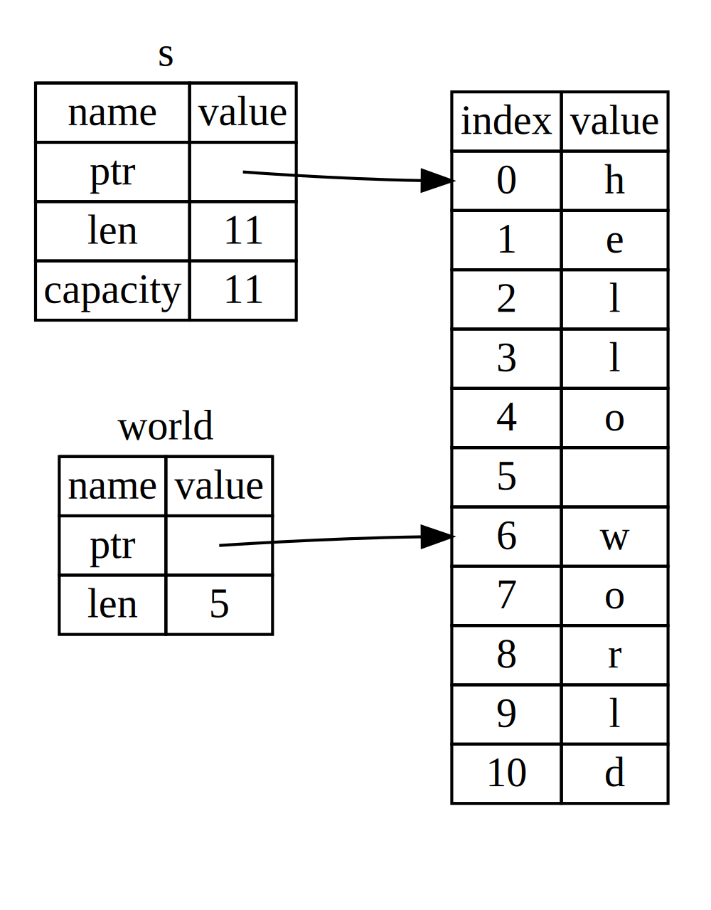

El Lenguaje de Programación Rust
por Steve Klabnik y Carol Nichols, con contribuciones de la Comunidad Rust
Esta versión del texto asume que estás usando Rust 1.78.0 (lanzado 2024-05-02) o posterior. Vea la sección “Instalación” del Capítulo 1 para instalar o actualizar Rust.
El formato HTML está disponible en línea en
https://doc.rust-lang.org/stable/book/
y offline con instalaciones de Rust realizadas con rustup; ejecute rustup doc --book para abrir.
También están disponibles varias traducciones de la comunidad.
Este texto está disponible en formato de libro impreso y ebook de No Starch Press.
üö® ¿Quieres una experiencia de aprendizaje más interactiva? Prueba una versi√≥n diferente del Libro de Rust, con: cuestionarios, resaltado, visualizaciones y más: https://rust-book.cs.brown.edu (en ingl√©s)
Prefacio
No siempre fue tan claro, pero el lenguaje de programación Rust es fundamentalmente sobre empoderamiento: no importa qué tipo de código estás escribiendo ahora, Rust te empodera para llegar más lejos, para programar con confianza en una mayor variedad de dominios de lo que lo hiciste antes.
Tomemos, por ejemplo, el trabajo de “sistemas” que se ocupa de los detalles de bajo nivel de la administración de la memoria, la representación de datos y la concurrencia. Tradicionalmente, este reino de la programación se ve como arcano, accesible sólo a unos pocos que han dedicado los años necesarios para aprender a evitar sus infames trampas. Y aunque aquellos que lo practican lo hacen con precaución, para que su código no esté abierto a vulnerabilidades que puedan ser explotadas, caídas o corrupción.
Rust rompe estas barreras al eliminar las antiguas trampas y proporciona un conjunto amigable y pulido de herramientas para ayudarte en el camino. Los programadores que necesitan “sumergirse” en un control de bajo nivel pueden hacerlo con Rust, sin asumir el riesgo habitual de caídas o agujeros de seguridad, y sin tener que aprender los puntos finos de una cadena de herramientas caprichosa. Lo mejor de todo, el lenguaje está diseñado para guiarte naturalmente hacia un código confiable que es eficiente en términos de velocidad y uso de memoria.
Los programadores que ya están trabajando con código de bajo nivel pueden usar Rust para elevar sus ambiciones. Por ejemplo, introducir la paralelización en Rust es una operación relativamente de bajo riesgo: el compilador lo detectará por ti. Así puedes abordar optimizaciones más agresivas en tu código con la confianza de que no introducirás accidentalmente caídas o vulnerabilidades.
Pero Rust no se limita a la programación de sistemas de bajo nivel. Es lo suficientemente expresivo y ergonómico para hacer que las aplicaciones CLI, servidores web y muchos otros tipos de código sean bastante agradables de escribir - encontrarás ejemplos simples de ambos más adelante en el libro. Trabajar con Rust te permite desarrollar habilidades que se transfieren de un dominio a otro; puedes aprender Rust escribiendo una aplicación web, y luego aplicar esas mismas habilidades para dirigir tu Raspberry Pi.
Este libro abraza plenamente el potencial de Rust para empoderar a tus usuarios. Es un texto amigable y accesible que tiene como objetivo ayudarte a mejorar no sólo tu conocimiento de Rust, sino también tu alcance y confianza como programador en general. Así que sumérgete, prepárate para aprender y ¡bienvenido a la comunidad Rust!
— Nicholas Matsakis y Aaron Turon
Introducción
Nota: Esta edición del libro es la misma que The Rust Programming Language disponible en formato impreso y ebook de No Starch Press.
Bienvenido a El Lenguaje de Programación Rust, un libro introductorio sobre Rust. El lenguaje de programación Rust te ayuda a escribir software más rápido y confiable. La ergonomía de alto nivel y el control de bajo nivel a menudo están en conflicto en el diseño de lenguajes de programación; Rust desafía ese conflicto. A través del equilibrio entre una capacidad técnica poderosa y una gran experiencia de desarrollo, Rust te da la opción de controlar los detalles de bajo nivel (como el uso de memoria) sin todo el problema tradicionalmente asociado con tal control.
Para Quién Es Rust
Rust es ideal para muchas personas por una variedad de razones. Veamos algunos de los grupos más importantes.
Equipos de Desarrolladores
Rust está demostrando ser una herramienta productiva para colaborar entre equipos grandes de desarrolladores con diferentes niveles de conocimiento de programación de sistemas. El código de bajo nivel tiende a tener varios sutiles errores, que en la mayoría de otros lenguajes solo pueden ser detectados a través de pruebas extensivas y una revisión cuidadosa del código por parte de desarrolladores experimentados. En Rust, el compilador juega un rol de guardián al negarse a compilar código con estos errores elusivos, incluidos los errores de concurrencia. Trabajando junto al compilador, el equipo puede dedicar su tiempo a enfocarse en la lógica del programa en lugar de perseguir errores.
Rust también trae herramientas de desarrollo contemporáneas al mundo de la programación de sistemas:
- Cargo, el administrador de dependencias y herramienta de compilación incluido, hace que agregar, compilar y administrar dependencias sea fácil y consistente en todo el ecosistema de Rust.
- La herramienta de formateo Rustfmt garantiza un estilo de codificación consistente entre los desarrolladores.
- El servidor de lenguaje Rust proporciona integración con entornos de desarrollo integrado (IDE) para la finalización del código y los mensajes de error en línea.
Al usar estas y otras herramientas en el ecosistema de Rust, los desarrolladores pueden ser productivos mientras escriben código de nivel de sistemas.
Estudiantes
Rust es para estudiantes y quienes estén interesados en aprender sobre conceptos de sistemas. Usando Rust, muchas personas han aprendido sobre temas como el desarrollo de sistemas operativos. La comunidad es muy acogedora y feliz de responder preguntas de estudiantes. A través de esfuerzos como este libro, los equipos de Rust quieren hacer que los conceptos de sistemas sean más accesibles para más personas, especialmente para quienes son nuevos en la programación.
Empresas
Cientos de empresas, grandes y pequeñas, usan Rust en producción para una variedad de tareas, incluidas herramientas de línea de comandos, servicios web, herramientas de DevOps, dispositivos incrustados, análisis y transcodificación de audio y video, criptomonedas, bioinformática, motores de búsqueda, aplicaciones de Internet de las cosas, aprendizaje automático e incluso partes importantes del navegador web Firefox.
Desarrolladores de Código Abierto
Rust es para personas que quieren construir el lenguaje de programación Rust, la comunidad, las herramientas de desarrollo y las bibliotecas. Nos encantaría que contribuyeras al lenguaje Rust.
Personas que Valoran la Velocidad y la Estabilidad
Rust es para personas que anhelan velocidad y estabilidad en un lenguaje. Por velocidad, nos referimos tanto a la rapidez con que el código Rust puede ejecutarse como a la velocidad con que Rust te permite escribir programas. Las verificaciones del compilador de Rust garantizan la estabilidad a través de adiciones de funcionalidades y refactorizaciones. Esto contrasta con el código heredado quebradizo en lenguajes sin estas verificaciones, que los desarrolladores a menudo tienen miedo de modificar. Al esforzarse por lograr abstracciones de costo cero, características de alto nivel que se compilan en código de bajo nivel tan rápido como el código escrito manualmente, Rust se esfuerza por hacer que el código seguro sea también código rápido.
El lenguaje Rust también espera apoyar a muchos otros usuarios; los mencionados aquí son solo algunos de los principales interesados. En general, la mayor ambición de Rust es eliminar los compromisos que los programadores han aceptado durante décadas al proporcionar seguridad y productividad, velocidad y ergonomía. Pruébalo y ve si sus elecciones funcionan para ti.
Para Quién Es Este Libro
Este libro asume que has escrito código en otro lenguaje de programación, pero no hace ninguna suposición sobre cuál es. Hemos intentado hacer que el material sea ampliamente accesible para aquellos de una amplia variedad de antecedentes en programación. No pasamos mucho tiempo hablando de lo que es la programación o cómo pensar sobre ella. Si eres completamente nuevo en la programación, sería mejor leer un libro que brinde una introducción específica a la programación.
Cómo Usar Este Libro
En general, este libro asume que lo estás leyendo en secuencia, de principio a fin. Los capítulos posteriores se basan en conceptos de los capítulos anteriores, y los capítulos anteriores pueden no profundizar en detalles sobre un tema en particular, pero volverán al tema en un capítulo posterior.
Encontrarás dos tipos de capítulos en este libro: capítulos de conceptos y capítulos de proyectos. En los capítulos de conceptos, aprenderás sobre un aspecto de Rust. En los capítulos de proyectos, construiremos programas pequeños juntos, aplicando lo que has aprendido hasta ahora. Los capítulos 2, 12 y 20 son capítulos de proyectos; el resto son capítulos de conceptos.
El capítulo 1 explica cómo instalar Rust, cómo escribir un programa “Hola, mundo!” Y cómo usar Cargo, el administrador de paquetes y herramienta de compilación de Rust. El capítulo 2 es una introducción práctica a la escritura de un programa en Rust, teniendo que construir un juego de adivinanzas. Aquí tratamos los conceptos a un nivel alto, y capítulos posteriores proporcionarán detalles adicionales. Si quieres ponerte manos a la obra de inmediato, el capítulo 2 es el lugar para eso. El capítulo 3 cubre las características de Rust que son similares a las de otros lenguajes de programación, y en el capítulo 4 aprenderás sobre el sistema de propiedad de Rust. Si eres un aprendiz particularmente meticuloso que prefiere aprender todos los detalles antes de pasar al siguiente, es posible que desees omitir el capítulo 2 y dirigirte directamente al capítulo 3, regresando al capítulo 2 cuando gustes trabajar en un proyecto aplicando los detalles que has aprendido.
El capítulo 5 discute las estructuras y los métodos, y el capítulo 6 cubre las
enumeraciones, las expresiones match, y la construcción de flujo de control
if let. Usarás estructuras y enumeraciones para crear tipos personalizados en
Rust.
En el capítulo 7, aprenderás sobre el sistema de módulos de Rust y sobre las reglas de privacidad para organizar tu código y su interfaz de programación de aplicaciones (API) pública. El capítulo 8 discute algunas estructuras de datos de colección comunes que proporciona la biblioteca estándar, como vectores, cadenas y mapas hash. El capítulo 9 explora la filosofía y técnicas de manejo de errores de Rust.
El capítulo 10 se adentra en los genéricos, los traits y los lifetimes, que te
dan el poder de definir código que se aplique a varios tipos. El capítulo 11 trata
sobre las pruebas, que incluso con las garantías de seguridad de Rust, son
necesarias para asegurar que la lógica de tu programa sea correcta. En el capítulo
12, construiremos nuestra propia implementación de un subconjunto de la
funcionalidad del comando de línea de comandos grep que busca texto dentro de
archivos. Para esto, usaremos muchos de los conceptos que discutimos en los
capítulos anteriores.
El capítulo 13 explora las closures y los iteradores: características de Rust que provienen de los lenguajes de programación funcional. En el capítulo 14, examinaremos Cargo en más profundidad y hablaremos sobre las mejores prácticas para compartir tus bibliotecas con otros. El capítulo 15 discute los punteros inteligentes que proporciona la biblioteca estándar y las características que habilitan su funcionalidad.
En el capítulo 16, recorreremos diferentes modelos de programación concurrente y hablaremos sobre cómo Rust te ayuda a programar en múltiples hilos sin temor. El capítulo 17 examina cómo los modismos de Rust se comparan con los principios de programación orientada a objetos con los que podrías estar familiarizado.
El capítulo 18 es una referencia a los patrones y el emparejamiento de patrones, que son formas poderosas de expresar ideas en todo programa de Rust. El capítulo 19 contiene un banquete de temas avanzados de interés, incluyendo Rust inseguro, macros y más sobre lifetimes, traits, tipos, funciones y closures.
En el capítulo 20, ¡completaremos un proyecto en el que implementaremos un servidor web de múltiples hilos de bajo nivel!
Finalmente, algunos apéndices contienen información útil sobre el lenguaje en un formato más de referencia. El apéndice A cubre las palabras clave de Rust, el apéndice B cubre los operadores y símbolos de Rust, el apéndice C cubre los traits derivables proporcionados por la biblioteca estándar, el apéndice D cubre algunas herramientas de desarrollo útiles, y el apéndice E explica las ediciones de Rust. En el apéndice F, puede encontrar traducciones del libro, y en el apéndice G cubriremos cómo se hace Rust y qué es Rust nightly.
No hay una forma incorrecta de leer este libro: ¡si quieres adelantarte, hazlo! Es posible que debas volver a los capítulos anteriores si experimentas alguna confusión. Pero haz lo que funcione para ti.
Una parte importante del proceso de aprendizaje de Rust es aprender a leer los mensajes de error que muestra el compilador: estos te guiarán hacia el código funcional. Por lo tanto, proporcionaremos muchos ejemplos que no se compilan junto con el mensaje de error que mostrará el compilador en cada situación. Ten en cuenta que si ingresas y ejecutas un ejemplo aleatorio, ¡es posible que no se compile! Asegúrate de leer el texto circundante para ver si el ejemplo que estás intentando ejecutar está destinado a error. Ferris también te ayudará a distinguir el código que no está destinado a funcionar:
| Ferris | Significado |
|---|---|
 | ¡Este código no compila! |
 | ¡Este código provoca un pánico! |
 | Este código no produce el comportamiento deseado. |
En la mayoría de las situaciones, te guiaremos a la versión correcta de cualquier código que no se compile.
Código fuente
Los archivos de origen de los que se genera este libro se pueden encontrar en GitHub.
Empezando
¡Empecemos tu viaje con Rust! Hay mucho que aprender, pero todo viaje comienza en algún lugar. En este capítulo, discutiremos:
- Instalación de Rust en Linux, macOS y Windows
- Escribir un programa que imprima
Hola, mundo! - Uso de
cargo, el administrador de paquetes y sistema de compilación de Rust
Instalación
El primer paso es instalar Rust. Descargaremos Rust a través de rustup, una
herramienta de línea de comandos para administrar las versiones de Rust y las
herramientas asociadas. Necesitarás una conexión a Internet para la descarga.
Nota: Si prefieres no usar
rustuppor alguna razón, consulta la página Otros métodos de instalación de Rust para obtener más opciones.
Los siguientes pasos instalan la última versión estable del compilador de Rust. Las garantías de estabilidad de Rust aseguran que todos los ejemplos del libro que se compilan seguirán compilando con versiones más nuevas de Rust. La salida puede diferir ligeramente entre versiones porque Rust a menudo mejora los mensajes de error y las advertencias. En otras palabras, cualquier versión más nueva, estable de Rust que instales usando estos pasos debería funcionar como se espera con el contenido de este libro.
Notación de línea de comandos
En este capítulo y en todo el libro, mostraremos algunos comandos utilizados en la terminal. Las líneas que debes ingresar en una terminal comienzan con
$. No necesitas escribir el carácter$; es el indicador de línea de comandos mostrado para indicar el comienzo de cada comando. Las líneas que no comienzan con$generalmente muestran la salida del comando anterior. Además, los ejemplos específicos de PowerShell usarán>en lugar de$.
Instalación de rustup en Linux o macOS
Si estás utilizando Linux o macOS, abre una terminal y escribe lo siguiente
$ curl --proto '=https' --tlsv1.2 https://sh.rustup.rs -sSf | sh
El comando descarga un script y comienza la instalación de la herramienta
rustup, que instala la última versión estable de Rust. Es posible que se te
solicite tu contraseña. Si la instalación es exitosa, aparecerá la siguiente
línea:
Rust is installed now. Great!
También necesitarás un enlazador, que es un programa que Rust utiliza para unir sus salidas compiladas en un solo archivo. Es probable que ya lo tengas. Si obtienes errores de enlace, debes instalar un compilador C, que generalmente incluye un enlazador. Un compilador C también es útil porque algunos paquetes comunes de Rust dependen de código C y necesitarán un compilador C.
En macOS, puedes obtener un compilador C ejecutando:
$ xcode-select --install
Los usuarios de Linux deben instalar generalmente GCC o Clang, según la
documentación de su distribución. Por ejemplo, si usas Ubuntu, puede instalar el
paquete build-essential.
Instalación de rustup en Windows
En Windows, ve a https://www.rust-lang.org/tools/install y sigue las instrucciones para instalar Rust. En algún momento de la instalación, recibirás un mensaje para instalar Visual Studio. Este provee un linker y las bibliotecas nativas necesarias para compilar programas.
Para obtener las herramientas de compilación, deberás instalar Visual Studio. Cuando se te pregunte qué paquetes de trabajo instalar, incluye:
- “Desarrollo de escritorio con C ++”
- El SDK de Windows 10 o 11
- El componente de paquete de idioma inglés, junto con cualquier otro paquete de idioma de tu elección
El resto de este libro usa comandos que funcionan tanto en cmd.exe como en PowerShell. Si hay diferencias específicas, explicaremos cuál usar.
Si tu necesitas más ayuda con este paso, mira MSVC prerequisites o escríbenos en nuestro discord
Solución de problemas
Para verificar si has instalado Rust correctamente, abra una shell y escribe esta línea:
$ rustc --version
Deberías ver el número de versión, el hash de confirmación y la fecha de confirmación de la última versión estable que se ha publicado, en el siguiente formato:
rustc x.y.z (abcabcabc yyyy-mm-dd)
Si ves esta información, ¡has instalado Rust correctamente! Si no ves esta
información, verifica que Rust esté en la variable de sistema %PATH% de la
siguiente manera.
En Windows CMD, usa:
> echo %PATH%
En PowerShell, usa:
> echo $env:Path
En Linux y macOS, usa:
$ echo $PATH
Si todo está correcto y Rust aún no funciona, hay varios lugares donde puedes obtener ayuda. Obten información sobre cómo comunicarte con otros Rustaceans (un apodo tonto que nos llamamos a nosotros mismos) en la página de la comunidad.
Actualización y desinstalación
Una vez que Rust se instala a través de rustup, actualizar a una versión
recién lanzada es fácil. Desde tu shell, ejecuta el siguiente script de
actualización:
$ rustup update
Para desinstalar Rust y rustup, ejecuta el siguiente script de desinstalación
desde tu shell:
$ rustup self uninstall
Documentación local
La instalación de Rust también incluye una copia local de la documentación para
que puedas leerla sin conexión. Ejecuta rustup doc para abrir la documentación
local en tu navegador.
En cualquier momento en que se proporcione un tipo o una función de la biblioteca estándar y no estés seguro de lo que hace o cómo usarlo, usa la documentación de la interfaz de programación de aplicaciones (API) para averiguarlo.
¡Hola, mundo!
Ahora que has instalado Rust, es hora de escribir tu primer programa en Rust.
Es tradicional cuando se aprende un nuevo lenguaje escribir un pequeño programa
que imprima el texto ¡Hola, mundo! en la pantalla, ¡así que haremos lo mismo
aquí!
Nota: Este libro asume una familiaridad básica con la línea de comandos. Rust no asume cosas específicas sobre tu editor o herramientas o dónde vive tu código, por lo que si prefieres usar un entorno de desarrollo integrado (IDE) en lugar de la línea de comandos, siéntete libre de usar tu IDE favorito. Muchos IDEs ahora tienen algún grado de soporte para Rust; consulta la documentación del IDE para obtener más detalles. El equipo de Rust se ha centrado en habilitar un gran soporte a IDEs a través de
rust-analyzer. Consulta Apéndice D para obtener más detalles.
Creando un directorio de proyecto
Comenzarás creando un directorio para almacenar tu código Rust. A Rust no le importa dónde vive tu código, pero para los ejercicios y proyectos de este libro, sugerimos que hagas un directorio proyectos en tu directorio de inicio y mantengas todos tus proyectos allí.
Abre una terminal y escribe los siguientes comandos para crear un directorio proyectos y un directorio para el proyecto “¡Hola, mundo!” dentro del directorio proyectos.
Para Linux, macOS y PowerShell en Windows, escribe esto:
$ mkdir ~/proyectos
$ cd ~/proyectos
$ mkdir hola_mundo
$ cd hola_mundo
Para Windows CMD, escribe esto:
> mkdir "%USERPROFILE%\proyectos"
> cd /d "%USERPROFILE%\proyectos"
> mkdir hola_mundo
> cd hola_mundo
Escribir y ejecutar un programa en Rust
A continuación, crea un nuevo archivo de texto y llámalo main.rs. Los archivos Rust siempre terminan con la extensión .rs. Si estás usando más de una palabra en tu nombre de archivo, la convención es usar un guión bajo para separarlos. Por ejemplo, usa hola_mundo.rs en lugar de holamundo.rs.
Ahora abre el archivo main.rs que acabas de crear y escribe el código en el Listado 1-1.
fn main() { println!("¡Hola, mundo!"); }
Guarda el archivo y vuelve a la ventana de la terminal en el directorio ~/proyectos/hola_mundo. En Linux o macOS, escribe los siguientes comandos para compilar y ejecutar el archivo:
$ rustc main.rs
$ ./main
¡Hola, mundo!
En Windows, escribe el comando .\main.exe en lugar de ./main:
> rustc main.rs
> .\main.exe
¡Hola, mundo!
Independientemente de tu sistema operativo, la cadena ¡Hola, mundo! debe
imprimirse en la terminal. Si no ves esta salida, consulta la parte
“Solución de problemas” de la sección de
Instalación para obtener formas de obtener ayuda.
Si ¡Hola, mundo! se imprimió, ¡felicidades! Acabas de escribir oficialmente un
programa en Rust. Eso te convierte en un programador de Rust, ¡bienvenido!
Anatomía de un programa en Rust
Revisemos este programa “¡Hola, mundo!” en detalle. Aquí está la primera parte del rompecabezas:
fn main() { }
Estas líneas definen una función llamada main. La función main es especial:
siempre es el primer código que se ejecuta en cada programa ejecutable de Rust.
Aquí, la primera línea declara una función llamada main que no tiene
parámetros y no devuelve nada. Si hubiera parámetros, irían dentro de los
paréntesis ().
El cuerpo de la función está envuelto en {}. Rust requiere llaves alrededor de
todos los cuerpos de función. Es buena costumbre colocar la llave de apertura en
la misma línea que la declaración de la función, agregando un espacio entre
ambos.
Nota: Si deseas mantener un estilo estándar en todos los proyectos de Rust, puedes usar una herramienta de formateo automático llamada
rustfmtpara formatear tu código en un estilo particular (más sobrerustfmten Apéndice D). El equipo de Rust ha incluido esta herramienta con la distribución estándar de Rust, comorustc, por lo que debería estar instalado en tu computadora.
El cuerpo de la función main contiene el siguiente código:
#![allow(unused)] fn main() { println!("¡Hola, mundo!"); }
Esta línea hace todo el trabajo en este pequeño programa: imprime texto en la pantalla. Hay cuatro detalles importantes que hay que notar aquí.
Primero, el estilo de Rust es indentar con cuatro espacios, no con una tabulación.
Segundo, println! llamamos a una macro de Rust. Si hubiéramos llamado a una
función en su lugar, habríamos ingresado println (sin el !). Discutiremos las
macros de Rust en más detalle en el Capítulo 19. Por ahora, solo necesitas saber
que usar un ! significa que estamos llamando a una macro en lugar de una función
normal y que las macros no siempre siguen las mismas reglas que las funciones.
Tercero, ve la cadena "¡Hola, mundo!". Pasamos esta cadena como argumento a
println!, y la cadena se imprime en la pantalla.
Cuarto, terminamos la línea con un punto y coma (;), lo que indica que esta
expresión ha terminado y la siguiente está lista para comenzar. La mayoría de
las líneas de código de Rust terminan con un punto y coma.
Compilar y ejecutar son pasos separados
Acabas de ejecutar un programa recién creado, así que examinemos cada paso en el proceso.
Antes de ejecutar un programa de Rust, debes compilarlo usando el compilador de
Rust ingresando el comando rustc y pasándole el nombre de tu archivo de
código fuente, así:
$ rustc main.rs
Si tienes un trasfondo en C o C ++, notarás que esto es similar a gcc o
clang. Después de compilar con éxito, Rust genera un ejecutable binario.
En Linux, macOS y PowerShell en Windows, puedes ver el ejecutable ingresando el
comando ls en tu shell:
$ ls
main main.rs
En Linux y macOS, verás dos archivos. Con PowerShell en Windows, verás los mismos tres archivos que verías con CMD. Con CMD en Windows, ingresarías lo siguiente:
> dir /B %= la /B significa que solo mostrara los nombres de los archivos =%
main.exe
main.pdb
main.rs
Esto muestra el archivo de código fuente con la extensión .rs, el archivo ejecutable (main.exe en Windows, pero main en todas las otras plataformas), y, cuando se usa Windows, un archivo que contiene información de depuración con la extensión .pdb. Desde aquí, ejecuta el archivo main o main.exe, así:
$ ./main # o .\main.exe en Windows
Si tu main.rs es tu programa "¡Hola, mundo!", Esta línea imprime ¡Hola, mundo! en tu terminal.
Si estás más familiarizado con un lenguaje dinámico, como Ruby, Python o JavaScript, puede que no estés acostumbrado a compilar y ejecutar un programa como pasos separados. Rust es un lenguaje compilado de antemano, lo que significa que puedes compilar un programa y dar el ejecutable a otra persona, y pueden ejecutarlo incluso sin tener Rust instalado. Si le das a alguien un archivo .rb, .py o .js, necesitan tener una implementación de Ruby, Python o JavaScript instalada (respectivamente). Pero en esos lenguajes, sólo necesitas un comando para compilar y ejecutar tu programa. Todo depende de las concesiones hechas al momento de diseñar un lenguaje.
Solo compilar con rustc está bien para programas simples, pero a medida que
tu proyecto crece, querrás administrar todas las opciones y facilitar el
compartir tu código. A continuación, te presentaremos la herramienta
Cargo, que te ayudará a escribir programas de Rust reales.
¡Hola, Cargo!
Cargo es el sistema de compilación y administrador de paquetes de Rust. La mayoría de los Rustaceans usan esta herramienta para administrar sus proyectos Rust porque Cargo maneja muchas tareas para ti, como compilar tu código, descargar las bibliotecas de las que depende tu código y compilar esas bibliotecas. (Llamamos dependencias a las bibliotecas de las que depende tu código).
Los programas Rust más simples, como el que hemos escrito hasta ahora, no tienen dependencias. Si hubiéramos construido el proyecto “¡Hola, mundo!” con Cargo, sólo usaría la parte de Cargo que maneja la compilación de tu código. A medida que escribas programas Rust más complejos, agregarás dependencias, y si comienzas un proyecto usando Cargo, agregar dependencias será mucho más fácil de hacer.
Debido a que la gran mayoría de los proyectos Rust usan Cargo, el resto de este libro asume que también estás usando Cargo. Cargo viene instalado con Rust si usaste los instaladores oficiales que se discuten en la sección “Installation”. Si instalaste Rust a través de algunos otros medios, verifica si Cargo está instalado ingresando lo siguiente en tu terminal:
$ cargo --version
Si ves un número de versión, ¡lo tienes! Si ves un error, como command not found,
consulta la documentación de tu método de instalación para determinar cómo
instalar Cargo por separado.
Creación de un proyecto con Cargo
Vamos a crear un nuevo proyecto usando Cargo y ver cómo difiere de nuestro proyecto original “¡Hola, mundo!”. Navega de vuelta a tu directorio proyectos (o dondequiera que hayas decidido almacenar tu código). Luego, en cualquier sistema operativo, ejecuta lo siguiente:
$ cargo new hello_cargo
$ cd hello_cargo
El primer comando crea un nuevo directorio y proyecto llamado hello_cargo. Hemos nombrado a nuestro proyecto hello_cargo, y Cargo crea sus archivos en un directorio con el mismo nombre.
Ve al directorio hello_cargo y lista los archivos. Verás que Cargo ha generado dos archivos y un directorio para nosotros: un archivo Cargo.toml y un directorio src con un archivo main.rs dentro.
También ha inicializado un nuevo repositorio Git junto con un archivo
.gitignore. Los archivos Git no se generarán si ejecutas cargo new dentro
de un repositorio Git existente; puedes anular este comportamiento usando
cargo new --vcs=git.
Nota: Git es un sistema de control de versiones común. Puedes cambiar
cargo newpara usar un sistema de control de versiones diferente o ningún sistema de control de versiones usando la bandera--vcs. Ejecutacargo new --helppara ver las opciones disponibles.
Abre Cargo.toml en tu editor de texto de elección. Debería verse similar al código del Listado 1-2.
[package]
name = "hello_cargo"
version = "0.1.0"
edition = "2021"
# See more keys and their definitions at https://doc.rust-lang.org/cargo/reference/manifest.html
[dependencies]
Este archivo está en el formato TOML (Tom’s Obvious, Minimal Language), que es el formato de configuración de Cargo.
La primera línea, [package], es un encabezado de sección que indica que las
siguientes declaraciones están configurando un paquete. A medida que agreguemos
más información a este archivo, agregaremos otras secciones.
Las próximas tres líneas establecen la información de configuración que Cargo
necesita para compilar tu programa: el nombre, la versión y la edición de Rust
que se usará. Hablaremos sobre la entrada edition en Apéndice E
La última línea, [dependencies], es el comienzo de una sección para que
enumere cualquier dependencia de tu proyecto. En Rust, los paquetes de código
se denominan crates. No necesitaremos otros crates para este proyecto, pero
lo haremos en el primer proyecto del Capítulo 2, por lo que usaremos esta
sección de dependencias hasta entonces.
Ahora abre src/main.rs y echa un vistazo:
Nombre de archivo: src/main.rs
fn main() { println!("Hello, world!"); }
¡Cargo ha generado un programa “Hello, world!”/“¡Hola, mundo!” para ti, ¡igual que el que escribimos enl Listado 1-1! Hasta ahora, las diferencias entre nuestro proyecto y el proyecto generado por Cargo son que Cargo colocó el código en el directorio src y tenemos un archivo de configuración Cargo.toml en el directorio superior.
Cargo espera que tus archivos de origen vivan dentro del directorio src. El directorio del proyecto de nivel superior es solo para archivos README, información de licencia, archivos de configuración y cualquier otra cosa que no esté relacionada con tu código. Usar Cargo te ayuda a organizar tus proyectos. Hay un lugar para todo, y todo está en su lugar.
Si comenzaste un proyecto que no usa Cargo, como hicimos con el proyecto “¡Hola, mundo!”, puedes convertirlo en un proyecto que sí use Cargo. Mueve el código del proyecto al directorio src y crea un archivo Cargo.toml adecuado.
Construir y ejecutar un proyecto de Cargo
Ahora veamos qué es diferente cuando construimos y ejecutamos el programa “¡Hola, mundo!” con Cargo. ¡Desde tu directorio hello_cargo, construye tu proyecto ingresando el siguiente comando:
$ cargo build
Compiling hello_cargo v0.1.0 (file:///projects/hello_cargo)
Finished dev [unoptimized + debuginfo] target(s) in 2.85 secs
Este comando crea un archivo ejecutable en target/debug/hello_cargo (o target\debug\hello_cargo.exe en Windows) en lugar de en tu directorio actual. Debido a que la compilación predeterminada es una compilación de depuración, Cargo coloca el binario en un directorio llamado debug. Puedes llamar al ejecutable con este comando:
$ ./target/debug/hello_cargo # o .\target\debug\hello_cargo.exe en Windows
Hello, world!
Si todo va bien, Hello, world! debería imprimirse en la terminal. Ejecutar
cargo build por primera vez también hace que Cargo cree un nuevo archivo en
el nivel superior: Cargo.lock. Este archivo rastrea las versiones exactas de
las dependencias de tu proyecto. Este proyecto no tiene dependencias, por lo
que el archivo es un poco escaso. Nunca necesitarás cambiar este archivo
manualmente; Cargo administra su contenido para ti.
Acabamos de construir un proyecto con cargo build y ejecutarlo con
./target/debug/hello_cargo, pero también podemos usar cargo run para
compilar el código y luego llamar al ejecutable resultante en un solo
comando:
$ cargo run
Finished dev [unoptimized + debuginfo] target(s) in 0.0 secs
Running `target/debug/hello_cargo`
Hello, world!
Usar cargo run es más conveniente que tener que recordar ejecutar cargo build y luego usar la ruta completa al binario, por lo que la mayoría de los
desarrolladores usan cargo run.
Ten en cuenta que esta vez no vimos salida que indicara que Cargo estaba
compilando hello_cargo. Cargo supo que los archivos no habían cambiado, por
lo que no volvió a construir, sino que solo ejecutó el binario. Si hubieras
modificado tu código fuente, Cargo habría reconstruido el proyecto antes de
ejecutarlo, y habrías visto esta salida:
$ cargo run
Compiling hello_cargo v0.1.0 (file:///projects/hello_cargo)
Finished dev [unoptimized + debuginfo] target(s) in 0.33 secs
Running `target/debug/hello_cargo`
Hello, world!
Cargo también proporciona un comando llamado cargo check. Este comando
comprueba rápidamente tu código para asegurarse de que compila, pero no
produce un ejecutable:
$ cargo check
Checking hello_cargo v0.1.0 (file:///projects/hello_cargo)
Finished dev [unoptimized + debuginfo] target(s) in 0.32 secs
¿Por qué no querrías un ejecutable? A menudo, cargo check es mucho más rápido
que cargo build porque omite el paso de producir un ejecutable. Si estás
verificando continuamente tu trabajo mientras escribes el código, usar
cargo check acelerará el proceso de informarte si tu proyecto todavía aún está
compilando. ¡Por lo tanto, muchos Rustaceans ejecutan cargo check
periódicamente mientras escriben su programa para asegurarse de que compila!
Luego ejecutan cargo build cuando están listos para usar el ejecutable.
Resumamos lo que hemos aprendido hasta ahora sobre Cargo:
- Podemos crear un proyecto usando
cargo new. - Podemos construir un proyecto usando
cargo build. - Podemos construir y ejecutar un proyecto en un solo paso usando
cargo run. - Podemos construir un proyecto sin producir un binario para verificar errores
usando
cargo check. - En lugar de guardar el resultado de la compilación en el mismo directorio que nuestro código, Cargo lo almacena en el directorio target/debug.
Una ventaja adicional de usar Cargo es que los comandos son los mismos sin importar en qué sistema operativo estés trabajando. Por lo tanto, en este punto, ya no proporcionaremos instrucciones específicas para Linux y macOS versus Windows.
Construyendo una versión de lanzamiento
Cuando tu proyecto finalmente esté listo para su lanzamiento, puedes usar cargo build --release para compilarlo con optimizaciones. Este comando creará un
ejecutable en target/release en lugar de target/debug. Las optimizaciones
hacen que tu código Rust se ejecute más rápido, pero al activarlos se alarga el
tiempo que tarda tu programa en compilarse. Es por eso que hay dos perfiles
diferentes: uno para el desarrollo, cuando deseas reconstruir rápidamente y
con frecuencia, y otro para construir el programa final que le darás al usuario,
que no se reconstruirá repetidamente y que se ejecutará lo más rápido posible.
Si estás midiendo el tiempo de ejecución de tu código, asegúrate de ejecutar
cargo build --release y realizar la prueba de rendimiento con el ejecutable
en target/release.
Cargo como convención
Con proyectos simples, Cargo no proporciona mucho valor por sobre sólo usar
rustc, pero demostrará su valor a medida que tus programas se vuelvan más
intrincados. Una vez que los programas crecen a múltiples archivos o necesitan
una dependencia, es mucho más fácil dejar que Cargo coordine la construcción.
Aunque el proyecto hello_cargo es simple, ahora usas muchas de las herramientas
reales que usarás en el resto de tu carrera en Rust. De hecho, para trabajar en
cualquier proyecto existente, puedes usar los siguientes comandos para verificar
el código usando Git, cambiar al directorio del proyecto y construir:
$ git clone example.org/someproject
$ cd someproject
$ cargo build
Para obtener más información sobre Cargo, consulta su documentación.
Resumen
¡Ya estás en un gran comienzo en tu viaje de Rust! En este capítulo, has aprendido cómo:
- Instalar la última versión estable de Rust usando
rustup - Actualizar a una versión más reciente de Rust
- Abrir documentación instalada localmente
- Escribir y ejecutar un programa "¡Hola, mundo!" usando
rustcdirectamente - Crear y ejecutar un nuevo proyecto usando las convenciones de Cargo
Es un buen momento para construir un programa más sustancial para acostumbrarse a leer y escribir código Rust. Entonces, en el capítulo 2, construiremos un programa de juego de adivinanzas. Si prefieres comenzar aprendiendo cómo funcionan los conceptos de programación comunes en Rust, consulta el capítulo 3 y luego regresa al capítulo 2.
Programando un juego de adivinanzas
¡Vamos a empezar con Rust trabajando en un proyecto práctico! Este capítulo te
introduce a algunos conceptos comunes de Rust mostrándote cómo usarlos en un
programa real. ¡Aprenderás sobre let, match, métodos, funciones asociadas,
paquetes externos y más! En los capítulos siguientes, exploraremos estos
conceptos en más detalle. En este capítulo, solo practicarás los fundamentos.
Implementaremos un clásico problema de programación para principiantes: un juego de adivinanzas. Así es como funciona: el programa generará un número entero aleatorio entre 1 y 100. Luego le pedirá al jugador que ingrese una adivinanza. Después de ingresar una adivinanza, el programa indicará si la adivinanza es demasiado baja o demasiado alta. Si la adivinanza es correcta, el juego imprimirá un mensaje de felicitación y saldrá.
Configurando un nuevo proyecto
Para configurar un nuevo proyecto, vaya al directorio proyectos que creó en el Capítulo 1 y cree un nuevo proyecto usando Cargo, así:
$ cargo new guessing_game
$ cd guessing_game
El primer comando, cargo new, toma el nombre del proyecto (guessing_game)
como el primer argumento. El segundo comando cambia al directorio del nuevo
proyecto.
Mira el archivo Cargo.toml generado:
Nombre de archivo: Cargo.toml
[package]
name = "guessing_game"
version = "0.1.0"
edition = "2021"
# See more keys and their definitions at https://doc.rust-lang.org/cargo/reference/manifest.html
[dependencies]
Como viste en el Capítulo 1, cargo new genera un programa “Hola, mundo!” para
ti. Mira el archivo src/main.rs:
Nombre de archivo: src/main.rs
fn main() { println!("Hello, world!"); }
Ahora compilemos este programa “Hola, mundo!” y ejecutémoslo en el mismo paso
usando el comando cargo run:
$ cargo run
Compiling guessing_game v0.1.0 (file:///projects/guessing_game)
Finished `dev` profile [unoptimized + debuginfo] target(s) in 1.50s
Running `target/debug/guessing_game`
Hello, world!
El comando run es útil cuando necesitas iterar rápidamente en un proyecto,
como haremos en este juego, probando rápidamente cada iteración antes de
pasar a la siguiente.
Vuelve a abrir el archivo src/main.rs. Escribirás todo el código en este
Procesando una adivinanza
La primera parte del programa del juego de adivinanzas pedirá al usuario que ingrese un valor, procesará ese valor y verificará que el valor esté en el formato esperado. Para comenzar, permitiremos al jugador ingresar una adivinanza. Ingresa el código de la Lista 2-1 en src/main.rs.
Nombre de archivo: src/main.rs
use std::io;
fn main() {
println!("Guess the number!");
println!("Please input your guess.");
let mut guess = String::new();
io::stdin()
.read_line(&mut guess)
.expect("Failed to read line");
println!("You guessed: {}", guess);
}Lista 2-1: Código que obtiene una adivinanza del usuario y la imprime
Este código contiene mucha información, así que repasémoslo línea por línea.
Para obtener la entrada del usuario y luego imprimir el resultado como salida,
necesitamos traer la biblioteca de entrada/salida io al alcance. La biblioteca
io viene de la biblioteca estándar, conocida como std:
use std::io;
fn main() {
println!("Guess the number!");
println!("Please input your guess.");
let mut guess = String::new();
io::stdin()
.read_line(&mut guess)
.expect("Failed to read line");
println!("You guessed: {}", guess);
}Por defecto, Rust tiene un conjunto de elementos definidos en la biblioteca estándar que trae al alcance de cada programa. Este conjunto se llama prelude, y puedes ver todo lo que contiene en la documentación de la biblioteca estándar.
Si un tipo que quieres usar no está en el prelude, tienes que traer ese tipo
al alcance explícitamente con una declaración use. Usar la biblioteca std::io
te proporciona una serie de características útiles, incluyendo la capacidad de
aceptar la entrada del usuario.
Como viste en el Capítulo 1, la función main es el punto de entrada al
programa:
use std::io;
fn main() {
println!("Guess the number!");
println!("Please input your guess.");
let mut guess = String::new();
io::stdin()
.read_line(&mut guess)
.expect("Failed to read line");
println!("You guessed: {}", guess);
}La sintaxis fn declara una nueva función; los paréntesis, (), indican que
no hay parámetros; y la llave, {, inicia el cuerpo de la función.
Como también aprendiste en el Capítulo 1, println! es una macro que imprime
una cadena en la pantalla:
use std::io;
fn main() {
println!("Guess the number!");
println!("Please input your guess.");
let mut guess = String::new();
io::stdin()
.read_line(&mut guess)
.expect("Failed to read line");
println!("You guessed: {}", guess);
}Este código está imprimiendo una solicitud que indica qué es el juego y está solicitando la entrada del usuario.
Almacenando valores con variables
A continuación, crearemos una variable para almacenar la entrada del usuario, como esto:
use std::io;
fn main() {
println!("Guess the number!");
println!("Please input your guess.");
let mut guess = String::new();
io::stdin()
.read_line(&mut guess)
.expect("Failed to read line");
println!("You guessed: {}", guess);
}¡Ahora el programa está interesante! Hay mucho que está pasando en esta pequeña
línea. Usamos la declaración let para crear la variable. Aquí hay otro
ejemplo:
let apples = 5;Esta línea crea una nueva variable llamada apples y la enlaza con el valor 5.
En Rust, las variables son inmutables por defecto, lo que significa que una vez
que le damos a la variable un valor, el valor no cambiará. Vamos a discutir
este concepto en detalle en la sección “Variables y Mutabilidad”
del Capítulo 3. Para hacer una variable mutable, agregamos mut antes del
nombre de la variable:
let apples = 5; // immutable
let mut bananas = 5; // mutableNota: La sintaxis
//inicia un comentario que continúa hasta el final de la línea. Rust ignora todo lo que está en los comentarios. Vamos a discutir los comentarios en más detalle en el Capítulo 3.
Regresando al programa del juego de adivinanzas, ahora sabes que let mut guess
introducirá una variable mutable llamada guess. El signo igual (=) le dice
a Rust que queremos enlazar algo a la variable ahora. A la derecha del signo
igual está el valor al que guess está enlazado, que es el resultado de llamar
a String::new, una función que devuelve una nueva instancia de un String.
String es un tipo de cadena proporcionado por la
biblioteca estándar que es una parte de texto codificada en UTF-8 que puede
crecer.
La sintaxis :: en la línea ::new indica que new es una función asociada
del tipo String. Una función asociada es una función que está implementada
en un tipo, en este caso String. Esta función new crea una nueva cadena
vacía. Encontrarás una función new en muchos tipos porque es un nombre
común para una función que crea un nuevo valor de algún tipo.
En total, la línea let mut guess = String::new(); ha creado una variable
mutable que está actualmente enlazada a una nueva instancia vacía de un
String. ¡Uf!
Recibiendo la entrada del usuario
Recuerda que incluimos la funcionalidad de entrada/salida de la biblioteca
estándar con use std::io; en la primera línea del programa. Ahora llamaremos
a la función stdin del módulo io, que nos permitirá manejar la entrada del
usuario:
use std::io;
fn main() {
println!("Guess the number!");
println!("Please input your guess.");
let mut guess = String::new();
io::stdin()
.read_line(&mut guess)
.expect("Failed to read line");
println!("You guessed: {}", guess);
}Si no hubiéramos importado la biblioteca io con use std::io; al comienzo del
programa, aún podríamos usar la función escribiendo esta llamada de función
como std::io::stdin. La función stdin devuelve una instancia de
std::io::Stdin, que es un tipo que representa un
manejador de la entrada estándar para tu terminal.
A continuación, la línea .read_line(&mut guess) llama al método
read_line en el manejador de entrada estándar para
obtener la entrada del usuario. También estamos pasando &mut guess como
argumento a read_line para decirle qué cadena almacenar la entrada del
usuario. El trabajo completo de read_line es tomar lo que el usuario escribe
en la entrada estándar y agregar eso a una cadena (sin sobrescribir su
contenido), por lo que, por lo tanto, pasamos esa cadena como argumento. La
cadena de argumentos debe ser mutable para que el método pueda cambiar el
contenido de la cadena.
El & indica que este argumento es una referencia, que te da una forma de
permitir que varias partes de tu código accedan a una pieza de datos sin
necesidad de copiar esos datos en la memoria varias veces. Las referencias son
una característica compleja, y una de las principales ventajas de Rust es lo
seguro y fácil que es usar referencias. No necesitas saber mucho de esos
detalles para terminar este programa. Por ahora, todo lo que necesitas saber es
que, como las variables, las referencias son inmutables por defecto. Por lo
tanto, necesitas escribir &mut guess en lugar de &guess para hacerlo
mutable. (El capítulo 4 explicará las referencias con más detalle.)
Manejando el posible fallo con Result
Todavía estamos trabajando en esta línea de código. Ahora estamos discutiendo una tercera línea de texto, pero ten en cuenta que aún es parte de una sola línea lógica de código. La siguiente parte es este método:
use std::io;
fn main() {
println!("Guess the number!");
println!("Please input your guess.");
let mut guess = String::new();
io::stdin()
.read_line(&mut guess)
.expect("Failed to read line");
println!("You guessed: {}", guess);
}Podríamos haber escrito este código como:
io::stdin().read_line(&mut guess).expect("Failed to read line");Sin embargo, una línea larga es difícil de leer, por lo que es mejor dividirla.
A menudo es sabio introducir un salto de línea y otros espacios en blanco para
ayudar a dividir líneas largas cuando llamas a un método con la sintaxis
.method_name(). Ahora discutamos lo que hace esta línea.
Como se mencionó anteriormente, read_line coloca lo que el usuario ingresa en
la cadena que le pasamos, pero también devuelve un valor Result. Result es una enumeración, a menudo
llamada enum, que es un tipo que puede estar en uno de varios estados
posibles. Llamamos a cada estado posible a una variante.
El Capítulo 6 cubrirá las enumeraciones con más
detalles. El propósito de estos tipos Result es codificar información de
manejo de errores.
Las variantes de Result son Ok y Err. La variante Ok indica que la
operación fue exitosa, y dentro de Ok está el valor generado con éxito. La
variante Err significa que la operación falló, y Err contiene información
sobre cómo o por qué la operación falló.
Los valores del tipo Result, como los valores de cualquier tipo, tienen
métodos definidos en ellos. Una instancia de Result tiene un método
expect que puedes llamar. Si esta instancia de
Result es un valor Err, expect hará que el programa se bloquee y muestre
el mensaje que pasaste como argumento a expect. Si el método read_line
devuelve un Err, probablemente sea el resultado de un error proveniente del
sistema operativo subyacente. Si esta instancia de Result es un valor Ok,
expect tomará el valor de retorno que Ok está sosteniendo y devolverá solo
ese valor para que lo puedas usar. En este caso, ese valor es el número de
bytes en la entrada del usuario.
Si no llamas a expect, el programa se compilará, pero obtendrás una advertencia:
$ cargo build
Compiling guessing_game v0.1.0 (file:///projects/guessing_game)
warning: unused `Result` that must be used
--> src/main.rs:10:5
|
10 | io::stdin().read_line(&mut guess);
| ^^^^^^^^^^^^^^^^^^^^^^^^^^^^^^^^^
|
= note: this `Result` may be an `Err` variant, which should be handled
= note: `#[warn(unused_must_use)]` on by default
help: use `let _ = ...` to ignore the resulting value
|
10 | let _ = io::stdin().read_line(&mut guess);
| +++++++
warning: `guessing_game` (bin "guessing_game") generated 1 warning
Finished `dev` profile [unoptimized + debuginfo] target(s) in 0.59s
Rust advierte que no has usado el valor Result devuelto por read_line,
indicando que el programa no ha manejado un posible error.
La forma correcta de suprimir la advertencia es escribir realmente código de
manejo de errores, pero en nuestro caso solo queremos bloquear este programa
cuando ocurra un problema, por lo que podemos usar expect. Aprenderás a
recuperarte de los errores en el Capítulo 9.
Imprimiendo valores con marcadores de posición println!
Además del corchete de cierre, solo hay una línea más que discutir en el código hasta ahora:
use std::io;
fn main() {
println!("Guess the number!");
println!("Please input your guess.");
let mut guess = String::new();
io::stdin()
.read_line(&mut guess)
.expect("Failed to read line");
println!("You guessed: {}", guess);
}Esta línea imprime la cadena que ahora contiene la entrada del usuario. El
conjunto de llaves {} es un marcador de posición: piensa en {} como pequeñas
pinzas de cangrejo que mantienen un valor en su lugar. Al imprimir el valor de
una variable, el nombre de la variable puede ir dentro de las llaves
curvas. Al imprimir el resultado de evaluar una expresión, coloca llaves
curvas vacías en la cadena de formato, luego sigue la cadena de formato con una
lista separada por comas de expresiones para imprimir en cada marcador de
posición vacío de llaves curvas en el mismo orden. Imprimir una variable y el
resultado de una expresión en una llamada a println! se vería así:
#![allow(unused)] fn main() { let x = 5; let y = 10; println!("x = {x} and y + 2 = {}", y + 2); }
Este código imprimiría x = 5 and y + 2 = 12.
Probando la primera parte
Probemos la primera parte del juego de adivinanzas. Ejecútalo usando cargo run:
$ cargo run
Compiling guessing_game v0.1.0 (file:///projects/guessing_game)
Finished dev [unoptimized + debuginfo] target(s) in 6.44s
Running `target/debug/guessing_game`
Guess the number!
Please input your guess.
6
You guessed: 6
En este punto, la primera parte del juego está terminada: estamos obteniendo entrada del teclado y luego la imprimimos.
Generando un número secreto
A continuación, necesitamos generar un número secreto que el usuario intentará
adivinar. El número secreto debe ser diferente cada vez para que el juego sea
divertido de jugar más de una vez. Usaremos un número aleatorio entre 1 y 100
para que el juego no sea demasiado difícil. Rust aún no incluye la
funcionalidad de números aleatorios en su biblioteca estándar. Sin embargo, el
equipo de Rust proporciona un rand crate con dicha
funcionalidad.
Usando un Crate para obtener más funcionalidad
Recuerda que un crate es una colección de archivos de código fuente de Rust. El
proyecto que hemos estado construyendo es un binary crate, que es un
ejecutable. El crate rand es un library crate, que contiene código que se
pretende usar en otros programas y no se puede ejecutar por sí solo.
La coordinación de los crates externos de Cargo es donde realmente brilla
Cargo. Antes de poder escribir código que use rand, necesitamos modificar el
archivo Cargo.toml para incluir el crate rand como una dependencia. Abre ese
archivo ahora y agrega la siguiente línea al final, debajo del encabezado de la
sección [dependencies] que Cargo creó para ti. Asegúrate de especificar rand
exactamente como lo tenemos aquí, con este número de versión, o los ejemplos de
código en este tutorial pueden no funcionar:
Nombre de archivo: Cargo.toml
[dependencies]
rand = "0.8.5"
En el archivo Cargo.toml, todo lo que sigue a un encabezado es parte de esa
sección que continúa hasta que comienza otra sección. En [dependencies] le
dices a Cargo qué crates externos depende tu proyecto y qué versiones de esos
crates requieres. En este caso, especificamos el crate rand con el
especificador de versión semántica 0.8.5. Cargo entiende Semantic
Versioning (a veces llamado SemVer), que es un
estándar para escribir números de versión. El especificador 0.8.5 es
realmente un atajo para ^0.8.5, lo que significa cualquier versión que sea
al menos 0.8.5 pero inferior a 0.9.0.
Cargo considera que estas versiones tienen APIs públicas compatibles con la versión 0.8.5, y esta especificación asegura que obtendrá la última versión de corrección que aún se compilará con el código de este capítulo. Cualquier versión 0.9.0 o superior no está garantizada de tener la misma API que lo que usarán los siguientes ejemplos.
Ahora, sin cambiar ningún código, construyamos el proyecto, como se muestra en el Listado 2-2.
$ cargo build
Updating crates.io index
Downloaded rand v0.8.5
Downloaded libc v0.2.127
Downloaded getrandom v0.2.7
Downloaded cfg-if v1.0.0
Downloaded ppv-lite86 v0.2.16
Downloaded rand_chacha v0.3.1
Downloaded rand_core v0.6.3
Compiling libc v0.2.127
Compiling getrandom v0.2.7
Compiling cfg-if v1.0.0
Compiling ppv-lite86 v0.2.16
Compiling rand_core v0.6.3
Compiling rand_chacha v0.3.1
Compiling rand v0.8.5
Compiling guessing_game v0.1.0 (file:///projects/guessing_game)
Finished dev [unoptimized + debuginfo] target(s) in 2.53s
Listado 2-2: La salida de ejecutar cargo build después
de agregar el crate rand como una dependencia
Es posible que veas números de versión diferentes (¡pero todos serán compatibles con el código, gracias a SemVer!) y líneas diferentes (dependiendo del sistema operativo), y las líneas pueden estar en un orden diferente.
Cuando incluimos una dependencia externa, Cargo obtiene las últimas versiones de todo lo que la dependencia necesita del registro, que es una copia de datos de Crates.io. Crates.io es donde las personas en el ecosistema de Rust publican sus proyectos de Rust de código abierto para que otros los utilicen.
Después de actualizar el registro, Cargo verifica la sección [dependencies]
y descarga cualquier crate que se haya enumerado que aún no se haya
descargado. En este caso, aunque solo enumeramos rand como una dependencia,
Cargo también tomó otros crates que rand depende para funcionar. Después de
descargar los crates, Rust los compila y luego compila el proyecto con las
dependencias disponibles.
Si ejecuta cargo build nuevamente sin hacer ningún cambio, no obtendrá
ninguna salida aparte de la línea Finished. Cargo sabe que ya ha descargado y
compilado las dependencias, y no ha cambiado nada sobre ellas en su archivo
Cargo.toml. Cargo también sabe que no ha cambiado nada sobre su código, por
lo que tampoco lo vuelve a compilar. Sin nada que hacer, simplemente sale.
Si abre el archivo src/main.rs, realiza un cambio trivial y luego lo guarda y vuelve a construir, solo verá dos líneas de salida:
$ cargo build
Compiling guessing_game v0.1.0 (file:///projects/guessing_game)
Finished dev [unoptimized + debuginfo] target(s) in 2.53 secs
Estas líneas muestran que Cargo solo actualiza la compilación con su pequeño cambio en el archivo src/main.rs. Sus dependencias no han cambiado, por lo que Cargo sabe que puede reutilizar lo que ya ha descargado y compilado para esas.
Garantizar compilaciones reproducibles con el archivo Cargo.lock
Cargo tiene un mecanismo que le garantiza que puede reconstruir el mismo
artefacto cada vez que usted o cualquier otra persona construye su código:
Cargo solo usará las versiones de las dependencias que haya especificado hasta
que indique lo contrario. Por ejemplo, digamos que la semana que viene sale la
versión 0.8.6 del crate rand, y que esa versión contiene una corrección de
error importante, pero también contiene una regresión que romperá su código.
Para manejar esto, Rust crea el archivo Cargo.lock la primera vez que ejecuta
cargo build, por lo que ahora tenemos esto en el directorio guessing_game
Cuando construye un proyecto por primera vez, Cargo determina todas las versiones de las dependencias que cumplen con los criterios y luego las escribe en el archivo Cargo.lock. Cuando construye su proyecto en el futuro, Cargo verá que el archivo Cargo.lock existe y usará las versiones especificadas allí en lugar de hacer todo el trabajo de averiguar las versiones nuevamente. Esto le permite tener una compilación reproducible de forma automática. En otras palabras, su proyecto permanecerá en 0.8.5 hasta que actualice explícitamente, gracias al archivo Cargo.lock. Debido a que el archivo Cargo.lock es importante para las compilaciones reproducibles, a menudo se verifica en el control de versiones con el resto del código en su proyecto.
Actualizar un crate para obtener una nueva versión
Cuando quiera actualizar un crate, Cargo proporciona el comando update,
que ignorará el archivo Cargo.lock y determinará todas las últimas versiones
que cumplan con sus especificaciones en Cargo.toml. Cargo luego escribirá
esas versiones en el archivo Cargo.lock. En este caso, Cargo solo buscará
versiones mayores que 0.8.5 y menores que 0.9.0. Si el crate rand ha lanzado
las dos nuevas versiones 0.8.6 y 0.9.0, vería lo siguiente si ejecutara
cargo update:
$ cargo update
Updating crates.io index
Updating rand v0.8.5 -> v0.8.6
Cargo ignora el lanzamiento 0.9.0. En este punto, también notaría un cambio en
su archivo Cargo.lock que indica que la versión del crate rand que ahora
está usando es 0.8.6. Para usar la versión 0.9.0 o cualquier versión en la
serie 0.9.x, tendría que actualizar el archivo Cargo.toml para que se
vea así:
[dependencies]
rand = "0.9.0"
La próxima vez que ejecute cargo build, Cargo actualizará el registro de
crates disponibles y volverá a evaluar sus requisitos de rand de acuerdo con
la nueva versión que ha especificado.
Hay mucho más que decir sobre Cargo y su ecosistema, que discutiremos en el Capítulo 14, pero por ahora, eso es todo lo que necesita saber. Cargo hace muy fácil reutilizar bibliotecas, por lo que los Rustaceans pueden escribir proyectos más pequeños que se ensamblan a partir de un número de paquetes.
Generar un numero aleatorio
Comencemos a usar rand para generar un número para adivinar. El siguiente
paso es actualizar src/main.rs, como se muestra en el Listado 2-3.
Nombre de archivo: src/main.rs
use std::io;
use rand::Rng;
fn main() {
println!("Guess the number!");
let secret_number = rand::thread_rng().gen_range(1..=100);
println!("The secret number is: {secret_number}");
println!("Please input your guess.");
let mut guess = String::new();
io::stdin()
.read_line(&mut guess)
.expect("Failed to read line");
println!("You guessed: {guess}");
}Listado 2-3: Agregando código para generar un número aleatorio
Primero agregamos la línea use rand::Rng;. El trait Rng define métodos que
los generadores de números aleatorios implementan, y este trait debe estar en
el alcance para que podamos usar esos métodos. El Capítulo 10 cubrirá los
traits en detalle.
A continuación, estamos agregando dos líneas en el medio. En la primera línea,
llamamos a la función rand::thread_rng que nos da el generador de números
aleatorios particular que vamos a usar: uno que es local al hilo de ejecución
actual y está sembrado por el sistema operativo. Luego llamamos al método
gen_range en el generador de números aleatorios. Este método está definido
por el trait Rng que traemos al alcance con la declaración use rand::Rng;.
El método gen_range toma una expresión de rango como argumento y genera un
número aleatorio en el rango. El tipo de expresión de rango que estamos
utilizando aquí toma la forma start..=end y es inclusivo en los límites
inferior y superior, por lo que necesitamos especificar 1..=100 para solicitar
un número entre 1 y 100.
Nota: No sabrá solo qué traits usar y qué métodos y funciones llamar desde un crate, por lo que cada crate tiene documentación con instrucciones para usarlo. Otra característica interesante de Cargo es que ejecutar el comando
cargo doc --openconstruirá la documentación proporcionada por todas sus dependencias localmente y la abrirá en su navegador. Si está interesado en otra funcionalidad en el craterand, por ejemplo, ejecutecargo doc --openy haga clic enranden la barra lateral a la izquierda.
La segunda línea nueva imprime el número secreto. Esto es útil mientras desarrollamos el programa para poder probarlo, pero lo eliminaremos de la versión final. ¡No es mucho un juego si el programa imprime la respuesta tan pronto como comienza!
Intente ejecutar el programa varias veces:
$ cargo run
Compiling guessing_game v0.1.0 (file:///projects/guessing_game)
Finished dev [unoptimized + debuginfo] target(s) in 2.53s
Running `target/debug/guessing_game`
Guess the number!
The secret number is: 7
Please input your guess.
4
You guessed: 4
$ cargo run
Finished dev [unoptimized + debuginfo] target(s) in 0.02s
Running `target/debug/guessing_game`
Guess the number!
The secret number is: 83
Please input your guess.
5
You guessed: 5
Debería obtener números aleatorios diferentes, y todos deberían ser números entre 1 y 100. ¡Gran trabajo!
Comparando la Adivinanza con el Número Secreto
Ahora que tenemos la entrada del usuario y un número aleatorio, podemos compararlos. Ese paso se muestra en el Listado 2-4. Tenga en cuenta que este código aún no se compilará, como explicaremos.
Nombre del archivo: src/main.rs
use rand::Rng;
use std::cmp::Ordering;
use std::io;
fn main() {
// --snip--
println!("Guess the number!");
let secret_number = rand::thread_rng().gen_range(1..=100);
println!("The secret number is: {secret_number}");
println!("Please input your guess.");
let mut guess = String::new();
io::stdin()
.read_line(&mut guess)
.expect("Failed to read line");
println!("You guessed: {guess}");
match guess.cmp(&secret_number) {
Ordering::Less => println!("Too small!"),
Ordering::Greater => println!("Too big!"),
Ordering::Equal => println!("You win!"),
}
}Listado 2-4: Manejo de los posibles valores de retorno de la comparación de dos números
Primero agregamos otra declaración use, que trae un tipo llamado
std::cmp::Ordering al alcance de la biblioteca estándar. El tipo Ordering
es otro enum y tiene las variantes Less, Greater y Equal. Estos son los
tres resultados posibles cuando compara dos valores.
Luego agregamos cinco nuevas líneas al final que usan el tipo Ordering. El
método cmp compara dos valores y se puede llamar en cualquier cosa que se
pueda comparar. Toma una referencia a lo que quiera comparar: aquí está
comparando guess con secret_number. Luego devuelve una variante del enum
Ordering que importamos al alcance con la declaración use. Usamos una
expresión match para decidir qué hacer a continuación
basándonos en qué variante de Ordering se devolvió de la llamada a cmp con
los valores en guess y secret_number.
Una expresión match está compuesta por brazos. Un brazo consta de un
patrón para coincidir y el código que se debe ejecutar si el valor dado a
match se ajusta al patrón del brazo. Rust toma el valor dado a match y
busca cada patrón de brazo en orden. Los patrones y la construcción match son
potentes características de Rust: le permiten expresar una variedad de
situaciones que su código puede encontrar y se aseguran de que los maneje
todos. Estas características se cubrirán en detalle en el Capítulo 6 y el
Capítulo 18, respectivamente.
Vamos a repasar un ejemplo con la expresión match que usamos aquí. Digamos
que el usuario ha adivinado 50 y el número secreto generado aleatoriamente
esta vez es 38.
Cuando el código compara 50 con 38, el método cmp devolverá
Ordering::Greater porque 50 es mayor que 38. La expresión match obtiene el
valor Ordering::Greater y comienza a verificar el patrón de cada brazo. Mira
el patrón del primer brazo, Ordering::Less, y ve que el valor
Ordering::Greater no coincide con Ordering::Less, ¡así que ignora el código
en ese brazo y se mueve al siguiente brazo! El patrón del siguiente brazo es
Ordering::Greater, ¡que sí coincide con Ordering::Greater! El código
asociado en ese brazo se ejecutará y mostrará Too big! en la pantalla. La
expresión match termina después de la primera coincidencia exitosa, ¡así que
no mirará el último brazo en este escenario.
Sin embargo, el código del Listado 2-4 aún no se compilará. Vamos a intentarlo:
$ cargo build
Compiling libc v0.2.86
Compiling getrandom v0.2.2
Compiling cfg-if v1.0.0
Compiling ppv-lite86 v0.2.10
Compiling rand_core v0.6.2
Compiling rand_chacha v0.3.0
Compiling rand v0.8.5
Compiling guessing_game v0.1.0 (file:///projects/guessing_game)
error[E0308]: mismatched types
--> src/main.rs:22:21
|
22 | match guess.cmp(&secret_number) {
| --- ^^^^^^^^^^^^^^ expected `&String`, found `&{integer}`
| |
| arguments to this method are incorrect
|
= note: expected reference `&String`
found reference `&{integer}`
note: method defined here
--> /rustc/9b00956e56009bab2aa15d7bff10916599e3d6d6/library/core/src/cmp.rs:836:8
For more information about this error, try `rustc --explain E0308`.
error: could not compile `guessing_game` (bin "guessing_game") due to 1 previous error
El núcleo del error indica que hay tipos no coincidentes. Rust tiene un
sistema de tipos fuerte y estático. Sin embargo, también tiene inferencia de
tipo. Cuando escribimos let mut guess = String::new(), Rust pudo inferir que
guess debería ser un String y no nos obligó a escribir el tipo. El
secret_number, por otro lado, es un tipo de número. Algunos de los tipos de
números de Rust pueden tener un valor entre 1 y 100: i32, un número de 32 bits;
u32, un número sin signo de 32 bits; i64, un número de 64 bits; así como
otros. A menos que se especifique lo contrario, Rust predetermina un i32, que
es el tipo de secret_number a menos que agregue información de tipo en otro
lugar que haga que Rust infiera un tipo numérico diferente. La razón del error
es que Rust no puede comparar una cadena y un tipo numérico.
Finalmente, queremos convertir la String que el programa lee como entrada en
un tipo de número real para que podamos compararlo numéricamente con el número
secreto. Lo hacemos agregando esta línea al cuerpo de la función main:
Nombre de archivo: src/main.rs
use rand::Rng;
use std::cmp::Ordering;
use std::io;
fn main() {
println!("Guess the number!");
let secret_number = rand::thread_rng().gen_range(1..=100);
println!("The secret number is: {secret_number}");
println!("Please input your guess.");
// --snip--
let mut guess = String::new();
io::stdin()
.read_line(&mut guess)
.expect("Failed to read line");
let guess: u32 = guess.trim().parse().expect("Please type a number!");
println!("You guessed: {guess}");
match guess.cmp(&secret_number) {
Ordering::Less => println!("Too small!"),
Ordering::Greater => println!("Too big!"),
Ordering::Equal => println!("You win!"),
}
}La línea es:
let guess: u32 = guess.trim().parse().expect("Please type a number!");Creamos una variable llamada guess. Pero espera, ¿no tiene el programa ya una
variable llamada guess? Lo hace, pero Rust nos permite redefinir el valor
anterior de guess con uno nuevo. Este concepto en Rust se le conoce como
Shadowing, nos permite volver a usar el nombre de la variable guess
en lugar de obligarnos a crear dos variables únicas, como guess_str
y guess, por ejemplo. Lo cubriremos con más detalle en el
Capítulo 3, pero por ahora, sé que esta
característica se usa a menudo cuando desea convertir un valor de un tipo a
otro tipo.
Enlazamos esta nueva variable a la expresión guess.trim().parse(). La guess
en la expresión se refiere a la variable guess original que contenía la
entrada como una cadena. El método trim en una instancia String eliminará
cualquier espacio en blanco al principio y al final, lo que debemos hacer para
poder comparar la cadena con el u32, que solo puede contener datos numéricos.
El usuario debe presionar enter para satisfacer
read_line e ingresar su conjetura, lo que agrega un carácter de nueva línea
a la cadena. Por ejemplo, si el usuario escribe 5
y presiona enter, guess se ve así: 5\n. El
\n representa "nueva línea". (En Windows, presionar enter resulta en un retorno de carro y una nueva
línea, \r\n). El método trim elimina \n o \r\n, lo que resulta en solo
5.
El método parse en las cadenas convierte una cadena
en otro tipo. Aquí, lo usamos para convertir de una cadena a un número. Debemos
decirle a Rust el tipo de número exacto que queremos usando let guess: u32.
Los dos puntos (:) después de guess le dicen a Rust que anotaremos el tipo
de variable. Rust tiene algunos tipos de número integrados; el u32 visto
aquí es un entero sin signo de 32 bits. Es una buena opción predeterminada para
un número positivo pequeño. Aprenderá sobre otros tipos de números en el
Capítulo 3.
Además, la anotación u32 en este programa de ejemplo y la comparación con
secret_number significa que Rust inferirá que secret_number también
debería ser u32. ¡Entonces la comparación será entre dos valores del mismo
tipo!
El método parse solo funcionará en caracteres que se puedan convertir
lógicamente en números y, por lo tanto, pueden causar fácilmente errores. Si,
por ejemplo, la cadena contiene Aüëç%, no habr√≠a manera de convertir eso en un
número. Debido a que podría fallar, el método parse devuelve un tipo Result,
tal como lo hace el método read_line (discutido anteriormente en
“Manejo de posibles fallas con Result”).
Trataremos este Result de la misma manera usando el método expect de nuevo.
Si parse devuelve una variante Err del tipo Result porque no pudo crear
un número a partir de la cadena, la llamada expect hará que el juego se
bloquee y muestre el mensaje que le damos. Si parse puede convertir
exitosamente la cadena en un número, devolverá la variante Ok del tipo
Result, y expect devolverá el número que queremos del valor Ok.
¡Corramos el programa ahora!
$ cargo run
Compiling guessing_game v0.1.0 (file:///projects/guessing_game)
Finished dev [unoptimized + debuginfo] target(s) in 0.43s
Running `target/debug/guessing_game`
Guess the number!
The secret number is: 58
Please input your guess.
76
You guessed: 76
Too big!
¡Bien! Aunque se agregaron espacios antes de la adivinanza, el programa aún sabía que el usuario adivinó 76. Ejecute el programa varias veces para verificar el comportamiento diferente con diferentes tipos de entrada: adivine el número correctamente, adivine un número que sea demasiado alto y adivine un número que sea demasiado bajo.
Tenemos la mayoría del juego funcionando ahora, pero el usuario solo puede adivinar una vez. ¡Cambiamos eso agregando un bucle!
Permitir múltiples adivinanzas con bucles
La palabra clave loop crea un bucle infinito. Agregaremos un bucle para darle
a los usuarios más oportunidades para adivinar el número:
Filename: src/main.rs
Nombre de archivo: src/main.rs
use rand::Rng;
use std::cmp::Ordering;
use std::io;
fn main() {
println!("Guess the number!");
let secret_number = rand::thread_rng().gen_range(1..=100);
// --snip--
println!("The secret number is: {secret_number}");
loop {
println!("Please input your guess.");
// --snip--
let mut guess = String::new();
io::stdin()
.read_line(&mut guess)
.expect("Failed to read line");
let guess: u32 = guess.trim().parse().expect("Please type a number!");
println!("You guessed: {guess}");
match guess.cmp(&secret_number) {
Ordering::Less => println!("Too small!"),
Ordering::Greater => println!("Too big!"),
Ordering::Equal => println!("You win!"),
}
}
}Como puede ver, hemos movido todo desde la solicitud de entrada de adivinanzas hacia adelante en un bucle. Asegúrese de indentar las líneas dentro del bucle otras cuatro veces y ejecute el programa nuevamente. ¡El programa ahora pedirá otra adivinanza para siempre, lo que introduce un nuevo problema! ¡Parece que el usuario no puede salir!
El usuario siempre podría interrumpir el programa usando el atajo de teclado
ctrl-c. Pero hay otra forma de escapar de este
monstruo insaciable, como se mencionó en la discusión de parse en
“Comparando la adivinanza con el número secreto”: si el usuario ingresa una respuesta que no es un número, el
programa se bloqueará. Podemos aprovechar eso para permitir que el usuario
salga, como se muestra aquí:
$ cargo run
Compiling guessing_game v0.1.0 (file:///projects/guessing_game)
Finished dev [unoptimized + debuginfo] target(s) in 1.50s
Running `target/debug/guessing_game`
Guess the number!
The secret number is: 59
Please input your guess.
45
You guessed: 45
Too small!
Please input your guess.
60
You guessed: 60
Too big!
Please input your guess.
59
You guessed: 59
You win!
Please input your guess.
quit
thread 'main' panicked at 'Please type a number!: ParseIntError { kind: InvalidDigit }', src/main.rs:28:47
note: run with `RUST_BACKTRACE=1` environment variable to display a backtrace
Al escribir quit se cerrará el juego, pero como notará, también lo hará al
ingresar cualquier otra entrada que no sea un número. Esto es lo menos
óptimo, para decir lo menos; queremos que el juego también se detenga cuando se
adivine el número correcto.
Salir después de una adivinanza correcta
Programemos el juego para que se cierre cuando el usuario gane agregando una
declaración break:
Nombre de archivo: src/main.rs
use rand::Rng;
use std::cmp::Ordering;
use std::io;
fn main() {
println!("Guess the number!");
let secret_number = rand::thread_rng().gen_range(1..=100);
println!("The secret number is: {secret_number}");
loop {
println!("Please input your guess.");
let mut guess = String::new();
io::stdin()
.read_line(&mut guess)
.expect("Failed to read line");
let guess: u32 = guess.trim().parse().expect("Please type a number!");
println!("You guessed: {guess}");
// --snip--
match guess.cmp(&secret_number) {
Ordering::Less => println!("Too small!"),
Ordering::Greater => println!("Too big!"),
Ordering::Equal => {
println!("You win!");
break;
}
}
}
}Agregando la línea break después de You win! hace que el programa salga del
bucle cuando el usuario adivina el número secreto correctamente. Salir del
bucle también significa salir del programa, porque el bucle es la última parte
de main.
Manejo de entrada no válida
Para mejorar aún más el comportamiento del juego, en lugar de bloquear el
programa cuando el usuario ingresa un número no válido, hagamos que el juego
ignore un número no válido para que el usuario pueda seguir adivinando. Podemos
hacer eso alterando la línea donde guess se convierte de un String a un
u32, como se muestra en el Listado 2-5.
Nombre de archivo: src/main.rs
use rand::Rng;
use std::cmp::Ordering;
use std::io;
fn main() {
println!("Guess the number!");
let secret_number = rand::thread_rng().gen_range(1..=100);
println!("The secret number is: {secret_number}");
loop {
println!("Please input your guess.");
let mut guess = String::new();
// --snip--
io::stdin()
.read_line(&mut guess)
.expect("Failed to read line");
let guess: u32 = match guess.trim().parse() {
Ok(num) => num,
Err(_) => continue,
};
println!("You guessed: {guess}");
// --snip--
match guess.cmp(&secret_number) {
Ordering::Less => println!("Too small!"),
Ordering::Greater => println!("Too big!"),
Ordering::Equal => {
println!("You win!");
break;
}
}
}
}Listado 2-5: Ignorar una adivinanza que no es un número y pedir otra adivinanza en lugar de bloquear el programa
Cambiamos de una llamada expect a una expresión match para pasar de
bloquear el programa en un error a manejar el error. Recuerde que parse
devuelve un tipo Result y Result es un enum que tiene las variantes Ok y
Err. Aquí estamos usando una expresión match, como hicimos con el resultado
Ordering del método cmp.
Si parse es capaz de convertir exitosamente la cadena en un número, devolverá
un valor Ok que contiene el número resultante. Ese valor Ok coincidirá con
el patrón de la primera rama y la expresión match devolverá el valor num
que parse produjo y puso dentro del valor Ok. Ese número terminará en el
lugar correcto en la nueva variable guess que estamos creando.
Si parse no es capaz de convertir la cadena en un número, devolverá un
valor Err que contiene más información sobre el error. El valor Err no
coincide con el patrón Ok(num) en la primera rama de match, pero sí
coincide con el patrón Err(_) en la segunda rama. El guión bajo, _, es un
valor de captura; en este ejemplo, estamos diciendo que queremos coincidir con
todos los valores Err, sin importar qué información tengan dentro. ¡Así que
el programa ejecutará el código de la segunda rama, continue, que le dice al
programa que vaya a la siguiente iteración del loop y pida otra adivinanza.
¡Así que, efectivamente, el programa ignora todos los errores que parse puede
encontrar!
Ahora todo en el programa debería funcionar como se espera. Vamos a probarlo:
$ cargo run
Compiling guessing_game v0.1.0 (file:///projects/guessing_game)
Finished dev [unoptimized + debuginfo] target(s) in 4.45s
Running `target/debug/guessing_game`
Guess the number!
The secret number is: 61
Please input your guess.
10
You guessed: 10
Too small!
Please input your guess.
99
You guessed: 99
Too big!
Please input your guess.
foo
Please input your guess.
61
You guessed: 61
You win!
¡Genial! Con un pequeño ajuste final, terminaremos el juego de adivinanzas.
Recuerde que el programa todavía está imprimiendo el número secreto. Eso
funcionó bien para las pruebas, pero arruina el juego. Vamos a eliminar el
println! que muestra el número secreto. El listado 2-6 muestra el código
final.
Nombre del archivo: src/main.rs
use rand::Rng;
use std::cmp::Ordering;
use std::io;
fn main() {
println!("Guess the number!");
let secret_number = rand::thread_rng().gen_range(1..=100);
loop {
println!("Please input your guess.");
let mut guess = String::new();
io::stdin()
.read_line(&mut guess)
.expect("Failed to read line");
let guess: u32 = match guess.trim().parse() {
Ok(num) => num,
Err(_) => continue,
};
println!("You guessed: {guess}");
match guess.cmp(&secret_number) {
Ordering::Less => println!("Too small!"),
Ordering::Greater => println!("Too big!"),
Ordering::Equal => {
println!("You win!");
break;
}
}
}
}Listado 2-6: Código completo del juego de adivinanzas
En este punto, ha construido exitosamente el juego de adivinanzas. ¡Felicidades!
Resumen
Este proyecto fue una manera práctica de introducirle a muchos nuevos conceptos
de Rust: let, match, funciones, el uso de paquetes externos, y más. En los
próximos capítulos, aprenderá sobre estos conceptos en más detalle. El capítulo
3 cubre conceptos que la mayoría de los lenguajes de programación tienen, como
variables, tipos de datos y funciones, y muestra cómo usarlos en Rust. El
capítulo 4 explora la propiedad, una característica que hace que Rust sea
diferente de otros lenguajes. El capítulo 5 discute las estructuras y la
sintaxis de los métodos, y el capítulo 6 explica cómo funcionan los enums.
Conceptos Comunes de Programación
Este capítulo cubre conceptos que aparecen en casi todos los lenguajes de programación y cómo funcionan en Rust. Muchos lenguajes de programación tienen mucho en común en su núcleo. Ninguno de los conceptos presentados en este capítulo son únicos de Rust, pero los discutiremos en el contexto de Rust y explicaremos las convenciones alrededor de su uso.
Específicamente, aprenderás sobre variables, tipos básicos, funciones, comentarios y flujo de control. Estas bases estarán en todos los programas de Rust, y aprenderlas temprano te dará un núcleo fuerte para comenzar.
Palabras clave
El lenguaje Rust tiene un conjunto de palabras clave que están reservadas para su uso exclusivo por el lenguaje, al igual que en otros lenguajes. Tenga en cuenta que no puede usar estas palabras como nombres de variables o funciones. La mayoría de las palabras clave tienen significados especiales, y las usará para realizar varias tareas en sus programas de Rust; algunas no tienen ninguna funcionalidad actual asociada con ellas, pero se han reservado para funcionalidad que podría agregarse a Rust en el futuro. Puede encontrar una lista de las palabras clave en Apéndice A.
Variables y Mutabilidad
Como se mencionó en la sección “Almacenando valores con variables” , por defecto, las variables son inmutables. Este es uno de los muchos empujes que Rust le da para que escriba su código de una manera que aproveche la seguridad y la fácil concurrencia que ofrece Rust. Sin embargo, todavía tiene la opción de hacer sus variables mutables. Exploremos cómo y por qué Rust le anima a favorecer la inmutabilidad y por qué a veces podría querer optar por no hacerlo.
Cuando una variable es inmutable, una vez que un valor está vinculado a un
nombre, no puede cambiar ese valor. Para ilustrar esto, genere un nuevo
proyecto llamado variables en su directorio proyectos usando cargo new variables.
Luego, en su nuevo directorio variables, abra src/main.rs y reemplace su código con el siguiente código, que aún no se compilará:
Nombre de archivo: src/main.rs
fn main() {
let x = 5;
println!("The value of x is: {x}");
x = 6;
println!("The value of x is: {x}");
}Guarde y ejecute el programa usando cargo run. Debería recibir un mensaje de
error relacionado con un error de inmutabilidad, como se muestra en esta
salida:
$ cargo run
Compiling variables v0.1.0 (file:///projects/variables)
error[E0384]: cannot assign twice to immutable variable `x`
--> src/main.rs:4:5
|
2 | let x = 5;
| -
| |
| first assignment to `x`
| help: consider making this binding mutable: `mut x`
3 | println!("The value of x is: {x}");
4 | x = 6;
| ^^^^^ cannot assign twice to immutable variable
For more information about this error, try `rustc --explain E0384`.
error: could not compile `variables` (bin "variables") due to 1 previous error
Este ejemplo muestra cómo el compilador le ayuda a encontrar errores en sus programas. Los errores de compilación pueden ser frustrantes, pero realmente solo significa que su programa aún no está realizando de manera segura lo que desea que haga; no significa que no es un buen programador! Los Rustaceans experimentados aún reciben errores de compilación.
Recibió el mensaje de error cannot assign twice to immutable variable `x` porque intentó asignar un segundo valor a la variable inmutable x.
Es importante que obtengamos errores en tiempo de compilación cuando intentamos cambiar un valor que está designado como inmutable, porque esta situación puede conducir a errores. Si una parte de nuestro código opera bajo la suposición de que un valor nunca cambiará y otra parte de nuestro código cambia ese valor, es posible que la primera parte del código no haga lo que estaba diseñado para hacer. La causa de este tipo de error puede ser difícil de rastrear después del hecho, especialmente cuando la segunda pieza de código cambia el valor solo algunas veces. El compilador de Rust garantiza que cuando afirma que un valor no cambiará, realmente no cambiará, por lo que no tiene que rastrearlo usted mismo. Su código es, por lo tanto, más fácil de razonar.
Pero la mutabilidad puede ser muy útil y puede hacer que el código sea más
conveniente de escribir. Aunque las variables son inmutables por defecto, puede
hacerlas mutables agregando mut delante del nombre de la variable como lo
hizo en el Capitulo 2.
Agregando mut también comunica la intención a los lectores futuros del código
indicando que otras partes del código cambiarán el valor de esta variable.
Por ejemplo, cambiemos src/main.rs a lo siguiente:
Nombre de archivo: src/main.rs
fn main() { let mut x = 5; println!("The value of x is: {x}"); x = 6; println!("The value of x is: {x}"); }
Cuando ejecutamos el programa ahora, obtenemos esto:
$ cargo run
Compiling variables v0.1.0 (file:///projects/variables)
Finished `dev` profile [unoptimized + debuginfo] target(s) in 0.30s
Running `target/debug/variables`
The value of x is: 5
The value of x is: 6
Se nos permite cambiar el valor vinculado a x de 5 a 6 cuando se usa
mut. En última instancia, decidir si usar o no la mutabilidad depende de
usted y depende de lo que crea que es más claro en esa situación particular.
Constantes
Al igual que las variables inmutables, las constantes son valores que están vinculados a un nombre y no se les permite cambiar, pero hay algunas diferencias entre las constantes y las variables.
Primero, no se le permite usar mut con constantes. Las constantes no son solo
inmutables por defecto, siempre son inmutables. Declara constantes usando la
palabra clave const en lugar de la palabra clave let, y el tipo del valor
debe estar anotado. Cubriremos los tipos y las anotaciones de tipo en la
siguiente sección, “Tipos de datos”, por lo que no se
preocupe por los detalles ahora. Solo sepa que siempre debe anotar el tipo.
Las constantes se pueden declarar en cualquier ámbito, incluido el ámbito global, lo que las hace útiles para valores que muchas partes del código necesitan conocer.
La última diferencia es que las constantes solo se pueden establecer en una expresión constante, no en el resultado de un valor que solo se podría calcular en tiempo de ejecución.
Aquí hay un ejemplo de una declaración constante:
#![allow(unused)] fn main() { const THREE_HOURS_IN_SECONDS: u32 = 60 * 60 * 3; }
El nombre de la constante es THREE_HOURS_IN_SECONDS y su valor se establece
en el resultado de multiplicar 60 (el número de segundos en un minuto) por 60
(el número de minutos en una hora) por 3 (el número de horas que queremos
contar en este programa). La convención de nombramiento de Rust para constantes
es usar mayúsculas con guiones bajos entre palabras. El compilador es capaz de
evaluar un conjunto limitado de operaciones en tiempo de compilación, lo que
nos permite elegir escribir este valor de una manera que sea más fácil de
entender y verificar, en lugar de establecer esta constante en el valor 10,800.
Vea la "sección de la Referencia de Rust sobre la evaluación constante"
para más información sobre qué operaciones se pueden usar al declarar constantes.
Las constantes son válidas durante todo el tiempo que se ejecuta un programa, dentro del ámbito en el que se declararon. Esta propiedad hace que las constantes sean útiles para los valores en el dominio de su aplicación que varias partes del programa podrían necesitar conocer, como el número máximo de puntos que cualquier jugador de un juego puede obtener o la velocidad de la luz.
Nombrar valores codificados en su programa como constantes es útil para transmitir el significado de ese valor a los futuros mantenedores del código. También ayuda a tener solo un lugar en su código en el que necesitaría cambiar si el valor codificado tuviera que actualizarse en el futuro.
Shadowing
Como vio en el tutorial del juego de adivinanzas en Capítulo
2, puede declarar una
nueva variable con el mismo nombre que una variable anterior. Los Rustaceans
dicen que la primera variable es ocultada por la segunda, lo que significa
que la segunda variable es lo que el compilador verá cuando use el nombre de la
variable. En efecto, la segunda variable oculta la primera, tomando
cualquier uso del nombre de la variable para sí misma hasta que se haga
shadowing sobre la misma variable o el ámbito finalice.
Podemos ocultar una variable usando el mismo nombre de variable y repitiendo
el uso de la palabra clave let de la siguiente manera:
Nombre de archivo: src/main.rs
fn main() { let x = 5; let x = x + 1; { let x = x * 2; println!("The value of x in the inner scope is: {x}"); } println!("The value of x is: {x}"); }
Este programa primero vincula a x el valor de 5. Luego crea una nueva
variable x repitiendo let x =, tomando el valor original y agregando 1
para que el valor de x sea entonces 6. Luego, dentro de un ámbito interno
creado con las llaves, la tercera declaración let también proyecta x y
crea una nueva variable, multiplicando el valor anterior por 2 para darle a
x un valor de 12. Cuando ese ámbito finaliza, la proyección interna finaliza
y x vuelve a ser 6. Cuando ejecutamos este programa, se mostrará lo
siguiente:
$ cargo run
Compiling variables v0.1.0 (file:///projects/variables)
Finished `dev` profile [unoptimized + debuginfo] target(s) in 0.31s
Running `target/debug/variables`
The value of x in the inner scope is: 12
The value of x is: 6
El Shadowing es diferente de marcar una variable como mut porque obtendremos
un error de tiempo de compilación si accidentalmente intentamos volver a
asignar esta variable sin usar la palabra clave let. Al usar let, podemos
realizar algunas transformaciones en un valor, pero la variable debe ser
inmutable después de que se hayan completado esas transformaciones.
La otra diferencia entre mut y el shadowing es que, debido a que
efectivamente estamos creando una nueva variable cuando usamos la palabra clave
let nuevamente, podemos cambiar el tipo de valor pero reutilizar el mismo
nombre. Por ejemplo, digamos que nuestro programa le pide al usuario que muestre
cuántos espacios desea entre algún texto ingresando caracteres de espacio, y
luego queremos almacenar esa entrada como un número:
fn main() { let spaces = " "; let spaces = spaces.len(); }
La primera variable spaces es de tipo string y la segunda variable spaces
es de tipo numérico. El shadowing nos ahorra tener que pensar en nombres
diferentes, como spaces_str y spaces_num; en su lugar, podemos reutilizar
el nombre más simple spaces. Sin embargo, si intentamos usar mut para esto,
como se muestra aquí, obtendremos un error de tiempo de compilación:
fn main() {
let mut spaces = " ";
spaces = spaces.len();
}El error dice que no se permite mutar el tipo de una variable:
$ cargo run
Compiling variables v0.1.0 (file:///projects/variables)
error[E0308]: mismatched types
--> src/main.rs:3:14
|
2 | let mut spaces = " ";
| ----- expected due to this value
3 | spaces = spaces.len();
| ^^^^^^^^^^^^ expected `&str`, found `usize`
For more information about this error, try `rustc --explain E0308`.
error: could not compile `variables` (bin "variables") due to 1 previous error
Ahora que hemos explorado cómo funcionan las variables, veamos más tipos de datos que pueden tener.
Tipos de datos
Cada valor en Rust es de un cierto tipo de dato, que le dice a Rust qué tipo de dato se está especificando para que sepa cómo trabajar con ese dato. Veremos dos subconjuntos de tipos de datos: escalares y compuestos.
Tenga en cuenta que Rust es un lenguaje estáticamente tipado, lo que significa
que debe conocer los tipos de todas las variables en tiempo de compilación. El
compilador generalmente puede inferir qué tipo queremos usar en función del
valor y cómo lo usamos. En los casos en que muchos tipos son posibles, como
cuando convertimos un String en un tipo numérico usando parse en la sección
“Comparando la Adivinanza con el Número Secreto”
del capítulo 2, debemos agregar una anotación de tipo, como
esta:
#![allow(unused)] fn main() { let guess: u32 = "42".parse().expect("Not a number!"); }
Si no agregamos la anotación de tipo : u32 mostrada en el código anterior,
Rust mostrará el siguiente error, lo que significa que el compilador necesita
más información de nosotros para saber qué tipo queremos usar:
$ cargo build
Compiling no_type_annotations v0.1.0 (file:///projects/no_type_annotations)
error[E0284]: type annotations needed
--> src/main.rs:2:9
|
2 | let guess = "42".parse().expect("Not a number!");
| ^^^^^ ----- type must be known at this point
|
= note: cannot satisfy `<_ as FromStr>::Err == _`
help: consider giving `guess` an explicit type
|
2 | let guess: /* Type */ = "42".parse().expect("Not a number!");
| ++++++++++++
For more information about this error, try `rustc --explain E0284`.
error: could not compile `no_type_annotations` (bin "no_type_annotations") due to 1 previous error
Verá diferentes anotaciones de tipo para otros tipos de datos.
Tipos Escalares
Un tipo escalar representa un solo valor. Rust tiene cuatro tipos escalares principales: enteros, números de punto flotante, booleanos y caracteres. Puede reconocerlos de otros lenguajes de programación. Vamos a ver cómo funcionan en Rust.
Tipos de Enteros
Un entero es un número sin componente fraccionario. Usamos un tipo de entero
en el capítulo 2, el tipo u32. Esta declaración de tipo indica que el valor
con el que está asociado debe ser un entero sin signo (los tipos de enteros con
signo comienzan con i en lugar de u) que ocupa 32 bits de espacio. La tabla
3-1 muestra los tipos de enteros integrados en Rust. Podemos usar cualquiera de
estas variantes para declarar el tipo de un valor entero.
Tabla 3-1: Tipos Enteros en Rust
| Tamaño | Signed | Unsigned |
|---|---|---|
| 8-bit | i8 | u8 |
| 16-bit | i16 | u16 |
| 32-bit | i32 | u32 |
| 64-bit | i64 | u64 |
| 128-bit | i128 | u128 |
| arch | isize | usize |
Cada variante puede ser signed (con signo) o unsigned (sin signo) y tiene un tamaño explícito. Signed y unsigned se refieren a si es posible que el número sea negativo, es decir, si el número necesita tener un signo con él (signed) o si solo será positivo y por lo tanto puede representarse sin signo (unsigned). Es como escribir números en papel: cuando el signo importa, un número se muestra con un signo más o un signo menos; sin embargo, cuando es seguro suponer que el número es positivo, se muestra sin signo. Los números con signo se almacenan usando la representación de complemento a dos.
Cada variante con signo puede almacenar números de -(2n - 1)
a 2n - 1 - 1, donde n es el número de bits que usa la variante.
Así, un i8 puede almacenar números de -(27) a 27 - 1,
lo que equivale a -128 a 127. Las variantes sin signo pueden almacenar números
de 0 a 2n - 1, por lo que un u8 puede almacenar números de 0 a 28 - 1,
lo que equivale a 0 a 255.
Además, los tipos isize y usize dependen de la arquitectura de la
computadora en la que se ejecuta su programa, que se denota en la tabla como
“arch”: 64 bits si está en una arquitectura de 64 bits y 32 bits si está en una
arquitectura de 32 bits.
Puede escribir literales enteros en cualquiera de las formas que se muestran en
la Tabla 3-2. Tenga en cuenta que los literales numéricos que pueden ser
múltiples tipos numéricos permiten un sufijo de tipo, como 57u8, para
designar el tipo. Los literales numéricos también pueden usar _ como un
separador visual para facilitar la lectura del número, como 1_000, que tendrá
el mismo valor que si hubiera especificado 1000.
Tabla 3-2: Literales enteros en Rust
| Literales numéricos | Ejemplo |
|---|---|
| Decimal | 98_222 |
| Hex | 0xff |
| Octal | 0o77 |
| Binario | 0b1111_0000 |
Byte (u8 solamente) | b'A' |
Entonces, ¿cómo sabe qué tipo de entero usar? Si no está seguro, los valores
predeterminados de Rust son generalmente buenos lugares para comenzar: los
tipos enteros se configuran predeterminadamente en i32. La situación
principal en la que usaría isize o usize es cuando indexa algún tipo de
colección.
Desbordamiento de enteros
Digamos que tiene una variable de tipo
u8que puede contener valores entre 0 y 255. Si intenta cambiar la variable a un valor fuera de ese rango, como 256, se producirá un desbordamiento de enteros, que puede resultar en uno de dos comportamientos. Cuando está compilando en modo de depuración, Rust incluye comprobaciones para el desbordamiento de enteros que hacen que su programa se desborde en tiempo de ejecución si ocurre este comportamiento. Rust usa el término desbordamiento cuando un programa sale con un error; discutiremos los desbordamientos con más profundidad en la sección “Errores irrecuperables conpanic!” del Capítulo 9.Cuando está compilando en modo de lanzamiento con la bandera
--release, Rust no incluye comprobaciones para el desbordamiento de enteros que provocan desbordamientos. En su lugar, si ocurre un desbordamiento, Rust realiza una envoltura de complemento a dos. En resumen, los valores mayores que el valor máximo que el tipo puede contener “se envuelven” al mínimo de los valores que el tipo puede contener. En el caso de unu8, el valor 256 se convierte en 0, el valor 257 se convierte en 1, y así sucesivamente. El programa no se desbordará, pero la variable tendrá un valor que probablemente no sea el que esperaba que tuviera. Depender del comportamiento de la envoltura del desbordamiento de enteros se considera un error.Para manejar explícitamente la posibilidad de desbordamiento, puede usar estas familias de métodos proporcionados por la biblioteca estándar para tipos numéricos primitivos:
- Envolver en todos los modos con los métodos
wrapping_*, comowrapping_add.- Devolver el valor
Nonesi hay desbordamiento con los métodoschecked_*.- Devolver el valor y un booleano que indica si hubo desbordamiento con los métodos
overflowing_*.- Saturar en los valores mínimos o máximos del valor con los métodos
saturating_*.
Tipos de punto flotante
Rust también tiene dos tipos primitivos para números de punto flotante, que
son números con puntos decimales. Los tipos de punto flotante de Rust son f32
y f64, que tienen 32 bits y 64 bits de tamaño, respectivamente. El tipo
predeterminado es f64 porque en CPUs modernas, es aproximadamente la misma
velocidad que f32 pero es capaz de más precisión. Todos los tipos de punto
flotante son con signo.
Aquí hay un ejemplo que muestra números de punto flotante en acción:
Nombre de archivo: src/main.rs
fn main() { let x = 2.0; // f64 let y: f32 = 3.0; // f32 }
Los números de punto flotante se representan de acuerdo con el estándar
IEEE-754. El tipo f32 es un punto flotante de precisión simple, y f64 tiene
doble precisión.
Operaciones numéricas
Rust admite las operaciones matemáticas básicas que esperaría para todos los
tipos de números: adición, sustracción, multiplicación, división y resto.
La división entera se trunca hacia cero al entero más cercano. El siguiente
código muestra cómo usaría cada operación numérica en una declaración let:
Nombre de archivo: src/main.rs
fn main() { // addition let sum = 5 + 10; // subtraction let difference = 95.5 - 4.3; // multiplication let product = 4 * 30; // division let quotient = 56.7 / 32.2; let truncated = -5 / 3; // Results in -1 // remainder let remainder = 43 % 5; }
Cada expresión en estas instrucciones usa un operador matemático y se evalúa a un solo valor, que luego se vincula a una variable. El Apéndice B contiene una lista de todos los operadores que Rust proporciona.
El tipo booleano
Como en la mayoría de los otros lenguajes de programación, un tipo booleano en
Rust tiene dos posibles valores: true y false. Los booleanos tienen un
byte de tamaño. El tipo booleano en Rust se especifica usando bool. Por
ejemplo:
Nombre de archivo: src/main.rs
fn main() { let t = true; let f: bool = false; // with explicit type annotation }
La forma principal de usar valores booleanos es a través de condicionales, como
una expresión if. Cubriremos cómo funcionan las expresiones if en Rust en
la sección “Control de flujo”.
El tipo de carácter
El tipo char de Rust es el tipo alfabético más primitivo del lenguaje. Estos son algunos ejemplos de declaración de valores char:
Nombre de archivo: src/main.rs
fn main() { let c = 'z'; let z: char = '‚ѧ'; // with explicit type annotation let heart_eyed_cat = 'üòª'; }
Tenga en cuenta que especificamos literales char con comillas simples, en
oposición a literales de cadena, que usan comillas dobles. El tipo char de
Rust tiene un tamaño de cuatro bytes y representa un valor escalar Unicode, lo
que significa que puede representar mucho más que ASCII. Letras
acentuadas; Caracteres chinos, japoneses y coreanos; Emojis; y espacios de ancho
cero son todos valores char válidos en Rust. Los valores escalar de Unicode
van desde U+0000 a U+D7FF y U+E000 a U+10FFFF inclusive. Sin embargo,
un "carácter" no es realmente un concepto en Unicode, por lo que su intuición
humana sobre lo que es un "carácter" puede no coincidir con lo que es un char
en Rust. Discutiremos este tema en detalle en “Almacenar texto codificado en
UTF-8 con cadenas” en el capítulo 8.
Tipos compuestos
Tipos compuestos pueden agrupar múltiples valores en un solo tipo. Rust tiene dos tipos compuestos primitivos: tuplas y arreglos.
El Tipo Tupla
Una tupla es una forma general de agrupar varios valores de distintos tipos en un tipo compuesto. Las tuplas tienen una longitud fija: una vez declaradas, su tamaño no puede aumentar ni disminuir.
Creamos una tupla escribiendo una lista de valores separados por comas dentro de paréntesis. Cada posición de la tupla tiene un tipo, y los tipos de los distintos valores de la tupla no tienen por qué ser iguales. En este ejemplo hemos añadido anotaciones de tipo opcionales:
Nombre de archivo: src/main.rs
fn main() { let tup: (i32, f64, u8) = (500, 6.4, 1); }
La variable tup se vincula a toda la tupla porque una tupla se considera un
único elemento compuesto. Para obtener los valores individuales de una tupla,
podemos utilizar la concordancia de patrones para desestructurar un valor de
tupla, así:
Nombre de archivo: src/main.rs
fn main() { let tup = (500, 6.4, 1); let (x, y, z) = tup; println!("The value of y is: {y}"); }
Este programa primero crea una tupla y la vincula a la variable tup. Luego
usa un patrón con let para tomar tup y convertirla en tres variables
separadas, x, y y z. Esto se llama desestructuración porque rompe la
única tupla en tres partes. Finalmente, el programa imprime el valor de y,
que es 6.4.
También podemos acceder directamente a un elemento de la tupla usando un punto
(.) seguido del índice del valor que queremos acceder. Por ejemplo:
Nombre de archivo: src/main.rs
fn main() { let x: (i32, f64, u8) = (500, 6.4, 1); let five_hundred = x.0; let six_point_four = x.1; let one = x.2; }
Este programa crea la tupla x y luego accede a cada elemento de la tupla
usando sus respectivos índices. Al igual que la mayoría de los lenguajes de
programación, el primer índice en una tupla es 0.
La tupla sin ningún valor tiene un nombre especial, unit. Este valor y su
tipo correspondiente están escritos ambos como () y representan un valor
vacío o un tipo de retorno vacío. Las expresiones devuelven implícitamente el
valor unit si no devuelven ningún otro valor.
El Tipo Arreglo
Otra forma de tener una colección de múltiples valores es con un arreglo. A diferencia de una tupla, cada elemento de un arreglo debe tener el mismo tipo. A diferencia de los arreglos en algunos otros lenguajes, los arreglos en Rust tienen una longitud fija.
Escribimos los valores en un arreglo como una lista separada por comas dentro de corchetes:
Nombre de archivo: src/main.rs
fn main() { let a = [1, 2, 3, 4, 5]; }
Los arreglos son útiles cuando desea que sus datos se asignen en el stack (pila) en lugar del heap (montículo) (hablaremos más sobre el stack y el heap en el Capítulo 4) o cuando desea asegurarse de que siempre tenga un número fijo de elementos. Sin embargo, un arreglo no es tan flexible como el tipo vector. Un vector es un tipo de colección similar proporcionado por la biblioteca estándar que puede crecer o reducir su tamaño. Si no está seguro de si debe usar un arreglo o un vector, es probable que deba usar un vector. El Capítulo 8 discute los vectores en más detalle.
Sin embargo, los arreglos son más útiles cuando sabe que el número de elementos no cambiará. Por ejemplo, si está utilizando los nombres del mes en un programa, probablemente usaría un arreglo en lugar de un vector porque sabe que siempre contendrá 12 elementos:
#![allow(unused)] fn main() { let months = ["January", "February", "March", "April", "May", "June", "July", "August", "September", "October", "November", "December"]; }
Escribe el tipo de un arreglo usando corchetes con el tipo de cada elemento, un punto y coma y luego el número de elementos en el arreglo, así:
#![allow(unused)] fn main() { let a: [i32; 5] = [1, 2, 3, 4, 5]; }
Aquí, i32 es el tipo de cada elemento. Después del punto y coma, el número
5 indica que el arreglo contiene cinco elementos.
También puede inicializar un arreglo para contener el mismo valor para cada elemento especificando el valor inicial, seguido de un punto y coma y luego la longitud del arreglo en corchetes, como se muestra aquí:
#![allow(unused)] fn main() { let a = [3; 5]; }
El arreglo llamado a contendrá 5 elementos que inicialmente se establecerán
en el valor 3. Esto es lo mismo que escribir let a = [3, 3, 3, 3, 3]; pero
de una manera más concisa.
Accediendo a los Elementos del Arreglo
Un arreglo es un trozo de memoria de tamaño fijo y conocido que puede asignarse a la pila. Se puede acceder a los elementos de una arreglo utilizando la indexación, de la siguiente manera:
Nombre de archivo: src/main.rs
fn main() { let a = [1, 2, 3, 4, 5]; let first = a[0]; let second = a[1]; }
En este ejemplo, la variable llamada first obtendrá el valor 1 porque ese
es el valor en el índice [0] en el arreglo. La variable llamada second
obtendrá el valor 2 del índice [1] en el arreglo.
Acceso Inválido a los Elementos del Arreglo
Veamos qué sucede si intenta acceder a un elemento de un arreglo que está más allá del final del arreglo. Digamos que ejecuta este código, similar al juego de adivinanzas del Capítulo 2, para obtener un índice de arreglo del usuario:
Nombre de archivo: src/main.rs
use std::io;
fn main() {
let a = [1, 2, 3, 4, 5];
println!("Please enter an array index.");
let mut index = String::new();
io::stdin()
.read_line(&mut index)
.expect("Failed to read line");
let index: usize = index
.trim()
.parse()
.expect("Index entered was not a number");
let element = a[index];
println!("The value of the element at index {index} is: {element}");
}Este código se compila con éxito. Si ejecuta este código usando cargo run y
ingresa 0, 1, 2, 3 o 4, el programa imprimirá el valor
correspondiente en ese índice en el arreglo. Si en cambio ingresa un número
más allá del final del arreglo, como 10, verá una salida como esta:
thread 'main' panicked at src/main.rs:19:19:
index out of bounds: the len is 5 but the index is 10
note: run with `RUST_BACKTRACE=1` environment variable to display a backtrace
El programa dio lugar a un error en tiempo de ejecución al momento de utilizar
un valor no válido en la operación de indexación. El programa salió con un
mensaje de error y no ejecutó la sentencia final println!. Cuando intentas
acceder a un elemento utilizando la indexación, Rust comprobará que el índice
que has especificado es menor que la longitud del array. Si el índice es mayor o
igual que la longitud, Rust entrará en pánico. Esta comprobación tiene que
ocurrir en tiempo de ejecución, especialmente en este caso, porque el compilador
no puede saber qué valor introducirá el usuario cuando ejecute el código más
tarde.
Este es un ejemplo de los principios de seguridad de memoria de Rust en acción. En muchos lenguajes de bajo nivel, este tipo de comprobación no se hace, y cuando proporcionas un índice incorrecto, se puede acceder a memoria inválida. Rust te protege contra este tipo de error saliendo inmediatamente en lugar de permitir el acceso a la memoria y continuar. El Capítulo 9 discute más sobre el manejo de errores de Rust y cómo puedes escribir código legible y seguro que no entre en pánico ni permita el acceso a memoria inválida.
Funciones
Las Funciones son muy comunes en el código Rust. Ya has visto una de las
funciones más importantes del lenguaje: la función main, que es el punto de
entrada de muchos programas. También has visto la palabra clave fn, que te
permite declarar nuevas funciones.
El código en Rust usa snake case como estilo convencional para los nombres de funciones y variables, en el que todas las letras son minúsculas y los guiones bajos separan las palabras. Aquí hay un programa que contiene un ejemplo de definición de una función:
Nombre de archivo: src/main.rs
fn main() { println!("Hello, world!"); another_function(); } fn another_function() { println!("Another function."); }
Definimos una función en Rust escribiendo fn seguido del nombre de la función
y un conjunto de paréntesis. Las llaves indican al compilador donde comienza y
termina el cuerpo de la función.
Podemos llamar a cualquier función que hayamos definido escribiendo su nombre
seguido de un conjunto de paréntesis. Como another_function está definida en
el programa, se puede llamar desde dentro de la función main. Ten en cuenta
que definimos another_function después de la función main en el código
fuente; también podríamos haberla definido antes. A Rust no le importa dónde
definas tus funciones, sólo que estén definidas en algún lugar en un ámbito que
pueda ser visto por el invocador.
Empecemos un nuevo proyecto binario llamado functions para explorar las
funciones más a fondo. Coloca el ejemplo de another_function en
src/main.rs y ejecútalo. Deberías ver la siguiente salida:
$ cargo run
Compiling functions v0.1.0 (file:///projects/functions)
Finished `dev` profile [unoptimized + debuginfo] target(s) in 0.28s
Running `target/debug/functions`
Hello, world!
Another function.
Las líneas se ejecutan en el orden en que aparecen en la función main. Primero
se imprime el mensaje “Hello, world!”, y luego se llama a another_function y
se imprime su mensaje.
Parámetros
Podemos definir funciones para que tengan parámetros, que son variables especiales que forman parte de la firma de una función. Cuando una función tiene parámetros, puedes proporcionarle valores concretos para esos parámetros. Técnicamente, los valores concretos se llaman argumentos, pero coloquialmente, la gente tiende a usar las palabras parámetro y argumento indistintamente para las variables en la definición de una función o los valores concretos que se pasan cuando llamas a una función.
En esta versión de another_function agregamos un parámetro:
Nombre de archivo: src/main.rs
fn main() { another_function(5); } fn another_function(x: i32) { println!("The value of x is: {x}"); }
Intenta ejecutar este programa; deberías obtener la siguiente salida:
$ cargo run
Compiling functions v0.1.0 (file:///projects/functions)
Finished `dev` profile [unoptimized + debuginfo] target(s) in 1.21s
Running `target/debug/functions`
The value of x is: 5
La declaración de another_function tiene un parámetro llamado x. El tipo de
x se especifica como i32. Cuando pasamos 5 a another_function, la
macro println! pone 5 donde estaba el par de llaves que contenía x en la
cadena de formato.
En las firmas de las funciones, debes declarar el tipo de cada parámetro. Esta es una decisión deliberada en el diseño de Rust: requerir anotaciones de tipo en las definiciones de las funciones significa que el compilador casi nunca necesita que las uses en otro lugar del código para averiguar a qué tipo te refieres. El compilador también puede dar mensajes de error más útiles si sabe qué tipos espera la función.
Al definir múltiples parámetros, separa las declaraciones de parámetros con comas, como esto:
Nombre de archivo: src/main.rs
fn main() { print_labeled_measurement(5, 'h'); } fn print_labeled_measurement(value: i32, unit_label: char) { println!("The measurement is: {value}{unit_label}"); }
Este ejemplo crea una función llamada print_labeled_measurement con dos
parámetros. El primer parámetro se llama value y es un i32. El segundo parámetro se
llama unit_label y es de tipo char. Luego, la función imprime texto que
contiene tanto el value como el unit_label.
Intentemos ejecutar este código. Reemplaza el programa actual en tu
proyecto functions en el archivo src/main.rs con el ejemplo anterior y
ejecútalo usando cargo run:
$ cargo run
Compiling functions v0.1.0 (file:///projects/functions)
Finished `dev` profile [unoptimized + debuginfo] target(s) in 0.31s
Running `target/debug/functions`
The measurement is: 5h
Como hemos llamamos a la función con 5 como valor para value y 'h' como
valor para unit_label, la salida del programa contiene esos valores.
Sentencias y Expresiones
Los cuerpos de las funciones están compuestos por una serie de sentencias opcionalmente terminadas en una expresión. Hasta ahora, las funciones que hemos visto no incluyen una expresión final, pero has visto una expresión como parte de una sentencia. Debido a que Rust es un lenguaje basado en expresiones, esta es una distinción importante de entender. Otros lenguajes no tienen las mismas distinciones, así que veamos qué son las sentencias y las expresiones y cómo sus diferencias afectan a los cuerpos de las funciones.
- Sentencias son instrucciones que realizan alguna acción y no devuelven un valor.
- Expresiones evalúan a un valor resultante. Veamos algunos ejemplos.
Hemos usado realmente sentencias y expresiones. Crear una variable y asignarle
un valor con la palabra clave let es una sentencia. En el Listado 3-1,
let y = 6; es una sentencia.
Nombre de archivo: src/main.rs
fn main() { let y = 6; }
Listado 3-1: Una declaración de la función main que contiene una sentencia
Las definiciones de las funciones también son sentencias; todo el ejemplo anterior es una sentencia en sí misma.
Las sentencias no devuelven valores. Por lo tanto, no puedes asignar una
sentencia let a otra variable, como intenta hacer el siguiente código;
obtendrás un error:
Nombre de archivo: src/main.rs
fn main() {
let x = (let y = 6);
}Cuando ejecutes este programa, el error que obtendrás se verá así:
$ cargo run
Compiling functions v0.1.0 (file:///projects/functions)
error: expected expression, found `let` statement
--> src/main.rs:2:14
|
2 | let x = (let y = 6);
| ^^^
|
= note: only supported directly in conditions of `if` and `while` expressions
warning: unnecessary parentheses around assigned value
--> src/main.rs:2:13
|
2 | let x = (let y = 6);
| ^ ^
|
= note: `#[warn(unused_parens)]` on by default
help: remove these parentheses
|
2 - let x = (let y = 6);
2 + let x = let y = 6;
|
warning: `functions` (bin "functions") generated 1 warning
error: could not compile `functions` (bin "functions") due to 1 previous error; 1 warning emitted
La sentencia let y = 6 no devuelve un valor, por lo que no hay nada a lo
que x se pueda vincular. Esto es diferente a lo que ocurre en otros lenguajes,
como C y Ruby, donde la asignación devuelve el valor de la asignación. En esos
lenguajes, puedes escribir x = y = 6 y hacer que tanto x como y tengan el valor 6;
eso no es el caso en Rust.
Las expresiones evalúan a un valor y componen la mayor parte del resto del
código que escribirás en Rust. Considera una operación matemática, como 5 + 6,
que es una expresión que evalúa al valor 11. Las expresiones pueden ser parte
de las sentencias: en el Listado 3-1, el 6 en la sentencia let y = 6; es
una expresión que evalúa al valor 6. Llamar a una función es una expresión.
Llamar a una macro es una expresión. Un nuevo bloque de ámbito creado con
llaves es una expresión, por ejemplo:
Nombre de archivo: src/main.rs
fn main() { let y = { let x = 3; x + 1 }; println!("The value of y is: {y}"); }
Esta expresión:
{
let x = 3;
x + 1
}es un bloque que, en este caso, evalúa a 4. Ese valor se enlaza a y como
parte de la sentencia let. Ten en cuenta que la línea x + 1 no tiene un
punto y coma al final, lo que es diferente a la mayoría de las líneas que has
visto hasta ahora. Las expresiones no incluyen punto y coma al final. Si
agregas un punto y coma al final de una expresión, la conviertes en una
sentencia, y entonces no devolverá un valor. Ten esto en cuenta a medida que
exploras los valores de retorno de las funciones y las expresiones a continuación.
Funciones con valores de retorno
Las funciones pueden devolver valores al código que las llama. No nombramos los
valores de retorno, pero debemos declarar su tipo después de una flecha (->).
En Rust, el valor de retorno de la función es sinónimo del valor de la última
expresión en el bloque del cuerpo de una función. Puedes devolver un valor antes de que la función finalice utilizando la palabra clavereturn y especificando un valor, pero la
mayoría de las funciones devuelven la última expresión implícitamente. Aquí
hay un ejemplo de una función que devuelve un valor:
Nombre de archivo: src/main.rs
fn five() -> i32 { 5 } fn main() { let x = five(); println!("The value of x is: {x}"); }
No hay llamadas a funciones, macros, ni siquiera sentencias let en la función
five - solo el número 5 por sí solo. Esa es una función perfectamente
válida en Rust. Ten en cuenta que también se especifica el tipo de retorno de
la función, como -> i32. Intenta ejecutar este código; la salida debería
verse así:
$ cargo run
Compiling functions v0.1.0 (file:///projects/functions)
Finished `dev` profile [unoptimized + debuginfo] target(s) in 0.30s
Running `target/debug/functions`
The value of x is: 5
El 5 en five es el valor de retorno de la función, por eso el tipo de
retorno es i32. Veamos esto con más detalle. Hay dos partes importantes:
primero, la línea let x = five(); muestra que estamos usando el valor de
retorno de una función para inicializar una variable. Debido a que la función
five devuelve un 5, esa línea es la misma que la siguiente:
#![allow(unused)] fn main() { let x = 5; }
Segundo, la función five no tiene parámetros y define el tipo del valor de
retorno, pero el cuerpo de la función es un solitario 5 sin punto y coma
porque es una expresión cuyo valor queremos devolver.
Veamos otro ejemplo:
Nombre de archivo: src/main.rs
fn main() { let x = plus_one(5); println!("The value of x is: {x}"); } fn plus_one(x: i32) -> i32 { x + 1 }
La ejecución de este código imprimirá The value of x is: 6. Pero si colocamos
un punto y coma al final de la línea que contiene x + 1, cambiándolo de una
expresión a una sentencia, obtendremos un error:
Nombre de archivo: src/main.rs
fn main() {
let x = plus_one(5);
println!("The value of x is: {x}");
}
fn plus_one(x: i32) -> i32 {
x + 1;
}La compilación de este código produce un error, como sigue:
$ cargo run
Compiling functions v0.1.0 (file:///projects/functions)
error[E0308]: mismatched types
--> src/main.rs:7:24
|
7 | fn plus_one(x: i32) -> i32 {
| -------- ^^^ expected `i32`, found `()`
| |
| implicitly returns `()` as its body has no tail or `return` expression
8 | x + 1;
| - help: remove this semicolon to return this value
For more information about this error, try `rustc --explain E0308`.
error: could not compile `functions` (bin "functions") due to 1 previous error
El mensaje de error principal, mismatched types, revela el problema principal
con este código. La definición de la función plus_one dice que devolverá un
i32, pero las sentencias no evalúan un valor, lo que se expresa por (), el
tipo unitario. Por lo tanto, no se devuelve nada, lo que contradice la
definición de la función y da como resultado un error. En esta salida, Rust
proporciona un mensaje para posiblemente ayudar a corregir este problema:
sugiere eliminar el punto y coma, lo que arreglaría el error.
Comentarios
Todos los programadores se esfuerzan por hacer que su código sea fácil de entender, pero a veces se requiere una explicación adicional. En estos casos, los programadores dejan comentarios en su código fuente que el compilador ignorará pero que las personas que lean el código fuente pueden encontrar útiles.
Aquí hay un comentario simple:
#![allow(unused)] fn main() { // hola, mundo }
En Rust, el estilo de comentario idiomático comienza un comentario con dos
barras inclinadas y el comentario continúa hasta el final de la línea. Para
comentarios que se extienden más allá de una sola línea, deberá incluir // en
cada línea, así:
#![allow(unused)] fn main() { // Así que estamos haciendo algo complicado aquí, lo suficientemente largo // como para necesitar varias líneas de comentarios para hacerlo. ¡Uf! // ¡Espero que este comentario explique lo que está sucediendo! }
Los comentarios también se pueden colocar al final de las líneas que contienen código:
Nombre de archivo: src/main.rs
fn main() { let numero_de_la_suerte = 7; // Me siento afortunado hoy }
Pero más a menudo verás que se usan en este formato, con el comentario en una línea separada por encima del código que está anotando:
Nombre de archivo: src/main.rs
fn main() { // Me siento afortunado hoy let numero_de_la_suerte = 7; }
Rust también tiene otro tipo de comentario, comentarios de documentación, que discutiremos en la sección “Publicando una Caja en Crates.io” del Capítulo 14.
Flujo de Control
La capacidad de ejecutar algún código dependiendo de si una condición es true
y ejecutar algún código repetidamente mientras una condición es true son
elementos básicos en la mayoría de los lenguajes de programación.
Las construcciones más comunes que le permiten controlar el flujo de ejecución
del código Rust son las expresiones if y los bucles.
Expresiones if
Una expresión if le permite dividir su código según las condiciones.
Proporciona una condición y luego dice: “Si se cumple esta condición, ejecute
este bloque de código. Si la condición no se cumple, no ejecute este bloque de
código.”
Cree un nuevo proyecto llamado branches en su directorio projects para
explorar la expresión if. En el archivo src/main.rs, ingrese lo siguiente:
Nombre de archivo: src/main.rs
fn main() { let number = 3; if number < 5 { println!("condition was true"); } else { println!("condition was false"); } }
Todas las expresiones if comienzan con la palabra clave if, seguida de una
condición. En este caso, la condición comprueba si la variable number tiene un
valor menor que 5. Colocamos el bloque de código para ejecutar si la condición
es true inmediatamente después de la condición dentro de llaves. Los bloques
de código asociados con las condiciones en las expresiones if a veces se
llaman brazos, al igual que los brazos en las expresiones match que
discutimos en la sección
“Comparando la Adivinanza
con el Número Secreto”
del Capítulo 2.
Opcionalmente, también podemos incluir una expresión else, que elegimos
hacer aquí, para dar al programa un bloque de código alternativo para ejecutar
si la condición evaluada es false. Si no proporciona una expresión else
y la condición es false, el programa va a ignorar el bloque if y continuará
con el siguiente fragmento de código.
Intente ejecutar este código; Debería ver la siguiente salida:
$ cargo run
Compiling branches v0.1.0 (file:///projects/branches)
Finished `dev` profile [unoptimized + debuginfo] target(s) in 0.31s
Running `target/debug/branches`
condition was true
Vamos a intentar cambiar el valor de number a un valor que haga que la
condición sea false para ver qué sucede:
fn main() {
let number = 7;
if number < 5 {
println!("condition was true");
} else {
println!("condition was false");
}
}Ejecute el programa nuevamente y observe la salida:
$ cargo run
Compiling branches v0.1.0 (file:///projects/branches)
Finished `dev` profile [unoptimized + debuginfo] target(s) in 0.31s
Running `target/debug/branches`
condition was false
También vale la pena señalar que la condición en este código debe ser un
bool. Si la condición no es un bool, obtendremos un error. Por ejemplo,
intente ejecutar el siguiente código:
Nombre de archivo: src/main.rs
fn main() {
let number = 3;
if number {
println!("number was three");
}
}La condición if se evalúa como un valor de 3 esta vez, y Rust arroja un
error:
$ cargo run
Compiling branches v0.1.0 (file:///projects/branches)
error[E0308]: mismatched types
--> src/main.rs:4:8
|
4 | if number {
| ^^^^^^ expected `bool`, found integer
For more information about this error, try `rustc --explain E0308`.
error: could not compile `branches` (bin "branches") due to 1 previous error
El error indica que Rust esperaba un bool pero obtuvo un entero. A diferencia
de los lenguajes como Ruby y JavaScript, Rust no intentará convertir
automáticamente los tipos no booleanos en un booleano. Debes ser explícito y
siempre proporcionar a if un booleano como su condición. Si queremos que el
bloque de código if se ejecute solo cuando un número no sea igual a 0, por
ejemplo, podemos cambiar la expresión if a lo siguiente:
Nombre de archivo: src/main.rs
fn main() { let number = 3; if number != 0 { println!("number was something other than zero"); } }
Ejecutando este código imprimirá number was something other than zero.
Manejo de múltiples condiciones con else if
Puede usar múltiples condiciones combinando if y else en una expresión
else if. Por ejemplo:
Nombre de archivo: src/main.rs
fn main() { let number = 6; if number % 4 == 0 { println!("number is divisible by 4"); } else if number % 3 == 0 { println!("number is divisible by 3"); } else if number % 2 == 0 { println!("number is divisible by 2"); } else { println!("number is not divisible by 4, 3, or 2"); } }
Este programa tiene cuatro posibles caminos que puede tomar. Después de ejecutarlo, debería ver la siguiente salida:
$ cargo run
Compiling branches v0.1.0 (file:///projects/branches)
Finished `dev` profile [unoptimized + debuginfo] target(s) in 0.31s
Running `target/debug/branches`
number is divisible by 3
Cuando se ejecuta este programa, verifica cada expresión if en orden y
ejecuta el primer cuerpo para el cual la condición se evalúa como true. Tenga
en cuenta que incluso si 6 es divisible por 2, no vemos la salida number is divisible by 2, ni vemos el texto number is not divisible by 4, 3, or 2 del
bloque else. Esto se debe a que Rust solo ejecuta el bloque para la primera
condición true, y una vez que encuentra una, ni siquiera verifica el resto.
El uso de demasiadas expresiones else if puede ensuciar su código, por lo que
si tiene más de una, es posible que desee refactorizar su código. El capítulo 6
describe una poderosa construcción de ramificación de Rust llamada match para
estos casos.
Usando if en una declaración let
Dado que if es una expresión, podemos usarlo en el lado derecho de una
declaración let para asignar el resultado a una variable, como en el Listado
3-2.
Nombre de archivo: src/main.rs
fn main() { let condition = true; let number = if condition { 5 } else { 6 }; println!("The value of number is: {number}"); }
Listado 3-2: Asignando el resultado de una expresión
if a una variable
La variable number estará vinculada a un valor basado en el resultado de la
expresión if. Ejecute este código para ver qué sucede:
$ cargo run
Compiling branches v0.1.0 (file:///projects/branches)
Finished `dev` profile [unoptimized + debuginfo] target(s) in 0.30s
Running `target/debug/branches`
The value of number is: 5
Recuerde que los bloques de código se evalúan en la última expresión de ellos y
los números por sí mismos también son expresiones. En este caso, el valor de
la expresión if en su conjunto depende de qué bloque de código se ejecuta.
Esto significa que los valores que tienen el potencial de ser resultados de cada
rama del if deben ser del mismo tipo; en el Listado 3-2, los resultados de
ambas ramas del if y la rama else fueron enteros i32. Si los tipos no
coinciden, como en el siguiente ejemplo, obtendremos un error:
Nombre de archivo: src/main.rs
fn main() {
let condition = true;
let number = if condition { 5 } else { "six" };
println!("The value of number is: {number}");
}Cuando intentamos compilar este código, obtendremos un error. Las ramas if y
else tienen tipos de valor que son incompatibles, y Rust indica exactamente
dónde encontrar el problema en el programa:
$ cargo run
Compiling branches v0.1.0 (file:///projects/branches)
error[E0308]: `if` and `else` have incompatible types
--> src/main.rs:4:44
|
4 | let number = if condition { 5 } else { "six" };
| - ^^^^^ expected integer, found `&str`
| |
| expected because of this
For more information about this error, try `rustc --explain E0308`.
error: could not compile `branches` (bin "branches") due to 1 previous error
La expresión en el bloque if se evalúa como un entero, y la expresión en el
bloque else se evalúa como una cadena. Esto no funcionará porque las
variables deben tener un solo tipo, y Rust necesita saber en tiempo de
compilación qué tipo tiene la variable number, definitivamente. Conocer el
tipo de number permite al compilador verificar que el tipo sea válido en
cualquier lugar que usemos number. Rust no podría hacerlo si el tipo de
number solo se determinara en tiempo de ejecución; el compilador sería más
complejo y haría menos garantías sobre el código si tuviera que rastrear
diversos tipos hipotéticos para cualquier variable.
Repetición con bucles
A menudo es útil ejecutar un bloque de código más de una vez. Para esta tarea, Rust proporciona varios bucles, que ejecutarán el código dentro del cuerpo del bucle hasta el final y luego comenzarán de inmediato desde el principio. Para experimentar con los bucles, hagamos un nuevo proyecto llamado loops.
Rust tiene tres tipos de bucles: loop, while y for. Vamos a probar cada
uno.
Repetir código con loop
La palabra clave loop le dice a Rust que ejecute un bloque de código una y
otra vez para siempre o hasta que le indique explícitamente que se detenga.
Como ejemplo, cambie el archivo src/main.rs en su directorio loops para que se vea así:
Nombre de archivo: src/main.rs
fn main() {
loop {
println!("again!");
}
}Cuando ejecutemos este programa, veremos again! impreso una y otra vez
continuamente hasta que detengamos manualmente el programa. La mayoría de los
terminales admiten el atajo de teclado ctrl-c
para interrumpir un programa que está atascado en un bucle continuo.
Inténtelo:
$ cargo run
Compiling loops v0.1.0 (file:///projects/loops)
Finished dev [unoptimized + debuginfo] target(s) in 0.29s
Running `target/debug/loops`
again!
again!
again!
again!
^Cagain!
El símbolo ^C representa dónde presionó ctrl-c. Puede que vea o no la palabra again!
impresa después del ^C, dependiendo de dónde estaba el código en el bucle
cuando recibió la señal de interrupción.
Afortunadamente, Rust también proporciona una forma de salir de un bucle
utilizando código. Puede colocar la palabra clave break dentro del bucle para
decirle al programa cuándo dejar de ejecutar el bucle. Recuerde que hicimos
esto en el juego de adivinanzas en la sección “Salir después de una
adivinanza correcta” del
capítulo 2 para salir del programa cuando el usuario ganó el juego adivinando
el número correcto.
También usamos continue en el juego de adivinanzas, que en un bucle le dice
al programa que omita cualquier código restante en esta iteración del bucle y
pase a la siguiente iteración.
Devolviendo valores de los bucles
Una de las aplicaciones de un loop es volver a intentar una operación que
sabe que puede fallar, como verificar si un hilo ha completado su trabajo. Es
posible que también necesite pasar el resultado de esa operación fuera del
bucle al resto de su código. Para hacer esto, puede agregar el valor que desea
devolver después de la expresión break que usa para detener el bucle; ese
valor se devolverá fuera del bucle para que pueda usarlo, como se muestra aquí:
fn main() { let mut counter = 0; let result = loop { counter += 1; if counter == 10 { break counter * 2; } }; println!("The result is {result}"); }
Antes del bucle, declaramos una variable llamada counter e inicializamos en
0. Luego declaramos una variable llamada result para contener el valor
devuelto del bucle. En cada iteración del bucle, agregamos 1 a la variable
counter, y luego verificamos si el counter es igual a 10. Cuando lo es,
usamos la palabra clave break con el valor counter * 2. Después del bucle,
usamos un punto y coma para terminar la instrucción que asigna el valor a
result. Finalmente, imprimimos el valor en result, que en este caso es
20.
Tu puedes también usar return dentro de un loop. Mientras break solo existe
para el loop actual, return siempre existe para la función actual.
Etiquetas de bucle para distinguir entre varios bucles
Si tiene bucles dentro de bucles, break y continue se aplican al bucle más
interior en ese punto. Opcionalmente, puede especificar una etiqueta de bucle
en un bucle que luego puede usar con break o continue para especificar que
esas palabras clave se aplican al bucle etiquetado en lugar del bucle más
interior. Las etiquetas de bucle deben comenzar con una comilla simple. Aquí
hay un ejemplo con dos bucles anidados:
fn main() { let mut count = 0; 'counting_up: loop { println!("count = {count}"); let mut remaining = 10; loop { println!("remaining = {remaining}"); if remaining == 9 { break; } if count == 2 { break 'counting_up; } remaining -= 1; } count += 1; } println!("End count = {count}"); }
El bucle externo tiene la etiqueta 'counting_up, y contará de 0 a 2. El bucle
interior sin etiqueta cuenta de 10 a 9. El primer break que no especifique
una etiqueta solo saldrá del bucle interno. La instrucción break 'counting_up; saldrá del bucle externo. Este código imprime:
$ cargo run
Compiling loops v0.1.0 (file:///projects/loops)
Finished `dev` profile [unoptimized + debuginfo] target(s) in 0.58s
Running `target/debug/loops`
count = 0
remaining = 10
remaining = 9
count = 1
remaining = 10
remaining = 9
count = 2
remaining = 10
End count = 2
Bucles condicionales con while
Un programa a menudo necesitará evaluar una condición dentro de un bucle.
Mientras la condición sea true, el bucle se ejecuta. Cuando la condición deja
de ser true, el programa llama a break, deteniendo el bucle. Es posible
implementar un comportamiento como este usando una combinación de loop, if,
else y break; puede intentarlo ahora en un programa, si lo desea. Sin
embargo, este patrón es tan común que Rust tiene una construcción de lenguaje
integrada para ello, llamada while loop. En el Listado 3-3, usamos while
para ejecutar el programa tres veces, contando hacia atrás cada vez, y luego,
después del bucle, imprimir un mensaje y salir.
Nombre de archivo: src/main.rs
fn main() { let mut number = 3; while number != 0 { println!("{number}!"); number -= 1; } println!("LIFTOFF!!!"); }
Listado 3-3: Usando un bucle while para ejecutar código
mientras una condición es verdadera
Esta expresion elimina mucho anidamiento que sería necesario si usara loop,
if, else y break, y es más claro. Mientras una condición se evalúa como
true, el código se ejecuta; de lo contrario, sale del bucle.
Bucle a traves de una colección con for
Tu puedes también puedes usar el while para recorrer los elementos de una
colección, justo como un arreglo. Por ejemplo, el bucle en el Listado 3-4
muestra cada elemento en el arreglo a.
Nombre de archivo: src/main.rs
fn main() { let a = [10, 20, 30, 40, 50]; let mut index = 0; while index < 5 { println!("the value is: {}", a[index]); index += 1; } }
Listado 3-4: Bucle a través de cada elemento de una
colección usando un bucle while
Aquí, el código cuenta hacia arriba a través de los elementos en el arreglo. Se
inicia en el índice 0, y luego se ejecuta hasta que alcanza el índice final
en el arreglo (es decir, cuando index < 5 ya no es true). Ejecutar este
código imprimirá cada elemento en el arreglo:
$ cargo run
Compiling loops v0.1.0 (file:///projects/loops)
Finished `dev` profile [unoptimized + debuginfo] target(s) in 0.32s
Running `target/debug/loops`
the value is: 10
the value is: 20
the value is: 30
the value is: 40
the value is: 50
Los cinco valores del arreglo aparecen en la terminal, como se esperaba.
Aunque index llegará a un valor de 5 en algún momento, el bucle deja de
ejecutarse antes de intentar obtener un sexto valor del arreglo.
Sin embargo, este enfoque es propenso a errores; podríamos causar que el
programa se descomponga si el valor del índice o la condición de prueba es
incorrecta. Por ejemplo, si cambia la definición del arreglo a para tener
cuatro elementos, pero olvida actualizar la condición a while index < 4, el
código se descompondría. También es lento, porque el compilador agrega código
de tiempo de ejecución para realizar la verificación condicional de si el
índice está dentro de los límites del arreglo en cada iteración del bucle.
Como una alternativa más concisa, puede usar un bucle for y ejecutar algún
código para cada elemento en una colección. Un bucle for se ve como el código
en el Listado 3-5.
Nombre de archivo: src/main.rs
fn main() { let a = [10, 20, 30, 40, 50]; for element in a { println!("the value is: {element}"); } }
Listado 3-5: Bucle a través de cada elemento de una
colección usando un bucle for
Cuando ejecutamos este código, veremos la misma salida que en el Listado 3-4. Lo más importante es que ahora hemos aumentado la seguridad del código y eliminado la posibilidad de errores que podrían deberse a ir más allá del final del arreglo o no ir lo suficientemente lejos y perder algunos elementos.
Usando el bucle for, no necesitaría recordar cambiar cualquier otro código si
cambiara el número de valores en el arreglo, como lo haría con el método usado en
el Listado 3-4.
La seguridad y concisión de los bucles for los convierten en la
estructura de bucle más utilizada en Rust. Incluso en situaciones en las que
quiera ejecutar algún código un cierto número de veces, como en el ejemplo de
cuenta regresiva que usó un bucle while en el Listado 3-3, la mayoría de los
Rustaceans usarían un bucle for. La forma de hacerlo sería usar un Range,
proporcionado por la biblioteca estándar, que genera todos los números en
secuencia a partir de un número y termina antes de otro número.
Así es como se vería la cuenta regresiva usando un bucle for y otro método que
aún no hemos hablado, rev, para invertir el rango:
Nombre de archivo: src/main.rs
fn main() { for number in (1..4).rev() { println!("{number}!"); } println!("LIFTOFF!!!"); }
Este código es un poco más agradable, ¿verdad?
Resumen
¡Lo lograste! Este fue un capítulo de gran tamaño: aprendiste sobre variables,
tipos de datos escalares y compuestos, funciones, comentarios, expresiones if
y bucles. Para practicar con los conceptos discutidos en este capítulo, intente
construir programas para hacer lo siguiente:
- Convertir temperaturas entre Fahrenheit y Celsius.
- Generar el número de Fibonacci n.
- Imprimir las letras de la canción navideña "Los doce días de Navidad", aprovechando la repetición en la canción.
Cuando esté listo para continuar, hablaremos sobre un concepto en Rust que no existe comúnmente en otros lenguajes de programación: la propiedad.
Entendiendo el Ownership
El Ownership es la característica más única de Rust y tiene implicaciones profundas para el resto del lenguaje. Permite a Rust hacer garantías de seguridad de memoria sin necesidad de un recolector de basura, por lo que es importante entender cómo funciona el Ownership. En este capítulo, hablaremos sobre el Ownership así como varias características relacionadas: préstamo (borrowing), slices, y cómo Rust organiza los datos en la memoria.
¿Qué es el Ownership?
El ownership es un conjunto de reglas que definen cómo un programa de Rust administra la memoria. Todos los programas tienen que administrar la forma en que usan la memoria de un computador mientras se ejecutan. Algunos lenguajes tienen recolección de basura que busca regularmente la memoria que ya no se usa mientras el programa se ejecuta; en otros lenguajes, el programador debe asignar y liberar la memoria explícitamente. Rust usa un tercer enfoque: la memoria se administra a través de un sistema de ownership con un conjunto de reglas que el compilador verifica. Si alguna de las reglas se viola, el programa no se compilará. Ninguna de las características del ownership ralentizará su programa mientras se ejecuta.
Porque el ownership es un concepto nuevo para muchos programadores, toma un tiempo acostumbrarse. La buena noticia es que a medida que se vuelva más experimentado con Rust y las reglas del sistema de ownership, más fácil le resultará desarrollar naturalmente código que sea seguro y eficiente. ¡Sigue intentándolo!
Cuando entienda el ownership, tendrá una base sólida para comprender las características que hacen que Rust sea único. En este capítulo, aprenderá ownership trabajando en algunos ejemplos que se centran en una estructura de datos muy común: las cadenas de caracteres.
Nota: La traducción de Ownership seria "Propiedad", la mayor parte de la comunidad habla de este sistema como Ownsership pero también es valido este termino. El motivo es que el sistema de ownership es solo una analogía.
La analogía es que el ownership es como la propiedad de un objeto, por ejemplo si tienes un libro, el libro es tuyo. Si lo prestas a alguien, el libro sigue siendo tuyo, pero ahora el libro esta en posesión de otra persona. Cuando te devuelven el libro, el libro regresa a tu posesión.
El Stack y el Heap
Muchos lenguajes de programación no requieren que piense mucho en el stack y el heap. Pero en un lenguaje de programación de sistemas como Rust, si un valor está en el stack o en el heap afecta cómo el lenguaje se comporta y por qué debe tomar ciertas decisiones. Partes del ownership se describirán en relación con el stack y el heap más adelante en este capítulo, por lo que aquí hay una breve explicación en preparación.
Tanto el stack como el heap son partes de la memoria disponible para su código para usar en tiempo de ejecución, pero están estructurados de formas diferentes. El stack almacena valores en el orden en que los recibe y elimina los valores en el orden opuesto. Esto se conoce como LIFO que es el acrónimo inglés de Last In, First Out o en español El último en entrar, es el primero en salir. Piense en una pila de platos: cuando agrega más platos, los coloca en la parte superior de la pila, y cuando necesita un plato, toma uno de la parte superior. Agregar o eliminar platos del medio o de la parte inferior no funcionaría tan bien! Agregar datos se llama empujar en el stack, y eliminar datos se llama sacar del stack. Todos los datos almacenados en el stack deben tener un tamaño conocido y fijo. Los datos con un tamaño desconocido en tiempo de compilación o un tamaño que puede cambiar deben almacenarse en el heap en su lugar.
El heap es menos organizado: cuando coloca datos en el heap, solicita una cierta cantidad de espacio. El administrador de memoria encuentra un lugar vacío en el heap que sea lo suficientemente grande, lo marca como en uso y devuelve un puntero, que es la dirección de esa ubicación. Este proceso se llama asignar en el heap y a veces se abrevia como solo asignar (empujar valores en el stack no se considera asignar). Debido a que el puntero al heap es un tamaño conocido y fijo, puede almacenar el puntero en el stack, pero cuando desea los datos reales, debe seguir el puntero. Piense en estar sentado en un restaurante. Cuando ingresa, indica la cantidad de personas en su grupo, y el anfitrión encuentra una mesa vacía que quepa a todos y los lleva allí. Si alguien en su grupo llega tarde, puede preguntar dónde se ha sentado para encontrarlo.
Empujar en el stack es más rápido que asignar en el heap porque el administrador de memoria nunca tiene que buscar un lugar para almacenar nuevos datos; esa ubicación siempre está en la parte superior de la pila. En comparación, asignar espacio en el heap requiere más trabajo porque el administrador de memoria debe encontrar primero un espacio lo suficientemente grande para contener los datos y luego realizar tareas administrativas para prepararse para la siguiente asignación.
Acceder a los datos en el heap es más lento que acceder a los datos en el stack porque debe seguir un puntero para llegar allí. Los procesadores contemporáneos son más rápidos si saltan menos en la memoria. Continuando con la analogía, considere un servidor en un restaurante que toma pedidos de muchas mesas. Es más eficiente obtener todos los pedidos de una mesa antes de pasar a la siguiente mesa. Tomar un pedido de la mesa A, luego un pedido de la mesa B, luego uno de la A nuevamente y luego uno de la B nuevamente sería un proceso mucho más lento. Del mismo modo, un procesador puede hacer su trabajo mejor si trabaja con datos que están cerca de otros datos (como lo están en el stack) en lugar de más lejos (como pueden estar en el heap).
Cuando su código llama a una función, los valores que se pasan a la función (incluidos, posiblemente, punteros a datos en el heap) y las variables locales de la función se empujan en el stack. Cuando la función termina, esos valores se sacan del stack.
Mantener un registro de qué partes del código están utilizando qué datos en el heap, minimizar la cantidad de datos duplicados en el heap y limpiar los datos no utilizados en el heap para que no se quede sin espacio son todos problemas que ownership aborda. Una vez que comprenda ownership, no tendrá que pensar mucho en el stack y el heap, pero saber que el principal propósito de ownership es administrar datos en el heap puede ayudar a explicar por qué funciona de la manera en que lo hace.
Reglas de Ownership
Primero, echemos un vistazo a las reglas de ownership. Mantenga estas reglas en mente mientras trabajamos a través de los ejemplos que las ilustran:
- Cada valor en Rust tiene un propietario.
- Solo puede haber un propietario a la vez.
- Cuando el propietario sale del alcance, el valor se descartará.
Ámbito de las Variables
Ahora que hemos pasado la sintaxis básica de Rust, no incluiremos todo el código
fn main() { en los ejemplos, por lo que si está siguiendo, asegúrese de
colocar los siguientes ejemplos dentro de una función main manualmente. Como
resultado, nuestros ejemplos serán un poco más concisos, permitiéndonos
centrarnos en los detalles reales en lugar del código repetitivo.
Como primer ejemplo de ownership, veremos el contexto de ejecución de algunas variables. Un contexto de ejecución es el rango o espacio dentro de un programa para el que un elemento es válido. Toma la siguiente variable:
#![allow(unused)] fn main() { let s = "hola"; }
La variable s se refiere a un literal de cadena, donde el valor de la cadena
está codificado en el texto de nuestro programa. La variable es válida desde el
punto en que se declara hasta el final del contexto de ejecución actual. El listado 4-1
muestra un programa con comentarios que anotan dónde sería válida la variable
s.
fn main() { { // s no es valido aquí, aún no está declarado let s = "hola"; // s es valido desde aquí // Hacer algo con s } // este ámbito termina aquí, s ya no es valido }
Listado 4-1: Una variable y el contexto de ejecución en el que es válida
En otras palabras, hay dos puntos importantes en el tiempo aquí:
- Cuando
sestá el contexto de ejecución, es válido. - Permanece válido hasta que sale de contexto de ejecución.
En este punto, la relación entre los contextos de ejecución y cuándo las variables son válidas
es similar a la de otros lenguajes de programación. Ahora construiremos sobre
este entendimiento al introducir el tipo String.
El Tipo String
Para ilustrar las reglas de ownership, necesitamos un tipo de datos más complejo
que los que cubrimos en la sección “Tipos de Datos”
del Capítulo 3. Los tipos cubiertos anteriormente son de un tamaño conocido,
pueden almacenarse en el stack y se pueden sacar del stack cuando su contexto de ejecución termina, y se pueden copiar rápidamente y trivialmente para crear una nueva
instancia independiente si otra parte del código necesita usar el mismo valor
en un contexto de ejecución diferente. Pero queremos ver los datos que se almacenan en el heap
y explorar cómo Rust sabe cuándo limpiar esos datos, y el tipo String es un
gran ejemplo.
Nos centraremos en las partes de String que se relacionan con el ownership.
Estos aspectos también se aplican a otros tipos de datos complejos, ya sean
suministrados por la biblioteca estándar o creados por usted. Discutiremos
String con más profundidad en el Capítulo 8.
Ya hemos visto literales de cadena, donde un valor de cadena está codificado en
nuestro programa. Los literales de cadena son convenientes, pero no son
adecuados para todas las situaciones en las que podríamos querer usar texto.
Una razón es que son inmutables. Otra es que no todos los valores de cadena se
pueden conocer cuando escribimos nuestro código: ¿y si queremos tomar la
entrada del usuario y almacenarla? Para estas situaciones, Rust tiene un segundo
tipo de cadena, String. Este tipo administra datos asignados en el heap y,
como tal, es capaz de almacenar una cantidad de texto que no conocemos en el
tiempo de compilación. Puede crear un String a partir de un literal de cadena
usando la función from, así:
#![allow(unused)] fn main() { let s = String::from("hola"); }
El operador doble dos puntos :: nos permite usar el namespace (nombre
de espacio) de esta función from particular bajo el tipo String en lugar
de usar algún tipo de nombre como string_from. Discutiremos esta sintaxis
más en la sección “Sintaxis de Método” del
Capítulo 5, y cuando hablamos sobre el uso de namespaces con módulos en
“Rutas para Referir a un Elemento en el Árbol de Módulos”
Este tipo de cadena puede ser mutable:
fn main() { let mut s = String::from("hola"); s.push_str(", mundo!"); // push_str() agrega un literal a un String println!("{s}"); // Esto imprime "hola, mundo!" }
Entonces, ¿cuál es la diferencia aquí? ¿Por qué String puede ser mutable pero
los literales no pueden? La diferencia está en cómo estos dos tipos manejan la
memoria.
Memoria y Asignación
En el caso de un literal de cadena, conocemos los contenidos en tiempo de compilación, por lo que el texto está codificado directamente en el ejecutable final. Es por eso que los literales de cadena son rápidos y eficientes. Pero estas propiedades solo vienen de la inmutabilidad del literal de cadena. Desafortunadamente, no podemos poner un blob de memoria en el binario para cada pieza de texto cuyo tamaño es desconocido en tiempo de compilación y cuyo tamaño puede cambiar mientras se ejecuta el programa.
Con el tipo String, para poder soportar una pieza mutable y extensible de
texto, necesitamos asignar una cantidad de memoria en el heap, desconocida en
tiempo de compilación, para contener el contenido. Esto significa:
- La memoria debe solicitarse al administrador de memoria en tiempo de ejecución.
- Necesitamos una forma de devolver esta memoria al administrador cuando
terminemos con nuestro
String.
Esa primera parte la hacemos nosotros: cuando llamamos a String::from, su
implementación solicita la memoria que necesita. Esto es prácticamente
universal en los lenguajes de programación.
Sin embargo, la segunda parte es diferente. En los lenguajes con un recolector
de basura (Garbage Collector), el recolector de basura rastrea y limpia la
memoria que ya no se está usando y no necesitamos pensar en ello. En la mayoría
de los lenguajes sin un recolector de basura, es nuestra responsabilidad identificar cuándo la
memoria ya no se está usando y llamar al código para liberarla explícitamente,
tal como lo hicimos para solicitarla. Hacer esto correctamente ha sido
históricamente un problema difícil de programación. Si lo olvidamos,
desperdiciaremos memoria. Si lo hacemos demasiado pronto, tendremos una variable
inválida. Si lo hacemos dos veces, eso también es un error. Necesitamos
emparejar exactamente una asignación con exactamente una liberación.
Rust toma un camino diferente: la memoria se devuelve automáticamente una vez
que la variable que la posee sale del contexto de ejecución. Aquí hay una versión de nuestro
ejemplo de alcance de la Lista 4-1 usando un String en lugar de un literal
de cadena:
fn main() { { let s = String::from("hola"); // s es valido desde aquí // Hacer algo con s } // este ámbito termina aquí, // s ya no es valido }
Hay un punto natural en el que podemos devolver la memoria que necesita nuestro
String al administrador: cuando s sale del alcance. Cuando una variable
sale del contexto de ejecución, Rust llama a una función especial para nosotros. Esta
función se llama drop, y es donde el autor de String
puede poner el código para devolver la memoria. Rust llama a drop
automáticamente en la llave de cierre.
Nota: En C++, este patrón de desasignación de recursos al final de la vida útil de un elemento a veces se denomina Resource Acquisition Is Initialization (RAII). La función
dropen Rust será familiar para usted si ha utilizado patrones RAII.
Este patrón tiene un profundo impacto en la forma en que se escribe el código Rust. Puede parecer simple ahora, pero el comportamiento del código puede ser inesperado en situaciones más complejas cuando queremos que varias variables usen los datos que hemos asignado en el heap. Exploremos algunas de esas situaciones ahora.
Variables y datos interactuando con Move
Varias variables pueden interactuar con los mismos datos de diferentes formas en Rust. Veamos un ejemplo usando un entero en la Lista 4-2.
fn main() { let x = 5; let y = x; }
Lista 4-2: Asignando el valor entero de la variable x
a y
Podemos adivinar lo que está haciendo: "vincular el valor 5 a x; luego
hacer una copia del valor en x y vincularlo a y". Ahora tenemos dos
variables, x y y, y ambos son 5. Esto es lo que está sucediendo, porque
los enteros son valores simples con un tamaño conocido y fijo, y estos dos
valores 5 se empujan en la pila.
Ahora veamos la versión String:
fn main() { let s1 = String::from("hola"); let s2 = s1; }
Esto se ve muy similar, por lo que podríamos suponer que la forma en que
funciona sería la misma: es decir, la segunda línea haría una copia del valor en
s1 y lo vincularía a s2. Pero esto no es exactamente lo que sucede.
Mire la Figura 4-1 para ver lo que está sucediendo en realidad con el String.
Un String está compuesto por tres partes, mostradas a la izquierda:
un puntero a la memoria que contiene el contenido de la cadena, una longitud y
una capacidad. Este grupo de datos se almacena en la pila. A la derecha está la
memoria en el heap que contiene el contenido.
Figura 4-1: Representación en memoria de un String
que contiene el valor "hola" vinculado a s1
La longitud es cuánta memoria, en bytes, los contenidos del String están
utilizando actualmente. La capacidad es la cantidad total de memoria, en bytes,
que el String ha recibido del administrador. La diferencia entre longitud y
capacidad importa, pero no en este contexto, por lo que por ahora está bien
ignorar la capacidad.
Cuando asignamos s1 a s2, los datos de String se copian, lo que significa
que copiamos el puntero, la longitud y la capacidad que están en la pila. No
copiamos los datos en el heap al que hace referencia el puntero. En otras
palabras, la representación de datos en memoria se ve como la Figura 4-2.
Figura 4-2: Representación en memoria de la variable
s2 que tiene una copia del puntero, la longitud y la capacidad de s1.
La representación no se ve como la Figura 4-3, que es lo que la memoria
parecería si Rust copiara además los datos del heap. Si Rust hiciera esto, la
operación s2 = s1 podría ser muy costosa en términos de rendimiento de tiempo
de ejecución si los datos en el heap fueran grandes.
Figura 4-3: Otra posibilidad de lo que s2 = s1 podría
hacer si Rust copiara también los datos del heap
Anteriormente, dijimos que cuando una variable sale de contexto de ejecución, Rust llama
automáticamente a la función drop y limpia la memoria del heap para esa
variable. Pero la Figura 4-2 muestra que ambos punteros de datos apuntan al
mismo lugar. Esto es un problema: cuando s2 y s1 salen de contexto de ejecución, ambos
intentarán liberar la misma memoria. Esto se conoce como un error de doble
liberación y es uno de los errores de seguridad de la memoria que mencionamos
anteriormente. Liberar la memoria dos veces puede conducir a la corrupción de
memoria, lo que puede conducir a vulnerabilidades de seguridad.
Para garantizar la seguridad de la memoria, después de la línea let s2 = s1;,
Rust considera a s1 como no válida. Por lo tanto, Rust no necesita liberar
nada cuando s1 sale de ámbito. Echa un vistazo a lo que sucede cuando intentas
usar s1 después de que se crea s2; no funcionará:
fn main() {
let s1 = String::from("hola");
let s2 = s1;
println!("{s1}, mundo!");
}Obtendrás un error como este porque Rust te impide usar la referencia invalidada:
$ cargo run
Compiling ownership v0.1.0 (file:///projects/ownership)
error[E0382]: borrow of moved value: `s1`
--> src/main.rs:5:15
|
2 | let s1 = String::from("hola");
| -- move occurs because `s1` has type `String`, which does not implement the `Copy` trait
3 | let s2 = s1;
| -- value moved here
4 |
5 | println!("{s1}, mundo!");
| ^^^^ value borrowed here after move
|
= note: this error originates in the macro `$crate::format_args_nl` which comes from the expansion of the macro `println` (in Nightly builds, run with -Z macro-backtrace for more info)
help: consider cloning the value if the performance cost is acceptable
|
3 | let s2 = s1.clone();
| ++++++++
For more information about this error, try `rustc --explain E0382`.
error: could not compile `ownership` (bin "ownership") due to 1 previous error
Si has escuchado los términos copia superficial y copia profunda mientras
trabajabas con otros lenguajes, el concepto de copiar el puntero, la longitud y
la capacidad sin copiar los datos probablemente suene a hacer una copia
superficial. Pero debido a que Rust también invalida la primera variable, en
vez de llamarse una copia superficial, se conoce como un movimiento. En este
ejemplo, diríamos que s1 fue movido a s2. Entonces, lo que realmente
sucede se muestra en la Figura 4-4.
Figura 4-4: Representación en memoria después de que
s1 se haya invalidado
¡Eso resuelve nuestro problema! Con solo s2 válido, cuando sale de ámbito
solo él liberará la memoria, y ya está.
Además, hay una elección de diseño que se infiere de esto: Rust nunca creará automáticamente "copias profundas" de tus datos. Por lo tanto, cualquier copia automática se puede asumir que es económica en términos de rendimiento en tiempo de ejecución.
Variables y datos interactuando con Clone
Si queremos copiar profundamente los datos del heap de la String, no solo
los datos de la pila, podemos usar un método común llamado clone. Discutiremos
la sintaxis del método en el Capítulo 5, pero debido a que los métodos son una
característica común en muchos lenguajes de programación, probablemente los
hayas visto antes.
Aquí hay un ejemplo del método clone en acción:
fn main() { let s1 = String::from("hola"); let s2 = s1.clone(); println!("s1 = {s1}, s2 = {s2}"); }
Esto funciona bien y produce explícitamente el comportamiento mostrado en la Figura 4-3, donde los datos del heap se copian.
Cuando veas una llamada a clone, sabrás que se está ejecutando algún código
arbitrario y que ese código puede ser costoso. Es un indicador visual de que
algo diferente está sucediendo.
Solo datos del stack: Copiar
Hay otro problema que aún no hemos hablado. Este código usando enteros - parte de lo que se mostró en el Listado 4-2 - funciona y es válido:
fn main() { let x = 5; let y = x; println!("x = {x}, y = {y}"); }
Pero este código parece contradecir lo que acabamos de aprender: no tenemos una
llamada a clone, pero x sigue siendo válido y no se movió a y.
La razón es que los tipos como los enteros que tienen un tamaño conocido en el
momento de la compilación se almacenan completamente en la pila, por lo que
copiar los valores reales es rápido. Eso significa que no hay razón para que
queramos evitar que x sea válido después de crear la variable y. En otras
palabras, no hay diferencia entre copiar superficial y profunda aquí, por lo que
llamar a clone no haría nada diferente de la copia superficial habitual, y
podemos dejarlo fuera.
Rust tiene una anotación especial llamada Copy que podemos colocar en tipos
que se almacenan en la pila, como los enteros (hablaremos más sobre los
traits en el Capítulo 10). Si un tipo implementa el
Copy trait, las variables que lo usan no se mueven, sino que se copian
trivialmente, haciendo que sigan siendo válidas después de asignarlas a otra
variable.
Rust no nos permitirá anotar un tipo con Copy si el tipo, o cualquiera de sus
partes, ha implementado el trait Drop. Si el tipo necesita que algo
especial suceda cuando el valor sale del alcance y agregamos la anotación Copy
a ese tipo, obtendremos un error de tiempo de compilación. Para aprender cómo
agregar la anotación Copy a tu tipo para implementar el trait, consulta
“Traits derivables” en el Apéndice C.
Entonces, ¿qué tipos implementan el trait Copy? Puedes consultar la
documentación del tipo dado para asegurarte, pero como regla general, cualquier
grupo de valores escalares simples puede implementar Copy, y nada que
requiera asignación o sea alguna forma de recurso puede implementar Copy.
Aquí hay algunos de los tipos que implementan Copy:
- Todos los tipos enteros, como
u32. - El tipo booleano,
bool, con valorestrueyfalse. - Todos los tipos de punto flotante, como
f64. - El tipo de carácter,
char. - Tuplas, si solo contienen tipos que también implementan
Copy. Por ejemplo,(i32, i32)implementaCopy, pero(i32, String)no lo hace.
Propiedad y funciones
Las mecánicas de pasar un valor a una función son similares a las de asignar un valor a una variable. Pasar una variable a una función moverá o copiará, como hace la asignación. La Lista 4-3 tiene un ejemplo con algunas anotaciones que muestran dónde entran y salen las variables del alcance.
Nombre del archivo: src/main.rs
fn main() { let s = String::from("hola"); // s aparece en el ámbito tomar_ownership(s); // El valor de s se mueve a la función... // ... y ya no es valido aquí let x = 5; // x aparece en el ámbito hacer_una_copia(x); // x deberia moverse a la función, // pero i32 implementa Copy, entonces es // valido aún despues de llamar a la función } // Aquí termina el ámbito, x es destruido con drop. La memoria es liberada. // s ya no existia porque habia sido movido a la función. // Nada especial ocurre. fn tomar_ownership(un_string: String) { // un_string aparece en el ámbito println!("{un_string}"); } // Aquí termina el ámbito, un_string es destruido con drop. // La memoria es liberada. fn hacer_una_copia(un_entero: i32) { // un_entero aparece en el ámbito println!("{un_entero}"); } // Aquí termina el ámbito, un_entero es destruido. Nada especial ocurre.
Lista 4-3: Funciones con propiedad y alcance anotados
Si intentamos usar s después de llamar a tomar_ownership, Rust lanzaría un
error de tiempo de compilación. Estas comprobaciones estáticas nos protegen de
errores. Intenta agregar código a main que use s y x para ver dónde puedes
usarlos y dónde las reglas de propiedad te impiden hacerlo.
Valores de retorno y alcance
Los valores de retorno también pueden transferir la propiedad. La Lista 4-4 muestra un ejemplo de una función que devuelve algún valor, con anotaciones similares a las de la Lista 4-3.
Nombre del archivo: src/main.rs
fn main() { let s1 = da_un_ownership(); // da_un_ownership es llamado y // devuelve el valor de retorno // a s1 let s2 = String::from("hola"); // s2 aparece en el ámbito let s3 = toma_y_devuelve(s2); // s2 es movido a la función // toma_y_devuelve, que también // retorna el valor de s2 a s3 } // Fin el ámbito, s3 es destruido con drop y se libera la memoria. // s2 fue movido previamente, entonces no pasa nada. // s1 es destruido con drop y se libera la memoria. fn da_un_ownership() -> String { // da_un_ownership mueve su // retorno a la función que la // llama let un_string = String::from("tuyo"); // un_string aparece en el ámbito un_string // un_string es retornado y // mueve su valor } // Esta función toma un String y devuelve uno fn toma_y_devuelve(un_string: String) -> String { // un_string aparece // en el ámbito un_string // un_string es retornado y mueve su valor }
Lista 4-4: Transferencia de propiedad de los valores de retorno
La propiedad (ownership) de una variable sigue el mismo patrón cada vez:
asignar un valor a otra variable lo mueve. Cuando una variable que incluye datos
en el heap sale del contexto de ejecución, el valor se limpiará por drop a menos que la
propiedad de los datos se haya movido a otra variable.
Aunque esto funciona, tomar la propiedad y luego devolver la propiedad con cada función es un poco tedioso. ¿Qué pasa si queremos que una función use un valor pero no tome la propiedad? Es bastante molesto que todo lo que pasamos también necesite volver a pasar si queremos usarlo de nuevo, además de cualquier dato que resulte del cuerpo de la función que también podríamos querer devolver.
Rust nos permite devolver múltiples valores usando una tupla, como se muestra en la Lista 4-5.
Nombre del archivo: src/main.rs
fn main() { let s1 = String::from("hola"); let (s2, len) = calcular_longitud(s1); println!("La longitud de '{s2}' es {len}."); } fn calcular_longitud(s: String) -> (String, usize) { let length = s.len(); // len() retorna la longitud de un String (s, length) }
Lista 4-5: Devolución de la propiedad de los parámetros
Pero esto es demasiado ceremonioso y mucho trabajo para un concepto que debería ser común. Afortunadamente para nosotros, Rust tiene una característica para usar un valor sin transferir la propiedad, llamada referencias.
Referencias y Prestamos
El problema con la tupla de código en el Listado 4-5 es que tenemos que devolver
el String a la función que lo llama para que podamos seguir usando el
String después de la llamada a calcular_longitud, porque el String se
movió a calcular_longitud. En lugar de eso, podemos proporcionar una
referencia al valor String. Una referencia es como un puntero en que es una
dirección que podemos seguir para acceder a los datos almacenados en esa
dirección; esos datos son propiedad de otra variable. A diferencia de un
puntero, una referencia garantiza que apunte a un valor válido de un tipo
particular para la vida de esa referencia.
Aquí está cómo definirías y usarías una función calcular_longitud que tiene
una referencia a un objeto como parámetro en lugar de tomar la propiedad del valor.
Nombre de archivo: src/main.rs
fn main() { let s1 = String::from("hola"); let len = calcular_longitud(&s1); println!("La longitud de '{s1}' es {len}."); } fn calcular_longitud(s: &String) -> usize { s.len() }
Primero, ten en cuenta que todo el código de la tupla en la declaración de la
variable y el valor de retorno de la función ha desaparecido. En segundo
lugar, observe que pasamos &s1 a calcular_longitud y, en su definición,
tomamos &String en lugar de String. Este signo ampersands (&) representa
referencia, y te permiten referirte a algún valor sin tomar la propiedad de
él. La Figura 4-5 representa este concepto.
Figura 4-5: Un diagrama de &String s apuntando a String s1
Nota: Lo opuesto a la referencia usando
&es desreferenciar, que se logra con el operador de desreferencia,*. Veremos algunos usos del operador de desreferencia en el Capítulo 8 y discutiremos detalles de la desreferenciación en el Capítulo 15.
Vamos a echar un vistazo más de cerca a la llamada de función aquí:
fn main() { let s1 = String::from("hola"); let len = calcular_longitud(&s1); println!("La longitud de '{s1}' es {len}."); } fn calcular_longitud(s: &String) -> usize { s.len() }
La sintaxis &s1 nos permite crear una referencia que se refiere al valor de
s1 pero sin ser el propietario. Por este motivo, el valor al que apunta no se
descartará cuando la referencia deje de usarse.
Del mismo modo, la firma de la función usa & para indicar que el tipo del
parámetro s es una referencia. Vamos a agregar algunas anotaciones:
fn main() { let s1 = String::from("hola"); let len = calcular_longitud(&s1); println!("La longitud de '{s1}' es {len}."); } fn calcular_longitud(s: &String) -> usize { // es una referencia a un String s.len() } // Aquí, s sale de ámbito. Pero como no tiene el ownership/la propiedad sino // que s es solo un prestamo, no se destruye, se regresa al propietario, s1.
El contexto de ejecución en el que la variable s es válida es el mismo que el contexto de ejecución de
cualquier parámetro de función, pero el valor al que apunta la referencia no se
descarta cuando s deja de usarse, porque s no tiene la propiedad. Cuando
las funciones tienen referencias como parámetros en lugar de los valores
reales, no necesitaremos devolver los valores para devolver la propiedad,
porque nunca tuvimos la propiedad.
Llamamos a la acción de crear una referencia prestar (borrowing en ingles). Como en la vida real, si una persona posee algo, puedes pedir prestado. Cuando termines, tienes que devolverlo. No lo posees.
Entonces, ¿qué pasa si intentamos modificar algo que estamos prestando? Prueba el código en el Listado 4-6. Spoiler alert: ¡no funciona!
Nombre de archivo: src/main.rs
fn main() {
let s = String::from("hola");
modificar(&s);
}
fn modificar(un_string: &String) {
un_string.push_str(", mundo");
}Listado 4-6: Intentando modificar un valor prestado
Aquí está el error:
$ cargo run
Compiling ownership v0.1.0 (file:///projects/ownership)
error[E0596]: cannot borrow `*un_string` as mutable, as it is behind a `&` reference
--> src/main.rs:8:5
|
8 | un_string.push_str(", world");
| ^^^^^^^^^^^ `un_string` is a `&` reference, so the data it refers to cannot be borrowed as mutable
|
help: consider changing this to be a mutable reference
|
7 | fn modificar(un_string: &mut String) {
| +++
For more information about this error, try `rustc --explain E0596`.
error: could not compile `ownership` (bin "ownership") due to 1 previous error
Al igual que las variables son inmutables por defecto, también lo son las referencias. No se nos permite modificar algo al que tenemos una referencia.
Referencias Mutables
Podemos arreglar el código del Listado 4-6 para permitirnos modificar un valor prestado con solo unos pequeños cambios que usen, en su lugar, una referencia mutable:
Nombre de archivo: src/main.rs
fn main() { let mut s = String::from("hola"); modificar(&mut s); } fn modificar(un_string: &mut String) { un_string.push_str(", mundo"); }
Primero cambiamos s a mut. Luego creamos una referencia mutable con &mut s donde llamamos a la función modificar, y actualizamos la firma de la función
para aceptar una referencia mutable con un_string: &mut String. Esto hace
muy claro que la función modificar mutará el valor que presta.
Las referencias mutables tienen una gran restricción: si tienes una referencia
mutable a un valor, no puedes tener otras referencias a ese valor. Este código
que intenta crear dos referencias mutables a s fallará:
Nombre de archivo: src/main.rs
fn main() {
let mut s = String::from("hola");
let r1 = &mut s;
let r2 = &mut s;
println!("{}, {}", r1, r2);
}Aquí está el error:
$ cargo run
Compiling ownership v0.1.0 (file:///projects/ownership)
error[E0499]: cannot borrow `s` as mutable more than once at a time
--> src/main.rs:5:14
|
4 | let r1 = &mut s;
| ------ first mutable borrow occurs here
5 | let r2 = &mut s;
| ^^^^^^ second mutable borrow occurs here
6 |
7 | println!("{}, {}", r1, r2);
| -- first borrow later used here
For more information about this error, try `rustc --explain E0499`.
error: could not compile `ownership` (bin "ownership") due to 1 previous error
Este error dice que este código es inválido porque no podemos prestar s como
mutable más de una vez. El primer préstamo mutable está en r1 y debe
durar hasta que se use en el println!, pero entre la creación de esa
referencia mutable y su uso, intentamos crear otra referencia mutable en r2
que presta los mismos datos que r1.
La restricción que impide múltiples referencias mutables a los mismos datos al mismo tiempo permite la mutación pero de una manera muy controlada. Es algo con lo que los nuevos Rustaceans luchan porque la mayoría de los lenguajes te permiten mutar cuando quieras. El beneficio de tener esta restricción es que Rust puede prevenir las carreras de datos en tiempo de compilación. Una carrera de datos es similar a una condición de carrera y ocurre cuando ocurren estos tres comportamientos:
- Dos o más punteros acceden a los mismos datos al mismo tiempo.
- Al menos uno de los punteros se está utilizando para escribir en los datos.
- No hay ningún mecanismo que se esté utilizando para sincronizar el acceso a los datos.
Las carreras de datos causan un comportamiento indefinido y pueden ser difíciles de diagnosticar y corregir cuando intentas rastrearlas en tiempo de ejecución; ¡Rust evita este problema al negarse a compilar código con carreras de datos!
Como siempre, podemos usar llaves para crear un nuevo contexto de ejecución, permitiendo múltiples referencias mutables, solo no simultáneas:
fn main() { let mut s = String::from("hola"); { let r1 = &mut s; } // r1 se sale de su ámbito aquí, por lo que no hay problema // si creamos otra referencia mutable let r2 = &mut s; }
Rust impone una regla similar para combinar referencias mutables e inmutables. Este código da como resultado un error:
fn main() {
let mut s = String::from("hola");
let r1 = &s; // no hay problema
let r2 = &s; // no hay problema
let r3 = &mut s; // ¡ UN GRAN PROBLEMA !
println!("{}, {}, y {}", r1, r2, r3);
}Aquí está el error:
$ cargo run
Compiling ownership v0.1.0 (file:///projects/ownership)
error[E0502]: cannot borrow `s` as mutable because it is also borrowed as immutable
--> src/main.rs:6:14
|
4 | let r1 = &s; // no hay problema
| -- immutable borrow occurs here
5 | let r2 = &s; // no hay problema
6 | let r3 = &mut s; // ¡ UN GRAN PROBLEMA !
| ^^^^^^ mutable borrow occurs here
7 |
8 | println!("{}, {}, y {}", r1, r2, r3);
| -- immutable borrow later used here
For more information about this error, try `rustc --explain E0502`.
error: could not compile `ownership` (bin "ownership") due to 1 previous error
¡Uf! También no podemos tener una referencia mutable mientras tenemos una inmutable al mismo valor.
¡Los usuarios de una referencia inmutable no esperan que el valor cambie repentinamente debajo de ellos! Sin embargo, se permiten múltiples referencias inmutables porque nadie que solo está leyendo los datos tiene la capacidad de afectar la lectura de los datos de nadie más.
Tenga en cuenta que el contexto de ejecución de una referencia comienza desde donde se
introduce y continúa hasta la última vez que se usa la referencia. Por
ejemplo, este código se compilará porque el último uso de las referencias
inmutables, el println!, ocurre antes de que se introduzca la referencia
mutable:
fn main() { let mut s = String::from("hello"); let r1 = &s; // no hay problema let r2 = &s; // no hay problema println!("{r1} y {r2}"); // variables r1 y r2 no se usaran más a partir de aquí let r3 = &mut s; // no hay problema println!("{r3}"); }
Los contextos de ejecución de las referencias inmutables r1 y r2 terminan después del
println! donde se usan por última vez, que es antes de que se cree la
referencia mutable r3. Estos contextos de ejecución no se superponen, por lo que este código
está permitido: ¡el compilador puede decir que la referencia ya no se está
utilizando en un punto antes del final del ámbito!
Aunque los errores de préstamo a veces pueden ser frustrantes, recuerda que es el compilador de Rust que señala un error potencial temprano (en tiempo de compilación en lugar de en tiempo de ejecución) y te muestra exactamente dónde está el problema. Entonces no tienes que rastrear por qué tus datos no son lo que pensabas que eran.
Referencias colgantes
En lenguajes con punteros, es fácil crear accidentalmente un puntero colgante: un puntero que hace referencia a una ubicación en la memoria que puede haber sido otorgada a otra persona, al liberar algo de memoria mientras se preserva un puntero a esa memoria. En Rust, por el contrario, el compilador garantiza que las referencias nunca serán referencias colgantes: si tiene una referencia a algún dato, el compilador asegurará que los datos no salgan de contexto de ejecución antes de que la referencia a los datos lo haga.
Intentemos crear una referencia colgante para ver cómo Rust los previene con un error de tiempo de compilación:
Filename: src/main.rs
Nombre de archivo: src/main.rs
fn main() {
let referencia_a_la_nada = colgar();
}
fn colgar() -> &String {
let s = String::from("hola");
&s
}Aquí está el error:
$ cargo run
Compiling ownership v0.1.0 (file:///projects/ownership)
error[E0106]: missing lifetime specifier
--> src/main.rs:5:16
|
5 | fn colgar() -> &String {
| ^ expected named lifetime parameter
|
= help: this function's return type contains a borrowed value, but there is no value for it to be borrowed from
help: consider using the `'static` lifetime, but this is uncommon unless you're returning a borrowed value from a `const` or a `static`
|
5 | fn colgar() -> &'static String {
| +++++++
help: instead, you are more likely to want to return an owned value
|
5 - fn dangle() -> &String {
5 + fn dangle() -> String {
|
error[E0515]: cannot return reference to local variable `s`
--> src/main.rs:8:5
|
8 | &s
| ^^ returns a reference to data owned by the current function
Some errors have detailed explanations: E0106, E0515.
For more information about an error, try `rustc --explain E0106`.
error: could not compile `ownership` (bin "ownership") due to 2 previous errors
Este mensaje de error se refiere a una característica que aún no hemos cubierto: los tiempos de vida. Discutiremos los tiempos de vida en detalle en el Capítulo 10. Pero, si ignora las partes sobre los tiempos de vida, el mensaje contiene la clave para saber por qué este código es un problema:
this function's return type contains a borrowed value, but there is no value
for it to be borrowed from
Se traduciría algo así como:
el tipo de retorno de la función contiene un valor prestado, pero no hay ningún
valor que pueda ser prestado
```
<span class="filename">Nombre de archivo: src/main.rs</span>
```rust,ignore,does_not_compile
# fn main() {
# let referencia_a_la_nada = colgar();
# }
#
fn colgar() -> &String { // colgar retorna una referencia a un String
let s = String::from("hola"); // s es un nuevo String
&s // retornamos una referencia a la String, s
} // Aquí, s sale de ámbito y se libera su memoria.
// ¡Pero retornamos una referencia a ella!
// ¡Peligro! ¡Esta referencia apunta a memoria que ya no existe!
Porque s se crea dentro de colgar, cuando el código de colgar finaliza,
s se desalocará. Pero intentamos devolver una referencia a él. Eso significa
que esta referencia estaría apuntando a una String inválida. ¡Eso no está
bien! Rust no nos dejará hacer esto.
La solución aquí es devolver la String directamente:
fn main() { let string = no_colgante(); } fn no_colgante() -> String { let s = String::from("hola"); s }
Esto funciona sin problemas. La propiedad se mueve fuera y nada se desaloca.
Las reglas de las referencias
Repasemos lo que hemos discutido sobre las referencias:
- En cualquier momento dado, puedes tener o bien una referencia mutable o cualquier número de referencias inmutables.
- Las referencias deben ser siempre válidas.
A continuación, veremos un tipo diferente de referencia: los slices.
El Tipo Slice
Los Slices te permiten referenciar a una secuencia contigua de elementos en una colección en lugar de la colección completa. Un slice es una especie de referencia, por lo que no tiene ownership.
Aquí hay un pequeño problema de programación: escribe una función que tome un string de palabras separadas por espacios y retorne la primera palabra que encuentre en ese string. Si la función no encuentra ningún espacio en el string, todo el string debe ser una sola palabra, por lo que se debe retornar todo el string.
Trabajemos en cómo escribiríamos la firma de esta función sin usar slices, para entender el problema que los slices resolverán:
fn first_word(s: &String) -> ?La función first_word tiene un &String como parámetro. No queremos el
ownership, así que esto está bien. Pero ¿Que deberíamos retornar? Realmente no
tenemos una forma de hablar sobre "una porción de un string". Sin embargo,
podríamos retornar el índice del final de la palabra, indicado por un espacio.
Probemos eso, como se muestra en Listing 4-7.
Filename: src/main.rs
fn first_word(s: &String) -> usize { let bytes = s.as_bytes(); for (i, &item) in bytes.iter().enumerate() { if item == b' ' { return i; } } s.len() } fn main() {}
Listing 4-7: La función first_word retorna un
valor de índice en bytes dentro de un parámetro String
Dado que necesitamos recorrer el String elemento por elemento y comprobar si
un valor es un espacio, convertiremos nuestro String a un array de bytes
usando el método as_bytes.
fn first_word(s: &String) -> usize {
let bytes = s.as_bytes();
for (i, &item) in bytes.iter().enumerate() {
if item == b' ' {
return i;
}
}
s.len()
}
fn main() {}A continuación, creamos un iterator sobre el array de bytes utilizando el método
iter:
fn first_word(s: &String) -> usize {
let bytes = s.as_bytes();
for (i, &item) in bytes.iter().enumerate() {
if item == b' ' {
return i;
}
}
s.len()
}
fn main() {}Hablaremos más detalladamente sobre los iterators en Procesando una serie de
elementos con Iteradores. Por ahora, sabemos que iter es
un método que retorna cada elemento en una colección y que enumerate envuelve
el resultado de iter y retorna cada elemento como parte de una tupla. El
primer elemento de la tupla que retorna enumerate es el índice, y el segundo
elemento es una referencia al elemento.
Esto es un poco más conveniente que calcular el índice nosotros mismos.
Debido a que el método enumerate retorna una tupla, podemos usar patrones para
desestructurar esa tupla. Hablaremos más sobre los patrones en
Patrones que vinculan valores. En el ciclo for,
especificamos un patrón que tiene i para el índice de la tupla e &item para
el byte único en la tupla. Debido a que tomamos una referencia al elemento de
.iter().enumerate(), podemos usar& en el patrón.
Dentro del ciclo for, buscamos el byte que representa el espacio usando
la sintaxis literal del byte. Si encontramos un espacio, retornamos su posición.
De lo contrario, retornamos la longitud del string usando s.len().
fn first_word(s: &String) -> usize {
let bytes = s.as_bytes();
for (i, &item) in bytes.iter().enumerate() {
if item == b' ' {
return i;
}
}
s.len()
}
fn main() {}Ahora tenemos una forma de averiguar el índice del final de la primera palabra
en el string, pero tenemos un problema. Estamos retornando un usize por si
solo, pero es solo un número significativo en el contexto de él &String.
En otras palabras, debido a que es un valor separado del String, no hay
garantía de que siga siendo válido en el futuro. Considera el programa en
Listing 4-8 que usa la función first_word del Listing 4-7.
Filename: src/main.rs
fn first_word(s: &String) -> usize { let bytes = s.as_bytes(); for (i, &item) in bytes.iter().enumerate() { if item == b' ' { return i; } } s.len() } fn main() { let mut s = String::from("hello world"); let word = first_word(&s); // word obtendrá el valor 5 s.clear(); // esto "vacía" el String, dejando s igual a "" // word aún tiene el valor 5 aquí, pero ya no hay un string para que // usar el valor 5 tenga sentido, ¡word es totalmente invalida! }
Listing 4-8: Almacenando el resultado de llamar a
la función first_word y luego cambiar el contenido del String
Este programa compila sin errores y también lo hará si usáramos word después
de llamar a s.clear(). Debido a que word no está conectado al estado de s
en absoluto, word aún contiene el valor 5. Podríamos usar el valor 5 con
la variable s para intentar extraer la primera palabra, pero esto sería un
error porque el contenido de s ha cambiado desde que guardamos 5 en word.
¡Tener que preocuparse de que el índice de word no esté sincronizado con los
datos en s es tedioso y propenso a errores! El manejo de estos índices es aún
más frágil si escribimos una segunda función llamada second_word.
Su firma debería ser algo como esto:
fn second_word(s: &String) -> (usize, usize) {Ahora que estamos rastreando tanto el índice de inicio como el de fin, y tenemos aún más que se calcularon a partir de los datos en un estado particular, pero que no están vinculados a ese estado en absoluto. Tenemos tres variables no relacionados flotando por ahi que necesitan mantenerse sincronizadas.
Afortunadamente, Rust tiene una solución a este problema: los string slices.
String Slices
Un string slice es una referencia de parte de un String, y se ve algo como
esto:
fn main() { let s = String::from("hello world"); let hello = &s[0..5]; let world = &s[6..11]; }
En lugar de referenciar todo el String, hello es una referencia a una
porción del String, especificada en el segmento adicional [0..5]. Creamos
slices usando un rango dentro de corchetes, especificando
[starting_index..ending_index], donde starting_index es la primera posición
en el slice y ending_index es una posición más que la última posición en el
slice. Internamente, la estructura de datos del slice almacena la posición
inicial y la longitud del slice, lo que corresponde a ending_index menos
starting_index. Por lo tanto, en el caso de let world = &s[6..11];, world
sería un slice que contiene un puntero al byte en el índice 6 de s con un
valor de longitud de 5.
Figure 4-6 muestra esto en el diagrama.

Figure 4-6: String slice referencia una parte de un
String
Con la sintaxis de rango .. de Rust, si queremos comenzar en el índice 0,
podemos dejar el valor antes de los dos puntos. En otras palabras, estos son
iguales:
let s = String::from("hello");
let slice = &s[0..2];
let slice = &s[..2];
Del mismo modo, si el slice incluye el último byte del String, podemos
eliminar el número final. Esto significa que son iguales:
#![allow(unused)] fn main() { let s = String::from("hello"); let len = s.len(); let slice = &s[3..len]; let slice = &s[3..]; }
También podemos omitir ambos valores para tomar un slice de todo el string. Entonces estos son iguales:
#![allow(unused)] fn main() { let s = String::from("hello"); let len = s.len(); let slice = &s[0..len]; let slice = &s[..]; }
Nota: Los índices del rango del string slice deben ocurrir en límites válidos de caracteres UTF-8. Si intentamos crear un string slice en medio de un caracter multibyte, tu programa saldrá con un error. Para fines de introducción a los string slices, estamos asumiendo solo ASCII en esta sección; una discusión más completa sobre el manejo de UTF-8 se encuentra en la sección Almacenando texto codificado en UTF-8 con Strings del Capítulo 8.
Con toda esta información en mente, reescribamos first_word para retornar un
slice. El tipo que significa “string slice” se escribe como &str:
Filename: src/main.rs
fn first_word(s: &String) -> &str { let bytes = s.as_bytes(); for (i, &item) in bytes.iter().enumerate() { if item == b' ' { return &s[0..i]; } } &s[..] } fn main() {}
Obtenemos el índice para el final de la palabra de la misma manera que lo hicimos en el Listing 4-7, buscando la primera aparición de un espacio. Cuando encontramos un espacio, retornamos un string slice usando el inicio del string y el índice del espacio como índices de inicio y final.
Ahora cuando llamamos a first_word, obtenemos un único valor que está
vinculado a los datos subyacentes. El valor se compone de una referencia al
punto de inicio del slice y el número de elementos en el slice.
Retornando el slice también funcionaría para la función second_word:
fn second_word(s: &String) -> &str {Ahora tenemos una API sencilla que es mucho más difícil de estropear porque el
compilador se asegurará de que las referencias dentro del String sigan siendo
válidas. ¿Recuerdas el error en el programa en Listing 4-8, cuando obtuvimos
el índice para el final de la primera palabra, pero luego limpiamos el string
de modo que nuestro índice era inválido? Ese código era lógicamente incorrecto,
pero no mostraba errores inmediatos. Los problemas aparecerían más tarde si
seguimos intentando usar el índice de la primera palabra con un string vacío.
Los Slices hacen que este error sea imposible y nos permiten saber que tenemos
un problema en nuestro código mucho antes. El uso de la versión slice de
first_word arrojará un error en tiempo de compilación:
Filename: src/main.rs
fn first_word(s: &String) -> &str {
let bytes = s.as_bytes();
for (i, &item) in bytes.iter().enumerate() {
if item == b' ' {
return &s[0..i];
}
}
&s[..]
}
fn main() {
let mut s = String::from("hello world");
let word = first_word(&s);
s.clear(); // error!
println!("the first word is: {word}");
}Aquí está el error del compilador:
$ cargo run
Compiling ownership v0.1.0 (file:///projects/ownership)
error[E0502]: cannot borrow `s` as mutable because it is also borrowed as immutable
--> src/main.rs:18:5
|
16 | let word = first_word(&s);
| -- immutable borrow occurs here
17 |
18 | s.clear(); // error!
| ^^^^^^^^^ mutable borrow occurs here
19 |
20 | println!("the first word is: {word}");
| ------ immutable borrow later used here
For more information about this error, try `rustc --explain E0502`.
error: could not compile `ownership` (bin "ownership") due to 1 previous error
Recordemos que las reglas del borrowing si tenemos una referencia immutable a
algo, no podemos tomar también una referencia mutable. Debido a que clear
necesita truncar el String, necesita obtener una referencia mutable.
El println! después de la llamada a clear usa la referencia en word,
por lo que la referencia inmutable debe seguir activa en ese punto. Rust
impide que la referencia mutable en clear y la referencia inmutable en word
existan al mismo tiempo, y la compilación falla. No solo Rust ha hecho más fácil
nuestra API, sino que también ha eliminado una clase entera de errores en tiempo
de compilación.
String Literales como Slices
Recordemos que hablamos sobre que los string literales se almacenan dentro del binario. Ahora que sabemos sobre los slices, podemos entender correctamente los string literales:
#![allow(unused)] fn main() { let s = "Hello, world!"; }
El tipo de s aquí es &str: es un slice apuntando a ese punto específico
del binario. Esto también es por qué los literales de string son inmutables;
&str es una referencia inmutable.
String Slices as Parameters
Conociendo que puedes tomar slices de literales y valores String nos lleva
a una mejora más en first_word, y es su firma:
fn first_word(s: &String) -> &str {Un Rustacean más experimentado escribiría la firma mostrada en el Listing 4-9
en su lugar porque nos permite usar la misma función en ambos valores &String
y &str.
fn first_word(s: &str) -> &str {
let bytes = s.as_bytes();
for (i, &item) in bytes.iter().enumerate() {
if item == b' ' {
return &s[0..i];
}
}
&s[..]
}
fn main() {
let my_string = String::from("hello world");
// `first_word` funciona con slices de un string, sean parciales o completos.
let word = first_word(&my_string[0..6]);
let word = first_word(&my_string[..]);
// `first_word` también funciona con referencias de un string, que son equivalentes
// a un slice completo de un String
let word = first_word(&my_string);
let my_string_literal = "hello world";
// `first_word` funciona con slices de string literales, sean parciales o completos
let word = first_word(&my_string_literal[0..6]);
let word = first_word(&my_string_literal[..]);
// Por que los strings literales son slices de strings,esto también funciona,
// sin necesidad de usar la sintaxis de slices.
let word = first_word(my_string_literal);
}Listing 4-9:
Mejorando la función first_word usando un string slice como parámetro
para el tipo del parámetro des
Si tenemos un string slice, podemos pasar directamente ese valor. Si tenemos
un String, podemos pasar un slice del String o una referencia al String.
Esta flexibilidad aprovecha las deref coercions, una característica que
veremos en la sección
"Tratando los Smart Pointers como Referencias Regulares con el Trait Deref"
del Capítulo 15.
Definir una función para tomar un string slice en lugar de una referencia a un
String hace que nuestra API sea más general y útil sin perder ninguna
funcionalidad:
Filename: src/main.rs
fn first_word(s: &str) -> &str { let bytes = s.as_bytes(); for (i, &item) in bytes.iter().enumerate() { if item == b' ' { return &s[0..i]; } } &s[..] } fn main() { let my_string = String::from("hello world"); // `first_word` funciona con slices de un string, sean parciales o completos. let word = first_word(&my_string[0..6]); let word = first_word(&my_string[..]); // `first_word` también funciona con referencias de un string, que son equivalentes // a un slice completo de un String let word = first_word(&my_string); let my_string_literal = "hello world"; // `first_word` funciona con slices de string literales, sean parciales o completos let word = first_word(&my_string_literal[0..6]); let word = first_word(&my_string_literal[..]); // Por que los strings literales son slices de strings,esto también funciona, // sin necesidad de usar la sintaxis de slices. let word = first_word(my_string_literal); }
Otros Slices
Los string slices, como puedes imaginar, son específicos para strings. Pero hay un tipo de slice más general. Considera este array:
#![allow(unused)] fn main() { let a = [1, 2, 3, 4, 5]; }
Así como podemos querer referirnos a parte de un string, también podemos querer referirnos a parte de un array. Lo haríamos de esta manera:
#![allow(unused)] fn main() { let a = [1, 2, 3, 4, 5]; let slice = &a[1..3]; assert_eq!(slice, &[2, 3]); }
Este slice tiene el tipo &[i32]. Funciona de la misma manera que los slices
de string, almacenando una referencia al primer elemento y una longitud. Usarás
este tipo de slice para todo tipo de colecciones. Hablaremos de estas
colecciones en detalle cuando veamos vectores en el Capítulo 8.
Resumen
Los conceptos de ownership, borrowing, y slices aseguran la seguridad de la memoria en los programas Rust en tiempo de compilación. El lenguaje Rust te da control sobre el uso de la memoria de la misma manera que otros lenguajes de programación de sistemas, pero el hecho de que el propietario de los datos limpie automáticamente esos datos cuando salen del scope significa que no tienes que escribir y depurar código extra para obtener este control.
El ownership afecta a cómo funcionan otras partes de Rust, así que hablaremos
de estos conceptos más adelante en el libro. Vamos a pasar al Capítulo 5 y
ver cómo agrupar piezas de datos en un struct.
Usando Structs para Estructurar Datos Relacionados
Un struct, o estructura, es un tipo de dato personalizado que te permite empaquetar y nombrar múltiples valores relacionados que forman un grupo significativo. Si estás familiarizado con un lenguaje orientado a objetos, un struct es como los atributos de un objeto. En este capítulo, compararemos y contrastaremos tuplas con structs para desarrollar lo que ya sabes y demostrar cuando los structs son una mejor manera de agrupar datos.
Demostraremos cómo definir e instanciar structs. Discutiremos como definir funciones asociadas, especialmente, el tipo de funciones asociadas llamadas métodos, para especificar el comportamiento asociado con un tipo de struct. Los structs y enums (discutidos en el capítulo 6) son los bloques de construcción para crear nuevos tipos en el dominio de tu programa para aprovechar al máximo la comprobación de tipos en tiempo de compilación de Rust.
Definiendo e Instanciando Structs
Los Structs son similares a las tuplas, discutido en la sección “The Tuple Type” en ambos casos mantenemos múltiples valores relativos. Como en las tuplas, las partes de un struct pueden ser de diferentes tipos. A diferencia de las tuplas, en un struct tú nombras a cada pieza de datos para que quede claro, que significan estos valores. Agregando estos nombres significa que los structs son más flexibles que las tuplas: no tienes que confiar en el orden de los datos para especificar o acceder a los valores de una instancia.
Para definir un struct, debemos usar la palabra clave struct y el nombre del struct completo.
El nombre del struct debe describir el significado de los datos que se agrupan.
Entonces, entre llaves, definimos los nombres y tipos de datos, que llamaremos
campos. Por ejemplo, en el Listing 5-1 mostramos una definición de un struct
que almacena información sobre una cuenta de usuario.
Filename: src/main.rs
struct User { active: bool, username: String, email: String, sign_in_count: u64, } fn main() {}
Listing 5-1: Una definición de struct User
Para usar un struct después de haberlo definido, creamos una instancia de ese struct especificando valores concretos para cada uno de los campos. Creamos una instancia al declarar el nombre del struct y luego agregar llaves que contienen clave: valor pares, donde las claves son los nombres de los campos y los valores son los datos que queremos almacenar en esos campos. No tenemos que especificar los campos en el mismo orden en el que los declaramos en el struct. En otras palabras, la definición del struct es como una plantilla general para el tipo, y las instancias llenan esa plantilla con datos particulares para crear valores del tipo. Por ejemplo, podemos declarar un usuario en particular como se muestra en el Listing 5-2.
Filename: src/main.rs
struct User { active: bool, username: String, email: String, sign_in_count: u64, } fn main() { let user1 = User { active: true, username: String::from("someusername123"), email: String::from("someone@example.com"), sign_in_count: 1, }; }
Listing 5-2: Creando una instancia del struct User
Para acceder a un valor específico de un struct, usamos la notación de punto.
Por ejemplo, para acceder a la dirección de correo electrónico de este usuario,
usamos user1.email. Si la instancia es mutable, podemos cambiar un valor
asignando en un campo particular. El Listing 5-3 muestra cómo cambiar el valor
en el campo email de una instancia mutable de User.
Filename: src/main.rs
struct User { active: bool, username: String, email: String, sign_in_count: u64, } fn main() { let mut user1 = User { active: true, username: String::from("someusername123"), email: String::from("someone@example.com"), sign_in_count: 1, }; user1.email = String::from("anotheremail@example.com"); }
Listing 5-3: Cambiando el valor en el campo email de una
instancia User
Nota que toda la instancia debe ser mutable; Rust no nos permite marcar solo ciertos campos como mutables. Como cualquier expresión, podemos construir una nueva instancia del struct como la última expresión en el cuerpo de la función para devolver implícitamente esa nueva instancia.
Listing 5-4 muestra una función build_user que devuelve una instancia de
User con el correo electrónico y el nombre de usuario dados. El campo
active obtiene el valor de true, y el campo sign_in_count obtiene el
valor de 1.
Filename: src/main.rs
struct User { active: bool, username: String, email: String, sign_in_count: u64, } fn build_user(email: String, username: String) -> User { User { active: true, username: username, email: email, sign_in_count: 1, } } fn main() { let user1 = build_user( String::from("someone@example.com"), String::from("someusername123"), ); }
Listing 5-4: Una función build_user que toma un email
y username y devuelve una instancia User
Tiene sentido nombrar los parámetros de la función con el mismo nombre que los
campos del struct, pero tener que repetir los nombres de los campos y
variables email y username es un poco tedioso. Si el struct tuviera más
campos, repetir cada nombre sería aún más molesto. Afortunadamente, hay una
conveniente forma abreviada.
Usando la abreviatura Field Init
Debido a que los nombres de los parámetros y los nombres de los campos del
struct son exactamente los mismos en el Listing 5-4, podemos usar la abreviatura
Field Init para reescribir build_user para que se comporte exactamente igual
pero no tenga la repetición de username y email, como se muestra en el
Listing 5-5.
Filename: src/main.rs
struct User { active: bool, username: String, email: String, sign_in_count: u64, } fn build_user(email: String, username: String) -> User { User { active: true, username, email, sign_in_count: 1, } } fn main() { let user1 = build_user( String::from("someone@example.com"), String::from("someusername123"), ); }
Listing 5-5: Una función build_user que usa field init
abreviado porque los parámetros username e email tienen el mismo nombre que
los campos del struct
Aquí, estamos creando una nueva instancia del struct User, que tiene un
campo llamado email. Queremos establecer el valor del campo email en el
valor del parámetro email de la función build_user. Debido a que el campo
email y el parámetro email tienen el mismo nombre, solo necesitamos escribir
email en lugar de email: email.
Creando Instancias de Otras Instancias con Sintaxis de Struct Update
Suele ser útil crear una nueva instancia de un struct que incluya la mayoría de los valores de otra instancia, pero cambie algunos. Puede hacer esto usando la sintaxis de struct update.
Primero, en el Listing 5-6 mostramos cómo crear una nueva instancia de User
regularmente, sin la sintaxis de actualización. Establecemos un nuevo valor para
email, pero de lo contrario usamos los mismos valores de user1 que creamos
en el Listing 5-2.
Filename: src/main.rs
struct User { active: bool, username: String, email: String, sign_in_count: u64, } fn main() { // --snip-- let user1 = User { email: String::from("someone@example.com"), username: String::from("someusername123"), active: true, sign_in_count: 1, }; let user2 = User { active: user1.active, username: user1.username, email: String::from("another@example.com"), sign_in_count: user1.sign_in_count, }; }
Listing 5-6: Creando una nueva instancia User usando uno
de los valores de user1
Usando la sintaxis de struct update, podemos lograr el mismo efecto con menos
código, como se muestra en el Listing 5-7. La sintaxis .. especifica que los
campos restantes que no se establecen explícitamente deben tener el mismo valor
que los campos en la instancia dada.
Filename: src/main.rs
struct User { active: bool, username: String, email: String, sign_in_count: u64, } fn main() { // --snip-- let user1 = User { email: String::from("someone@example.com"), username: String::from("someusername123"), active: true, sign_in_count: 1, }; let user2 = User { email: String::from("another@example.com"), ..user1 }; }
Listing 5-7: Usando una sintaxis de struct update para
introducir un nuevo valor email para una instancia User pero para usar el
resto de los valores de user1
El código en el Listing 5-7 también crea una instancia en user2 que tiene un
valor diferente para email pero tiene los mismos valores para los campos
username, active y sign_in_count de user1. Él ..user1 debe ir al
final para especificar que cualquier campo restante debe obtener sus valores
del campo correspondiente en user1, pero podemos elegir especificar valores
para tantos campos como queramos en cualquier orden, independientemente del
orden de los campos en la definición del struct.
Nota que la sintaxis de update struct usa = como una asignación; esto es
porque mueve los datos, como vimos en la sección “Variables y datos
interactuando con Move”. En este ejemplo, ya no podemos
usar user1 como un todo después de crear user2 porque el String en el
campo username de user1 se movió a user2. Si hubiéramos dado a user2
nuevos valores String para email y username, y por lo tanto solo usamos
los valores de active y sign_in_count de user1, entonces user1 todavía
sería válido después de crear user2. Tanto active como sign_in_count son
tipos que implementan la trait Copy, por lo que el comportamiento que
discutimos en la sección “Datos de pila: Copy” se
aplicaría.
Usando Structs de Tuplas sin Campos Nombrados para Crear Diferentes Tipos
Rust también admite structs que se parecen a tuplas, llamados structs de tuplas. Los structs de tuplas tienen el significado adicional que proporciona el nombre del struct, pero no tienen nombres asociados a sus campos; en su lugar, solo tienen los tipos de los campos. Los structs de tuplas son útiles cuando desea darle un nombre al conjunto completo y hacer que el conjunto sea un tipo diferente de otros conjuntos, y cuando nombrar cada campo como en un struct regular sería verboso o redundante.
Para definir un struct de tupla, comience con la palabra clave struct y el
nombre del struct seguido por los tipos en la tupla. Por ejemplo, aquí
definimos y usamos dos structs de tupla llamados Color y Point:
Filename: src/main.rs
struct Color(i32, i32, i32); struct Point(i32, i32, i32); fn main() { let black = Color(0, 0, 0); let origin = Point(0, 0, 0); }
Nota que los valores black y origin son diferentes tipos porque son
instancias de diferentes structs de tupla. Cada struct que defina es su propio
tipo, incluso si los campos dentro del struct tienen los mismos tipos. Por
ejemplo, una función que toma un parámetro de tipo Color no puede tomar un
Point como argumento, incluso si ambos tipos están compuestos por tres
valores i32. De lo contrario, las instancias de structs de tupla son
similares a las tuplas en que puede descomponerlas en sus piezas individuales,
y puede usar un . seguido por el índice para acceder a un valor individual.
Structs de Unidad sin Campos
También puede definir structs que no tienen ningún campo. Estos se llaman
structs de unidad porque se comportan de manera similar a (), el tipo de
unidad que mencionamos en la sección “El tipo de tupla”. Los structs de unidad pueden ser útiles cuando necesita implementar un
trait en algún tipo, pero no tiene datos que desea almacenar en el tipo
propio. Discutiremos los traits en el Capítulo 10. Aquí hay un ejemplo de
declarar e instanciar un struct de unidad llamado AlwaysEqual:
Filename: src/main.rs
struct AlwaysEqual; fn main() { let subject = AlwaysEqual; }
Para definir AlwaysEqual, usamos la palabra clave struct, el nombre que
queremos y luego un punto y coma. ¡No se necesitan llaves ni paréntesis! Luego
podemos obtener una instancia de AlwaysEqual en la variable subject de la
misma manera: usando el nombre que definimos, sin llaves ni paréntesis.
Imagina que más tarde implementaremos un comportamiento para este tipo de tal
manera que cada instancia de AlwaysEqual siempre sea igual a cada instancia
de cualquier otro tipo, tal vez para tener un resultado conocido para fines de
prueba. No necesitaríamos ningún dato para implementar ese comportamiento.
Verás en el Capítulo 10 cómo definir traits e implementarlos en cualquier
tipo, incluidos los structs de unidad.
Ownership de los datos de Struct
En el struct
Userde la definición en el Listing 5-1, usamos el tipoStringen lugar del tipo&strde la cadena de caracteres. Esta es una elección deliberada porque queremos que cada instancia de este struct tenga todos sus datos y que esos datos sean válidos durante todo el tiempo que el struct sea válido.También es posible para los structs almacenar referencias a datos que son propiedad de algo más, pero para hacerlo requiere el uso de lifetimes, una característica de Rust que discutiremos en el Capítulo 10. Los lifetimes garantizan que los datos referenciados por un struct sean válidos durante el tiempo que el struct sea válido. Digamos que intentas almacenar una referencia en un struct sin especificar lifetimes, como el siguiente; esto no funcionará:
Filename: src/main.rs
struct User { active: bool, username: &str, email: &str, sign_in_count: u64, } fn main() { let user1 = User { active: true, username: "someusername123", email: "someone@example.com", sign_in_count: 1, }; }El compilador se quejará de que necesita especificadores de lifetime:
$ cargo run Compiling structs v0.1.0 (file:///projects/structs) error[E0106]: missing lifetime specifier --> src/main.rs:3:15 | 3 | username: &str, | ^ expected named lifetime parameter | help: consider introducing a named lifetime parameter | 1 ~ struct User<'a> { 2 | active: bool, 3 ~ username: &'a str, | error[E0106]: missing lifetime specifier --> src/main.rs:4:12 | 4 | email: &str, | ^ expected named lifetime parameter | help: consider introducing a named lifetime parameter | 1 ~ struct User<'a> { 2 | active: bool, 3 | username: &str, 4 ~ email: &'a str, | For more information about this error, try `rustc --explain E0106`. error: could not compile `structs` (bin "structs") due to 2 previous errorsEn el Capítulo 10, discutiremos como solucionar estos errores para que puedas almacenar referencias en structs, pero por ahora, solucionaremos los errores usando tipos propios como
Stringen lugar de referencias como&str.
Un Programa de Ejemplo Usando Structs
Para entender cuándo podríamos querer usar structs, vamos a escribir un programa que calcule el área de un rectángulo. Empezaremos usando variables individuales, y luego refactorizaremos el programa hasta que estemos usando structs.
Hagamos un nuevo proyecto binario con Cargo llamado rectangles que tomará el ancho y el alto de un rectángulo especificado en píxeles y calculará el área del rectángulo. La lista 5-8 muestra un programa corto con una forma de hacer exactamente eso en el src/main.rs de nuestro proyecto.
Filename: src/main.rs
fn main() { let width1 = 30; let height1 = 50; println!( "The area of the rectangle is {} square pixels.", area(width1, height1) ); } fn area(width: u32, height: u32) -> u32 { width * height }
Listing 5-8: Calculando el área de un rectángulo especificado por separado en variables ancho y alto
Ahora, ejecuta este programa usando cargo run:
$ cargo run
Compiling rectangles v0.1.0 (file:///projects/rectangles)
Finished `dev` profile [unoptimized + debuginfo] target(s) in 0.42s
Running `target/debug/rectangles`
The area of the rectangle is 1500 square pixels.
Este código logra calcular el área del rectángulo llamando a la función area
con cada dimensión, pero podemos hacer más para hacer este código claro y
legible.
El problema con este código es evidente en la firma de area:
fn main() {
let width1 = 30;
let height1 = 50;
println!(
"The area of the rectangle is {} square pixels.",
area(width1, height1)
);
}
fn area(width: u32, height: u32) -> u32 {
width * height
}La función area está supuestamente para calcular el área de un rectángulo, pero
la función que escribimos tiene dos parámetros, y no está claro en ningún
lugar de nuestro programa que los parámetros están relacionados. Sería más
legible y más manejable agrupar el ancho y el alto juntos. Ya hemos discutido
una forma de hacerlo en la sección “El Tipo Tupla” del Capítulo 3: usando tuplas.
Refactorizando con Tuplas
Listings 5-9 muestra otra versión de nuestro programa que usa tuplas.
Filename: src/main.rs
fn main() { let rect1 = (30, 50); println!( "The area of the rectangle is {} square pixels.", area(rect1) ); } fn area(dimensions: (u32, u32)) -> u32 { dimensions.0 * dimensions.1 }
Listing 5-9: Especificando el ancho y alto del rectángulo con una tupla
En un sentido, este programa es mejor. Las tuplas nos permiten agregar un poco de estructura, y ahora estamos pasando solo un argumento. Pero en otro sentido, esta versión es menos clara: las tuplas no nombran sus elementos, por lo que tenemos que indexar los componentes de la tupla, haciendo que nuestro cálculo sea menos obvio.
Mezclar el ancho y el alto no importaría para el cálculo del área, pero si
queremos dibujar el rectángulo en la pantalla, ¡importaría! Tendríamos que
tener en cuenta que width es el índice de la tupla 0 y height es el índice
de la tupla 1. ¡Esto sería aún más difícil para que otra persona lo
descubriera y lo tuviera en cuenta si usara nuestro código! Debido a que no
hemos transmitido el significado de nuestros datos en nuestro código, ahora es
más fácil introducir errores.
Refactorizando con Structs: Añadiendo Más Significado
Hemos usado structs para agregar significado al etiquetar los datos. Podemos transformar la tupla que estamos usando en un struct con un nombre para la estructura y nombres para los campos, como se muestra en la lista 5-10.
Filename: src/main.rs
struct Rectangle { width: u32, height: u32, } fn main() { let rect1 = Rectangle { width: 30, height: 50, }; println!( "The area of the rectangle is {} square pixels.", area(&rect1) ); } fn area(rectangle: &Rectangle) -> u32 { rectangle.width * rectangle.height }
Listing 5-10: Definiendo un struct Rectangle
Hemos definido un struct y lo hemos llamado Rectangle. Dentro de las llaves,
hemos definido los campos como width y height, ambos de los cuales tienen
el tipo u32. Luego, en main, hemos creado una instancia particular de
Rectangle que tiene un ancho de 30 y un alto de 50.
Nuestra función area ahora toma un argumento que es una referencia a una
instancia de Rectangle en lugar de dos parámetros numéricos. En la función,
usamos el punto para acceder a los campos de la instancia de Rectangle que
recibimos como argumento. En main, creamos una instancia de Rectangle y
llamamos a la función area con la instancia de Rectangle como argumento.
La función area accede a los campos de width y height de la instancia de
Rectangle (tenga en cuenta que acceder a los campos de una instancia de
estructura prestada no mueve los valores de los campos, por lo que a menudo
ve préstamos de estructuras). Nuestra firma de función para area ahora dice
exactamente lo que queremos: calcular el área de Rectangle, usando sus
campos width y height. Esto conduce a que el ancho y el alto estén
relacionados entre sí, y da nombres descriptivos a los valores en lugar de
usar los valores de índice de tupla de 0 y 1. ¡Esto es una victoria para
la claridad!
Añadiendo Funcionalidad Útil con Traits Derivados
Sería útil poder imprimir una instancia de Rectangle mientras estamos
depurando nuestro programa y ver los valores de todos sus campos. La lista 5-11
intenta usar la macro println! como hemos usado en
capítulos anteriores. Sin embargo, esto no funcionará.
Filename: src/main.rs
struct Rectangle {
width: u32,
height: u32,
}
fn main() {
let rect1 = Rectangle {
width: 30,
height: 50,
};
println!("rect1 is {}", rect1);
}Listing 5-11: Intentando imprimir una instancia de
Rectangle
Cuando compilamos este código, obtenemos un error con este mensaje principal:
error[E0277]: `Rectangle` doesn't implement `std::fmt::Display`
La macro println! puede hacer muchos tipos de formateo, y por defecto, las
llaves curvas le dicen a println! que use el formateo conocido como
Display: salida destinada al consumo directo del usuario final. Los tipos
primitivos que hemos visto hasta ahora implementan Display por defecto
porque solo hay una forma en que querrías mostrar un 1 u otro tipo
primitivo a un usuario. Pero con las estructuras, la forma en que println!
debe formatear la salida es menos clara porque hay más posibilidades de
visualización: ¿Quieres comas o no? ¿Quieres imprimir las llaves curvas? ¿Deben
mostrarse todos los campos? Debido a esta ambigüedad, Rust no intenta adivinar
lo que queremos, y las estructuras no tienen una implementación proporcionada
de Display para usar con println! y el marcador de posición {}.
Si seguimos leyendo los errores, encontraremos esta nota útil:
= help: the trait `std::fmt::Display` is not implemented for `Rectangle`
= note: in format strings you may be able to use `{:?}` (or {:#?} for pretty-print) instead
Intentemos eso. La llamada a la macro println! ahora se verá así:
println!("rect1 es {rect1:?}");. Poner el especificador :? dentro de
los corchetes curvos le dice a println! que queremos usar un formato de
salida llamado Debug. El rasgo Debug nos permite imprimir nuestra estructura
de una manera que sea útil para los desarrolladores para que podamos ver su
valor mientras depuramos nuestro código.
Compilamos el código con este cambio. ¡Oh, no! Todavía obtenemos un error:
error[E0277]: `Rectangle` doesn't implement `Debug`
Pero otra vez, el compilador nos da una nota útil:
= help: the trait `Debug` is not implemented for `Rectangle`
= note: add `#[derive(Debug)]` to `Rectangle` or manually `impl Debug for Rectangle`
Rust si incluye la funcionalidad para imprimir información de depuración,
pero tenemos que optar explícitamente para hacer que esa funcionalidad esté
disponible para nuestra estructura. Para hacer eso, agregamos el atributo
externo #[derive(Debug)] justo antes de la definición de la estructura, como
se muestra en la lista 5-12.
Filename: src/main.rs
#[derive(Debug)] struct Rectangle { width: u32, height: u32, } fn main() { let rect1 = Rectangle { width: 30, height: 50, }; println!("rect1 is {rect1:?}"); }
Listing 5-12: Agregando el atributo para derivar el trait
Debug e imprimiendo la instancia Rectangle usando el formato debug
Ahora, cuando compilamos el código, no obtendremos ningún error, y veremos la siguiente salida:
$ cargo run
Compiling rectangles v0.1.0 (file:///projects/rectangles)
Finished `dev` profile [unoptimized + debuginfo] target(s) in 0.48s
Running `target/debug/rectangles`
rect1 is Rectangle { width: 30, height: 50 }
¡Bien! No es la salida más bonita, pero muestra los valores de todos los
campos de esta instancia, lo que definitivamente ayudaría durante la
depuración. Cuando tenemos estructuras más grandes, es útil tener una salida
que sea un poco más fácil de leer; en esos casos, podemos usar {:#?} en
lugar de {:?} en el string println!. En este ejemplo, el uso del estilo
{:#?} producirá la siguiente salida:
$ cargo run
Compiling rectangles v0.1.0 (file:///projects/rectangles)
Finished `dev` profile [unoptimized + debuginfo] target(s) in 0.48s
Running `target/debug/rectangles`
rect1 is Rectangle {
width: 30,
height: 50,
}
Otra forma de imprimir un valor usando el formato Debug es usar la macro
dbg!, que toma el ownership de una expresión (en
oposición a println!, que toma una referencia), imprime el archivo y el
número de línea donde se produce esa llamada a la macro dbg! en su código
junto con el valor resultante de esa expresión, y devuelve el ownership del
valor.
Nota: Llamar a la macro
dbg!imprime en el flujo de consola de error estándar (stderr), en oposición aprintln!, que imprime en el flujo de consola de salida estándar (stdout). Hablaremos más sobrestderrystdouten la sección “Escribiendo mensajes de error en el error estándar en lugar de la salida estándar” del capítulo 12.
Aquí hay un ejemplo en el que estamos interesados en el valor que se asigna al
campo width, así como el valor de todo el struct en rect1:
#[derive(Debug)] struct Rectangle { width: u32, height: u32, } fn main() { let scale = 2; let rect1 = Rectangle { width: dbg!(30 * scale), height: 50, }; dbg!(&rect1); }
Podemos poner dbg! alrededor de la expresión 30 * scale y, porque dbg!
devuelve el ownership del valor de la expresión, el campo width tendrá el
mismo valor que si no tuviéramos la llamada dbg! allí. No queremos que dbg!
tome el ownership de rect1, así que usamos una referencia a rect1 en la
siguiente llamada. Aquí está el output de este ejemplo:
$ cargo run
Compiling rectangles v0.1.0 (file:///projects/rectangles)
Finished `dev` profile [unoptimized + debuginfo] target(s) in 0.61s
Running `target/debug/rectangles`
[src/main.rs:10:16] 30 * scale = 60
[src/main.rs:14:5] &rect1 = Rectangle {
width: 60,
height: 50,
}
Podemos ver que el primer bit de salida proviene de la linea 10 de src/main.rs donde estamos depurando la expresión 30 * scale, y su valor resultante es
60 (el formato de Debug implementado para enteros es imprimir sólo su valor).
La llamada a dbg! en la línea 14 de src/main.rs produce el valor de &rect1,
que es la estructura de Rectangle. Esta salida usa el formato Debug de la
estructura Rectangle. La macro dbg! puede ser realmente útil cuando está
tratando de averiguar qué está haciendo su código.
Además del trait Debug, Rust nos ha proporcionado un número de traits para
que podamos usar con el atributo derive que pueden agregar un comportamiento
útil a nuestros tipos personalizados. Esos traits y sus comportamientos se
enumeran en el Apéndice C. Cubriremos cómo implementar
estos traits con un comportamiento personalizado, así como cómo crear sus
propios traits en el Capítulo 10. También hay muchos atributos más allá de
derive; para obtener más información, consulte la sección “Atributos” de la
Referencia de Rust.
Nuestra función area es muy específica: solo calcula el área de
rectángulos. Sería útil vincular este comportamiento más estrechamente a nuestra
estructura Rectangle porque no funcionará con ningún otro tipo. Veamos cómo
podemos continuar refactorizando este código al convertir la función area en
un método area definido en nuestro tipo Rectangle.
Sintaxis de Métodos
Los métodos son similares a las funciones: los declaramos con la palabra clave
fn y un nombre, pueden tener parámetros y un valor de retorno, y contienen
alguno código que se ejecuta cuando el método es llamado desde otro lugar.
A diferencia de las funciones, los métodos se definen dentro del contexto de
una estructura (o un enum o un objeto de tipo trait, que cubriremos en el
Capítulo 6 y el Capítulo 17, respectivamente), y su primer parámetro siempre es self, que representa
la instancia de la estructura en la que se está llamando al método.
Definiendo Metodos
Vamos a cambiar la función area que tiene una instancia de Rectangle como
parámetro y en vez de eso definamos un método area en el struct Rectangle,
como se muestra en el Listado 5-13.
Filename: src/main.rs
#[derive(Debug)] struct Rectangle { width: u32, height: u32, } impl Rectangle { fn area(&self) -> u32 { self.width * self.height } } fn main() { let rect1 = Rectangle { width: 30, height: 50, }; println!( "The area of the rectangle is {} square pixels.", rect1.area() ); }
Listing 5-13: Definición de un método area en el struct
Rectangle
Para definir la función dentro del contexto de Rectangle, iniciamos un bloque
impl (implementación). Todo lo que esté dentro de este bloque impl estará
asociado al tipo Rectangle. Luego movemos la función area dentro de las
llaves del bloque impl y cambiamos el primer (y en este caso, único) parámetro para
ser self en la firma y en todas partes dentro del cuerpo. En main, donde
llamamos a la función area y pasamos rect1 como argumento, podemos en vez
de eso usar la sintaxis de método para llamar al método area en nuestra
instancia de Rectangle. La sintaxis de método va después de una instancia: se
agrega un punto seguido del nombre del método, paréntesis y cualquier argumento.
En la firma para area, usamos &self en vez de rectangle: &Rectangle. El
&self es en realidad una abreviatura para self: &Self. Dentro de un bloque
impl, el tipo Self es un alias para el tipo al que pertenece el bloque
impl. Los métodos deben tener un parámetro llamado self de tipo Self para
su primer parámetro, por lo que Rust nos permite abreviar esto con solo el
nombre self en el primer parámetro. Ten en cuenta que aún necesitamos usar el
& antes de la abreviatura self para indicar que este método toma prestada la
instancia Self, al igual que hicimos en rectangle: &Rectangle. Los métodos
pueden tomar la propiedad de self, tomarlo prestado de forma inmutable, como
hemos hecho aquí, o tomarlo prestado de forma mutable, al igual que pueden hacerlo con
cualquier otro parámetro.
Elegimos &self aquí por la misma razón que usamos &Rectangle en la versión
de la función: no queremos tomar la propiedad, y solo queremos leer los datos
en la estructura, no escribir en ella. Si quisiéramos cambiar la instancia en
la que hemos llamado al método como parte de lo que el método hace, usaríamos
&mut self como primer parámetro. Tener un método que tome la propiedad de la
instancia usando solo self como primer parámetro es raro; esta técnica se
usa normalmente cuando el método transforma self en otra cosa y quieres
evitar que el que llama al método use la instancia original después de la
transformación.
La razón principal para usar métodos en vez de funciones, además de proveer la
sintaxis de método y no tener que repetir el tipo de self en cada firma de
método, es para la organización. Hemos puesto todas las cosas que podemos hacer
con una instancia de un tipo en un bloque impl en vez de hacer que los
usuarios futuros de nuestro código busquen las capacidades de Rectangle en
varios lugares en la biblioteca que proveemos.
Nota que podemos elegir darle al método el mismo nombre que uno de los campos
del struct. Por ejemplo, podemos definir un método en Rectangle que se llame
width:
Filename: src/main.rs
#[derive(Debug)] struct Rectangle { width: u32, height: u32, } impl Rectangle { fn width(&self) -> bool { self.width > 0 } } fn main() { let rect1 = Rectangle { width: 30, height: 50, }; if rect1.width() { println!("The rectangle has a nonzero width; it is {}", rect1.width); } }
Aquí, estamos eligiendo que el método width retorne true si el valor en el
campo width de la instancia es mayor que 0 y false si el valor es 0:
podemos usar un campo dentro de un método del mismo nombre para cualquier
propósito. En main, cuando seguimos rect1.width con paréntesis, Rust sabe
que queremos decir el método width. Cuando no usamos paréntesis, Rust sabe
que queremos decir el campo width.
A veces, pero no siempre, cuando damos un método el mismo nombre que un campo queremos que solo retorne el valor en el campo y no haga nada más. Los métodos como este se llaman getters, y Rust no los implementa automáticamente para los campos de un struct como lo hacen otros lenguajes. Los getters son útiles porque puedes hacer que el campo sea privado, pero el método sea público, y así permitir acceso de solo lectura a ese campo como parte de la API pública del tipo. Hablaremos de qué es público y privado y cómo designar un campo o método como público o privado en el Capítulo 7.
¿Donde esta el Operador
->?En C y C++, se usan dos operadores diferentes para llamar a métodos: se usa
.si se está llamando a un método en el objeto directamente y->si se está llamando al método en un puntero al objeto y se necesita desreferenciar el puntero primero. En otras palabras, siobjectes un puntero,object->something()es similar a(*object).something().Rust no tiene un equivalente al operador
->; en su lugar, Rust tiene una característica llamada referenciación y desreferenciación automáticas. Llamar a métodos es uno de los pocos lugares en Rust donde se tiene este comportamiento.Así es como funciona: cuando llamas a un método con
object.something(), Rust automáticamente agrega&,&mut, o*para queobjectcoincida con la firma del método. En otras palabras, lo siguiente es lo mismo:#![allow(unused)] fn main() { #[derive(Debug,Copy,Clone)] struct Point { x: f64, y: f64, } impl Point { fn distance(&self, other: &Point) -> f64 { let x_squared = f64::powi(other.x - self.x, 2); let y_squared = f64::powi(other.y - self.y, 2); f64::sqrt(x_squared + y_squared) } } let p1 = Point { x: 0.0, y: 0.0 }; let p2 = Point { x: 5.0, y: 6.5 }; p1.distance(&p2); (&p1).distance(&p2); }El primer ejemplo es más limpio. Este comportamiento de referencia y desreferenciación automática funciona porque los métodos tienen un receptor claro: el tipo de
self. Dado el receptor y el nombre de un método, Rust puede determinar con certeza si el método está leyendo (&self), mutando (&mut self), o consumiendo (self). El hecho de que Rust haga que el préstamo sea implícito para los receptores de método es una gran parte de hacer que la propiedad sea ergonómica en la práctica.
Métodos con más parámetros
Practiquemos usando métodos implementando un segundo método en la estructura
Rectangle. Esta vez queremos que una instancia de Rectangle tome otra
instancia de Rectangle y retorne true si el segundo Rectangle puede
completamente caber dentro de self (el primer Rectangle); de lo
contrario, debería retornar false. Es decir, una vez que hayamos definido el
método can_hold, queremos poder escribir el programa mostrado en el
Listing 5-14.
Filename: src/main.rs
fn main() {
let rect1 = Rectangle {
width: 30,
height: 50,
};
let rect2 = Rectangle {
width: 10,
height: 40,
};
let rect3 = Rectangle {
width: 60,
height: 45,
};
println!("Can rect1 hold rect2? {}", rect1.can_hold(&rect2));
println!("Can rect1 hold rect3? {}", rect1.can_hold(&rect3));
}Listing 5-14: Uso del método can_hold aún no escrito
La salida esperada se vería como la siguiente porque ambas dimensiones de
rect2 son más pequeñas que las dimensiones de rect1, pero rect3 es más
ancha que rect1:
Can rect1 hold rect2? true
Can rect1 hold rect3? false
Sabemos que queremos definir un método, por lo que estará dentro del bloque
impl Rectangle. El nombre del método será can_hold, y tomará un préstamo
inmutable de otro Rectangle como parámetro. Podemos decir cuál será el tipo
del parámetro mirando el código que llama al método: rect1.can_hold(&rect2)
pasa &rect2, que es un préstamo inmutable a rect2, una instancia de
Rectangle. Esto tiene sentido porque solo necesitamos leer rect2 (en lugar
de escribir, lo que significaría que necesitaríamos un préstamo mutable), y
queremos que main conserve la propiedad de rect2 para que podamos usarlo
nuevamente después de llamar al método can_hold. El valor de retorno de
can_hold será un Booleano, y la implementación verificará si el ancho y
alto de self son mayores que el ancho y alto del otro Rectangle,
respectivamente. Agreguemos el nuevo método can_hold al bloque impl del
Listing 5-13 que se muestra en el Listing 5-15.
Filename: src/main.rs
#[derive(Debug)] struct Rectangle { width: u32, height: u32, } impl Rectangle { fn area(&self) -> u32 { self.width * self.height } fn can_hold(&self, other: &Rectangle) -> bool { self.width > other.width && self.height > other.height } } fn main() { let rect1 = Rectangle { width: 30, height: 50, }; let rect2 = Rectangle { width: 10, height: 40, }; let rect3 = Rectangle { width: 60, height: 45, }; println!("Can rect1 hold rect2? {}", rect1.can_hold(&rect2)); println!("Can rect1 hold rect3? {}", rect1.can_hold(&rect3)); }
Listing 5-15: Implementando el método can_hold en
Rectangle que toma otra instancia de Rectangle como un parámetro
Cuando ejecutamos este código con la función main en el Listing 5-14,
obtendremos el resultado deseado. Los métodos pueden tomar múltiples parámetros
que agregamos a la firma después del parámetro self, y esos parámetros
funcionan igual que los parámetros en las funciones.
Funciones asociadas
Todas las funciones definidas dentro de un bloque impl se llaman funciones
asociadas porque están asociadas con el tipo nombrado después del impl.
Podemos definir funciones asociadas que no tengan self como su primer
parámetro (y, por lo tanto, no sean métodos) porque no necesitan una instancia del
tipo con el que trabajar. Ya hemos usado una función como esta: la función
String::from que está definida en el tipo String.
Las funciones asociadas que no son métodos son a menudo utilizadas para
constructores que devolverán una nueva instancia de la estructura. Estás
a menudo se llaman new, pero new no es un nombre especial y no está
incorporado en el lenguaje. Por ejemplo, podríamos elegir proporcionar una
función asociada llamada square que tendría un parámetro de dimensión y lo
usaría como ancho y alto, de modo que sea más fácil crear un Rectangle
cuadrado en lugar de tener que especificar el mismo valor dos veces:
Filename: src/main.rs
#[derive(Debug)] struct Rectangle { width: u32, height: u32, } impl Rectangle { fn square(size: u32) -> Self { Self { width: size, height: size, } } } fn main() { let sq = Rectangle::square(3); }
La palabra clave Self en el tipo de retorno y en el cuerpo de la función es
un alias para el tipo que aparece después de la palabra clave impl, que en
este caso es Rectangle.
Para llamar a esa función asociada, usamos la sintaxis :: con el nombre de
la estructura; let sq = Rectangle::square(3); es un ejemplo. Esta función
está dentro del namespace de la estructura. La sintaxis :: se usa tanto
para las funciones asociadas como para los namespaces creados por los
módulos. Discutiremos los módulos en el Capítulo 7.
Bloques impl múltiples
Cada struct es permitido tener múltiples bloques impl. Por ejemplo, el
Listing 5-15 es equivalente al código mostrado en el Listing 5-16, que tiene
cada método en su propio bloque impl.
#[derive(Debug)] struct Rectangle { width: u32, height: u32, } impl Rectangle { fn area(&self) -> u32 { self.width * self.height } } impl Rectangle { fn can_hold(&self, other: &Rectangle) -> bool { self.width > other.width && self.height > other.height } } fn main() { let rect1 = Rectangle { width: 30, height: 50, }; let rect2 = Rectangle { width: 10, height: 40, }; let rect3 = Rectangle { width: 60, height: 45, }; println!("Can rect1 hold rect2? {}", rect1.can_hold(&rect2)); println!("Can rect1 hold rect3? {}", rect1.can_hold(&rect3)); }
Listing 5-16: Reescribiendo Listing 5-15 usando múltiples
bloques impl
No hay razón para separar estos métodos en múltiples bloques impl aquí, pero
esta es una sintaxis válida. Veremos un caso en el que los múltiples bloques
impl son útiles en el Capítulo 10, donde discutiremos los tipos genéricos y
los traits.
Resumen
Los structs te permiten crear tipos personalizados que son significativos para
su dominio. Al usar structs, puede mantener piezas de datos asociadas entre sí
y nombrar cada pieza para hacer que su código sea claro. En los bloques impl,
puede definir funciones que están asociadas con su tipo, y los métodos son un
tipo de función asociada que le permite especificar el comportamiento que
tienen las instancias de sus structs.
Pero los structs no son la única forma de crear tipos personalizados: pasemos a la función enum de Rust para agregar otra herramienta a su toolbox.
Enums y Pattern Matching
En este capítulo, vamos a ver las enumeraciones, también conocidos como
enums. Los enums te permiten definir un tipo enumerando sus posibles
variantes. Primero definiremos y usaremos un enum para mostrar cómo un
enum puede codificar el significado junto con datos. A continuación,
exploraremos un enum particularmente útil, llamado Option, que
expresa que un valor puede ser algo o nada. Luego veremos cómo el
patrón de coincidencia en la expresión match hace que sea fácil
ejecutar un código diferente para diferentes valores de un enum.
Finalmente, veremos cómo la construcción if let es otra expresión
conveniente y concisa disponible para manejar enums en su código.
Definiendo un Enum
Los struct te permiten agrupar campos relacionados y datos, como un Rectángulo
con su ancho y largo. Por otro lado, los enums te permiten decir que
un valor es uno de un conjunto de posibles valores. Por ejemplo, podríamos querer
decir que Rectángulo es uno de un conjunto de posibles formas que también
incluye Circulo y Triangulo. Para hacer esto, Rust nos permite codificar estas
posibilidades como un enum.
Vamos a ver una situación que podemos expresar en código y veremos por qué
los enums son útiles y más apropiados que los structs en este caso. Digamos
que tenemos que trabajar con direcciones IP. Actualmente, existen dos estándares
que se usan para direcciones IP: la versión cuatro y la versión seis.
Como estos son los únicos posibles tipos de direcciones IP que nuestro
programa encontrará, podemos enumerar todas las variantes posibles, de
donde viene el nombre de enum.
Cualquier dirección IP puede ser una dirección de la versión cuatro o la versión
seis, pero no ambas al mismo tiempo. Esa propiedad de las direcciones IP hace
que la estructura de datos enum sea apropiada porque un valor enum puede ser
sólo una de sus variantes. Tanto las direcciones de la versión cuatro como la versión seis
siguen siendo fundamentalmente direcciones IP, por lo que deben ser
tratadas como el mismo tipo cuando el código está manejando situaciones que se
aplican a cualquier tipo de dirección IP.
Podemos expresar este concepto en código definiendo el enum IpAddrKind
y enumerando los posibles tipos de direcciones IP, V4 y V6. Estas son las
variantes del enum:
enum IpAddrKind { V4, V6, } fn main() { let four = IpAddrKind::V4; let six = IpAddrKind::V6; route(IpAddrKind::V4); route(IpAddrKind::V6); } fn route(ip_kind: IpAddrKind) {}
IpAddrKind ahora es un tipo de datos personalizado que podemos usar en otras
partes de nuestro código.
Valores Enum
Podemos crear instancias de cada una de las dos variantes de IpAddrKind de
esta manera:
enum IpAddrKind { V4, V6, } fn main() { let four = IpAddrKind::V4; let six = IpAddrKind::V6; route(IpAddrKind::V4); route(IpAddrKind::V6); } fn route(ip_kind: IpAddrKind) {}
Nota que las variantes del enum están en el mismo espacio de nombres bajo su
identificador, y usamos dos puntos para separar los dos. Esto es útil porque
ahora ambos valores IpAddrKind::V4 e IpAddrKind::V6 son del mismo tipo:
IpAddrKind. Podemos entonces, por ejemplo, definir una función que tome
cualquier IpAddrKind:
enum IpAddrKind { V4, V6, } fn main() { let four = IpAddrKind::V4; let six = IpAddrKind::V6; route(IpAddrKind::V4); route(IpAddrKind::V6); } fn route(ip_kind: IpAddrKind) {}
Y podemos llamar a esta función con cualquiera de las variantes:
enum IpAddrKind { V4, V6, } fn main() { let four = IpAddrKind::V4; let six = IpAddrKind::V6; route(IpAddrKind::V4); route(IpAddrKind::V6); } fn route(ip_kind: IpAddrKind) {}
Usando enum tiene aún más ventajas. Pensando más en nuestro tipo de dirección
IP, en este momento no tenemos una forma de almacenar los datos reales de la
dirección IP; solo sabemos qué tipo es. Dado que acabas de aprender sobre los
structs en el Capítulo 5, podrías estar tentado a abordar este problema con
structs como se muestra en el Listing 6-1.
fn main() { enum IpAddrKind { V4, V6, } struct IpAddr { kind: IpAddrKind, address: String, } let home = IpAddr { kind: IpAddrKind::V4, address: String::from("127.0.0.1"), }; let loopback = IpAddr { kind: IpAddrKind::V6, address: String::from("::1"), }; }
Listing 6-1: Almacenando los datos y la variante
IpAddrKind de una dirección IP usando un struct
Aquí, hemos definido un struct IpAddr que tiene dos campos: un campo kind
que es de tipo IpAddrKind (el enum que definimos anteriormente) y un campo
address de tipo String. Tenemos dos instancias de este struct. La primera
es home, y tiene el valor IpAddrKind::V4 como su kind como datos de
dirección asociados de 127.0.0.1. La segunda instancia es loopback. Tiene
la otra variante de IpAddrKind como su valor kind, V6, y tiene la
dirección ::1 asociada con ella. Hemos usado un struct para agrupar los
valores kind y address juntos, así que ahora la variante está asociada con
el valor.
Sin embargo, representar el mismo concepto usando sólo un enum es más conciso:
en lugar de un enum dentro de un struct, podemos poner datos directamente en
cada variante de enum. Esta nueva definición del enum IpAddr dice que tanto
las variantes V4 como V6 tendrán valores String asociados:
fn main() { enum IpAddr { V4(String), V6(String), } let home = IpAddr::V4(String::from("127.0.0.1")); let loopback = IpAddr::V6(String::from("::1")); }
Adjuntamos datos a cada variante del enum directamente, por lo que no hay
necesidad de un struct extra. Aquí, también es más fácil ver otro detalle
de cómo funcionan los enums: el nombre de cada variante de enum que definimos
también se convierte en una función que construye una instancia del tipo enum.
Es decir, IpAddr::V4() es una llamada a función que toma un argumento
String y devuelve una instancia del tipo IpAddr. Obtenemos automáticamente
esta función constructora definida como resultado de definir el enum.
Hay otra ventaja de usar un enum en lugar de un struct: cada variante puede
tener diferentes tipos y cantidades de datos asociados con ella. La versión
cuatro de las direcciones IP siempre tendrá cuatro componentes numéricos que
tendrán valores entre 0 y 255. Si quisiéramos almacenar las direcciones V4
como cuatro valores u8 pero aun así expresar las direcciones V6 como un
valor String, no podríamos hacerlo con un struct. Los enums manejan este caso
con facilidad:
fn main() { enum IpAddr { V4(u8, u8, u8, u8), V6(String), } let home = IpAddr::V4(127, 0, 0, 1); let loopback = IpAddr::V6(String::from("::1")); }
Hemos mostrado varias formas diferentes de definir estructuras de datos para
almacenar direcciones IP de la versión cuatro y de la versión seis. Sin embargo,
resulta que querer almacenar direcciones IP y codificar de que tipo son es tan común
que la biblioteca estándar tiene una definición que podemos usar!
Veamos cómo define la biblioteca estándar IpAddr: tiene el enum exacto y las
variantes que hemos definido y usado, pero incrusta los datos de dirección
dentro de las variantes en forma de dos structs diferentes, que se definen de
manera diferente para cada variante:
#![allow(unused)] fn main() { struct Ipv4Addr { // --snip-- } struct Ipv6Addr { // --snip-- } enum IpAddr { V4(Ipv4Addr), V6(Ipv6Addr), } }
Este código ilustra que puedes poner cualquier tipo de datos dentro de una
variante de enum: strings, tipos numéricos o structs, por ejemplo. ¡Incluso
puedes incluir otro enum! Además, los tipos de biblioteca estándar a menudo no
son mucho más complicados de lo que podrías idear.
Ten en cuenta que aunque la biblioteca estándar contiene una definición para
IpAddr, aún podemos crear y usar nuestra propia definición sin conflicto
porque no hemos traído la definición de la biblioteca estándar a nuestro
contexto de ejecución. Hablaremos más sobre cómo traer tipos al contexto de ejecución en el Capítulo 7.
Veamos otro ejemplo de una enumeración en el Listing 6-2: este tiene una amplia variedad de tipos incrustados en sus variantes.
enum Message { Quit, Move { x: i32, y: i32 }, Write(String), ChangeColor(i32, i32, i32), } fn main() {}
Listing 6-2: Un enum Message cuyas variantes almacenan
diferentes cantidades y tipos de valores
Este enum tiene cuatro variantes con diferentes tipos:
Quitno tiene ningún dato asociado.Movetiene campos nombrados, como lo haría un struct.Writeincluye un soloString.ChangeColorincluye tres valoresi32.
Definiendo un enum con variantes como las del Listing 6-2 es similar a
definir diferentes tipos de definiciones de struct, excepto que el enum no
use la palabra clave struct y todas las variantes están agrupadas juntas
bajo el tipo Message. Los siguientes structs podrían contener los mismos
datos que las variantes de enum anteriores:
struct QuitMessage; // unit struct struct MoveMessage { x: i32, y: i32, } struct WriteMessage(String); // tuple struct struct ChangeColorMessage(i32, i32, i32); // tuple struct fn main() {}
Pero si usamos los diferentes structs, cada uno de los cuales tiene su propio
tipo, no podríamos definir tan fácilmente una función para tomar cualquiera
de estos tipos de mensajes como podríamos con el enum Message definido en
el Listing 6-2, que es un solo tipo.
Hay una similitud entre enums y structs que puede ser útil de recordar: al
igual que puedes definir métodos en structs usando impl, puedes definir
métodos en enums. Aquí hay un método llamado call que podemos definir en
nuestro enum Message:
fn main() { enum Message { Quit, Move { x: i32, y: i32 }, Write(String), ChangeColor(i32, i32, i32), } impl Message { fn call(&self) { // method body would be defined here } } let m = Message::Write(String::from("hello")); m.call(); }
El cuerpo del método usaría self para obtener el valor en el que llamamos
el método. En este ejemplo, hemos creado una variable m que tiene el valor
Message::Write(String::from("hello")), y eso es lo que será self en el
cuerpo del método call cuando se ejecute m.call().
Veamos otro enum en la librería estándar que es muy común y útil: Option.
El Enum Option y Sus Ventajas Sobre los Valores Null
Esta sección explora un caso de estudio de Option, que es otro enum definido
por la biblioteca estándar. El tipo Option codifica el escenario muy común en
el que un valor podría ser algo o podría ser nada.
Por ejemplo, si solicita el primer elemento de una lista no vacía, obtendría un valor. Si solicita el primer elemento de una lista vacía, no obtendría nada. Expresar este concepto en términos del sistema de tipos significa que el compilador puede verificar si ha manejado todos los casos que debería estar manejando; esta funcionalidad puede prevenir errores que son extremadamente comunes en otros lenguajes de programación.
El diseño del lenguaje de programación a menudo se piensa en términos de qué características se incluyen, pero las características que se excluyen son importantes también. Rust no tiene la característica de null que muchos otros lenguajes tienen. Null es un valor que significa que no hay ningún valor allí. En los lenguajes con null, las variables siempre pueden estar en uno de dos estados: null o no null.
En su presentación del 2009 “Null References: The Billion Dollar Mistake”, Tony Hoare, el inventor de null, tiene esto que decir:
Llámalo mi error de un billón de dólares. En ese momento, estaba diseñando el primer sistema de tipos completo para referencias en un lenguaje de programación orientado a objetos. Mi objetivo era asegurarme de que todo el uso de referencias fuera absolutamente seguro, con verificación realizada automáticamente por el compilador. Pero no pude resistir la tentación de poner un valor null, simplemente porque era tan fácil de implementar. Esto a dado lugar a innumerables errores, vulnerabilidades y bloqueos del sistema, que probablemente han causado un billón de dólares de dolor y daños en los últimos cuarenta años.
El problema con los valores null es que si intentas utilizar un valor null como un valor no null, obtendrás un error de algún tipo. Debido a que esta propiedad nula o no nula es omnipresente, es extremadamente fácil cometer este tipo de error.
Sin embargo, el concepto que null está tratando de expresar sigue siendo útil: un null es un valor que es actualmente inválido o ausente por alguna razón.
El problema no es realmente con el concepto, sino con la implementación
particular. Como tal, Rust no tiene null, pero tiene un enum que puede
codificar el concepto de un valor presente o ausente. Este enum es
Option<T>, y está definido por la biblioteca estándar
de la siguiente manera:
#![allow(unused)] fn main() { enum Option<T> { None, Some(T), } }
El enum Option<T> es tan útil que incluso está incluido en el prelude; no
necesitas traerlo al contexto de ejecución explícitamente. Sus variantes también están
incluidas en el prelude: puedes usar Some y None directamente sin el
prefijo Option::. El enum Option<T> es aún un enum regular, y Some(T)
y None son aún variantes de tipo Option<T>.
La sintaxis <T> es una característica de Rust que aún no hemos hablado. Es
un parámetro de tipo genérico, y cubriremos los genéricos en más detalle en
el Capítulo 10. Por ahora, todo lo que necesitas saber es que <T> significa
que la variante Some del enum Option puede contener una pieza de datos de
cualquier tipo, y que cada tipo concreto que se usa en lugar de T hace que
el tipo Option<T> general sea un tipo diferente. Aquí hay algunos ejemplos
de usar valores Option para contener tipos de números y tipos de strings:
fn main() { let some_number = Some(5); let some_char = Some('e'); let absent_number: Option<i32> = None; }
El tipo de some_number es Option<i32>. El tipo de some_string es
Option<String>, que es un tipo diferente. Rust puede inferir estos tipos
porque hemos especificado un valor dentro de la variante Some. Para
absent_number, Rust requiere que anotemos el tipo general Option: el
compilador no puede inferir el tipo que tendrá la variante Some correspondiente
mirando sólo un valor None. Aquí, le decimos a Rust que queremos
que absent_number sea del tipo Option<i32>.
Cuando tenemos un valor Some, sabemos que un valor está presente y el valor
se mantiene dentro del Some. Cuando tenemos un valor None, en cierto
sentido significa lo mismo que null: no tenemos un valor válido. Entonces,
¿por qué tener Option<T> es mejor que tener null?
En resumen, porque Option<T> y T (donde T puede ser cualquier tipo) son
tipos diferentes, el compilador no nos permitirá usar un valor Option<T> como
si fuera definitivamente un valor válido. Por ejemplo, este código no se
compilará, porque está tratando de agregar un i8 a un Option<i8>:
fn main() {
let x: i8 = 5;
let y: Option<i8> = Some(5);
let sum = x + y;
}Si ejecutamos este código, obtenemos un mensaje de error como este:
$ cargo run
Compiling enums v0.1.0 (file:///projects/enums)
error[E0277]: cannot add `Option<i8>` to `i8`
--> src/main.rs:5:17
|
5 | let sum = x + y;
| ^ no implementation for `i8 + Option<i8>`
|
= help: the trait `Add<Option<i8>>` is not implemented for `i8`
= help: the following other types implement trait `Add<Rhs>`:
<i8 as Add>
<i8 as Add<&i8>>
<&'a i8 as Add<i8>>
<&i8 as Add<&i8>>
For more information about this error, try `rustc --explain E0277`.
error: could not compile `enums` (bin "enums") due to 1 previous error
¡Intenso! En efecto, este mensaje de error significa que Rust no entiende cómo
agregar un i8 y un Option<i8>, porque son tipos diferentes. Cuando tenemos
un valor de un tipo como i8 en Rust, el compilador se asegurará de que
siempre tengamos un valor válido. Podemos proceder con confianza sin tener que
comprobar si es null antes de usar ese valor. Solo cuando tenemos un
Option<i8> (o el tipo de valor que estemos trabajando) tenemos que preocuparnos
por posiblemente no tener un valor, y el compilador se asegurará de que
manejemos ese caso antes de usar el valor.
En otras palabras, tienes que convertir un Option<T> a un T antes de que
puedas realizar operaciones T con él. Generalmente, esto ayuda a detectar uno
de los errores más comunes con null: asumiendo que algo no es null cuando
realmente lo es.
Eliminar el riesgo de asumir incorrectamente un valor no null
ayuda a tener más confianza en su código. Para tener un valor que
posiblemente pueda ser null, debe optar explícitamente por hacer que el tipo de ese
valor sea Option<T>. Entonces, cuando use ese valor, se le requerirá
expresar explícitamente el caso cuando el valor es null. Siempre que un valor tenga un tipo que no sea Option<T>, se puede
asumir con seguridad que el valor no es null. Esta fue una decisión
deliberada del diseño de Rust para limitar la omnipresencia de nulls y
aumentar la seguridad del código de Rust.
Entonces ¿cómo obtienes el valor T de un Some cuando tienes un valor de
tipo Option<T> para que puedas usar ese valor? El enum Option<T> tiene una
gran cantidad de métodos que son útiles en una variedad de situaciones; puedes
verlos en su documentación. Familiarizarse con los
métodos en Option<T> será extremadamente útil en su viaje con Rust.
En general, para usar un valor Option<T>, querrás tener código que maneje
cada variante. Quieres tener algún código que se ejecute solo cuando tienes un
valor Some(T), y este código está permitido de usar el T interno. Quieres
tener algún otro código que se ejecute solo si tienes un valor None, y ese
código no tiene un valor T disponible. La expresión match es una
construcción de flujo de control que hace exactamente esto cuando se usa con
enums: ejecutará diferente código dependiendo de la variante del enum que
tenga, y ese código puede usar los datos dentro del valor que coincida.
El operador de control de flujo match
Rust tiene una construcción de flujo de control extremadamente poderosa llamada
match que te permite comparar un valor contra una serie de patrones y luego
ejecutar código basado en qué patrón coincide. Los patrones pueden estar
compuestos de valores literales, nombres de variables, comodines y muchas otras
cosas; El Capítulo 18 cubre todos los
diferentes tipos de patrones y lo que hacen. El poder de match viene de la
expresividad de los patrones y el hecho de que el compilador confirma que se
tratan todos los casos posibles.
Piensa en una expresión match como una máquina de clasificación de monedas:
las monedas deslizan a lo largo de una pista con orificios de diversos tamaños
a lo largo de ella, y cada moneda cae a través del primer orificio que encuentra
que se ajusta a ella. De la misma manera, los valores pasan a través de cada
patrón en un match, y en el primer patrón en el que el valor “se ajusta”, el
valor cae en el bloque de código asociado para ser utilizado durante la
ejecución.
Hablando de monedas, ¡usémoslas como un ejemplo usando match! Podemos escribir
una función que tome una moneda desconocida de los Estados Unidos y, de una
manera similar a la máquina de conteo, determine qué moneda es y devuelva su
valor en centavos, como se muestra en el Listing 6-3.
enum Coin { Penny, Nickel, Dime, Quarter, } fn value_in_cents(coin: Coin) -> u8 { match coin { Coin::Penny => 1, Coin::Nickel => 5, Coin::Dime => 10, Coin::Quarter => 25, } } fn main() {}
Listing 6-3: Una expresión enum y match que tiene
las variantes del enum como sus patrones
Desglosemos el uso de match en la función value_in_cents.
Primero listamos la palabra clave match seguida de una expresión,
que en este caso es el valor coin. Esto parece muy similar a una expresión
condicional utilizada con if, pero hay una gran diferencia: con if,
la condición debe evaluar a un valor Booleano, pero aquí puede ser cualquier
tipo. El tipo de coin en este ejemplo es el enum Coin que definimos en la
primera línea.
A continuación, dentro de las llaves de match, hay un número de Opciones.
Una Opción tiene dos partes: un patrón y algún código. La primera Opción aquí
tiene un patrón que es el valor Coin::Penny y luego el operador => que
separa el patrón y el código a ejecutar. El código en este caso es solo el valor
1. Cada Opción está separado del siguiente con una coma.
Cuando la expresión match se ejecuta, compara el valor resultante contra el
patrón de cada Opción, en orden. Si un patrón coincide con el valor, se ejecuta
el código asociado con ese patrón. Si ese patrón no coincide con el valor,
la ejecución continúa en la siguiente Opción, como en una máquina de
clasificación de monedas. Podemos tener tantas Opciones como necesitemos:
en el Listado 6-3, nuestro match tiene cuatro Opciones.
El código asociado con cada Opción es una expresión, y el valor resultante de
la expresión en la Opción coincidente es el valor que se devuelve para la
expresión match completa.
Por lo general, no usamos llaves si el código de la Opción de match es
corto, como lo es en el Listado 6-3, donde cada Opción solo devuelve un valor.
Si desea ejecutar varias líneas de código en una Opción de match, debe
usar llaves, y la coma que sigue a la Opción es opcional. Por ejemplo,
el siguiente código imprime “¡Moneda de la suerte!” cada vez que el método
se llama con un Coin::Penny, pero aún devuelve el último valor del bloque,
1:
enum Coin { Penny, Nickel, Dime, Quarter, } fn value_in_cents(coin: Coin) -> u8 { match coin { Coin::Penny => { println!("Lucky penny!"); 1 } Coin::Nickel => 5, Coin::Dime => 10, Coin::Quarter => 25, } } fn main() {}
Patrones que vinculan valores
Otra característica útil de las Opciones de match es que pueden vincularse a las partes del valor que coinciden con el patrón. Esto es cómo podemos extraer valores de las variantes de enum.
Como ejemplo, podemos cambiar el código de la función value_in_cents para
que, en lugar de devolver un valor, imprima el valor que tiene. Esto nos
permite ver qué moneda tenemos y cuánto vale. Para hacer esto, necesitamos
convertir el código de cada Opción en una expresión, y luego usar una
expresión println! en lugar de un valor de retorno. También necesitamos
cambiar el tipo de value_in_cents a (), ya que no estamos devolviendo un
valor entero, sino que estamos ejecutando código. El código completo se muestra
en el Listing 6-4.
#[derive(Debug)] // so we can inspect the state in a minute enum UsState { Alabama, Alaska, // --snip-- } enum Coin { Penny, Nickel, Dime, Quarter(UsState), } fn main() {}
Listing 6-4: Un enum Coin en el cual la variante
Quarter también contiene un valor UsState
Imaginemos que tenemos un amigo que está tratando de coleccionar todas las monedas de 50 estados. Mientras clasificamos nuestra moneda suelta por tipo de moneda, también llamaremos al nombre del estado asociado con cada moneda de 50 centavos para que si es uno que no tiene, pueda agregarlo a su colección.
En la expresión match en el Listado 6-4, podemos agregar UsState::Alaska a
la variante Coin::Quarter para crear una nueva variante de Coin. Cuando
hacemos esto, el estado de Alaska se adjunta a la moneda. Luego, cuando
ejecutamos el código, podemos ver el valor del estado almacenado en la
moneda de 50 centavos al imprimirlo. El código completo se muestra en el
Listing 6-5.
#[derive(Debug)] enum UsState { Alabama, Alaska, // --snip-- } enum Coin { Penny, Nickel, Dime, Quarter(UsState), } fn value_in_cents(coin: Coin) -> u8 { match coin { Coin::Penny => 1, Coin::Nickel => 5, Coin::Dime => 10, Coin::Quarter(state) => { println!("State quarter from {state:?}!"); 25 } } } fn main() { value_in_cents(Coin::Quarter(UsState::Alaska)); }
Si llamáramos a value_in_cents(Coin::Quarter(UsState::Alaska)), coin sería
Coin::Quarter(UsState::Alaska). Cuando comparamos ese valor con cada una de
las Opciones de match, ninguno coincide hasta que llegamos a
Coin::Quarter(state). En ese punto, el enlace para state será el valor
UsState::Alaska. Luego podemos usar ese enlace en la expresión println!,
obteniendo así el valor del estado interno de la variante de Coin para
Quarter.
Match con Option<T>
En la sección anterior, queríamos obtener el valor interno T de la variante
Some cuando se usaba Option<T>; también podemos manejar Option<T> usando
match, como lo hicimos con el enum Coin! En lugar de comparar monedas,
compararemos las variantes de Option<T>, pero la forma en que funciona la
expresión match sigue siendo la misma.
Digamos que queremos escribir una función que tome un Option<i32> y, si
hay un valor dentro, agregue 1 a ese valor. Si no hay un valor dentro, la
función debe devolver el valor None y no intentar realizar ninguna
operación.
Esta función es muy fácil de escribir, gracias a match, y se verá como el
Listing 6-5.
fn main() { fn plus_one(x: Option<i32>) -> Option<i32> { match x { None => None, Some(i) => Some(i + 1), } } let five = Some(5); let six = plus_one(five); let none = plus_one(None); }
Listing 6-5: Una función que usa una expresión match en
un Option<i32>
Examinemos la primera ejecución de plus_one en más detalle. Cuando llamamos
a plus_one(five), la variable x en el cuerpo de plus_one tendrá el
valor Some(5). Luego comparamos eso contra cada Opción de match:
fn main() {
fn plus_one(x: Option<i32>) -> Option<i32> {
match x {
None => None,
Some(i) => Some(i + 1),
}
}
let five = Some(5);
let six = plus_one(five);
let none = plus_one(None);
}El valor Some(5) no coincide con el patrón None, por lo que seguimos a la
siguiente Opción:
fn main() {
fn plus_one(x: Option<i32>) -> Option<i32> {
match x {
None => None,
Some(i) => Some(i + 1),
}
}
let five = Some(5);
let six = plus_one(five);
let none = plus_one(None);
}¿Coincide Some(5) con Some(i)? ¡Lo hace! Tenemos la misma variante. Él
i se vincula al valor contenido en Some, por lo que i toma el valor 5.
Luego se ejecuta el código en la Opción de match, por lo que agregamos 1
al valor de i y creamos un nuevo valor Some con nuestro total 6 dentro.
Ahora consideremos la segunda llamada a plus_one en el Listing 6-5, donde
x es None. Entramos en el match y comparamos con la primera Opción:
fn main() {
fn plus_one(x: Option<i32>) -> Option<i32> {
match x {
None => None,
Some(i) => Some(i + 1),
}
}
let five = Some(5);
let six = plus_one(five);
let none = plus_one(None);
}¡Coincide! No hay valor para agregar, por lo que el programa se detiene y
devuelve el valor None en el lado derecho de =>. Debido a que la primera
Opción coincidió, no se comparan otras Opciones.
Combinando match y enums es útil en muchas situaciones. Verás este patrón
mucho en el código Rust: match contra un enum, vincula una variable a los
datos internos y luego ejecuta el código en función de él. Es un poco
complicado al principio, pero una vez que te acostumbras, desearás tenerlo en
todos los lenguajes. Es consistentemente un favorito de los usuarios.
Los matches son exhaustivos
Hay otro aspecto de match que debemos discutir: los patrones de las Opciones
deben cubrir todas las posibilidades. Considera esta versión de nuestra
función plus_one, que tiene un error y no se compila:
fn main() {
fn plus_one(x: Option<i32>) -> Option<i32> {
match x {
Some(i) => Some(i + 1),
}
}
let five = Some(5);
let six = plus_one(five);
let none = plus_one(None);
}No manejamos el caso None, por lo que este código causará un error.
Afortunadamente, es un error que Rust sabe cómo detectar. Si intentamos
compilar este código, obtendremos este error:
$ cargo run
Compiling enums v0.1.0 (file:///projects/enums)
error[E0004]: non-exhaustive patterns: `None` not covered
--> src/main.rs:3:15
|
3 | match x {
| ^ pattern `None` not covered
|
note: `Option<i32>` defined here
--> /rustc/9b00956e56009bab2aa15d7bff10916599e3d6d6/library/core/src/option.rs:572:1
::: /rustc/9b00956e56009bab2aa15d7bff10916599e3d6d6/library/core/src/option.rs:576:5
|
= note: not covered
= note: the matched value is of type `Option<i32>`
help: ensure that all possible cases are being handled by adding a match arm with a wildcard pattern or an explicit pattern as shown
|
4 ~ Some(i) => Some(i + 1),
5 ~ None => todo!(),
|
For more information about this error, try `rustc --explain E0004`.
error: could not compile `enums` (bin "enums") due to 1 previous error
Rust sabe que no cubrimos todos los casos posibles, e incluso sabe qué
patrón olvidamos! Los matches en Rust son exhaustivos: debemos agotar
todas las posibilidades para que el código sea válido. Especialmente en el
caso de Option<T>, cuando Rust nos impide olvidar manejar el caso None,
nos protege de asumir que tenemos un valor cuando podríamos tener nulo,
haciendo así imposible el error de mil millones de dólares discutido
anteriormente.
Patrones de captura y el Placeholder _
Usando enums, también podemos tomar acciones especiales para algunos valores
particulares, pero para todos los demás valores, tomar una acción
predeterminada. Imagina que estamos implementando un juego donde, si sacas un
3 en un lanzamiento de dados, tu jugador no se mueve, sino que obtiene un nuevo
sombrero elegante. Si sacas un 7, tu jugador pierde un sombrero elegante.
Para todos los demás valores, tu jugador se mueve esa cantidad de espacios
en el tablero de juego. Aquí hay un match que implementa esa lógica, con el
resultado del lanzamiento de dados codificado en lugar de un valor aleatorio,
y toda la lógica representada por funciones sin cuerpos porque implementarlas
realmente está fuera del alcance de este ejemplo:
fn main() { let dice_roll = 9; match dice_roll { 3 => add_fancy_hat(), 7 => remove_fancy_hat(), other => move_player(other), } fn add_fancy_hat() {} fn remove_fancy_hat() {} fn move_player(num_spaces: u8) {} }
Para las primeras dos Opciones, los patrones son los valores literales 3 y
7. Para la última Opción que cubre cualquier otro valor posible, el patrón
es la variable que hemos elegido para nombrar other. El código que se
ejecuta para la Opción other usa la variable pasándola a la función
move_player.
Este código compila, aunque no hemos enumerado todos los posibles valores que
puede tener un u8, porque el último patrón coincidirá con todos los valores
no especificados específicamente. Este patrón de captura cumple con el
requisito de que match debe ser exhaustivo. Ten en cuenta que tenemos que
poner la Opción de captura al final porque los patrones se evalúan en orden. Si
ponemos la Opción de captura antes, las otras Opciones nunca se ejecutarían, por
lo que Rust nos advertirá si agregamos Opciones después de un catch-all!
Rust también tiene un patrón que podemos usar cuando queremos un catch-all,
pero no queremos usar el valor en el patrón catch-all: _ es un patrón
especial que coincide con cualquier valor y no se vincula a ese valor. Esto le
dice a Rust que no vamos a usar el valor, por lo que Rust no nos advertirá
sobre una variable no utilizada.
Vamos a cambiar las reglas del juego. Ahora, si sacas un número diferente de un 3 o un 7 debes tirar
de nuevo. Ya no necesitamos usar el valor general, por lo que puede cambiar
nuestro código para usar _ en lugar de la variable llamada other:
fn main() { let dice_roll = 9; match dice_roll { 3 => add_fancy_hat(), 7 => remove_fancy_hat(), _ => reroll(), } fn add_fancy_hat() {} fn remove_fancy_hat() {} fn reroll() {} }
Este ejemplo también cumple con el requisito de exhaustividad porque estamos explícitamente ignorando todos los demás valores en la última Opción; no hemos olvidado nada.
Finalmente, cambiaremos las reglas del juego una vez más para que nada más
ocurra en tu turno si sacas algo que no sea un 3 o un 7. Podemos expresar eso
usando el valor de unidad (el tipo de tupla vacía que mencionamos en “El tipo
de tupla” sección) como el código que va con la Opción
_:
fn main() { let dice_roll = 9; match dice_roll { 3 => add_fancy_hat(), 7 => remove_fancy_hat(), _ => (), } fn add_fancy_hat() {} fn remove_fancy_hat() {} }
Aquí, le decimos a Rust explícitamente que no vamos a usar ningún otro valor que no coincida con un patrón en una Opción anterior, y no queremos ejecutar ningún código en este caso.
Hay más sobre patrones y coincidencias que cubriremos en el Capítulo
18. Por ahora, vamos a pasar a la sintaxis
if let que puede ser útil en situaciones en las que la expresión match es
un poco larga.
Flujo de Control Conciso con if let
La sintaxis if let te permite combinar if y let en una forma menos
verbosa de manejar valores que coinciden con un patrón mientras se ignoran el
resto. Considera el programa en el Listado 6-6 que coincide con un valor
Option<u8> en la variable config_max pero solo quiere ejecutar el código si
el valor es la variante Some.
fn main() { let config_max = Some(3u8); match config_max { Some(max) => println!("The maximum is configured to be {max}"), _ => (), } }
Listado 6-6: Un match que solo se preocupa por ejecutar
código cuando el valor es Some
Si el valor es Some, imprimimos el valor en la variante Some vinculando el
valor a la variable max en el patrón. No queremos hacer nada con el valor
None. Para satisfacer la expresión match, tenemos que agregar _ => ()
después de procesar solo una variante, lo cual es un código de plantilla
molesto para agregar.
En su lugar, podríamos escribir esto de una manera más corta usando if let.
El siguiente código se comporta de la misma manera que el match en el Listado
6-6:
fn main() { let config_max = Some(3u8); if let Some(max) = config_max { println!("The maximum is configured to be {max}"); } }
La sintaxis if let toma un patrón y una expresión separados por un signo
igual. Funciona de la misma manera que un match, donde la expresión se da al
match y el patrón es su primer brazo. En este caso, el patrón es Some(max),
y el max se vincula al valor dentro del Some. Luego podemos usar max en
el cuerpo del bloque if let de la misma manera que usamos max en el brazo
match correspondiente. El código en el bloque if let no se ejecuta si el
valor no coincide con el patrón.
Usar if let significa menos escritura, menos indentación y menos código repetitivo. Sin embargo, pierdes la verificación exhaustiva que hace cumplir
match. Elegir entre match e if let depende de lo que estés haciendo en tu
situación particular y de si ser más conciso a cambio de la verificación exhaustiva es un intercambio adecuado.
En otras palabras, puedes pensar en if let como una sintaxis dulce para un
match que ejecuta código cuando el valor coincide con un patrón y luego
ignora todos los demás valores.
Podemos incluir un else con un if let. El bloque de código que va con el
else es el mismo que el bloque de código que iría con el caso _ en la
expresión match que es equivalente al if let y else. Recuerda la
definición de Coin en el Listado 6-4, donde la variante Quarter también
tenía un valor UsState. Si quisiéramos contar todas las monedas que no son
cuartos que vemos mientras también anunciamos el estado de los cuartos, podríamos
hacerlo con una expresión match, como esta:
#[derive(Debug)] enum UsState { Alabama, Alaska, // --snip-- } enum Coin { Penny, Nickel, Dime, Quarter(UsState), } fn main() { let coin = Coin::Penny; let mut count = 0; match coin { Coin::Quarter(state) => println!("State quarter from {state:?}!"), _ => count += 1, } }
O podríamos usar un if let y else:
#[derive(Debug)] enum UsState { Alabama, Alaska, // --snip-- } enum Coin { Penny, Nickel, Dime, Quarter(UsState), } fn main() { let coin = Coin::Penny; let mut count = 0; if let Coin::Quarter(state) = coin { println!("State quarter from {state:?}!"); } else { count += 1; } }
Si se encuentra en una situación en la cual tu programa tiene lógica que es
demasiado verbosa para expresar usando un match, recuerda que if let está
en tu caja de herramientas de Rust también.
Resumen
Ahora hemos cubierto cómo usar enums para crear tipos personalizados que pueden
ser uno de un conjunto de valores enumerados. Hemos mostrado cómo el tipo
Option<T> de la biblioteca estándar te ayuda a usar el sistema de tipos para
prevenir errores. Cuando los valores de enum tienen datos dentro de ellos,
podemos usar match o if let para extraer y usar esos valores, dependiendo de
cuántos casos necesites manejar.
Tus programas Rust ahora pueden expresar conceptos en tu dominio usando structs y enums. Crear tipos personalizados para usar en tu API asegura la seguridad de tipos: el compilador se asegurará de que tus funciones solo obtengan valores del tipo que cada función espera.
En orden de proveer una API bien organizada a tus usuarios que sea sencilla de usar y solo exponga exactamente lo que tus usuarios necesitarán, ahora vamos a ver los módulos de Rust.
Administrando proyectos en crecimiento con paquetes, crates y módulos
A medida que escribes programas grandes, organizar tu código se volverá cada vez más importante. Al agrupar funcionalidades relacionadas y separar el código con características distintas, tendrás más claro dónde encontrar el código que implementa una característica concreta y dónde ir para cambiar el funcionamiento de una característica.
Los programas que hemos escrito hasta ahora han estado en un módulo en un archivo. A medida que un proyecto crece, debes organizar el código dividiéndolo en múltiples módulos y luego en múltiples archivos. Un paquete puede contener múltiples crates binarios y opcionalmente un crate de biblioteca. A medida que un paquete crece, puedes extraer partes en crates separados que se convierten en dependencias externas. Este capítulo cubre todas estas técnicas. Para proyectos muy grandes que comprenden un conjunto de paquetes interrelacionados que evolucionan juntos, Cargo proporciona workspaces, que cubriremos en la sección “Cargo Workspaces” en el Capítulo 14.
También discutiremos la encapsulación de detalles de implementación, que le permite reutilizar el código a un nivel superior: una vez que ha implementado una operación, otro código puede llamar a su código a través de su interfaz pública sin tener que saber cómo funciona la implementación. La forma en que escribes el código define qué partes son públicas para que otro código las use y qué partes son detalles de implementación privados que te reservas el derecho de cambiar. Esta es otra forma de limitar la cantidad de detalles que tienes que mantener en tu cabeza.
Un concepto relacionado es el ámbito: el contexto anidado en el que se escribe el código tiene un conjunto de nombres que se definen como "en el ámbito". Al leer, escribir y compilar código, los programadores y compiladores necesitan saber si un nombre concreto en un punto determinado se refiere a una variable, función, estructura, enumeración, módulo, constante u otro elemento, y qué significa ese elemento. Se pueden crear ámbitos y cambiar los nombres que están dentro o fuera de ellos. No puede haber dos elementos con el mismo nombre en el mismo ámbito; existen herramientas para resolver conflictos de nombres.
Rust tiene una serie de características que te permiten administrar la organización de tu código, incluidos los detalles que se exponen, los detalles que son privados y los nombres que están en cada ámbito en tus programas. Estas características, a veces denominadas colectivamente sistema de módulos, incluyen:
- Paquetes: Una característica de Cargo que te permite construir, probar y compartir crates
- Crates: Un árbol de módulos que produce una biblioteca o ejecutable
- Módulos y use: Te permiten controlar la organización, el ámbito y la privacidad de las rutas
- Rutas: Una forma de nombrar un elemento, como una estructura, función o módulo
En este capítulo, cubriremos todas estas características, discutiremos cómo interactúan y explicaremos cómo usarlas para administrar el ámbito. Al final, deberías tener una comprensión sólida del sistema de módulos y poder trabajar con ámbitos como un profesional!
Paquetes y Crates
Las primeras partes del sistema de módulos que cubriremos son los paquetes y los crates.
Un crate es la cantidad más pequeña de código que el compilador Rust considera
a la vez. Incluso si ejecutas rustc en lugar de cargo y pasas un solo
archivo de código fuente (como lo hicimos en la sección “Escribir y Ejecutar un
Programa Rust” del Capítulo 1), el compilador considera que ese archivo es un
crate. Los crates pueden contener módulos, y los módulos pueden definirse en
otros archivos que se compilan con el crate, como veremos en las próximas
secciones.
Un crate puede venir en una de dos formas: un crate binario o un crate de
biblioteca. Los crates binarios son programas que puedes compilar a un
ejecutable que puedes ejecutar, como un programa de línea de comandos o un
servidor. Cada uno debe tener una función llamada main que defina lo que
sucede cuando se ejecuta el ejecutable. Todos los crates que hemos creado hasta
ahora han sido crates binarios.
Los crates de biblioteca no tienen una función main, y no se compilan a un
ejecutable. En su lugar, definen funcionalidad destinada a ser compartida con
múltiples proyectos. Por ejemplo, el crate rand que usamos en el Capítulo
2 proporciona funcionalidad que genera números aleatorios.
La mayor parte del tiempo, cuando los Rustaceans dicen “crate”, se refieren a
crate de biblioteca, y usan “crate” indistintamente con el concepto general de
programación de una “biblioteca”.
El crate root es un archivo fuente que el compilador Rust comienza y forma el módulo raíz de tu crate (explicaremos los módulos en profundidad en la sección “Definir Módulos para Controlar el Alcance y la Privacidad”).
Un paquete es un conjunto de uno o más crates que proporciona un conjunto de funcionalidades. Un paquete contiene un archivo Cargo.toml que describe cómo compilar esos crates. Cargo es en realidad un paquete que contiene el crate binario para la herramienta de línea de comandos que has estado usando para compilar tu código. El paquete Cargo también contiene un crate de biblioteca en el que el crate binario depende. Otros proyectos pueden depender del crate de biblioteca Cargo para usar la misma lógica que la herramienta de línea de comandos Cargo usa.
Un paquete puede venir en dos formas: un paquete binario o un paquete libreria. Un paquete puede contener tantos crates binarios como desees, pero como máximo solo un crate de biblioteca. Un paquete debe contener al menos un crate, ya sea un crate de biblioteca o un crate binario.
Veamos qué sucede cuando creamos un paquete. Primero, ingresamos el comando
cargo new:
$ cargo new my-project
Created binary (application) `my-project` package
$ ls my-project
Cargo.toml
src
$ ls my-project/src
main.rs
Después de ejecutar cargo new my-project, usamos ls para ver lo que crea
Cargo. En el directorio del proyecto, hay un archivo Cargo.toml, que nos da un
paquete. También hay un directorio src que contiene main.rs. Abre
Cargo.toml en tu editor de texto, y observa que no hay mención de
src/main.rs. Cargo sigue una convención de que src/main.rs es la raíz del
crate de un crate binario con el mismo nombre que el paquete. Del mismo modo,
Cargo sabe que si el directorio del paquete contiene src/lib.rs, el paquete
contiene un crate de biblioteca con el mismo nombre que el paquete, y
src/lib.rs es su raíz del crate. Cargo pasa los archivos raíz del crate a
rustc para compilar la biblioteca o el binario.
Aquí, tenemos un paquete que solo contiene src/main.rs, lo que significa que
solo contiene un crate binario llamado my-project. Si un paquete contiene
src/main.rs y src/lib.rs, tiene dos crates: un binario y una biblioteca,
ambos con el mismo nombre que el paquete. Un paquete puede tener múltiples
crates binarios colocando archivos en el directorio src/bin: cada archivo será
un crate binario separado.
Definiendo módulos para controlar el alcance y la privacidad
En esta sección, hablaremos sobre módulos y otras partes del sistema de módulos,
es decir, rutas que permiten nombrar elementos; la palabra clave use que
trae una ruta dentro del ámbito; y la palabra clave pub para hacer elementos
públicos. También discutiremos la palabra clave as, los paquetes externos y el
operador glob.
Primero, vamos a empezar con una lista de reglas para tener a mano cuando estés organizando tu código en el futuro. Luego explicaremos cada una de las reglas en detalle.
Hoja de referencia de módulos
Antes nosotros debemos obtener los detalles de los módulos y las rutas, aquí te
proporcionamos una referencia rápida sobre cómo funcionan los módulos,
las rutas, la palabra clave use y la palabra clave pub en el compilador, y
cómo la mayoría de los desarrolladores organizan su código. Vamos a ir
tratando ejemplos de cada una de estas reglas a lo largo de este capítulo, pero
esta es una buena referencia para tener a mano cuando necesites recordar cómo
funcionan los módulos.
- Empezamos desde la raíz del crate: Cuando se compila un crate, el compilador primero busca el código en el archivo raíz del crate (usualmente src/lib.rs para un crate de librería o src/main.rs para un crate binario) para compilar.
- Declarando módulos: En el archivo raíz del crate, puedes declarar nuevos
módulos; digamos, que declaras un módulo “garden” con
mod garden;. El compilador buscará el código del módulo en estos lugares:- Inline, dentro de llaves que reemplazan el punto y coma que sigue a
mod garden - En el archivo src/garden.rs
- En el archivo src/garden/mod.rs
- Inline, dentro de llaves que reemplazan el punto y coma que sigue a
- Declarando submódulos: En cualquier archivo que no sea la raíz del crate,
puedes declarar submódulos. Por ejemplo, podrías declarar
mod vegetables;en src/garden.rs. El compilador buscará el código del submódulo dentro del directorio que se llama igual que el módulo padre en estos lugares:- En línea, directamente después de
mod vegetables, dentro de llaves que reemplazan el punto y coma que sigue amod garden - En el archivo src/garden/vegetables.rs
- En el archivo src/garden/vegetables/mod.rs
- En línea, directamente después de
- Rutas de acceso a código en módulos: Una vez que un módulo es parte de tu crate, puedes
referirte al código de ese módulo desde cualquier otro lugar del mismo crate,
siempre y cuando las reglas de privacidad lo permitan, usando la ruta al
código. Por ejemplo, un tipo
Asparagusen el módulo de vegetales del garden se encontraría encrate::garden::vegetables::Asparagus. - Privado vs. público: El código dentro de un módulo es privado por defecto
desde los módulos padres. Para hacer un módulo público, decláralo con
pub moden vez demod. Para hacer públicos los elementos dentro de un módulo público, usapubantes de sus declaraciones. - La palabra clave
use: Dentro de un alcance, la palabra claveusecrea atajos a elementos para reducir la repetición de rutas largas. En cualquier alcance que pueda referirse acrate::garden::vegetables::Asparagus, puedes crear un atajo conuse crate::garden::vegetables::Asparagus;y a partir de entonces solo necesitarás escribirAsparaguspara hacer uso de ese tipo en el alcance.
Aquí, crearemos un crate binario llamado backyard que ilustra estas reglas. El
directorio del crate, también llamado backyard, contiene estos archivos y
directorios:
backyard
├── Cargo.lock
├── Cargo.toml
└── src
├── garden
│   └── vegetables.rs
├── garden.rs
└── main.rs
El crate raíz es src/main.rs, y contiene:
Filename: src/main.rs
use crate::garden::vegetables::Asparagus;
pub mod garden;
fn main() {
let plant = Asparagus {};
println!("I'm growing {plant:?}!");
}La línea mod garden; le dice al compilador que incluya el código que encuentra
en src/garden.rs, que es:
Filename: src/garden.rs
pub mod vegetables;Aquí, pub mod vegetables; significa que el código en src/garden/vegetables.rs
también se incluye. Ese código es:
#[derive(Debug)]
pub struct Asparagus {}¡Ahora entremos en los detalles de estas reglas y demostrémoslas en acción!
Agrupando código relacionado en módulos
Los módulos nos permiten organizar el código dentro de un crate para facilitar su lectura y reutilización. También nos permiten controlar la privacidad de los elementos, ya que el código dentro de un módulo es privado por defecto. Los elementos privados son detalles de la implementación interna que no están disponibles para su uso externo. Podemos elegir hacer públicos los módulos y los elementos que contienen para exponerlos y permitir que el código externo los use y dependa de ellos.
Como un ejemplo, vamos a escribir una librería que provee la funcionalidad de un restaurante. Vamos a definir las firmas de las funciones, pero dejaremos sus cuerpos vacíos para concentrarnos en la organización del código, en vez de la implementación de un restaurante.
En la industria de restaurantes, algunas partes de un restaurante se llaman front of house y otras back of house. El front of house es donde están los clientes; esto incluye donde los anfitriones se sientan a los clientes, los camareros toman los pedidos y el pago, y los bartenders preparan las bebidas. El back of house es donde los chefs y los cocineros trabajan en la cocina, los lavaplatos limpian, y los gerentes hacen el trabajo administrativo.
Para estructurar nuestro crate de esta manera, podemos organizar sus funciones
dentro de módulos anidados. Crea una nueva librería llamada restaurant
ejecutando cargo new restaurant --lib. Luego ingresa el código en el
Listado 7-1 para definir algunos módulos y firmas de funciones. Aquí está la
sección front of house:
Nombre de archivo: src/lib.rs
mod front_of_house {
mod hosting {
fn add_to_waitlist() {}
fn seat_at_table() {}
}
mod serving {
fn take_order() {}
fn serve_order() {}
fn take_payment() {}
}
}Listado 7-1: Un módulo front_of_house que contiene otros
módulos que luego contienen funciones
Definimos un módulo con la palabra clave mod seguida del nombre del módulo
(en este caso, front_of_house). El cuerpo del módulo va dentro de llaves.
Dentro de los módulos, podemos colocar otros módulos, como en este caso con los
módulos hosting y serving. Los módulos también pueden contener definiciones
de otros elementos, como structs, enums, constantes, traits, y como en la Lista
7-1—funciones.
Mediante el uso de módulos, podemos agrupar definiciones relacionadas y nombrar por qué están relacionadas. Los programadores que usen este código pueden navegar el código basándose en los grupos en vez de tener que leer todas las definiciones, haciendo más fácil encontrar las definiciones relevantes para ellos. Los programadores que agreguen nueva funcionalidad a este código sabrán dónde colocar el código para mantener el programa organizado.
Anteriormente, mencionamos que src/main.rs y src/lib.rs se llaman raíces de
crate. La razón de su nombre es que el contenido de cualquiera de estos dos
archivos forma un módulo llamado crate en la raíz de la estructura de módulos
del crate, conocida como el árbol de módulos.
El Listado 7-2 muestra el árbol de módulos para la estructura en el listado 7-1
crate
└── front_of_house
├── hosting
│ ├── add_to_waitlist
│ └── seat_at_table
└── serving
├── take_order
├── serve_order
└── take_payment
Listado 7-2: El árbol de módulos para el código del listado 7-1
Este árbol muestra como algunos de los módulos se anidan dentro de otros módulos;
por ejemplo, hosting se anida dentro de front_of_house. El árbol también
muestra que algunos módulos son hermanos entre sí, lo que significa que están
definidos en el mismo módulo; hosting y serving son hermanos definidos
dentro de front_of_house. Si el módulo A está contenido dentro del módulo B,
decimos que el módulo A es el hijo del módulo B y que el módulo B es el
padre del módulo A. Nota que el árbol de módulos completo está enraizado bajo
el módulo implícito llamado crate.
El árbol de módulos puede recordarte al árbol de directorios del sistema de archivos en tu computadora; ¡esta es una comparación muy apropiada! Al igual que los directorios en un sistema de archivos, usas módulos para organizar tu código. Y al igual que los archivos en un directorio, necesitamos una forma de encontrar nuestros módulos.
Rutas para referirse a un elemento en el árbol de módulos
Para mostrarle a Rust dónde encontrar un item en el árbol de módulos, usamos una ruta de la misma manera que usamos una ruta cuando navegamos en un sistema de archivos. Para llamar a una función, necesitamos saber su ruta.
Una ruta puede tomar dos formas:
-
Una ruta absoluta es la ruta completa que comienza desde la raíz de un
crate; para el código de uncrateexterno, la ruta absoluta comienza con el nombre delcrate, y para el código del crate actual, comienza con elcrateliteral. -
Una ruta relativa comienza desde el módulo actual y utiliza
self,super, o un identificador del módulo actual.
Tanto las rutas absolutas como las relativas están seguidas por uno o más
identificadores separados por dos puntos dobles (::).
Volviendo al listado 7-1, digamos que queremos llamar a la función
add_to_waitlist desde la función eat_at_restaurant definida en el crate
root. Este es el mismo que preguntar: ¿cuál es la ruta de la función
add_to_waitlist? El listado 7-3 contiene el listado 7-1 con algunos de los
módulos y funciones removidas.
Mostraremos dos formas de llamar a la función add_to_waitlist desde una nueva
función, eat_at_restaurant, definida en el crate de la raíz. Estas rutas son
correctas, pero hay otro problema que impide que este ejemplo compile tal cual.
Explicaremos por qué en un momento.
La función eat_at_restaurant es parte de la API pública del crate de nuestra
librería, así que la marcamos con la palabra clave pub. En la sección
“Exponiendo Rutas con la palabra clave pub”, iremos en
más detalle sobre pub.
Filename: src/lib.rs
mod front_of_house {
mod hosting {
fn add_to_waitlist() {}
}
}
pub fn eat_at_restaurant() {
// Absolute path
crate::front_of_house::hosting::add_to_waitlist();
// Relative path
front_of_house::hosting::add_to_waitlist();
}Listado 7-3: Llamando a la función add_to_waitlist usando
rutas absolutas y relativas
La primera vez que llamamos a la función add_to_waitlist en eat_at_restaurant,
usamos una ruta absoluta. La función add_to_waitlist está definida en el mismo
crate que eat_at_restaurant, lo que significa que podemos usar la palabra
clave crate para comenzar una ruta absoluta. Luego incluimos cada uno de los
módulos sucesivos hasta que llegamos a add_to_waitlist. Puedes imaginar un
sistema de archivos con la misma estructura: especificaríamos la ruta
/front_of_house/hosting/add_to_waitlist para ejecutar el programa
add_to_waitlist; usar el nombre crate para comenzar desde la raíz del crate
es como usar / para comenzar desde la raíz del sistema de archivos en tu
shell.
La segunda vez que llamamos a add_to_waitlist en eat_at_restaurant, usamos
la ruta relativa. La ruta comienza con front_of_house, el nombre del módulo
definido al mismo nivel del árbol de módulos que eat_at_restaurant. Aquí el
equivalente en el sistema de archivos sería usar la ruta
front_of_house/hosting/add_to_waitlist. Comenzar con el nombre del módulo
significa que la ruta es relativa.
Elegir si usar una ruta relativa o absoluta es una decisión que tomarás basado
en tu proyecto, y depende de si es más probable que muevas la definición de un
item de código separadamente o junto con el código que usa el item. Por
ejemplo, si movemos el módulo front_of_house y la función eat_at_restaurant
a un módulo llamado customer_experience, necesitaríamos actualizar la ruta
absoluta a add_to_waitlist, pero la ruta relativa seguiría siendo válida.
Sin embargo, si movemos la función eat_at_restaurant separadamente a un
módulo llamado dining, la ruta absoluta a la llamada de add_to_waitlist
seguiría siendo la misma, pero la ruta relativa necesitaría ser actualizada.
Nuestra preferencia en general es especificar rutas absolutas porque es más
probable que queramos mover definiciones de código y llamadas de items
independientemente.
¡Intentemos compilar el listado 7-3 y averigüemos por qué aún no compila! Los errores que obtenemos se muestran en el listado 7-4.
$ cargo build
Compiling restaurant v0.1.0 (file:///projects/restaurant)
error[E0603]: module `hosting` is private
--> src/lib.rs:9:28
|
9 | crate::front_of_house::hosting::add_to_waitlist();
| ^^^^^^^ --------------- function `add_to_waitlist` is not publicly re-exported
| |
| private module
|
note: the module `hosting` is defined here
--> src/lib.rs:2:5
|
2 | mod hosting {
| ^^^^^^^^^^^
error[E0603]: module `hosting` is private
--> src/lib.rs:12:21
|
12 | front_of_house::hosting::add_to_waitlist();
| ^^^^^^^ --------------- function `add_to_waitlist` is not publicly re-exported
| |
| private module
|
note: the module `hosting` is defined here
--> src/lib.rs:2:5
|
2 | mod hosting {
| ^^^^^^^^^^^
For more information about this error, try `rustc --explain E0603`.
error: could not compile `restaurant` (lib) due to 2 previous errors
Listado 7-4: Errores de compilación al hacer building del código del listado 7-3
El mensaje de error dice que el módulo hosting es privado. En otras palabras,
tenemos las rutas correctas para el módulo hosting y la función
add_to_waitlist, pero Rust no nos deja usarlos porque no tiene acceso a las
secciones privadas. En Rust, todos los items (funciones, métodos, structs,
enums, módulos, y constantes) son privados a los módulos padres por defecto. Si
quieres hacer un item como una función o struct privado, lo pones en un módulo.
Los elementos en un módulo privado no pueden ser accedidos por una ruta externa absoluta, porque el módulo padre no puede ver dentro de los módulos privados de sus hijos. El módulo padre puede ver el contenido de sus módulos hijos porque los módulos hijos están dentro del módulo padre. Para continuar con nuestra metáfora, piensa en las reglas de privacidad como la oficina de atrás de un restaurante: lo que pasa ahí es privado para los clientes del restaurante, pero los gerentes de la oficina pueden ver y hacer todo en el restaurante que operan.
Rust elige tener el sistema de módulos funcionando de esta forma para que
ocultar detalles de implementación internos sea lo predeterminado. De esta
forma, sabes qué partes del código interno puedes cambiar sin romper el código
externo. Sin embargo, Rust te da la opción de exponer partes internas del código
de los módulos hijos a los módulos ancestros externos usando la palabra clave
pub para hacer un item público.
Exponiendo rutas con la palabra clave pub
Volviendo al error en el listado 7-4 que nos dijo que el módulo hosting es
privado, queremos que la función eat_at_restaurant en el módulo padre tenga
acceso a la función add_to_waitlist en el módulo hijo, así que marcamos el
módulo hosting con la palabra clave pub, como se muestra en el listado 7-5.
Filename: src/lib.rs
mod front_of_house {
pub mod hosting {
fn add_to_waitlist() {}
}
}
pub fn eat_at_restaurant() {
// Absolute path
crate::front_of_house::hosting::add_to_waitlist();
// Relative path
front_of_house::hosting::add_to_waitlist();
}Listado 7-5: Declarando el módulo hosting como pub
para usarlo desde eat_at_restaurant
Desafortunadamente, el código en el listado 7-5 aún resulta en errores de compilador, como se muestra en el listado 7-6.
$ cargo build
Compiling restaurant v0.1.0 (file:///projects/restaurant)
error[E0603]: function `add_to_waitlist` is private
--> src/lib.rs:9:37
|
9 | crate::front_of_house::hosting::add_to_waitlist();
| ^^^^^^^^^^^^^^^ private function
|
note: the function `add_to_waitlist` is defined here
--> src/lib.rs:3:9
|
3 | fn add_to_waitlist() {}
| ^^^^^^^^^^^^^^^^^^^^
error[E0603]: function `add_to_waitlist` is private
--> src/lib.rs:12:30
|
12 | front_of_house::hosting::add_to_waitlist();
| ^^^^^^^^^^^^^^^ private function
|
note: the function `add_to_waitlist` is defined here
--> src/lib.rs:3:9
|
3 | fn add_to_waitlist() {}
| ^^^^^^^^^^^^^^^^^^^^
For more information about this error, try `rustc --explain E0603`.
error: could not compile `restaurant` (lib) due to 2 previous errors
Listado 7-6: Errores de compilación al hacer building del código del listado 7-5
¿Qué pasó? Agregar la palabra clave pub al frente del módulo hosting hace
que el módulo sea público. Con este cambio, si podemos acceder a
front_of_house, podemos acceder a hosting. Pero el contenido de hosting
sigue siendo privado; hacer el módulo público no hace que su contenido sea
público. La palabra clave pub en un módulo solo permite que el código en sus
módulos ancestros se refiera a él, no acceder a su código interno. Debido a que
los módulos son contenedores, no hay mucho que podamos hacer solo haciendo que
el módulo sea público; necesitamos ir más allá y elegir hacer que uno o más de
los items dentro del módulo sean públicos también.
El error en el listado 7-6 dicen que la función add_to_waitlist es privada.
Las reglas de privacidad se aplican a structs, enums, funciones, y métodos, así
como a módulos.
Para hacer que la función add_to_waitlist sea pública, necesitamos agregar la
palabra clave pub antes de su definición, como se muestra en el listado 7-7.
Filename: src/lib.rs
mod front_of_house {
pub mod hosting {
pub fn add_to_waitlist() {}
}
}
pub fn eat_at_restaurant() {
// Absolute path
crate::front_of_house::hosting::add_to_waitlist();
// Relative path
front_of_house::hosting::add_to_waitlist();
}Listado 7-7: Agregar la keyword pub a mod hosting
y fn add_to_waitlist nos permite llamar a la función desde
eat_at_restaurant
¡Ahora el código compilará! Para ver por qué agregar la palabra clave pub nos
permite usar estas rutas en eat_at_restaurant con respecto a las reglas de
privacidad, veamos las rutas absolutas y relativas.
En la ruta absoluta, comenzamos con crate, la raíz del árbol de módulos de nuestro crate.
El módulo front_of_house está definido en la raíz del crate. Si
bien front_of_house no es público, porque la función eat_at_restaurant está
definida en el mismo módulo que front_of_house (es decir, eat_at_restaurant
y front_of_house son hermanos), podemos referirnos a front_of_house desde
eat_at_restaurant. A continuación está el módulo hosting marcado con pub.
Podemos acceder al módulo padre de hosting, por lo que podemos acceder a
hosting. ¡Finalmente, la función add_to_waitlist está marcada con pub y
podemos acceder a su módulo padre, por lo que está llamada a función funciona!
En la ruta relativa, la lógica es la misma que la ruta absoluta, excepto por el
primer paso: en lugar de comenzar desde la raíz del crate, la ruta comienza
desde front_of_house. El módulo front_of_house está definido dentro del
mismo módulo que eat_at_restaurant, por lo que la ruta relativa que comienza
desde el módulo en el que se define eat_at_restaurant funciona. Luego,
porque hosting y add_to_waitlist están marcados con pub, el resto de la ruta
funciona, ¡y está llamada a función es válida!
Si planeas compartir tu biblioteca crate para que otros proyectos puedan usar tu código, tu API pública es tu contrato con los usuarios de tu crate que determina cómo pueden interactuar con tu código. Hay muchas consideraciones sobre cómo administrar los cambios en tu API pública para que sea más fácil que la gente dependa de tu crate. Estas consideraciones están fuera del alcance de este libro; si estás interesado en este tema, consulta The Rust API Guidelines.
Buenas prácticas para paquetes con un binario y una biblioteca
Mencionamos que un paquete puede contener tanto un binario src/main.rs como una biblioteca src/lib.rs, y ambos tendrán el nombre del paquete de forma predeterminada. Típicamente, los paquetes con este patrón de contener tanto una biblioteca como un binario tendrán solo el código suficiente en el binario para iniciar un ejecutable que llame al código con la biblioteca. Esto permite que otros proyectos se beneficien de que la mayor funcionalidad que proporciona el paquete, porque el código de la biblioteca se puede compartir.
El árbol de módulos debería ser definido en src/lib.rs. Luego, cualquier item público puede ser usado en el binario comenzando las rutas con el nombre del paquete. El binario se convierte en un usuario de la biblioteca de la misma forma que un crate completamente externo usaría la biblioteca: solo puede usar la API pública. Esto te ayuda a diseñar una buena API; no solo eres el autor, ¡también eres un cliente!
En el Capítulo 12, demostraremos esta práctica organizativa con un programa de línea de comandos que contendrá tanto un paquete binario como una biblioteca.
Comenzando rutas relativas con super
Podemos construir rutas relativas que comiencen en el módulo padre, en lugar de en el módulo actual o en la raíz del crate,
usando super al comienzo de la ruta. Esto es
como comenzar una ruta del sistema de archivos con la sintaxis ... Usar super
nos permite hacer referencia a un item que sabemos que está en el módulo padre,
lo que puede facilitar la reorganización del árbol de módulos cuando el módulo
está estrechamente relacionado con el padre, pero el padre podría moverse a
otro lugar en el árbol de módulos algún día.
Considere el código en el listado 7-8 que modela la situación en la que un chef
arregla un pedido incorrecto y lo trae personalmente al cliente. La función
fix_incorrect_order definida en el módulo back_of_house llama a la función
deliver_order definida en el módulo padre especificando la ruta a
deliver_order, comenzando con super.
Filename: src/lib.rs
fn deliver_order() {}
mod back_of_house {
fn fix_incorrect_order() {
cook_order();
super::deliver_order();
}
fn cook_order() {}
}Listado 7-8: Llamar a una función usando una ruta relativa
que comienza con super
La función fix_incorrect_order está en el módulo back_of_house, por lo que
podemos usar super para ir al módulo padre de back_of_house, que en este
caso es crate, la raíz. Desde allí, buscamos deliver_order y lo encontramos.
¡Éxito! Pensamos que el módulo back_of_house y la función deliver_order
probablemente permanecerán en la misma relación entre sí y se moverán juntos si
decidimos reorganizar el árbol de módulos del crate. Por lo tanto, usamos
super para tener menos lugares para actualizar el código en el futuro si este
código se mueve a un módulo diferente.
Haciendo públicos los structs y enums
También podemos usar pub para designar structs y enums como públicos, pero hay
algunos detalles adicionales para el uso de pub con structs y enums. Si
usamos pub antes de una definición de struct, hacemos que el struct sea
público, pero los campos del struct seguirán siendo privados. Podemos hacer que
cada campo sea público o no caso por caso. En el listado 7-9, hemos definido un
struct back_of_house::Breakfast público con un campo toast público pero un
campo seasonal_fruit privado. Esto modela el caso en un restaurante donde el
cliente puede elegir el tipo de pan que viene con una comida, pero el chef
decide qué fruta acompaña la comida según lo que está en temporada y en stock.
La fruta disponible cambia rápidamente, por lo que los clientes no pueden
elegir la fruta o incluso ver qué fruta obtendrán.
Filename: src/lib.rs
mod back_of_house {
pub struct Breakfast {
pub toast: String,
seasonal_fruit: String,
}
impl Breakfast {
pub fn summer(toast: &str) -> Breakfast {
Breakfast {
toast: String::from(toast),
seasonal_fruit: String::from("peaches"),
}
}
}
}
pub fn eat_at_restaurant() {
// Order a breakfast in the summer with Rye toast
let mut meal = back_of_house::Breakfast::summer("Rye");
// Change our mind about what bread we'd like
meal.toast = String::from("Wheat");
println!("I'd like {} toast please", meal.toast);
// The next line won't compile if we uncomment it; we're not allowed
// to see or modify the seasonal fruit that comes with the meal
// meal.seasonal_fruit = String::from("blueberries");
}Listado 7-9: Un struct con algunos campos públicos y algunos campos privados
Debido a que el campo toast es público, podemos cambiar el valor de toast
en una instancia de Breakfast en la función eat_at_restaurant en el listado
7-10. Ten en cuenta que no podemos usar el campo seasonal_fruit en
eat_at_restaurant, porque seasonal_fruit es privado. ¡Intenta descomentar la
línea que modifica el valor del campo seasonal_fruit para ver qué error
obtiene!
Además, ten en cuenta que debido a que back_of_house::Breakfast tiene un
campo privado, el struct debe proporcionar una función asociada pública que
construya una instancia de Breakfast (lo hemos llamado summer aquí). Si
Breakfast no tuviera tal función, no podríamos crear una instancia de
Breakfast en eat_at_restaurant porque no podríamos establecer el valor del
campo privado seasonal_fruit en eat_at_restaurant.
Por el contrario, si hacemos un enum público, todos sus variantes son públicas.
Solo necesitamos el pub antes de la palabra clave enum, como se muestra en
el listado 7-10.
Filename: src/lib.rs
mod back_of_house {
pub enum Appetizer {
Soup,
Salad,
}
}
pub fn eat_at_restaurant() {
let order1 = back_of_house::Appetizer::Soup;
let order2 = back_of_house::Appetizer::Salad;
}Listado 7-10: Designar un enum como público hace que todas sus variantes sean públicas
Debido a que hicimos el enum Appetizer público, podemos usar las variantes
Appetizer::Soup y Appetizer::Salad en eat_at_restaurant.
Los Enums no son muy útiles a menos que sus variantes sean públicas; sería
molesto tener que anotar todas las variantes de enum con pub en todos los
casos, por lo que el valor predeterminado para las variantes de enum es ser
público. Los structs a menudo son útiles sin que sus campos sean públicos, por
lo que los campos de struct siguen la regla general de que todo es privado por
defecto a menos que se anote con pub.
Hay una situación más relacionada con pub que no hemos cubierto, y es
nuestra última característica del sistema de módulos: la palabra clave use.
Cubriremos use por sí solo primero, y luego mostraremos cómo combinar pub y
use.
Incluyendo rutas al ámbito con la palabra clave use
Tener que escribir las rutas para llamar a las funciones puede sentirse
inconveniente y repetitivo. En el Listado 7-7, si elegimos la ruta absoluta o
relativa para la función add_to_waitlist, cada vez que queríamos llamar a
add_to_waitlist teníamos que especificar front_of_house y hosting también.
Afortunadamente, hay una manera de simplificar este proceso: podemos crear un
atajo a una ruta con la palabra clave use una vez, y luego usar el nombre
más corto en todas partes en el ámbito.
En el listado 7-11, traemos el módulo crate::front_of_house::hosting al ámbito
de la función eat_at_restaurant para que solo tengamos que especificar
hosting::add_to_waitlist para llamar a la función add_to_waitlist en
eat_at_restaurant.
Filename: src/lib.rs
mod front_of_house {
pub mod hosting {
pub fn add_to_waitlist() {}
}
}
use crate::front_of_house::hosting;
pub fn eat_at_restaurant() {
hosting::add_to_waitlist();
}Listado 7-11: Introducir un módulo en el ámbito de aplicación con use
Agregar use y una ruta en un ámbito es similar a crear un enlace simbólico
en el sistema de archivos. Al agregar use crate::front_of_house::hosting en
la raíz del crate, hace que hosting sea ahora un nombre válido en ese ámbito, como si
el módulo hosting hubiera sido definido en la raíz del crate. Las rutas
traídas al ámbito con use también verifican la privacidad, como cualquier
otra ruta.
Ten en cuenta que use solo crea el atajo para el ámbito particular en el que
ocurre él use. El Listado 7-12 mueve la función eat_at_restaurant a un
nuevo módulo hijo llamado customer, que es entonces un ámbito diferente al de la sentencia use,
por lo que el cuerpo de la función no compilará.
Filename: src/lib.rs
mod front_of_house {
pub mod hosting {
pub fn add_to_waitlist() {}
}
}
use crate::front_of_house::hosting;
mod customer {
pub fn eat_at_restaurant() {
hosting::add_to_waitlist();
}
}Listado 7-12: La sentencia use solo aplica en el
ámbito donde se encuentra declarado
El error del compilador muestra que el acceso directo ya no se aplica dentro del módulo del
customer:
$ cargo build
Compiling restaurant v0.1.0 (file:///projects/restaurant)
error[E0433]: failed to resolve: use of undeclared crate or module `hosting`
--> src/lib.rs:11:9
|
11 | hosting::add_to_waitlist();
| ^^^^^^^ use of undeclared crate or module `hosting`
|
help: consider importing this module through its public re-export
|
10 + use crate::hosting;
|
warning: unused import: `crate::front_of_house::hosting`
--> src/lib.rs:7:5
|
7 | use crate::front_of_house::hosting;
| ^^^^^^^^^^^^^^^^^^^^^^^^^^^^^^
|
= note: `#[warn(unused_imports)]` on by default
For more information about this error, try `rustc --explain E0433`.
warning: `restaurant` (lib) generated 1 warning
error: could not compile `restaurant` (lib) due to 1 previous error; 1 warning emitted
Observe que también hay una advertencia de que él use ya no se utiliza en su
ámbito. Para solucionar este problema, mueva también él use dentro del módulo
customer, o haga referencia al acceso directo en el módulo padre con
super::hosting dentro del módulo hijo customer.
Creando rutas de use idiomaticas
En el Listado 7-11, podrías haberte preguntado por qué especificamos
use crate::front_of_house::hosting y luego llamamos a hosting::add_to_waitlist
en eat_at_restaurant, en lugar de especificar toda la ruta
hasta la función add_to_waitlist para lograr el mismo resultado, como en el
Listado 7-13.
Filename: src/lib.rs
mod front_of_house {
pub mod hosting {
pub fn add_to_waitlist() {}
}
}
use crate::front_of_house::hosting::add_to_waitlist;
pub fn eat_at_restaurant() {
add_to_waitlist();
}Listado 7-13: Incorporando la función add_to_waitlist
en el ámbito con use, que no es idiomático
Aunque el Listado 7-11 y 7-13 logran la misma tarea, el Listado 7-11 es la
forma idiomática de traer una función al ámbito con use. Traer el módulo
padre de la función al ámbito con use significa que tenemos que especificar
el módulo padre cuando llamamos a la función. Especificar el módulo padre
cuando llamamos a la función hace que quede claro que la función no está
definida localmente, al tiempo que minimiza la repetición de la ruta completa.
El código en el Listado 7-13 no es claro en cuanto a dónde se define
add_to_waitlist.
Por otro lado, cuando traemos structs, enums y otros items con use, es
idiomático especificar la ruta completa. El Listado 7-14 muestra la forma
idiomática de traer la struct HashMap de la biblioteca estándar al ámbito de
un crate binario.
Filename: src/main.rs
use std::collections::HashMap; fn main() { let mut map = HashMap::new(); map.insert(1, 2); }
Listado 7-14: Trayendo HashMap al ámbito de una
manera idiomática
No hay una razón fuerte detrás de este idioma: es solo la convención que ha surgido, y la gente se ha acostumbrado a leer y escribir código Rust de esta manera.
La excepción a este idioma es si estamos trayendo dos elementos con el mismo nombre
al ámbito con declaraciones use, porque Rust no lo permite. El Listado
7-15 muestra cómo traer dos tipos Result al ámbito que tienen el mismo nombre
pero módulos padres diferentes, y cómo referirse a ellos.
Filename: src/lib.rs
use std::fmt;
use std::io;
fn function1() -> fmt::Result {
// --snip--
Ok(())
}
fn function2() -> io::Result<()> {
// --snip--
Ok(())
}Listado 7-15: Incorporando dos tipos con el mismo nombre en el mismo ámbito requiere el uso de sus módulos principales.
Como puedes ver, usar los módulos padres distingue los dos tipos Result. Sí,
en cambio, especificamos use std::fmt::Result y use std::io::Result,
tendríamos dos tipos Result en el mismo ámbito, y Rust no sabría a cuál nos
referimos cuando usamos Result.
Proporcionando nuevos nombres con el Keyword as
Hay otra solución a este problema de traer dos elementos con el mismo nombre al
ámbito con use: después de la ruta, podemos especificar as y un nuevo
nombre local, o alias, para el tipo. El Listado 7-16 muestra otra forma de
escribir el código en el Listado 7-15 renombrando uno de los dos tipos
Result usando as.
Filename: src/lib.rs
use std::fmt::Result;
use std::io::Result as IoResult;
fn function1() -> Result {
// --snip--
Ok(())
}
fn function2() -> IoResult<()> {
// --snip--
Ok(())
}Listado 7-16: Cambiando el nombre de un tipo cuando se
introduce en el ámbito con la keyword as
En la segunda declaración use, elegimos el nuevo nombre IoResult para el
tipo std::io::Result, que no entrará en conflicto con el Result de
std::fmt que también hemos traído al ámbito. El Listado 7-15 y 7-16 se
consideran idiomáticos, ¡así que la elección depende de ti!
Re-exportando nombres con pub use
Cuando traemos un nombre al ámbito con la keyword use, el nombre está
disponible en ese ámbito de forma privada. Si queremos que el nombre esté
disponible para que el código que llama a nuestro código lo use, podemos
combinar pub y use. Esta técnica se llama re-exporting porque estamos
trayendo un elemento al ámbito, pero también haciendo que ese elemento esté
disponible para que otros lo traigan a su ámbito.
El listado 7-17 muestra el código del listado 7-11 con use en el módulo
front_of_house cambiado a pub use.
Filename: src/lib.rs
mod front_of_house {
pub mod hosting {
pub fn add_to_waitlist() {}
}
}
pub use crate::front_of_house::hosting;
pub fn eat_at_restaurant() {
hosting::add_to_waitlist();
}Listado 7-17: Hacer que un nombre esté disponible para que
lo use cualquier código desde un nuevo ámbito con pub use
Antes de este cambio, el código externo tendría que llamar a la función
add_to_waitlist usando la ruta
restaurant::front_of_house::hosting::add_to_waitlist(), el cual también
debería tener requerido el modulo front_of_house para ser marcado como pub.
Ahora que este pub use ha reexportado el módulo hosting desde el módulo raíz,
el código externo puede usar la ruta restaurant::hosting::add_to_waitlist() en
su lugar.
Re-exportar es útil cuando la estructura interna de tu código es diferente de
cómo los programadores que llaman a tu código pensarían sobre el dominio. Por
ejemplo, en esta metáfora de un restaurante, la gente que dirige el restaurante
piensa en “front of house” y “back of house”. Pero los clientes que visitan un
restaurante probablemente no pensarán en las partes del restaurante en esos
términos. Con pub use, podemos escribir nuestro código con una estructura
pero exponer una estructura diferente. Hacerlo hace que nuestra biblioteca esté
bien organizada para los programadores que trabajan en la biblioteca y los
programadores que llaman a la biblioteca. Veremos otro ejemplo de pub use y
cómo afecta la documentación de tu crate en la sección “Exportando una API
pública conveniente con pub use” del Capítulo 14.
Usando paquetes externos
En el Capítulo 2, programamos un proyecto de juego de adivinanzas que usaba un
paquete externo llamado rand para obtener números aleatorios. Para usar
rand en nuestro proyecto, agregamos esta línea a Cargo.toml:
Filename: Cargo.toml
rand = "0.8.5"
Añadir rand como dependencia en Cargo.toml le dice a Cargo que descargue el
paquete rand y cualquier dependencia de crates.io y
haga que rand esté disponible para nuestro proyecto.
Luego, para llevar las definiciones de rand al ámbito de nuestro paquete,
agregamos una línea use que comienza con el nombre del paquete, rand, y
enumera los items que queremos traer al ámbito. Recuerda que en la sección
“Generando un número aleatorio” del Capítulo 2,
traíamos el trait Rng al ámbito y llamábamos a la función rand::thread_rng:
use std::io;
use rand::Rng;
fn main() {
println!("Guess the number!");
let secret_number = rand::thread_rng().gen_range(1..=100);
println!("The secret number is: {secret_number}");
println!("Please input your guess.");
let mut guess = String::new();
io::stdin()
.read_line(&mut guess)
.expect("Failed to read line");
println!("You guessed: {guess}");
}Los miembros de la comunidad de Rust han puesto muchos paquetes disponibles en
crates.io, y traer cualquiera de ellos a tu paquete
involucra estos mismos pasos: listarlos en el archivo Cargo.toml de tu
paquete y usar use para traer items de sus crates al ámbito.
Ten en cuenta que la biblioteca estándar std también es una crate externa a
nuestro paquete. Debido a que la biblioteca estándar se envía con el lenguaje
Rust, no necesitamos cambiar Cargo.toml para incluir std. Pero sí
necesitamos referirnos a él con use para traer items de allí al ámbito de
nuestro paquete. Por ejemplo, con HashMap usaríamos esta línea:
#![allow(unused)] fn main() { use std::collections::HashMap; }
Esta es una ruta absoluta que comienza con std, el nombre del crate de la
biblioteca estándar. También podríamos escribir este use como:
Usando rutas anidadas para limpiar listas use grandes
Si estamos usando varios elementos definidos en el mismo crate o el mismo módulo,
enumerar cada elemento en su propia línea puede ocupar mucho espacio vertical en
nuestros archivos. Por ejemplo, estas dos declaraciones use que teníamos en
el juego de adivinanzas en el Listado 2-4 traen items de std al ámbito:
Filename: src/main.rs
use rand::Rng;
// --snip--
use std::cmp::Ordering;
use std::io;
// --snip--
fn main() {
println!("Guess the number!");
let secret_number = rand::thread_rng().gen_range(1..=100);
println!("The secret number is: {secret_number}");
println!("Please input your guess.");
let mut guess = String::new();
io::stdin()
.read_line(&mut guess)
.expect("Failed to read line");
println!("You guessed: {guess}");
match guess.cmp(&secret_number) {
Ordering::Less => println!("Too small!"),
Ordering::Greater => println!("Too big!"),
Ordering::Equal => println!("You win!"),
}
}En su lugar, podemos utilizar rutas anidadas para incluir los mismos elementos en una sola línea. Hacemos esto especificando la parte común de la ruta, seguida de dos puntos y luego entre llaves los elementos, como se muestra en el Listado 7-18.
Filename: src/main.rs
use rand::Rng;
// --snip--
use std::{cmp::Ordering, io};
// --snip--
fn main() {
println!("Guess the number!");
let secret_number = rand::thread_rng().gen_range(1..=100);
println!("The secret number is: {secret_number}");
println!("Please input your guess.");
let mut guess = String::new();
io::stdin()
.read_line(&mut guess)
.expect("Failed to read line");
let guess: u32 = guess.trim().parse().expect("Please type a number!");
println!("You guessed: {guess}");
match guess.cmp(&secret_number) {
Ordering::Less => println!("Too small!"),
Ordering::Greater => println!("Too big!"),
Ordering::Equal => println!("You win!"),
}
}Listado 7-18: Especificación de una ruta anidada para incluir en el ámbito varios elementos con el mismo prefijo
En programas más grandes, traer muchos items al ámbito desde el mismo crate o
módulo usando rutas anidadas puede reducir la cantidad de declaraciones use
necesarias en gran medida.
Podemos usar una ruta anidada en cualquier nivel de una ruta, lo que es útil cuando
combinamos dos sentencias use que comparten una sub-ruta. Por ejemplo, el Listado
7-19 muestra dos sentencias use: una que trae std::io al ámbito y
otra que trae std::io::Write al ámbito.
Filename: src/lib.rs
use std::io;
use std::io::Write;Listado 7-19: Dos sentencias use donde una es una sub-ruta de la otra
La parte común de estas dos rutas es std::io, así que podemos usar una ruta
anidada para traer ambos al ámbito en una línea, como se muestra en el Listado
7-20.
Filename: src/lib.rs
use std::io::{self, Write};Listado 7-20: Combinando las rutas del listado 7-19 en
una sentencia use
Esta línea trae std::io y std::io::Write al ámbito.
El Operador Asterisco (Glob)
Si queremos incluir al ámbito todos los elementos públicos definidos en una ruta,
podemos especificar esa ruta seguido del operador glob *:
#![allow(unused)] fn main() { use std::collections::*; }
Esta sentencia use trae todos los elementos públicos definidos en std::collections al ámbito actual. Tenga cuidado al utilizar el operador glob. El operador glob puede hacer más difícil saber qué elementos están en el ámbito y dónde se definió un elemento que este siendo utilizado en su programa.
El operador glob se utiliza a menudo cuando se realizan pruebas para llevar todo lo que se está probando al módulo de pruebas; hablaremos de ello en la sección "Cómo escribir pruebas" del capítulo 11. El operador glob también se utiliza a veces como parte del patrón prelude: consulte la documentación de la biblioteca estándar para obtener más información sobre ese patrón.
Separando módulos en diferentes archivos
Hasta ahora, todos los ejemplos en este capítulo definían varios módulos en un archivo. Cuando los módulos se vuelven grandes, es posible que desees mover sus definiciones a un archivo separado para que el código sea más fácil de navegar.
Por ejemplo, comencemos desde el código en el listado 7-17 que tenía múltiples módulos de restaurante. Extraeremos los módulos en archivos en lugar de tener todos los módulos definidos en el archivo raíz del crate. En este caso, el archivo raíz del crate es src/lib.rs, pero este procedimiento también funciona con crates binarios cuyo archivo raíz del crate es src/main.rs.
Primero, extraeremos el módulo front_of_house a su propio archivo. Elimine el
código dentro de las llaves para el módulo front_of_house, dejando solo la
declaración mod front_of_house;, de modo que src/lib.rs contenga el código
que se muestra en el listado 7-21. Ten en cuenta que esto no compilará hasta
que creemos el archivo src/front_of_house.rs en el listado 7-22.
Filename: src/lib.rs
mod front_of_house;
pub use crate::front_of_house::hosting;
pub fn eat_at_restaurant() {
hosting::add_to_waitlist();
}Listado 7-21: Declarando el módulo front_of_house cuyo
cuerpo estará en src/front_of_house.rs
Luego, coloca el código que estaba entre las llaves en un nuevo archivo
llamado src/front_of_house.rs, como se muestra en el Listado 7-22. El
compilador sabe que debe buscar en este archivo porque se encontró con la declaración
del módulo en la raíz del crate con el nombre front_of_house.
Filename: src/front_of_house.rs
pub mod hosting {
pub fn add_to_waitlist() {}
}Listado 7-22: Definiciones dentro del módulo front_of_house
en src/front_of_house.rs
Ten en cuenta que solo necesitas cargar un archivo usando una declaración mod
una vez en tu árbol de módulos. Una vez que el compilador sabe que el archivo
es parte del proyecto (y sabe en qué parte del árbol de módulos reside el código
debido a dónde has puesto la declaración mod), otros archivos en tu proyecto
deben hacer referencia al código del archivo cargado usando una ruta que indique donde se
declaró, como se cubre en la sección “Rutas para referirse a un elemento en el
árbol de módulos”. En otras palabras, mod no es una
operación de “incluir” que puede haber visto en otros lenguajes de
programación.
Luego, extraeremos el módulo hosting a su propio archivo. El proceso es un
poco diferente porque hosting es un módulo secundario de front_of_house, no
del módulo raíz. Colocaremos el archivo para hosting en un nuevo directorio
que se llamará por sus antepasados en el árbol de módulos, en este caso
src/front_of_house/.
Para comenzar a mover hosting, cambiamos src/front_of_house.rs para
contener solo la declaración del módulo hosting:
Filename: src/front_of_house.rs
pub mod hosting;Luego creamos un directorio src/front_of_house y un archivo hosting.rs para
contener las definiciones realizadas en el módulo hosting:
Filename: src/front_of_house/hosting.rs
pub fn add_to_waitlist() {}Sí, en cambio, colocamos hosting.rs en el directorio src, el compilador
esperaría que el código de hosting.rs estuviera en un módulo hosting
declarado en la raíz del crate, y no declarado como un hijo del módulo
front_of_house. Las reglas del compilador sobre qué archivos comprobar
para cada código de módulo hacen que los directorios y archivos se ajusten más
al árbol de módulos.
Rutas alternativas de archivos
Hasta ahora hemos cubierto las rutas de archivos más idiomáticas que utiliza el compilador de Rust, pero Rust también admite un estilo más antiguo de ruta de archivo. Para un módulo llamado
front_of_housedeclarado en la raíz del crate, el compilador buscará el código del módulo en:
- src/front_of_house.rs (lo que cubrimos)
- src/front_of_house/mod.rs (estilo antiguo, ruta aún soportada)
Para un módulo llamado
hostingque es un submódulo defront_of_house, el compilador buscará el código del módulo en:
- src/front_of_house/hosting.rs (lo que cubrimos)
- src/front_of_house/hosting/mod.rs (estilo antiguo, ruta aún soportada)
Si usas ambos estilos para el mismo módulo, obtendrás un error del compilador. Usar una mezcla de ambos estilos para diferentes módulos en el mismo proyecto está permitido, pero podría ser confuso para las personas que navegan por tu proyecto.
La principal desventaja del estilo que usa archivos llamados mod.rs es que tu proyecto puede terminar con muchos archivos llamados mod.rs, lo que puede ser confuso cuando los tienes abiertos en tu editor al mismo tiempo.
Hemos movido el código de cada módulo a un archivo separado, y el árbol de
módulos permanece igual. Las llamadas a las funciones de eat_at_restaurant
funcionarán sin ninguna modificación, incluso si las definiciones viven en
archivos diferentes. Esta técnica le permite mover módulos a nuevos archivos a
medida que crecen en tamaño.
Ten en cuenta que la declaración pub use crate::front_of_house::hosting en
src/lib.rs tampoco ha cambiado, ni use tiene ningún impacto en qué archivos
se compilan como parte del crate. La palabra clave mod declara módulos, y
Rust busca en un archivo con el mismo nombre que el módulo para el código que
va en ese módulo.
Resumen
Rust te permite dividir un paquete en múltiples crates y un crate en módulos
para que puedas referirte a elementos definidos en un módulo desde otro módulo.
Puedes hacer esto especificando rutas absolutas o relativas. Estas rutas se
pueden traer al ámbito con una declaración use para que puedas usar una ruta
más corta para múltiples usos del elemento en ese ámbito. El código de los módulos
es privado por defecto, pero puedes hacer que las definiciones sean
públicas agregando la palabra clave pub.
En el siguiente capítulo, veremos algunas estructuras de datos de colección en la biblioteca estándar que puedes usar en tu código bien organizado.
Colecciones comunes
La biblioteca estándar de Rust incluye una serie de estructuras de datos muy útiles llamadas colecciones. La mayoría de los otros tipos de datos representan un valor específico, pero las colecciones pueden contener varios valores. A diferencia de los tipos de datos built-in array y tupla, los datos a los que apuntan estas colecciones se almacenan en el heap, lo que significa que la cantidad de datos no necesita conocerse en el momento de la compilación y puede crecer o disminuir a medida que se ejecuta el programa. Cada tipo de colección tiene diferentes capacidades y costos, y elegir uno apropiado para su situación actual es una habilidad que desarrollará con el tiempo. En este capítulo, discutiremos tres colecciones que se usan muy a menudo en los programas Rust:
- Un vector le permite almacenar un número variable de valores uno al lado del otro.
- Un string es una colección de caracteres. Hemos mencionado el tipo
Stringanteriormente, pero en este capítulo hablaremos de él en profundidad. - Un hash map le permite asociar un valor con una clave especifica. Es una implementación particular de la estructura de datos más general llamada map.
Para aprender sobre los otros tipos de colecciones proporcionados por la biblioteca estándar, consulte la documentación.
Discutiremos cómo crear y actualizar vectores, strings y hash maps, así como lo que hace que cada uno sea especial.
Almacenando listas de valores con vectores
El primer tipo de colección que veremos es Vec<T>, también conocido como un
vector. Los vectores te permiten almacenar más de un valor en una sola
estructura de datos que pone todos los valores uno al lado del otro en la
memoria. Los vectores solo pueden almacenar valores del mismo tipo. Son útiles
cuando tienes una lista de elementos, como las líneas de texto en un archivo o
los precios de los artículos en un carrito de compras.
Creando un nuevo vector
Para crear un nuevo vector vacío, llamamos a la función Vec::new, como se
muestra en el listado 8-1.
fn main() { let v: Vec<i32> = Vec::new(); }
Listado 8-1: Creando un nuevo vector vacío para mantener
valores de tipo i32
Ten en cuenta que agregamos una anotación de tipo aquí. Como no estamos
insertando ningún valor en este vector, Rust no sabe qué tipo de elementos
queremos almacenar. Este es un punto importante. Los vectores se implementan
usando genéricos; cubriremos cómo usar genéricos con tus propios tipos en el
Capítulo 10. Por ahora, sepa que el tipo Vec<T> proporcionado por la
biblioteca estándar puede contener cualquier tipo. Cuando creamos un vector
para contener un tipo específico, podemos especificar el tipo dentro de
corchetes angulares. En el listado 8-1, le hemos dicho a Rust que el Vec<T>
en v contendrá elementos del tipo i32.
A menudo, crearás un Vec<T> con valores iniciales y Rust inferirá el tipo de
valor que deseas almacenar, por lo que rara vez necesitarás hacer esta
anotación de tipo. Rust proporciona convenientemente la macro vec!, que
creará un nuevo vector que contenga los valores que le des. El listado 8-2
crea un nuevo Vec<i32> que contiene los valores 1, 2 y 3. El tipo
entero es i32 porque ese es el tipo entero predeterminado, como discutimos
en la sección "Tipos de datos" del Capítulo 3.
fn main() { let v = vec![1, 2, 3]; }
Listado 8-2: Creando un nuevo vector que contiene valores
Debido a que hemos dado valores iniciales i32, Rust puede inferir que el tipo
de v es Vec<i32>, y la anotación de tipo no es necesaria. A continuación,
veremos cómo modificar un vector.
Actualizando un vector
Para crear un vector y luego agregar elementos a él, podemos usar el método
push, como se muestra en el listado 8-3.
fn main() { let mut v = Vec::new(); v.push(5); v.push(6); v.push(7); v.push(8); }
Listado 8-3: Usando el método push para añadir valores
a un vector
Como con cualquier variable, si queremos poder cambiar su valor, necesitamos
hacerlo mutable usando la palabra clave mut, como se discutió en el Capítulo
3. Los números que colocamos dentro son todos del tipo i32, y Rust infiere
esto de los datos, por lo que no necesitamos la anotación Vec<i32>.
Leyendo elementos de vectores
Hay dos formas de hacer referencia a un valor almacenado en un vector: a través
de la indexación o usando el método get. En los siguientes ejemplos,
hemos anotado los tipos de los valores que se devuelven de estas funciones para
obtener una mayor claridad.
En el listado 8-4 se muestran ambos métodos de acceso a un valor en un vector,
con sintaxis de indexación y el método get.
fn main() { let v = vec![1, 2, 3, 4, 5]; let third: &i32 = &v[2]; println!("The third element is {third}"); let third: Option<&i32> = v.get(2); match third { Some(third) => println!("The third element is {third}"), None => println!("There is no third element."), } }
Listado 8-4: Usando la sintaxis de indexación o el método
get accediendo a un objeto en un vector
Ten en cuenta algunos detalles aquí. Usamos el valor de índice 2 para obtener
el tercer elemento porque los vectores se indexan por número, comenzando en
cero. Usar & y [] nos da una referencia al elemento en el índice. Cuando
usamos el método get con el índice pasado como argumento, obtenemos un
Option<&T> que podemos usar con match.
La razón por la que Rust proporciona estas dos formas de hacer referencia a un elemento es para que puedas elegir cómo se comporta el programa cuando intentas usar un valor de índice fuera del rango de elementos existentes. Como ejemplo, veamos qué sucede cuando tenemos un vector de cinco elementos y luego intentamos acceder a un elemento en el índice 100 con cada técnica, como se muestra en el listado 8-5.
fn main() { let v = vec![1, 2, 3, 4, 5]; let does_not_exist = &v[100]; let does_not_exist = v.get(100); }
Listado 8-5: Intentando acceder al elemento en el índice 100 en un vector que contiene 5 elementos
Cuando ejecutamos este código, el primer método [] causará que el programa
falle porque intenta acceder a un elemento que no existe. Este método es mejor
usarlo cuando quieres que tu programa se bloquee si hay un intento de acceder a
un elemento más allá del final del vector.
Cuando el método get se pasa un índice que está fuera del rango del vector,
simplemente devuelve None sin entrar en pánico. Tendrías que usar este método
si acceder a un elemento más allá del rango del vector puede suceder con
frecuencia en circunstancias normales. Tu código tendrá entonces la lógica
necesaria para gestionar la presencia de Some(&element) o None, tal y como se explica en el capítulo 6. Por
ejemplo, el índice podría provenir de una persona que ingresa un número. Si
ingresan accidentalmente un número que es demasiado grande y el programa obtiene
un valor None, podrías decirle al usuario cuántos elementos hay en el vector
actual y darle otra oportunidad de ingresar un valor válido. Eso sería más
amigable para el usuario que bloquear el programa debido a un error tipográfico.
Cuando el programa tiene una referencia válida, el borrow checker hace cumplir las reglas de ownership y borrowing (cubiertas en el Capítulo 4) para asegurar que esta referencia y cualquier otra referencia a los contenidos del vector permanezcan válidas. Recuerda la regla que establece que no puedes tener referencias mutables e inmutables en el mismo ámbito. Esa regla se aplica en el listado 8-6, donde tenemos una referencia inmutable al primer elemento en un vector e intentamos agregar un elemento al final. Este programa no funcionará si también intentamos referirnos a ese elemento más adelante en la función.
fn main() {
let mut v = vec![1, 2, 3, 4, 5];
let first = &v[0];
v.push(6);
println!("The first element is: {first}");
}Listado 8-6: Intentando agregar un elemento a un vector mientras se mantiene una referencia a un elemento
Al compilar este código se producirá este error:
$ cargo run
Compiling collections v0.1.0 (file:///projects/collections)
error[E0502]: cannot borrow `v` as mutable because it is also borrowed as immutable
--> src/main.rs:6:5
|
4 | let first = &v[0];
| - immutable borrow occurs here
5 |
6 | v.push(6);
| ^^^^^^^^^ mutable borrow occurs here
7 |
8 | println!("The first element is: {first}");
| ------- immutable borrow later used here
For more information about this error, try `rustc --explain E0502`.
error: could not compile `collections` (bin "collections") due to 1 previous error
El código en el listado 8-6 podría parecer que debería funcionar: ¿por qué una referencia al primer elemento se preocuparía por los cambios al final del vector? Este error se debe a la forma en que funcionan los vectores: porque los vectores colocan los valores uno al lado del otro en la memoria, agregar un nuevo elemento al final del vector puede requerir asignar nueva memoria y copiar los elementos antiguos al nuevo espacio, si no hay suficiente espacio para poner todos los elementos uno al lado del otro donde se almacena el vector actualmente. En ese caso, la referencia al primer elemento apuntaría a la memoria desasignada. Las reglas de borrowing evitan que los programas terminen en esa situación.
Nota: Para más información sobre los detalles de implementación del tipo
Vec<T>, véase "The Rustonomicon".
Iterando sobre los valores en un vector
Para acceder a cada elemento en un vector a su vez, iteramos a través de todos
los elementos, en lugar de usar índices para acceder a uno a la vez. El listado
8-7 muestra cómo usar un bucle for para obtener referencias inmutables a cada
elemento en un vector de valores i32 e imprimirlos.
fn main() { let v = vec![100, 32, 57]; for i in &v { println!("{i}"); } }
Listado 8-7: Imprimiendo cada elemento en un vector
iterando sobre los elementos usando un ciclo for
También podemos iterar sobre referencias mutables a cada elemento en un vector
mutable, lo que nos permite cambiar los valores en un vector en el lugar. El
código en el listado 8-8 agregará 50 a cada elemento en un vector.
fn main() { let mut v = vec![100, 32, 57]; for i in &mut v { *i += 50; } }
Listado 8-8: Iterando sobre referencias mutables a elementos en un vector
Para cambiar el valor al que se refiere la referencia mutable, tenemos que usar
el operador de desreferencia * para llegar al valor en i antes de poder
usar el operador +=. Hablaremos más sobre el operador de desreferencia en la
sección “Siguiendo el puntero al valor con el operador de
desreferencia” del Capítulo 15.
Iterando sobre un vector, ya sea inmutable o mutable, es seguro debido a las
reglas del borrow checker. Si intentáramos insertar o eliminar elementos en los
cuerpos del ciclo for en el listado 8-7 y el listado 8-8, obtendríamos un
error del compilador similar al que obtuvimos con el código en el listado 8-6.
La referencia al vector que el ciclo for contiene evita la modificación
simultánea de todo el vector.
Usar un enum para almacenar múltiples tipos
Los vectores solo pueden almacenar valores del mismo tipo. Esto puede ser
inconveniente; definitivamente hay casos de uso para necesitar almacenar una
lista de elementos de diferentes tipos. Afortunadamente, las variantes de un
enum se definen bajo el mismo tipo de enum, por lo que cuando necesitamos
que un tipo represente elementos de diferentes tipos, ¡podemos definir y usar un
enum!
Por ejemplo, digamos que queremos almacenar en una lista los elementos de una
tabla de hoja de cálculo: algunas columnas pueden contener números, y otras
cadenas de texto. Podemos definir un enum cuyas variantes contendrán los
diferentes tipos de datos, y todas las variantes se considerarán del mismo tipo:
el del enum. Luego podemos crear un vector para contener ese enum y, por lo
tanto, en última instancia, contener diferentes tipos. Hemos demostrado esto en
el listado 8-9.
fn main() { enum SpreadsheetCell { Int(i32), Float(f64), Text(String), } let row = vec![ SpreadsheetCell::Int(3), SpreadsheetCell::Text(String::from("blue")), SpreadsheetCell::Float(10.12), ]; }
Listado 8-9: Definiendo un enum para almacenar valores
de diferentes tipos en un vector
Rust necesita saber qué tipos habrá en el vector en tiempo de compilación para
saber exactamente cuánta memoria en el montón se necesitará para almacenar cada
elemento. También debemos ser explícitos sobre qué tipos están permitidos en
este vector. Si Rust permitiera que un vector contenga cualquier tipo, existiría
la posibilidad de que uno o más de los tipos causaran errores con las
operaciones realizadas en los elementos del vector. Usar un enum más una
expresión match significa que Rust se asegurará en tiempo de compilación de
que se maneje cada caso posible, como se discutió en el Capítulo 6.
Si tu no sabes el conjunto exhaustivo de tipos que un programa obtendrá en
tiempo de ejecución para almacenar en un vector, la técnica de enum no
funcionará. En su lugar, puede usar un objeto de rasgo, que cubriremos en el
Capítulo 17.
Ahora que hemos discutido algunas de las formas más comunes de usar vectores,
asegúrese de revisar la documentación de la API para
todos los muchos métodos útiles definidos en Vec<T> por la biblioteca
estándar. Por ejemplo, además de push, un método pop elimina y devuelve el
último elemento.
Liberar un vector libera sus elementos
Como cualquier otro struct, un vector se libera cuando sale del ámbito, como
se anota en el listado 8-10.
fn main() { { let v = vec![1, 2, 3, 4]; // do stuff with v } // <- v goes out of scope and is freed here }
Listado 8-10: Mostrando dónde se colocan el vector y sus elementos
Cuando se libera el vector, también se libera todo su contenido, lo que significa que se limpiarán los enteros que contiene. El borrow checker garantiza que cualquier referencia al contenido de un vector solo se utilice mientras el vector en sí sea válido.
Pasemos al siguiente tipo de colección: ¡String!
Almacenando texto codificado en UTF-8 con Strings
Hemos hablado de strings en el Capítulo 4, pero las veremos con más detalle Los nuevos Rustaceans suelen quedarse atascados en las cadenas por una combinación de tres razones: la propensión de Rust a exponer posibles errores, los strings son una estructura de datos más complicada de lo que muchos programadores le dan crédito, y UTF-8. Estos factores se combinan de una manera que puede parecer difícil cuando se viene de otros lenguajes de programación.
Discutiremos strings en el contexto de las colecciones porque las strings se
implementan como una colección de bytes, más algunos métodos para proporcionar
funcionalidad útil cuando esos bytes se interpretan como texto. En esta
sección, hablaremos sobre las operaciones en String que cada tipo de
colección tiene, como crear, actualizar y leer. También discutiremos las
formas en que String es diferente de las otras colecciones, es decir, cómo
indexar en un String se complica por las diferencias entre cómo las personas
y las computadoras interpretan los datos de String.
¿Qué es un string?
Bien primero definamos lo que queremos decir con el término string. Rust solo
tiene un tipo de string en el lenguaje principal, que es el string slice str
que generalmente se ve en su forma prestada &str. En el Capítulo 4, hablamos
sobre string slices, que son referencias a algunos datos de cadena codificados
en UTF-8 almacenados en otro lugar. Las literales de cadena, por ejemplo, se
almacenan en el binario del programa y, por lo tanto, son trozos de cadena.
El tipo String, que es proporcionado por la biblioteca estándar en lugar de
codificado en el lenguaje principal, es un tipo de cadena que puede crecer, mutable,
de propiedad, codificado en UTF-8. Cuando los Rustaceans se refieren a "strings" en Rust,
pueden estar refiriéndose a cualquiera de los tipos String o str, no solo
a uno de esos tipos. Aunque esta sección trata principalmente de String, ambos
tipos se usan mucho en la biblioteca estándar de Rust, y tanto String como
las rebanadas de cadena son codificadas en UTF-8.
Creando un nuevo String
Muchas de las mismas operaciones disponibles con Vec<T> también están
disponibles con String, ya que String se implementa en realidad como un
envoltorio alrededor de un vector de bytes con algunas garantías, restricciones
y capacidades adicionales. Un ejemplo de una función que funciona de la misma
manera con Vec<T> y String es la función new para crear una instancia,
que se muestra en el listado 8-11.
fn main() { let mut s = String::new(); }
Listado 8-11: Creando un nuevo y vacío String
Esta línea crea un nuevo String vacío llamado s, el cual podemos luego cargar
con datos. A menudo, tendremos algunos datos iniciales que queremos comenzar
en el string. Para eso, usamos el método to_string, que está disponible en
cualquier tipo que implemente el trait Display, como lo hacen los String
Literals. El listado 8-12 muestra dos ejemplos.
fn main() { let data = "initial contents"; let s = data.to_string(); // the method also works on a literal directly: let s = "initial contents".to_string(); }
Listado 8-12: Usando el método to_string para crear un
String a partir de un string literal
Este código crea un string que contiene initial contents.
Podemos también usar la función String::from para crear un String a partir
de un string literal. El código en el listado 8-13 es equivalente al código del
listado 8-12 que usa to_string.
fn main() { let s = String::from("initial contents"); }
Listado 8-13: Usando la función String::from para crear
un String a partir de un string literal
Debido a que los strings se usan para muchas cosas, podemos usar muchas APIs
genéricas diferentes para strings, lo que nos proporciona muchas opciones.
Algunos de ellos pueden parecer redundantes, ¡pero todos tienen su lugar! En
este caso, String::from y to_string hacen lo mismo, por lo que elegir
depende del estilo y la legibilidad.
Recuerda que los strings son UTF-8 codificados, por lo que podemos incluir cualquier dato codificado correctamente en ellos, Como se muestra en el listado 8-14.
fn main() { let hello = String::from("السلام عليكم"); let hello = String::from("Dobrý den"); let hello = String::from("Hello"); let hello = String::from("שלום"); let hello = String::from("नमस्ते"); let hello = String::from("こんにちは"); let hello = String::from("안녕하세요"); let hello = String::from("你好"); let hello = String::from("Olá"); let hello = String::from("Здравствуйте"); let hello = String::from("Hola"); }
Listado 8-14: Almacenamiento de saludos en diferentes idiomas en strings
Todos estos strings son valores válidos de String.
Actualizando un String
Un String puede crecer en tamaño y su contenido puede cambiar, al igual que
el contenido de un Vec<T>, si se introducen más datos en el. Además, puedes usar
convenientemente el operador + o el macro format! para concatenar valores de
String.
Agregando a un String con push_str y push
Podemos hacer crecer un String usando el método push_str para agregar un
string slice, como se muestra en el listado 8-15.
fn main() { let mut s = String::from("foo"); s.push_str("bar"); }
Listado 8-15: Agregando un string slice a un String
usando el método push_str
Después de estas dos líneas, s contendrá foobar. El método push_str toma
un string slice porque no necesariamente queremos tomar posesión del parámetro.
Por ejemplo, en el código del listado 8-16, queremos poder usar s2 después de
agregar su contenido a s1.
fn main() { let mut s1 = String::from("foo"); let s2 = "bar"; s1.push_str(s2); println!("s2 is {s2}"); }
Listado 8-16: Uso de un string slice después de agregar
su contenido a un String
Si el método push_str tomara posesión de s2, no podríamos imprimir su valor
en la última línea. ¡Sin embargo, este código funciona como esperamos!
El método push toma un solo carácter como parámetro y lo agrega al String.
El listado 8-17 agrega la letra l a un String usando el método push.
fn main() { let mut s = String::from("lo"); s.push('l'); }
Listado 8-17: Agregando un carácter a un valor String
usando push
Como resultado, s contendrá lol.
Concatenacion con el operador + o la Macro format!
A veces, necesitarás combinar dos strings. Sin embargo, no es tan simple como
usar el operador + con dos referencias a String. El código en el listado
8-18 no compilará:
fn main() { let s1 = String::from("Hello, "); let s2 = String::from("world!"); let s3 = s1 + &s2; // note s1 has been moved here and can no longer be used }
Listado 8-18: Usando el operador + para combinar dos
valores String en un nuevo valor String
El string s3 contendrá Hello, world!. La razón por la que s1 ya no es
válido después de la adición, y la razón por la que usamos una referencia a
s2, tiene que ver con la firma del método que se llama cuando usamos el
operador +. El operador + usa el método add, cuya firma se ve algo como
esto:
fn add(self, s: &str) -> String {En la biblioteca estándar, verás add definido usando genéricos y tipos
asociados. Aquí, hemos sustituido tipos concretos, que es lo que sucede cuando
llamamos a este método con valores String. Discutiremos los genéricos en el
Capítulo 10. Esta firma nos da las pistas que necesitamos para entender las
partes complicadas del operador +.
Primero, s2 tiene un &, lo que significa que estamos agregando una referencia
del segundo string al primer string. Esto se debe al parámetro s en la
función add: solo podemos agregar un &str a un String; no podemos agregar
dos valores String juntos. Pero espera, el tipo de &s2 es &String, no
&str, como se especifica en el segundo parámetro de add. ¿Entonces por qué
compila el listado 8-18?
La razón por la que podemos usar s2 en la llamada a add es que el
compilador puede convertir el argumento &String en un &str. Cuando
llamamos al método add, Rust usa una coerción de dereferencia, que aquí
convierte &s2 en &s2[..]. Discutiremos la coerción de dereferencia con más
detalle en el Capítulo 15. Debido a que add no toma posesión del parámetro
s, s2 seguirá siendo un String válido después de esta operación.
En segundo lugar, podemos ver en la firma que add toma el ownership de self,
porque self no tiene un &. Esto significa que s1 en el listado 8-18 se
moverá a la llamada de add y ya no será válido después de eso. Entonces,
aunque let s3 = s1 + &s2; parece que copiará ambos strings y creará uno
nuevo, esta declaración realmente toma posesión de s1, agrega una copia del
contenido de s2 y luego devuelve la propiedad del resultado. En otras
palabras, parece que está haciendo muchas copias, pero no lo está; la
implementación es más eficiente que copiar.
Si necesitamos concatenar múltiples strings, el comportamiento del operador +
se vuelve difícil de manejar:
fn main() { let s1 = String::from("tic"); let s2 = String::from("tac"); let s3 = String::from("toe"); let s = s1 + "-" + &s2 + "-" + &s3; }
En este punto, s contendrá tic-tac-toe. Con todos los caracteres + y "
es difícil ver qué está pasando. Para una combinación de cadenas más
complicada, podemos usar la macro format!:
fn main() { let s1 = String::from("tic"); let s2 = String::from("tac"); let s3 = String::from("toe"); let s = format!("{s1}-{s2}-{s3}"); }
Este código también establece s en tic-tac-toe. La macro format! funciona
como println!, pero en lugar de imprimir la salida en la pantalla, devuelve
un String con el contenido. La versión del código que usa format! es mucho
más fácil de leer, y el código generado por la macro format! usa referencias
para que esta llamada no tome posesión de ninguno de sus parámetros.
Indexando en Strings
En muchos otros lenguajes de programación, acceder a caracteres individuales en
un string referenciándolos por índice es una operación válida y común. Sin
embargo, si intentas acceder a partes de un String usando la sintaxis de
indexación en Rust, obtendrás un error. Considera el código inválido en el
listado 8-19.
fn main() {
let s1 = String::from("hello");
let h = s1[0];
}Listado 8-19: Intentando usar la sintaxis de indexación con un String
Este código dará como resultado el siguiente error:
$ cargo run
Compiling collections v0.1.0 (file:///projects/collections)
error[E0277]: the type `str` cannot be indexed by `{integer}`
--> src/main.rs:3:16
|
3 | let h = s1[0];
| ^ string indices are ranges of `usize`
|
= help: the trait `SliceIndex<str>` is not implemented for `{integer}`, which is required by `String: Index<_>`
= note: you can use `.chars().nth()` or `.bytes().nth()`
for more information, see chapter 8 in The Book: <https://doc.rust-lang.org/book/ch08-02-strings.html#indexing-into-strings>
= help: the trait `SliceIndex<[_]>` is implemented for `usize`
= help: for that trait implementation, expected `[_]`, found `str`
= note: required for `String` to implement `Index<{integer}>`
For more information about this error, try `rustc --explain E0277`.
error: could not compile `collections` (bin "collections") due to 1 previous error
El error y la nota cuentan la historia: los strings de Rust no admiten indexación. Pero, ¿por qué no? Para responder a esa pregunta, necesitamos discutir cómo Rust almacena los strings en la memoria.
Representación Interna
Un String es un wrapper sobre un Vec<u8>. Veamos algunos de nuestros
strings de ejemplo UTF-8 correctamente codificados del listado 8-14. Primero,
este:
fn main() { let hello = String::from("السلام عليكم"); let hello = String::from("Dobrý den"); let hello = String::from("Hello"); let hello = String::from("שלום"); let hello = String::from("नमस्ते"); let hello = String::from("こんにちは"); let hello = String::from("안녕하세요"); let hello = String::from("你好"); let hello = String::from("Olá"); let hello = String::from("Здравствуйте"); let hello = String::from("Hola"); }
En este caso, len será 4, lo que significa que el vector que almacena el
string “Hola” tiene 4 bytes de largo. Cada una de estas letras toma un byte
cuando se codifica en UTF-8. La siguiente línea, sin embargo, puede
sorprenderte. (Nota que este string comienza con la letra cirílica Ze mayúscula,
no con el número árabe 3.)
fn main() { let hello = String::from("السلام عليكم"); let hello = String::from("Dobrý den"); let hello = String::from("Hello"); let hello = String::from("שלום"); let hello = String::from("नमस्ते"); let hello = String::from("こんにちは"); let hello = String::from("안녕하세요"); let hello = String::from("你好"); let hello = String::from("Olá"); let hello = String::from("Здравствуйте"); let hello = String::from("Hola"); }
Si tu te preguntas que tan largo es el string, podrías decir 12. De hecho, la respuesta de Rust es 24: ese es el número de bytes que se necesitan para codificar “Здравствуйте” en UTF-8, porque cada valor escalar Unicode en ese string toma 2 bytes de almacenamiento. Por lo tanto, un índice en los bytes del string no siempre se correlacionará con un valor escalar Unicode válido. Para demostrarlo, considera este código inválido de Rust:
let hello = "Здравствуйте";
let answer = &hello[0];Tu Ahora sabes que answer no será З, la primera letra. Cuando codificado
en UTF-8, el primer byte de З es 208 y el segundo es 151, por lo que
parecería que answer debería ser 208, pero 208 no es un carácter válido
por sí solo. Devolver 208 probablemente no sea lo que un usuario querría si
pidieran la primera letra de esta cadena; sin embargo, esos son los únicos
datos que Rust tiene en el índice de bytes 0. Los usuarios generalmente no
quieren que se devuelva el valor de byte, incluso si la cadena contiene solo
letras latinas: si &"hello"[0] fuera un código válido que devolviera el valor
de byte, devolvería 104, no h.
La respuesta, entonces, es que para evitar devolver un valor inesperado y causar errores que podrían no descubrirse de inmediato, Rust no compila este código en absoluto y evita malentendidos al comienzo del proceso de desarrollo.
Bytes, valores escalares y grupos de grafemas
Otro punto sobre UTF-8 es que hay tres formas relevantes de ver las cadenas desde la perspectiva de Rust: como bytes, valores escalares y grupos de grafemas (lo más parecido a lo que llamaríamos letras).
Si observamos la palabra “नमस्ते” en escritura Devanagari, se almacena como un
vector de valores u8 que se ve así:
[224, 164, 168, 224, 164, 174, 224, 164, 184, 224, 165, 141, 224, 164, 164,
224, 165, 135]
Eso es 18 bytes y es como las computadoras almacenan los datos. Si los
observamos como valores escalares Unicode, que es lo que es el tipo char de
Rust, esos bytes se ven así:
['न', 'म', 'स', '्', 'त', 'े']
Aquí hay seis valores char, pero el cuarto y el sexto no son letras: son
diacríticos que no tienen sentido por sí mismos. Finalmente, si los miramos
como grupos de grafemas, obtendríamos lo que una persona llamaría las cuatro
letras que componen la palabra hindi:
["न", "म", "स्", "ते"]
Rust proporciona diferentes formas de interpretar los datos de string sin procesar que las computadoras almacenan para que cada programa pueda elegir la interpretación que necesita, sin importar en qué idioma humano estén los datos.
Una última razón por la que Rust no permite indexar en un String para obtener
un carácter es que se espera que las operaciones de indexación siempre tomen
tiempo constante (O(1)). Pero no es posible garantizar ese rendimiento con un
String, porque Rust tendría que recorrer el contenido desde el principio
hasta el índice para determinar cuántos caracteres válidos había.
Slicing Strings
La indexación en un String suele ser una mala idea porque no está claro cuál
debería ser el tipo de retorno de la operación de indexación de string: un
valor de byte, un carácter, un grupo de grafemas o una rebanada de string. Si
realmente necesita usar índices para crear rebanadas de string, por lo tanto,
Rust le pide que sea más específico.
En lugar de indexar usando [] con un solo número, puede usar [] con un
rango para crear un string slice conteniendo bytes particulares:
#![allow(unused)] fn main() { let hello = "Здравствуйте"; let s = &hello[0..4]; }
Aquí, s será un &str que contiene los primeros cuatro bytes del string. Antes,
mencionamos que cada uno de estos caracteres era de dos bytes, lo que significa
que s será Зд.
Si intentáramos hacer un slice con solo una parte de los bytes de un carácter,
algo como &hello[0..1], Rust entraría en pánico en tiempo de
ejecución de la misma manera que si se accediera a un índice no válido
en un vector:
$ cargo run
Compiling collections v0.1.0 (file:///projects/collections)
Finished `dev` profile [unoptimized + debuginfo] target(s) in 0.43s
Running `target/debug/collections`
thread 'main' panicked at src/main.rs:4:19:
byte index 1 is not a char boundary; it is inside 'З' (bytes 0..2) of `Здравствуйте`
note: run with `RUST_BACKTRACE=1` environment variable to display a backtrace
Debemos tener cuidado cuando creamos string slices, porque hacerlo puede bloquear su programa.
Métodos para iterar sobre Strings
La mejor manera de operar en partes de strings es ser explícito sobre si
desea caracteres o bytes. Para valores escalares Unicode individuales, use el
método chars. Llamar a chars en “Зд” separa y devuelve dos valores de tipo
char, y puede iterar sobre el resultado para acceder a cada elemento:
#![allow(unused)] fn main() { for c in "Зд".chars() { println!("{c}"); } }
Este código imprimirá lo siguiente:
З
д
Alternativamente, el método bytes devuelve cada byte sin procesar, que puede
ser apropiado para su dominio:
#![allow(unused)] fn main() { for b in "Зд".bytes() { println!("{b}"); } }
Este código imprimirá los cuatro bytes que componen el string:
208
151
208
180
Pero asegúrate de recordar que los valores escalares de Unicode válidos pueden estar compuestos por más de un byte.
Obtener grupos de grafemas a partir de cadenas, como en el caso del alfabeto Devanagari, es complejo, por lo que esta funcionalidad no está proporcionada por la biblioteca estándar. Hay paquetes disponibles en crates.io si necesitas esta funcionalidad.
Los Strings no son tan simples
Para resumir, los strings son complicados. Los diferentes lenguajes de
programación hacen diferentes elecciones sobre cómo presentar esta complejidad
al programador. Rust ha elegido hacer que el manejo correcto de los datos
String sea el comportamiento predeterminado para todos los programas de Rust,
lo que significa que los programadores tienen que pensar más en el manejo de
datos UTF-8 por adelantado. Este compromiso expone más de la complejidad de
las cadenas de lo que parece en otros lenguajes de programación, pero evita
que tenga que manejar errores que involucran caracteres no ASCII más adelante
en su ciclo de vida de desarrollo.
La buena noticia es que la biblioteca estándar ofrece mucha funcionalidad
construida a partir de los tipos String y &str para ayudar a manejar estas
situaciones complejas correctamente. Asegúrese de consultar la documentación
para obtener métodos útiles como contains para buscar en un string y
replace para sustituir partes de un string por otro string.
Pasemos a algo un poco menos complejo: ¡Hash Maps!
Almacenar Claves con Valores Asociados en HashMaps
La última de nuestras colecciones comunes es el hash map. El tipo HashMap<K, V> almacena un mapeo de claves de tipo K a valores de tipo V usando una
función hash, que determina cómo coloca estas claves y valores en la memoria.
Muchos lenguajes de programación admiten este tipo de estructura de datos, pero
a menudo usan un nombre diferente, como hash, map, object, hash table,
diccionario o arreglos asociativos, solo para nombrar algunos.
Los hash maps son útiles cuando desea buscar datos no usando un índice, como puede hacerlo con vectores, sino usando una clave que puede ser de cualquier tipo. Por ejemplo, en un juego, podría realizar un seguimiento de la puntuación de cada equipo en un hash map en el que cada clave es el nombre de un equipo y los valores son la puntuación de cada equipo. Dado un nombre de equipo, puede recuperar su puntuación.
Repasaremos la API básica de los hash maps en esta sección, pero muchas más
cosas buenas se esconden en las funciones definidas en HashMap<K, V> por la
biblioteca estándar. Como siempre, consulte la documentación de la biblioteca
estándar para obtener más información.
Creando un nuevo HashMap
Una forma de crear un hash map vacío es usar new y agregar elementos con
insert. En el Listado 8-20, estamos realizando un seguimiento de las
puntuaciones de dos equipos cuyos nombres son Blue y Yellow. El equipo
Blue comienza con 10 puntos y el equipo Yellow comienza con 50.
fn main() { use std::collections::HashMap; let mut scores = HashMap::new(); scores.insert(String::from("Blue"), 10); scores.insert(String::from("Yellow"), 50); }
Listado 8-20: Creando un nuevo hash map e insertando algunas claves y valores
Ten en cuenta que es importante importar primero el módulo HashMap de la
biblioteca estándar de colecciones. De nuestras tres colecciones comunes,
ésta es la menos utilizada, por lo que no se incluye automáticamente en las
características del prelude. Además, los hash maps tienen menos soporte por
parte de la biblioteca estándar; por ejemplo, no hay una macro incorporada para
construirlos.
Al igual que los vectores, los hash maps almacenan sus datos en el heap. Este
HashMap tiene claves de tipo String y valores de tipo i32. Al igual que los
vectores, los hash maps son homogéneos: todas las claves deben tener el mismo
tipo entre sí y todos los valores deben tener el mismo tipo.
Accediendo a los valores en un HashMap
Podemos obtener un valor de un hash map proporcionando su clave al método get
como se muestra en el listado 8-21.
fn main() { use std::collections::HashMap; let mut scores = HashMap::new(); scores.insert(String::from("Blue"), 10); scores.insert(String::from("Yellow"), 50); let team_name = String::from("Blue"); let score = scores.get(&team_name).copied().unwrap_or(0); }
Listado 8-21: Acceso al puntaje para el equipo Blue almacenado en el hash map
Aquí, score tendrá el valor que está asociado con el equipo Blue, y el
resultado será 10. El método get devuelve un Option<&V>; si no hay un
valor para ese clave en el hash map, get devolverá None. Este programa
maneja un Option llamando a copied para obtener un Option<i32> en lugar
de un Option<&i32>, luego unwrap_or para establecer score en cero si
scores no tiene una entrada para la clave.
Podemos iterar sobre cada par clave-valor en un hash map de manera similar a
como lo hacemos con vectores, usando un ciclo for:
fn main() { use std::collections::HashMap; let mut scores = HashMap::new(); scores.insert(String::from("Blue"), 10); scores.insert(String::from("Yellow"), 50); for (key, value) in &scores { println!("{key}: {value}"); } }
Este código imprimirá cada par en un orden arbitrario:
Yellow: 50
Blue: 10
HashMaps y Ownership
Para los tipos que implementan el trait Copy, como i32, los valores se
copian en el hash map. Para valores de propiedad como String, los valores se
moverán y el hash map será el propietario de esos valores, como se demuestra
en el listado 8-22.
fn main() { use std::collections::HashMap; let field_name = String::from("Favorite color"); let field_value = String::from("Blue"); let mut map = HashMap::new(); map.insert(field_name, field_value); // field_name and field_value are invalid at this point, try using them and // see what compiler error you get! }
Listado 8-22: Mostrando que claves y valores son propiedad del hash map una vez que se insertan
No podemos usar field_name y field_value después de que se hayan movido al
hash map con la llamada a insert.
Si insertamos referencias a valores en el hash map, los valores no se moverán al hash map. Los valores a los que apuntan las referencias deben ser válidos al menos mientras el hash map sea válido. Hablaremos más sobre estos problemas en la sección “Validando referencias con Lifetimes” en el Capítulo 10.
Actualizando un HashMap
Aunque la cantidad de pares clave/valor es creciente, cada clave única solo puede
tener un valor asociado con ella a la vez (pero no viceversa: por ejemplo, el
equipo Blue y el equipo Yellow podrían tener el valor 10 almacenados en el hash
map scores).
Cuando queremos cambiar los datos en un hash map, tenemos que decidir cómo manejar el caso en el que una clave ya tiene un valor asignado. Podrías reemplazar el valor antiguo por el nuevo valor, ignorando completamente el valor antiguo. Podrías mantener el valor antiguo e ignorar el nuevo valor, agregando el nuevo valor solo si la clave no tiene ya un valor. O podrías combinar el valor antiguo y el nuevo valor. ¡Veamos cómo hacer cada una de estas!
Reemplazando un valor
Si insertamos una clave y un valor en un hash map y luego insertamos esa misma
clave con un valor diferente, el valor asociado con esa clave se reemplazará.
Aunque el código en el listado 8-23 llama a insert dos veces, el hash map
solo contendrá un par clave-valor porque estamos insertando el valor para la clave
del equipo Blue dos veces.
fn main() { use std::collections::HashMap; let mut scores = HashMap::new(); scores.insert(String::from("Blue"), 10); scores.insert(String::from("Blue"), 25); println!("{scores:?}"); }
Listado 8-23: Reemplazando un valor almacenado con una clave en particular
Este código imprimirá {"Blue": 25}. El valor original de 10 ha sido
sobrescrito.
Insertando una clave y un valor solo si una clave no está presente
Es común verificar si una clave en particular ya existe en el hash map con un valor y luego realizar las siguientes acciones: si la clave existe en el hash map, el valor existente debe permanecer tal como está; si la clave no existe, insertarla junto con su valor.
Los hash maps tienen una API especial para esto llamada entry que toma la clave
que desea verificar como parámetro. El valor de retorno del método entry es
un enum llamado Entry que representa un valor que puede o no existir. Digamos
que queremos verificar si la clave para el equipo Yellow tiene un valor
asociado. Si no lo tiene, queremos insertar el valor 50, y lo mismo para el
equipo Blue. Usando la API entry, el código se ve como el listado 8-24.
fn main() { use std::collections::HashMap; let mut scores = HashMap::new(); scores.insert(String::from("Blue"), 10); scores.entry(String::from("Yellow")).or_insert(50); scores.entry(String::from("Blue")).or_insert(50); println!("{scores:?}"); }
Listado 8-24: Usando el método entry para insertar solo
si la clave aún no tiene un valor
El método or_insert en Entry está definido para devolver una referencia
mutable al valor correspondiente a la clave Entry si esa clave existe, y si no,
inserta el parámetro como el nuevo valor para esta clave y devuelve una
referencia mutable al nuevo valor. Esta técnica es mucho más limpia que
escribir la lógica nosotros mismos y, además, juega mejor con el borrow
checker.
Ejecutar el código en el listado 8-24 imprimirá {"Yellow": 50, "Blue": 10}.
La primera llamada a entry insertará la clave para el equipo Yellow con el
valor 50 porque el equipo Yellow no tiene un valor todavía. La segunda llamada
a entry no cambiará el hash map porque el equipo Blue ya tiene el valor 10.
Actualizando un valor basado en el valor anterior
Otro caso común para los hash maps es buscar un valor para una clave y luego
actualizar ese valor en función del valor anterior. Por ejemplo, el listado 8-25
muestra un código que cuenta cuántas veces aparece cada palabra en algún texto.
Usamos un hash map con las palabras como claves y aumentamos el valor para
mantener un recuento de cuántas veces hemos visto esa palabra. Si es la primera
vez que vemos una palabra, primero insertaremos el valor 0.
fn main() { use std::collections::HashMap; let text = "hello world wonderful world"; let mut map = HashMap::new(); for word in text.split_whitespace() { let count = map.entry(word).or_insert(0); *count += 1; } println!("{map:?}"); }
Listado 8-25: Contando ocurrencias de palabras usando un hash map que almacena palabras y cuenta
Este código imprimirá {"world": 2, "hello": 1, "wonderful": 1}. Es posible
que veas los mismos pares clave-valor en un orden diferente: recuerda la sección
“Accediendo a valores en un hash map” que iterar sobre
un hash map ocurre en un orden arbitrario.
El método split_whitespace devuelve un iterator sobre sub-slices, separados
por espacios en blanco, del valor en text. El método or_insert devuelve una
referencia mutable (&mut V) al valor para la clave especificada. Aquí,
almacenamos esa referencia mutable en la variable count, por lo que para
asignar a ese valor, primero debemos desreferenciar count usando el asterisco
(*). La referencia mutable sale del ámbito al final del ciclo for, por lo
que todos estos cambios son seguros y permitidos por las reglas del borrowing.
Funciones de Hashing
Por defecto, HashMap usa una función de hashing llamada SipHash que puede
proporcionar resistencia a ataques de Denegación de Servicio (DoS) que
involucran tablas hash1. Este no es el algoritmo de
hashing más rápido disponible, pero el compromiso por una mejor seguridad que
viene con la caída en el rendimiento vale la pena. Si perfilas tu código y
encuentras que la función de hash predeterminada es demasiado lenta para tus
propósitos, puedes cambiar a otra función especificando un hasher diferente. Un
hasher es un tipo que implementa el trait BuildHasher. Hablaremos sobre
traits y cómo implementarlos en el Capítulo 10. No necesariamente tienes que
implementar tu propio hasher desde cero;
crates.io
tiene bibliotecas compartidas por otros usuarios de Rust que proporcionan
hashes que implementan muchos algoritmos de hashing comunes.
Resumen
Los vectores, los strings y los hash maps proporcionan una funcionalidad importante que necesitarás cuando quieras almacenar, acceder y modificar datos. Aquí hay algunos ejercicios que ahora deberías estar equipado para resolver:
- Dada una lista de enteros, usa un vector y devuelve la mediana (cuando se ordena, el valor en la posición media) y la moda (el valor que ocurre con más frecuencia; un hash map será útil aquí) de la lista.
- Convierte strings a pig latin. La primera consonante de cada palabra se mueve al final de la palabra y se agrega "ay", por lo que "primero" se convierte en "rimepay". Sin embargo, si la palabra comienza con una vocal, simplemente agregue "hay" al final de la palabra ("manzanaay"). ¡Ten en cuenta las reglas de UTF-8!
- Usando un hash map y vectores, cree un texto de interfaz para permitir que un usuario agregue nombres de empleados a un departamento en una empresa. Por ejemplo, "Agregar Sally a Ingeniería" o "Agregar Amir a Ventas". Luego, permita que el usuario recupere una lista de todas las personas en un departamento o todas las personas en la empresa por departamento, ordenadas alfabéticamente.
La documentación de la biblioteca estándar describe métodos que los vectores, strings y hash maps tienen que ser útiles para estos ejercicios.
Nos estamos adentrando en programas más complejos en los que las operaciones pueden fallar, por lo que es un momento perfecto para discutir el manejo de errores. ¡Haremos eso a continuación!
Manejo de Errores
Los errores son un hecho de la vida en el software, por lo que Rust tiene una serie de características para manejar situaciones en las que algo sale mal. En muchos casos, Rust te obliga a reconocer la posibilidad de un error y tomar alguna acción antes de que tu código se compile. ¡Este requisito hace que su programa sea más robusto al garantizar que descubrirá errores y los manejará adecuadamente antes de implementar su código en producción!
Rust agrupa los errores en dos categorías principales: errores recuperables e irrecuperables. Para un error recuperable, como un error de archivo no encontrado, lo más probable es que solo queramos informar el problema al usuario y volver a intentar la operación. Los errores irreversibles siempre son síntomas de errores, como intentar acceder a una ubicación más allá del final de un arreglo, por lo que queremos detener inmediatamente el programa.
La mayoría de los lenguajes no distinguen entre estos dos tipos de errores y los
manejan de la misma manera, utilizando mecanismos como excepciones. Rust no
tiene excepciones. En cambio, tiene el tipo Result<T, E> para errores
recuperables y el macro panic! que detiene la ejecución cuando el programa
encuentra un error irrecuperable. Este capítulo cubre primero la llamada a
panic! y luego habla sobre la devolución de valores Result<T, E>.
Además, exploraremos consideraciones al decidir si intentar recuperarse de un
error o detener la ejecución.
Errores irrecuperables con panic!
A veces, sucede algo malo en su código y no hay nada que pueda hacer al
respecto. En estos casos, Rust tiene la macro panic!. Hay dos formas de causar
un panic en la práctica: tomando una acción que hace que nuestro código entre en
pánico (como acceder a un arreglo más allá del final) o llamando explícitamente
a la macro panic!. En ambos casos, causamos un pánico en nuestro programa. De
forma predeterminada, estos pánicos imprimirán un mensaje de error, se desharán,
limpiarán la pila y se cerrarán. A través de una variable de entorno, también
puede hacer que Rust muestre la pila de llamadas cuando ocurre un pánico para
facilitar el seguimiento de la fuente del panic.
Deshacer la pila o abortar en respuesta a un pánico
Por defecto, cuando ocurre un panic, el programa comienza a deshacerse, lo que significa que Rust retrocede por la pila y limpia los datos de cada función que encuentra. Sin embargo, este retroceso y limpieza es mucho trabajo. Rust, por lo tanto, le permite elegir la alternativa de abortar inmediatamente, lo que termina el programa sin limpiar.
La memoria que el programa estaba usando deberá ser limpiada por el sistema operativo. Si en su proyecto necesita hacer que el binario resultante sea lo más pequeño posible, puede cambiar de deshacer el programa a abortarlo al producir un pánico agregando
panic = 'abort'a las secciones[profile]apropiadas en su archivo Cargo.toml. Por ejemplo, si desea abortar en caso de pánico en el modo de lanzamiento, agregue esto:[profile.release] panic = 'abort'
Intentemos llamar un panic! en un programa simple:
Filename: src/main.rs
fn main() { panic!("crash and burn"); }
Cuando ejecutes el programa, verás algo como esto:
$ cargo run
Compiling panic v0.1.0 (file:///projects/panic)
Finished `dev` profile [unoptimized + debuginfo] target(s) in 0.25s
Running `target/debug/panic`
thread 'main' panicked at src/main.rs:2:5:
crash and burn
note: run with `RUST_BACKTRACE=1` environment variable to display a backtrace
La llamada a panic! causa el mensaje de error contenido en las dos últimas
líneas. La primera línea muestra nuestro mensaje de panic y el lugar en nuestro
código fuente donde ocurrió el panic: src/main.rs:2:5 indica que es la segunda
línea, quinto carácter de nuestro archivo src/main.rs.
En este caso, la línea indicada es parte de nuestro código, y si vamos a esa
línea, vemos la llamada a la macro panic!. En otros casos, la llamada a
panic! podría estar en el código que nuestro código llama, y el nombre de
archivo y el número de línea informados por el mensaje de error serán el código
de otra persona donde se llama a la macro panic!, no la línea de nuestro
código que finalmente condujo a la llamada a panic!. Podemos usar el backtrace
de las funciones de las que provino la llamada a panic! para determinar la
parte de nuestro código que está causando el problema. Discutiremos el backtrace
en más detalle a continuación.
Usando el backtrace de panic!
Veamos otro ejemplo de cómo es cuando una llamada a panic! proviene de una
biblioteca debido a un error en nuestro código en lugar de que nuestro código
llame directamente a la macro. El listado 9-1 tiene algún código que intenta
acceder a un índice en un vector más allá del rango de índices válidos.
Filename: src/main.rs
fn main() { let v = vec![1, 2, 3]; v[99]; }
Listado 9-1: Intentando acceder a un elemento más allá del
fin de un vector, que provocará una llamada a panic!
Aquí, estamos intentando acceder al elemento 100 de nuestro vector (que está en
el índice 99 porque el indexado comienza en cero), pero el vector solo tiene 3
elementos. En esta situación, Rust entrará en pánico. Usar [] se supone que
devuelve un elemento, pero si pasa un índice no válido, no hay ningún elemento
que Rust podría devolver aquí que sea correcto.
En C, intentar leer más allá del final de una estructura de datos es un undefined. Podría obtener lo que está en la ubicación de memoria que correspondería a ese elemento en la estructura de datos, aunque la memoria no pertenece a esa estructura. Esto se llama buffer overread y puede provocar vulnerabilidades de seguridad si un atacante puede manipular el índice de tal manera que lea datos que no debería estar permitido que se almacenen después de la estructura de datos.
Para proteger su programa de este tipo de vulnerabilidad, si intenta leer un elemento en un índice que no existe, Rust detendrá la ejecución y se negará a continuar. Intentémoslo y veamos:
$ cargo run
Compiling panic v0.1.0 (file:///projects/panic)
Finished `dev` profile [unoptimized + debuginfo] target(s) in 0.27s
Running `target/debug/panic`
thread 'main' panicked at src/main.rs:4:6:
index out of bounds: the len is 3 but the index is 99
note: run with `RUST_BACKTRACE=1` environment variable to display a backtrace
Este error apunta a la línea 4 de nuestro main.rs donde intentamos acceder al
índice 99. La siguiente línea de nota nos dice que podemos establecer la
variable de entorno RUST_BACKTRACE para obtener el backtrace de exactamente lo
que sucedió para causar el error. El Backtrace es una lista de todas las
funciones que se han llamado para llegar a este punto. El backtrace en Rust
funciona como lo hacen en otros lenguajes: la clave para leer el backtrace es
comenzar desde la parte superior y leer hasta que vea archivos que escribió. Ese
es el lugar donde se originó el problema. Las líneas por encima de ese punto son
el código que su código ha llamado; las líneas a continuación son el código que
llamó a su código. Estas líneas antes y después pueden incluir código de Rust
core, código de biblioteca estándar o crates que estés usando. Intentemos
obtener el backtrace estableciendo la variable de entorno RUST_BACKTRACE a
cualquier valor excepto 0. El listado 9-2 muestra una salida similar a la que
verás.
$ export RUST_BACKTRACE=1; cargo run
thread 'main' panicked at src/main.rs:4:6:
index out of bounds: the len is 3 but the index is 99
stack backtrace:
0: rust_begin_unwind
at /rustc/07dca489ac2d933c78d3c5158e3f43beefeb02ce/library/std/src/panicking.rs:645:5
1: core::panicking::panic_fmt
at /rustc/07dca489ac2d933c78d3c5158e3f43beefeb02ce/library/core/src/panicking.rs:72:14
2: core::panicking::panic_bounds_check
at /rustc/07dca489ac2d933c78d3c5158e3f43beefeb02ce/library/core/src/panicking.rs:208:5
3: <usize as core::slice::index::SliceIndex<[T]>>::index
at /rustc/07dca489ac2d933c78d3c5158e3f43beefeb02ce/library/core/src/slice/index.rs:255:10
4: core::slice::index::<impl core::ops::index::Index<I> for [T]>::index
at /rustc/07dca489ac2d933c78d3c5158e3f43beefeb02ce/library/core/src/slice/index.rs:18:9
5: <alloc::vec::Vec<T,A> as core::ops::index::Index<I>>::index
at /rustc/07dca489ac2d933c78d3c5158e3f43beefeb02ce/library/alloc/src/vec/mod.rs:2770:9
6: panic::main
at ./src/main.rs:4:6
7: core::ops::function::FnOnce::call_once
at /rustc/07dca489ac2d933c78d3c5158e3f43beefeb02ce/library/core/src/ops/function.rs:250:5
note: Some details are omitted, run with `RUST_BACKTRACE=full` for a verbose backtrace.
Listado 9-2: El backtrace generado por una llamada a
panic! se muestra cuando la variable de entorno RUST_BACKTRACE está
configurada
¡Eso es mucho resultado! La salida exacta que vea puede ser diferente según su
sistema operativo y la versión de Rust. Para obtener el backtrace con esta
información, deben estar habilitados los símbolos de depuración. Los símbolos de
depuración están habilitados de forma predeterminada cuando se usa cargo build
o cargo run sin el indicador --release, como tenemos aquí.
En la salida en el listado 9-2, la línea 6 del backtrace apunta a la línea en
nuestro proyecto que está causando el problema: la línea 4 de src/main.rs. Si
no queremos que nuestro programa entre en pánico, debemos comenzar nuestra
investigación en la ubicación señalada por la primera línea que menciona un
archivo que escribimos. En la listado 9-1, donde escribimos deliberadamente un
código que entraría en pánico, la forma de solucionar el pánico es no solicitar
un elemento más allá del rango de los índices del vector. Cuando su código entra
en pánico en el futuro, deberá averiguar qué acción está tomando el código con
qué valores para causar el pánico y qué debería hacer el código en su lugar.
¡Volveremos a panic! y cuándo deberíamos y no deberíamos usar panic! para
manejar las condiciones de error en la sección “To panic! or Not to
panic!” más adelante en este
capítulo. A continuación, veremos cómo recuperarnos de un error usando Result.
Errores recuperables con Result
La mayoría de los errores no son lo suficientemente graves como para requerir que el programa se detenga por completo. A veces, cuando una función falla, es por una razón que puede interpretar y responder fácilmente. Por ejemplo, si intenta abrir un archivo y esa operación falla porque el archivo no existe, es posible que desee crear el archivo en lugar de terminar el proceso.
Recordemos el capítulo
“Manejo de fallas potenciales con Result”
en el Capítulo 2 que el enum Result se define como tener dos variantes,
Ok y Err, de la siguiente manera:
#![allow(unused)] fn main() { enum Result<T, E> { Ok(T), Err(E), } }
T y E son parámetros de tipo genérico: hablaremos de los genéricos con más
detalle en el Capítulo 10. Lo que necesita saber ahora es que T representa el
tipo del valor que será devuelto en un caso de éxito dentro de la variante Ok,
y E representa el tipo del error que será devuelto en un caso de fallo dentro
de la variante Err. Debido a que Result tiene estos parámetros de tipo
genérico, podemos usar el tipo Result y las funciones definidas en él en
muchas situaciones diferentes donde el valor de éxito y el valor de error que
queremos devolver pueden diferir.
Llamemos a una función que devuelve un valor Result porque la función podría
fallar. En el listado 9-3 intentamos abrir un archivo.
Filename: src/main.rs
use std::fs::File; fn main() { let greeting_file_result = File::open("hello.txt"); }
Listado 9-3: Abriendo un archivo
El tipo de retorno de File::open es un Result<T, E>. El parámetro genérico
T ha sido llenado por la implementación de File::open con el tipo del valor
de éxito, std::fs::File, que es un manejador de archivo. El tipo de E
utilizado en el valor de error es std::io::Error. Este tipo de retorno
significa que la llamada a File::open podría tener éxito y devolver un
manejador de archivo del que podemos leer o escribir. La llamada a la función
también podría fallar: por ejemplo, el archivo podría no existir, o podríamos
no tener permiso para acceder al archivo. La función File::open necesita tener
una forma de decirnos si tuvo éxito o falló y al mismo tiempo darnos el
manejador de archivo o la información de error. Esta información es exactamente
lo que transmite el enum Result.
En el caso en que File::open tenga éxito, el valor en la variable
greeting_file_result será una instancia de Ok que contiene un manejador de
archivo. En el caso en que falla, el valor en greeting_file_result será una
instancia de Err que contiene más información sobre el tipo de error que
ocurrió.
Necesitamos agregar al código en el listado 9-3 para tomar diferentes acciones
dependiendo del valor que File::open devuelve. El listado 9-4 muestra una
forma de manejar él Result usando una herramienta básica, la expresión
match que discutimos en el Capítulo 6.
Filename: src/main.rs
use std::fs::File; fn main() { let greeting_file_result = File::open("hello.txt"); let greeting_file = match greeting_file_result { Ok(file) => file, Err(error) => panic!("Problem opening the file: {error:?}"), }; }
Listado 9-4: Usando una expresión match para manejar las
variantes Result que podrían devolverse
Ten en cuenta que, al igual que el enum Option, el enum Result y sus
variantes se han traído al ámbito por el prelude, por lo que no necesitamos
especificar Result:: antes de las variantes Ok y Err en las opciones de
match.
Cuando el result es Ok, este código devolverá el valor interno file fuera
de la variante Ok, y luego asignaremos ese valor de manejador de archivo a la
variable greeting_file. Después del match, podemos usar el manejador de
archivo para leer o escribir.
La otra opción en el match es Err, que significa que el File::open ha
fallado y el valor interno err de la variante Err contendrá información
sobre cómo o por qué falló File::open. En este caso, llamamos a la función
panic! y pasamos el valor err al panic!. Esto causa que nuestro programa
se bloquee y muestre el mensaje de error que panic! proporciona. Si ejecutamos
este código, obtendremos el siguiente mensaje de error:
$ cargo run
Compiling error-handling v0.1.0 (file:///projects/error-handling)
Finished `dev` profile [unoptimized + debuginfo] target(s) in 0.73s
Running `target/debug/error-handling`
thread 'main' panicked at src/main.rs:8:23:
Problem opening the file: Os { code: 2, kind: NotFound, message: "No such file or directory" }
note: run with `RUST_BACKTRACE=1` environment variable to display a backtrace
Como de costumbre, esta salida nos dice exactamente qué ha salido mal.
Haciendo coincidir diferentes errores
El código en el listado 9-4 será panic! no importa por qué File::open falló.
Sin embargo, queremos tomar diferentes acciones para diferentes razones de
falla: si File::open falló porque el archivo no existe, queremos crear el
archivo y devolver el manejador del nuevo archivo. Si File::open falló por
cualquier otra razón, por ejemplo, porque no teníamos permiso para abrir el
archivo, todavía queremos que el código dispare el panic! de la misma manera que lo hizo
en el listado 9-4. Para esto agregamos una expresión match interna, que se
muestra en el listado 9-5.
Filename: src/main.rs
use std::fs::File;
use std::io::ErrorKind;
fn main() {
let greeting_file_result = File::open("hello.txt");
let greeting_file = match greeting_file_result {
Ok(file) => file,
Err(error) => match error.kind() {
ErrorKind::NotFound => match File::create("hello.txt") {
Ok(fc) => fc,
Err(e) => panic!("Problem creating the file: {e:?}"),
},
other_error => {
panic!("Problem opening the file: {other_error:?}");
}
},
};
}Listado 9-5: Manejando diferentes tipos de errores de diferentes formas
El tipo de valor que File::open devuelve dentro de la variante Err es
io::Error, que es una estructura proporcionada por la biblioteca estándar.
Esta estructura tiene un método kind que podemos llamar para obtener un valor
io::ErrorKind. El enum io::ErrorKind es proporcionado por la biblioteca
estándar y tiene variantes que representan los diferentes tipos de errores que
podrían resultar de una operación io. La variante que queremos usar es
ErrorKind::NotFound, que indica que el archivo que estamos tratando de abrir
aún no existe. Así que hacemos coincidir en greeting_file_result, pero
también tenemos una coincidencia interna en error.kind().
La condición que queremos verificar en la coincidencia interna es si el valor
devuelto por error.kind() es la variante NotFound del enum ErrorKind. Si
es así, intentamos crear el archivo con File::create. Sin embargo, debido a
que File::create también podría fallar, necesitamos una segunda opción en la
expresión match interna. Cuando no se puede crear el archivo, se imprime un
mensaje de error diferente. La segunda opción del match externo permanece
igual, por lo que el programa se bloquea en cualquier error además del error de
archivo faltante.
Alternativas a usar
matchconResult<T, E>¡Eso es mucho
match! La expresiónmatches útil, pero también es bastante verbosa. En el Capítulo 13 aprenderás sobre los closures, que se usan con muchos de los métodos definidos enResult<T, E>. Estos métodos pueden ser más concisos que usarmatchal manejar valoresResult<T, E>en tu código.Por ejemplo, aquí hay otra forma de escribir la misma lógica que se muestra en el listado 9-5, esta vez usando closures y el método
unwrap_or_else:use std::fs::File; use std::io::ErrorKind; fn main() { let greeting_file = File::open("hello.txt").unwrap_or_else(|error| { if error.kind() == ErrorKind::NotFound { File::create("hello.txt").unwrap_or_else(|error| { panic!("Problem creating the file: {error:?}"); }) } else { panic!("Problem opening the file: {error:?}"); } }); }Aunque este código tiene el mismo comportamiento que el listado 9-5, no contiene ninguna expresión
matchy es más fácil de leer. Vuelve a este ejemplo después de leer el Capítulo 13, y busca el métodounwrap_or_elseen la documentación de la biblioteca estándar. Muchos más de estos métodos pueden limpiar enormes expresionesmatchanidadas cuando se trata de errores.
Atajos para panic en caso de error: unwrap y expect
Usando match funciona bastante bien, pero puede ser un poco verboso y no
siempre comunica bien la intención. El tipo Result<T, E> tiene muchos métodos
auxiliares definidos en él para hacer varias tareas más específicas. El método
unwrap es un método de atajo implementado exactamente como la expresión
match que escribimos en el listado 9-4. Si el valor Result es la variante
Ok, unwrap devolverá el valor dentro de Ok. Si el Result es la variante
Err, unwrap llamará a la macro panic! por nosotros. Aquí hay un ejemplo de
unwrap en acción:
Filename: src/main.rs
use std::fs::File; fn main() { let greeting_file = File::open("hello.txt").unwrap(); }
Si ejecutamos este código sin un archivo hello.txt, veremos un mensaje de
error de la llamada panic! que el método unwrap hace:
thread 'main' panicked at src/main.rs:4:49:
called `Result::unwrap()` on an `Err` value: Os { code: 2, kind: NotFound, message: "No such file or directory" }
Del mismo modo, el método expect nos permite elegir el mensaje de error de
panic!. Usando expect en lugar de unwrap y proporcionando buenos mensajes
de error puede transmitir tu intención y facilitar el seguimiento de la fuente
de un pánico. La sintaxis de expect se ve así:
Filename: src/main.rs
use std::fs::File; fn main() { let greeting_file = File::open("hello.txt") .expect("hello.txt should be included in this project"); }
Nosotros usamos expect de la misma manera que unwrap: para devolver el
manejo de archivo o llamar a la macro panic!. El mensaje de error utilizado
por expect en su llamada a panic! será el parámetro que pasamos a expect,
en lugar del mensaje predeterminado de panic! que usa unwrap. Así es como
se ve:
thread 'main' panicked at src/main.rs:5:10:
hello.txt should be included in this project: Os { code: 2, kind: NotFound, message: "No such file or directory" }
En producción, la mayoría de los Rustaceans eligen expect en lugar de
unwrap y dan más contexto sobre por qué se espera que la operación siempre
tenga éxito. De esa manera, si tus suposiciones se demuestran incorrectas,
tienes más información para usar en la depuración.
Propagación de errores
Cuando escribes una función cuyo cuerpo puede generar un error, en lugar de manejar el error dentro de la función, puedes devolver el error al código que llamó la función. Esto se conoce como propagación del error y le da más control al código que llama, donde puede haber más información o lógica que dicte cómo se debe manejar el error que la que tienes disponible en el contexto de tu código.
Por ejemplo, El listado 9-6 muestra una función que lee un nombre de usuario de un archivo. Si el archivo no existe o no se puede leer, esta función devolverá esos errores al código que llamó a la función.
Filename: src/main.rs
#![allow(unused)] fn main() { use std::fs::File; use std::io::{self, Read}; fn read_username_from_file() -> Result<String, io::Error> { let username_file_result = File::open("hello.txt"); let mut username_file = match username_file_result { Ok(file) => file, Err(e) => return Err(e), }; let mut username = String::new(); match username_file.read_to_string(&mut username) { Ok(_) => Ok(username), Err(e) => Err(e), } } }
Listado 9-6: Una función que devuelve errores al código
llamado usando match
Esta función se puede escribir de una manera mucho más corta, pero vamos a
empezar por hacer mucho de ella manualmente para explorar el manejo de errores;
al final, mostraremos la forma más corta. Veamos primero el tipo de retorno de
la función: Result<String, io::Error>. Esto significa que la función está
devolviendo un valor del tipo Result<T, E> donde el parámetro genérico T se
ha rellenado con el tipo concreto String, y el tipo genérico E se ha
rellenado con el tipo concreto io::Error.
Si esta función tiene éxito sin ningún problema, el código que llama a esta
función recibirá un valor Ok que contiene una String - el nombre de usuario
que esta función leyó del archivo. Si esta función encuentra algún problema, el
código que llama recibirá un valor Err que contiene una instancia de
io::Error que contiene más información sobre cuáles fueron los problemas.
Elegimos io::Error como el tipo de retorno de esta función porque eso sucede
que es el tipo del valor de error devuelto de ambas operaciones que estamos
llamando en el cuerpo de esta función que podrían fallar: la función
File::open y el método read_to_string.
El cuerpo de la función comienza llamando a la función File::open. Entonces
manejamos el valor Result con una expresión match similar a la del Listado
9-4. Si File::open tiene éxito, el archivo manejador en el patrón de variable
file se convierte en el valor en la variable de patrón mutable username_file
y la función continúa. En el caso de Err, en lugar de llamar a panic!,
usamos la palabra clave return para devolver temprano la función por
completo y pasar el valor de error de File::open, ahora en la variable de
patrón e, de vuelta al código que llama a esta función como el valor de error
de esta función.
Entonces, si tenemos un manejador de archivo en username_file, la función
crea un nuevo String en la variable username y llama al método
read_to_string en el manejador de archivo en username_file para leer el
contenido del archivo en username. El método read_to_string también
devuelve un Result porque podría fallar, incluso si File::open tuvo éxito.
Así que necesitamos otro match para manejar ese Result: si read_to_string
tiene éxito, entonces nuestra función ha tenido éxito, y devolvemos el nombre de
usuario del archivo que ahora está en username envuelto en un Ok. Si
read_to_string falla, devolvemos el valor de error de la misma manera que
devolvimos el valor de error en el match que manejó el valor de retorno de
File::open. Sin embargo, no necesitamos decir explícitamente return, porque
esta es la última expresión de la función.
El código que llama a este código se encargará de obtener un valor Ok que
contiene un nombre de usuario o un valor Err que contiene un io::Error. Es
responsabilidad del código que llama decidir qué hacer con esos valores. Si el
código que llama obtiene un valor Err, podría llamar a panic! y bloquear el
programa, usar un nombre de usuario predeterminado o buscar el nombre de
usuario en algún lugar que no sea un archivo, por ejemplo. No tenemos
suficiente información sobre lo que el código que llama realmente está tratando
de hacer, por lo que propagamos toda la información de éxito o error hacia
arriba para que la maneje apropiadamente.
Este patrón de propagación de errores es tan común en Rust que Rust proporciona
el operador de interrogación ? para hacer esto más fácil.
Un atajo para propagar errores: el operador ?
El listado 9-7 muestra una implementación de read_username_from_file que tiene
la misma funcionalidad que en el Listado 9-6, pero esta implementación utiliza
el operador ?.
Filename: src/main.rs
#![allow(unused)] fn main() { use std::fs::File; use std::io::{self, Read}; fn read_username_from_file() -> Result<String, io::Error> { let mut username_file = File::open("hello.txt")?; let mut username = String::new(); username_file.read_to_string(&mut username)?; Ok(username) } }
Listado 9-7: Una función que devuelve errores al código
llamado usando el operador ?
El ? colocado después de un valor Result se define para funcionar de casi
la misma manera que las expresiones match que definimos para manejar los
valores Result en el listado 9-6. Si el valor de Result es un Ok, el
valor dentro del Ok se devolverá de esta expresión, y el programa continuará.
Si el valor es un Err, él Err se devolverá de toda la función como si
hubiéramos usado la palabra clave return para que el valor de error se
propague al código que llama.
Hay una diferencia entre lo que hace la expresión match del listado 9-6 y lo
que hace el operador ?: los valores de error que tienen el operador ?
llamado en ellos pasan a través de la función from, definida en el trait
From en la biblioteca estándar, que se usa para convertir valores de un tipo
a otro. Cuando el operador ? llama a la función from, el tipo de error
recibido se convierte en el tipo de error definido en el tipo de retorno de la
función actual. Esto es útil cuando una función devuelve un tipo de error para
representar todas las formas en que una función podría fallar, incluso si las
partes podrían fallar por muchas razones diferentes.
Por ejemplo, podríamos cambiar la función read_username_from_file en el
listado 9-7 para devolver un tipo de error personalizado llamado OurError que
definimos. Si también definimos impl From<io::Error> for OurError para
construir una instancia de OurError a partir de un io::Error, entonces el
operador ? llama en el cuerpo de read_username_from_file llamará a from
y convertirá los tipos de error sin necesidad de agregar más código a la
función.
En el contexto del listado 9-7, el ? al final de la llamada a File::open
devolverá el valor dentro de un Ok a la variable username_file. Si ocurre
un error, el ? operador devolverá temprano toda la función y dará cualquier
valor Err al código que llama. Lo mismo se aplica al ? al final de la
llamada a read_to_string.
El operador ? elimina mucho código repetitivo y realiza esta función de
implementación más simple. Incluso podríamos acortar aún más este código
encadenando llamadas de método inmediatamente después del ?, como se muestra
en el Listado 9-8.
Filename: src/main.rs
#![allow(unused)] fn main() { use std::fs::File; use std::io::{self, Read}; fn read_username_from_file() -> Result<String, io::Error> { let mut username = String::new(); File::open("hello.txt")?.read_to_string(&mut username)?; Ok(username) } }
Listado 9-8: Método de encadenamiento
llamado después del operador ?
Hemos movido la creación del nuevo String en username al principio de la
función; esa parte no ha cambiado. En lugar de crear una variable
username_file, hemos encadenado la llamada a read_to_string directamente
sobre el resultado de File::open("hello.txt")?. Todavía tenemos un ? al
final de la llamada a read_to_string, y todavía devolvemos un valor Ok
que contiene username cuando tanto File::open como read_to_string
tienen éxito en lugar de devolver errores. La funcionalidad es nuevamente la
misma que en el listado 9-6 y el listado 9-7; esta es solo una forma diferente
y más ergonómica de escribirla.
El listado 9-9 muestra una forma de hacer esto aún más conciso usando
fs::read_to_string.
Filename: src/main.rs
#![allow(unused)] fn main() { use std::fs; use std::io; fn read_username_from_file() -> Result<String, io::Error> { fs::read_to_string("hello.txt") } }
Listado 9-9: Usando fs::read_to_string en lugar de
abrir y luego leer el archivo
Leer un archivo en un String es una operación bastante común, por lo que la
biblioteca estándar proporciona la conveniente función fs::read_to_string
que abre el archivo, crea un nuevo String, lee el contenido del archivo,
coloca el contenido en ese String y lo devuelve. Por supuesto, usar
fs::read_to_string no nos da la oportunidad de explicar todo el manejo de
errores, por lo que lo hicimos de la manera más larga primero.
Donde se puede usar el operador ?
El operador ? solo puede usarse en funciones cuyo tipo de retorno sea
compatible con el valor que se usa con el operador ?. Porque el operador ?
está definido para realizar una devolución temprana de un valor de la función,
de la misma manera que la expresión match que definimos en el listado 9-6.
En el listado 9-6, el match estaba usando un valor Result, y el brazo de
devolución temprana devolvió un valor Err(e). El tipo de retorno de la
función debe ser un Result para que sea compatible con este return.
En el listado 9-10, veamos el error que obtendremos si usamos el operador ?
en una función main con un tipo de retorno incompatible con el tipo de valor
que usamos ?:
Filename: src/main.rs
use std::fs::File;
fn main() {
let greeting_file = File::open("hello.txt")?;
}Listado 9-10: Intentando usar el ? en la función main
que devuelve () no se compilará
Este código abre un archivo, que puede fallar. El operador ? sigue el valor
Result devuelto por File::open, pero esta función main tiene el tipo de
retorno de (), no Result. Cuando compilamos este código, obtenemos el
siguiente mensaje de error:
$ cargo run
Compiling error-handling v0.1.0 (file:///projects/error-handling)
error[E0277]: the `?` operator can only be used in a function that returns `Result` or `Option` (or another type that implements `FromResidual`)
--> src/main.rs:4:48
|
3 | fn main() {
| --------- this function should return `Result` or `Option` to accept `?`
4 | let greeting_file = File::open("hello.txt")?;
| ^ cannot use the `?` operator in a function that returns `()`
|
= help: the trait `FromResidual<Result<Infallible, std::io::Error>>` is not implemented for `()`
For more information about this error, try `rustc --explain E0277`.
error: could not compile `error-handling` (bin "error-handling") due to 1 previous error
Este error señala que solo podemos usar el operador ? en una función que
devuelve Result o Option o en cualquier otro tipo que implemente
FromResidual.
Para corregir el error, tienes dos opciones. Una opción es cambiar el tipo de
retorno de tu función para que sea compatible con el valor que estás usando el
operador ? mientras no tengas restricciones que lo impidan. La otra técnica
es usar un match o uno de los métodos Result<T, E> para manejar el
Result<T, E> de la manera que sea apropiada.
El mensaje de error también menciona que el operador ? también se puede usar
con valores Option<T>. Al igual que con el uso de ? en Result, solo
puedes usar ? en Option en una función que devuelve Option. El
comportamiento del operador ? cuando se llama en un Option<T> es similar a
su comportamiento cuando se llama en un Result<T, E>: si el valor es None,
el None se devolverá temprano desde la función en ese punto. Si el valor es
Some, el valor dentro de Some es el valor resultante de la expresión y la
función continúa. El listado 9-11 tiene un ejemplo de una función que encuentra
el último carácter de la primera línea en el texto dado:
fn last_char_of_first_line(text: &str) -> Option<char> { text.lines().next()?.chars().last() } fn main() { assert_eq!( last_char_of_first_line("Hello, world\nHow are you today?"), Some('d') ); assert_eq!(last_char_of_first_line(""), None); assert_eq!(last_char_of_first_line("\nhi"), None); }
Listado 9-11: Using the ? operator on an Option<T>
value
Esta función devuelve Option<char> porque es posible que haya un carácter
allí, pero también es posible que no lo haya. Este código toma el argumento de
string slice text y llama al método lines en él, que devuelve un
iterador sobre las líneas en el string. Debido a que esta función quiere
examinar la primera línea, llama a next en el iterador para obtener el primer
valor del iterador. Si text es un string vacío, esta llamada a next
devolverá None, en cuyo caso usamos ? para detener y devolver None desde
last_char_of_first_line. Si text no es un string vacío, next devolverá
un valor Some que contiene un string slice de la primera línea en text.
El ? extrae el string slice, y podemos llamar a chars en ese string slice
para obtener un iterador de sus caracteres. Estamos interesados en el último
carácter en esta primera línea, por lo que llamamos a last para devolver el
último elemento en el iterador. Esto es un Option porque es posible que la
primera línea sea el string vacío, por ejemplo, si text comienza con una
línea en blanco pero tiene caracteres en otras líneas, como en "\nhi". Sin
embargo, si hay un último carácter en la primera línea, se devolverá en la
variante Some. El operador ? en el medio nos da una forma concisa de
expresar esta lógica, lo que nos permite implementar la función en una línea.
Si no pudiéramos usar el operador ? en Option, tendríamos que implementar
esta lógica usando más llamadas de método o una expresión match.
Ten en cuenta que puedes usar el operador ? en una función que devuelve
Result y puedes usar el operador ? en una función que devuelve Option,
pero no puedes mezclar y combinar. El operador ? no convertirá
automáticamente un Result en un Option o viceversa; en esos casos, puedes
usar métodos como el método ok en Result o el método ok_or en Option
para hacer la conversión explícitamente.
Hasta ahora, todas las funciones main que hemos usado devuelven (). La
función main es especial porque es el punto de entrada y salida de los
programas ejecutables, y hay restricciones sobre cuál puede ser su tipo de
retorno para que los programas se comporten como se espera.
Por suerte, main también puede devolver un Result<(), E>. El Listado 9-12
tiene el código del listado 9-10, pero hemos cambiado el tipo de retorno de
main para que sea Result<(), Box<dyn Error>> y hemos agregado un valor de
retorno Ok(()) al final. Este código ahora se compilará:
use std::error::Error;
use std::fs::File;
fn main() -> Result<(), Box<dyn Error>> {
let greeting_file = File::open("hello.txt")?;
Ok(())
}Listado∂ 9-12: Cambiando main devuelve Result<(), E>
permitiendo el uso del operador ? en valores Result
El Box<dyn Error> tipo es un trait object, que hablaremos en la sección
“Usando Trait Objects que permiten valores de diferentes
tipos” en el Capítulo 17. Por ahora, puedes leer
Box<dyn Error> para significar “cualquier tipo de error”. Usar ? en un
valor Result en una función main con el tipo de error Box<dyn Error> está
permitido, porque permite que cualquier valor Err se devuelva temprano. A
pesar de que el cuerpo de esta función main solo devolverá errores de tipo
std::io::Error, al especificar Box<dyn Error>, esta firma seguirá siendo
correcta incluso si se agrega más código que devuelva otros errores al cuerpo
de main.
Cuando una función main devuelve un Result, el ejecutable puede
salir con un valor de 0 si main devuelve Ok(()) y saldrá con un valor
distinto de 0 si main devuelve un Err. Los ejecutables escritos en C
devuelven enteros cuando salen: los programas que salen con éxito devuelven el
entero 0, y los programas que devuelven un error devuelven algún entero
distinto de 0. Rust también devuelve enteros de ejecutables para ser
compatibles con esta convención.
La función main puede devolver cualquier tipo que implemente el trait
std::process::Termination, que incluye una
función report que devuelve un ExitCode. Consulta la documentación de la
biblioteca estándar para obtener más información sobre la implementación del
trait Termination para tus propios tipos.
Ahora que hemos discutido los detalles de llamar a panic! o devolver
Result, volvamos al tema de cómo decidir cuál es apropiado usar en qué casos.
panic! o no panic!
Entonces, ¿cómo decides cuándo debes llamar a panic! y cuándo debes devolver
Result? Cuando el código entra en panic, no hay forma de recuperarse. Podrías
llamar a panic! para cualquier situación de error, ya sea que haya una forma
posible de recuperarse o no, pero entonces estás tomando la decisión de que una
situación es irreparable en nombre del código que llama. Cuando eliges devolver
un valor Result, le das al código que llama opciones. El código que llama
podría elegir intentar recuperarse de una manera que sea apropiada para su
situación, o podría decidir que un valor Err en este caso es irreparable, por
lo que puede llamar a panic! y convertir su error recuperable en uno
irreparable. Por lo tanto, devolver Result es una buena opción predeterminada
cuando estás definiendo una función que podría fallar.
En situaciones como ejemplos, código de prototipo y pruebas, es más apropiado
escribir código que entre en panic en lugar de devolver un Result. Veamos
por qué, luego discutiremos situaciones en las que el compilador no puede
darse cuenta de que la falla es imposible, pero tú como humano puedes. El
capítulo concluirá con algunas pautas generales sobre cómo decidir si entrar en
panic en el código de la biblioteca.
Ejemplos, código de prototipo y test
Cuando estás escribiendo un ejemplo para ilustrar algún concepto, también
incluir código de manejo de errores robusto puede hacer que el ejemplo sea
menos claro. En los ejemplos, se entiende que una llamada a un método como
unwrap que podría entrar en panic se entiende como un marcador de posición
para la forma en que desea que su aplicación maneje los errores, que puede
diferir según lo que el resto de su código está haciendo.
De manera similar, los métodos unwrap y expect son muy útiles cuando se
prototipa, antes de que estés listo para decidir cómo manejar los errores.
Dejan marcadores claros en tu código para cuando estés listo para hacer que tu
programa sea más robusto.
Si una llamada a un método falla en una prueba, querrás que toda la prueba
falle, incluso si ese método no es la funcionalidad en prueba. Debido a que
panic! es la forma en que una prueba se marca como fallida, llamar a
unwrap o expect es exactamente lo que debería suceder.
Casos en los que tienes mas informacion que el compilador
También sería apropiado llamar a unwrap o expect cuando tienes alguna otra
lógica que garantiza que el Result tendrá un valor Ok, pero la lógica no
es algo que el compilador entiende. Aún tendrás un valor Result que debes
manejar: la operación que estás llamando aún tiene la posibilidad de fallar en
general, incluso si es lógicamente imposible en tu situación particular. Si
puedes asegurar inspeccionando manualmente el código que nunca tendrás una
variante Err, es perfectamente aceptable llamar a unwrap, e incluso mejor
documentar la razón por la que crees que nunca tendrás una variante Err en el
texto de expect. Aquí hay un ejemplo:
fn main() { use std::net::IpAddr; let home: IpAddr = "127.0.0.1" .parse() .expect("Hardcoded IP address should be valid"); }
Aquí estamos creando una instancia IpAddr analizando una cadena codificada.
Podemos ver que 127.0.0.1 es una dirección IP válida, por lo que es aceptable
usar expect aquí. Sin embargo, tener una cadena válida codificada no cambia
el tipo de retorno del método parse: aún obtenemos un valor Result, y el
compilador aún nos hará manejar el Result como si la variante Err fuera una
posibilidad porque el compilador no es lo suficientemente inteligente como
para ver que esta cadena es siempre una dirección IP válida. Si la cadena de
dirección IP proviniera de un usuario en lugar de estar codificada en el
programa y, por lo tanto, tuviera una posibilidad de falla, definitivamente
querríamos manejar el Result de una manera más robusta en su lugar. Mencionar
la suposición de que esta dirección IP está codificada nos indicará que
cambiemos expect a un mejor código de manejo de errores si en el futuro
necesitamos obtener la dirección IP de otra fuente.
Pautas para el manejo de errores
Es aconsejable que tu código entre en panic cuando sea posible que tu código termine en un estado incorrecto. En este contexto, un estado incorrecto es cuando se ha roto alguna suposición, garantía, contrato o invariante, como cuando se pasan valores no válidos, valores contradictorios o valores faltantes a tu código, más uno o más de los siguientes:
- El mal estado es algo inesperado, a diferencia de algo que probablemente suceda ocasionalmente, como un usuario que ingresa datos en el formato incorrecto.
- Tu código después de este punto debe confiar en no estar en este mal estado, en lugar de verificar el problema en cada paso.
- No hay una buena manera de codificar esta información en los tipos que usas. Trabajaremos a través de un ejemplo de lo que queremos decir en la sección “Codificación de estados y comportamientos como tipos” del Capítulo 17.
Si alguien llama a tu código y pasa valores que no tienen sentido, es mejor
devolver un error si puedes para que el usuario de la biblioteca pueda decidir
qué hacer en ese caso. Sin embargo, en los casos en que continuar podría ser
inseguro o dañino, la mejor opción podría ser llamar a panic! y alertar a la
persona que usa tu biblioteca sobre el error en su código para que puedan
solucionarlo durante el desarrollo. De manera similar, panic! a menudo es
apropiado si estás llamando a un código externo que está fuera de tu control y
devuelve un estado no válido que no tienes forma de solucionar.
Sin embargo, cuando se espera que falle, es más apropiado devolver un Result
que hacer una llamada a panic!. Los ejemplos incluyen un analizador que
recibe datos con formato incorrecto o una solicitud HTTP que devuelve un estado
que indica que has alcanzado un límite de velocidad. En estos casos, devolver
un Result indica que el fallo es una posibilidad esperada que el código
llamado decidida cómo manejarlo.
Cuando tu código realiza una operación que podría poner a un usuario en riesgo
si se llama con valores no válidos, tu código debe verificar primero que los
valores sean válidos y entrar en panic si los valores no son válidos. Esto es
principalmente por razones de seguridad: intentar operar con datos no válidos
puede exponer tu código a vulnerabilidades. Esta es la razón principal por la
que la biblioteca estándar llamará a panic! si intentas un acceso a memoria
fuera de los límites: intentar acceder a la memoria que no pertenece a la
estructura de datos actual es un problema de seguridad común. Las funciones
suelen tener contratos: su comportamiento solo está garantizado si las
entradas cumplen con requisitos particulares. Entrar en panic cuando se viola
el contrato tiene sentido porque una violación del contrato siempre indica un
error del lado del llamador y no es un tipo de error que deseas que el código
llamado tenga que manejar explícitamente. De hecho, no hay una manera
razonable para que el código de llamada se recupere; los programadores que
llaman deben corregir el código. Los contratos para una función, especialmente
cuando una violación causará un panic, deben explicarse en la documentación
de la API de la función.
Sin embargo, tener muchas comprobaciones de errores en todas tus funciones
sería verboso y molesto. Afortunadamente, puedes usar el sistema de tipos de
Rust (y, por lo tanto, la comprobación de tipos realizada por el compilador)
para hacer muchas de las comprobaciones por ti. Si tu función tiene un tipo
particular como parámetro, puedes proceder con la lógica de tu código sabiendo
que el compilador ya se ha asegurado de que tengas un valor válido. Por
ejemplo, si tienes un tipo en lugar de un Option, tu programa espera tener
algo en lugar de nada. Tu código entonces no tiene que manejar dos casos
para las variantes Some y None: solo tendrá un caso para tener
definitivamente un valor. El código que intenta pasar nada a tu función ni
siquiera se compilará, por lo que tu función no tiene que verificar ese caso
en tiempo de ejecución. Otro ejemplo es usar un tipo de entero sin signo como
u32, que garantiza que el parámetro nunca sea negativo.
Creacion de tipos personalizados para validacion
Tomemos la idea de usar el sistema de tipos de Rust para garantizar que tengamos un valor válido un paso más allá y veamos cómo crear un tipo personalizado para validación. Recuerda el juego de adivinanzas en el Capítulo 2 en el que nuestro código le pidió al usuario que adivinara un número entre 1 y 100. Nunca validamos que la suposición del usuario estuviera entre esos números antes de verificarla con nuestro número secreto; solo validamos que la suposición fuera positiva. En este caso, las consecuencias no fueron muy graves: nuestra salida de “Demasiado alto” o “Demasiado bajo” seguiría siendo correcta. Pero sería una mejora útil guiar al usuario hacia suposiciones válidas y tener un comportamiento diferente cuando un usuario adivina un número que está fuera del rango en comparación con cuando un usuario escribe, por ejemplo, letras en su lugar.
Una forma de hacer esto sería analizar la suposición como un i32 en lugar de
solo un u32 para permitir números potencialmente negativos, y luego agregar
una verificación de que el número esté en el rango, de esta manera:
use rand::Rng;
use std::cmp::Ordering;
use std::io;
fn main() {
println!("Guess the number!");
let secret_number = rand::thread_rng().gen_range(1..=100);
loop {
// --snip--
println!("Please input your guess.");
let mut guess = String::new();
io::stdin()
.read_line(&mut guess)
.expect("Failed to read line");
let guess: i32 = match guess.trim().parse() {
Ok(num) => num,
Err(_) => continue,
};
if guess < 1 || guess > 100 {
println!("The secret number will be between 1 and 100.");
continue;
}
match guess.cmp(&secret_number) {
// --snip--
Ordering::Less => println!("Too small!"),
Ordering::Greater => println!("Too big!"),
Ordering::Equal => {
println!("You win!");
break;
}
}
}
}La expresión if verifica si nuestro valor está fuera del rango, le dice al
usuario sobre el problema y llama a continue para iniciar la siguiente
iteración del ciclo y pedir otra suposición. Después de la expresión if,
podemos continuar con las comparaciones entre guess y el número secreto
sabiendo que guess está entre 1 y 100.
Sin embargo, esta no es una solución ideal: si fuera absolutamente crítico que el programa solo operara en valores entre 1 y 100, y tuviera muchas funciones con este requisito, tener una verificación como esa en cada función sería tedioso (y podría afectar el rendimiento).
En su lugar, podemos crear un nuevo tipo y poner las verificaciones en una
función para crear una instancia del tipo en lugar de repetir las
verificaciones en cada función. De esa manera, es seguro que las funciones
utilicen el nuevo tipo en sus firmas y utilicen los valores que reciben con
confianza. El Listado 9-13 muestra una forma de definir un tipo Guess que
solo creará una instancia de Guess si la función new recibe un valor entre
1 y 100.
#![allow(unused)] fn main() { pub struct Guess { value: i32, } impl Guess { pub fn new(value: i32) -> Guess { if value < 1 || value > 100 { panic!("Guess value must be between 1 and 100, got {value}."); } Guess { value } } pub fn value(&self) -> i32 { self.value } } }
Listing 9-13: Un tipo Guess que solo continuará con
valores entre 1 y 100
Primero, definimos un struct llamado Guess que tiene un campo llamado value
que contiene un i32. Aquí es donde se almacenará el número.
Luego implementamos una función asociada llamada new en Guess que crea
instancias de valores Guess. La función new está definida para tener un
parámetro llamado value de tipo i32 y para devolver un Guess. El código
en el cuerpo de la función new prueba value para asegurarse de que esté
entre 1 y 100. Si value no pasa esta prueba, hacemos una llamada panic!,
que alertará al programador que está escribiendo el código de llamada que
tiene un error que debe corregir, porque crear un Guess con un value fuera
de este rango violaría el contrato en el que Guess::new se basa. Las
condiciones en las que Guess::new podría entrar en pánico deben discutirse
en la documentación de la API de cara al público; cubriremos las convenciones
de documentación que indican la posibilidad de un panic! en la documentación
de la API que creas en el Capítulo 14. Si value pasa la prueba, creamos un
nuevo Guess con su campo value establecido en el value y devolvemos el
Guess.
A continuación, implementamos un método llamado value que toma prestado
self, no tiene otros parámetros y devuelve un i32. Este tipo de método se
llama a veces getter, porque su propósito es obtener algunos datos de sus
campos y devolverlos. Este método público es necesario porque el campo value
del struct Guess es privado. Es importante que el campo value sea privado
para que el código que usa el struct Guess no pueda establecer value
directamente: el código fuera del módulo debe usar la función Guess::new
para crear una instancia de Guess, lo que garantiza que no hay forma de que
un Guess tenga un value que no haya sido verificado por las condiciones en
la función Guess::new.
Una función que tiene un parámetro o devuelve solo números entre 1 y 100 podría
entonces declarar en su firma que toma o devuelve un Guess en lugar de un
i32 y no necesitaría hacer ninguna verificación adicional en su cuerpo.
Resumen
Las características de manejo de errores de Rust están diseñadas para ayudarte
a escribir un código más robusto. La macro panic! indica que tu programa
está en un estado que no puede manejar y te permite indicarle al proceso que
se detenga en lugar de intentar continuar con valores no válidos o incorrectos.
El enum Result usa el sistema de tipos de Rust para indicar que las
operaciones pueden fallar de una manera que tu código podría recuperar. Puedes
usar Result para decirle al código que llama a tu código que necesita manejar
el éxito o el error de manera potencial. Usar panic! y Result en las
situaciones apropiadas hará que tu código sea más confiable ante los problemas
inevitables.
Ahora que has visto formas útiles en que la biblioteca estándar usa generics
con los enums Option y Result, hablaremos sobre cómo funcionan los
generics y cómo puedes usarlos en tu código.
Tipos Genéricos, Traits y Lifetimes
Cada lenguaje de programación tiene herramientas para manejar eficazmente la duplicación de conceptos. En Rust, una de esas herramientas son los genéricos: sustitutos abstractos de tipos concretos u otras propiedades. Podemos expresar el comportamiento de los genéricos o cómo se relacionan con otros genéricos sin saber qué estará en su lugar cuando se compile y ejecute el código.
Las funciones pueden tomar parámetros de algún tipo genérico, en lugar de un
tipo concreto como i32 o String, de la misma manera que una función toma
parámetros con valores desconocidos para ejecutar el mismo código en múltiples
valores concretos. De hecho, ya hemos usado genéricos en el Capítulo 6 con
Option<T>, Capítulo 8 con Vec<T> y HashMap<K, V>, y Capítulo 9 con
Result<T, E>. ¡En este capítulo, explorará cómo definir sus propios tipos,
funciones y métodos con genéricos!
Primero, revisaremos cómo extraer una función para reducir la duplicación de código. Luego usaremos la misma técnica para hacer una función genérico a partir de dos funciones que difieren solo en los tipos de sus parámetros. También explicaremos cómo usar tipos genéricos en definiciones de structs y enums.
Entonces aprenderás cómo usar traits para definir el comportamiento de una manera genérica. Puedes combinar traits con tipos genéricos para restringir un tipo genérico para que acepte solo aquellos tipos que tienen un comportamiento particular, en lugar de cualquier tipo.
Finalmente, discutiremos lifetimes: una variedad de genéricos que le dan al compilador información sobre cómo se relacionan las referencias entre sí. Lifetimes nos permiten darle al compilador suficiente información sobre los valores prestados para que pueda garantizar que las referencias serán válidas en más situaciones de las que podría sin nuestra ayuda.
Eliminando la duplicación extrayendo una función
Los genéricos nos permiten reemplazar tipos específicos con un marcador de posición que representa múltiples tipos para eliminar la duplicación de código. Antes de sumergirnos en la sintaxis de los genéricos, veamos primero cómo eliminar la duplicación de código de una manera que no involucre tipos genéricos extrayendo una función que reemplace valores específicos con un marcador de posición que represente múltiples valores. ¡Luego aplicaremos la misma técnica para extraer una función genérica! Al observar cómo reconocer el código duplicado que puede usar en una función, comenzará a reconocer el código duplicado que puede usar en los genéricos.
Comenzamos con un corto programa en el listado 10-1 que encuentra el número más grande en una lista.
Filename: src/main.rs
fn main() { let number_list = vec![34, 50, 25, 100, 65]; let mut largest = &number_list[0]; for number in &number_list { if number > largest { largest = number; } } println!("The largest number is {largest}"); assert_eq!(*largest, 100); }
Listado 10-1: Encontrando el mayor número en una lista de números
Almacenamos una lista de enteros en la variable number_list y colocamos una
referencia al primer número de la lista en una variable llamada largest.
Luego iteramos a través de todos los números de la lista, y si el número
actual es mayor que el número almacenado en largest, reemplazamos la
referencia en esa variable. Sin embargo, si el número actual es menor o igual
al número más grande visto hasta ahora, la variable no cambia, y el código
pasa al siguiente número de la lista. Después de considerar todos los números
de la lista, largest debería hacer referencia al número más grande, que en
este caso es 100.
Ahora se nos ha encargado encontrar el número más grande en dos listas de números. Para hacerlo, podemos duplicar el código en el listado 10-1 y usar la misma lógica en dos lugares diferentes en el programa, como se muestra en el listado 10-2.
Filename: src/main.rs
fn main() { let number_list = vec![34, 50, 25, 100, 65]; let mut largest = &number_list[0]; for number in &number_list { if number > largest { largest = number; } } println!("The largest number is {largest}"); let number_list = vec![102, 34, 6000, 89, 54, 2, 43, 8]; let mut largest = &number_list[0]; for number in &number_list { if number > largest { largest = number; } } println!("The largest number is {largest}"); }
Listado 10-2: Código para encontrar el mayor número en dos listas de números
Aunque este código funciona, duplicar el código es tedioso y propenso a errores. También tenemos que recordar actualizar el código en varios lugares cuando queremos cambiarlo.
Para eliminar esta duplicación, crearemos una abstracción definiendo una función que opera en cualquier lista de enteros que se pase en un parámetro. Esta solución hace que nuestro código sea más claro y nos permite expresar el concepto de encontrar el número más grande en una lista de forma abstracta.
En el listado 10-3, extraemos el código que encuentra el mayor número en una
función llamada largest. Luego llamamos a la función para encontrar el mayor
número en las dos listas del listado 10-2. También podríamos usar la función
en cualquier otra lista de valores i32 que podríamos tener en el futuro.
Filename: src/main.rs
fn largest(list: &[i32]) -> &i32 { let mut largest = &list[0]; for item in list { if item > largest { largest = item; } } largest } fn main() { let number_list = vec![34, 50, 25, 100, 65]; let result = largest(&number_list); println!("The largest number is {result}"); assert_eq!(*result, 100); let number_list = vec![102, 34, 6000, 89, 54, 2, 43, 8]; let result = largest(&number_list); println!("The largest number is {result}"); assert_eq!(*result, 6000); }
Listado 10-3: Código abstracto para encontrar el número mayor en dos listas
La función largest tiene un parámetro llamado list, que representa cualquier
slice de valores ì32 que podríamos pasar a la función. Como resultado, cuando
llamamos a la función, el código se ejecuta en los valores específicos que
pasamos.
En resumen, estos son los pasos que tomamos para cambiar el código del listado 10-2 al listado 10-3:
- Identificar código duplicado.
- Extraer el código duplicado en el cuerpo de la función y especificar las entradas y salidas de ese código en la firma de la función.
- Actualizar las dos instancias de código duplicado para llamar a la función en su lugar.
A continuación, usaremos estos mismos pasos con los genéricos para reducir la
duplicación de código. De la misma manera que el cuerpo de la función puede
operar en una list abstracta en lugar de valores específicos, los genéricos
permiten que el código opere en tipos abstractos.
Por ejemplo, digamos que teníamos dos funciones: una que encuentra el mayor
elemento en un slices de valores i32 y otra que encuentra el mayor elemento
en un slice de valores char. ¿Cómo eliminaríamos esa duplicación?
¡Averigüémoslo!
Tipos de Datos Genéricos
Utilizamos genéricos para crear definiciones para elementos como firmas de funciones o structs, que luego podemos usar con muchos tipos de datos concretos diferentes. Primero veamos cómo definir funciones, structs, enums y métodos usando genéricos. Luego discutiremos cómo los genéricos afectan el rendimiento del código.
Definiciones in function
Al definir una función que usa genéricos, colocamos los genéricos en la firma de la función donde normalmente especificaríamos los tipos de datos de los parámetros y el valor de retorno. Hacerlo hace que nuestro código sea más flexible y brinda más funcionalidad a los llamadores de nuestra función al tiempo que evita la duplicación de código.
Continuando con nuestra función largest, el listado 10-4 muestra dos
funciones que encuentran el valor más grande en un slice. Luego
combinaremos estos en una sola función que usa genéricos.
Filename: src/main.rs
fn largest_i32(list: &[i32]) -> &i32 { let mut largest = &list[0]; for item in list { if item > largest { largest = item; } } largest } fn largest_char(list: &[char]) -> &char { let mut largest = &list[0]; for item in list { if item > largest { largest = item; } } largest } fn main() { let number_list = vec![34, 50, 25, 100, 65]; let result = largest_i32(&number_list); println!("The largest number is {result}"); assert_eq!(*result, 100); let char_list = vec!['y', 'm', 'a', 'q']; let result = largest_char(&char_list); println!("The largest char is {result}"); assert_eq!(*result, 'y'); }
Listado 10-4: Dos funciones que difieren solo en sus nombres y los tipos en sus firmas
La función largest_i32 es la que extrajimos en el listado 10-3 que encuentra
el i32 más grande en un slice. La función largest_char encuentra el
char más grande en un slice. Los cuerpos de las funciones tienen el mismo
código, así que eliminemos la duplicación introduciendo un parámetro de tipo
generic en una sola función.
Para parametrizar los tipos en una nueva función única, necesitamos nombrar el
parámetro de tipo, tal como lo hacemos para los parámetros de valor de una
función. Pero usaremos T porque, por convención, los nombres de los
parámetros de tipo en Rust son cortos, a menudo solo una letra, y la
convención de nomenclatura de tipo de Rust es UpperCamelCase. Abreviatura de
"tipo", T es la opción predeterminada de la mayoría de los programadores de
Rust.
Cuando usamos un parámetro en el cuerpo de la función, tenemos que declarar el
nombre del parámetro en la firma para que el compilador sepa qué significa ese
nombre. De manera similar, cuando usamos un nombre de parámetro de tipo en la
firma de una función, tenemos que declarar el nombre del parámetro de tipo
antes de usarlo. Para definir la función genérico largest, coloque las
declaraciones de nombre de tipo dentro de corchetes angulares, <>, entre el
nombre de la función y la lista de parámetros, así:
fn largest<T>(list: &[T]) -> &T {Leemos esta definición como: la función largest es genérico sobre algún tipo
T. Esta función tiene un parámetro llamado list, que es un slice de valores
de tipo T. La función largest devolverá una referencia a un valor del mismo
tipo T.
El listado 10-5 muestra la definición de la función largest combinada usando
el tipo de datos genérico en su firma. La lista también muestra cómo podemos
llamar a la función con un slice de valores i32 o valores char. Tenga en
cuenta que este código aún no se compilará, pero lo arreglaremos más adelante
en este capítulo.
Filename: src/main.rs
fn largest<T>(list: &[T]) -> &T {
let mut largest = &list[0];
for item in list {
if item > largest {
largest = item;
}
}
largest
}
fn main() {
let number_list = vec![34, 50, 25, 100, 65];
let result = largest(&number_list);
println!("The largest number is {result}");
let char_list = vec!['y', 'm', 'a', 'q'];
let result = largest(&char_list);
println!("The largest char is {result}");
}Listing 10-5: La función largest está usando parámetros
de tipo genérico; esto aún no se compila
Si compilamos este código ahora, obtendremos este error:
$ cargo run
Compiling chapter10 v0.1.0 (file:///projects/chapter10)
error[E0369]: binary operation `>` cannot be applied to type `&T`
--> src/main.rs:5:17
|
5 | if item > largest {
| ---- ^ ------- &T
| |
| &T
|
help: consider restricting type parameter `T`
|
1 | fn largest<T: std::cmp::PartialOrd>(list: &[T]) -> &T {
| ++++++++++++++++++++++
For more information about this error, try `rustc --explain E0369`.
error: could not compile `chapter10` (bin "chapter10") due to 1 previous error
El texto de ayuda menciona std::cmp::PartialOrd, que es un trait, y vamos a
hablar de traits en la siguiente sección. Por ahora, sepa que este error
indica que el cuerpo de largest no funcionará para todos los tipos posibles
que podría ser T. Debido a que queremos comparar valores de tipo T en el
cuerpo, solo podemos usar tipos cuyos valores se pueden ordenar. Para habilitar
las comparaciones, la biblioteca estándar tiene el trait std::cmp::PartialOrd
que puede implementar en tipos (consulte el Apéndice C para obtener más
información sobre este trait). Siguiendo la sugerencia del texto de ayuda,
restringimos los tipos válidos para T solo a aquellos que implementan
PartialOrd y este ejemplo se compilará, porque la biblioteca estándar
implementa PartialOrd tanto en i32 como en char.
Definiciones In Struct
También podemos definir structs para usar tipos genéricos en uno o más campos
usando la sintaxis <>. El listado 10-6 define un struct Point<T> para
contener valores x e y de cualquier tipo T.
Filename: src/main.rs
struct Point<T> { x: T, y: T, } fn main() { let integer = Point { x: 5, y: 10 }; let float = Point { x: 1.0, y: 4.0 }; }
Listing 10-6: Un struct Point<T> que contiene valores
x and y de tipo T
La sintaxis para usar genéricos en las definiciones de structs es similar a la que se usa en las definiciones de funciones. Primero, declaramos el nombre del parámetro de tipo dentro de corchetes angulares, justo después del nombre del struct. Luego, usamos el tipo genérico en la definición del struct donde especificaríamos tipos de datos concretos.
Ten en cuenta que porque hemos usado un solo tipo genérico para definir
Point<T>, esta definición dice que el struct Point<T> es genérico sobre algún
tipo T, y los campos x e y son ambos ese mismo tipo, sea cual sea ese
tipo. Si creamos una instancia de un Point<T> que tenga valores de diferentes
tipos, como en el listado 10-7, nuestro código no se compilará.
Filename: src/main.rs
struct Point<T> {
x: T,
y: T,
}
fn main() {
let wont_work = Point { x: 5, y: 4.0 };
}Listing 10-7: Los campos x e y deben ser del mismo
tipo porque ambos tienen el mismo tipo de dato genérico T.
En este ejemplo, cuando asignamos el valor entero 5 a x, le decimos al
compilador que el tipo genérico T será un entero para esta instancia de
Point<T>. Luego, cuando especificamos 4.0 para y, que hemos definido para
tener el mismo tipo que x, obtendremos un error de tipo incompatible como
este:
$ cargo run
Compiling chapter10 v0.1.0 (file:///projects/chapter10)
error[E0308]: mismatched types
--> src/main.rs:7:38
|
7 | let wont_work = Point { x: 5, y: 4.0 };
| ^^^ expected integer, found floating-point number
For more information about this error, try `rustc --explain E0308`.
error: could not compile `chapter10` (bin "chapter10") due to 1 previous error
Para definir un struct Point donde x e y son ambos genéricos pero podrían
tener diferentes tipos, podemos usar múltiples parámetros de tipo genérico. Por
ejemplo, en el listado 10-8, cambiamos la definición de Point para que sea
generic sobre los tipos T y U donde x es de tipo T y y es de tipo
U.
Filename: src/main.rs
struct Point<T, U> { x: T, y: U, } fn main() { let both_integer = Point { x: 5, y: 10 }; let both_float = Point { x: 1.0, y: 4.0 }; let integer_and_float = Point { x: 5, y: 4.0 }; }
Listado 10-8: Un Point<T, U> genérico sobre dos tipos
para que x e y puedan ser valores de tipos diferentes
¡Ahora todas las instancias de Point que se muestran se permiten! Puede usar
tantos parámetros de tipo genérico en una definición como desee, pero usar más
de unos pocos hace que su código sea difícil de leer. Si encuentra que necesita
muchos tipos genérico en su código, podría indicar que su código necesita
reestructurarse en piezas más pequeñas.
Definiciones In Enum
Como hicimos con structs, podemos definir enums para contener tipos genérico en
sus variantes. Echemos otro vistazo al enum Option<T> que la biblioteca
estándar proporciona, que usamos en el Capítulo 6:
#![allow(unused)] fn main() { enum Option<T> { Some(T), None, } }
Esta definición debería tener más sentido para ti ahora. Como puede ver, el
enum Option<T> es genérico sobre el tipo T y tiene dos variantes: Some,
que contiene un valor de tipo T, y None, que no contiene ningún valor.
Al usar el enum Option<T>, podemos expresar el concepto abstracto de un valor
opcional, y porque Option<T> es genérico, podemos usar esta abstracción sin
importar el tipo del valor opcional.
Los enums también pueden usar múltiples tipos genérico. La definición del enum
Result que usamos en el Capítulo 9 es un ejemplo:
#![allow(unused)] fn main() { enum Result<T, E> { Ok(T), Err(E), } }
El enum Result es un genérico en dos tipos, T y E. Tiene dos variantes:
Ok, que contiene un valor de tipo T, y Err, que contiene un valor de tipo
E. Esta definición es apropiada porque el significado de Result es que uno
de estos dos tipos, T o E, será el tipo del valor que se devuelve cuando se
produce un error o cuando se tiene éxito (devolviendo un valor de tipo T) o
falla (devolviendo un valor de tipo E). De hecho, esta es la definición que
usamos para abrir un archivo en el listado 9-3, donde T se llenó con el tipo
std::fs::File cuando el archivo se abrió con éxito y E se llenó con el tipo
std::io::Error cuando hubo problemas para abrir el archivo.
Cuando reconoces situaciones en tu código con múltiples definiciones de struct o enum que difieren solo en los tipos de los valores que contienen, puedes evitar la duplicación usando tipos genérico en su lugar.
Definiciones In Method
Podemos implementar métodos en structs y enums y usar tipos genérico en sus
definiciones también. El listado 10-9 muestra el struct Point<T> que
definimos en el listado 10-6 con un método llamado x implementado en él.
Filename: src/main.rs
struct Point<T> { x: T, y: T, } impl<T> Point<T> { fn x(&self) -> &T { &self.x } } fn main() { let p = Point { x: 5, y: 10 }; println!("p.x = {}", p.x()); }
Listado 10-9: Implementando un método llamado x en el
struct Point<T> que devolverá una referencia al campo x de tipo T
Aquí, hemos definido un método llamado x en Point<T> que devuelve una
referencia a la data en el campo x.
Ten en cuenta que tenemos que declarar T justo después de impl para que
podamos usar T para especificar que estamos implementando métodos en el tipo
Point<T>. Al declarar T como un tipo genérico después de impl, Rust puede
identificar que el tipo en los corchetes angulares en Point es un tipo
generic en lugar de un tipo concreto. Podríamos haber elegido un nombre
diferente para este parámetro genérico que el parámetro genérico declarado en la
definición del struct, pero usar el mismo nombre es convencional. Los métodos
escritos dentro de un impl que declara el tipo genérico se definirán en
cualquier instancia del tipo, sin importar qué tipo concreto termine
sustituyendo al tipo genérico.
También podemos especificar restricciones en los tipos genérico al definir
métodos en el tipo. Por ejemplo, podríamos implementar métodos solo en
instancias de Point<T> con un tipo f32 concreto en lugar de en instancias
de Point<T> con cualquier tipo genérico. En el listado 10-10 usamos el tipo
concreto f32, lo que significa que no declaramos ningún tipo después de
impl.
Filename: src/main.rs
struct Point<T> { x: T, y: T, } impl<T> Point<T> { fn x(&self) -> &T { &self.x } } impl Point<f32> { fn distance_from_origin(&self) -> f32 { (self.x.powi(2) + self.y.powi(2)).sqrt() } } fn main() { let p = Point { x: 5, y: 10 }; println!("p.x = {}", p.x()); }
Listado 10-10: Un bloque impl que solo aplica a un
struct con un tipo concreto particular para el parámetro del tipo genérico
T
Este código significa que el tipo Point<f32> tendrá un método
distance_from_origin definido en él, y otros tipos de Point<T> que no sean
de tipo f32 no tendrán este método definido. El método mide qué tan lejos
está nuestro punto del punto en las coordenadas (0.0, 0.0) y usa operaciones
matemáticas que solo están disponibles para tipos de punto flotante.
Los parámetros de tipo genérico en una definición de struct no siempre son los
mismos que los que usas en las firmas de métodos de ese mismo struct. El
listado 10-11 usa los tipos genérico X1 e Y1 para el struct Point y X2
Y2 para la firma del método mixup para hacer el ejemplo más claro. El
método crea una nueva instancia de Point con el valor x del self Point
(de tipo X1) y el valor y del Point pasado (de tipo Y2).
Filename: src/main.rs
struct Point<X1, Y1> { x: X1, y: Y1, } impl<X1, Y1> Point<X1, Y1> { fn mixup<X2, Y2>(self, other: Point<X2, Y2>) -> Point<X1, Y2> { Point { x: self.x, y: other.y, } } } fn main() { let p1 = Point { x: 5, y: 10.4 }; let p2 = Point { x: "Hello", y: 'c' }; let p3 = p1.mixup(p2); println!("p3.x = {}, p3.y = {}", p3.x, p3.y); }
Listado 10-11: Un método que usa diferentes tipos genérico de la definición de su struct
En main, hemos definido un Point que tiene un i32 para x (con valor 5)
y un f64 para y (con valor 10.4). La variable p2 es un Point struct
que tiene un string slice para x (con valor "Hello") y un char para y
(con valor c). Llamar a mixup en p1 con el argumento p2 nos da p3,
que tendrá un i32 para x, porque x vino de p1. La variable p3 tendrá
un char para y, porque y vino de p2. La llamada al macro println!
imprimirá p3.x = 5, p3.y = c.
El propósito de este ejemplo es demostrar una situación en la que algunos
parámetros genérico se declaran con impl y otros se declaran con la definición
del método. Aquí, los parámetros genérico X1 e Y1 se declaran después de
impl porque van con la definición del struct. Los parámetros genérico X2 e
Y2 se declaran después de fn mixup, porque solo son relevantes para el
método.
Rendimiento de codigo usando genericos
Quizás te estés preguntando si hay un costo de rendimiento al usar parámetros de tipo genérico. La buena noticia es que usar tipos genérico no hará que tu programa se ejecute más lento de lo que lo haría con tipos concretos.
Rust logra esto realizando monomorfización del código usando genéricos en tiempo de compilación. Monomorfización es el proceso de convertir código genérico en código específico llenando los tipos concretos que se usan cuando se compila. En este proceso, el compilador hace lo contrario de los pasos que usamos para crear la función genérica en el listado 10-5: el compilador mira todos los lugares donde se llama el código genérico y genera código para los tipos concretos con los que se llama el código genérico.
Veamos como funciona esto usando el enum genérico de la biblioteca estándar
Option<T>:
#![allow(unused)] fn main() { let integer = Some(5); let float = Some(5.0); }
Cuando Rust compila este código, realiza monomorfización. Durante ese
proceso, el compilador lee los valores que se han usado en las instancias de
Option<T> e identifica dos tipos de Option<T>: uno es i32 y el otro es
f64. Como tal, expande la definición genérica de Option<T> en dos
definiciones especializadas a i32 y f64, reemplazando así la definición
genérica con las específicas.
La versión monomorfizada del código se ve similar al siguiente (el compilador usa nombres diferentes a los que estamos usando aquí para ilustración):
Filename: src/main.rs
enum Option_i32 { Some(i32), None, } enum Option_f64 { Some(f64), None, } fn main() { let integer = Option_i32::Some(5); let float = Option_f64::Some(5.0); }
El genérico Option<T> se reemplaza con las definiciones específicas creadas por
el compilador. Debido a que Rust compila código genérico en código que
especifica el tipo en cada instancia, no pagamos ningún costo de rendimiento
por usar genéricos. Cuando el código se ejecuta, se comporta de la misma manera
que si hubiéramos duplicado cada definición a mano. El proceso de
monomorfización hace que los genéricos de Rust sean extremadamente eficientes
en tiempo de ejecución.
Traits: Definiendo Comportamiento Compartido
Un trait define funcionalidad que un tipo particular tiene y puede compartir con otros tipos. Podemos usar traits para definir comportamiento compartido de una manera abstracta. Podemos usar trait bounds para especificar que un tipo genérico puede ser cualquier tipo que tenga cierto comportamiento.
Nota: Los traits son similares a una característica a menudo llamada interfaces en otros lenguajes, aunque con algunas diferencias. En español también se les conoce como rasgos pero en el libro intentaremos mantener la palabra clave sin traducir, no obstante creamos esta encuesta para futuras revisiones.
Definiendo un Trait
El comportamiento de un tipo consiste en los métodos que podemos llamar en ese tipo. Diferentes tipos comparten el mismo comportamiento si podemos llamar los mismos métodos en todos esos tipos. Las definiciones de traits son una manera de agrupar firmas de métodos para definir un conjunto de comportamientos necesarios para lograr algún propósito.
Por ejemplo, digamos que tenemos múltiples structs que contienen varios tipos y
cantidades de texto: un struct NewsArticle que contiene una historia de
noticias archivada en una ubicación particular y un Tweet que puede tener
como máximo 280 caracteres junto con metadatos que indican si es un nuevo
tweet, un retweet, o una respuesta a otro tweet.
Queremos hacer una biblioteca de agregación de medios llamada aggregator que
puede mostrar resúmenes de datos que podrían estar almacenados en una
instancia de NewsArticle o Tweet. Para hacer esto, necesitamos un resumen
de cada tipo, y solicitaremos ese resumen llamando un método summarize en
una instancia. El listado 10-12 muestra la definición de un trait Summary
público que expresa este comportamiento.
Filename: src/lib.rs
pub trait Summary {
fn summarize(&self) -> String;
}Listado 10-12: Un trait Summary que consiste en el
comportamiento proporcionado por un método summarize
Aquí, declaramos un trait usando la palabra clave trait y luego el nombre
del trait, que en este caso es Summary. También hemos declarado el trait
como pub para que los crates que dependen de este crate puedan hacer uso de
este trait también, como veremos en algunos ejemplos. Dentro de las llaves
curvas, declaramos las firmas de los métodos que describen los comportamientos
de los tipos que implementan este trait, que en este caso es fn summarize (&self) -> String.
Después de la firma del método, en lugar de proporcionar una implementación
dentro de llaves curvas, usamos un punto y coma. Cada tipo que implementa este
trait debe proporcionar su propio comportamiento personalizado para el cuerpo
del método. El compilador hará cumplir que cualquier tipo que tenga el trait
Summary tendrá el método summarize definido con esta firma exactamente.
Un trait puede tener múltiples métodos en su cuerpo: las firmas de los métodos se enumeran una por línea y cada línea termina en un punto y coma.
Implementando un Trait en un Tipo
Ahora que hemos definido el trait Summary, podemos implementarlo en los
tipos en nuestro agregador de medios. El listado 10-13 muestra una
implementación del trait Summary en el struct NewsArticle que usa el
encabezado, el autor y la ubicación para crear el valor de retorno de
summarize. Para el struct Tweet, definimos summarize como el nombre de
usuario seguido del texto completo del tweet, asumiendo que el contenido del
tweet ya está limitado a 280 caracteres.
Filename: src/lib.rs
pub trait Summary {
fn summarize(&self) -> String;
}
pub struct NewsArticle {
pub headline: String,
pub location: String,
pub author: String,
pub content: String,
}
impl Summary for NewsArticle {
fn summarize(&self) -> String {
format!("{}, by {} ({})", self.headline, self.author, self.location)
}
}
pub struct Tweet {
pub username: String,
pub content: String,
pub reply: bool,
pub retweet: bool,
}
impl Summary for Tweet {
fn summarize(&self) -> String {
format!("{}: {}", self.username, self.content)
}
}Listado 10-13: Implementación del trait Summary en los
tipos NewsArticle y Tweet
Implementar un trait en un tipo es similar a implementar métodos regulares.
La diferencia es que después de impl, ponemos el nombre del trait que
queremos implementar, luego usamos la palabra clave for, y luego
especificamos el nombre del tipo que queremos implementar el trait. Dentro del
bloque impl, ponemos las firmas de los métodos que la definición del trait ha
definido. En lugar de agregar un punto y coma después de cada firma, usamos
llaves y llenamos el cuerpo del método con el comportamiento específico que
queremos que los métodos del trait tengan para el tipo en particular.
Ahora que la biblioteca ha implementado el trait Summary en NewsArticle y
Tweet, los usuarios de la biblioteca pueden llamar a los métodos de trait
en las instancias de NewsArticle y Tweet en la misma forma en que llamamos
a los métodos regulares. La única diferencia es que el usuario debe traer el
trait al scope, así como los tipos. Aquí hay un ejemplo de cómo un crate
binario podría usar nuestra biblioteca de aggregator:
use aggregator::{Summary, Tweet};
fn main() {
let tweet = Tweet {
username: String::from("horse_ebooks"),
content: String::from(
"of course, as you probably already know, people",
),
reply: false,
retweet: false,
};
println!("1 new tweet: {}", tweet.summarize());
}Este código imprime New article available! horse_ebooks: of course, as you probably already know, people.
Otros crates que dependen de nuestro crate aggregator pueden usar el trait
Summary en el ámbito para implementar Summary en sus propios tipos. Una
restricción a tener en cuenta es que podemos implementar un trait en un tipo
solo si al menos uno de los trait o el tipo es local a nuestro crate. Por
ejemplo, podemos implementar traits de la biblioteca estándar como Display
en un tipo personalizado como Tweet como parte de nuestra funcionalidad de
crate aggregator, porque el tipo Tweet es local a nuestro crate
aggregator. También podemos implementar Summary en Vec<T> en nuestro
crate aggregator, porque el trait Summary es local a nuestro crate
aggregator.
Pero no podemos implementar traits externos en tipos externos. Por ejemplo,
digamos que queremos implementar Display en Vec<T> como parte de nuestra
funcionalidad de crate aggregator. Esto no es posible porque tanto Display
como Vec<T> están definidos en la biblioteca estándar y no son locales a
nuestro crate aggregator. La restricción de implementar un trait en un tipo
solo si uno de ellos es local a nuestro crate es parte de una propiedad
llamada coherencia, y más específicamente la regla huérfana, así llamada
porque el tipo padre no está presente. Esta regla asegura que el código de
otras personas no pueda romper su código y viceversa. Sin la regla, dos crates
podrían implementar el mismo trait para el mismo tipo, y Rust no sabría qué
implementación usar.
Implementaciones predeterminadas
A veces es útil tener un comportamiento predeterminado para algunos o todos los métodos en un trait en lugar de requerir implementaciones para todos los métodos en cada tipo. Luego, a medida que implementamos el trait en un tipo particular, podemos mantener o anular el comportamiento predeterminado para cada método.
En el listado 10-14, especificamos un string predeterminado para el método
summarize del trait Summary en lugar de solo definir la firma del método,
como hicimos en el listado 10-12.
Filename: src/lib.rs
pub trait Summary {
fn summarize(&self) -> String {
String::from("(Read more...)")
}
}
pub struct NewsArticle {
pub headline: String,
pub location: String,
pub author: String,
pub content: String,
}
impl Summary for NewsArticle {}
pub struct Tweet {
pub username: String,
pub content: String,
pub reply: bool,
pub retweet: bool,
}
impl Summary for Tweet {
fn summarize(&self) -> String {
format!("{}: {}", self.username, self.content)
}
}Listado 10-14: Definición de un trait Summary con un
valor predeterminado implementado del método summarize
Para usar una implementación predeterminada para resumir instancias de
NewsArticle, especificamos un bloque impl vacío con impl Summary for NewsArticle {}.
Aunque ya no estamos definiendo el método summarize en NewsArticle
directamente, hemos proporcionado una implementación predeterminada y
especificado que NewsArticle implementa el trait Summary. Como resultado,
todavía podemos llamar al método summarize en una instancia de NewsArticle,
como esto:
use aggregator::{self, NewsArticle, Summary};
fn main() {
let article = NewsArticle {
headline: String::from("Penguins win the Stanley Cup Championship!"),
location: String::from("Pittsburgh, PA, USA"),
author: String::from("Iceburgh"),
content: String::from(
"The Pittsburgh Penguins once again are the best \
hockey team in the NHL.",
),
};
println!("New article available! {}", article.summarize());
}Este código imprime New article available! (Read more...).
Crear una implementación predeterminada no requiere que cambiemos nada sobre
la implementación de Summary en Tweet en el listado 10-13. La razón es que
la sintaxis para anular una implementación predeterminada es la misma que la
sintaxis para implementar un método de trait que no tiene una implementación
predeterminada.
Las implementaciones predeterminadas pueden llamar otros métodos en el mismo
trait, incluso si esos métodos no tienen una implementación predeterminada.
De esta manera, un trait puede proporcionar una gran cantidad de
funcionalidad útil y solo requiere que los implementadores especifiquen una
pequeña parte de ella. Por ejemplo, podríamos definir el trait Summary para
tener un método summarize_author cuya implementación es requerida, y luego
definir un método summarize que tenga una implementación predeterminada que
llame al método summarize_author:
pub trait Summary {
fn summarize_author(&self) -> String;
fn summarize(&self) -> String {
format!("(Read more from {}...)", self.summarize_author())
}
}
pub struct Tweet {
pub username: String,
pub content: String,
pub reply: bool,
pub retweet: bool,
}
impl Summary for Tweet {
fn summarize_author(&self) -> String {
format!("@{}", self.username)
}
}Para usar esta version de Summary, solo necesitamos definir summarize_author
cuando implementamos el trait en un tipo:
pub trait Summary {
fn summarize_author(&self) -> String;
fn summarize(&self) -> String {
format!("(Read more from {}...)", self.summarize_author())
}
}
pub struct Tweet {
pub username: String,
pub content: String,
pub reply: bool,
pub retweet: bool,
}
impl Summary for Tweet {
fn summarize_author(&self) -> String {
format!("@{}", self.username)
}
}Después de definir summarize_author, podemos llamar a summarize en
instancias de la estructura Tweet, y la implementación predeterminada de
summarize llamará a la definición de summarize_author que hemos
proporcionado. Debido a que hemos implementado summarize_author, el trait
Summary nos ha dado el comportamiento del método summarize sin requerirnos
escribir más código.
use aggregator::{self, Summary, Tweet};
fn main() {
let tweet = Tweet {
username: String::from("horse_ebooks"),
content: String::from(
"of course, as you probably already know, people",
),
reply: false,
retweet: false,
};
println!("1 new tweet: {}", tweet.summarize());
}Este código imprime 1 new tweet: (Read more from @horse_ebooks...).
Ten en cuenta que no es posible llamar a la implementación predeterminada desde una implementación primordial de ese mismo método.
Traits como parametros
Ahora que sabes cómo definir y implementar traits, podemos explorar cómo usar
traits para definir funciones que aceptan muchos tipos diferentes. Usaremos el
trait Summary que implementamos en los tipos NewsArticle y Tweet en el
listado 10-13 para definir una función notify que llama al método summarize
en su parámetro item, que es de algún tipo que implementa el trait Summary.
Para hacer esto, usamos la sintaxis impl Trait, como esto:
pub trait Summary {
fn summarize(&self) -> String;
}
pub struct NewsArticle {
pub headline: String,
pub location: String,
pub author: String,
pub content: String,
}
impl Summary for NewsArticle {
fn summarize(&self) -> String {
format!("{}, by {} ({})", self.headline, self.author, self.location)
}
}
pub struct Tweet {
pub username: String,
pub content: String,
pub reply: bool,
pub retweet: bool,
}
impl Summary for Tweet {
fn summarize(&self) -> String {
format!("{}: {}", self.username, self.content)
}
}
pub fn notify(item: &impl Summary) {
println!("Breaking news! {}", item.summarize());
}En lugar de un tipo concreto para el parámetro item, especificamos el
parámetro impl y el nombre del trait. Cualquier tipo que implemente el trait
Summary puede ser pasado al parámetro item en la función notify. El
código que llama a la función notify con cualquier otro tipo, como un String
o un i32, no compilará porque esos tipos no implementan Summary.
Sintaxis de trait bound
La sintaxis impl Trait funciona para casos sencillos, pero en realidad es
azúcar sintáctico para una forma más larga conocida como trait bound; se ve
así:
pub fn notify<T: Summary>(item: &T) {
println!("Breaking news! {}", item.summarize());
}Esta forma más larga es equivalente al ejemplo en la sección anterior pero más detallado. Colocamos los límites de los traits con la declaración del parámetro generic después de dos puntos y dentro de corchetes angulares.
La sintaxis impl Trait es conveniente y hace que el código sea más conciso en
casos simples, mientras que la sintaxis de trait bound más completa puede
expresar más complejidad en otros casos. Por ejemplo, podemos tener dos
parámetros que implementan Summary. Hacerlo con la sintaxis impl Trait se
ve así:
pub fn notify(item1: &impl Summary, item2: &impl Summary) {Usando impl Trait es apropiado si queremos que esta función permita que
item1 y item2 tengan tipos diferentes (siempre que ambos tipos implementen
Summary). Sin embargo, si queremos forzar que ambos parámetros tengan el
mismo tipo, debemos usar un trait bound, como esto:
pub fn notify<T: Summary>(item1: &T, item2: &T) {El tipo generic T especificado como el tipo de los parámetros item1 e
item2 restringe la función de tal manera que el tipo concreto del valor
pasado como argumento para item1 e item2 debe ser el mismo.
Especificando múltiples trait bounds con la sintaxis +
También podemos especificar más de un trait bound. Digamos que queremos que
notify use la representación de cadena de un tipo que implementa Summary
en el cuerpo de la función. Para hacer esto, necesitamos que el parámetro
item implemente tanto Display como Summary. Podemos hacerlo usando la
sintaxis +:
pub fn notify(item: &(impl Summary + Display)) {La sintaxis + también es válida con los trait bounds en tipos generics:
pub fn notify<T: Summary + Display>(item: &T) {Con los dos trait bounds especificados, el cuerpo de notify puede llamar a
summarize y usar {} para formatear item.
Trait bounds más claros con cláusulas where
Usar demasiados trait bounds tiene sus inconvenientes. Cada generic tiene sus
propios trait bounds, por lo que las funciones con múltiples parámetros de tipo
generic pueden contener mucha información de trait bound entre el nombre de la
función y su lista de parámetros, lo que hace que la firma de la función sea
difícil de leer. Por esta razón, Rust tiene una sintaxis alternativa para
especificar los trait bounds dentro de una cláusula where después de la
firma de la función. Así que en lugar de escribir esto:
fn some_function<T: Display + Clone, U: Clone + Debug>(t: &T, u: &U) -> i32 {podemos usar una cláusula where, como esta:
fn some_function<T, U>(t: &T, u: &U) -> i32
where
T: Display + Clone,
U: Clone + Debug,
{
unimplemented!()
}La firma de esta función está menos desordenada: el nombre de la función, la lista de parámetros y el tipo de retorno están muy juntos, similar a una función sin muchos trait bounds.
Devolviendo tipos que implementan traits
También podemos usar la sintaxis impl Trait en el tipo de retorno de una
función para devolver un valor de algún tipo que implementa un trait, como se
muestra aquí:
pub trait Summary {
fn summarize(&self) -> String;
}
pub struct NewsArticle {
pub headline: String,
pub location: String,
pub author: String,
pub content: String,
}
impl Summary for NewsArticle {
fn summarize(&self) -> String {
format!("{}, by {} ({})", self.headline, self.author, self.location)
}
}
pub struct Tweet {
pub username: String,
pub content: String,
pub reply: bool,
pub retweet: bool,
}
impl Summary for Tweet {
fn summarize(&self) -> String {
format!("{}: {}", self.username, self.content)
}
}
fn returns_summarizable() -> impl Summary {
Tweet {
username: String::from("horse_ebooks"),
content: String::from(
"of course, as you probably already know, people",
),
reply: false,
retweet: false,
}
}Al usar impl Summary para el tipo de retorno, especificamos que la función
returns_summarizable devuelve algún tipo que implementa el trait Summary
sin nombrar el tipo concreto. En este caso, returns_summarizable devuelve un
Tweet, pero el código que llama a esta función no necesita saber eso.
La capacidad de especificar un tipo que es una implementación de un trait
especialmente útil en el contexto de los closures y los iteradores, que
cubriremos en el Capítulo 13. Los closures y los iteradores crean tipos que
solo el compilador conoce o tipos que son muy largos de especificar. La sintaxis
impl Trait te permite especificar de manera concisa que una función devuelve
algún tipo que implementa el trait Iterator sin necesidad de escribir un tipo
muy largo.
Sin embargo, no puedes usar impl Trait si la función devuelve más de un tipo.
Por ejemplo, este código que devuelve un NewsArticle o un Tweet con el tipo
de retorno especificado como impl Summary no compilaría:
pub trait Summary {
fn summarize(&self) -> String;
}
pub struct NewsArticle {
pub headline: String,
pub location: String,
pub author: String,
pub content: String,
}
impl Summary for NewsArticle {
fn summarize(&self) -> String {
format!("{}, by {} ({})", self.headline, self.author, self.location)
}
}
pub struct Tweet {
pub username: String,
pub content: String,
pub reply: bool,
pub retweet: bool,
}
impl Summary for Tweet {
fn summarize(&self) -> String {
format!("{}: {}", self.username, self.content)
}
}
fn returns_summarizable(switch: bool) -> impl Summary {
if switch {
NewsArticle {
headline: String::from(
"Penguins win the Stanley Cup Championship!",
),
location: String::from("Pittsburgh, PA, USA"),
author: String::from("Iceburgh"),
content: String::from(
"The Pittsburgh Penguins once again are the best \
hockey team in the NHL.",
),
}
} else {
Tweet {
username: String::from("horse_ebooks"),
content: String::from(
"of course, as you probably already know, people",
),
reply: false,
retweet: false,
}
}
}Volviendo un NewsArticle o un Tweet no está permitido debido a las
restricciones en torno a cómo se implementa la sintaxis impl Trait en el
compilador. Cubriremos cómo escribir una función con este comportamiento en la
sección “Usando objetos trait que permiten valores de diferentes
tipos” del Capítulo 17.
Usando trait bounds para implementar métodos condicionalmente
Al usar un trait bound con un bloque impl que usa parámetros de tipo generic,
podemos implementar métodos condicionalmente para tipos que implementan los
traits especificados. Por ejemplo, el tipo Pair<T> en el listado 10-15 siempre
implementa la función new para devolver una nueva instancia de Pair<T>
(recuerda de la sección “Definiendo métodos” del
Capítulo 5 que Self es un alias de tipo para el tipo del bloque impl, que en
este caso es Pair<T>). Pero en el siguiente bloque impl, Pair<T> solo
implementa el método cmp_display si su tipo interno T implementa el trait
PartialOrd que permite la comparación y el trait Display que permite la
impresión.
Filename: src/lib.rs
use std::fmt::Display;
struct Pair<T> {
x: T,
y: T,
}
impl<T> Pair<T> {
fn new(x: T, y: T) -> Self {
Self { x, y }
}
}
impl<T: Display + PartialOrd> Pair<T> {
fn cmp_display(&self) {
if self.x >= self.y {
println!("The largest member is x = {}", self.x);
} else {
println!("The largest member is y = {}", self.y);
}
}
}Listado 10-15: Implementación condicional de métodos en un tipo generic dependiendo de los trait bounds
También podemos implementar condicionalmente un trait para cualquier tipo que
implemente otro trait. Implementaciones de un trait en cualquier tipo que
satisfaga los trait bounds se llaman implementaciones blanket y se usan
extensivamente en la biblioteca estándar de Rust. Por ejemplo, la biblioteca
estándar implementa el trait ToString en cualquier tipo que implemente el
trait Display. El bloque impl en la biblioteca estándar se ve similar a este
código:
impl<T: Display> ToString for T {
// --snip--
}Debido a que la biblioteca estándar tiene esta implementación, podemos llamar al
método to_string definido por el trait ToString en cualquier tipo que
implemente el trait Display. Por ejemplo, podemos convertir enteros en sus
valores String correspondientes de esta manera porque los enteros implementan
Display:
#![allow(unused)] fn main() { let s = 3.to_string(); }
Las implementaciones generales aparecen en la documentación del trait en la sección “Implementors”.
Traits y trait bounds nos permiten usar genéricos para reducir la duplicación de código, pero también para especificar a el compilador que queremos que un tipo generic tenga un comportamiento particular. El compilador puede usar la información de los trait bounds para verificar que todos los tipos concretos que usamos con nuestro código proporcionan el comportamiento correcto. En lenguajes de tipado dinámico, obtendríamos un error en tiempo de ejecución si llamamos a un método en un tipo que no define el método. Pero Rust mueve estos errores al tiempo de compilación, por lo que estamos obligados a corregir los problemas antes de que nuestro código pueda ejecutarse. Además, no tenemos que escribir código que verifique el comportamiento en tiempo de ejecución porque ya hemos verificado en tiempo de compilación. Hacerlo mejora el rendimiento sin tener que renunciar a la flexibilidad de los generics.
Validando Referencias con Lifetimes
Los lifetimes son otro tipo de genéricos que ya hemos estado usando. En lugar de asegurarnos de que un tipo tenga el comportamiento que queremos, los lifetimes aseguran que las referencias sean válidas el tiempo que las necesitemos.
Un detalle que no discutimos en la sección “Referencias y Borrowing" en el Capítulo 4 es que cada referencia en Rust tiene un lifetime, que es el scope para el que esa referencia es válida. La mayoría de las veces, los lifetimes son implícitos e inferidos, al igual que la mayoría de las veces, los tipos se infieren. Solo debemos anotar los tipos cuando son posibles varios tipos. De manera similar, debemos anotar los lifetimes cuando los lifetimes de las referencias podrían estar relacionados de algunas maneras diferentes. Rust nos obliga a anotar las relaciones usando parámetros genéricos de lifetime para garantizar que las referencias reales utilizadas en tiempo de ejecución sean definitivamente válidas.
Anotar lifetimes no es ni siquiera un concepto que la mayoría de los otros lenguajes de programación tengan, por lo que esto se sentirá poco familiar. Aunque no cubriremos los lifetimes en su totalidad en este capítulo, discutiremos las formas comunes en que podría encontrar la sintaxis de los lifetimes para que pueda familiarizarse con el concepto.
Previniendo Referencias Colgantes con Lifetimes
El objetivo principal de los lifetimes es prevenir referencias colgantes, que hacen que un programa haga referencia a datos que no son los que se pretende referenciar. Considere el programa en el listado 10-16, que tiene un scope externo y un scope interno.
fn main() {
let r;
{
let x = 5;
r = &x;
}
println!("r: {r}");
}Listado 10-16: Un intento de usar una referencia cuyo valor ha quedado fuera del scope
Nota: Los ejemplos en los Listados 10-16, 10-17 y 10-23 declaran variables sin darles un valor inicial, por lo que el nombre de la variable existe en el scope externo. A primera vista, esto podría parecer estar en conflicto con el hecho de que Rust no tiene valores nulos. Sin embargo, si intentamos usar una variable antes de darle un valor, obtendremos un error en tiempo de compilación, lo que muestra que Rust de hecho no permite valores nulos.
El scope externo declara una variable llamada r sin valor inicial, y el scope
interno declara una variable llamada x con el valor inicial de 5. Dentro del
scope interno, intentamos establecer el valor de r como una referencia a x.
Luego, el scope interno termina, e intentamos imprimir el valor en r. Este
código no se compilará porque el valor al que se refiere r ha quedado fuera
del scope antes de que intentemos usarlo. Aquí está el mensaje de error:
$ cargo run
Compiling chapter10 v0.1.0 (file:///projects/chapter10)
error[E0597]: `x` does not live long enough
--> src/main.rs:6:13
|
5 | let x = 5;
| - binding `x` declared here
6 | r = &x;
| ^^ borrowed value does not live long enough
7 | }
| - `x` dropped here while still borrowed
8 |
9 | println!("r: {r}");
| --- borrow later used here
For more information about this error, try `rustc --explain E0597`.
error: could not compile `chapter10` (bin "chapter10") due to 1 previous error
La variable x no “vive lo suficiente”. La razón es que x estará fuera del
scope cuando el scope interno termine en la línea 7. Pero r todavía es
válido para el scope externo; porque su scope es más grande, decimos que
“vive más tiempo”. Si Rust permitiera que este código funcionara, r estaría
referenciando memoria que se desasignó cuando x quedó fuera del scope, y
cualquier cosa que intentemos hacer con r no funcionaría correctamente. ¿Cómo
determina Rust que este código es inválido? Utiliza el borrow checker.
El Borrow Checker
El compilador de Rust tiene un borrow checker que compara scopes para determinar si todos los borrows son válidos. El listado 10-17 muestra el mismo código que el listado 10-16, pero con anotaciones que muestran los lifetimes de las variables.
fn main() {
let r; // ---------+-- 'a
// |
{ // |
let x = 5; // -+-- 'b |
r = &x; // | |
} // -+ |
// |
println!("r: {r}"); // |
} // ---------+Listado 10-17: Anotaciones de los lifetimes de r y
x, denominados 'a y 'b, respectivamente
Aquí, hemos anotado el lifetime de r con 'a y el lifetime de x con 'b.
Como puede ver, el bloque interno 'b es mucho más pequeño que el bloque
externo 'a. En tiempo de compilación, Rust compara el tamaño de los dos
lifetimes y ve que r tiene un lifetime de 'a pero que se refiere a la
memoria con un lifetime de 'b. El programa es rechazado porque 'b es más
corto que 'a: el sujeto de la referencia no vive tanto como la referencia.
El listado 10-18 corrige el código para que no tenga una referencia pendiente y se compile sin errores.
fn main() { let x = 5; // ----------+-- 'b // | let r = &x; // --+-- 'a | // | | println!("r: {r}"); // | | // --+ | } // ----------+
Listado 10-18: Una referencia válida porque los datos tienen un lifetime más largo que la referencia
Aquí, x tiene el lifetime 'b que en este caso es más grande que 'a. Esto
significa que r puede hacer referencia a x porque Rust sabe que la
referencia en r siempre será válida mientras x sea válida.
Ahora que sabemos dónde están los lifetimes de las referencias y cómo Rust analiza los lifetimes para garantizar que las referencias siempre sean válidas, exploraremos los lifetimes genéricos de los parámetros y valores de retorno en el contexto de las funciones.
Generic Lifetimes en Funciones
Escribiremos una función que devuelva el más largo de dos string slices.
Esta función tomará dos string slices y devolverá un solo string slice.
Después de haber implementado la función longest, el código en el listado
10-19 debería imprimir The longest string is abcd.
Filename: src/main.rs
fn main() {
let string1 = String::from("abcd");
let string2 = "xyz";
let result = longest(string1.as_str(), string2);
println!("The longest string is {result}");
}Listado 10-19: Una función main que llama a la
función longest para encontrar el más largo de dos string slices
Ten en cuenta que queremos que la función tome string slices, que son
referencias, en lugar de strings, porque no queremos que la función longest
tome posesión de sus parámetros. Consulta la sección “String Slices as
Parameters” en el Capítulo 4 para
obtener más información sobre por qué los parámetros que usamos en el listado
10-19 son los que queremos.
Si intentamos implementar la función longest como se muestra en el listado
10-20, no se compilará.
Filename: src/main.rs
fn main() {
let string1 = String::from("abcd");
let string2 = "xyz";
let result = longest(string1.as_str(), string2);
println!("The longest string is {result}");
}
fn longest(x: &str, y: &str) -> &str {
if x.len() > y.len() {
x
} else {
y
}
}Listado 10-20: Una implementación de la función longest
que devuelve el más largo de dos string slices pero aún no compila
En su lugar, obtenemos el siguiente error que habla sobre lifetimes:
$ cargo run
Compiling chapter10 v0.1.0 (file:///projects/chapter10)
error[E0106]: missing lifetime specifier
--> src/main.rs:9:33
|
9 | fn longest(x: &str, y: &str) -> &str {
| ---- ---- ^ expected named lifetime parameter
|
= help: this function's return type contains a borrowed value, but the signature does not say whether it is borrowed from `x` or `y`
help: consider introducing a named lifetime parameter
|
9 | fn longest<'a>(x: &'a str, y: &'a str) -> &'a str {
| ++++ ++ ++ ++
error: lifetime may not live long enough
--> src/main.rs:11:9
|
9 | fn longest(x: &str, y: &str) -> &str {
| - let's call the lifetime of this reference `'1`
10 | if x.len() > y.len() {
11 | x
| ^ returning this value requires that `'1` must outlive `'static`
error: lifetime may not live long enough
--> src/main.rs:13:9
|
9 | fn longest(x: &str, y: &str) -> &str {
| - let's call the lifetime of this reference `'2`
...
13 | y
| ^ returning this value requires that `'2` must outlive `'static`
For more information about this error, try `rustc --explain E0106`.
error: could not compile `chapter10` (bin "chapter10") due to 3 previous errors
El texto de ayuda revela que el tipo de retorno necesita un parámetro de
lifetime generic en él porque Rust no puede decir si la referencia que se
devuelve se refiere a x o y. De hecho, nosotros tampoco lo sabemos, porque
el bloque if en el cuerpo de esta función devuelve una referencia a x y el
bloque else devuelve una referencia a y!
Cuando estamos definiendo esta función, no sabemos los valores concretos que
se pasarán a esta función, por lo que no sabemos si se ejecutará el caso if o
el caso else. Tampoco conocemos los lifetimes concretos de las referencias
que se pasarán, por lo que no podemos mirar los scopes como lo hicimos en los
Listados 10-17 y 10-18 para determinar si la referencia que devolvemos siempre
será válida. El borrow checker tampoco puede determinar esto, porque no sabe
cómo se relacionan los lifetimes de x e y con el lifetime del valor de
retorno. Para corregir este error, agregaremos parámetros de lifetime generics
que definan la relación entre las referencias para que el borrow checker
pueda realizar su análisis.
Sintaxis de las anotaciones de los lifetimes
Las anotaciones de los lifetimes no cambian cuánto tiempo viven las referencias. En cambio, describen las relaciones de los lifetimes de múltiples referencias entre sí sin afectar los lifetimes. Al igual que las funciones pueden aceptar cualquier tipo cuando la firma especifica un parámetro de tipo genérico, las funciones pueden aceptar referencias con cualquier lifetime especificando un parámetro de lifetime generic.
Las anotaciones de los lifetimes tienen una sintaxis ligeramente inusual: los
nombres de los parámetros de los lifetimes deben comenzar con un apóstrofe (')
y generalmente son todos en minúsculas y muy cortos, como los tipos generics.
La mayoría de la gente usa el nombre 'a para la primera anotación de
lifetime. Colocamos las anotaciones de los parámetros de los lifetimes después
del & de una referencia, usando un espacio para separar la anotación del tipo
de referencia.
Estos son algunos ejemplos: una referencia a un i32 sin un parámetro de
lifetime, una referencia a un i32 que tiene un parámetro de lifetime llamado
'a, y una referencia mutable a un i32 que también tiene el lifetime 'a.
&i32 // a reference
&'a i32 // a reference with an explicit lifetime
&'a mut i32 // a mutable reference with an explicit lifetimeUna anotación de lifetime en si misma no tiene mucho significado, porque las
anotaciones están destinadas a decirle a Rust cómo los parámetros de lifetime
generics de múltiples referencias se relacionan entre sí. Examinemos cómo las
anotaciones de los lifetimes se relacionan entre sí en el contexto de la
función longest.
Anotaciones de los Lifetimes en las Firmas de las Funciones
Para usar anotaciones de los lifetimes en las firmas de las funciones, primero necesitamos declarar los parámetros de los lifetimes generic dentro de los corchetes angulares entre el nombre de la función y la lista de parámetros, como lo hicimos con los parámetros de tipo generic.
Queremos que la firma exprese la siguiente restricción: la referencia devuelta
será válida siempre que ambos parámetros sean válidos. Esta es la relación
entre los lifetimes de los parámetros y el valor de retorno. Nombraremos al
lifetime 'a y luego lo agregaremos a cada referencia, como se muestra en el
listado 10-21.
Filename: src/main.rs
fn main() { let string1 = String::from("abcd"); let string2 = "xyz"; let result = longest(string1.as_str(), string2); println!("The longest string is {result}"); } fn longest<'a>(x: &'a str, y: &'a str) -> &'a str { if x.len() > y.len() { x } else { y } }
Listado 10-21: La definición de la función longest
que especifica que todas las referencias en la firma deben tener el mismo
lifetime 'a
Este código debe compilar y producir el resultado que queremos cuando lo
usamos con la función main en el listado 10-19.
La firma de la función ahora le dice a Rust que durante el lifetime 'a, la
función toma dos parámetros, ambos los cuales son string slices que viven al
menos tanto como el lifetime 'a. La firma de la función también le dice a
Rust que el string slice devuelto también vivirá al menos tanto como el
lifetime 'a. En la práctica, significa que el lifetime de la referencia
devuelta por la función longest es el mismo que el más pequeño de los
lifetimes de los valores a los que se refieren los argumentos de la función.
Estas relaciones son lo que queremos que Rust use al analizar este código.
Recuerda, cuando especificamos los parámetros de los lifetimes en la firma de
esta función, no estamos cambiando los lifetimes de ninguna de las referencias
que se pasan en o se devuelven. En cambio, estamos especificando que el
borrow checker debería rechazar cualquier valor que no cumpla con estas
restricciones. Ten en cuenta que la función longest no necesita saber
exactamente cuánto tiempo vivirán x e y, solo que algún scope puede
sustituirse por 'a que satisfará esta firma.
Cuando anotamos lifetimes en funciones, las anotaciones van en la firma de la función, no en el cuerpo de la función. Las anotaciones de los lifetimes se convierten en parte del contrato de la función, al igual que los tipos en la firma. Tener las firmas de las funciones que contienen el contrato de los lifetimes significa que el análisis que hace el compilador de Rust puede ser más simple. Si hay un problema con la forma en que se anotó una función o la forma en que se llama, los errores del compilador pueden apuntar a la parte de nuestro código y las restricciones con más precisión. Si, en cambio, el compilador de Rust hiciera más inferencias sobre lo que pretendíamos que fueran las relaciones de los lifetimes, el compilador solo podría señalar el uso de nuestro código muchas etapas después de la causa del problema.
Cuando pasamos referencias concretas a longest, se sustituye un lifetime
concreto por 'a. Este lifetime concreto corresponde a la parte del scope de x
que se superpone con el scope de y. En otras palabras, el lifetime
genérico 'a adquirirá el lifetime concreto que sea menor entre los lifetimes de
x e y. Debido a que hemos anotado la referencia devuelta con el mismo parámetro
de lifetime 'a, la referencia devuelta también será válida por la duración del
lifetime más corta entre x e y.
Veamos cómo las anotaciones de los lifetimes restringen la función longest
pasando referencias que tienen diferentes lifetimes concretos. El listado
10-22 es un ejemplo sencillo.
Filename: src/main.rs
fn main() { let string1 = String::from("long string is long"); { let string2 = String::from("xyz"); let result = longest(string1.as_str(), string2.as_str()); println!("The longest string is {result}"); } } fn longest<'a>(x: &'a str, y: &'a str) -> &'a str { if x.len() > y.len() { x } else { y } }
Listado 10-22: Usando la función longest con referencias
a valores String que tienen diferentes lifetimes concretos
En este ejemplo, string1 es válida hasta el final del scope externo, string2
es válida hasta el final del scope interno, y result referencia algo que es
válido hasta el final del scope interno. Ejecuta este código, y verás que el
borrow checker lo aprueba; se compilará e imprimirá The longest string is long string is long.
A continuación, intentemos un ejemplo que muestre que el lifetime de la
referencia en result debe ser el más pequeño de los dos argumentos.
Moveremos la declaración de la variable result fuera del scope interno, pero
dejaremos la asignación del valor a result dentro del scope interno. Luego
moveremos la llamada a println! que usa result fuera del scope interno,
después de que el scope interno haya terminado. El código del listado 10-23 no
compilará.
Filename: src/main.rs
fn main() {
let string1 = String::from("long string is long");
let result;
{
let string2 = String::from("xyz");
result = longest(string1.as_str(), string2.as_str());
}
println!("The longest string is {result}");
}
fn longest<'a>(x: &'a str, y: &'a str) -> &'a str {
if x.len() > y.len() {
x
} else {
y
}
}Listado 10-23: Intentando utilizar result después de que
string2 haya quedado fuera del scope
Cuando intentamos compilar este código, obtenemos este error:
$ cargo run
Compiling chapter10 v0.1.0 (file:///projects/chapter10)
error[E0597]: `string2` does not live long enough
--> src/main.rs:6:44
|
5 | let string2 = String::from("xyz");
| ------- binding `string2` declared here
6 | result = longest(string1.as_str(), string2.as_str());
| ^^^^^^^ borrowed value does not live long enough
7 | }
| - `string2` dropped here while still borrowed
8 | println!("The longest string is {result}");
| -------- borrow later used here
For more information about this error, try `rustc --explain E0597`.
error: could not compile `chapter10` (bin "chapter10") due to 1 previous error
El error muestra que para que result sea válido para la instrucción
println!, string2 tendría que ser válido hasta el final del scope externo.
Rust sabe esto porque anotamos los lifetimes de los parámetros de la función y
los valores de retorno usando el mismo parámetro de lifetime 'a.
Como humanos, podemos mirar este código y ver que string1 es más larga que
string2 y por lo tanto result contendrá una referencia a string1. Debido a
que string1 aún no ha quedado fuera del scope, una referencia a string1
todavía será válida para la instrucción println!. Sin embargo, el compilador
no puede ver que la referencia sea válida en este caso. Le hemos dicho a Rust
que el lifetime de la referencia devuelta por la función longest es el mismo
que el más pequeño de los lifetimes de las referencias pasadas. Por lo tanto,
el borrow checker rechaza el código del listado 10-23 como posiblemente
conteniendo una referencia no válida.
Intenta diseñar más experimentos que varíen los valores y los lifetimes de las
referencias que se pasan a la función longest y cómo se usa la referencia
devuelta. Haz hipótesis sobre si tus experimentos pasarán el borrow checker
antes de compilar; luego comprueba si tienes razón!
Pensando en términos de lifetimes
La forma en que necesitas especificar los parámetros de los lifetimes depende
de lo que tu función esté haciendo. Por ejemplo, si cambiamos la implementación
de la función longest para que siempre devuelva el primer parámetro en lugar
de la referencia a la cadena más larga, no necesitaríamos especificar un
lifetime en el parámetro y. El siguiente código compilará:
Filename: src/main.rs
fn main() { let string1 = String::from("abcd"); let string2 = "efghijklmnopqrstuvwxyz"; let result = longest(string1.as_str(), string2); println!("The longest string is {result}"); } fn longest<'a>(x: &'a str, y: &str) -> &'a str { x }
Hemos especificado un parámetro de lifetime 'a para el parámetro x y el tipo
de retorno, pero no para el parámetro y porque el lifetime de y no tiene
ninguna relación con el lifetime de x o el valor de retorno.
Cuando se devuelve una referencia desde una función, el parámetro del lifetime
para el tipo de retorno debe coincidir con el parámetro del lifetime de uno de
los parámetros. Si la referencia devuelta no se refiere a uno de los parámetros,
debe referirse a un valor creado dentro de esa función. Sin embargo, esto sería
una referencia colgante porque el valor quedará fuera del scope al final de la
función. Considera esta implementación intentada de la función longest que no
se compilará:
Filename: src/main.rs
fn main() {
let string1 = String::from("abcd");
let string2 = "xyz";
let result = longest(string1.as_str(), string2);
println!("The longest string is {result}");
}
fn longest<'a>(x: &str, y: &str) -> &'a str {
let result = String::from("really long string");
result.as_str()
}Aquí, aunque hemos especificado un parámetro de lifetime 'a para el tipo de
retorno, esta implementación no se compilará porque el lifetime del valor
retornado no está relacionado en absoluto con el lifetime de los parámetros.
Este es el mensaje de error que obtenemos:
$ cargo run
Compiling chapter10 v0.1.0 (file:///projects/chapter10)
error[E0515]: cannot return value referencing local variable `result`
--> src/main.rs:11:5
|
11 | result.as_str()
| ------^^^^^^^^^
| |
| returns a value referencing data owned by the current function
| `result` is borrowed here
For more information about this error, try `rustc --explain E0515`.
error: could not compile `chapter10` (bin "chapter10") due to 1 previous error
El problema es que result sale del scope y se limpia al final de la función
longest. También estamos tratando de devolver una referencia a result desde
la función. No hay forma de especificar parámetros de lifetime que cambien la
referencia colgante, y Rust no nos permitirá crear una referencia colgante. En
este caso, la mejor solución sería devolver un tipo de dato propiedad en lugar
de una referencia para que la función que llama sea responsable de limpiar el
valor.
En última instancia, la sintaxis de lifetime se trata de conectar las duraciones de vida de varios parámetros y valores de retorno de funciones. Una vez que se conectan, Rust tiene suficiente información para permitir operaciones seguras en memoria y prohibir operaciones que puedan crear punteros colgantes o que de otro modo violen la seguridad de la memoria.
Anotaciones de lifetime en definiciones de struct
Hasta ahora, los structs que hemos definido contienen tipos de ownership.
Podemos definir structs que contengan referencias, pero en ese caso necesitamos
agregar una anotación de lifetime en cada referencia en la definición del
struct. El listado 10-24 tiene un struct llamado ImportantExcerpt que contiene
una string slice.
Filename: src/main.rs
struct ImportantExcerpt<'a> { part: &'a str, } fn main() { let novel = String::from("Call me Ishmael. Some years ago..."); let first_sentence = novel.split('.').next().expect("Could not find a '.'"); let i = ImportantExcerpt { part: first_sentence, }; }
Listado 10-24: Un struct que contiene una referencia, lo que requiere una annotation de lifetime
Este struct tiene el campo part que contiene un string slice, que es una
referencia. Como con los tipos de datos generics, declaramos el nombre del
parámetro de lifetime genérico dentro de corchetes angulares después del nombre
del struct para que podamos usar el parámetro de lifetime en el cuerpo de la
definición del struct. Esta anotación significa que una instancia de
ImportantExcerpt no puede sobrevivir más allá de la referencia que contiene
en su campo part.
La función main aquí crea una instancia del struct ImportantExcerpt que
contiene una referencia a la primera oración de la variable novel. La data en
novel existe antes de que se cree la instancia de ImportantExcerpt. Además,
novel no sale del scope hasta después de que la instancia de ImportantExcerpt
sale del scope, por lo que la referencia en la instancia de ImportantExcerpt
es válida.
Omisión de lifetime
Has aprendido que cada referencia tiene un lifetime y que debes especificar parámetros de lifetime para las funciones o structs que usan referencias. Sin embargo, en el Capítulo 4, tuvimos una función en el listado 4-9, que se muestra nuevamente en el listado 10-25, que se compiló sin anotaciones de lifetime.
Filename: src/lib.rs
fn first_word(s: &str) -> &str { let bytes = s.as_bytes(); for (i, &item) in bytes.iter().enumerate() { if item == b' ' { return &s[0..i]; } } &s[..] } fn main() { let my_string = String::from("hello world"); // first_word works on slices of `String`s let word = first_word(&my_string[..]); let my_string_literal = "hello world"; // first_word works on slices of string literals let word = first_word(&my_string_literal[..]); // Because string literals *are* string slices already, // this works too, without the slice syntax! let word = first_word(my_string_literal); }
Listado 10-25: Una función que definimos en el listado 4-9 que compiló sin anotaciones de lifetime, a pesar de que el parámetro y el tipo de retorno son referencias
La razón por la que esta función se compila sin anotaciones de lifetime es histórica: en las primeras versiones (pre-1.0) de Rust, este código no se compilaría porque cada referencia necesitaba un lifetime explícito. En ese momento, la firma de la función se habría escrito así:
fn first_word<'a>(s: &'a str) -> &'a str {Después de escribir mucho código en Rust, el equipo de Rust descubrió que los programadores de Rust estaban ingresando las mismas anotaciones de lifetime una y otra vez en situaciones particulares. Estas situaciones eran predecibles y seguían algunos patrones deterministas. Los desarrolladores programaron estos patrones en el código del compilador para que el borrow checker pudiera inferir los lifetimes en estas situaciones y no necesitara anotaciones explícitas.
Este fragmento de la historia de Rust es relevante porque es posible que aparezcan patrones más deterministas y se agreguen al compilador. En el futuro, se pueden requerir aún menos anotaciones de lifetime.
Los patrones programados en el análisis de referencias de Rust se llaman reglas
de omisión de lifetime. Estas no son reglas que los programadores deben
seguir; son un conjunto de casos particulares que el compilador considerará, y
si su código se ajusta a estos casos, no es necesario que escriba los lifetimes
explícitamente.
Las reglas de omisión no proporcionan inferencia completa. Si Rust aplica determinísticamente las reglas pero todavía hay ambigüedad sobre qué lifetimes tienen las referencias, el compilador no adivinará qué lifetime deberían tener las referencias restantes. En lugar de adivinar, el compilador le dará un error que puede resolver agregando las anotaciones de lifetime.
Los lifetime en los parámetros de una función o método se llaman lifetime de entrada y los lifetime en los valores de retorno se llaman output lifetimes.
El compilador usa tres reglas para determinar los lifetime de las referencias
cuando no hay anotaciones explícitas. La primera regla se aplica a los lifetime
de entrada, y la segunda y tercera regla se aplican a los output lifetimes. Si
el compilador llega al final de las tres reglas y aún hay referencias para las
que no puede determinar los lifetime, el compilador mostrará un error. Estas
reglas se aplican tanto a las definiciones de fn como a los bloques impl.
La primera regla es que el compilador asigna un parámetro de lifetime a cada
parámetro que sea una referencia. En otras palabras, una función con un
parámetro obtiene un parámetro de lifetime: fn foo<'a>(x: &'a i32); una
función con dos parámetros obtiene dos parámetros de lifetime separados: fn foo<'a, 'b>(x: &'a i32, y: &'b i32); y así sucesivamente.
La segunda regla es que, si hay un parámetro de input de lifetime, ese lifetime
se asigna a todos los parámetros de output de lifetime:fn foo<'a>(x: &'a i32) -> &'a i32.
La tercera regla es que si hay múltiples parámetros de input de lifetime, pero
uno de ellos es &self o &mut self porque este es un método, el lifetime de
self se asigna a todos los parámetros de output de lifetime. Esto hace que los
métodos sean mucho más agradables de leer y escribir porque se necesitan menos
símbolos.
Imaginemos que somos el compilador. Aplicaremos estas reglas para descubrir los
lifetime de las referencias en la firma de la función first_word en el
listado 10-25. La firma comienza sin ningún lifetime asociado con las
referencias:
fn first_word(s: &str) -> &str {Luego el compilador aplica la primera regla, que especifica que cada parámetro
tiene su propio lifetime. Como de costumbre, llamaremos a este lifetime 'a,
por lo que ahora la firma es la siguiente:
fn first_word<'a>(s: &'a str) -> &str {La segunda regla aplica porque hay exactamente un parámetro de input con lifetime. Este segundo conjunto establece que el lifetime del único parámetro de input se asigna a todos los parámetros de output, por lo que la firma de la función se convierte en la siguiente:
fn first_word<'a>(s: &'a str) -> &'a str {Ahora todas las referencias en esta firma de función tienen lifetime, y el compilador puede continuar su análisis sin necesidad de que el programador anote los lifetime en esta firma de función.
Veamos otro ejemplo, esta vez usando la función longest que no tenía
parámetros de lifetime cuando comenzamos a trabajar con ella en el listado
10-20:
fn longest(x: &str, y: &str) -> &str {Aplicamos la primera regla: cada parámetro obtiene su propio lifetime. Esta vez tenemos dos parámetros en lugar de uno, por lo que tenemos dos lifetimes:
fn longest<'a, 'b>(x: &'a str, y: &'b str) -> &str {Podemos ver que la segunda regla no se aplica porque hay más de un input
lifetime. La tercera regla tampoco se aplica porque longest es una función
en lugar de un método, por lo que no hay un parámetro de self. Después de
trabajar a través de las tres reglas, todavía no hemos descubierto cuál es el
lifetime de retorno. Es por eso que obtuvimos un error al intentar compilar el
código en el listado 10-20: el compilador trabajó a través de las reglas de
omisión de lifetime, pero aún no pudo descubrir todos los lifetime de las
referencias en la firma.
Dado que la tercera regla solo se aplica realmente en las firmas de los métodos, veremos los lifetime en ese contexto a continuación para ver por qué la tercera regla significa que no tenemos que anotar los lifetime en las firmas de los métodos con mucha frecuencia.
Anotaciones de lifetime en las definiciones de métodos
Cuando implementamos métodos en un struct con lifetimes, usamos la misma sintaxis que la de los parámetros de tipo generic que se muestra en el listado 10-11. Donde declaramos y usamos los parámetros de lifetime depende de si están relacionados con los campos del struct o con los parámetros y valores de retorno del método.
Los nombres de lifetime para los campos de una estructura siempre deben declararse
después de la palabra clave impl y luego usarse después del nombre del struct,
porque esos lifetime son parte del tipo del struct.
En las firmas de los métodos dentro del bloque impl, las referencias pueden
estar vinculadas a los lifetime de los campos del struct, o pueden ser
independientes. Además, las reglas de omisión de lifetime a menudo hacen que no
sean necesarias las anotaciones de lifetime en las firmas de los métodos. Veamos
algunos ejemplos usando el struct llamado ImportantExcerpt que definimos en el
listado 10-24.
En primer lugar, usaremos un método llamado level cuyo parámetro es una
referencia a self, y cuyo valor de retorno es un i32, que no es una
referencia a nada:
struct ImportantExcerpt<'a> { part: &'a str, } impl<'a> ImportantExcerpt<'a> { fn level(&self) -> i32 { 3 } } impl<'a> ImportantExcerpt<'a> { fn announce_and_return_part(&self, announcement: &str) -> &str { println!("Attention please: {announcement}"); self.part } } fn main() { let novel = String::from("Call me Ishmael. Some years ago..."); let first_sentence = novel.split('.').next().expect("Could not find a '.'"); let i = ImportantExcerpt { part: first_sentence, }; }
La declaración del parámetro de lifetime después de impl y su uso después del
nombre del struct son requeridos, pero no estamos obligados a anotar el lifetime
de la referencia a self porque se aplica la primera regla de omisión.
Aquí hay un ejemplo donde la tercera regla de omisión de lifetime se aplica:
struct ImportantExcerpt<'a> { part: &'a str, } impl<'a> ImportantExcerpt<'a> { fn level(&self) -> i32 { 3 } } impl<'a> ImportantExcerpt<'a> { fn announce_and_return_part(&self, announcement: &str) -> &str { println!("Attention please: {announcement}"); self.part } } fn main() { let novel = String::from("Call me Ishmael. Some years ago..."); let first_sentence = novel.split('.').next().expect("Could not find a '.'"); let i = ImportantExcerpt { part: first_sentence, }; }
Hay dos input lifetimes, por lo que Rust aplica la primera regla de omisión de
lifetime y les da a &self y announcement sus propios lifetimes. Luego,
debido a que uno de los parámetros es &self, el tipo de retorno obtiene el
lifetime de &self, y todos los lifetimes han sido contabilizados.
El lifetime static
Un lifetime especial que necesitamos discutir es 'static, que denota que
la referencia afectada puede vivir durante toda la duración del programa. Todos
los string literals tienen el lifetime 'static, que podemos anotar de la
siguiente manera:
#![allow(unused)] fn main() { let s: &'static str = "I have a static lifetime."; }
El texto de este string se almacena directamente en el programa binario, que
siempre está disponible. Por lo tanto, la duración de todos los string literals
es 'static.
Es posible que veas sugerencias para usar el lifetime 'static en mensajes de
error. Pero antes de especificar 'static como el lifetime para una referencia,
piensa si la referencia que tienes realmente vive durante toda la duración de tu
programa o no, y si quieres que lo haga. La mayoría de las veces, un mensaje de
error que sugiere el lifetime 'static resulta de intentar crear una referencia
colgante o una falta de coincidencia de los lifetimes disponibles. En tales
casos, la solución es corregir esos problemas, no especificar el lifetime
'static.
Parámetros de tipo generic, trait bounds y lifetimes juntos
¡Veamos brevemente la sintaxis de especificar parámetros de tipo generic, trait bounds y lifetimes todo en una función!
fn main() { let string1 = String::from("abcd"); let string2 = "xyz"; let result = longest_with_an_announcement( string1.as_str(), string2, "Today is someone's birthday!", ); println!("The longest string is {result}"); } use std::fmt::Display; fn longest_with_an_announcement<'a, T>( x: &'a str, y: &'a str, ann: T, ) -> &'a str where T: Display, { println!("Announcement! {ann}"); if x.len() > y.len() { x } else { y } }
Esta es la función longest del listado 10-21 que devuelve el string más largo
de dos string slices. Pero ahora tiene un parámetro adicional llamado ann del
tipo generic T, que puede llenarse con cualquier tipo que implemente el trait
Display como se especifica en la cláusula where. Este parámetro adicional
se imprimirá con {}, por lo que es necesario el trait bound Display. Debido
a que los lifetimes son un tipo de generic, las declaraciones del parámetro de
lifetime 'a y el parámetro de tipo generic T van en la misma lista dentro
de los corchetes angulares después del nombre de la función.
Resumen
¡Hemos cubierto mucho en este capítulo! Ahora que conoces los parámetros de tipo generic, los traits y los trait bounds, y los parámetros de lifetime generic, estás listo para escribir código sin repetición que funcione en muchas situaciones diferentes. Los parámetros de tipo generic te permiten aplicar el código a diferentes tipos. Los traits y los trait bounds garantizan que, aunque los tipos son generic, tendrán el comportamiento que el código necesita. Aprendiste cómo usar las anotaciones de lifetime para garantizar que este código flexible no tendrá referencias colgantes. ¡Y todo este análisis ocurre en tiempo de compilación, lo que no afecta el rendimiento en tiempo de ejecución!
Aunque no lo creas, hay mucho más que aprender sobre los temas que discutimos en este capítulo: el Capítulo 17 discute los trait objects, que son otra forma de usar traits. También hay escenarios más complejos que involucran anotaciones de lifetime que solo necesitarás en escenarios muy avanzados; para esos, debes leer la Referencia de Rust. Pero a continuación, aprenderás cómo escribir pruebas en Rust para que puedas asegurarte de que tu código funcione como debería.
Escribiendo Tests automatizados
En su ensayo de 1972 "El programador humilde", Edsger W. Dijkstra dijo que "Los tests de programas pueden ser una forma muy efectiva de mostrar la presencia de errores, pero es inútil para mostrar su ausencia". Eso no significa que no debamos intentar probar tanto como podamos!
La corrección en nuestros programas es el grado en que nuestro código hace lo que pretendemos que haga. Rust está diseñado con un alto grado de preocupación por la corrección de los programas, pero la corrección es compleja y no es fácil de probar. El sistema de tipos de Rust soporta una gran parte de esta carga, pero el sistema de tipos no puede atrapar todo. Como tal, Rust incluye soporte para escribir tests de software automatizados.
Digamos que escribimos una función add_two que suma 2 a cualquier número que
se le pase. La firma de esta función acepta un entero como parámetro y devuelve
un entero como resultado. Cuando implementamos y compilamos esa función, Rust
hace toda la comprobación de tipos y de préstamos que has aprendido hasta ahora
para asegurarse de que, por ejemplo, no estamos pasando un valor String o una
referencia no válida a esta función. Pero Rust no puede comprobar que esta
función haga precisamente lo que pretendemos, que es devolver el parámetro más
2 en lugar de, por ejemplo, el parámetro más 10 o el parámetro menos 50! Ahí es
donde entran los tests.
Podemos escribir tests que afirmen, por ejemplo, que cuando pasamos 3 a la
función add_two, el valor devuelto es 5. Podemos ejecutar estos tests
siempre que hagamos cambios en nuestro código para asegurarnos de que cualquier
comportamiento correcto existente no haya cambiado.
El Testing es una habilidad compleja: aunque no podemos cubrir todos los detalles sobre cómo escribir buenos tests en un capítulo, discutiremos los mecanismos de las instalaciones de testing de Rust. Hablaremos sobre las anotaciones y macros disponibles para ti cuando escribas tus tests, el comportamiento predeterminado y las opciones proporcionadas para ejecutar tus tests, y cómo organizar los tests en tests unitarios y tests de integración.
Como escribir tests
Los tests son funciones en Rust que verifican que el código no-test funciona de la manera esperada. Los cuerpos de las funciones de test típicamente realizan estas tres acciones:
- Configurar cualquier dato o estado necesario.
- Ejecutar el código que se quiere testear.
- Verificar que los resultados son los esperados.
Veamos las características que Rust provee específicamente para escribir tests
que incluyen el atributo test, algunas macros, y el atributo should_panic.
La anatomia de una funcion de test
En su forma más simple, un test en Rust es una función que está anotada con el
atributo test. Los atributos son metadatos sobre piezas de código Rust; un
ejemplo es el atributo derive que usamos con structs en el Capítulo 5. Para
cambiar una función en una función de test, agrega #[test] en la línea antes
de fn. Cuando ejecutas tus tests con el comando cargo test, Rust construye
un binario que corre las funciones anotadas y reporta si cada función de test
pasa o falla.
Cuando creamos un nuevo proyecto de librería con Cargo, se genera automáticamente un módulo de test con una función de test. Este módulo te da una plantilla para escribir tus tests para que no tengas que buscar la estructura y sintaxis exacta cada vez que comiences un nuevo proyecto. ¡Puedes agregar tantas funciones de test adicionales y tantos módulos de test como quieras!
Exploraremos algunos aspectos de cómo funcionan los tests experimentando con la plantilla de test antes de testear cualquier código. Luego escribiremos algunos tests del mundo real que llaman a algún código que hemos escrito y verifican que su comportamiento es correcto.
Creemos un nuevo proyecto de librería llamado adder que sume dos números:
$ cargo new adder --lib
Created library `adder` project
$ cd adder
El contenido del archivo src/lib.rs en tu librería adder debería verse como
el Listado 11-1.
Filename: src/lib.rs
pub fn add(left: usize, right: usize) -> usize {
left + right
}
#[cfg(test)]
mod tests {
use super::*;
#[test]
fn it_works() {
let result = add(2, 2);
assert_eq!(result, 4);
}
}Listing 11-1: El módulo test y la función generada
automáticamente por cargo new
Por ahora, ignoremos las dos primeras líneas y nos enfoquemos solamente en la
función it_works().
Nota la anotación #[test]: este atributo indica que esta es una función de
test, así que el test runner sabe que tratar esta función como un test. También
podríamos tener funciones no-test en el módulo tests para ayudar a configurar
escenarios comunes o realizar operaciones comunes, así que siempre necesitamos
indicar qué funciones son tests.
El cuerpo de la función de test llama a la macro assert_eq!, que verifica que
dos valores sean iguales. Si los valores no son iguales, assert_eq! falla y
el test falla. Si son iguales, no pasa nada y el test pasa.
El comando cargo test ejecuta todos los tests en tu proyecto de librería, Como
puedes ver en el Listado 11-2.
$ cargo test
Compiling adder v0.1.0 (file:///projects/adder)
Finished `test` profile [unoptimized + debuginfo] target(s) in 0.57s
Running unittests src/lib.rs (target/debug/deps/adder-92948b65e88960b4)
running 1 test
test tests::it_works ... ok
test result: ok. 1 passed; 0 failed; 0 ignored; 0 measured; 0 filtered out; finished in 0.00s
Doc-tests adder
running 0 tests
test result: ok. 0 passed; 0 failed; 0 ignored; 0 measured; 0 filtered out; finished in 0.00s
Listing 11-2: El resultado de ejecutar el test generado automáticamente
Cargo compila y ejecuta el test. Vemos la línea running 1 test. La siguiente
línea muestra el nombre de la función de test generada, llamada it_works, y
que el resultado de ejecutar ese test es ok. El resumen general test result: ok. significa que todos los tests pasaron, y la porción que lee 1 passed; 0 failed totaliza el número de tests que pasaron o fallaron.
Es posible marcar un test como ignorado para que no se ejecute en una
particular instancia; cubriremos eso en la sección “Ignorando algunos tests a
menos que sean específicamente requeridos” más tarde
en este capítulo. Porque no hemos hecho eso aquí, el resumen muestra 0 ignored. También podemos pasar un argumento al comando cargo test para
ejecutar solo tests cuyo nombre coincida con un string; esto se llama
filtrado y lo cubriremos en la sección “Ejecutando un subconjunto de tests
por nombre”. Tampoco hemos filtrado los tests que se
ejecutan, así que el final del resumen muestra 0 filtered out.
La estadística 0 measured es para tests de benchmark que miden performance.
Los tests de benchmark, al momento de escribir esto, solo están disponibles en
Rust nightly. Ver la documentación sobre tests de benchmark para
aprender más.
La siguiente parte del output de test, comenzando con Doc-tests adder, es
para los resultados de cualquier test de documentación. No tenemos tests de
documentación aún, pero Rust puede compilar cualquier ejemplo de código que
aparezca en nuestra documentación de API. ¡Esta característica ayuda a mantener
tus docs y tu código en sincronía! Discutiremos cómo escribir tests de
documentación en la sección “Documentación como tests” del Capítulo 14. Por ahora, ignoraremos el output Doc-tests.
Comenzaremos a personalizar el test para nuestras propias necesidades. Primero
cambiaremos el nombre de la función it_works a un nombre diferente, como
exploration, así:
Filename: src/lib.rs
pub fn add(left: usize, right: usize) -> usize {
left + right
}
#[cfg(test)]
mod tests {
use super::*;
#[test]
fn exploration() {
let result = add(2, 2);
assert_eq!(result, 4);
}
}Entonces ejecutamos cargo test de nuevo. El output ahora muestra exploration
en lugar de it_works:
$ cargo test
Compiling adder v0.1.0 (file:///projects/adder)
Finished `test` profile [unoptimized + debuginfo] target(s) in 0.59s
Running unittests src/lib.rs (target/debug/deps/adder-92948b65e88960b4)
running 1 test
test tests::exploration ... ok
test result: ok. 1 passed; 0 failed; 0 ignored; 0 measured; 0 filtered out; finished in 0.00s
Doc-tests adder
running 0 tests
test result: ok. 0 passed; 0 failed; 0 ignored; 0 measured; 0 filtered out; finished in 0.00s
Ahora agregaremos otro test, ¡pero esta vez haremos un test que falle! Los
tests fallan cuando algo en la función de test hace panic. Cada test se ejecuta
en un nuevo thread, y cuando el thread principal ve que un thread de test ha
muerto, el test se marca como fallido. En el Capítulo 9, hablamos sobre cómo la
forma más simple de hacer panic es llamar a la macro panic!. Ingresa el nuevo
test como una función llamada another, así que tu archivo src/lib.rs se ve
como el Listado 11-3.
Filename: src/lib.rs
pub fn add(left: usize, right: usize) -> usize {
left + right
}
#[cfg(test)]
mod tests {
use super::*;
#[test]
fn exploration() {
let result = add(2, 2);
assert_eq!(result, 4);
}
#[test]
fn another() {
panic!("Make this test fail");
}
}Listing 11-3: Agregando un segundo test que fallará porque
llamamos a la macro panic!
Volvemos a ejecutar los tests usando cargo test. El output debería verse como
el Listado 11-4, que muestra que nuestro test exploration pasó y another
falló.
$ cargo test
Compiling adder v0.1.0 (file:///projects/adder)
Finished `test` profile [unoptimized + debuginfo] target(s) in 0.72s
Running unittests src/lib.rs (target/debug/deps/adder-92948b65e88960b4)
running 2 tests
test tests::another ... FAILED
test tests::exploration ... ok
failures:
---- tests::another stdout ----
thread 'tests::another' panicked at src/lib.rs:17:9:
Make this test fail
note: run with `RUST_BACKTRACE=1` environment variable to display a backtrace
failures:
tests::another
test result: FAILED. 1 passed; 1 failed; 0 ignored; 0 measured; 0 filtered out; finished in 0.00s
error: test failed, to rerun pass `--lib`
Listing 11-4: Resultados del test cuando un test pasa y el otro falla
En lugar de ok, la línea test tests::another muestra FAILED. Dos nuevas
secciones aparecen entre los resultados individuales y el resumen: la primera
muestra la razón detallada de cada falla de test. En este caso, obtenemos los
detalles de que another falló porque panicked at 'Make this test fail' en la
línea 10 del archivo src/lib.rs. La siguiente sección lista solo los nombres
de todos los tests que fallaron, lo cual es útil cuando hay muchos tests y
mucho output detallado de tests fallidos. Podemos usar el nombre de un test
fallido para ejecutar solo ese test y depurarlo más fácilmente; hablaremos más
sobre formas de ejecutar tests en la sección “Controlando cómo se ejecutan los
tests”.
La línea de resumen se muestra al final: en general, nuestro resultado de test
es FAILED. Tenemos un test que pasó y uno que falló.
Ahora que has visto cómo se ven los resultados de tests en diferentes
escenarios, veamos algunas macros que son útiles en tests que no sean panic!.
Comprobando resultados con la macro assert!
La macro assert!, proporcionada por la biblioteca estándar, es útil cuando
quieres asegurarte de que alguna condición en un test se evalúe como true. Le
damos a la macro assert! un argumento que se evalúa a un booleano. Si el valor
es true, no pasa nada y el test pasa. Si el valor es false, la macro
assert! llama a panic! para hacer que el test falle. Usar la macro assert!
nos ayuda a verificar que nuestro código esté funcionando de la forma que
queremos.
En el capítulo 5, en el Listado 5-15, usamos un struct Rectangle y un método
can_hold, que se repiten aquí en el Listado 11-5. Pondremos este código en el
archivo src/lib.rs, luego escribiremos algunos tests para él usando la macro
assert!.
Filename: src/lib.rs
#[derive(Debug)]
struct Rectangle {
width: u32,
height: u32,
}
impl Rectangle {
fn can_hold(&self, other: &Rectangle) -> bool {
self.width > other.width && self.height > other.height
}
}Listing 11-5: Usando el struct Rectangle y su método
can_hold del Capítulo 5
El método can_hold devuelve un valor booleano, lo que significa que es un caso
de uso perfecto para la macro assert!. En el Listado 11-6, escribimos un test
que ejercita el método can_hold creando una instancia de Rectangle que tiene
un ancho de 8 y una altura de 7 y afirmando que puede contener otra instancia
de Rectangle que tiene un ancho de 5 y una altura de 1.
Filename: src/lib.rs
#[derive(Debug)]
struct Rectangle {
width: u32,
height: u32,
}
impl Rectangle {
fn can_hold(&self, other: &Rectangle) -> bool {
self.width > other.width && self.height > other.height
}
}
#[cfg(test)]
mod tests {
use super::*;
#[test]
fn larger_can_hold_smaller() {
let larger = Rectangle {
width: 8,
height: 7,
};
let smaller = Rectangle {
width: 5,
height: 1,
};
assert!(larger.can_hold(&smaller));
}
}Listing 11-6: Un test para can_hold que verifica si un
rectángulo más grande puede contener un rectángulo más pequeño
Observa que hemos agregado una nueva línea dentro del módulo tests: use super::*;. El módulo tests es un módulo regular que sigue las reglas de
visibilidad habituales que cubrimos en el Capítulo 7 en la sección
“Paths para referirse a un item en el árbol de
módulos”.
Como el módulo tests es un módulo interno, necesitamos traer el código bajo
test en el módulo externo al alcance del módulo interno. Usamos un asterisco aquí
para que cualquier cosa que definamos en el módulo externo esté disponible para
este módulo tests.
Hemos llamado a nuestro test larger_can_hold_smaller, y hemos creado dos
instancias de Rectangle que necesitamos. Luego llamamos a la macro assert!
y le pasamos el resultado de llamar a larger.can_hold(&smaller). Esta
expresión debería devolver true, por lo que nuestro test debería pasar.
¡Veámoslo!
$ cargo test
Compiling rectangle v0.1.0 (file:///projects/rectangle)
Finished `test` profile [unoptimized + debuginfo] target(s) in 0.66s
Running unittests src/lib.rs (target/debug/deps/rectangle-6584c4561e48942e)
running 1 test
test tests::larger_can_hold_smaller ... ok
test result: ok. 1 passed; 0 failed; 0 ignored; 0 measured; 0 filtered out; finished in 0.00s
Doc-tests rectangle
running 0 tests
test result: ok. 0 passed; 0 failed; 0 ignored; 0 measured; 0 filtered out; finished in 0.00s
¡Pasó! Ahora agreguemos otro test, esta vez afirmando que un rectángulo más pequeño no puede contener un rectángulo más grande:
Filename: src/lib.rs
#[derive(Debug)]
struct Rectangle {
width: u32,
height: u32,
}
impl Rectangle {
fn can_hold(&self, other: &Rectangle) -> bool {
self.width > other.width && self.height > other.height
}
}
#[cfg(test)]
mod tests {
use super::*;
#[test]
fn larger_can_hold_smaller() {
// --snip--
let larger = Rectangle {
width: 8,
height: 7,
};
let smaller = Rectangle {
width: 5,
height: 1,
};
assert!(larger.can_hold(&smaller));
}
#[test]
fn smaller_cannot_hold_larger() {
let larger = Rectangle {
width: 8,
height: 7,
};
let smaller = Rectangle {
width: 5,
height: 1,
};
assert!(!smaller.can_hold(&larger));
}
}Porque el resultado correcto de la función can_hold en este caso es false,
necesitamos negar ese resultado antes de pasarlo a la macro assert!. Como
resultado, nuestro test pasará si can_hold devuelve false:
$ cargo test
Compiling rectangle v0.1.0 (file:///projects/rectangle)
Finished `test` profile [unoptimized + debuginfo] target(s) in 0.66s
Running unittests src/lib.rs (target/debug/deps/rectangle-6584c4561e48942e)
running 2 tests
test tests::larger_can_hold_smaller ... ok
test tests::smaller_cannot_hold_larger ... ok
test result: ok. 2 passed; 0 failed; 0 ignored; 0 measured; 0 filtered out; finished in 0.00s
Doc-tests rectangle
running 0 tests
test result: ok. 0 passed; 0 failed; 0 ignored; 0 measured; 0 filtered out; finished in 0.00s
¡Dos tests que pasan! Ahora veamos qué sucede con nuestros resultados de test
cuando introducimos un bug en nuestro código. Cambiaremos la implementación del
método can_hold reemplazando el signo mayor que con un signo menor que cuando
compara los anchos:
#[derive(Debug)]
struct Rectangle {
width: u32,
height: u32,
}
// --snip--
impl Rectangle {
fn can_hold(&self, other: &Rectangle) -> bool {
self.width < other.width && self.height > other.height
}
}
#[cfg(test)]
mod tests {
use super::*;
#[test]
fn larger_can_hold_smaller() {
let larger = Rectangle {
width: 8,
height: 7,
};
let smaller = Rectangle {
width: 5,
height: 1,
};
assert!(larger.can_hold(&smaller));
}
#[test]
fn smaller_cannot_hold_larger() {
let larger = Rectangle {
width: 8,
height: 7,
};
let smaller = Rectangle {
width: 5,
height: 1,
};
assert!(!smaller.can_hold(&larger));
}
}Ejecutar los tests ahora produce lo siguiente:
$ cargo test
Compiling rectangle v0.1.0 (file:///projects/rectangle)
Finished `test` profile [unoptimized + debuginfo] target(s) in 0.66s
Running unittests src/lib.rs (target/debug/deps/rectangle-6584c4561e48942e)
running 2 tests
test tests::larger_can_hold_smaller ... FAILED
test tests::smaller_cannot_hold_larger ... ok
failures:
---- tests::larger_can_hold_smaller stdout ----
thread 'tests::larger_can_hold_smaller' panicked at src/lib.rs:28:9:
assertion failed: larger.can_hold(&smaller)
note: run with `RUST_BACKTRACE=1` environment variable to display a backtrace
failures:
tests::larger_can_hold_smaller
test result: FAILED. 1 passed; 1 failed; 0 ignored; 0 measured; 0 filtered out; finished in 0.00s
error: test failed, to rerun pass `--lib`
¡Nuestros tests atraparon el bug! Debido a que larger.width es 8 y
smaller.width es 5, la comparación de los anchos en can_hold ahora devuelve
false: 8 no es menor que 5.
Testeando la igualdad con las macros assert_eq! y assert_ne!
Una manera común de verificar la funcionalidad es probar la igualdad entre el
resultado del código bajo test y el valor que esperamos que el código devuelva.
Podrías hacer esto usando la macro assert! y pasándole una expresión usando
el operador ==. Sin embargo, este es un test tan común que la biblioteca
estándar provee un par de macros —assert_eq! y assert_ne!— para realizar
este test de manera más conveniente. Estas macros comparan dos argumentos por
igualdad o desigualdad, respectivamente. También imprimirán los dos valores si
la aserción falla, lo que hace más fácil ver por qué falló el test;
conversamente, la macro assert! solo indica que obtuvo un valor false para
la expresión ==, sin imprimir los valores que llevaron al valor false.
En el Listado 11-7, escribimos una función llamada add_two que suma 2 a su
parámetro, luego testeamos esta función usando la macro assert_eq!.
Filename: src/lib.rs
pub fn add_two(a: i32) -> i32 {
a + 2
}
#[cfg(test)]
mod tests {
use super::*;
#[test]
fn it_adds_two() {
assert_eq!(4, add_two(2));
}
}Listing 11-7: Testeando la función add_two usando la
macro assert_eq!
¡Veamos que pasa!
$ cargo test
Compiling adder v0.1.0 (file:///projects/adder)
Finished `test` profile [unoptimized + debuginfo] target(s) in 0.58s
Running unittests src/lib.rs (target/debug/deps/adder-92948b65e88960b4)
running 1 test
test tests::it_adds_two ... ok
test result: ok. 1 passed; 0 failed; 0 ignored; 0 measured; 0 filtered out; finished in 0.00s
Doc-tests adder
running 0 tests
test result: ok. 0 passed; 0 failed; 0 ignored; 0 measured; 0 filtered out; finished in 0.00s
Hemos pasado 4 como argumento a assert_eq!, que es igual al resultado de
llamar a add_two(2). La línea para este test es test tests::it_adds_two ... ok, y el texto ok indica que nuestro test pasó!
Vamos a introducir un error en nuestro código para ver cómo se ve assert_eq!
cuando falla. Cambiaremos la implementación de la función add_two para que
en su lugar añada 3:
pub fn add_two(a: i32) -> i32 {
a + 3
}
#[cfg(test)]
mod tests {
use super::*;
#[test]
fn it_adds_two() {
assert_eq!(4, add_two(2));
}
}Ejecutemos los tests nuevamente:
$ cargo test
Compiling adder v0.1.0 (file:///projects/adder)
Finished `test` profile [unoptimized + debuginfo] target(s) in 0.61s
Running unittests src/lib.rs (target/debug/deps/adder-92948b65e88960b4)
running 1 test
test tests::it_adds_two ... FAILED
failures:
---- tests::it_adds_two stdout ----
thread 'tests::it_adds_two' panicked at src/lib.rs:11:9:
assertion `left == right` failed
left: 4
right: 5
note: run with `RUST_BACKTRACE=1` environment variable to display a backtrace
failures:
tests::it_adds_two
test result: FAILED. 0 passed; 1 failed; 0 ignored; 0 measured; 0 filtered out; finished in 0.00s
error: test failed, to rerun pass `--lib`
¡Nuestro test atrapó el bug! El test it_adds_two falló, y el mensaje nos dice
que la aserción que falló fue assertion `left == right` failed y
cuáles son los valores de left y right. Este mensaje nos ayuda a comenzar a
debuggear: el argumento left fue 4 pero el argumento right, donde
llamamos a add_two(2), fue 5. Puedes imaginar que esto sería especialmente
útil cuando tenemos muchos tests en marcha.
Cabe señalar que en algunos lenguajes y frameworks de test, los parámetros de
las funciones de aserción de igualdad se llaman expected y actual, y el
orden en que especificamos los argumentos importa. Sin embargo, en Rust, se
llaman left y right, y el orden en que especificamos el valor que esperamos
y el valor que el código produce no importa. Podríamos escribir la aserción en
este test como assert_eq!(add_two(2), 4), lo que resultaría en el mismo
mensaje de error que muestra assertion failed: `(left == right)`.
La macro assert_ne! pasará si los dos valores que le proporcionamos no son
iguales. Esta macro es más útil en casos en los que no estamos seguros de cuál
será el valor, pero sabemos que el valor definitivamente no debería ser. Por
ejemplo, si estamos testeando una función que está garantizada de cambiar su
entrada de alguna manera, pero la forma en que la entrada cambia depende del
día de la semana en que ejecutamos nuestros tests, lo mejor sería afirmar que
el output de la función no es igual al input.
En la base, las macros assert_eq! y assert_ne! usan los operadores == y
!=, respectivamente. Cuando las aserciones fallan, estas macros imprimen sus
argumentos usando el formato de debug, lo que significa que los valores que se
comparan deben implementar los traits PartialEq y Debug. Todos los tipos
primitivos y la mayoría de los tipos de la biblioteca estándar implementan
estos traits. Para las estructuras y enumeraciones que definas, deberás
implementar PartialEq para afirmar la igualdad de esos tipos. También
necesitarás implementar Debug para imprimir los valores cuando la aserción
falla. Debido a que ambos traits son derivables, como se mencionó en el
Listado 5-12 en el Capítulo 5, esto suele ser tan sencillo como agregar la
anotación #[derive(PartialEq, Debug)] a la definición de tu estructura o
enumeración. Consulta el Apéndice C,
“Traits derivables,”
para obtener más detalles sobre estos y otros traits derivables.
Agregando mensajes de fallo personalizados
También puedes agregar un mensaje personalizado a ser impreso con el mensaje de
fallo como argumentos opcionales a las macros assert!, assert_eq! y
assert_ne!. Cualquier argumento especificado después de los argumentos
requeridos se pasa a la macro format! (discutida en el Capítulo 8 en la
sección “Concatenación con el operador + o la macro
format!”), por lo que puedes pasar una format string que contenga marcadores de
posición {} y valores para ir en esos marcadores de posición. Los mensajes
personalizados son útiles para documentar lo que significa una aserción; cuando
un test falla, tendrás una mejor idea de cuál es el problema con el código.
Por ejemplo, supongamos que tenemos una función que saluda a las personas por nombre y queremos probar que el nombre que pasamos a la función aparece en el output:
Filename: src/lib.rs
pub fn greeting(name: &str) -> String {
format!("Hello {name}!")
}
#[cfg(test)]
mod tests {
use super::*;
#[test]
fn greeting_contains_name() {
let result = greeting("Carol");
assert!(result.contains("Carol"));
}
}Las especificaciones para este programa aún no se han acordado, y estamos
bastante seguros de que el texto Hello al comienzo del saludo cambiará.
Decidimos que no queremos tener que actualizar el test cuando cambien los
requisitos, por lo que en lugar de verificar la igualdad exacta con el valor
devuelto de la función greeting, solo afirmaremos que el output contiene el
texto del parámetro de entrada.
Ahora introduciremos un bug en este código cambiando greeting para excluir el
name y veremos cómo se ve el fallo de test predeterminado:
pub fn greeting(name: &str) -> String {
String::from("Hello!")
}
#[cfg(test)]
mod tests {
use super::*;
#[test]
fn greeting_contains_name() {
let result = greeting("Carol");
assert!(result.contains("Carol"));
}
}Ejecutando este test produce lo siguiente:
$ cargo test
Compiling greeter v0.1.0 (file:///projects/greeter)
Finished `test` profile [unoptimized + debuginfo] target(s) in 0.91s
Running unittests src/lib.rs (target/debug/deps/greeter-170b942eb5bf5e3a)
running 1 test
test tests::greeting_contains_name ... FAILED
failures:
---- tests::greeting_contains_name stdout ----
thread 'tests::greeting_contains_name' panicked at src/lib.rs:12:9:
assertion failed: result.contains("Carol")
note: run with `RUST_BACKTRACE=1` environment variable to display a backtrace
failures:
tests::greeting_contains_name
test result: FAILED. 0 passed; 1 failed; 0 ignored; 0 measured; 0 filtered out; finished in 0.00s
error: test failed, to rerun pass `--lib`
El resultado indica simplemente que la aserción falló y en qué línea se
encuentra. Un mensaje de fallo más útil imprimiría el valor de la función
greeting. Agreguemos un mensaje de fallo personalizado compuesto por un
format string con un marcador de posición reemplazado por el valor real que
obtuvimos de la función greeting:
pub fn greeting(name: &str) -> String {
String::from("Hello!")
}
#[cfg(test)]
mod tests {
use super::*;
#[test]
fn greeting_contains_name() {
let result = greeting("Carol");
assert!(
result.contains("Carol"),
"Greeting did not contain name, value was `{}`",
result
);
}
}Ahora, cuando ejecutemos el test, obtendremos un mensaje de error más informativo:
$ cargo test
Compiling greeter v0.1.0 (file:///projects/greeter)
Finished `test` profile [unoptimized + debuginfo] target(s) in 0.93s
Running unittests src/lib.rs (target/debug/deps/greeter-170b942eb5bf5e3a)
running 1 test
test tests::greeting_contains_name ... FAILED
failures:
---- tests::greeting_contains_name stdout ----
thread 'tests::greeting_contains_name' panicked at src/lib.rs:12:9:
Greeting did not contain name, value was `Hello!`
note: run with `RUST_BACKTRACE=1` environment variable to display a backtrace
failures:
tests::greeting_contains_name
test result: FAILED. 0 passed; 1 failed; 0 ignored; 0 measured; 0 filtered out; finished in 0.00s
error: test failed, to rerun pass `--lib`
Podemos ver el valor que realmente obtuvimos en el output del test, lo que nos ayudaría a debuggear lo que sucedió en lugar de lo que esperábamos que sucediera.
Comprobando panics con should_panic
Además de verificar los valores de retorno, es importante verificar que nuestro
código maneje las condiciones de error como esperamos. Por ejemplo, considera
el tipo Guess que creamos en el Listado 9-13 del Capítulo 9. Otro código que
usa Guess depende de la garantía de que las instancias de Guess contendrán
solo valores entre 1 y 100. Podemos escribir un test que asegure que al
intentar crear una instancia de Guess con un valor fuera de ese rango, se
produzca un panic.
Lo hacemos agregando el atributo should_panic a nuestra función de test. El
test pasa si el código dentro de la función hace un panic; el test falla si el
código dentro de la función no hace un panic.
El Listado 11-8 muestra un test que verifica que las condiciones de error de
Guess::new sucedan cuando esperamos que sucedan.
Filename: src/lib.rs
pub struct Guess {
value: i32,
}
impl Guess {
pub fn new(value: i32) -> Guess {
if value < 1 || value > 100 {
panic!("Guess value must be between 1 and 100, got {value}.");
}
Guess { value }
}
}
#[cfg(test)]
mod tests {
use super::*;
#[test]
#[should_panic]
fn greater_than_100() {
Guess::new(200);
}
}Listing 11-8: Testeando que una condición causará un
panic!
Colocamos el atributo #[should_panic] después del atributo #[test] y antes
de la función de test a la que se aplica. Veamos el resultado cuando pase este
test:
$ cargo test
Compiling guessing_game v0.1.0 (file:///projects/guessing_game)
Finished `test` profile [unoptimized + debuginfo] target(s) in 0.58s
Running unittests src/lib.rs (target/debug/deps/guessing_game-57d70c3acb738f4d)
running 1 test
test tests::greater_than_100 - should panic ... ok
test result: ok. 1 passed; 0 failed; 0 ignored; 0 measured; 0 filtered out; finished in 0.00s
Doc-tests guessing_game
running 0 tests
test result: ok. 0 passed; 0 failed; 0 ignored; 0 measured; 0 filtered out; finished in 0.00s
¡Se ve bien! Ahora introduzcamos un bug en nuestro código eliminando la
condición de que la función new hará un panic si el valor es mayor que 100:
pub struct Guess {
value: i32,
}
// --snip--
impl Guess {
pub fn new(value: i32) -> Guess {
if value < 1 {
panic!("Guess value must be between 1 and 100, got {value}.");
}
Guess { value }
}
}
#[cfg(test)]
mod tests {
use super::*;
#[test]
#[should_panic]
fn greater_than_100() {
Guess::new(200);
}
}Cuando ejecutemos el test del Listado 11-8, veremos que fallará:
$ cargo test
Compiling guessing_game v0.1.0 (file:///projects/guessing_game)
Finished `test` profile [unoptimized + debuginfo] target(s) in 0.62s
Running unittests src/lib.rs (target/debug/deps/guessing_game-57d70c3acb738f4d)
running 1 test
test tests::greater_than_100 - should panic ... FAILED
failures:
---- tests::greater_than_100 stdout ----
note: test did not panic as expected
failures:
tests::greater_than_100
test result: FAILED. 0 passed; 1 failed; 0 ignored; 0 measured; 0 filtered out; finished in 0.00s
error: test failed, to rerun pass `--lib`
No obtenemos un mensaje muy útil en este caso, pero cuando miramos la función
de test, vemos que está anotada con #[should_panic]. El fallo que obtuvimos
significa que el código en la función de test no causó un panic.
Los tests que usan should_panic pueden ser imprecisos. Un test should_panic
pasaría incluso si el test hace un panic por una razón diferente a la que
esperábamos. Para hacer que los tests should_panic sean más precisos,
podemos agregar un parámetro opcional expected al atributo should_panic.
El test harness se asegurará de que el mensaje de error contenga el texto
proporcionado. Por ejemplo, considera el código modificado para Guess en el
Listado 11-9 donde la función new hace un panic con mensajes diferentes
dependiendo de si el valor es demasiado pequeño o demasiado grande.
Filename: src/lib.rs
pub struct Guess {
value: i32,
}
// --snip--
impl Guess {
pub fn new(value: i32) -> Guess {
if value < 1 {
panic!(
"Guess value must be greater than or equal to 1, got {value}."
);
} else if value > 100 {
panic!(
"Guess value must be less than or equal to 100, got {value}."
);
}
Guess { value }
}
}
#[cfg(test)]
mod tests {
use super::*;
#[test]
#[should_panic(expected = "less than or equal to 100")]
fn greater_than_100() {
Guess::new(200);
}
}Listing 11-9: Testeando un panic! con un mensaje panic
que contiene un substring específico
Este test fallará porque el valor que pusimos en el parámetro expected del
atributo should_panic es un substring del mensaje que genera la función
Guess::new. Podríamos haber especificado todo el mensaje de excepción que
esperamos, que en este caso sería Guess value must be less than or equal to 100, got 200.. Lo que elijas especificar depende de cuánto del mensaje de
excepción es único o dinámico y de cuán preciso quieras que sea tu test. En
este caso, un substring del mensaje de excepción es suficiente para asegurar
que el código en la función de test ejecuta el caso else if value > 100.
Para ver que sucede cuando un test should_panic con un mensaje expected
falla, introduzcamos un bug en nuestro código al intercambiar los cuerpos de
los bloques if value < 1 y else if value > 100:
pub struct Guess {
value: i32,
}
impl Guess {
pub fn new(value: i32) -> Guess {
if value < 1 {
panic!(
"Guess value must be less than or equal to 100, got {value}."
);
} else if value > 100 {
panic!(
"Guess value must be greater than or equal to 1, got {value}."
);
}
Guess { value }
}
}
#[cfg(test)]
mod tests {
use super::*;
#[test]
#[should_panic(expected = "less than or equal to 100")]
fn greater_than_100() {
Guess::new(200);
}
}Esta vez, cuando ejecutemos el test should_panic, fallará:
$ cargo test
Compiling guessing_game v0.1.0 (file:///projects/guessing_game)
Finished `test` profile [unoptimized + debuginfo] target(s) in 0.66s
Running unittests src/lib.rs (target/debug/deps/guessing_game-57d70c3acb738f4d)
running 1 test
test tests::greater_than_100 - should panic ... FAILED
failures:
---- tests::greater_than_100 stdout ----
thread 'tests::greater_than_100' panicked at src/lib.rs:12:13:
Guess value must be greater than or equal to 1, got 200.
note: run with `RUST_BACKTRACE=1` environment variable to display a backtrace
note: panic did not contain expected string
panic message: `"Guess value must be greater than or equal to 1, got 200."`,
expected substring: `"less than or equal to 100"`
failures:
tests::greater_than_100
test result: FAILED. 0 passed; 1 failed; 0 ignored; 0 measured; 0 filtered out; finished in 0.00s
error: test failed, to rerun pass `--lib`
El mensaje de error indica que el test falló con un error como esperábamos, pero
el mensaje de panic no incluyó el string esperado less than or equal to 100. El mensaje de panic que obtuvimos en este caso fue
Guess value must be greater than or equal to 1, got 200.. ¡Ahora podemos
empezar a descubrir dónde está nuestro bug!
Usando Result<T, E> en Tests
Hasta ahora, todos nuestros tests entran en panic cuando fallan. ¡También podemos
escribir tests que usen Result<T, E>! Aquí está el test del Listado 11-1,
reescrito para usar Result<T, E> y devolver un Err en lugar de hacer un
panic:
#[cfg(test)]
mod tests {
#[test]
fn it_works() -> Result<(), String> {
if 2 + 2 == 4 {
Ok(())
} else {
Err(String::from("two plus two does not equal four"))
}
}
}La función it_works ahora tiene el tipo de retorno Result<(), String>. En
el cuerpo de la función, en lugar de llamar al macro assert_eq!, devolvemos
Ok(()) cuando el test pasa y un Err con un String dentro cuando el test
falla.
Escribir tests que devuelvan un Result<T, E> te permite usar el operador
? en el cuerpo de los tests, lo que puede ser una forma conveniente de
escribir tests que fallarán si cualquier operación dentro de ellos devuelve
una variante Err.
No puedes utilizar la anotación #[should_panic] en tests que usen Result<T, E>. Para asegurar que una operación devuelve una variante Err, no uses el
operador ? en el valor Result<T, E>. En su lugar, usa
assert!(value.is_err()).
Ahora que conoces varias formas de escribir tests, veamos qué sucede cuando
ejecutamos nuestros tests y exploremos las diferentes opciones que podemos usar
con cargo test.
Controlando como los tests son ejecutados
Al igual que cargo run compila tu código y luego ejecuta el binario
resultante, cargo test compila tu código en modo de test y ejecuta el binario
resultante. El comportamiento por defecto del binario producido por cargo test
es ejecutar todos los tests en paralelo y capturar la salida generada durante la
ejecución de los tests, previniendo que la salida sea mostrada y haciendo más
fácil leer la salida relacionada con los resultados de los tests. Sin embargo,
puedes especificar opciones de línea de comandos para cambiar este
comportamiento por defecto.
Algunas opciones de línea de comandos van a cargo test, y otras van al binario
de test resultante. Para separar estos dos tipos de argumentos, debes listar los
argumentos que van a cargo test seguidos del separador -- y luego los que
van al binario de test. Ejecutar cargo test --help muestra las opciones que
puedes usar con cargo test, y ejecutar cargo test -- --help muestra las
opciones que puedes usar después del separador.
Ejecutando tests en paralelo o consecutivamente
Cuando ejecutas múltiples tests, por defecto estos se ejecutan en paralelo usando hilos, lo que significa que terminan de ejecutarse más rápido y obtienes feedback más rápido. Debido a que los tests se ejecutan al mismo tiempo, debes asegurarte que tus tests no dependan entre sí o de cualquier estado compartido, incluyendo un entorno compartido, como el directorio de trabajo actual o las variables de entorno.
Por ejemplo, digamos que cada uno de tus tests ejecuta código que crea un archivo en disco llamado test-output.txt y escribe algunos datos en ese archivo. Luego cada test lee los datos en ese archivo y aserta que el archivo contiene un valor particular, el cual es diferente en cada test. Debido a que los tests se ejecutan al mismo tiempo, un test podría sobreescribir el archivo en el tiempo entre que otro test escribe y lee el archivo. El segundo test fallará, no porque el código sea incorrecto, sino porque los tests han interferido entre sí mientras se ejecutaban en paralelo. Una solución es asegurarte que cada test escriba en un archivo diferente; otra solución es ejecutar los tests uno a la vez.
Si no deseas ejecutar los tests en paralelo o si deseas tener un control más
fino sobre el número de hilos usados, puedes enviar la bandera --test-threads
y el número de hilos que deseas usar al binario de test. Echa un vistazo al
siguiente ejemplo:
$ cargo test -- --test-threads=1
Establecemos el número de hilos de test a 1, indicando al programa que no use
ningún paralelismo. Ejecutar los tests usando un hilo tomará más tiempo que
ejecutarlos en paralelo, pero los tests no interferirán entre sí si comparten
estado.
Mostrando el Output de las funciones
Por defecto, si un test pasa, la librería de tests de Rust captura cualquier
cosa impresa en la salida estándar. Por ejemplo, si llamamos a println! en un
test y el test pasa, no veremos la salida de println! en la terminal; solo
veremos la línea que indica que el test pasó. Si un test falla, veremos lo que
sea que se haya impreso en la salida estándar junto con el resto del mensaje de
falla.
Como ejemplo, el Listado 11-10 tiene una función tonta que imprime el valor de su parámetro y retorna 10, así como un test que pasa y un test que falla.
Filename: src/lib.rs
fn prints_and_returns_10(a: i32) -> i32 {
println!("I got the value {a}");
10
}
#[cfg(test)]
mod tests {
use super::*;
#[test]
fn this_test_will_pass() {
let value = prints_and_returns_10(4);
assert_eq!(10, value);
}
#[test]
fn this_test_will_fail() {
let value = prints_and_returns_10(8);
assert_eq!(5, value);
}
}Listing 11-10: Tests para una función que llama a
println!
Cuando ejecutamos estos tests con cargo test, vemos el siguiente output:
$ cargo test
Compiling silly-function v0.1.0 (file:///projects/silly-function)
Finished `test` profile [unoptimized + debuginfo] target(s) in 0.58s
Running unittests src/lib.rs (target/debug/deps/silly_function-160869f38cff9166)
running 2 tests
test tests::this_test_will_fail ... FAILED
test tests::this_test_will_pass ... ok
failures:
---- tests::this_test_will_fail stdout ----
I got the value 8
thread 'tests::this_test_will_fail' panicked at src/lib.rs:19:9:
assertion `left == right` failed
left: 5
right: 10
note: run with `RUST_BACKTRACE=1` environment variable to display a backtrace
failures:
tests::this_test_will_fail
test result: FAILED. 1 passed; 1 failed; 0 ignored; 0 measured; 0 filtered out; finished in 0.00s
error: test failed, to rerun pass `--lib`
Nota que en ninguna parte de este output vemos I got the value 4, que es lo
que se imprime cuando el test que pasa se ejecuta. Ese output ha sido capturado.
El output del test que falla, I got the value 8, aparece en la sección del
resumen de tests, que también muestra la causa de la falla del test.
Si queremos ver los valores impresos por los tests que pasan también, podemos
decirle a Rust que muestre el output de los tests exitosos con --show-output.
$ cargo test -- --show-output
Cuando ejecutamos los tests en el Listado 11-10 nuevamente con el flag
--show-output, vemos el siguiente output:
$ cargo test -- --show-output
Compiling silly-function v0.1.0 (file:///projects/silly-function)
Finished `test` profile [unoptimized + debuginfo] target(s) in 0.60s
Running unittests src/lib.rs (target/debug/deps/silly_function-160869f38cff9166)
running 2 tests
test tests::this_test_will_fail ... FAILED
test tests::this_test_will_pass ... ok
successes:
---- tests::this_test_will_pass stdout ----
I got the value 4
successes:
tests::this_test_will_pass
failures:
---- tests::this_test_will_fail stdout ----
I got the value 8
thread 'tests::this_test_will_fail' panicked at src/lib.rs:19:9:
assertion `left == right` failed
left: 5
right: 10
note: run with `RUST_BACKTRACE=1` environment variable to display a backtrace
failures:
tests::this_test_will_fail
test result: FAILED. 1 passed; 1 failed; 0 ignored; 0 measured; 0 filtered out; finished in 0.00s
error: test failed, to rerun pass `--lib`
Ejecutando un Subset de tests por nombre
A veces, ejecutar un conjunto completo de tests puede tomar mucho tiempo. Si
estás trabajando en código en un área particular, podrías querer ejecutar solo
los tests que pertenecen a ese código. Puedes elegir qué tests ejecutar
pasándole a cargo test el nombre o nombres del test(s) que quieres ejecutar
como argumento.
Para demostrar cómo ejecutar un subset de tests, primero crearemos tres tests
para nuestra función add_two, como se muestra en el Listado 11-11, y
elegiremos cuáles ejecutar.
Filename: src/lib.rs
pub fn add_two(a: i32) -> i32 {
a + 2
}
#[cfg(test)]
mod tests {
use super::*;
#[test]
fn add_two_and_two() {
assert_eq!(4, add_two(2));
}
#[test]
fn add_three_and_two() {
assert_eq!(5, add_two(3));
}
#[test]
fn one_hundred() {
assert_eq!(102, add_two(100));
}
}Listing 11-11: Tres tests con tres nombres diferentes
Si ejecutamos los tests sin pasar ningún argumento, como vimos anteriormente, todos los tests se ejecutarán en paralelo:
$ cargo test
Compiling adder v0.1.0 (file:///projects/adder)
Finished `test` profile [unoptimized + debuginfo] target(s) in 0.62s
Running unittests src/lib.rs (target/debug/deps/adder-92948b65e88960b4)
running 3 tests
test tests::add_three_and_two ... ok
test tests::add_two_and_two ... ok
test tests::one_hundred ... ok
test result: ok. 3 passed; 0 failed; 0 ignored; 0 measured; 0 filtered out; finished in 0.00s
Doc-tests adder
running 0 tests
test result: ok. 0 passed; 0 failed; 0 ignored; 0 measured; 0 filtered out; finished in 0.00s
Ejecutando un solo test
Podemos pasar el nombre de cualquier función de test a cargo test para
ejecutar solo ese test:
$ cargo test one_hundred
Compiling adder v0.1.0 (file:///projects/adder)
Finished `test` profile [unoptimized + debuginfo] target(s) in 0.69s
Running unittests src/lib.rs (target/debug/deps/adder-92948b65e88960b4)
running 1 test
test tests::one_hundred ... ok
test result: ok. 1 passed; 0 failed; 0 ignored; 0 measured; 2 filtered out; finished in 0.00s
Solo se ejecutó el test con el nombre one_hundred; los otros dos tests no
coincidieron con ese nombre. El output de los tests nos indica que tenemos más
tests que no se ejecutaron al mostrar 2 filtered out al final.
No podemos especificar los nombres de varios tests de esta manera; solo se usará
el primer valor dado a cargo test. Pero hay una manera de ejecutar varios
tests.
Filtrando para ejecutar múltiples tests
Podemos especificar parte de un nombre de test y cualquier test cuyo nombre
coincida con ese valor se ejecutará. Por ejemplo, como dos de nuestros tests
tienen add en el nombre, podemos ejecutar esos dos ejecutando cargo test add:
$ cargo test add
Compiling adder v0.1.0 (file:///projects/adder)
Finished `test` profile [unoptimized + debuginfo] target(s) in 0.61s
Running unittests src/lib.rs (target/debug/deps/adder-92948b65e88960b4)
running 2 tests
test tests::add_three_and_two ... ok
test tests::add_two_and_two ... ok
test result: ok. 2 passed; 0 failed; 0 ignored; 0 measured; 1 filtered out; finished in 0.00s
Este comando ejecutó todos los test con add en el nombre y filtró el test
con el nombre one_hundred. También nota que el módulo en el que aparece un
test se convierte en parte del nombre del test, por lo que podemos ejecutar
todos los tests en un módulo filtrando por el nombre del módulo.
Ignorando algunos tests a menos que se soliciten especificamente
A veces, algunos tests específicos pueden ser muy lentos para ejecutarse, por lo
que puede que quieras excluirlos en la mayoría de las ejecuciones de
cargo test. En lugar de listar como argumentos todos los tests que quieres
ejecutar, puedes anotar los tests que consumen mucho tiempo usando el atributo
ignore para excluirlos, como se muestra aquí:
Filename: src/lib.rs
#[test]
fn it_works() {
assert_eq!(2 + 2, 4);
}
#[test]
#[ignore]
fn expensive_test() {
// code that takes an hour to run
}Después de #[test] agregamos la línea #[ignore] al test que queremos
excluir. Ahora cuando ejecutamos nuestros tests, it_works se ejecuta, pero
expensive_test no:
$ cargo test
Compiling adder v0.1.0 (file:///projects/adder)
Finished `test` profile [unoptimized + debuginfo] target(s) in 0.60s
Running unittests src/lib.rs (target/debug/deps/adder-92948b65e88960b4)
running 2 tests
test expensive_test ... ignored
test it_works ... ok
test result: ok. 1 passed; 0 failed; 1 ignored; 0 measured; 0 filtered out; finished in 0.00s
Doc-tests adder
running 0 tests
test result: ok. 0 passed; 0 failed; 0 ignored; 0 measured; 0 filtered out; finished in 0.00s
Esta función expensive_test está listada como ignored. Si queremos ejecutar
solo los tests ignorados, podemos usar cargo test -- -- ignored:
$ cargo test -- --ignored
Compiling adder v0.1.0 (file:///projects/adder)
Finished `test` profile [unoptimized + debuginfo] target(s) in 0.61s
Running unittests src/lib.rs (target/debug/deps/adder-92948b65e88960b4)
running 1 test
test expensive_test ... ok
test result: ok. 1 passed; 0 failed; 0 ignored; 0 measured; 1 filtered out; finished in 0.00s
Doc-tests adder
running 0 tests
test result: ok. 0 passed; 0 failed; 0 ignored; 0 measured; 0 filtered out; finished in 0.00s
Controlando que tests se ejecutan, puedes asegurarte de que los resultados de
cargo test serán rápidos. Cuando estés en un punto en el que tenga sentido
verificar los resultados de los tests ignorados y tengas tiempo para esperar
los resultados, puedes ejecutar cargo test -- --ignored en su lugar. Si
quieres ejecutar todos los tests, ignorados o no, puedes ejecutar cargo test -- --include-ignored.
Organización de los Tests
Como se mencionó al comienzo del capítulo, el testing es una disciplina, y diferentes personas usan diferentes terminologías y organización. La comunidad de Rust piensa en los tests en términos de dos categorías principales: tests de unidad e integración. Los tests de unidad son pequeños y más enfocados, probando un módulo a la vez en aislamiento, y pueden probar interfaces privadas. Los tests de integración son completamente externos a tu biblioteca y usan tu código de la misma manera que cualquier otro código externo, usando solo la interfaz pública y potencialmente ejercitando múltiples módulos por test.
Escribir ambos tipos de tests es importante para asegurar que las piezas de tu biblioteca están haciendo lo que esperas, separada y conjuntamente.
Tests Unitarios
El propósito de los tests unitarios es probar cada unidad de código en
aislamiento del resto del código para rápidamente identificar donde el código
está y no está funcionando como se espera. Pondrás los tests unitarios en el
directorio src en cada archivo con el código que están testeando. La
convención es crear un módulo llamado tests en cada archivo para contener las
funciones de test y anotar el módulo con cfg(test).
El módulo de tests y #[cfg(test)]
La anotación #[cfg(test)] en el módulo de tests le dice a Rust que compile y
ejecute el código de test solo cuando ejecutas cargo test, no cuando ejecutas
cargo build. Esto ahorra tiempo de compilación cuando solo quieres compilar
la biblioteca y ahorra espacio en el resultado compilado porque los tests no
están incluidos. Verás que porque los tests de integración van en un directorio
diferente, no necesitan la anotación #[cfg(test)]. Sin embargo, porque los
tests unitarios van en los mismos archivos que el código, usarás #[cfg(test)]
para especificar que no deberían ser incluidos en el resultado compilado.
Recuerda que cuando generamos el nuevo proyecto adder en la primera sección
de este capítulo, Cargo generó este código para nosotros:
Filename: src/lib.rs
pub fn add(left: usize, right: usize) -> usize {
left + right
}
#[cfg(test)]
mod tests {
use super::*;
#[test]
fn it_works() {
let result = add(2, 2);
assert_eq!(result, 4);
}
}Este código es el módulo de tests generado automáticamente. El atributo cfg
significa configuración y le dice a Rust que el siguiente item debería ser
incluido solo si una cierta opción de configuración está presente. En este
caso, la opción de configuración es test, la cual es provista por Rust para
compilar y ejecutar tests. Al usar el atributo cfg, Cargo compila nuestro
código de test solo si activamente ejecutamos los tests con cargo test. Esto
incluye cualquier función auxiliar que pueda estar dentro de este módulo, en
adición a las funciones anotadas con #[test].
Testeando Funciones Privadas
Hay debate dentro de la comunidad de testing sobre si las funciones privadas
deberían ser testeables directamente, y otros lenguajes hacen difícil o
imposible testear funciones privadas. Independientemente de la ideología de
testing a la que te adhieras, las reglas de privacidad de Rust te permiten
testear funciones privadas. Considera el código en el Listado 11-12 con la
función privada internal_adder.
Filename: src/lib.rs
pub fn add_two(a: i32) -> i32 {
internal_adder(a, 2)
}
fn internal_adder(a: i32, b: i32) -> i32 {
a + b
}
#[cfg(test)]
mod tests {
use super::*;
#[test]
fn internal() {
assert_eq!(4, internal_adder(2, 2));
}
}Listing 11-12: Testeando una función privada
Nota que la función internal_adder no está marcada como pub. Los tests son
solo código Rust, y el módulo tests es solo otro módulo. Como discutimos en
la sección “Paths for Referring to an Item in the Module Tree”, items en módulos hijos pueden usar los items en sus ancestros. En
este test, traemos todos los items del padre del módulo tests al alcance con
use super::*, y entonces el test puede llamar a internal_adder. Si no
piensas que las funciones privadas deberían ser testeables, no hay nada en Rust
que te obligue a hacerlo.
Tests de Integración
En Rust, los tests de integración son completamente externos a tu biblioteca. Usan tu biblioteca de la misma manera que cualquier otro código externo, lo cual significa que solo pueden llamar a funciones que son parte de la API pública. Su propósito es probar si muchas partes de tu biblioteca funcionan correctamente juntas. Unidades de código que funcionan correctamente por su cuenta podrían tener problemas cuando se integran, así que la cobertura de tests del código integrado es importante también. Para crear tests de integración, primero necesitas un directorio tests.
El directorio tests
Se crea un directorio llamado tests en el nivel superior del directorio de nuestro proyecto, al lado de src. Cargo sabe buscar archivos de test de integración en este directorio. Podemos crear tantos archivos de test como queramos en este directorio, y Cargo compilará cada archivo como un crate individual.
Creemos un test de integración. Con el código en el Listado 11-12 aún en el archivo src/lib.rs, crea un directorio tests y crea un nuevo archivo llamado tests/integration_test.rs. Tu estructura de directorios debería verse así:
adder
├── Cargo.lock
├── Cargo.toml
├── src
│   └── lib.rs
└── tests
└── integration_test.rs
Introducimos el código en el Listado 11-13 en el archivo tests/integration_test.rs:
Filename: tests/integration_test.rs
use adder::add_two;
#[test]
fn it_adds_two() {
assert_eq!(4, add_two(2));
}Listing 11-13: Un test de integración de una función en el
crate adder
Cada archivo en el directorio tests es un crate separado, así que necesitamos
importar nuestra biblioteca en el scope de cada crate de test. Por esa razón,
agregamos use adder::add_two al inicio del código, lo cual no necesitamos en
los tests unitarios.
No es necesario anotar ningún código en tests/integration_test.rs con
#[cfg(test)]. Cargo trata al directorio tests de manera especial y compila
los archivos en este directorio solo cuando ejecutamos cargo test. Ejecuta
cargo test ahora:
$ cargo test
Compiling adder v0.1.0 (file:///projects/adder)
Finished `test` profile [unoptimized + debuginfo] target(s) in 1.31s
Running unittests src/lib.rs (target/debug/deps/adder-1082c4b063a8fbe6)
running 1 test
test tests::internal ... ok
test result: ok. 1 passed; 0 failed; 0 ignored; 0 measured; 0 filtered out; finished in 0.00s
Running tests/integration_test.rs (target/debug/deps/integration_test-1082c4b063a8fbe6)
running 1 test
test it_adds_two ... ok
test result: ok. 1 passed; 0 failed; 0 ignored; 0 measured; 0 filtered out; finished in 0.00s
Doc-tests adder
running 0 tests
test result: ok. 0 passed; 0 failed; 0 ignored; 0 measured; 0 filtered out; finished in 0.00s
Las tres secciones de output incluyen los tests unitarios, el test de integración y los tests de documentación. Nota que si algún test en una sección falla, las siguientes secciones no serán ejecutadas. Por ejemplo, si falla un test unitario, no habrá ningún output para los tests de integración y de documentación porque esos tests solo serán ejecutados si todos los tests unitarios pasan.
La primera sección es para los tests unitarios es la misma que hemos visto:
una línea para cada test unitario (uno llamado internal que agregamos en el
Listado 11-12) y luego una línea de resumen para los tests unitarios.
Los tests de integración comienzan con la línea
Running tests/integration_test.rs. Luego, hay una línea para cada función
de test en ese test de integración y una línea de resumen para los tests de
integración justo antes de que comience la sección Doc-tests adder.
Cada archivo de test de integración tiene su propia sección, así que si agregamos más archivos en el directorio tests, habrá más secciones de tests de integración.
Todavía podemos ejecutar una función de test de integración en particular
especificando el nombre de la función de test como argumento de cargo test.
Para ejecutar todos los tests en un archivo de test de integración en
particular, usa el argumento --test de cargo test seguido del nombre del
archivo:
$ cargo test --test integration_test
Compiling adder v0.1.0 (file:///projects/adder)
Finished `test` profile [unoptimized + debuginfo] target(s) in 0.64s
Running tests/integration_test.rs (target/debug/deps/integration_test-82e7799c1bc62298)
running 1 test
test it_adds_two ... ok
test result: ok. 1 passed; 0 failed; 0 ignored; 0 measured; 0 filtered out; finished in 0.00s
Este comando ejecuta solo los tests en el archivo tests/integration_test.rs.
Submódulos en Tests de Integración
En la medida en que se agregan más tests de integración, es posible que quieras crear más archivos en el directorio tests para ayudar a organizarlas; por ejemplo, puedes agrupar las funciones de test por la funcionalidad que están probando. Como se mencionó anteriormente, cada archivo en el directorio tests es compilado como un crate separado, lo cual es útil para crear scopes separados para imitar más de cerca la manera en que los usuarios finales usarán tu crate. Sin embargo, esto significa que los archivos en el directorio tests no comparten el mismo comportamiento que los archivos en src, como aprendiste en el Capítulo 7 sobre cómo separar el código en módulos y archivos.
La diferencia en el comportamiento de los archivos en src y tests es más notable cuando tienes un conjunto de funciones de ayuda para usar en múltiples archivos de test de integración y tratas de seguir los pasos en la sección
del Capítulo 7 para extraerlasen un módulo común. Por ejemplo, si creamos tests/common.rs y colocamos una
función llamada setup en él, podemos agregar algo de código a setup que
queremos llamar desde múltiples funciones de test en múltiples archivos de
test:
Filename: tests/common.rs
pub fn setup() {
// setup code specific to your library's tests would go here
}Cuando volvemos a ejecutar los tests, veremos una sección en el output de los
tests para el archivo common.rs, aunque este archivo no contiene ninguna
función de test ni hemos llamada a la función setup desde ningún lado:
$ cargo test
Compiling adder v0.1.0 (file:///projects/adder)
Finished `test` profile [unoptimized + debuginfo] target(s) in 0.89s
Running unittests src/lib.rs (target/debug/deps/adder-92948b65e88960b4)
running 1 test
test tests::internal ... ok
test result: ok. 1 passed; 0 failed; 0 ignored; 0 measured; 0 filtered out; finished in 0.00s
Running tests/common.rs (target/debug/deps/common-92948b65e88960b4)
running 0 tests
test result: ok. 0 passed; 0 failed; 0 ignored; 0 measured; 0 filtered out; finished in 0.00s
Running tests/integration_test.rs (target/debug/deps/integration_test-92948b65e88960b4)
running 1 test
test it_adds_two ... ok
test result: ok. 1 passed; 0 failed; 0 ignored; 0 measured; 0 filtered out; finished in 0.00s
Doc-tests adder
running 0 tests
test result: ok. 0 passed; 0 failed; 0 ignored; 0 measured; 0 filtered out; finished in 0.00s
Tener common apareciendo en los resultados de los tests con running 0 tests
mostrado para él no es lo que queríamos. Solo queríamos compartir algo de código
con los otros archivos de test de integración.
Para evitar que common aparezca en el output de los tests, en lugar de crear
tests/common.rs, crearemos tests/common/mod.rs. El directorio del proyecto
ahora se ve así:
├── Cargo.lock
├── Cargo.toml
├── src
│   └── lib.rs
└── tests
├── common
│   └── mod.rs
└── integration_test.rs
Esta es la convención de nomenclatura anterior que Rust también entiende y que
mencionamos en la sección “Rutas de Archivos Alternativas” del
Capítulo 7. Nombrar el archivo de esta manera le dice a Rust que no trate al
módulo common como un archivo de test de integración. Cuando movemos el código
de la función setup a tests/common/mod.rs y borramos el archivo
tests/common.rs, la sección en el output de los tests ya no aparecerá. Los
archivos en subdirectorios del directorio tests no son compilados como crates
separados ni tienen secciones en el output de los tests.
Después de haber creado tests/common/mod.rs, podemos usarlo desde cualquier
archivo de test de integración como un módulo. Aquí hay un ejemplo de llamar a
la función setup desde el test it_adds_two en tests/integration_test.rs:
Filename: tests/integration_test.rs
use adder;
mod common;
#[test]
fn it_adds_two() {
common::setup();
assert_eq!(4, adder::add_two(2));
}Nota que la declaración mod common; es la misma que la declaración de módulo
que demostramos en el Listado 7-21. Luego, en la función de test, podemos llamar
a la función common::setup().
Tests de Integración para Crates Binarios
Si nuestro proyecto es un crate binario que solo contiene un archivo
src/main.rs y no tiene un archivo src/lib.rs, no podemos crear tests de
integración en el directorio tests y traer funciones definidas en el archivo
src/main.rs al scope con una declaración use. Solo los crates de librería
exponen funciones que otros crates pueden usar; los crates binarios están
destinados a ser ejecutados por sí mismos.
Esta es una de las razones por las que los proyectos Rust que proveen un binario
tienen un archivo src/main.rs que llama a la lógica que vive en el archivo
src/lib.rs. Usando esa estructura, los tests de integración pueden probar el
crate de la librería con use para hacer que la funcionalidad importante esté
disponible. Si la funcionalidad importante funciona, la pequeña cantidad de
código en el archivo src/main.rs también funcionará, y ese pequeño código no
necesita ser testeado.
Resumen
Las características de testing de Rust proveen una manera de especificar cómo el código debería funcionar para asegurarse de que continúe funcionando como esperas, incluso mientras haces cambios. Los tests unitarios ejercitan diferentes partes de una librería por separado y pueden testear detalles de implementación privados. Los tests de integración chequean que muchas partes de la librería funcionen juntas correctamente, y usan la API pública de la librería para testear el código de la misma manera que el código externo lo usará. Aunque el sistema de tipos y las reglas de ownership de Rust ayudan a prevenir algunos tipos de bugs, los tests son todavía importantes para reducir bugs de lógica que tienen que ver con cómo se espera que tu código se comporte.
¡Combinemos el conocimiento que aprendiste en este capítulo y en capítulos anteriores para trabajar en un proyecto!
Un proyecto de I/O: Construyendo un programa de línea de comandos
Este capítulo es un resumen de las muchas habilidades que has aprendido hasta ahora y una exploración de algunas características más de la biblioteca estándar. Construiremos una herramienta de línea de comandos que interactúa con la entrada y salida de archivos y de línea de comandos para practicar algunos de los conceptos de Rust que ahora tienes bajo el cinturón.
La velocidad, la seguridad, la salida binaria única y el soporte multiplataforma
de Rust hacen que sea un lenguaje ideal para crear herramientas de línea de
comandos, así que para nuestro proyecto, haremos nuestra propia versión de la
herramienta de búsqueda clásica de la línea de comandos grep (globally
search a regular expression and print). En el caso de uso más
simple, grep busca un archivo especificado para una cadena especificada.
Para ello, grep toma como argumentos una ruta de archivo y una cadena. Luego
lee el archivo, encuentra las líneas en ese archivo que contienen el argumento
de cadena y las imprime.
En el camino, mostraremos cómo hacer que nuestra herramienta de línea de comandos
use las características del terminal que muchas otras herramientas de línea de
comandos usan. Leeremos el valor de una variable de entorno para permitir que el
usuario configure el comportamiento de nuestra herramienta. También imprimiremos
mensajes de error a la consola de error estándar (stderr) en lugar de la
salida estándar (stdout), para que, por ejemplo, el usuario pueda redirigir
la salida exitosa a un archivo y seguir viendo los mensajes de error en la
pantalla.
Andrew Gallant, miembro de la comunidad de Rust, ya ha creado una versión
completamente funcional y muy rápida de grep, llamada ripgrep. En
comparación, nuestra versión será bastante simple, pero este capítulo te dará
algunos de los conocimientos básicos que necesitas para entender un proyecto
del mundo real como ripgrep.
Nuestro proyecto grep combinará una serie de conceptos que has aprendido
hasta ahora:
- Organizar código (usando lo que aprendiste sobre módulos en Capítulo 7)
- Uso de vectores y strings (colecciones, Capítulo 8)
- Manejo de errores (Capítulo 9)
- Uso de traits y lifetimes cuando corresponda (Capítulo 10)
- Escribiendo tests (Capítulo 11)
También presentaremos brevemente los closures, iterators, y trait objects, que los capítulos 13 y 17 cubrirán en detalle.
Aceptando argumentos de línea de comandos
Vamos a crear un nuevo proyecto con, como siempre, cargo new. Llamaremos a
nuestro proyecto minigrep para distinguirlo de la herramienta grep que
puede que ya tengas en tu sistema.
$ cargo new minigrep
Created binary (application) `minigrep` project
$ cd minigrep
La primera tarea es hacer que minigrep acepte sus dos argumentos de línea de
comandos: la ruta del archivo y una cadena para buscar. Es decir, queremos
poder ejecutar nuestro programa con cargo run, dos guiones para indicar que
los siguientes argumentos son para nuestro programa en lugar de para cargo,
una cadena para buscar y una ruta a un archivo para buscar, así:
$ cargo run -- searchstring example-filename.txt
En este momento, el programa generado por cargo new no puede procesar los
argumentos que le damos. Algunas bibliotecas existentes en
crates.io pueden ayudar a escribir un programa que
acepte argumentos de línea de comandos, pero como estás aprendiendo este
concepto, implementemos esta capacidad nosotros mismos.
Leyendo los valores de los argumentos
Para permitir que minigrep lea los valores de los argumentos de línea de
comandos que le pasamos, necesitaremos la función std::env::args proporcionada
en la biblioteca estándar de Rust. Esta función devuelve un iterador de los
argumentos de línea de comandos pasados a minigrep. Cubriremos los iteradores
completamente en el capítulo 13. Por ahora, solo
necesitas saber dos detalles sobre los iteradores: los iteradores producen una
serie de valores, y podemos llamar al método collect en un iterador para
convertirlo en una colección, como un vector, que contiene todos los elementos
que el iterador produce.
El código en el Listado 12-1 permite que tu programa minigrep lea cualquier
argumento de línea de comandos que se le pase y luego recoja los valores en un
vector.
Filename: src/main.rs
use std::env; fn main() { let args: Vec<String> = env::args().collect(); dbg!(args); }
Listing 12-1: Recopilando los argumentos de línea de comandos en un vector e imprimiéndolos
Primero, traemos el módulo std::env al alcance con una declaración use para
que podamos usar su función args. Ten en cuenta que la función
std::env::args está anidada en dos niveles de módulos. Como discutimos en
el capítulo 7, en los casos en que la
función deseada está anidada en más de un módulo, hemos elegido traer el módulo
padre al alcance en lugar de la función. Al hacerlo, podemos usar fácilmente
otras funciones de std::env. También es menos ambiguo que agregar
use std::env::args y luego llamar a la función con solo args, porque
args podría confundirse fácilmente con una función definida en el módulo
actual.
La función
argsy Unicode inválidoTen en cuenta que
std::env::argslanzará un pánico si algún argumento contiene Unicode inválido. Si tu programa necesita aceptar argumentos que contengan Unicode inválido, usastd::env::args_osen su lugar. Esa función devuelve un iterator que produce valoresOsStringen lugar de valoresString. Hemos elegido usarstd::env::argsaquí por simplicidad, porque los valoresOsStringdifieren según la plataforma y son más complejos de trabajar que los valoresString.
En la primera línea de main, llamamos a env::args y usamos inmediatamente
collect para convertir el iterator en un vector que contiene todos los valores
producidos por el iterator. Podemos usar la función collect para crear muchos
tipos de colecciones, por lo que anotamos explícitamente el tipo de args para
especificar que queremos un vector de strings. Aunque rara vez necesitamos
anotar tipos en Rust, collect es una función que a menudo necesitas anotar
porque Rust no puede inferir el tipo de colección que deseas.
Finalmente, imprimimos el vector usando la macro debug. Intentemos ejecutar el código primero sin argumentos y luego con dos argumentos:
$ cargo run
Compiling minigrep v0.1.0 (file:///projects/minigrep)
Finished `dev` profile [unoptimized + debuginfo] target(s) in 0.61s
Running `target/debug/minigrep`
[src/main.rs:5:5] args = [
"target/debug/minigrep",
]
$ cargo run -- needle haystack
Compiling minigrep v0.1.0 (file:///projects/minigrep)
Finished `dev` profile [unoptimized + debuginfo] target(s) in 1.57s
Running `target/debug/minigrep needle haystack`
[src/main.rs:5:5] args = [
"target/debug/minigrep",
"needle",
"haystack",
]
EL primer valor en el vector es "target/debug/minigrep", que es el nombre de
nuestro binario. Esto coincide con el comportamiento de la lista de argumentos
en C, lo que permite que los programas usen el nombre por el que fueron
invocados en su ejecución. A menudo es conveniente tener acceso al nombre del
programa en caso de que desees imprimirlo en mensajes o cambiar el
comportamiento del programa según el alias de la línea de comandos que se usó
para invocar el programa. Pero para los propósitos de este capítulo, lo
ignoraremos y solo guardaremos los dos argumentos que necesitamos.
Guardando los valores de los argumentos en variables
El programa actualmente puede acceder a los valores especificados como argumentos de línea de comandos. Ahora necesitamos guardar los valores de los dos argumentos en variables para que podamos usar los valores en el resto del programa. Hacemos eso en el Listado 12-2.
Filename: src/main.rs
use std::env;
fn main() {
let args: Vec<String> = env::args().collect();
let query = &args[1];
let file_path = &args[2];
println!("Searching for {query}");
println!("In file {file_path}");
}Listing 12-2: Creando variables para contener el argumento de consulta y la ruta de archivo
Como vimos cuando imprimimos en el vector, el nombre del programa ocupa el
primer valor del vector en args[0], por lo que estamos comenzando a leer los
argumentos en el índice 1. El primer argumento minigrep que toma es la
cadena que estamos buscando, por lo que ponemos una referencia al primer
argumento en la variable query. El segundo argumento será la ruta del archivo,
por lo que ponemos una referencia al segundo argumento en la variable
file_path.
Temporalmente, imprimimos los valores de estas variables para demostrar que el
código está funcionando como pretendemos. Ejecutemos el programa nuevamente con
los argumentos test y sample.txt:
$ cargo run -- test sample.txt
Compiling minigrep v0.1.0 (file:///projects/minigrep)
Finished `dev` profile [unoptimized + debuginfo] target(s) in 0.0s
Running `target/debug/minigrep test sample.txt`
Searching for test
In file sample.txt
¡Genial, el programa está funcionando! Los valores de los argumentos que necesitamos se están guardando en las variables correctas. Más adelante agregaremos un manejo de errores para tratar ciertas situaciones erróneas potenciales, como cuando el usuario no proporciona argumentos; por ahora, ignoraremos esa situación y trabajaremos en agregar capacidades de lectura de archivos en su lugar.
Leyendo un archivo
Ahora agregaremos funcionalidad para leer el archivo especificado en el
argumento file_path. Primero, necesitamos un archivo de muestra para probarlo:
¡usaremos un archivo con una pequeña cantidad de texto en varias líneas con
algunas palabras repetidas! ¡El Listado 12-3 tiene un poema de Emily Dickinson
que funcionará bien! Cree un archivo llamado poem.txt en el nivel raíz de su
proyecto e ingrese el poema "¡Soy nadie! ¿Quién eres tú?"
Filename: poem.txt
I'm nobody! Who are you?
Are you nobody, too?
Then there's a pair of us - don't tell!
They'd banish us, you know.
How dreary to be somebody!
How public, like a frog
To tell your name the livelong day
To an admiring bog!
Listing 12-3: Un poema de Emily Dickinson sirve como buen caso de test
Con el texto en su lugar, edite src/main.rs y agregue código para leer el archivo, como se muestra en el Listado 12-4.
Filename: src/main.rs
use std::env;
use std::fs;
fn main() {
// --snip--
let args: Vec<String> = env::args().collect();
let query = &args[1];
let file_path = &args[2];
println!("Searching for {query}");
println!("In file {file_path}");
let contents = fs::read_to_string(file_path)
.expect("Should have been able to read the file");
println!("With text:\n{contents}");
}Listing 12-4: Leyendo el contenido del archivo especificado por el segundo argumento
Primero, importamos la parte relevante de la biblioteca estándar con una
sentencia use: necesitamos std::fs para manejar archivos.
En main, la nueva sentencia fs::read_to_string toma el file_path, abre
ese archivo y devuelve un std::io::Result<String> del contenido del archivo.
Luego, nuevamente agregamos una declaración println! temporal que imprime el
valor de contents después de que se lee el archivo, para que podamos verificar
que el programa está funcionando hasta ahora.
Ejecutemos este código con cualquier string como primer argumento de la línea de comandos (porque aún no hemos implementado la parte de búsqueda) y el archivo poem.txt como segundo argumento:
$ cargo run -- the poem.txt
Compiling minigrep v0.1.0 (file:///projects/minigrep)
Finished `dev` profile [unoptimized + debuginfo] target(s) in 0.0s
Running `target/debug/minigrep the poem.txt`
Searching for the
In file poem.txt
With text:
I'm nobody! Who are you?
Are you nobody, too?
Then there's a pair of us - don't tell!
They'd banish us, you know.
How dreary to be somebody!
How public, like a frog
To tell your name the livelong day
To an admiring bog!
¡Genial! El código leyó el archivo y luego imprimió el contenido del archivo.
Pero el código tiene algunas fallas. En este momento, la función main tiene
múltiples responsabilidades: en general, las funciones son más claras y más
fáciles de mantener si cada función es responsable de una sola idea. El otro
problema es que no estamos manejando los errores tan bien como podríamos. El
programa todavía es pequeño, por lo que estas fallas no son un gran problema,
pero a medida que el programa crece, será más difícil corregirlos de manera
limpia. Es una buena práctica comenzar a refactorizar desde el principio al
desarrollar un programa, porque es mucho más fácil refactorizar cantidades
menores de código. Haremos eso a continuación.
Refactorizando para mejorar la modularidad y el manejo de errores
Para mejorar nuestro programa, solucionaremos cuatro problemas que tienen que
ver con la estructura del programa y cómo maneja los errores potenciales. En
primer lugar, nuestra función main ahora realiza dos tareas: analiza los
argumentos y lee los archivos. A medida que nuestro programa crece, el número
de tareas separadas que maneja la función main aumentará. A medida que una
función adquiere responsabilidades, se vuelve más difícil de razonar, más
difícil de probar y más difícil de cambiar sin romper una de sus partes. Es
mejor separar la funcionalidad para que cada función sea responsable de una
tarea.
Este problema también está relacionado con el segundo problema: aunque query
y file_path son variables de configuración para nuestro programa, variables
como contents se utilizan para realizar la lógica del programa. Cuanto más
largo sea main, más variables necesitaremos para traer al alcance; Cuantas
más variables tengamos en el alcance, más difícil será realizar un seguimiento
del propósito de cada una. Es mejor agrupar las variables de configuración en
una estructura para que su propósito quede claro.
El tercer problema es que hemos usado expect para imprimir un mensaje de
error cuando falla la lectura del archivo, pero el mensaje de error solo
imprime Should have been able to read the file. La lectura de un archivo
puede fallar de varias maneras: por ejemplo, el archivo podría faltar, o
podríamos no tener permiso para abrirlo. En este momento, independientemente
de la situación, imprimiríamos el mismo mensaje de error para todo, ¡lo que no
le daría al usuario ninguna información!
Cuarto, usamos expect repetidamente para manejar un error, y si el
usuario ejecuta nuestro programa sin especificar suficientes argumentos,
obtendrán un error de índice fuera de límites de Rust que no explica
claramente el problema. Sería mejor si todo el código de manejo de errores
estuviera en un solo lugar para que los futuros mantenedores tuvieran un solo
lugar para consultar el código si la lógica de manejo de errores necesitaba
cambiar. Tener todo el código de manejo de errores en un solo lugar también
asegurará que estamos imprimiendo mensajes que serán significativos para
nuestros usuarios finales.
Abordemos estos cuatro problemas refactorizando nuestro proyecto.
Separacion de preocupaciones para proyectos binarios
El problema organizativo de asignar la responsabilidad de múltiples tareas a la
función main es común a muchos proyectos binarios. Como resultado, la
comunidad de Rust ha desarrollado pautas para dividir las preocupaciones
separadas de un programa binario cuando main comienza a crecer. Este proceso
tiene los siguientes pasos:
- Divide tu programa en un main.rs y un lib.rs y mueve la lógica de tu programa a lib.rs.
- Mientras la lógica de análisis de línea de comandos sea pequeña, puede permanecer en main.rs.
- Cuando la lógica de análisis de línea de comandos comience a complicarse, extráela de main.rs y muévala a lib.rs.
Las responsabilidades que quedan en la función main después de este proceso
deberían limitarse a lo siguiente:
- Llamar a la lógica de análisis de línea de comandos con los valores de argumento
- Configuración de cualquier otra configuración
- Llamando a una función
runen lib.rs - Manejo del error si
rundevuelve un error
Este patrón se trata de separar las preocupaciones: main.rs maneja la
ejecución del programa, y lib.rs maneja toda la lógica de la tarea en
cuestión. Debido a que no puede probar la función main directamente, esta
estructura le permite probar toda la lógica de su programa moviéndola a
funciones en lib.rs. El código que permanece en main.rs será lo
suficientemente pequeño como para verificar su corrección leyéndolo. Rehagamos
nuestro programa siguiendo este proceso.
Extracción del parser de argumentos
Extraeremos la funcionalidad para analizar los argumentos en una función que
main llamará para prepararse para mover la lógica de análisis de línea de
comandos a src/lib.rs. La lista 12-5 muestra el nuevo inicio de main que
llama a una nueva función parse_config, que definiremos en src/main.rs por
el momento.
Filename: src/main.rs
use std::env;
use std::fs;
fn main() {
let args: Vec<String> = env::args().collect();
let (query, file_path) = parse_config(&args);
// --snip--
println!("Searching for {query}");
println!("In file {file_path}");
let contents = fs::read_to_string(file_path)
.expect("Should have been able to read the file");
println!("With text:\n{contents}");
}
fn parse_config(args: &[String]) -> (&str, &str) {
let query = &args[1];
let file_path = &args[2];
(query, file_path)
}Listing 12-5: Extrayendo una función parse_config de
main
En este cambio, aún estamos recopilando los argumentos de la línea de comandos
en un vector, pero en lugar de asignar el valor del argumento en el índice 1 a
la variable query y el valor del argumento en el índice 2 a la variable
file_path dentro de la función main, pasamos todo el vector a la función
parse_config. La función parse_config luego tiene la lógica que determina
qué argumento va en qué variable y pasa los valores de vuelta a main. Todavía
creamos las variables query y file_path en main, pero main ya no tiene
la responsabilidad de determinar cómo se corresponden los argumentos de la
línea de comandos y las variables.
Esta reorganización puede parecer excesiva para nuestro pequeño programa, pero estamos refactorizando en pequeños pasos incrementales. Después de hacer este cambio, ejecute el programa nuevamente para verificar que el análisis de argumentos aún funcione. Es bueno verificar su progreso con frecuencia, para ayudar a identificar la causa de los problemas cuando ocurren.
Agrupación de valores de configuración
Podemos dar otro pequeño paso para mejorar aún más la función parse_config.
En este momento, estamos devolviendo una tupla, pero luego rompemos esa tupla
en partes individuales nuevamente. Esto es una señal de que tal vez no
tenemos la abstracción correcta todavía.
Otro indicador que muestra que hay margen de mejora es la parte config de
parse_config, que implica que los dos valores que devolvemos están
relacionados y ambos son parte de un valor de configuración. Actualmente, no
estamos transmitiendo este significado en el struct de los datos que no sea
agrupar los dos valores en una tupla; en su lugar, pondremos los dos valores en
un struct y daremos a cada uno de los campos del struct un nombre significativo.
Hacerlo hará que sea más fácil para los futuros mantenedores de este código
comprender cómo se relacionan los diferentes valores entre sí y cuál es su
propósito.
Listing 12-6 muestra las mejoras a la función parse_config.
Filename: src/main.rs
use std::env;
use std::fs;
fn main() {
let args: Vec<String> = env::args().collect();
let config = parse_config(&args);
println!("Searching for {}", config.query);
println!("In file {}", config.file_path);
let contents = fs::read_to_string(config.file_path)
.expect("Should have been able to read the file");
// --snip--
println!("With text:\n{contents}");
}
struct Config {
query: String,
file_path: String,
}
fn parse_config(args: &[String]) -> Config {
let query = args[1].clone();
let file_path = args[2].clone();
Config { query, file_path }
}Listing 12-6: Refactorizando parse_config para que
devuelva una instancia de un struct Config
Hemos agregado un struct llamado Config definido para tener campos llamados
query y file_path. La firma de parse_config ahora índica que devuelve un
valor Config. En el cuerpo de parse_config, donde solíamos devolver
rebanadas de cadena que hacen referencia a valores String en args, ahora
definimos Config para contener valores String de propiedad. La variable
args en main es el propietario de los valores de argumento y solo permite
que la función parse_config los pida prestados, lo que significa que
violaríamos las reglas de préstamo de Rust si Config intentara tomar
posesión de los valores en args.
Hay varias formas de administrar los datos de String; la más fácil, aunque
algo ineficiente, es llamar al método clone en los valores. Esto hará una
copia completa de los datos para que la instancia de Config posea, lo que
toma más tiempo y memoria que almacenar una referencia a los datos de string.
Sin embargo, clonar los datos también hace que nuestro código sea muy
sencillo porque no tenemos que administrar los lifetimes de las referencias; en
estas circunstancias, renunciar a un poco de rendimiento para ganar simplicidad
es un intercambio válido.
Los intercambios de usar
cloneHay una tendencia entre muchos Rustaceans a evitar usar
clonepara solucionar problemas de propiedad debido a su costo de tiempo de ejecución. En el capítulo 13, aprenderá a usar métodos más eficientes en este tipo de situaciones. Pero por ahora, está bien copiar algunas cadenas para seguir progresando porque solo harás estas copias una vez y tu ruta de archivo y cadena de consulta son muy pequeñas. Es mejor tener un programa que funcione un poco ineficiente que intentar hiperoptimizar el código en tu primer paso. A medida que adquieras más experiencia con Rust, será más fácil comenzar con la solución más eficiente, , pero por ahora, es perfectamente aceptable llamar aclone.
Hemos actualizado main para que coloque la instancia de Config devuelta por
parse_config en una variable llamada config, y hemos actualizado el código
que anteriormente usaba las variables separadas query y file_path para que
ahora use los campos en el struct Config en su lugar.
Ahora nuestro código transmite más claramente que query y file_path están
relacionados y que su propósito es configurar cómo funcionará el programa.
Cualquier código que use estos valores sabe que debe buscarlos en la instancia
config en los campos nombrados por su propósito.
Creando un constructor para Config
Hasta ahora, hemos extraído la lógica responsable de analizar los argumentos de
la línea de comandos de main y la hemos colocado en la función parse_config.
Hacerlo nos ayudó a ver que los valores query y file_path estaban
relacionados y que esa relación debería transmitirse en nuestro código. Luego
agregamos un struct Config para nombrar el propósito relacionado de query
y file_path y poder devolver los nombres de los valores como nombres de campo
de struct desde la función parse_config.
Así que ahora el propósito de la función parse_config es crear una instancia
de Config, podemos cambiar parse_config de una función normal a una función
llama new que es asociada con Config. que esté asociada con el struct
Config. Haciendo este cambio, el código será más idiomático. Podemos crear
instancias de tipos en la biblioteca estándar, como String, llamando a
String::new. De manera similar, al cambiar parse_config a una función
asociada con Config, podremos crear instancias de Config llamando a
Config::new. El listado 12-7 muestra los cambios que debemos hacer.
Filename: src/main.rs
use std::env;
use std::fs;
fn main() {
let args: Vec<String> = env::args().collect();
let config = Config::new(&args);
println!("Searching for {}", config.query);
println!("In file {}", config.file_path);
let contents = fs::read_to_string(config.file_path)
.expect("Should have been able to read the file");
println!("With text:\n{contents}");
// --snip--
}
// --snip--
struct Config {
query: String,
file_path: String,
}
impl Config {
fn new(args: &[String]) -> Config {
let query = args[1].clone();
let file_path = args[2].clone();
Config { query, file_path }
}
}Listing 12-7: Cambiando parse_config a
Config::new
Hemos actualizado main donde estábamos llamando a parse_config para que en
su lugar llame a Config::new. Hemos cambiado el nombre de parse_config a
new y lo hemos movido dentro de un bloque impl, que asocia la función new
con Config. Intenta compilar este código nuevamente para asegurarte de que
funciona.
Arreglando el manejo de errores
Ahora trabajaremos en la corrección de nuestro manejo de errores. Recuerda que
intentar acceder a los valores en el vector args en el índice 1 o el índice
2 hará que el programa entre en pánico si el vector contiene menos de tres
elementos. Intenta ejecutar el programa sin ningún argumento; se verá así:
$ cargo run
Compiling minigrep v0.1.0 (file:///projects/minigrep)
Finished `dev` profile [unoptimized + debuginfo] target(s) in 0.0s
Running `target/debug/minigrep`
thread 'main' panicked at src/main.rs:27:21:
index out of bounds: the len is 1 but the index is 1
note: run with `RUST_BACKTRACE=1` environment variable to display a backtrace
La línea index out of bounds: the len is 1 but the index is 1 es un mensaje
de error destinado a los programadores. No ayudará a nuestros usuarios finales
a comprender lo que deben hacer en su lugar. Arreglemos eso ahora.
Mejorando el mensaje de error
En el Listado 12-8, agregamos una verificación en la función new que
verificará que el slice sea lo suficientemente largo antes de acceder al índice
1 y 2. Si el slice no es lo suficientemente largo, el programa entra en pánico
y muestra un mensaje de error mejor.
Filename: src/main.rs
use std::env;
use std::fs;
fn main() {
let args: Vec<String> = env::args().collect();
let config = Config::new(&args);
println!("Searching for {}", config.query);
println!("In file {}", config.file_path);
let contents = fs::read_to_string(config.file_path)
.expect("Should have been able to read the file");
println!("With text:\n{contents}");
}
struct Config {
query: String,
file_path: String,
}
impl Config {
// --snip--
fn new(args: &[String]) -> Config {
if args.len() < 3 {
panic!("not enough arguments");
}
// --snip--
let query = args[1].clone();
let file_path = args[2].clone();
Config { query, file_path }
}
}Listing 12-8: Agregando una verificación para el número de argumentos
Este código es similar a la función Guess::new que escribimos en el Listado
9-13, donde llamamos a panic! cuando el
argumento value estaba fuera del rango de valores válidos. En lugar de
verificar un rango de valores aquí, estamos verificando que la longitud de
args sea al menos 3 y el resto de la función puede operar bajo la suposición
de que esta condición se ha cumplido. Si args tiene menos de tres elementos,
esta condición será verdadera y llamaremos a la macro panic! para finalizar
el programa inmediatamente.
Con estas pocas líneas de código adicionales en new, ejecutemos el programa
sin ningún argumento nuevamente para ver cómo se ve el error ahora:
$ cargo run
Compiling minigrep v0.1.0 (file:///projects/minigrep)
Finished `dev` profile [unoptimized + debuginfo] target(s) in 0.0s
Running `target/debug/minigrep`
thread 'main' panicked at src/main.rs:26:13:
not enough arguments
note: run with `RUST_BACKTRACE=1` environment variable to display a backtrace
Este output es mejor: ahora tenemos un mensaje de error razonable. Sin embargo,
también tenemos información superflua que no queremos dar a nuestros usuarios.
Quizás usar la técnica que usamos en el Listado 9-13 no es la mejor para usar
aquí: una llamada a panic! es más apropiada para un problema de programación
que para un problema de uso,
como se discutió en el Capítulo 9.
En su lugar, usaremos la otra técnica que aprendiste en el Capítulo 9:
devolver un Result que indique el éxito o un
error.
Devolver un Result en lugar de llamar a panic!
En su lugar, podemos devolver un Result que contendrá una instancia de
Config en el caso de éxito y describirá el problema en el caso de error.
También cambiaremos el nombre de la función de new a build porque muchos
programadores esperan que las funciones new nunca fallen. Cuando
Config::build se comunique con main, podemos usar el tipo Result para
señalar que hubo un problema. Luego podemos cambiar main para convertir una
variante Err en un error más práctico para nuestros usuarios sin el texto
circundante sobre thread 'main' y RUST_BACKTRACE que una llamada a panic!
provoca.
El Listado 12-9 muestra los cambios que debemos hacer en el valor de retorno de
la función que ahora llamamos Config::build y el cuerpo de la función
necesario para devolver un Result. Ten en cuenta que esto no se compilará
hasta que actualicemos main también, lo cual haremos en el siguiente
listado.
Filename: src/main.rs
use std::env;
use std::fs;
fn main() {
let args: Vec<String> = env::args().collect();
let config = Config::new(&args);
println!("Searching for {}", config.query);
println!("In file {}", config.file_path);
let contents = fs::read_to_string(config.file_path)
.expect("Should have been able to read the file");
println!("With text:\n{contents}");
}
struct Config {
query: String,
file_path: String,
}
impl Config {
fn build(args: &[String]) -> Result<Config, &'static str> {
if args.len() < 3 {
return Err("not enough arguments");
}
let query = args[1].clone();
let file_path = args[2].clone();
Ok(Config { query, file_path })
}
}Listing 12-9: Devolviendo un Result desde
Config::build
Nuestra función build devuelve un Result con una instancia de Config en
el caso de éxito y una referencia a un string en el caso de error. Nuestros
valores de error siempre serán string literals que tengan el lifetime 'static.
Hemos hecho dos cambios en el cuerpo de la función: en lugar de llamar a
panic! cuando el usuario no pasa suficientes argumentos, ahora devolvemos un
valor Err, y hemos envuelto el valor de retorno Config en un Ok. Estos
cambios hacen que la función se ajuste a su nueva firma de tipo.
Devolviendo un valor Err desde Config::build permite que la función
main maneje el Result devuelto por la función build y salga del proceso
de manera más limpia en el caso de error.
Llamando a Config::build y manejando errores
Para manejar el caso de error e imprimir un mensaje amigable para el usuario,
necesitamos actualizar main para manejar el Result que devuelve
Config::build, como se muestra en el Listado 12-10. También tomaremos la
responsabilidad de salir de la herramienta de línea de comandos con un código
de error distinto de cero de panic! e implementarlo a mano. Un estado de
salida distinto de cero es una convención para señalar al proceso que llamó a
nuestro programa que el programa salió con un estado de error.
Filename: src/main.rs
use std::env;
use std::fs;
use std::process;
fn main() {
let args: Vec<String> = env::args().collect();
let config = Config::build(&args).unwrap_or_else(|err| {
println!("Problem parsing arguments: {err}");
process::exit(1);
});
// --snip--
println!("Searching for {}", config.query);
println!("In file {}", config.file_path);
let contents = fs::read_to_string(config.file_path)
.expect("Should have been able to read the file");
println!("With text:\n{contents}");
}
struct Config {
query: String,
file_path: String,
}
impl Config {
fn build(args: &[String]) -> Result<Config, &'static str> {
if args.len() < 3 {
return Err("not enough arguments");
}
let query = args[1].clone();
let file_path = args[2].clone();
Ok(Config { query, file_path })
}
}Listing 12-10: Saliendo con un código de error si falla la
construcción de una Config
En este listado, hemos usado un método que aún no hemos cubierto en detalle:
unwrap_or_else, que está definido en Result<T, E> por la biblioteca
estándar. Usar unwrap_or_else nos permite definir un manejo de errores
personalizado que no sea panic!. Si el Result es un valor Ok, el
comportamiento de este método es similar a unwrap: devuelve el valor interno
que Ok está envolviendo. Sin embargo, si el valor es un valor Err, este
método llama al código en el closure, que es una función anónima que
definimos y pasamos como argumento a unwrap_or_else. Cubriremos los closures
con más detalle en el Capítulo 13. Por ahora, solo
necesitas saber que unwrap_or_else pasará el valor interno del Err, que en
este caso es el string estático "not enough arguments" que agregamos en el
Listado 12-9, a nuestro closure en el argumento err que aparece entre las
barras verticales |. El código en el closure imprime el valor de err cuando
se ejecuta.
Hemos agregado una nueva línea use para traer process de la biblioteca
estándar al alcance. El código en el closure que se ejecutará en el caso de
error es solo de dos líneas: imprimimos el valor de err y luego llamamos a
process::exit. La función process::exit detendrá el programa
inmediatamente y devolverá el número que se pasó como código de estado de
salida. Esto es similar al manejo basado en panic! que usamos en el Listado
12-8, pero ya no obtenemos todo el output extra. ¡Probémoslo!
$ cargo run
Compiling minigrep v0.1.0 (file:///projects/minigrep)
Finished `dev` profile [unoptimized + debuginfo] target(s) in 0.48s
Running `target/debug/minigrep`
Problem parsing arguments: not enough arguments
¡Genial! Este output es mucho más amigable para nuestros usuarios.
Extrayendo la lógica de main
Ahora que hemos terminado de refactorizar el análisis de configuración, pasemos
a la lógica del programa. Como dijimos en “Separación de preocupaciones para
proyectos
binarios”
, extraeremos una función llamada run que contendrá toda la lógica actualmente
en la función main que no está involucrada con la configuración o el manejo
de errores. Cuando terminemos, main será conciso y fácil de verificar por
inspección, y podremos escribir pruebas para toda la otra lógica.
El Listado 12-11 muestra la función run extraída. Por ahora, solo estamos
haciendo la pequeña mejora incremental de extraer la función. Todavía estamos
definiendo la función en src/main.rs.
Filename: src/main.rs
use std::env;
use std::fs;
use std::process;
fn main() {
// --snip--
let args: Vec<String> = env::args().collect();
let config = Config::build(&args).unwrap_or_else(|err| {
println!("Problem parsing arguments: {err}");
process::exit(1);
});
println!("Searching for {}", config.query);
println!("In file {}", config.file_path);
run(config);
}
fn run(config: Config) {
let contents = fs::read_to_string(config.file_path)
.expect("Should have been able to read the file");
println!("With text:\n{contents}");
}
// --snip--
struct Config {
query: String,
file_path: String,
}
impl Config {
fn build(args: &[String]) -> Result<Config, &'static str> {
if args.len() < 3 {
return Err("not enough arguments");
}
let query = args[1].clone();
let file_path = args[2].clone();
Ok(Config { query, file_path })
}
}Listing 12-11: Extracting a run function containing the
rest of the program logic
La función run ahora contiene toda la lógica restante de main, comenzando
desde la lectura del archivo. La función run toma la instancia de Config
como argumento.
Devolviendo errores desde la función run
Con la lógica del programa restante separada en la función run, podemos
mejorar el manejo de errores, como hicimos con Config::build en el Listado
12-9. En lugar de permitir que el programa entre en pánico llamando a
expect, la función run devolverá un Result<T, E> cuando algo salga mal.
Esto nos permitirá consolidar aún más la lógica que rodea el manejo de errores
en main de una manera amigable para el usuario. El Listado 12-12 muestra los
cambios que debemos hacer en la firma y el cuerpo de run.
Filename: src/main.rs
use std::env;
use std::fs;
use std::process;
use std::error::Error;
// --snip--
fn main() {
let args: Vec<String> = env::args().collect();
let config = Config::build(&args).unwrap_or_else(|err| {
println!("Problem parsing arguments: {err}");
process::exit(1);
});
println!("Searching for {}", config.query);
println!("In file {}", config.file_path);
run(config);
}
fn run(config: Config) -> Result<(), Box<dyn Error>> {
let contents = fs::read_to_string(config.file_path)?;
println!("With text:\n{contents}");
Ok(())
}
struct Config {
query: String,
file_path: String,
}
impl Config {
fn build(args: &[String]) -> Result<Config, &'static str> {
if args.len() < 3 {
return Err("not enough arguments");
}
let query = args[1].clone();
let file_path = args[2].clone();
Ok(Config { query, file_path })
}
}Listing 12-12: Cambiando la función run para devolver
Result
Hemos realizado tres cambios significativos aquí. Primero, cambiamos el tipo de
retorno de la función run a Result<(), Box<dyn Error>>. Esta función
anteriormente devolvía el tipo unitario, (), y lo mantenemos como el valor
devuelto en el caso Ok.
Para el tipo de error, usamos el trait object Box<dyn Error> (y hemos
traído std::error::Error al alcance con una declaración use en la parte
superior). Cubriremos los trait objects en el Capítulo 17. Por ahora, solo sepa que Box<dyn Error> significa que la función
devolverá un tipo que implementa el trait Error, pero no tenemos que
especificar qué tipo particular será el valor de retorno. Esto nos da
flexibilidad para devolver valores de error que pueden ser de diferentes tipos
en diferentes casos de error. La palabra clave dyn es corta para “dynamic”.
Segundo, hemos eliminado la llamada a expect en favor del operador ?, como
hablamos en el Capítulo 9. En lugar de
panic! en un error, ? devolverá el valor de error de la función actual para
que el llamador lo maneje.
Tercero, la función run ahora devuelve un valor Ok en caso de éxito. Hemos
declarado con éxito la función run como () en la firma, lo que significa
que necesitamos envolver el valor unitario en el valor Ok. Esta sintaxis
Ok(()) puede parecer un poco extraña al principio, pero usar () de esta
manera es la forma idiomática de indicar que estamos llamando a run solo por
sus efectos secundarios; no devuelve un valor que necesitamos.
Cuando ejecutamos el código, se compila, pero no muestra nada:
$ cargo run -- the poem.txt
Compiling minigrep v0.1.0 (file:///projects/minigrep)
warning: unused `Result` that must be used
--> src/main.rs:19:5
|
19 | run(config);
| ^^^^^^^^^^^
|
= note: this `Result` may be an `Err` variant, which should be handled
= note: `#[warn(unused_must_use)]` on by default
help: use `let _ = ...` to ignore the resulting value
|
19 | let _ = run(config);
| +++++++
warning: `minigrep` (bin "minigrep") generated 1 warning
Finished `dev` profile [unoptimized + debuginfo] target(s) in 0.71s
Running `target/debug/minigrep the poem.txt`
Searching for the
In file poem.txt
With text:
I'm nobody! Who are you?
Are you nobody, too?
Then there's a pair of us - don't tell!
They'd banish us, you know.
How dreary to be somebody!
How public, like a frog
To tell your name the livelong day
To an admiring bog!
Rust nos dice que nuestro código ignoró el valor Result y el valor Result
podría indicar que ocurrió un error. Pero no estamos comprobando si hubo un
error o no, ¡y el compilador nos recuerda que probablemente quisimos tener algo
de código de manejo de errores aquí! Corrijamos ese problema ahora.
Manejando errores devueltos por run en main
Comprobaremos los errores y los manejaremos usando una técnica similar a la que
usamos con Config::build en el Listado 12-10, pero con una ligera diferencia:
Filename: src/main.rs
use std::env;
use std::error::Error;
use std::fs;
use std::process;
fn main() {
// --snip--
let args: Vec<String> = env::args().collect();
let config = Config::build(&args).unwrap_or_else(|err| {
println!("Problem parsing arguments: {err}");
process::exit(1);
});
println!("Searching for {}", config.query);
println!("In file {}", config.file_path);
if let Err(e) = run(config) {
println!("Application error: {e}");
process::exit(1);
}
}
fn run(config: Config) -> Result<(), Box<dyn Error>> {
let contents = fs::read_to_string(config.file_path)?;
println!("With text:\n{contents}");
Ok(())
}
struct Config {
query: String,
file_path: String,
}
impl Config {
fn build(args: &[String]) -> Result<Config, &'static str> {
if args.len() < 3 {
return Err("not enough arguments");
}
let query = args[1].clone();
let file_path = args[2].clone();
Ok(Config { query, file_path })
}
}Usamos if let en lugar de unwrap_or_else para verificar si run devuelve un
valor Err y llamar a process::exit(1) si lo hace. La función run no
devuelve un valor que queremos unwrap de la misma manera que Config::build
devuelve la instancia de Config. Debido a que run devuelve () en el caso
de éxito, solo nos importa detectar un error, por lo que no necesitamos que
unwrap_or_else devuelva el valor desempaquetado, que solo sería ().
Los cuerpos de las funciones if let y unwrap_or_else son los mismos en
ambos casos: imprimimos el error y salimos.
Dividiendo el código en un crate de biblioteca
Nuestro proyecto minigrep se ve bien hasta ahora. Ahora dividiremos el archivo
src/main.rs y pondremos parte del código en el archivo src/lib.rs. De esa
manera podemos probar el código y tener un archivo src/main.rs con menos
responsabilidades.
Vamos a mover todo el código que no sea la función main de src/main.rs a
src/lib.rs:
- La función
run - Las declaraciones
userelevantes - La definición de
Config - La función
Config::build
El contenido de src/main.rs debería tener la firma que se muestra en el Listado 12-13 (omitimos los cuerpos de las funciones por brevedad). Ten en cuenta que esto no se compilará hasta que modifiquemos src/main.rs en el Listado 12-14.
Filename: src/lib.rs
use std::error::Error;
use std::fs;
pub struct Config {
pub query: String,
pub file_path: String,
}
impl Config {
pub fn build(args: &[String]) -> Result<Config, &'static str> {
// --snip--
if args.len() < 3 {
return Err("not enough arguments");
}
let query = args[1].clone();
let file_path = args[2].clone();
Ok(Config { query, file_path })
}
}
pub fn run(config: Config) -> Result<(), Box<dyn Error>> {
// --snip--
let contents = fs::read_to_string(config.file_path)?;
println!("With text:\n{contents}");
Ok(())
}Listing 12-13: Moviendo Config y run a
src/lib.rs
Hemos hecho uso de la palabra clave pub: en Config, en sus campos y en su
método build, y en la función run. ¡Ahora tenemos un crate de biblioteca que
tiene una API pública que podemos probar!.
Ahora necesitamos traer el código que movimos a src/lib.rs al scope del crate binario en src/main.rs, como se muestra en el Listado 12-14.
Filename: src/main.rs
use std::env;
use std::process;
use minigrep::Config;
fn main() {
// --snip--
let args: Vec<String> = env::args().collect();
let config = Config::build(&args).unwrap_or_else(|err| {
println!("Problem parsing arguments: {err}");
process::exit(1);
});
println!("Searching for {}", config.query);
println!("In file {}", config.file_path);
if let Err(e) = minigrep::run(config) {
// --snip--
println!("Application error: {e}");
process::exit(1);
}
}Listing 12-14: Usando el crate biblioteca minigrep en
src/main.rs
Agregamos una línea use minigrep::Config para traer el tipo Config desde el
crate de biblioteca al scope del crate binario, y agregamos el prefijo
minigrep:: a la llamada a run. Ahora toda la funcionalidad debería estar
conectada y debería funcionar. Ejecuta el programa con cargo run y asegúrate
de que todo funcione correctamente.
¡Uf! Eso fue mucho trabajo, pero nos hemos preparado para el éxito en el futuro. Ahora es mucho más fácil manejar errores, y hemos hecho que el código sea más modular. Casi todo nuestro trabajo se hará en src/lib.rs a partir de ahora.
¡Aprovechemos esta nueva modularidad haciendo algo que habría sido difícil con el código antiguo, pero es fácil con el nuevo código: escribiremos algunas pruebas!
Desarrollando la funcionalidad de la biblioteca con T.D.D.
Ahora que hemos extraído la lógica en src/lib.rs y dejado la recolección de argumentos y el manejo de errores en src/main.rs, es mucho más fácil escribir pruebas para la funcionalidad principal de nuestro código. Podemos llamar a las funciones directamente con varios argumentos y verificar los valores de retorno sin tener que llamar a nuestro binario desde la línea de comandos.
En esta sección, agregaremos la lógica de búsqueda al programa minigrep
utilizando el proceso de desarrollo impulsado por pruebas (TDD) con los
siguientes pasos:
- Escriba un test que falle y ejecútala para asegurarse de que falla por la razón que espera.
- Escribe o modifica solo el código suficiente para que el nuevo test pase.
- Refactoriza el código que acabas de agregar o cambiar y asegúrate de que los tests sigan pasando.
- ¡Repite desde el paso 1!
Aunque es solo una de las muchas formas de escribir software, TDD puede ayudar a impulsar el diseño del código. Escribir la prueba antes de escribir el código que hace que la prueba pase ayuda a mantener una alta cobertura de prueba durante todo el proceso.
Vamos a probar la implementación de la funcionalidad que realmente buscará el
string de consulta en el contenido del archivo y producirá una lista de líneas
que coincidan con la consulta. Agregaremos esta funcionalidad en una función
llamada search.
Escribiendo un test fallido
Debido a que ya no los necesitamos, eliminemos las declaraciones println! de
src/lib.rs y src/main.rs que usamos para verificar el comportamiento del
programa. Luego, en src/lib.rs, agregue un módulo tests con una función de
prueba, como lo hicimos en Capítulo 11. La
función de prueba especifica el comportamiento que queremos que tenga la
función search: tomará una consulta y el texto a buscar, y devolverá solo las
líneas del texto que contengan la consulta. El listado 12-15 muestra esta
prueba, que aún no se compilará.
Filename: src/lib.rs
use std::error::Error;
use std::fs;
pub struct Config {
pub query: String,
pub file_path: String,
}
impl Config {
pub fn build(args: &[String]) -> Result<Config, &'static str> {
if args.len() < 3 {
return Err("not enough arguments");
}
let query = args[1].clone();
let file_path = args[2].clone();
Ok(Config { query, file_path })
}
}
pub fn run(config: Config) -> Result<(), Box<dyn Error>> {
let contents = fs::read_to_string(config.file_path)?;
Ok(())
}
#[cfg(test)]
mod tests {
use super::*;
#[test]
fn one_result() {
let query = "duct";
let contents = "\
Rust:
safe, fast, productive.
Pick three.";
assert_eq!(vec!["safe, fast, productive."], search(query, contents));
}
}Listing 12-15: Creando un test fallido para la función
search que deseamos tener
Este test busca el string "duct". El texto que estamos buscando son tres
líneas, solo una de las cuales contiene "duct" (Tenga en cuenta que la barra
invertida después de la comilla doble de apertura le dice a Rust que no ponga
un carácter de nueva línea al comienzo del contenido de esta cadena literal).
Afirmamos que el valor devuelto de la función search contiene solo la línea
que esperamos.
Aún no podemos ejecutar este test y verlo fallar porque el test ni siquiera se
compila: ¡la función search aún no existe! De acuerdo con los principios de
TDD, agregaremos solo el código suficiente para que la prueba se compile y se
ejecute agregando una definición de la función search que siempre devuelve
un vector vacío, como se muestra en el listado 12-16. Luego, la prueba debería
compilar y fallar porque un vector vacío no coincide con un vector que
contiene la línea "safe, fast, productive.".
Filename: src/lib.rs
use std::error::Error;
use std::fs;
pub struct Config {
pub query: String,
pub file_path: String,
}
impl Config {
pub fn build(args: &[String]) -> Result<Config, &'static str> {
if args.len() < 3 {
return Err("not enough arguments");
}
let query = args[1].clone();
let file_path = args[2].clone();
Ok(Config { query, file_path })
}
}
pub fn run(config: Config) -> Result<(), Box<dyn Error>> {
let contents = fs::read_to_string(config.file_path)?;
Ok(())
}
pub fn search<'a>(query: &str, contents: &'a str) -> Vec<&'a str> {
vec![]
}
#[cfg(test)]
mod tests {
use super::*;
#[test]
fn one_result() {
let query = "duct";
let contents = "\
Rust:
safe, fast, productive.
Pick three.";
assert_eq!(vec!["safe, fast, productive."], search(query, contents));
}
}Listing 12-16: Definiendo solo lo necesario de la función
search para que nuestro test compile
Observa que necesitamos definir un lifetime explícito 'a en la firma de
search y usar ese lifetime con el argumento contents y el valor de retorno.
Recuerde en Capítulo 10 que los parámetros de
lifetime especifican qué lifetime de argumento está conectado al lifetime del
valor de retorno. En este caso, indicamos que el vector devuelto debe contener
string slices que hagan referencia a slices del argumento contents (en lugar
del argumento query).
En otras palabras, le decimos a Rust que los datos devueltos por la función
search vivirán tanto tiempo como los datos pasados a la función search en
el argumento contents. ¡Esto es importante! Los datos a los que hace
referencia un slice deben ser válidos para que la referencia sea válida; si el
compilador asume que estamos haciendo string slices de query en lugar de
contents, hará sus comprobaciones de seguridad incorrectamente.
Si olvidamos las anotaciones de lifetime y tratamos de compilar esta función, obtendremos este error:
$ cargo build
Compiling minigrep v0.1.0 (file:///projects/minigrep)
error[E0106]: missing lifetime specifier
--> src/lib.rs:28:51
|
28 | pub fn search(query: &str, contents: &str) -> Vec<&str> {
| ---- ---- ^ expected named lifetime parameter
|
= help: this function's return type contains a borrowed value, but the signature does not say whether it is borrowed from `query` or `contents`
help: consider introducing a named lifetime parameter
|
28 | pub fn search<'a>(query: &'a str, contents: &'a str) -> Vec<&'a str> {
| ++++ ++ ++ ++
For more information about this error, try `rustc --explain E0106`.
error: could not compile `minigrep` (lib) due to 1 previous error
Rust no puede saber qué argumento de los dos necesitamos, por lo que debemos
decirle explícitamente. Debido a que contents es el argumento que contiene
todo nuestro texto y queremos devolver las partes de ese texto que coincidan,
sabemos que contents es el argumento que debe estar conectado al valor de
retorno usando la sintaxis de lifetime.
Otros lenguajes de programación no requieren que conectes argumentos a valores de retorno en la firma, pero esta práctica será más fácil con el tiempo. Quizás quiera comparar este ejemplo con la sección "Validando referencias con lifetimes" en el Capítulo 10.
Ahora ejecutemos el test:
$ cargo test
Compiling minigrep v0.1.0 (file:///projects/minigrep)
Finished `test` profile [unoptimized + debuginfo] target(s) in 0.97s
Running unittests src/lib.rs (target/debug/deps/minigrep-9cd200e5fac0fc94)
running 1 test
test tests::one_result ... FAILED
failures:
---- tests::one_result stdout ----
thread 'tests::one_result' panicked at src/lib.rs:44:9:
assertion `left == right` failed
left: ["safe, fast, productive."]
right: []
note: run with `RUST_BACKTRACE=1` environment variable to display a backtrace
failures:
tests::one_result
test result: FAILED. 0 passed; 1 failed; 0 ignored; 0 measured; 0 filtered out; finished in 0.00s
error: test failed, to rerun pass `--lib`
¡Genial, el test falla, exactamente como esperábamos! ¡Vamos a hacer que el test pase!
Escribiendo código para pasar el test
Actualmente, nuestro test falla porque siempre devolvemos un vector vacío. Para
solucionar eso e implementar search, nuestro programa debe seguir estos
pasos:
- Iterar a través de cada línea del contenido.
- Compruebe si la línea contiene nuestro string de consulta.
- Si es así, agréguelo a la lista de valores que estamos devolviendo.
- Si no lo hace, no haga nada.
- Devuelve la lista de resultados que coinciden.
Trabajaremos en cada paso, comenzando por iterar a través de las líneas.
Iterando a través de las líneas con el método lines
Rust tiene un método útil para manejar la iteración línea por línea de strings,
convenientemente llamado lines, que funciona como se muestra en el listado
12-17. Tenga en cuenta que esto aún no se compilará.
Filename: src/lib.rs
use std::error::Error;
use std::fs;
pub struct Config {
pub query: String,
pub file_path: String,
}
impl Config {
pub fn build(args: &[String]) -> Result<Config, &'static str> {
if args.len() < 3 {
return Err("not enough arguments");
}
let query = args[1].clone();
let file_path = args[2].clone();
Ok(Config { query, file_path })
}
}
pub fn run(config: Config) -> Result<(), Box<dyn Error>> {
let contents = fs::read_to_string(config.file_path)?;
Ok(())
}
pub fn search<'a>(query: &str, contents: &'a str) -> Vec<&'a str> {
for line in contents.lines() {
// do something with line
}
}
#[cfg(test)]
mod tests {
use super::*;
#[test]
fn one_result() {
let query = "duct";
let contents = "\
Rust:
safe, fast, productive.
Pick three.";
assert_eq!(vec!["safe, fast, productive."], search(query, contents));
}
}Listing 12-17: Iterando a través de cada línea en
contents
El método lines devuelve un iterador. Hablaremos sobre los iteradores en
profundidad en Capítulo 13, pero recuerde que
vio esta forma de usar un iterador en Listado 3-5,
donde usamos un bucle for con un iterador para ejecutar algún código en cada
elemento de una colección.
Buscando cada línea para la consulta
A continuación, necesitamos verificar si la línea contiene el string de
consulta. Afortunadamente, los strings tienen un método útil llamado contains
que hace esto por nosotros. Agregue una llamada al método contains en la
función search, como se muestra en el listado 12-18. Tenga en cuenta que esto
aún no se compilará.
Filename: src/lib.rs
use std::error::Error;
use std::fs;
pub struct Config {
pub query: String,
pub file_path: String,
}
impl Config {
pub fn build(args: &[String]) -> Result<Config, &'static str> {
if args.len() < 3 {
return Err("not enough arguments");
}
let query = args[1].clone();
let file_path = args[2].clone();
Ok(Config { query, file_path })
}
}
pub fn run(config: Config) -> Result<(), Box<dyn Error>> {
let contents = fs::read_to_string(config.file_path)?;
Ok(())
}
pub fn search<'a>(query: &str, contents: &'a str) -> Vec<&'a str> {
for line in contents.lines() {
if line.contains(query) {
// do something with line
}
}
}
#[cfg(test)]
mod tests {
use super::*;
#[test]
fn one_result() {
let query = "duct";
let contents = "\
Rust:
safe, fast, productive.
Pick three.";
assert_eq!(vec!["safe, fast, productive."], search(query, contents));
}
}Listing 12-18: Agregando funcionalidad para verificar si
la línea contiene el string en query
En este punto, estamos construyendo funcionalidad. Para que compile, debemos devolver un valor del cuerpo como indicamos en la firma de la función.
Almacenando líneas coincidentes
Para terminar esta función, necesitamos una forma de almacenar las líneas
coincidentes que queremos devolver. Para eso, podemos hacer un vector mutable
antes del bucle for y llamar al método push para almacenar una line en el
vector. Después del bucle for, devolvemos el vector, como se muestra en el
listado 12-19.
Filename: src/lib.rs
use std::error::Error;
use std::fs;
pub struct Config {
pub query: String,
pub file_path: String,
}
impl Config {
pub fn build(args: &[String]) -> Result<Config, &'static str> {
if args.len() < 3 {
return Err("not enough arguments");
}
let query = args[1].clone();
let file_path = args[2].clone();
Ok(Config { query, file_path })
}
}
pub fn run(config: Config) -> Result<(), Box<dyn Error>> {
let contents = fs::read_to_string(config.file_path)?;
Ok(())
}
pub fn search<'a>(query: &str, contents: &'a str) -> Vec<&'a str> {
let mut results = Vec::new();
for line in contents.lines() {
if line.contains(query) {
results.push(line);
}
}
results
}
#[cfg(test)]
mod tests {
use super::*;
#[test]
fn one_result() {
let query = "duct";
let contents = "\
Rust:
safe, fast, productive.
Pick three.";
assert_eq!(vec!["safe, fast, productive."], search(query, contents));
}
}Listing 12-19: Almacenando las líneas que coinciden para poder devolverlas
Ahora la función search debería devolver solo las líneas que contienen
query, y nuestro test debería pasar. Ejecutemos el test:
$ cargo test
Compiling minigrep v0.1.0 (file:///projects/minigrep)
Finished `test` profile [unoptimized + debuginfo] target(s) in 1.22s
Running unittests src/lib.rs (target/debug/deps/minigrep-9cd200e5fac0fc94)
running 1 test
test tests::one_result ... ok
test result: ok. 1 passed; 0 failed; 0 ignored; 0 measured; 0 filtered out; finished in 0.00s
Running unittests src/main.rs (target/debug/deps/minigrep-9cd200e5fac0fc94)
running 0 tests
test result: ok. 0 passed; 0 failed; 0 ignored; 0 measured; 0 filtered out; finished in 0.00s
Doc-tests minigrep
running 0 tests
test result: ok. 0 passed; 0 failed; 0 ignored; 0 measured; 0 filtered out; finished in 0.00s
Nuestro test pasó, así que sabemos que funciona. ¡Genial!
En este punto, podríamos considerar oportunidades para refactorizar la
implementación de la función search mientras mantenemos las pruebas para
mantener la misma funcionalidad. El código en la función search no es tan
malo, pero no aprovecha algunas características útiles de los iteradores.
Volveremos a este ejemplo en Capítulo 13, donde
exploraremos los iteradores en detalle y veremos cómo mejorarlo.
Usando la función search en la función run
Ahora que la función search funciona y está probada, necesitamos llamar a
search desde nuestra función run. Necesitamos pasar el valor de
config.query y el contents que run lee del archivo a la función search.
Luego, run imprimirá cada línea devuelta por search:
Filename: src/lib.rs
use std::error::Error;
use std::fs;
pub struct Config {
pub query: String,
pub file_path: String,
}
impl Config {
pub fn build(args: &[String]) -> Result<Config, &'static str> {
if args.len() < 3 {
return Err("not enough arguments");
}
let query = args[1].clone();
let file_path = args[2].clone();
Ok(Config { query, file_path })
}
}
pub fn run(config: Config) -> Result<(), Box<dyn Error>> {
let contents = fs::read_to_string(config.file_path)?;
for line in search(&config.query, &contents) {
println!("{line}");
}
Ok(())
}
pub fn search<'a>(query: &str, contents: &'a str) -> Vec<&'a str> {
let mut results = Vec::new();
for line in contents.lines() {
if line.contains(query) {
results.push(line);
}
}
results
}
#[cfg(test)]
mod tests {
use super::*;
#[test]
fn one_result() {
let query = "duct";
let contents = "\
Rust:
safe, fast, productive.
Pick three.";
assert_eq!(vec!["safe, fast, productive."], search(query, contents));
}
}Todavía estamos usando un bucle for para devolver cada línea de search e
imprimirla.
Ahora todo el programa debería funcionar. Probémoslo con una palabra que debería devolver exactamente una línea del poema de Emily Dickinson, "frog":
$ cargo run -- frog poem.txt
Compiling minigrep v0.1.0 (file:///projects/minigrep)
Finished `dev` profile [unoptimized + debuginfo] target(s) in 0.38s
Running `target/debug/minigrep frog poem.txt`
How public, like a frog
¡Funciona! Ahora intentemos que coincida con varias líneas, como "body":
$ cargo run -- body poem.txt
Compiling minigrep v0.1.0 (file:///projects/minigrep)
Finished `dev` profile [unoptimized + debuginfo] target(s) in 0.0s
Running `target/debug/minigrep body poem.txt`
I'm nobody! Who are you?
Are you nobody, too?
How dreary to be somebody!
Y finalmente, asegurémonos de que no obtengamos ninguna línea cuando buscamos una palabra que no está en el poema, como "monomorphization":
$ cargo run -- monomorphization poem.txt
Compiling minigrep v0.1.0 (file:///projects/minigrep)
Finished `dev` profile [unoptimized + debuginfo] target(s) in 0.0s
Running `target/debug/minigrep monomorphization poem.txt`
¡Excelente! Hemos construido nuestra propia versión de una herramienta clásica y hemos aprendido mucho sobre cómo estructurar aplicaciones. También hemos aprendido un poco sobre input y output de archivos, lifetimes, testing y análisis de líneas de comandos.
Para completar nuestro proyecto, demostraremos brevemente cómo trabajar con variables de entorno y cómo imprimir en el error estándar, ambas son útiles cuando se escriben programas de línea de comandos.
Trabajando con Variables de Entorno
Mejoraremos minigrep agregando una característica extra: una opción para
búsqueda insensible a mayúsculas y minúsculas que el usuario puede activar
mediante una variable de entorno. Podríamos hacer esta característica una opción
de línea de comandos y requerir que los usuarios la ingresen cada vez que la
quieran aplicar, pero en lugar de eso, al hacerla una variable de entorno,
permitimos a nuestros usuarios establecer la variable de entorno una vez y
tener todas sus búsquedas insensibles a mayúsculas y minúsculas en esa sesión de
terminal.
Escribiendo un Test Fallido para la Función search Insensible a Mayúsculas y Minúsculas
Primero agregaremos una nueva función search_case_insensitive que será
llamada cuando la variable de entorno tenga un valor. Continuaremos siguiendo el
proceso TDD, así que el primer paso es nuevamente escribir un test fallido.
Agregaremos un nuevo test para la nueva función search_case_insensitive y
renombraremos nuestro viejo test de one_result a case_sensitive para
clarificar las diferencias entre los dos tests, como se muestra en el Listado
12-20.
Filename: src/lib.rs
use std::error::Error;
use std::fs;
pub struct Config {
pub query: String,
pub file_path: String,
}
impl Config {
pub fn build(args: &[String]) -> Result<Config, &'static str> {
if args.len() < 3 {
return Err("not enough arguments");
}
let query = args[1].clone();
let file_path = args[2].clone();
Ok(Config { query, file_path })
}
}
pub fn run(config: Config) -> Result<(), Box<dyn Error>> {
let contents = fs::read_to_string(config.file_path)?;
for line in search(&config.query, &contents) {
println!("{line}");
}
Ok(())
}
pub fn search<'a>(query: &str, contents: &'a str) -> Vec<&'a str> {
let mut results = Vec::new();
for line in contents.lines() {
if line.contains(query) {
results.push(line);
}
}
results
}
#[cfg(test)]
mod tests {
use super::*;
#[test]
fn case_sensitive() {
let query = "duct";
let contents = "\
Rust:
safe, fast, productive.
Pick three.
Duct tape.";
assert_eq!(vec!["safe, fast, productive."], search(query, contents));
}
#[test]
fn case_insensitive() {
let query = "rUsT";
let contents = "\
Rust:
safe, fast, productive.
Pick three.
Trust me.";
assert_eq!(
vec!["Rust:", "Trust me."],
search_case_insensitive(query, contents)
);
}
}Listing 12-20: Agregando un nuevo test fallido para la función insensible a mayúsculas y minúsculas que estamos a punto de agregar
Ten en cuenta que hemos editado el contents del viejo test también. Hemos
agregado una nueva línea con el texto "Duct tape." usando una D mayúscula que
no debería coincidir con la consulta "duct" cuando estamos buscando de manera
sensible a mayúsculas y minúsculas. Cambiar el viejo test de esta manera ayuda
a asegurar que no rompamos accidentalmente la funcionalidad de búsqueda
sensible a mayúsculas y minúsculas que ya hemos implementado. Este test debería
pasar ahora y debería continuar pasando mientras trabajamos en la búsqueda
insensible a mayúsculas y minúsculas.
El nuevo test para la búsqueda insensible a mayúsculas y minúsculas usa "rUsT"
como su consulta. En la función search_case_insensitive que estamos a punto
de agregar, la consulta "rUsT" debería coincidir con la línea que contiene
"Rust:" con una R mayúscula y coincidir con la línea "Trust me." aunque
ambas tienen diferente capitalización que la consulta. Este es nuestro test
fallido, y fallará al compilar porque aún no hemos definido la función
search_case_insensitive. Siéntete libre de agregar una implementación
esqueleto que siempre devuelva un vector vacío, similar a la forma en que lo
hicimos para la función search en el Listado 12-16 para ver el test compilar
y fallar.
Implementando la Función search_case_insensitive
La función search_case_insensitive, como se muestra en el Listado 12-21,
será casi la misma que la función search. La única diferencia es que
convertiremos a minúsculas la query y cada line para que no importe la
mayúscula o minúscula de los argumentos de entrada, serán la misma mayúscula o
minúscula cuando verifiquemos si la línea contiene la consulta.
Filename: src/lib.rs
use std::error::Error;
use std::fs;
pub struct Config {
pub query: String,
pub file_path: String,
}
impl Config {
pub fn build(args: &[String]) -> Result<Config, &'static str> {
if args.len() < 3 {
return Err("not enough arguments");
}
let query = args[1].clone();
let file_path = args[2].clone();
Ok(Config { query, file_path })
}
}
pub fn run(config: Config) -> Result<(), Box<dyn Error>> {
let contents = fs::read_to_string(config.file_path)?;
for line in search(&config.query, &contents) {
println!("{line}");
}
Ok(())
}
pub fn search<'a>(query: &str, contents: &'a str) -> Vec<&'a str> {
let mut results = Vec::new();
for line in contents.lines() {
if line.contains(query) {
results.push(line);
}
}
results
}
pub fn search_case_insensitive<'a>(
query: &str,
contents: &'a str,
) -> Vec<&'a str> {
let query = query.to_lowercase();
let mut results = Vec::new();
for line in contents.lines() {
if line.to_lowercase().contains(&query) {
results.push(line);
}
}
results
}
#[cfg(test)]
mod tests {
use super::*;
#[test]
fn case_sensitive() {
let query = "duct";
let contents = "\
Rust:
safe, fast, productive.
Pick three.
Duct tape.";
assert_eq!(vec!["safe, fast, productive."], search(query, contents));
}
#[test]
fn case_insensitive() {
let query = "rUsT";
let contents = "\
Rust:
safe, fast, productive.
Pick three.
Trust me.";
assert_eq!(
vec!["Rust:", "Trust me."],
search_case_insensitive(query, contents)
);
}
}Listing 12-21: Definiendo la función
search_case_insensitive para convertir a minúsculas tanto la consulta como la
línea antes de compararlas
Primero, convertimos el string query a minúsculas y lo almacenamos en una
variable sombreada con el mismo nombre. Llamar a to_lowercase en la consulta
es necesario para que no importe si la consulta del usuario es "rust",
"RUST", "Rust" o "rUsT", trataremos la consulta como si fuera "rust" y
y seremos insensibles a la mayúscula o minúscula. Mientras que to_lowercase
manejará Unicode básico, no será 100% preciso. Si estuviéramos escribiendo una
aplicación real, querríamos hacer un poco más de trabajo aquí, pero esta
sección trata sobre variables de entorno, no Unicode, así que lo dejaremos así
aquí.
Nota que query ahora es un String en lugar de un string slice, porque
llamar a to_lowercase crea nuevos datos en lugar de referenciar datos
existentes. Digamos que la consulta es "rUsT", como un ejemplo: ese string
slice no contiene una u o t en minúscula para que podamos usar, así que
tenemos que asignar un nuevo String que contenga "rust". Cuando pasamos
query como un argumento al método contains ahora, necesitamos agregar un
ampersand porque la firma de contains está definida para tomar un string
slice.
A continuación, agregamos una llamada a to_lowercase en cada line para
convertir a minúsculas todos los caracteres. Ahora que hemos convertido line
y query a minúsculas, encontraremos coincidencias sin importar la mayúscula
o minúscula de la consulta.
Veamos si esta implementación pasa los tests:
$ cargo test
Compiling minigrep v0.1.0 (file:///projects/minigrep)
Finished `test` profile [unoptimized + debuginfo] target(s) in 1.33s
Running unittests src/lib.rs (target/debug/deps/minigrep-9cd200e5fac0fc94)
running 2 tests
test tests::case_insensitive ... ok
test tests::case_sensitive ... ok
test result: ok. 2 passed; 0 failed; 0 ignored; 0 measured; 0 filtered out; finished in 0.00s
Running unittests src/main.rs (target/debug/deps/minigrep-9cd200e5fac0fc94)
running 0 tests
test result: ok. 0 passed; 0 failed; 0 ignored; 0 measured; 0 filtered out; finished in 0.00s
Doc-tests minigrep
running 0 tests
test result: ok. 0 passed; 0 failed; 0 ignored; 0 measured; 0 filtered out; finished in 0.00s
¡Genial! Pasaron. Ahora, llamemos a la nueva función search_case_insensitive
desde la función run. Primero, agregaremos una opción de configuración a la
estructura Config para cambiar entre la búsqueda sensible a mayúsculas y
minúsculas y la búsqueda insensible a mayúsculas y minúsculas. Agregar este
campo causará errores del compilador porque aún no estamos inicializando este
campo en ningún lugar:
Filename: src/lib.rs
use std::error::Error;
use std::fs;
pub struct Config {
pub query: String,
pub file_path: String,
pub ignore_case: bool,
}
impl Config {
pub fn build(args: &[String]) -> Result<Config, &'static str> {
if args.len() < 3 {
return Err("not enough arguments");
}
let query = args[1].clone();
let file_path = args[2].clone();
Ok(Config { query, file_path })
}
}
pub fn run(config: Config) -> Result<(), Box<dyn Error>> {
let contents = fs::read_to_string(config.file_path)?;
let results = if config.ignore_case {
search_case_insensitive(&config.query, &contents)
} else {
search(&config.query, &contents)
};
for line in results {
println!("{line}");
}
Ok(())
}
pub fn search<'a>(query: &str, contents: &'a str) -> Vec<&'a str> {
let mut results = Vec::new();
for line in contents.lines() {
if line.contains(query) {
results.push(line);
}
}
results
}
pub fn search_case_insensitive<'a>(
query: &str,
contents: &'a str,
) -> Vec<&'a str> {
let query = query.to_lowercase();
let mut results = Vec::new();
for line in contents.lines() {
if line.to_lowercase().contains(&query) {
results.push(line);
}
}
results
}
#[cfg(test)]
mod tests {
use super::*;
#[test]
fn case_sensitive() {
let query = "duct";
let contents = "\
Rust:
safe, fast, productive.
Pick three.
Duct tape.";
assert_eq!(vec!["safe, fast, productive."], search(query, contents));
}
#[test]
fn case_insensitive() {
let query = "rUsT";
let contents = "\
Rust:
safe, fast, productive.
Pick three.
Trust me.";
assert_eq!(
vec!["Rust:", "Trust me."],
search_case_insensitive(query, contents)
);
}
}Hemos agregado el campo ignore_case que contiene un booleano. A continuación,
necesitamos la función run para verificar el valor del campo ignore_case y
usar eso para decidir si llamar a la función search o la función
search_case_insensitive, como se muestra en el Listado 12-22. Esto aún no se
compilará.
Filename: src/lib.rs
use std::error::Error;
use std::fs;
pub struct Config {
pub query: String,
pub file_path: String,
pub ignore_case: bool,
}
impl Config {
pub fn build(args: &[String]) -> Result<Config, &'static str> {
if args.len() < 3 {
return Err("not enough arguments");
}
let query = args[1].clone();
let file_path = args[2].clone();
Ok(Config { query, file_path })
}
}
pub fn run(config: Config) -> Result<(), Box<dyn Error>> {
let contents = fs::read_to_string(config.file_path)?;
let results = if config.ignore_case {
search_case_insensitive(&config.query, &contents)
} else {
search(&config.query, &contents)
};
for line in results {
println!("{line}");
}
Ok(())
}
pub fn search<'a>(query: &str, contents: &'a str) -> Vec<&'a str> {
let mut results = Vec::new();
for line in contents.lines() {
if line.contains(query) {
results.push(line);
}
}
results
}
pub fn search_case_insensitive<'a>(
query: &str,
contents: &'a str,
) -> Vec<&'a str> {
let query = query.to_lowercase();
let mut results = Vec::new();
for line in contents.lines() {
if line.to_lowercase().contains(&query) {
results.push(line);
}
}
results
}
#[cfg(test)]
mod tests {
use super::*;
#[test]
fn case_sensitive() {
let query = "duct";
let contents = "\
Rust:
safe, fast, productive.
Pick three.
Duct tape.";
assert_eq!(vec!["safe, fast, productive."], search(query, contents));
}
#[test]
fn case_insensitive() {
let query = "rUsT";
let contents = "\
Rust:
safe, fast, productive.
Pick three.
Trust me.";
assert_eq!(
vec!["Rust:", "Trust me."],
search_case_insensitive(query, contents)
);
}
}Listing 12-22: Llamando a search o
search_case_insensitive en función del valor de config.ignore_case
Finalmente, necesitamos verificar la variable de entorno. Las funciones para
trabajar con variables de entorno están en el módulo env en la biblioteca
estándar, así que traemos ese módulo al alcance en la parte superior de
src/lib.rs. Luego usaremos la función var del módulo env para verificar
si se ha establecido algún valor para una variable de entorno llamada
IGNORE_CASE, como se muestra en el Listado 12-23.
Filename: src/lib.rs
use std::env;
// --snip--
use std::error::Error;
use std::fs;
pub struct Config {
pub query: String,
pub file_path: String,
pub ignore_case: bool,
}
impl Config {
pub fn build(args: &[String]) -> Result<Config, &'static str> {
if args.len() < 3 {
return Err("not enough arguments");
}
let query = args[1].clone();
let file_path = args[2].clone();
let ignore_case = env::var("IGNORE_CASE").is_ok();
Ok(Config {
query,
file_path,
ignore_case,
})
}
}
pub fn run(config: Config) -> Result<(), Box<dyn Error>> {
let contents = fs::read_to_string(config.file_path)?;
let results = if config.ignore_case {
search_case_insensitive(&config.query, &contents)
} else {
search(&config.query, &contents)
};
for line in results {
println!("{line}");
}
Ok(())
}
pub fn search<'a>(query: &str, contents: &'a str) -> Vec<&'a str> {
let mut results = Vec::new();
for line in contents.lines() {
if line.contains(query) {
results.push(line);
}
}
results
}
pub fn search_case_insensitive<'a>(
query: &str,
contents: &'a str,
) -> Vec<&'a str> {
let query = query.to_lowercase();
let mut results = Vec::new();
for line in contents.lines() {
if line.to_lowercase().contains(&query) {
results.push(line);
}
}
results
}
#[cfg(test)]
mod tests {
use super::*;
#[test]
fn case_sensitive() {
let query = "duct";
let contents = "\
Rust:
safe, fast, productive.
Pick three.
Duct tape.";
assert_eq!(vec!["safe, fast, productive."], search(query, contents));
}
#[test]
fn case_insensitive() {
let query = "rUsT";
let contents = "\
Rust:
safe, fast, productive.
Pick three.
Trust me.";
assert_eq!(
vec!["Rust:", "Trust me."],
search_case_insensitive(query, contents)
);
}
}Listing 12-23: Comprobando si existe algún valor en una
variable de entorno llamada IGNORE_CASE
Aquí, creamos una nueva variable ignore_case. Para establecer su valor,
llamamos a la función env::var y le pasamos el nombre de la variable de
entorno IGNORE_CASE. La función env::var devuelve un Result que será la
variante Ok exitosa que contiene el valor de la variable de entorno si la
variable de entorno está configurada con algún valor. Devolverá la variante
Err si la variable de entorno no está configurada.
Usaremos el método is_ok en el Result para verificar si la variable de
entorno está configurada, lo que significa que el programa debería hacer una
búsqueda insensible a mayúsculas. Si la variable de entorno IGNORE_CASE no
está configurada en nada, is_ok devolverá false y el programa realizará
una búsqueda sensible a mayúsculas. No nos importa el valor de la variable
de entorno, solo si está configurada o no, así que estamos verificando
is_ok en lugar de usar unwrap, expect o cualquiera de los otros métodos
que hemos visto en Result.
Hemos pasado el valor en la variable ignore_case a la instancia Config para
que la función run pueda leer ese valor y decidir si llamar a la función
search_case_insensitive o search, como implementamos en el Listado 12-22.
¡Probémoslo! Primero, ejecutemos el programa sin la variable de entorno
establecida y con la consulta to, que debería coincidir con cualquier línea
que contenga la palabra "to" en minúsculas:
$ cargo run -- to poem.txt
Compiling minigrep v0.1.0 (file:///projects/minigrep)
Finished `dev` profile [unoptimized + debuginfo] target(s) in 0.0s
Running `target/debug/minigrep to poem.txt`
Are you nobody, too?
How dreary to be somebody!
¡Parece que aún funciona! Ahora, ejecutemos el programa con IGNORE_CASE
establecido en 1 pero con la misma consulta to.
$ export IGNORE_CASE=1; cargo run -- to poem.txt
Si estás usando PowerShell, deberás establecer la variable de entorno y ejecutar el programa como comandos separados:
PS> $Env:IGNORE_CASE=1; cargo run -- to poem.txt
Esto hará que IGNORE_CASE persista durante el resto de la sesión de tu
shell. Puede desestablecerse con el comando Remove-Item:
PS> Remove-Item Env:IGNORE_CASE
Deberíamos obtener líneas que contengan "to" que podrían tener letras mayúsculas:
Are you nobody, too?
How dreary to be somebody!
To tell your name the livelong day
To an admiring bog!
Excelente, ¡también obtuvimos líneas que contienen "To"! Nuestro programa
minigrep ahora puede hacer búsquedas insensibles a mayúsculas y minúsculas
controladas por una variable de entorno. Ahora sabes cómo administrar las
opciones establecidas mediante argumentos de línea de comandos o variables de
entorno.
Algunos programas permiten argumentos y variables de entorno para la misma configuración. En esos casos, los programas deciden que uno u otro tiene precedencia. Para otro ejercicio por tu cuenta, intenta controlar la sensibilidad a mayúsculas y minúsculas a través de un argumento de línea de comandos o una variable de entorno. Decide si el argumento de línea de comandos o la variable de entorno deben tener prioridad si el programa se ejecuta con uno configurado para ser sensible a mayúsculas y minúsculas y otro configurado para ignorar mayúsculas y minúsculas.
El módulo std::env contiene muchas más funciones útiles para trabajar con
variables de entorno: consulta su documentación para ver qué está disponible.
Escribiendo mensajes de error estándar en lugar del output estándar
En este momento, estamos escribiendo toda nuestro output en la terminal usando
la macro println!. En la mayoría de las terminales, hay dos tipos de output:
output estándar (stdout) para información general y error estándar
(stderr) para mensajes de error. Esta distinción permite a los usuarios
elegir dirigir el output exitoso de un programa a un archivo pero aun así
imprimir mensajes de error en la pantalla.
La macro println! solo es capaz de imprimir en el output estándar, así que
tenemos que usar algo más para imprimir en el error estándar.
Revisando donde se escriben los errores
Primero, observemos como el contenido impreso por minigrep está siendo
escrito en el output estándar, incluyendo cualquier mensaje de error que
queramos escribir en el error estándar. Haremos eso redirigiendo el output
estándar a un archivo mientras causamos un error intencionalmente. No
redirigiremos el error estándar, así que cualquier contenido enviado al error
estándar continuará mostrándose en la pantalla.
Los programas de línea de comandos se espera que envíen mensajes de error al error estándar así que podemos ver los mensajes de error en la pantalla incluso si redirigimos el output estándar a un archivo. Nuestro programa no se está comportando bien: estamos a punto de ver que guarda los mensajes de error en un archivo en su lugar!
Para demostrar este comportamiento, ejecutaremos el programa con > y la ruta
del archivo, output.txt, al que queremos redirigir el output estándar. No
pasaremos ningún argumento, lo que debería causar un error:
$ cargo run > output.txt
La sintaxis > le dice a la shell que escriba el contenido del output estándar
en output.txt en lugar de la pantalla. No vimos el mensaje de error que
esperábamos impreso en la pantalla, así que eso significa que debe haber
terminado en el archivo. Esto es lo que contiene output.txt:
Problem parsing arguments: not enough arguments
Sí, nuestro mensaje de error está siendo impreso en el output estándar. Es mucho más útil para mensajes de error como este ser impresos en el error estándar así que solo los datos de una ejecución exitosa terminen en el archivo. Cambiaremos eso.
Imprimiendo errores en el error estándar
Usaremos el código en el Listado 12-24 para cambiar como los mensajes de error
son impresos. Debido al refactor que hicimos anteriormente en este capítulo,
todo el código que imprime mensajes de error está en una función, main. La
librería estándar provee la macro eprintln! que imprime en el flujo de error
estándar, así que cambiaremos los dos lugares donde estábamos llamando
println! para imprimir errores usando eprintln! en su lugar.
Filename: src/main.rs
use std::env;
use std::process;
use minigrep::Config;
fn main() {
let args: Vec<String> = env::args().collect();
let config = Config::build(&args).unwrap_or_else(|err| {
eprintln!("Problem parsing arguments: {err}");
process::exit(1);
});
if let Err(e) = minigrep::run(config) {
eprintln!("Application error: {e}");
process::exit(1);
}
}Listing 12-24: Escribiendo mensajes de error en el
error estándar en lugar del output estándar utilizando eprintln!
Ahora, ejecutaremos el programa de la misma manera que antes, sin pasar ningún
argumento y redirigiendo el output estándar con >:
$ cargo run > output.txt
Problem parsing arguments: not enough arguments
Ahora podemos ver el mensaje de error en la pantalla y output.txt no contiene nada, que es el comportamiento que esperamos de los programas de línea de comandos.
Ejecutemos el programa otra vez con argumentos que no causen un error pero aun así redirigiendo el output estándar a un archivo, como así:
$ cargo run -- to poem.txt > output.txt
No veremos ningún output en la terminal, y output.txt contendrá nuestros resultados:
Filename: output.txt
Are you nobody, too?
How dreary to be somebody!
Esto demuestra que ahora estamos usando el output estándar para output exitoso y el error estándar para output de error como es apropiado.
Resumen
En este capítulo repasó algunos de los conceptos principales que has aprendido
hasta ahora y cubrió como realizar operaciones de I/O comunes en Rust. Al usar
argumentos de línea de comandos, archivos, variables de ambiente, y la macro
eprintln! para imprimir errores, ahora estás preparado para escribir
aplicaciones de línea de comandos. Combinado con los conceptos de capítulos
anteriores, tu código estará bien organizado, almacenará datos efectivamente en
las estructuras de datos apropiadas, manejará errores de manera agradable, y
estará bien testeado.
A continuación, exploraremos algunas características de Rust que fueron influenciadas por lenguajes funcionales: closures e iterators.
Características De Lenguajes Funcionales: Iteradores y Closures
El diseño de Rust se ha inspirado en muchos lenguajes y técnicas existentes, y una influencia significativa es la programación funcional. La programación en un estilo funcional a menudo incluye el uso de funciones como valores pasándolas en argumentos, devolviéndolas de otras funciones, asignándolas a variables para su ejecución posterior, y así sucesivamente.
En este capítulo, no debatiremos la cuestión de lo que es o no es la programación funcional, sino que discutiremos algunas características de Rust que son similares a las características de muchos lenguajes a menudo denominados funcionales.
Más específicamente, cubriremos:
- Closures, una construcción similar a una función que puede almacenarse en una variable
- Iteradores, una forma de procesar una serie de elementos
- Cómo usar closures e iterators para mejorar el proyecto I/O en el Capítulo 12
- ¡El rendimiento de los closures e iteradores (Spoiler alert: son más rápidos de lo que podrías pensar!)
Ya hemos cubierto algunas otras características de Rust, como el pattern matching y los enums, que también están influenciados por el estilo funcional. Debido a que dominar los closures e iteradores es una parte importante de escribir código Rust idiomático y rápido, dedicaremos todo este capítulo a ellos.
Closures: Funciones anónimas que capturan su entorno
Los closures de Rust son funciones anónimas que puede guardar en una variable o pasar como argumentos a otras funciones. Puede crear el closure en un lugar y luego llamar al closure en otro lugar para evaluarlo en un contexto diferente. A diferencia de las funciones, los closures pueden capturar valores del scope en el que se definen. Demostraremos cómo estas características de los closures permiten la reutilización de código y la personalización del comportamiento.
Capturando el entorno con Closures
Primero examinaremos cómo podemos usar closures para capturar valores del entorno en el que están definidos para su uso posterior. Aquí está el escenario: Cada cierto tiempo, nuestra compañía de camisetas regala una camiseta exclusiva y de edición limitada a alguien en nuestra lista de correo como promoción. Las personas en la lista de correo pueden agregar opcionalmente su color favorito a su perfil. Si la persona elegida para una camiseta gratis tiene su color favorito establecido, obtienen esa camiseta de color. Si la persona no ha especificado un color favorito, obtienen el color que la compañía tiene actualmente en mayor cantidad.
Hay muchas formas de implementar esto. Para este ejemplo, vamos a usar un enum
llamado ShirtColor que tiene las variantes Red y Blue (limitando el
número de colores disponibles para simplificar). Representamos el inventario de
la compañía con un struct Inventory que tiene un campo llamado shirts que
contiene un Vec<ShirtColor> que representa los colores de camisetas
actualmente en stock. El método giveaway definido en Inventory obtiene la
preferencia opcional de color de camiseta del ganador de la camiseta gratis, y
devuelve el color de camiseta que la persona obtendrá. Esta configuración se
muestra en el Listado 13-1:
Filename: src/main.rs
#[derive(Debug, PartialEq, Copy, Clone)]
enum ShirtColor {
Red,
Blue,
}
struct Inventory {
shirts: Vec<ShirtColor>,
}
impl Inventory {
fn giveaway(&self, user_preference: Option<ShirtColor>) -> ShirtColor {
user_preference.unwrap_or_else(|| self.most_stocked())
}
fn most_stocked(&self) -> ShirtColor {
let mut num_red = 0;
let mut num_blue = 0;
for color in &self.shirts {
match color {
ShirtColor::Red => num_red += 1,
ShirtColor::Blue => num_blue += 1,
}
}
if num_red > num_blue {
ShirtColor::Red
} else {
ShirtColor::Blue
}
}
}
fn main() {
let store = Inventory {
shirts: vec![ShirtColor::Blue, ShirtColor::Red, ShirtColor::Blue],
};
let user_pref1 = Some(ShirtColor::Red);
let giveaway1 = store.giveaway(user_pref1);
println!(
"The user with preference {:?} gets {:?}",
user_pref1, giveaway1
);
let user_pref2 = None;
let giveaway2 = store.giveaway(user_pref2);
println!(
"The user with preference {:?} gets {:?}",
user_pref2, giveaway2
);
}Listing 13-1: Situación de giveaway
El almacén definido en main tiene dos camisetas azules y una camiseta roja
restante para distribuir para esta promoción de edición limitada. Llamamos al
método giveaway para un usuario con preferencia por una camiseta roja y un
usuario sin ninguna preferencia.
Otra vez, este código podría implementarse de muchas maneras, y aquí, para
centrarnos en los closures, nos hemos adherido a los conceptos que ya has
aprendido, excepto por el cuerpo del método giveaway que usa un closure. En el
método giveaway, obtenemos la preferencia del usuario como un parámetro de
tipo Option<ShirtColor> y llamamos al método unwrap_or_else en
user_preference. El método unwrap_or_else en Option<T>
Closure sin ningún argumento que devuelve un valor T (el mismo tipo almacenado
en la variante Some de la Option<T>, en este caso ShirtColor). Si la
Option<T> es la variante Some, unwrap_or_else devuelve el valor de dentro
de Some. Si la Option<T> es la variante None, unwrap_or_else llama al
closure y devuelve el valor devuelto por el closure.
Especificamos el closure || self.most_stocked() como argumento a
unwrap_or_else. Este es un closure que no toma parámetros en sí mismo (si el
closure tuviera parámetros, aparecerían entre las dos barras verticales). El
cuerpo del closure llama a self.most_stocked(). Estamos definiendo el closure
aquí, y la implementación de unwrap_or_else evaluará el closure más tarde si
se necesita el resultado.
Ejecutar este código imprime:
$ cargo run
Compiling shirt-company v0.1.0 (file:///projects/shirt-company)
Finished `dev` profile [unoptimized + debuginfo] target(s) in 0.27s
Running `target/debug/shirt-company`
The user with preference Some(Red) gets Red
The user with preference None gets Blue
Un aspecto interesante aquí es que hemos pasado un closure que llama a
self.most_stocked() en la instancia Inventory actual. La biblioteca estándar
no necesitaba saber nada sobre los tipos Inventory o ShirtColor que
definimos, o la lógica que queremos usar en este escenario. El closure captura
una referencia inmutable a la instancia self Inventory y la pasa con el
código que especificamos al método unwrap_or_else. Las funciones, por otro
lado, no pueden capturar su entorno de esta manera.
Inferencia de tipo de Closure y anotación
Existen más diferencias entre funciones y closures. Los closures no suelen
requerir que anotes los tipos de los parámetros o el valor de retorno como lo
hacen las funciones fn. Las anotaciones de tipo son necesarias en las
funciones porque los tipos son parte de una interfaz explícita expuesta a tus
usuarios. Definir esta interfaz rígidamente es importante para garantizar que
todos estén de acuerdo en qué tipos de valores usa y devuelve una función. Los
closures, por otro lado, no se usan en una interfaz expuesta como esta: se
almacenan en variables y se usan sin nombrarlos y exponerlos a los usuarios de
nuestra biblioteca.
Los closures típicamente son cortos y relevantes solo dentro de un contexto estrecho en lugar de en cualquier escenario arbitrario. Dentro de estos contextos limitados, el compilador puede inferir los tipos de los parámetros y el tipo de retorno, similar a cómo puede inferir los tipos de la mayoría de las variables (hay casos raros en los que el compilador también necesita anotaciones de tipo de closure).
Como con las variables, podemos agregar anotaciones de tipo opcionales si queremos aumentar la explicitud y la claridad a costa de ser más verbosos de lo estrictamente necesario. La anotación de tipos para un closure se vería como la definición que se muestra en el Listado 13-2. En este ejemplo, estamos definiendo un closure y almacenándolo en una variable en lugar de definir el closure en el lugar donde lo pasamos como argumento como lo hicimos en el Listado 13-1.
Filename: src/main.rs
use std::thread; use std::time::Duration; fn generate_workout(intensity: u32, random_number: u32) { let expensive_closure = |num: u32| -> u32 { println!("calculating slowly..."); thread::sleep(Duration::from_secs(2)); num }; if intensity < 25 { println!("Today, do {} pushups!", expensive_closure(intensity)); println!("Next, do {} situps!", expensive_closure(intensity)); } else { if random_number == 3 { println!("Take a break today! Remember to stay hydrated!"); } else { println!( "Today, run for {} minutes!", expensive_closure(intensity) ); } } } fn main() { let simulated_user_specified_value = 10; let simulated_random_number = 7; generate_workout(simulated_user_specified_value, simulated_random_number); }
Listing 13-2: Agregando anotaciones de tipo opcionales para los tipos de parámetros y valor de retorno en el closure
Con la anotación de tipo agregada, la sintaxis de los closures se parece más a la sintaxis de las funciones. Aquí definimos una función que agrega 1 a su parámetro y un closure que tiene el mismo comportamiento, para comparación. Hemos agregado algunos espacios para alinear las partes relevantes. Esto ilustra cómo la sintaxis de los closures es similar a la sintaxis de las funciones, excepto por el uso de tuberías y la cantidad de sintaxis que es opcional:
fn add_one_v1 (x: u32) -> u32 { x + 1 }
let add_one_v2 = |x: u32| -> u32 { x + 1 };
let add_one_v3 = |x| { x + 1 };
let add_one_v4 = |x| x + 1 ;La primera línea muestra una definición de función, y la segunda línea muestra
una definición de closure completamente anotada. En la tercera línea, quitamos
las anotaciones de tipo de la definición de closure. En la cuarta línea,
quitamos los corchetes, que son opcionales porque el cuerpo del closure tiene
solo una expresión. Estas son todas definiciones válidas que producirán el mismo
comportamiento cuando se llamen. Las líneas add_one_v3 y add_one_v4
requieren que los closures se evalúen para poder compilar porque los tipos se
inferirán a partir de su uso. Esto es similar a let v = Vec::new(); que
necesita anotaciones de tipo o valores de algún tipo para insertar en el Vec
para que Rust pueda inferir el tipo.
Para las definiciones de closure, el compilador infiere un tipo concreto para
cada uno de sus parámetros y para su valor de retorno. Por ejemplo, el Listado
13-3 muestra la definición de un closure corto que solo devuelve el valor que
recibe como parámetro. Este closure no es muy útil, excepto para los propósitos
de este ejemplo. Tenga en cuenta que no hemos agregado ninguna anotación de
tipo a la definición. Debido a que no hay anotaciones de tipo, podemos llamar al
closure con cualquier tipo, lo que hemos hecho aquí con String la primera
vez. Si luego intentamos llamar a example_closure con un entero, obtendremos
un error.
Filename: src/main.rs
fn main() {
let example_closure = |x| x;
let s = example_closure(String::from("hello"));
let n = example_closure(5);
}Listing 13-3: Intentando llamar a un closure cuyos tipos se infieren con dos tipos diferentes
El compilador nos da este error:
$ cargo run
Compiling closure-example v0.1.0 (file:///projects/closure-example)
error[E0308]: mismatched types
--> src/main.rs:5:29
|
5 | let n = example_closure(5);
| --------------- ^- help: try using a conversion method: `.to_string()`
| | |
| | expected `String`, found integer
| arguments to this function are incorrect
|
note: expected because the closure was earlier called with an argument of type `String`
--> src/main.rs:4:29
|
4 | let s = example_closure(String::from("hello"));
| --------------- ^^^^^^^^^^^^^^^^^^^^^ expected because this argument is of type `String`
| |
| in this closure call
note: closure parameter defined here
--> src/main.rs:2:28
|
2 | let example_closure = |x| x;
| ^
For more information about this error, try `rustc --explain E0308`.
error: could not compile `closure-example` (bin "closure-example") due to 1 previous error
La primera vez que llamamos a example_closure con el valor String, el
compilador infiere el tipo de x y el tipo de retorno del closure como
String. Esos tipos se bloquean en el closure en example_closure, y
obtenemos un error de tipo cuando intentamos usar un tipo diferente con el
mismo closure.
Capturando referencias o moviendo el ownership
Los closures pueden valores desde su entorno de tres maneras, que se mapean directamente a las tres formas en que una función puede tomar un parámetro: borrowing inmutable, borrowing mutable y tomando ownership. El closure decidirá cuál de estos usar en función de lo que haga el cuerpo de la función con los valores capturados.
En el Listado 13-4, definimos un closure que captura una referencia inmutable al
vector list ya que solo necesita una referencia inmutable para imprimir el
valor:
Filename: src/main.rs
fn main() { let list = vec![1, 2, 3]; println!("Before defining closure: {list:?}"); let only_borrows = || println!("From closure: {list:?}"); println!("Before calling closure: {list:?}"); only_borrows(); println!("After calling closure: {list:?}"); }
Listing 13-4: Definiendo y llamando a un closure que captura una referencia inmutable
Este ejemplo también ilustra que una variable puede vincularse a una definición de closure, y luego podemos llamar al closure usando el nombre de la variable y paréntesis como si el nombre de la variable fuera un nombre de función.
Debido a que podemos tener múltiples referencias inmutables a list al mismo
tiempo, list sigue siendo accesible desde el código antes de la definición del
closure, después de la definición del closure, pero antes de que se llame al
closure, y después de que se llame al closure. Este código se compila, se
ejecuta e imprime:
$ cargo run
Compiling closure-example v0.1.0 (file:///projects/closure-example)
Finished `dev` profile [unoptimized + debuginfo] target(s) in 0.43s
Running `target/debug/closure-example`
Before defining closure: [1, 2, 3]
Before calling closure: [1, 2, 3]
From closure: [1, 2, 3]
After calling closure: [1, 2, 3]
Luego, en el Listado 13-5, cambiamos el cuerpo del closure para que agregue un
elemento al vector list. El closure ahora captura una referencia mutable:
Filename: src/main.rs
fn main() { let mut list = vec![1, 2, 3]; println!("Before defining closure: {list:?}"); let mut borrows_mutably = || list.push(7); borrows_mutably(); println!("After calling closure: {list:?}"); }
Listing 13-5: Definiendo y llamando a un closure que captura una referencia mutable
Este código compila, se ejecuta e imprime:
$ cargo run
Compiling closure-example v0.1.0 (file:///projects/closure-example)
Finished `dev` profile [unoptimized + debuginfo] target(s) in 0.43s
Running `target/debug/closure-example`
Before defining closure: [1, 2, 3]
After calling closure: [1, 2, 3, 7]
Nota que ya no hay un println! entre la definición y la llamada del closure
borrows_mutably: cuando se define borrows_mutably, captura una referencia
mutable a list. No usamos el closure nuevamente después de llamar al closure,
por lo que el préstamo mutable termina. Entre la definición del closure y la
llamada del closure, no se permite un préstamo inmutable para imprimir porque
no se permiten otros préstamos cuando hay un préstamo mutable. ¡Intente agregar
un println! allí para ver qué mensaje de error obtiene!
Si deseas forzar al closure para que tome ownership de los valores que usa en el
entorno, incluso cuando el cuerpo del closure no los necesite, puedes usar la
palabra clave move antes de la lista de parámetros.
Esta técnica es principalmente útil cuando se pasa un closure a un nuevo hilo
para mover los datos para que sean propiedad del nuevo hilo. Discutiremos los
hilos y por qué querrías usarlos en detalle en el Capítulo 16 cuando hablemos
sobre la concurrencia, pero por ahora, exploremos brevemente cómo generar un
nuevo hilo usando un closure que necesita la palabra clave move. El Listado
13-6 muestra el Listado 13-4 modificado para imprimir el vector en un nuevo
hilo en lugar de en el hilo principal:
Filename: src/main.rs
use std::thread; fn main() { let list = vec![1, 2, 3]; println!("Before defining closure: {list:?}"); thread::spawn(move || println!("From thread: {list:?}")) .join() .unwrap(); }
Listing 13-6: Usando move para forzar que el closure del
thread tome el ownership de list
Iniciamos un nuevo hilo, dando al hilo un closure para ejecutar como argumento.
El cuerpo del closure imprime la lista. En el Listado 13-4, el closure solo
capturó list usando una referencia inmutable porque esa es la menor cantidad
de acceso a list necesaria para imprimirla. En este ejemplo, aunque el cuerpo
del closure todavía solo necesita una referencia inmutable, debemos especificar
que list debe moverse al closure poniendo la palabra clave move al comienzo
de la definición del closure. El nuevo hilo podría terminar antes de que el
resto del hilo principal termine, o el hilo principal podría terminar primero.
Si el hilo principal mantuviera la propiedad de list pero terminara antes de
que lo hiciera el nuevo hilo y dejara caer list, la referencia inmutable en
el hilo sería inválida. Por lo tanto, el compilador requiere que list se
mueva al closure dado al nuevo hilo para que la referencia sea válida. ¡Intente
eliminar la palabra clave move o usar list en el hilo principal después de
que se defina el closure para ver qué errores del compilador obtiene!
Moviendo valores capturados fuera de los closures y los traits Fn
Una vez que un closure ha capturado una referencia o capturado el ownership de un valor del entorno donde se define el closure (afectando así lo que, si cualquier cosa, se mueve dentro del closure), el código en el cuerpo del closure define lo que sucede con las referencias o valores cuando el closure se evalúa más tarde (afectando así lo que, si cualquier cosa, se mueve fuera del closure). El cuerpo de un closure puede hacer cualquiera de las siguientes acciones: mover un valor capturado fuera del closure, mutar el valor capturado, ni mover ni mutar el valor, o no capturar nada del entorno para comenzar.
La forma en que un closure captura y maneja los valores del entorno afecta qué
traits implementa el closure, y los traits son cómo las funciones y los
structs pueden especificar qué tipos de closures pueden usar. Los closures
implementarán automáticamente uno, dos o los tres de estos traits Fn, de
manera aditiva, dependiendo de cómo el cuerpo del closure maneje los valores:
FnOncese aplica los closures que pueden ser llamados una vez. Todos los closures implementan al menos este trait, porque todos los closures pueden ser llamados. Un closure que mueve valores capturados fuera de su cuerpo solo implementaráFnOncey ninguno de los otros traitsFn, porque solo puede ser llamado una vez.FnMutse aplica a los closures que no mueven valores capturados fuera de su cuerpo, pero que podrían mutar los valores capturados. Estos closures pueden ser llamados más de una vez.Fnse aplica a los closures que no mueven valores capturados fuera de su cuerpo y que no mutan los valores capturados, así como los closures que no capturan nada de su entorno. Estos closures pueden ser llamados más de una vez sin mutar su entorno, lo cual es importante en casos como llamar a un closure múltiples veces concurrentemente.
Veamos la definición del método unwrap_or_else en Option<T> que utilizamos
en el Listado 13-1:
impl<T> Option<T> {
pub fn unwrap_or_else<F>(self, f: F) -> T
where
F: FnOnce() -> T
{
match self {
Some(x) => x,
None => f(),
}
}
}Recuerda que T es el tipo generic que representa el tipo del valor en la
variante Some de un Option. Ese tipo T también es el tipo de retorno de
la función unwrap_or_else: el código que llama a unwrap_or_else en un
Option<String>, por ejemplo, obtendrá un String.
Luego, observe que el método unwrap_or_else tiene el parámetro de tipo
generic adicional F. El tipo F es el tipo del parámetro llamado f, que
es el closure que proporcionamos al llamar a unwrap_or_else.
El trait bound especificado en el tipo generic F es FnOnce() -> T, lo que
significa que F debe poder ser llamado una vez para producir un valor del
tipo T. Usar FnOnce en el trait bound expresa la restricción de que
unwrap_or_else solo va a llamar a f como máximo una vez. En el cuerpo de
unwrap_or_else, podemos ver que si el Option es Some, f no se llamará.
Si el Option es None, f se llamará una vez. Debido a que todos los
closures implementan FnOnce, unwrap_or_else acepta todos esos tipos de
closures y es tan flexible como puede ser.
Nota: Las funciones también pueden implementar los tres traits
Fn,FnMutyFnOnce. Si lo que queremos hacer no requiere capturar un valor del entorno, podemos usar el nombre de una función en lugar de un closure donde necesitamos algo que implemente uno de los traitsFn. Por ejemplo, en un valorOption<Vec<T>>, podríamos llamar aunwrap_or_else(Vec::new)para obtener un nuevo vector vacío si el valor esNone.
Ahora veamos el método de la biblioteca estándar sort_by_key definido en
slices, para ver cómo difiere de unwrap_or_else y por qué sort_by_key
utiliza FnMut en lugar de FnOnce para el trait bound. El closure recibe un
argumento en forma de referencia al elemento actual en el slice que se está
considerando, y devuelve un valor de tipo K que se puede ordenar. Esta
función es útil cuando desea ordenar un slice por un atributo particular de
cada elemento. En el Listado 13-7, tenemos una lista de instancias de
Rectangle y usamos sort_by_key para ordenarlas por su atributo width
de menor a mayor:
Filename: src/main.rs
#[derive(Debug)] struct Rectangle { width: u32, height: u32, } fn main() { let mut list = [ Rectangle { width: 10, height: 1 }, Rectangle { width: 3, height: 5 }, Rectangle { width: 7, height: 12 }, ]; list.sort_by_key(|r| r.width); println!("{list:#?}"); }
Listing 13-7: Usando sort_by_key para ordenar
rectángulos por ancho
Este código imprime:
$ cargo run
Compiling rectangles v0.1.0 (file:///projects/rectangles)
Finished `dev` profile [unoptimized + debuginfo] target(s) in 0.41s
Running `target/debug/rectangles`
[
Rectangle {
width: 3,
height: 5,
},
Rectangle {
width: 7,
height: 12,
},
Rectangle {
width: 10,
height: 1,
},
]
La razón por la que sort_by_key está definido para tomar un closure FnMut
es que llama al closure varias veces: una vez por cada elemento en el slice.
El closure |r| r.width no captura, muta ni mueve nada de su entorno, por lo
que cumple con los requisitos de los trait bound.
En contraste, El Listado 13-8 muestra un ejemplo de un closure que implementa
solo el trait FnOnce, porque mueve un valor fuera del entorno. El
compilador no nos permitirá usar este closure con sort_by_key:
Filename: src/main.rs
#[derive(Debug)]
struct Rectangle {
width: u32,
height: u32,
}
fn main() {
let mut list = [
Rectangle { width: 10, height: 1 },
Rectangle { width: 3, height: 5 },
Rectangle { width: 7, height: 12 },
];
let mut sort_operations = vec![];
let value = String::from("closure called");
list.sort_by_key(|r| {
sort_operations.push(value);
r.width
});
println!("{list:#?}");
}Listing 13-8: Intentando usar un closure FnOnce con
sort_by_key
Esto es un ejemplo artificial y complicado (que no funciona) para tratar de
contar la cantidad de veces que se llama a sort_by_key llama a la closure al
ordenar list.
Este código intenta hacer este conteo empujando value—un String del
entorno del closure—en el vector sort_operations. El closure captura value
y luego mueve value fuera del closure transfiriendo la propiedad de value
al vector sort_operations. Este closure puede ser llamado una vez; tratar de
llamarlo una segunda vez no funcionaría porque value ya no estaría en el
entorno para ser empujado a sort_operations nuevamente. Por lo tanto, este
closure solo implementa FnOnce. Cuando intentamos compilar este código,
obtenemos este error de que value no se puede mover fuera del closure porque
el closure debe implementar FnMut:
$ cargo run
Compiling rectangles v0.1.0 (file:///projects/rectangles)
error[E0507]: cannot move out of `value`, a captured variable in an `FnMut` closure
--> src/main.rs:18:30
|
15 | let value = String::from("closure called");
| ----- captured outer variable
16 |
17 | list.sort_by_key(|r| {
| --- captured by this `FnMut` closure
18 | sort_operations.push(value);
| ^^^^^ move occurs because `value` has type `String`, which does not implement the `Copy` trait
For more information about this error, try `rustc --explain E0507`.
error: could not compile `rectangles` (bin "rectangles") due to 1 previous error
El error señala la línea en el cuerpo del closure que mueve value fuera del
entorno. Para solucionar esto, debemos cambiar el cuerpo del closure para que
no mueva valores fuera del entorno. Para contar la cantidad de veces que se
llama a la closure, mantener un contador en el entorno e incrementar su
valor en el cuerpo del closure es una forma más directa de calcular eso. El
closure en el Listado 13-9 funciona con sort_by_key porque solo está
capturando una referencia mutable al contador num_sort_operations y, por lo
tanto, puede ser llamado más de una vez:
Nombre de archivo: src/main.rs
#[derive(Debug)] struct Rectangle { width: u32, height: u32, } fn main() { let mut list = [ Rectangle { width: 10, height: 1 }, Rectangle { width: 3, height: 5 }, Rectangle { width: 7, height: 12 }, ]; let mut num_sort_operations = 0; list.sort_by_key(|r| { num_sort_operations += 1; r.width }); println!("{list:#?}, sorted in {num_sort_operations} operations"); }
Listing 13-9: Usando un closure FnMut con sort_by_key
está permitido
Los Fn traits son importantes al definir o usar funciones o tipos que
hacen uso de closures. En la siguiente sección, discutiremos los iteradores.
Muchos métodos de iteradores toman argumentos de closure, ¡así que tenga en
cuenta estos detalles de closure a medida que continuamos!
Procesando una serie de elementos con Iteradores
El patrón de iterador te permite realizar alguna tarea en una secuencia de elementos a su vez. Un iterador es responsable de la lógica de iterar sobre cada elemento y determinar cuándo ha terminado la secuencia. Cuando usas iterators, no tienes que reimplementar esa lógica tú mismo.
En rust, los iterators son lazy, lo que significa que no tienen efecto hasta
que llamas a métodos que consumen el iterador para usarlo. Por ejemplo, el
código en el Listado 13-10 crea un iterador sobre los elementos del vector v1
llamando al método iter definido en Vec<T>. Este código por sí solo no hace
nada útil.
fn main() { let v1 = vec![1, 2, 3]; let v1_iter = v1.iter(); }
Listing 13-10: Creando un iterator
El iterador es almacenado en la variable v1_iter. Una vez que hemos creado un
iterator, podemos usarlo de varias maneras. En el Listado 3-5 del Capítulo 3,
iteramos sobre un array usando un bucle for para ejecutar algún código en cada
uno de sus elementos. Bajo el capó, esto crea e implícitamente consume un
iterator, pero pasamos por alto cómo funciona exactamente hasta ahora.
En el ejemplo del Listado 13-11, separamos la creación del iterador del uso del
iterador en el bucle for. Cuando el bucle for es llamado usando el iterator
en v1_iter, cada elemento en el iterador es usado en una iteración del bucle,
lo que imprime cada valor.
fn main() { let v1 = vec![1, 2, 3]; let v1_iter = v1.iter(); for val in v1_iter { println!("Got: {val}"); } }
Listing 13-11: Usando un iterador en un bucle for
En lenguajes que no tienen iterators provistos por sus bibliotecas estándar, probablemente escribirías esta misma funcionalidad comenzando una variable en el índice 0, usando esa variable para indexar en el vector para obtener un valor, e incrementando el valor de la variable en un bucle hasta que alcanzara el número total de elementos en el vector.
Los iterators manejan toda esa lógica por ti, reduciendo el código repetitivo que podrías potencialmente arruinar. Los iterators te dan más flexibilidad para usar la misma lógica con muchos tipos diferentes de secuencias, no solo estructuras de datos en las que puedes indexar, como los vectores. Examinemos cómo los iterators hacen eso.
El trait Iterator y el método next
Todos los iterators implementan un trait llamado Iterator que está definido
en la biblioteca estándar. La definición del trait se ve así:
#![allow(unused)] fn main() { pub trait Iterator { type Item; fn next(&mut self) -> Option<Self::Item>; // methods with default implementations elided } }
Observa que esta definición usa una nueva sintaxis: type Item y
Self::Item, que definen un associated type con este trait. Hablaremos sobre
los associated types en profundidad en el Capítulo 19. Por ahora, todo lo que
necesitas saber es que este código dice que implementar el trait Iterator
requiere que también definas un tipo Item, y este tipo Item es usado en el
tipo de retorno del método next. En otras palabras, el tipo Item será el
tipo retornado del iterator.
El trait Iterator solo requiere que los implementadores definan un método:
el método next, que retorna un item del iterador a la vez envuelto en Some
y, cuando la iteración ha terminado, retorna None.
Podemos llamar al método next en los iterators directamente; el Listado 13-12
demuestra qué valores son retornados de llamadas repetidas a next en el
iterador creado desde el vector.
Filename: src/lib.rs
#[cfg(test)]
mod tests {
#[test]
fn iterator_demonstration() {
let v1 = vec![1, 2, 3];
let mut v1_iter = v1.iter();
assert_eq!(v1_iter.next(), Some(&1));
assert_eq!(v1_iter.next(), Some(&2));
assert_eq!(v1_iter.next(), Some(&3));
assert_eq!(v1_iter.next(), None);
}
}Listing 13-12: Llamando al método next en un
iterator
Nota que necesitamos hacer v1_iter mutable: llamar al método next en un
iterador cambia el estado interno que el iterador usa para mantenerse al tanto
de dónde está en la secuencia. En otras palabras, este código consume, o usa,
el iterator. Cada llamada a next consume un item del iterator. No necesitamos
hacer v1_iter mutable cuando usamos un bucle for porque el bucle toma
posesión de v1_iter y lo hace mutable detrás de escena.
También debemos tener en cuenta que los valores que obtenemos de las llamadas a
next son referencias inmutables a los valores en el vector. El método iter
produce un iterador sobre referencias inmutables. Si queremos crear un iterator
que tome posesión de v1 y retorne valores poseídos, podemos llamar a
into_iter en lugar de iter. De manera similar, si queremos iterar sobre
referencias mutables, podemos llamar a iter_mut en lugar de iter.
Métodos que consumen el iterator
El trait Iterator tiene una variedad de métodos con implementaciones
predeterminadas provistas por la biblioteca estándar; puedes encontrar
información sobre estos métodos en la documentación de la biblioteca estándar
para el trait Iterator. Algunos de estos métodos llaman al método next en su
definición, por lo que se requiere que implementes el método next al
implementar el trait Iterator.
Los métodos que llaman a next se llaman consuming adaptors, porque
consumen el iterador llamando a next. Un ejemplo es el método sum, que
toma posesión del iterador y lo itera a través de los items llamando a next,
así consumiendo el iterator. A medida que itera a través de ellos, agrega cada
item a un total en ejecución y retorna el total cuando la iteración está
completa. El Listado 13-13 tiene una prueba que ilustra el uso del método sum:
Filename: src/lib.rs
#[cfg(test)]
mod tests {
#[test]
fn iterator_sum() {
let v1 = vec![1, 2, 3];
let v1_iter = v1.iter();
let total: i32 = v1_iter.sum();
assert_eq!(total, 6);
}
}Listing 13-13: Llamando al método sum para obtener el
total de todos los items en el iterator
No se nos permite usar v1_iter después de la llamada a sum porque sum
toma el ownership del iterador en el que lo llamamos.
Métodos que producen otros iterators
Iterator adaptors son métodos definidos en el trait Iterator que no
consumen el iterator. En cambio, producen diferentes iterators cambiando algún
aspecto del iterador original.
El Listado 13-14 muestra un ejemplo de llamar al método adaptador de iterator
map que toma un closure para llamar en cada item y produce un nuevo iterator.
El método map retorna un nuevo iterador que ejecuta el closure que le
pasamos en cada item y produce los items resultantes. El closure aquí crea un
nuevo iterador en el que cada item del vector será incrementado en 1:
Filename: src/main.rs
fn main() { let v1: Vec<i32> = vec![1, 2, 3]; v1.iter().map(|x| x + 1); }
Listing 13-14: Llamando al iterador adaptor map para
crear un nuevo iterator
Como siempre, este código producirá un warning:
$ cargo run
Compiling iterators v0.1.0 (file:///projects/iterators)
warning: unused `Map` that must be used
--> src/main.rs:4:5
|
4 | v1.iter().map(|x| x + 1);
| ^^^^^^^^^^^^^^^^^^^^^^^^
|
= note: iterators are lazy and do nothing unless consumed
= note: `#[warn(unused_must_use)]` on by default
help: use `let _ = ...` to ignore the resulting value
|
4 | let _ = v1.iter().map(|x| x + 1);
| +++++++
warning: `iterators` (bin "iterators") generated 1 warning
Finished `dev` profile [unoptimized + debuginfo] target(s) in 0.47s
Running `target/debug/iterators`
El código del Listado 13-14 no hace nada; el closure que hemos especificado nunca es llamado. El warning nos recuerda por qué: los iterador adaptors son perezosos, y necesitamos consumir el iterador aquí.
Para solucionar este warning y consumir el iterator, usaremos el método
collect, que usamos en el Capítulo 12 con env::args en el Listado 12-1. Este
método consume el iterador y colecciona los valores resultantes en un tipo de
colección.
En el Listado 13-15, recolectamos los resultados de iterar sobre el iterator
que es retornado de la llamada a map en un vector. Este vector terminará
conteniendo cada item del vector original incrementado en 1.
Filename: src/main.rs
fn main() { let v1: Vec<i32> = vec![1, 2, 3]; let v2: Vec<_> = v1.iter().map(|x| x + 1).collect(); assert_eq!(v2, vec![2, 3, 4]); }
Listing 13-15: Llamando al método map para crear un
nuevo iterador y luego llamando al método collect para consumir el nuevo
iterador y crear un vector
Debido a que map toma un closure, podemos especificar cualquier operación que
queramos realizar en cada item. Este es un gran ejemplo de cómo los closures te
permiten personalizar algún comportamiento mientras reutilizas el comportamiento
de iteración que el trait Iterator provee.
Puedes encadenar múltiples llamadas a iterador adaptors para realizar acciones complejas de una manera legible. Pero debido a que todos los iterators son perezosos, tienes que llamar a uno de los métodos adaptadores consumidores para obtener resultados de las llamadas a iterador adaptors.
Usando Closures que Capturan su Entorno
Muchos de los iterador adaptors toman closures como argumentos, y comúnmente los closures que especificaremos como argumentos a iterador adaptors capturarán su entorno.
Para este ejemplo, usaremos el método filter definido en el trait Iterator,
que toma un closure que toma un item y retorna un bool. Si el closure retorna
true, el valor será incluido en el iterador producido. Si el closure retorna
false, el valor no será incluido en el iterador producido.
En el Listado 13-16, usamos filter con un closure que captura la variable
shoe_size de su entorno para iterar sobre una colección de instancias de la
estructura Shoe. Retornará solo los zapatos que sean del tamaño especificado.
Filename: src/lib.rs
#[derive(PartialEq, Debug)]
struct Shoe {
size: u32,
style: String,
}
fn shoes_in_size(shoes: Vec<Shoe>, shoe_size: u32) -> Vec<Shoe> {
shoes.into_iter().filter(|s| s.size == shoe_size).collect()
}
#[cfg(test)]
mod tests {
use super::*;
#[test]
fn filters_by_size() {
let shoes = vec![
Shoe {
size: 10,
style: String::from("sneaker"),
},
Shoe {
size: 13,
style: String::from("sandal"),
},
Shoe {
size: 10,
style: String::from("boot"),
},
];
let in_my_size = shoes_in_size(shoes, 10);
assert_eq!(
in_my_size,
vec![
Shoe {
size: 10,
style: String::from("sneaker")
},
Shoe {
size: 10,
style: String::from("boot")
},
]
);
}
}Listing 13-16: Usando el método filter con un closure
que captura shoe_size
La función shoes_in_size toma ownership de un vector de zapatos y un tamaño de
zapato como parámetros. Retorna un vector que contiene solo zapatos del tamaño
especificado.
En el cuerpo de shoes_in_size, llamamos a into_iter para crear un iterator
que tome ownership del vector. Luego llamamos a filter para adaptar ese
iterador en un nuevo iterador que solo contiene elementos para los cuales el
closure retorna true.
El closure captura el parámetro shoe_size del entorno y compara el valor con
el tamaño de cada zapato, manteniendo solo los zapatos del tamaño especificado.
Finalmente, llamando a collect recolectamos los valores retornados por el
iterador adaptado en un vector que es retornado por la función.
El test muestra que cuando llamamos a shoes_in_size con un vector de zapatos
y un tamaño de zapato, obtenemos de vuelta solo los zapatos del tamaño
especificado:
Mejorando nuestro proyecto I/O
Con este nuevo conocimiento sobre iteradores, podemos mejorar el proyecto I/O
en el Capítulo 12 usando iteradores para hacer que los lugares en el código
sean más claros y concisos. Veamos cómo los iterators pueden mejorar nuestra
implementación de la función Config::build y la función search.
Removiendo un clone usando un iterator
En el Listado 12-6, agregamos código que tomó un slice de valores String y
creó una instancia del struct Config indexando en el slice y clonando
los valores, permitiendo que el struct Config posea esos valores. En el
Listado 13-17, hemos reproducido la implementación de la función Config::build
tal como estaba en el Listado 12-23:
Filename: src/lib.rs
use std::env;
use std::error::Error;
use std::fs;
pub struct Config {
pub query: String,
pub file_path: String,
pub ignore_case: bool,
}
impl Config {
pub fn build(args: &[String]) -> Result<Config, &'static str> {
if args.len() < 3 {
return Err("not enough arguments");
}
let query = args[1].clone();
let file_path = args[2].clone();
let ignore_case = env::var("IGNORE_CASE").is_ok();
Ok(Config {
query,
file_path,
ignore_case,
})
}
}
pub fn run(config: Config) -> Result<(), Box<dyn Error>> {
let contents = fs::read_to_string(config.file_path)?;
let results = if config.ignore_case {
search_case_insensitive(&config.query, &contents)
} else {
search(&config.query, &contents)
};
for line in results {
println!("{line}");
}
Ok(())
}
pub fn search<'a>(query: &str, contents: &'a str) -> Vec<&'a str> {
let mut results = Vec::new();
for line in contents.lines() {
if line.contains(query) {
results.push(line);
}
}
results
}
pub fn search_case_insensitive<'a>(
query: &str,
contents: &'a str,
) -> Vec<&'a str> {
let query = query.to_lowercase();
let mut results = Vec::new();
for line in contents.lines() {
if line.to_lowercase().contains(&query) {
results.push(line);
}
}
results
}
#[cfg(test)]
mod tests {
use super::*;
#[test]
fn case_sensitive() {
let query = "duct";
let contents = "\
Rust:
safe, fast, productive.
Pick three.
Duct tape.";
assert_eq!(vec!["safe, fast, productive."], search(query, contents));
}
#[test]
fn case_insensitive() {
let query = "rUsT";
let contents = "\
Rust:
safe, fast, productive.
Pick three.
Trust me.";
assert_eq!(
vec!["Rust:", "Trust me."],
search_case_insensitive(query, contents)
);
}
}Listing 13-17: Reproducción de la función Config::build
del Listing 12-23
En ese momento, dijimos que no nos preocupáramos por las llamadas ineficientes
a clone porque las eliminaríamos en el futuro. ¡Bueno, ese momento es ahora!
Necesitábamos clone aquí porque tenemos un slice con elementos String en el
parámetro args, pero la función build no posee args. Para retornar la
propiedad de una instancia de Config, tuvimos que clonar los valores de los
campos query y file_path de Config para que la instancia de Config
pueda poseer sus valores.
Con nuestro nuevo conocimiento sobre iteradores, podemos cambiar la función
build para tomar propiedad de un iterator como su argumento en lugar de
tomar prestado un slice. Usaremos la funcionalidad del iterator en lugar del
código que verifica la longitud del slice e indexa en ubicaciones específicas.
Esto aclarará lo que la función Config::build está haciendo porque el
iterator accederá a los valores.
Una vez que Config::build tome ownership del iterator y deje de usar
operaciones de indexación que toman borrowing, podemos mover los valores
String del iterator dentro de Config en lugar de llamar a clone y hacer
una nueva asignación.
Usando el iterator retornado directamente
Abre tu proyecto I/O en src/main.rs, el cual debería verse así:
Filename: src/main.rs
use std::env;
use std::process;
use minigrep::Config;
fn main() {
let args: Vec<String> = env::args().collect();
let config = Config::build(&args).unwrap_or_else(|err| {
eprintln!("Problem parsing arguments: {err}");
process::exit(1);
});
// --snip--
if let Err(e) = minigrep::run(config) {
eprintln!("Application error: {e}");
process::exit(1);
}
}Primero cambiaremos el inicio de la función main que teníamos en el Listado
12-24 al código del Listado 13-18, el cual esta vez usa un iterator. Esto no
compilará hasta que actualicemos Config::build también.
Filename: src/main.rs
use std::env;
use std::process;
use minigrep::Config;
fn main() {
let config = Config::build(env::args()).unwrap_or_else(|err| {
eprintln!("Problem parsing arguments: {err}");
process::exit(1);
});
// --snip--
if let Err(e) = minigrep::run(config) {
eprintln!("Application error: {e}");
process::exit(1);
}
}Listing 13-18: Pasando el valor de retorno de env::args
a Config::build
¡La función env::args retorna un iterator! En lugar de recolectar los valores
del iterator en un vector y luego pasar un slice a Config::build, ahora
estamos pasando ownership del iterator retornado por env::args directamente a
Config::build.
Luego, necesitamos actualizar la definición de Config::build. En el archivo
src/lib.rs de tu proyecto I/O, cambiemos la firma de Config::build para que
se vea como el Listado 13-19. Esto aún no compilará porque necesitamos
actualizar el cuerpo de la función.
Filename: src/lib.rs
use std::env;
use std::error::Error;
use std::fs;
pub struct Config {
pub query: String,
pub file_path: String,
pub ignore_case: bool,
}
impl Config {
pub fn build(
mut args: impl Iterator<Item = String>,
) -> Result<Config, &'static str> {
// --snip--
if args.len() < 3 {
return Err("not enough arguments");
}
let query = args[1].clone();
let file_path = args[2].clone();
let ignore_case = env::var("IGNORE_CASE").is_ok();
Ok(Config {
query,
file_path,
ignore_case,
})
}
}
pub fn run(config: Config) -> Result<(), Box<dyn Error>> {
let contents = fs::read_to_string(config.file_path)?;
let results = if config.ignore_case {
search_case_insensitive(&config.query, &contents)
} else {
search(&config.query, &contents)
};
for line in results {
println!("{line}");
}
Ok(())
}
pub fn search<'a>(query: &str, contents: &'a str) -> Vec<&'a str> {
let mut results = Vec::new();
for line in contents.lines() {
if line.contains(query) {
results.push(line);
}
}
results
}
pub fn search_case_insensitive<'a>(
query: &str,
contents: &'a str,
) -> Vec<&'a str> {
let query = query.to_lowercase();
let mut results = Vec::new();
for line in contents.lines() {
if line.to_lowercase().contains(&query) {
results.push(line);
}
}
results
}
#[cfg(test)]
mod tests {
use super::*;
#[test]
fn case_sensitive() {
let query = "duct";
let contents = "\
Rust:
safe, fast, productive.
Pick three.
Duct tape.";
assert_eq!(vec!["safe, fast, productive."], search(query, contents));
}
#[test]
fn case_insensitive() {
let query = "rUsT";
let contents = "\
Rust:
safe, fast, productive.
Pick three.
Trust me.";
assert_eq!(
vec!["Rust:", "Trust me."],
search_case_insensitive(query, contents)
);
}
}Listing 13-19: Actualizando la firma de Config::build
para esperar un iterator
La documentación de la biblioteca estándar para la función env::args muestra
que el tipo del iterator que retorna es std::env::Args, y que ese tipo
implementa el trait Iterator y retorna valores String.
Hemos actualizado la firma de la función Config::build para que el parámetro
args tenga un tipo genérico con los trait bounds
impl Iterator<Item = String> en lugar de &[String]. Este uso de la sintaxis
impl Trait que discutimos en la sección “Traits como parámetros”
que implemente el trait Iterator y retorne items String.
Debido a que estamos tomando ownership de args y estaremos mutando args
por iterarlo, podemos agregar la palabra clave mut en la especificación del
parámetro args para hacerlo mutable.
Usando los métodos del trait Iterator en lugar de indexar
Luego, necesitamos actualizar el cuerpo de Config::build para usar los
métodos del trait Iterator en lugar de indexar en el slice. En el Listado
13-20 hemos actualizado el código del Listado 12-23 para usar el método next:
Filename: src/lib.rs
use std::env;
use std::error::Error;
use std::fs;
pub struct Config {
pub query: String,
pub file_path: String,
pub ignore_case: bool,
}
impl Config {
pub fn build(
mut args: impl Iterator<Item = String>,
) -> Result<Config, &'static str> {
args.next();
let query = match args.next() {
Some(arg) => arg,
None => return Err("Didn't get a query string"),
};
let file_path = match args.next() {
Some(arg) => arg,
None => return Err("Didn't get a file path"),
};
let ignore_case = env::var("IGNORE_CASE").is_ok();
Ok(Config {
query,
file_path,
ignore_case,
})
}
}
pub fn run(config: Config) -> Result<(), Box<dyn Error>> {
let contents = fs::read_to_string(config.file_path)?;
let results = if config.ignore_case {
search_case_insensitive(&config.query, &contents)
} else {
search(&config.query, &contents)
};
for line in results {
println!("{line}");
}
Ok(())
}
pub fn search<'a>(query: &str, contents: &'a str) -> Vec<&'a str> {
let mut results = Vec::new();
for line in contents.lines() {
if line.contains(query) {
results.push(line);
}
}
results
}
pub fn search_case_insensitive<'a>(
query: &str,
contents: &'a str,
) -> Vec<&'a str> {
let query = query.to_lowercase();
let mut results = Vec::new();
for line in contents.lines() {
if line.to_lowercase().contains(&query) {
results.push(line);
}
}
results
}
#[cfg(test)]
mod tests {
use super::*;
#[test]
fn case_sensitive() {
let query = "duct";
let contents = "\
Rust:
safe, fast, productive.
Pick three.
Duct tape.";
assert_eq!(vec!["safe, fast, productive."], search(query, contents));
}
#[test]
fn case_insensitive() {
let query = "rUsT";
let contents = "\
Rust:
safe, fast, productive.
Pick three.
Trust me.";
assert_eq!(
vec!["Rust:", "Trust me."],
search_case_insensitive(query, contents)
);
}
}Listing 13-20: Cambiando el cuerpo de Config::build para
usar métodos de iterators
Recuerda que el primer valor en el valor de retorno de env::args es el nombre
del programa. Queremos ignorar eso y llegar al siguiente valor, así que
primero llamamos a next y no hacemos nada con el valor de retorno. Segundo,
llamamos a next para obtener el valor que queremos poner en el campo query
de Config. Si next retorna un Some, usamos un match para extraer el
valor. Si retorna None, significa que no se dieron suficientes argumentos y
retornamos temprano con un valor Err. Hacemos lo mismo para el valor
file_path.
Haciendo el código más claro con iterator adaptors
También podemos aprovechar los iterators en la función search de nuestro
proyecto I/O, el cual se reproduce aquí en el Listado 13-21 como estaba en el
Listado 12-19:
Filename: src/lib.rs
use std::error::Error;
use std::fs;
pub struct Config {
pub query: String,
pub file_path: String,
}
impl Config {
pub fn build(args: &[String]) -> Result<Config, &'static str> {
if args.len() < 3 {
return Err("not enough arguments");
}
let query = args[1].clone();
let file_path = args[2].clone();
Ok(Config { query, file_path })
}
}
pub fn run(config: Config) -> Result<(), Box<dyn Error>> {
let contents = fs::read_to_string(config.file_path)?;
Ok(())
}
pub fn search<'a>(query: &str, contents: &'a str) -> Vec<&'a str> {
let mut results = Vec::new();
for line in contents.lines() {
if line.contains(query) {
results.push(line);
}
}
results
}
#[cfg(test)]
mod tests {
use super::*;
#[test]
fn one_result() {
let query = "duct";
let contents = "\
Rust:
safe, fast, productive.
Pick three.";
assert_eq!(vec!["safe, fast, productive."], search(query, contents));
}
}Listing 13-21: La implementación de la función search
del Listing 12-19
Podemos escribir este código de una manera más concisa usando los métodos
adaptor del iterator. Hacerlo también nos permite evitar tener un vector
intermedio mutable results. El estilo de programación funcional prefiere
minimizar la cantidad de estado mutable para hacer el código más claro. Remover
el estado mutable podría permitir una mejora futura para hacer que la búsqueda
ocurra en paralelo, porque no tendríamos que manejar el acceso concurrente al
vector results. El Listado 13-22 muestra este cambio:
Filename: src/lib.rs
use std::env;
use std::error::Error;
use std::fs;
pub struct Config {
pub query: String,
pub file_path: String,
pub ignore_case: bool,
}
impl Config {
pub fn build(
mut args: impl Iterator<Item = String>,
) -> Result<Config, &'static str> {
args.next();
let query = match args.next() {
Some(arg) => arg,
None => return Err("Didn't get a query string"),
};
let file_path = match args.next() {
Some(arg) => arg,
None => return Err("Didn't get a file path"),
};
let ignore_case = env::var("IGNORE_CASE").is_ok();
Ok(Config {
query,
file_path,
ignore_case,
})
}
}
pub fn run(config: Config) -> Result<(), Box<dyn Error>> {
let contents = fs::read_to_string(config.file_path)?;
let results = if config.ignore_case {
search_case_insensitive(&config.query, &contents)
} else {
search(&config.query, &contents)
};
for line in results {
println!("{line}");
}
Ok(())
}
pub fn search<'a>(query: &str, contents: &'a str) -> Vec<&'a str> {
contents
.lines()
.filter(|line| line.contains(query))
.collect()
}
pub fn search_case_insensitive<'a>(
query: &str,
contents: &'a str,
) -> Vec<&'a str> {
let query = query.to_lowercase();
let mut results = Vec::new();
for line in contents.lines() {
if line.to_lowercase().contains(&query) {
results.push(line);
}
}
results
}
#[cfg(test)]
mod tests {
use super::*;
#[test]
fn case_sensitive() {
let query = "duct";
let contents = "\
Rust:
safe, fast, productive.
Pick three.
Duct tape.";
assert_eq!(vec!["safe, fast, productive."], search(query, contents));
}
#[test]
fn case_insensitive() {
let query = "rUsT";
let contents = "\
Rust:
safe, fast, productive.
Pick three.
Trust me.";
assert_eq!(
vec!["Rust:", "Trust me."],
search_case_insensitive(query, contents)
);
}
}Listing 13-22: Utilizando método iterator adaptor en la
implementación de la función search
Recuerda que el propósito de la función search es retornar todas las líneas
en contents que contengan query. Similar al ejemplo de filter en el
Listado 13-16, este código usa el adaptador filter para mantener solo las
líneas que retornan true para line.contains(query). Luego recolectamos las
líneas que coinciden en otro vector con collect. ¡Mucho más simple! Siéntete
libre de hacer el mismo cambio para usar los métodos del iterator en la función
search_case_insensitive también.
Escogiendo entre loops o iterators
La siguiente pregunta lógica es qué estilo deberías escoger en tu propio código y por qué: la implementación original en el Listado 13-21 o la versión usando iterators en el Listado 13-22. La mayoría de los programadores Rust prefieren usar el estilo de iterators. Es un poco más difícil de entender al principio, pero una vez que obtienes una idea de los varios adaptadores de iterators y lo que hacen, los iterators pueden ser más fáciles de entender. En lugar de manipular los varios bits de los loops y construir nuevos vectores, el código se enfoca en el objetivo de alto nivel del loop. Esto abstrae un poco del código común para que sea más fácil ver los conceptos que son únicos a este código, como la condición de filtrado que cada elemento en el iterator debe pasar.
¿Pero son las dos implementaciones realmente equivalentes? La suposición intuitiva podría ser que el loop más bajo nivel será más rápido. Hablemos de performance.
Comparando Performance: Bucles vs. Iteradores
Para determinar si usar loops o iterators, necesitas saber cuál implementación
es más rápida: la versión de la función search con un for loop explícito o
la versión con iterators.
Realizamos un benchmark cargando el contenido completo de The Adventures of
Sherlock Holmes de Sir Arthur Conan Doyle en un String y buscando la palabra
the en el contenido. Aquí están los resultados del benchmark en la versión de
search usando el ciclo for y la versión usando iterators:
test bench_search_for ... bench: 19,620,300 ns/iter (+/- 915,700)
test bench_search_iter ... bench: 19,234,900 ns/iter (+/- 657,200)
La versión del iterator fue ligeramente más rápida! No explicaremos el código del benchmark aquí, porque el punto no es probar que las dos versiones son equivalentes, sino obtener una idea general de cómo estas dos implementaciones se comparan en términos de performance.
Para un benchmark más completo, deberías verificar usando varios textos de
varios tamaños como el contents, diferentes palabras y palabras de diferentes
longitudes como el query, y todo tipo de otras variaciones. El punto es este:
los iterators, aunque son una abstracción de alto nivel, se compilan a
aproximadamente el mismo código que si hubieras escrito el código de más bajo
nivel tú mismo. Los iterators son una de las abstracciones de costo cero de
Rust, por lo que queremos decir que el uso de la abstracción no impone ningún
costo adicional en tiempo de ejecución. Esto es análogo a cómo Bjarne
Stroustrup, el diseñador e implementador original de C++, define cero costo en
“Foundations of C++” (2012):
En general, las implementaciones de C++ obedecen el principio de cero costo: lo que no usas, no pagas. Y además: lo que usas, no podrías codificarlo a mano mejor.
Como otro ejemplo, el siguiente código es tomado de un decodificador de audio.
El algoritmo de decodificación usa la operación matemática de predicción lineal
para estimar valores futuros basados en una función lineal de las muestras
anteriores. Este código usa un string de iteradores para hacer algunos cálculos
en tres variables en el scope: un slice buffer de datos, un array de 12
coefficients, y una cantidad por la cual desplazar datos en qlp_shift. Hemos
declarado las variables dentro de este ejemplo, pero no les hemos dado ningún
valor; aunque este código no tiene mucho sentido fuera de su contexto, sigue
siendo un ejemplo conciso y del mundo real de cómo Rust traduce ideas de alto
nivel a código de bajo nivel.
let buffer: &mut [i32];
let coefficients: [i64; 12];
let qlp_shift: i16;
for i in 12..buffer.len() {
let prediction = coefficients.iter()
.zip(&buffer[i - 12..i])
.map(|(&c, &s)| c * s as i64)
.sum::<i64>() >> qlp_shift;
let delta = buffer[i];
buffer[i] = prediction as i32 + delta;
}Para calcular el valor de prediction, este código itera a través de cada uno
de los 12 valores en coefficients y usa el método zip para emparejar los
valores de los coeficientes con los 12 valores anteriores en buffer. Luego,
para cada par, multiplicamos los valores juntos, sumamos todos los resultados y
desplazamos los bits en la suma qlp_shift bits a la derecha.
Calculaciones en aplicaciones como decodificadores de audio a menudo priorizan
el performance. Aquí, estamos creando un iterator, usando dos adaptadores, y
luego consumiendo el valor. ¿Qué código ensamblador compilaría este código Rust?
Bueno, a partir de este escrito, compila al mismo ensamblador que escribirías a
mano. No hay ningún ciclo correspondiente a la iteración sobre los valores en
coefficients: Rust sabe que hay 12 iteraciones, por lo que “desenrolla” el
ciclo. Desenrollar es una optimización que elimina el overhead del código de
control del ciclo y en su lugar genera código repetitivo para cada iteración del
ciclo.
Todos los coeficientes se almacenan en registros, lo que significa que acceder a los valores es muy rápido. No hay verificaciones de límites en el acceso al array en tiempo de ejecución. Todas estas optimizaciones que Rust es capaz de aplicar hacen que el código resultante sea extremadamente eficiente. Ahora que sabes esto, ¡puedes usar iterators y closures sin miedo! Hacen que el código parezca de más alto nivel, pero no imponen una penalización de performance en tiempo de ejecución por hacerlo.
Resumen
Los closures e iterators son características de Rust inspiradas en ideas de lenguajes de programación funcionales. Contribuyen a la capacidad de Rust de expresar claramente ideas de alto nivel a bajo nivel de performance. Las implementaciones de closures e iterators son tales que el performance en tiempo de ejecución no se ve afectado. Esto es parte de la meta de Rust de esforzarse por proveer abstracciones de costo cero.
Ahora que mejoramos la expresividad de nuestro proyecto I/O, veamos algunas
características más de cargo que nos ayudarán a compartir el proyecto con el
mundo.
Más sobre Cargo y Crates.io
Hasta ahora, sólo hemos usado las características más básicas de Cargo para construir, ejecutar y probar nuestro código, pero puede hacer mucho más. En este capítulo, discutiremos algunas de sus otras características más avanzadas para mostrarle cómo hacer lo siguiente:
- Personaliza tu compilación a través de perfiles de lanzamiento
- Publicar bibliotecas en crates.io
- Organizar grandes proyectos con workspaces
- Instalar binarios de crates.io
- Extender Cargo usando comandos personalizados
Cargo puede hacer aún más que la funcionalidad que cubrimos en este capítulo, así que para una explicación completa de todas sus características, consulte la documentación.
Personalizando compilaciones con perfiles de lanzamiento
En Rust, los release profiles son perfiles predefinidos y personalizables con diferentes configuraciones que permiten a un programador tener más control sobre varias opciones para compilar código. Cada perfil se configura de forma independiente de los demás.
Cargo tiene dos perfiles principales: el perfil dev que Cargo usa cuando
ejecutas cargo build y el perfil release que Cargo usa cuando ejecutas
cargo build --release. El perfil dev está definido con buenos valores
predeterminados para el desarrollo, y el perfil release tiene buenos valores
predeterminados para las compilaciones de lanzamiento.
Estos nombres de perfil pueden ser familiares en la salida de tus compilaciones:
$ cargo build
Finished dev [unoptimized + debuginfo] target(s) in 0.0s
$ cargo build --release
Finished release [optimized] target(s) in 0.0s
El perfil dev y release son estos perfiles diferentes utilizados por el
compilador.
Cargo tiene valores predeterminados para cada uno de los perfiles que se
aplican cuando no has agregado explícitamente ninguna sección [profile.*] en
el archivo Cargo.toml del proyecto. Al agregar secciones [profile.*] para
cualquier perfil que desees personalizar, anularás cualquier subconjunto de los
valores predeterminados. Por ejemplo, aquí están los valores predeterminados
para la configuración opt-level para los perfiles dev y release:
Filename: Cargo.toml
[profile.dev]
opt-level = 0
[profile.release]
opt-level = 3
El ajuste opt-level controla la cantidad de optimizaciones que Rust aplicará
a tu código, con un rango de 0 a 3. Aplicar más optimizaciones extiende el
tiempo de compilación, por lo que si estás en desarrollo y compilando tu código
con frecuencia, querrás menos optimizaciones para compilar más rápido, incluso
si el código resultante se ejecuta más lento. El opt-level predeterminado para
dev es, por lo tanto, 0. Cuando estés listo para lanzar tu código, es mejor
dedicar más tiempo a compilar. Solo compilarás en modo de lanzamiento una vez,
pero ejecutarás el programa compilado muchas veces, por lo que el modo de
lanzamiento intercambia un tiempo de compilación más largo por un código que se
ejecuta más rápido. Es por eso que el opt-level predeterminado para el perfil
release es 3.
Puedes anular un ajuste predeterminado agregando un valor diferente para él en Cargo.toml. Por ejemplo, si queremos usar el nivel de optimización 1 en el perfil de desarrollo, podemos agregar estas dos líneas al archivo Cargo.toml del proyecto:
Filename: Cargo.toml
[profile.dev]
opt-level = 1
Este código anula la configuración predeterminada de 0. Ahora, cuando
ejecutemos cargo build, Cargo usará los valores predeterminados para el perfil
dev más nuestra personalización de opt-level. Debido a que establecimos
opt-level en 1, Cargo aplicará más optimizaciones que el valor
predeterminado, pero no tantas como en una compilación de lanzamiento.
Para la lista completa de opciones de configuración y valores predeterminados para cada perfil, consulta la documentación de Cargo.
Publicando un Crate a Crates.io
Hasta ahora, hemos usado paquetes de crates.io como dependencias de nuestro proyecto, pero también puedes compartir tu código con otras personas publicando tus propios paquetes. El registro de paquetes en crates.io distribuye el código fuente de tus paquetes, por lo que aloja principalmente código que es de código abierto.
Rust y Cargo tienen características que hacen que tu paquete publicado sea más fácil de encontrar y usar. Hablaremos sobre algunas de estas características a continuación y luego explicaremos cómo publicar un paquete.
Haciendo comentarios de documentación útiles
Documentar adecuadamente tus paquetes ayudará a otros usuarios a saber cómo y
cuándo usarlos, por lo que vale la pena invertir el tiempo para escribir
documentación. En el Capítulo 3, discutimos cómo comentar el código Rust usando
dos barras diagonales, //. Rust también tiene un tipo particular de comentario
para la documentación, conocido convenientemente como un comentario de
documentación, que generará documentación HTML. El HTML muestra el contenido
de los comentarios de documentación para los elementos de API públicos
destinados a programadores interesados en saber cómo usar tu paquete en
oposición a cómo se implementa tu paquete.
Los comentarios de documentación usan tres barras diagonales, ///, en lugar
de dos y admiten la notación Markdown para formatear el texto. Coloca los
comentarios de documentación justo antes del elemento que están documentando.
El Listado 14-1 muestra comentarios de documentación para una función add_one
en un crate llamado my_crate.
Filename: src/lib.rs
/// Adds one to the number given.
///
/// # Examples
///
/// ```
/// let arg = 5;
/// let answer = my_crate::add_one(arg);
///
/// assert_eq!(6, answer);
/// ```
pub fn add_one(x: i32) -> i32 {
x + 1
}Listing 14-1: Un comentario de documentación para una función
Aquí, damos una descripción de lo que hace la función add_one, comenzamos una
sección con el encabezado Examples y luego proporcionamos código que
demuestra cómo usar la función add_one. Podemos generar la documentación HTML
de este comentario de documentación ejecutando cargo doc. Este comando ejecuta
la herramienta rustdoc distribuida con Rust y coloca la documentación HTML
generada en el directorio target/doc.
Por conveniencia, ejecutar cargo doc --open generará el HTML para la
documentación de tu crate actual (así como la documentación para todas las
dependencias de tu crate) y abrirá el resultado en un navegador web. Navega
hasta la función add_one y verás cómo se renderiza el texto en los comentarios
de documentación, como se muestra en la Figura 14-1:

Figura 14-1: documentación en HTML para la función
add_one
Secciones comúnmente usadas
Hemos usado el encabezado de Markdown # Examples en el Listado 14-1 para crear
una sección en el HTML con el título "Examples". Aquí hay algunas otras
secciones que los autores de crates comúnmente usan en su documentación:
- Panics: Los escenarios en los que la función documentada podría entrar en panic. Los llamadores de la función que no quieren que sus programas entren en panic deben asegurarse de no llamar a la función en estas situaciones.
- Errores: Si la función devuelve un
Result, describir los tipos de errores que podrían ocurrir y qué condiciones podrían hacer que esos errores se devuelvan puede ser útil para los llamadores para que puedan escribir código para manejar los diferentes tipos de errores de diferentes maneras. - Seguridad: Si la función es
unsafede llamar (discutimos unsafe en el Capítulo 19), debería haber una sección que explique por qué la función es insegura y cubra las invariantes que la función espera que los llamadores mantengan.
La mayoría de los comentarios de documentación no necesitan todas estas secciones, pero esta es una buena lista de verificación para recordar los aspectos del código que los usuarios estarán interesados en saber.
Comentarios de documentacion como Tests
Agregar bloques de código de ejemplo en tus comentarios de documentación puede
ayudar a demostrar cómo usar tu biblioteca, y hacerlo tiene una ventaja
adicional: ¡ejecutar cargo test ejecutará los ejemplos de código en tu
documentación como pruebas! Nada es mejor que la documentación con ejemplos.
Pero nada es peor que los ejemplos que no funcionan porque el código ha cambiado
desde que se escribió la documentación. Si ejecutamos cargo test con la
documentación para la función add_one del Listado 14-1, veremos una sección en
los resultados de la prueba como esta:
Doc-tests my_crate
running 1 test
test src/lib.rs - add_one (line 5) ... ok
test result: ok. 1 passed; 0 failed; 0 ignored; 0 measured; 0 filtered out; finished in 0.27s
¡Ahora si cambiamos la función o el ejemplo para que el assert_eq! en el
ejemplo entre en pánico y ejecutamos cargo test nuevamente, veremos que los
doc tests capturan que el ejemplo y el código están fuera de sincronización
entre sí!
Comentando items contenidos
El estilo de comentario de doc //! agrega documentación al item que contiene
los comentarios en lugar de a los items que siguen a los comentarios.
Normalmente, usamos estos comentarios de documentación dentro del archivo raíz
del crate (src/lib.rs por convención) o dentro de un módulo para documentar el
crate o el módulo en su conjunto.
Por ejemplo, para agregar documentación que describe el propósito del crate
my_crate que contiene la función add_one, agregamos comentarios de
documentación que comienzan con //! al principio del archivo src/lib.rs,
como se muestra en el Listado 14-2:
Nombre de archivo: src/lib.rs
//! # My Crate
//!
//! `my_crate` is a collection of utilities to make performing certain
//! calculations more convenient.
/// Adds one to the number given.
// --snip--
///
/// # Examples
///
/// ```
/// let arg = 5;
/// let answer = my_crate::add_one(arg);
///
/// assert_eq!(6, answer);
/// ```
pub fn add_one(x: i32) -> i32 {
x + 1
}Listado 14-2: Documentación para el crate my_crate como
un todo
Observa que no hay ningún código después de la última línea que comienza con
//!. Debido a que comenzamos los comentarios con //! en lugar de ///,
estamos documentando el item que contiene este comentario en lugar de un item
que sigue a este comentario. En este caso, ese item es el archivo src/lib.rs,
que es el crate root. Estos comentarios describen todo el crate.
Cuando ejecutamos cargo doc --open ahora, veremos la documentación para el
crate my_crate en lugar de la documentación para la función add_one, como
se muestra en la Figura 14-2:

Figura 14-2: Documentación renderizada para my_crate,
incluido el comentario que describe el crate como un todo
Los comentarios de documentación dentro de los items son útiles para describir crates y módulos en particular. Úsalos para explicar el propósito general del contenedor para ayudar a tus usuarios a comprender la organización del crate.
Exportando una API publica conveniente con pub use
La estructura de tu API pública es una consideración importante al publicar un crate. Las personas que usan tu crate están menos familiarizadas con la estructura que tú y podrían tener dificultades para encontrar las piezas que desean usar si tu crate tiene una gran jerarquía de módulos.
En el Capítulo 7, cubrimos cómo hacer que los items sean públicos usando la
palabra clave pub y traer items a un scope con la palabra clave use.
Sin embargo, la estructura que tiene sentido para ti mientras desarrollas un
crate puede que no sea muy conveniente para tus usuarios. Es posible que desees
organizar tus structs en una jerarquía que contenga varios niveles, pero luego
las personas que desean usar un tipo que has definido profundamente en la
jerarquía podrían tener problemas para descubrir que ese tipo existe. También
podrían estar molestos por tener que ingresar use
my_crate::some_module::another_module::UsefulType; en lugar de use
my_crate::UsefulType;.
Las buenas noticias son que si la estructura no es conveniente para que otros
la usen desde otra biblioteca, no tienes que reorganizar tu organización
interna: en su lugar, puedes reexportar items para hacer una estructura pública
que sea diferente de tu estructura privada usando pub use. Reexportar toma un
item público en una ubicación y lo hace público en otra ubicación, como si se
definiera en la otra ubicación en su lugar.
Por ejemplo, supongamos que creamos una biblioteca llamada art para modelar
conceptos artísticos. Dentro de esta biblioteca hay dos módulos: un módulo
kinds que contiene dos enums llamados PrimaryColor y SecondaryColor y un
módulo utils que contiene una función llamada mix, como se muestra en el
Listado 14-3:
Nombre de archivo: src/lib.rs
//! # Art
//!
//! A library for modeling artistic concepts.
pub mod kinds {
/// The primary colors according to the RYB color model.
pub enum PrimaryColor {
Red,
Yellow,
Blue,
}
/// The secondary colors according to the RYB color model.
pub enum SecondaryColor {
Orange,
Green,
Purple,
}
}
pub mod utils {
use crate::kinds::*;
/// Combines two primary colors in equal amounts to create
/// a secondary color.
pub fn mix(c1: PrimaryColor, c2: PrimaryColor) -> SecondaryColor {
// --snip--
unimplemented!();
}
}Listado 14-3: Una biblioteca llamada art con items
organizados en los módulos kinds y utils
La Figura 14-3 muestra cómo se vería la página frontal de la documentación para
este crate generada por cargo doc:

Figure 14-3: Página principal de la documentación de art
que enumera los módulos kinds y utils
Nota que los tipos PrimaryColor y SecondaryColor no están listados en la
página principal. Tampoco lo está la función mix. Para verlos, tendríamos que
hacer clic en kinds y utils.
Otro crate que depende de esta biblioteca necesitaría declarar un use que
traigan los items de art al scope, especificando la estructura de módulos
actualmente definida. El Listado 14-4 muestra un ejemplo de un crate que usa
los items PrimaryColor y mix del crate art:
Nombre de archivo: src/main.rs
use art::kinds::PrimaryColor;
use art::utils::mix;
fn main() {
let red = PrimaryColor::Red;
let yellow = PrimaryColor::Yellow;
mix(red, yellow);
}Listado 14-4: Un crate que utiliza los items del crate
art con su estructura interna exportada
El autor del código en el Listado 14-4, que usa el crate art, tuvo que
averiguar que PrimaryColor está en el módulo kinds y mix está en el
módulo utils. La estructura de módulos del crate art es más relevante para
los desarrolladores que trabajan en el crate art que para aquellos que lo
usan. La estructura interna no contiene ninguna información útil para alguien
que intenta comprender cómo usar el crate art, sino que causa confusión
porque los desarrolladores que lo usan tienen que averiguar dónde buscar y
deben especificar los nombres de módulo en las declaraciones use.
Para remover la estructura interna de la API pública, podemos modificar el
código del crate art en el Listado 14-3 para agregar declaraciones pub use
para reexportar los items en el nivel superior, como se muestra en el Listado
14-5:
Nombre de archivo: src/lib.rs
//! # Art
//!
//! A library for modeling artistic concepts.
pub use self::kinds::PrimaryColor;
pub use self::kinds::SecondaryColor;
pub use self::utils::mix;
pub mod kinds {
// --snip--
/// The primary colors according to the RYB color model.
pub enum PrimaryColor {
Red,
Yellow,
Blue,
}
/// The secondary colors according to the RYB color model.
pub enum SecondaryColor {
Orange,
Green,
Purple,
}
}
pub mod utils {
// --snip--
use crate::kinds::*;
/// Combines two primary colors in equal amounts to create
/// a secondary color.
pub fn mix(c1: PrimaryColor, c2: PrimaryColor) -> SecondaryColor {
SecondaryColor::Orange
}
}Listado 14-5: Agregando declaraciones pub use para
re-exportar items
La documentación de la API que cargo doc genera para este crate ahora
listará y enlazará los reexports en la página principal, como se muestra en la
Figura 14-4, haciendo que los tipos PrimaryColor y SecondaryColor y la
función mix sean más fáciles de encontrar.

Figura 14-4: La página principal de la documentación para
art que lista las re-exportaciones
Los usuarios del crate art aún pueden ver y usar la estructura interna del
Listado 14-3 como se demuestra en el Listado 14-4, o pueden usar la estructura
más conveniente del Listado 14-5, como se muestra en el Listado 14-6:
Nombre de archivo: src/main.rs
use art::mix;
use art::PrimaryColor;
fn main() {
// --snip--
let red = PrimaryColor::Red;
let yellow = PrimaryColor::Yellow;
mix(red, yellow);
}Listado 14-6: Un programa que utiliza los items
reexportados del crate art
En casos donde hay muchos módulos anidados, reexportar los tipos en el nivel
superior con pub use puede hacer una diferencia significativa en la
experiencia de las personas que usan el crate. Otro uso común de pub use es
reexportar definiciones de una dependencia en el crate actual para hacer que
las definiciones de ese crate sean parte de la API pública de su crate.
Crear una estructura de API pública es más un arte que una ciencia, y puedes
iterar para encontrar la API que funcione mejor para tus usuarios. Elegir pub use te da flexibilidad en cómo estructuras tu crate internamente y desacopla
esa estructura interna de lo que presentas a tus usuarios. Mira algo del código
de los crates que has instalado para ver si su estructura interna difiere de su
API pública.
Configurando una cuenta de Crates.io
Antes de que puedas publicar cualquier crate, necesitas crear una cuenta en
crates.io y obtener un token de API. Para
hacerlo, visita la página de inicio en
crates.io e inicia sesión a través de una
cuenta de GitHub. (La cuenta de GitHub es actualmente un requisito, pero el
sitio podría admitir otras formas de crear una cuenta en el futuro). Una vez
que hayas iniciado sesión, visita la configuración de tu cuenta en
https://crates.io/me/ y recupera tu
clave de API. Luego ejecuta el comando cargo login y pega tu clave de la API,
cuando se solicitad, como se muestra a continuación:
$ cargo login
abcdefghijklmnopqrstuvwxyz012345
Este comando informará a Cargo de tu token de API y lo almacenará localmente en ~/.cargo/credentials. Ten en cuenta que este token es un secreto: no lo compartas con nadie. Si lo compartes con alguien por cualquier motivo, debes revocarlo y generar un nuevo token en crates.io.
Agregando metadata a un nuevo crate
Supongamos que tienes un crate que deseas publicar. Antes de publicarlo,
necesitarás agregar algunos metadatos en la sección [package] del archivo
Cargo.toml del crate.
Tu crate necesitará un nombre único. Mientras trabajas en un crate localmente,
puedes nombrar un crate como quieras. Sin embargo, los nombres de los crates en
crates.io se asignan por orden de llegada.
Una vez que se toma un nombre de crate, nadie más puede publicar un crate con
ese nombre. Antes de intentar publicar un crate, busca el nombre que deseas
usar. Si el nombre ha sido usado, deberás encontrar otro nombre y editar el
campo name en el archivo Cargo.toml bajo la sección [package] para usar
el nuevo nombre para publicar, como se muestra a continuación:
Nombre de archivo: Cargo.toml
[package]
name = "guessing_game"
Incluso si has elegido un nombre único, cuando ejecutes cargo publish para
publicar el crate en este punto, obtendrás una advertencia y luego un error:
$ cargo publish
Updating crates.io index
warning: manifest has no description, license, license-file, documentation, homepage or repository.
See https://doc.rust-lang.org/cargo/reference/manifest.html#package-metadata for more info.
--snip--
error: failed to publish to registry at https://crates.io
Caused by:
the remote server responded with an error: missing or empty metadata fields: description, license. Please see https://doc.rust-lang.org/cargo/reference/manifest.html for how to upload metadata
Estos errores se deben a que te faltan algunos datos cruciales: se requiere una
descripción y una licencia para que las personas sepan qué hace tu crate y
bajo qué términos pueden usarlo. En Cargo.toml, agrega una descripción que
sea solo una o dos oraciones, porque aparecerá con tu crate en los resultados
de búsqueda. Para el campo license, debes dar un valor de identificador de
licencia. La Linux Foundation’s Software Package Data Exchange (SPDX)
enumera los identificadores que puedes usar para este valor. Por ejemplo, para
especificar que has licenciado tu crate usando la Licencia MIT, agrega el
identificador MIT:
Nombre de archivo: Cargo.toml
[package]
name = "guessing_game"
license = "MIT"
Si tu deseas especificar una licencia que no aparece en el SPDX, necesitas
colocar el texto de esa licencia en un archivo, incluir el archivo en tu
proyecto y luego usar license-file para especificar el nombre de ese archivo
en lugar de usar la key license.
La orientación sobre qué licencia es apropiada para tu proyecto está fuera del
alcance de este libro. Muchas personas en la comunidad de Rust licencian sus
proyectos de la misma manera que Rust, usando una licencia dual de MIT OR Apache-2.0. Esta práctica demuestra que también puedes especificar múltiples
identificadores de licencia separados por OR para tener múltiples licencias
para tu proyecto.
Con un nombre único, la versión, una descripción y una licencia agregados, el archivo Cargo.toml para un proyecto que está listo para publicar podría verse así:
Nombre de archivo: Cargo.toml
[package]
name = "guessing_game"
version = "0.1.0"
edition = "2021"
description = "A fun game where you guess what number the computer has chosen."
license = "MIT OR Apache-2.0"
[dependencies]
La documentación de Cargo describe otros metadatos que puedes especificar para asegurarte de que otros puedan descubrir y usar tu crate más fácilmente.
Publicando en Crates.io
Ahora que has creado una cuenta, guardado tu token de API, elegido un nombre para tu crate y especificado los metadatos requeridos, ¡estás listo para publicar! Publicar un crate carga una versión específica en crates.io para que otros la usen.
Ten cuidado, porque una publicación es permanente. La versión nunca se puede sobrescribir y el código no se puede eliminar. Uno de los principales objetivos de crates.io es actuar como un archivo permanente de código para que las compilaciones de todos los proyectos que dependen de crates de crates.io sigan funcionando. Permitir la eliminación de versiones haría imposible cumplir ese objetivo. Sin embargo, no hay límite en la cantidad de versiones de crate que puedes publicar.
Ejecuta el comando cargo publish otra vez. Esta vez, debería tener éxito:
$ cargo publish
Updating crates.io index
Packaging guessing_game v0.1.0 (file:///projects/guessing_game)
Verifying guessing_game v0.1.0 (file:///projects/guessing_game)
Compiling guessing_game v0.1.0
(file:///projects/guessing_game/target/package/guessing_game-0.1.0)
Finished dev [unoptimized + debuginfo] target(s) in 0.19s
Uploading guessing_game v0.1.0 (file:///projects/guessing_game)
¡Felicidades! Ahora has compartido tu código con la comunidad de Rust y cualquiera puede agregar tu crate como una dependencia de su proyecto.
Publicando una Nueva Versión de un Crate Existente
Cuando hayas realizado cambios en tu crate y estés listo para publicar una
nueva versión, cambia el valor version especificado en tu archivo
Cargo.toml y vuelve a publicar. Usa las
reglas de versionado semántico para decidir cuál es el siguiente
número de versión apropiado en función de los tipos de cambios que hayas
realizado. Luego, ejecuta cargo publish para cargar la nueva versión.
Deprecando Versiones de Crates.io con cargo yank
Aunque no puedes eliminar versiones anteriores de un crate, puedes evitar que cualquier proyecto futuro las agregue como una nueva dependencia. Esto es útil cuando una versión de crate está rota por una razón u otra. En tales situaciones, Cargo admite yanking una versión de crate.
Hacer un yank a una versión impide que nuevos proyectos dependan de esa versión, pero permite que todos los proyectos existentes que dependen de ella continúen. Esencialmente, un yank significa que todos los proyectos con un Cargo.lock no se romperán y que cualquier Cargo.lock futuro generado no usará la versión yanked.
Para hacer un yank de una versión de un crate, en el directorio del crate que
has publicado previamente, ejecuta cargo yank y especifica qué versión
deseas yank. Por ejemplo, si hemos publicado un crate llamado
guessing_game versión 1.0.1 y queremos yank la versión, en el directorio
del proyecto para guessing_game ejecutaríamos:
$ cargo yank --vers 1.0.1
Updating crates.io index
Yank guessing_game@1.0.1
Al agregar --undo al comando, también puedes deshacer un yank y permitir
que los proyectos vuelvan a depender de una versión:
$ cargo yank --vers 1.0.1 --undo
Updating crates.io index
Unyank guessing_game@1.0.1
Un yank no borra ningún código. No puede, por ejemplo, eliminar secretos cargados accidentalmente. Si eso sucede, debes restablecer esos secretos inmediatamente.
Cargo Workspaces
En el Capítulo 12, construimos un paquete que incluía un crate binario y un crate de biblioteca. A medida que su proyecto se desarrolle, es posible que encuentre que el crate de biblioteca continúa creciendo y que desea dividir su paquete aún más en múltiples crate de biblioteca. Cargo ofrece una característica llamada workspaces que puede ayudar a administrar múltiples paquetes relacionados que se desarrollan en tándem.
Creando un Workspace
Un workspace es un conjunto de paquetes que comparten el mismo Cargo.lock y
el directorio de salida. Hagamos un proyecto usando un workspace - usaremos
código trivial para que podamos concentrarnos en la estructura del
workspace. Hay varias formas de estructurar un workspace, así que solo
mostraremos una forma común. Tendremos un workspace que contiene un binario y
dos bibliotecas. El binario, que proporcionará la funcionalidad principal,
dependerá de las dos bibliotecas. Una biblioteca proporcionará una función
add_one, y una segunda biblioteca una función add_two. Estas tres cajas
serán parte del mismo workspace. Comenzaremos creando un nuevo directorio
para el workspace:
$ mkdir add
$ cd add
Luego, en el directorio add, crearemos el archivo Cargo.toml que
configurará todo el workspace. Este archivo no tendrá una sección [package].
En su lugar, comenzará con una sección [workspace] que nos permitirá agregar
miembros al workspace especificando la ruta al paquete con nuestro crate
binario; en este caso, esa ruta es adder:
Filename: Cargo.toml
[workspace]
members = [
"adder",
]
A continuación, crearemos el crate binario adder ejecutando cargo new
dentro del directorio add:
$ cargo new adder
Created binary (application) `adder` package
En este punto, podemos construir el workspace ejecutando cargo build. Los
archivos en su directorio add deberían verse así:
├── Cargo.lock
├── Cargo.toml
├── adder
│ ├── Cargo.toml
│ └── src
│ └── main.rs
└── target
El workspace tiene un directorio target en el nivel superior que contendrá
los artefactos compilados. El paquete adder no tiene su propio directorio
target. Incluso si ejecutáramos cargo build desde dentro del directorio
adder, los artefactos compilados aún terminarían en add/target en lugar de
add/adder/target. Cargo estructura el directorio target en un workspace
de esta manera porque los crate en un workspace están destinados a
dependerse entre sí. Si cada crate tuviera su propio directorio target,
cada crate tendría que volver a compilar cada uno de los otros crate en el
workspace para colocar los artefactos en su propio directorio target. Al
compartir un directorio target, los crate pueden evitar la reconstrucción
innecesaria.
Creando el Segundo Paquete en el Workspace
A continuación crearemos otro paquete miembro en el workspace y lo llamaremos
add_one. Cambie el Cargo.toml de nivel superior para especificar la ruta
add_one en la lista de members:
Filename: Cargo.toml
[workspace]
members = [
"adder",
"add_one",
]
Luego generaremos un nuevo crate de biblioteca llamado add_one:
$ cargo new add_one --lib
Created library `add_one` package
Tu directorio add debería tener estos directorios y archivos:
├── Cargo.lock
├── Cargo.toml
├── add_one
│ ├── Cargo.toml
│ └── src
│ └── lib.rs
├── adder
│ ├── Cargo.toml
│ └── src
│ └── main.rs
└── target
En el archivo add_one/lib.rs, agreguemos una función add_one:
Filename: add_one/src/lib.rs
pub fn add_one(x: i32) -> i32 {
x + 1
}Ahora podemos hacer que el paquete adder con nuestro binario dependa del
paquete add_one con nuestra biblioteca. Primero, necesitaremos agregar una
dependencia de ruta en adder/Cargo.toml.
Filename: adder/Cargo.toml
[dependencies]
add_one = { path = "../add_one" }
Cargo no asume que los crates en un workspace dependerán entre sí, por lo que necesitamos ser explícitos sobre las relaciones de dependencia.
A continuación, usaremos la función add_one (del crate add_one) en el
crate adder. Abra el archivo adder/src/main.rs y agregue una línea use
en la parte superior para traer el nuevo crate de biblioteca add_one al
alcance. Luego cambie la función main para llamar a la función add_one, como
en el Listado 14-7.
Filename: adder/src/main.rs
use add_one;
fn main() {
let num = 10;
println!("Hello, world! {num} plus one is {}!", add_one::add_one(num));
}Listing 14-7: Usando el crate de biblioteca add_one
desde el crate adder
¡Construyamos el workspace ejecutando cargo build en el directorio superior
add!
$ cargo build
Compiling add_one v0.1.0 (file:///projects/add/add_one)
Compiling adder v0.1.0 (file:///projects/add/adder)
Finished dev [unoptimized + debuginfo] target(s) in 0.68s
Para ejecutar el crate binario desde el directorio add, podemos especificar
qué paquete en el workspace queremos ejecutar con el argumento -p y el
nombre del paquete con cargo run:
$ cargo run -p adder
Finished dev [unoptimized + debuginfo] target(s) in 0.0s
Running `target/debug/adder`
Hello, world! 10 plus one is 11!
Esto ejecuta el código en adder/src/main.rs, que depende del crate add_one.
Dependiendo de un Paquete Externo en un Workspace
Observa que el workspace tiene solo un archivo Cargo.lock en el nivel
superior, en lugar de tener un Cargo.lock en cada directorio de crate.
Esto asegura que todos los crate estén usando la misma versión de todas las
dependencias. Si agregamos el paquete rand al Cargo.toml de adder y
add_one, Cargo resolverá ambos a una versión de rand y lo registrará en el
único Cargo.lock. Hacer que todos los crate en el workspace usen las
mismas dependencias significa que los crate siempre serán compatibles entre
sí. Agreguemos el crate rand a la sección [dependencies] en el archivo
add_one/Cargo.toml para que podamos usar el crate rand en el crate
add_one:
Filename: add_one/Cargo.toml
[dependencies]
rand = "0.8.5"
Ahora podemos agregar use rand; al archivo add_one/src/lib.rs, y construir
todo el workspace ejecutando cargo build en el directorio add traerá e
compilará el crate rand. Obtendremos una advertencia porque no nos estamos
refiriendo al rand que trajimos al scope:
$ cargo build
Updating crates.io index
Downloaded rand v0.8.5
--snip--
Compiling rand v0.8.5
Compiling add_one v0.1.0 (file:///projects/add/add_one)
warning: unused import: `rand`
--> add_one/src/lib.rs:1:5
|
1 | use rand;
| ^^^^
|
= note: `#[warn(unused_imports)]` on by default
warning: `add_one` (lib) generated 1 warning
Compiling adder v0.1.0 (file:///projects/add/adder)
Finished dev [unoptimized + debuginfo] target(s) in 10.18s
El archivo Cargo.lock de nivel superior ahora contiene información sobre la
dependencia de add_one en rand. Sin embargo, aunque rand se usa en algún
lugar del workspace, no podemos usarlo en otros crate del workspace a
menos que agreguemos rand a sus archivos Cargo.toml también. Por ejemplo,
si agregamos use rand; al archivo adder/src/main.rs para el paquete
adder, obtendremos un error:
$ cargo build
--snip--
Compiling adder v0.1.0 (file:///projects/add/adder)
error[E0432]: unresolved import `rand`
--> adder/src/main.rs:2:5
|
2 | use rand;
| ^^^^ no external crate `rand`
Para solucionar esto, edita el archivo Cargo.toml del paquete adder e
indica que rand es una dependencia para él también. Construir el paquete
adder agregará rand a la lista de dependencias para adder en
Cargo.lock, pero no se descargarán copias adicionales de rand. Cargo se
asegurara de que cada crate en cada paquete en el workspace que usa el
paquete rand estará usando la misma versión siempre y cuando se especifiquen
como versiones compatibles de rand, ahorrándonos espacio y asegurando que los
crate en el workspace serán compatibles entre sí.
Agregando un Test a un Workspace
Para otra mejora, agreguemos una prueba de la función add_one::add_one dentro
del crate add_one:
Filename: add_one/src/lib.rs
pub fn add_one(x: i32) -> i32 {
x + 1
}
#[cfg(test)]
mod tests {
use super::*;
#[test]
fn it_works() {
assert_eq!(3, add_one(2));
}
}Ahora ejecutamos cargo test en el directorio superior add para ejecutar los
tests una estructura de workspace como esta ejecutará los tests para todos los
crates en el workspace:
$ cargo test
Compiling add_one v0.1.0 (file:///projects/add/add_one)
Compiling adder v0.1.0 (file:///projects/add/adder)
Finished test [unoptimized + debuginfo] target(s) in 0.27s
Running unittests src/lib.rs (target/debug/deps/add_one-f0253159197f7841)
running 1 test
test tests::it_works ... ok
test result: ok. 1 passed; 0 failed; 0 ignored; 0 measured; 0 filtered out; finished in 0.00s
Running unittests src/main.rs (target/debug/deps/adder-49979ff40686fa8e)
running 0 tests
test result: ok. 0 passed; 0 failed; 0 ignored; 0 measured; 0 filtered out; finished in 0.00s
Doc-tests add_one
running 0 tests
test result: ok. 0 passed; 0 failed; 0 ignored; 0 measured; 0 filtered out; finished in 0.00s
La primera sección del output muestra que el test it_works en el crate
add_one pasó. La siguiente sección muestra que no se encontraron tests en el
crate adder, y luego la última sección muestra que no se encontraron tests de
documentación en el crate add_one.
También podemos ejecutar tests para un crate en particular en el workspace
desde el directorio superior usando la bandera -p y especificando el nombre
del crate que queremos testear:
$ cargo test -p add_one
Finished test [unoptimized + debuginfo] target(s) in 0.00s
Running unittests src/lib.rs (target/debug/deps/add_one-b3235fea9a156f74)
running 1 test
test tests::it_works ... ok
test result: ok. 1 passed; 0 failed; 0 ignored; 0 measured; 0 filtered out; finished in 0.00s
Doc-tests add_one
running 0 tests
test result: ok. 0 passed; 0 failed; 0 ignored; 0 measured; 0 filtered out; finished in 0.00s
Este output muestra que cargo test solo ejecutó los tests para el crate
add_one y no ejecutó los tests del crate adder.
Si tu publicas los crates en el workspace en crates.io,
cada crate en el workspace necesitará ser publicado por separado. Como cargo test, podemos publicar un crate en particular en nuestro workspace usando la
bandera -p y especificando el nombre del crate que queremos publicar.
Para practicar aún más, agrega un crate add_two a este workspace de manera
similar al crate add_one!
Conforme tu proyecto crece, considera usar un workspace: es más fácil de entender componentes pequeños e individuales que un gran blob de código. Además, mantener los crates en un workspace puede hacer que la coordinación entre crates sea más fácil si se cambian a menudo al mismo tiempo.
Instalando Binarios con cargo install
El comando cargo install te permite instalar y usar crates binarios localmente.
Esto no está destinado a reemplazar los paquetes del sistema; está destinado a
ser una forma conveniente para que los desarrolladores de Rust instalen
herramientas que otros han compartido en crates.io. Tenga en cuenta que solo puede instalar paquetes que tengan
objetivos binarios. Un objetivo binario es el programa ejecutable que se crea
si el crate tiene un archivo src/main.rs u otro archivo especificado como un
binario, en oposición a un objetivo de biblioteca que no se puede ejecutar por
sí solo, pero que es adecuado para incluirlo en otros programas. Por lo general,
las crates tienen información en el archivo README sobre si una crate es una
biblioteca, tiene un objetivo binario, o ambos.
Todos los binarios instalados con cargo install se almacenan en la carpeta
raíz de instalación de bin. Si instalaste Rust usando rustup.rs y no tienes
configuraciones personalizadas, este directorio será $HOME/.cargo/bin.
Asegúrese de que el directorio de instalación esté en su $PATH para poder
ejecutar los programas que ha instalado con cargo install.
Por ejemplo, en el Capítulo 12, mencionamos que hay una implementación de Rust
de la herramienta grep llamada ripgrep para buscar archivos. Para instalar
ripgrep, podemos ejecutar lo siguiente:
$ cargo install ripgrep
Updating crates.io index
Downloaded ripgrep v13.0.0
Downloaded 1 crate (243.3 KB) in 0.88s
Installing ripgrep v13.0.0
--snip--
Compiling ripgrep v13.0.0
Finished release [optimized + debuginfo] target(s) in 3m 10s
Installing ~/.cargo/bin/rg
Installed package `ripgrep v13.0.0` (executable `rg`)
La penúltima línea de la salida muestra la ubicación y el nombre del binario
instalado, que en el caso de ripgrep es rg. Mientras el directorio de
instalación esté en su $PATH, como se mencionó anteriormente, puede ejecutar
rg --help y comenzar a usar una herramienta más rápida y oxidada para buscar
archivos!
Extendiendo Cargo con comandos personalizados
Cargo está diseñado para que puedas extenderlo con nuevos subcomandos sin tener
que modificar Cargo. Si un binario en tu $PATH se llama cargo-something, lo
puedes ejecutar como si fuera un subcomando de Cargo ejecutando cargo something. Los comandos personalizados como este también se enumeran cuando
ejecutas cargo --list. ¡Poder usar cargo install para instalar extensiones y
luego ejecutarlas como las herramientas integradas de Cargo es un beneficio
súper conveniente del diseño de Cargo!
Resumen
Compartir código con Cargo y crates.io es parte de lo que hace que el ecosistema de Rust sea útil para muchas tareas diferentes. La biblioteca estándar de Rust es pequeña y estable, pero los crates son fáciles de compartir, usar y mejorar en una línea de tiempo diferente a la del lenguaje. ¡No seas tímido al compartir código que te sea útil en crates.io; es probable que también sea útil para otra persona!
Smart Pointers
Un puntero es un concepto general para una variable que contiene una dirección
en memoria. Esta dirección se refiere, o “apunta a,” algún otro dato. El tipo
más común de puntero en Rust es una referencia, la cual aprendiste en el
Capítulo 4. Las referencias son indicadas por el símbolo & y toman prestado
el valor al que apuntan. No tienen ninguna capacidad especial más allá de
referirse a datos, y no tienen sobrecarga.
Los Smart pointers, por otro lado, son estructuras de datos que actúan como un puntero, pero también tienen metadatos y capacidades adicionales. El concepto de smart pointers no es único de Rust: los smart pointers se originaron en C++ y existen en otros lenguajes también. Rust tiene una variedad de smart pointers definidos en la biblioteca estándar que proveen funcionalidad más allá de la proveída por las referencias. Para explorar el concepto general, veremos un par de ejemplos diferentes de smart pointers, incluyendo un tipo de puntero reference counting. Este puntero te permite permitir que los datos tengan múltiples propietarios al mantener un registro del número de propietarios y, cuando no hay propietarios restantes, limpiar los datos.
Rust, con su concepto de propiedad y préstamo, tiene una diferencia adicional entre referencias y smart pointers: mientras que las referencias solo toman prestado los datos, en muchos casos, los smart pointers son dueños de los datos a los que apuntan.
Aunque no los llamamos así en ese momento, ya hemos encontrado algunos smart
pointers en este libro, incluyendo String y Vec<T> en el Capítulo 8. Ambos
estos tipos cuentan como smart pointers porque poseen algo de memoria y te
permiten manipularla. También tienen metadatos y capacidades o garantías
adicionales. String, por ejemplo, almacena su capacidad como metadato y tiene
la capacidad adicional de asegurar que sus datos siempre serán UTF-8 válidos.
Los smart pointers usualmente son implementados usando structs. A diferencia de
un struct ordinaria, los smart pointers implementan los traits Deref y
Drop. El trait Deref permite que una instancia de la struct smart pointer se
comporte como una referencia, así que puedes escribir tu código para trabajar
con referencias o smart pointers. El trait Drop te permite personalizar el
código que se ejecuta cuando una instancia del smart pointer sale del scope. En
este capítulo, discutiremos ambos traits y demostraremos por qué son
importantes para los smart pointers.
Dado que el patrón de smart pointer es un patrón de diseño general usado frecuentemente en Rust, este capítulo no cubrirá todos los smart pointers existentes. Muchas bibliotecas tienen sus propios smart pointers, e incluso puedes escribir los tuyos. Cubriremos los smart pointers más comunes en la biblioteca estándar:
Box<T>para asignar valores en el heapRc<T>, un tipo de conteo de referencias que permite múltiples ownershipsRef<T>yRefMut<T>, accedidos a través deRefCell<T>, un tipo que impone las reglas de borrowing en tiempo de ejecución en lugar de tiempo de compilación
Además, cubriremos el patrón interior mutability donde un tipo inmutable expone una API para mutar un valor interior. También discutiremos reference cycles: cómo pueden fugar memoria y cómo prevenirlos.
¡Vamos a profundizar en los smart pointers!
Usando Box<T> para Apuntar a Datos en el Heap
La forma más sencilla de smart pointer es un box, cuyo tipo se escribe Box<T>.
Los boxes te permiten almacenar datos en el heap en lugar del stack. Lo que
permanece en el stack es el puntero a los datos del heap. Refiérete al Capítulo 4
para revisar la diferencia entre el stack y el heap.
Los boxes no tienen overhead de performance, más allá de almacenar sus datos en el heap en lugar del stack. Pero tampoco tienen muchas capacidades adicionales. Los usarás más frecuentemente en estas situaciones:
- Cuando tienes un tipo cuyo tamaño no puede ser conocido en tiempo de compilación y quieres usar un valor de ese tipo en un contexto que requiere un tamaño exacto
- Cuando tienes una gran cantidad de datos y quieres transferir el ownership, pero asegurarte de que los datos no serán copiados cuando hagas eso
- Cuando quieres ser dueño de un valor y solo te importa que sea un tipo que implemente un trait en particular, en lugar de ser de un tipo específico
Veremos la primera situación en la sección “Habilitando Tipos Recursivos con Boxes”. En el segundo caso, transferir el ownership de una gran cantidad de datos puede tomar mucho tiempo porque los datos son copiados en el stack. Para mejorar el performance en esta situación, podemos almacenar la gran cantidad de datos en el heap en un box. Entonces, solo la pequeña cantidad de datos de puntero es copiada en el stack, mientras que los datos a los que apunta permanecen en un solo lugar en el heap. El tercer caso es conocido como un trait object, y el Capítulo 17 dedica una sección entera, “Usando Trait Objects que Permiten Valores de Diferentes Tipos,” solo a ese tema. ¡Así que lo que aprendas aquí lo aplicarás nuevamente en el Capítulo 17!
Usando un Box<T> para Almacenar Datos en el Heap
Antes de discutir el caso de uso de almacenamiento en el heap para la sintaxis de
Box<T>, cubriremos la sintaxis y cómo interactuar con valores almacenados
dentro de un Box<T>.
El Listado 15-1 muestra cómo usar un box para almacenar un valor i32 en el
heap:
Filename: src/main.rs
fn main() { let b = Box::new(5); println!("b = {b}"); }
Listado 15-1: Almacenando un valor i32 en el heap usando
un box
Declaramos una variable b para tener el valor de un Box que apunta al valor
5, el cual está almacenado en el heap. Este programa imprimirá b = 5; en
este caso, podemos acceder a los datos en el box de forma similar a como lo
haríamos en el stack. Como cualquier valor owned, cuando un box sale del scope,
como bhace al final de main, será desasignado. La desasignación ocurre tanto
para el box (almacenado en el stack) como para los datos a los que apunta
(almacenados en el heap).
Colocar un solo valor en el heap no es muy útil, así que no usarás boxes por sí
solos de esta forma muy seguido. Tener valores como un solo i32 en el stack,
donde son almacenados por defecto, es más apropiado en la mayoría de
situaciones. Veamos un caso donde los boxes nos permiten definir tipos que no
podríamos definir si no tuviéramos boxes.
Habilitando Tipos Recursivos con Boxes
Un valor de tipo recursivo puede tener otro valor del mismo tipo como parte de sí mismo. Los tipos recursivos plantean un problema porque en tiempo de compilación Rust necesita saber cuánto espacio ocupa un tipo. Sin embargo, el anidamiento de valores de tipos recursivos podría teóricamente continuar infinitamente, así que Rust no puede saber cuánto espacio necesita el valor. Como los boxes tienen un tamaño conocido, podemos habilitar tipos recursivos insertando un box en la definición del tipo recursivo.
Como ejemplo de un tipo recursivo, exploremos la cons list. Este es un tipo de dato comúnmente encontrado en lenguajes de programación funcionales. El tipo de cons list que definiremos es sencillo excepto por la recursión; por lo tanto, los conceptos en el ejemplo con el que trabajaremos serán útiles en cualquier situación más compleja que involucre tipos recursivos.
Más Información Acerca de la Cons List
Una cons list es una estructura de datos que viene del lenguaje de
programación Lisp y sus dialectos y está compuesta de pares anidados, y es la
versión de Lisp de una lista enlazada. Su nombre viene de la función cons
(abreviatura de “construct function” o “función de construcción”) en Lisp que
construye un nuevo par a partir de sus dos argumentos. Al llamar cons en un
par que consiste en un valor y otro par, podemos construir cons lists hechas de
pares recursivos.
Por ejemplo, aquí tenemos una representación de pseudocódigo de una cons list que contiene la lista 1, 2, 3 con cada par en paréntesis:
(1, (2, (3, Nil)))
Cada item en una cons list contiene dos elementos: el valor del item actual y el
siguiente item. El último item en la lista contiene solo un valor llamado Nil
sin un siguiente item. Una cons list es producida llamando recursivamente la
función cons. El nombre canónico para denotar el caso base de la recursión es
Nil. Nota que esto no es lo mismo que el concepto de “null” o “nil” en el
Capítulo 6, el cual es un valor inválido o ausente.
La cons list no es un tipo de dato que se use comúnmente en Rust. La mayoría de
las veces cuando tienes una lista de items en Rust, Vec<T> es una mejor
opción. Otros tipos de datos recursivos más complejos son útiles en varias
situaciones, pero al comenzar con la cons list en este capítulo, podemos
explorar cómo los boxes nos permiten definir un tipo de dato recursivo sin mucha
distracción.
El Listado 15-2 contiene una definición de enum para una cons list. Nota que
este código no compilará aún porque el tipo List no tiene un tamaño conocido,
lo cual demostraremos.
Filename: src/main.rs
enum List {
Cons(i32, List),
Nil,
}
fn main() {}Listado 15-2: El primer intento de definir un enum para
representar una estructura de datos de lista de cons con valores i32
Nota: Estamos implementando una const list que solo contiene valores
i32con el propósito de este ejemplo. Podríamos haberla implementado usando genéricos, como discutimos en el Capítulo 10, para definir un tipo de cons list que pueda almacenar valores de cualquier tipo.
Usando el tipo List para almacenar la lista 1, 2, 3 se vería como el código
en el Listado 15-3:
Filename: src/main.rs
enum List {
Cons(i32, List),
Nil,
}
use crate::List::{Cons, Nil};
fn main() {
let list = Cons(1, Cons(2, Cons(3, Nil)));
}Listado 15-3: Usando el enum List para almacenar la
lista 1, 2, 3
El primer valor Cons contiene 1 y otro valor List. Este valor List es
otro valor Cons que contiene 2 y otro valor List. Este valor List es
otro valor Cons que contiene 3 y un valor List, que es finalmente es
Nil, la variante no recursiva que señala el final de la lista.
Si intentamos compilar el código en el Listado 15-3, obtendremos el error que se muestra en el Listado 15-4:
$ cargo run
Compiling cons-list v0.1.0 (file:///projects/cons-list)
error[E0072]: recursive type `List` has infinite size
--> src/main.rs:1:1
|
1 | enum List {
| ^^^^^^^^^
2 | Cons(i32, List),
| ---- recursive without indirection
|
help: insert some indirection (e.g., a `Box`, `Rc`, or `&`) to break the cycle
|
2 | Cons(i32, Box<List>),
| ++++ +
error[E0391]: cycle detected when computing when `List` needs drop
--> src/main.rs:1:1
|
1 | enum List {
| ^^^^^^^^^
|
= note: ...which immediately requires computing when `List` needs drop again
= note: cycle used when computing whether `List` needs drop
= note: see https://rustc-dev-guide.rust-lang.org/overview.html#queries and https://rustc-dev-guide.rust-lang.org/query.html for more information
Some errors have detailed explanations: E0072, E0391.
For more information about an error, try `rustc --explain E0072`.
error: could not compile `cons-list` (bin "cons-list") due to 2 previous errors
Listado 15-4: El error que obtenemos al intentar definir un enum recursivo
El error muestra que este tipo “tiene un tamaño infinito”. La razón es que
hemos definido List con una variante que es recursiva: contiene otro valor de
sí mismo directamente. Como resultado, Rust no puede averiguar cuánto espacio
necesita para almacenar un valor de List. Veamos por qué obtenemos este error.
Primero, veremos cómo Rust decide cuánto espacio necesita para almacenar un
valor de un tipo no recursivo.
Calculando el Tamaño de un Tipo No Recursivo
Recuerda el enum Message que definimos en el Listado 6-2 cuando discutimos
definiciones de enum en el Capítulo 6:
enum Message { Quit, Move { x: i32, y: i32 }, Write(String), ChangeColor(i32, i32, i32), } fn main() {}
Para determinar cuánto espacio necesita almacenar un valor de tipo Message,
Rust comienza con la variante que necesita la mayor cantidad de espacio. Rust
observa que Message::Quit no necesita ningún espacio, Message::Move necesita
suficiente espacio para almacenar dos valores i32 y así sucesivamente. Como
solo una variante será usada, el espacio que un valor de Message necesita es
el espacio que necesitaría la variante más grande.
Compara esto con lo que sucede cuando Rust intenta determinar cuánto espacio
necesita un valor de un tipo recursivo como el enum List en el Listado 15-2.
El compilador comienza mirando la variante Cons, la cual contiene un valor de
tipo i32 y un valor de tipo List. Por lo tanto, Cons necesita una cantidad
de espacio igual al tamaño de un i32 más el tamaño de un List. Para
averiguar cuánto espacio necesita el tipo List, el compilador mira las
variantes, comenzando con la variante Cons. La variante Cons contiene un
valor de tipo i32 y un valor de tipo List, y este proceso continúa
infinitamente, como se muestra en la Figura 15-1.

Figura 15-1: Un List infinito consistente en variantes
Cons infinitas
Usando Box<T> para Obtener un Tipo Recursivo con un Tamaño Conocido
Debido a que Rust no puede determinar cuánto espacio necesita asignar para tipos definidos recursivamente, el compilador muestra un error con una sugerencia util:
help: insert some indirection (e.g., a `Box`, `Rc`, or `&`) to break the cycle
|
2 | Cons(i32, Box<List>),
| ++++ +
En esta sugerencia, “indirección” significa que en lugar de almacenar un valor directamente, deberíamos cambiar la estructura de datos para almacenar el valor indirectamente almacenando un puntero al valor en su lugar.
Debido a que Box<T> es un tipo de puntero, Rust siempre sabe cuánto espacio
necesita un Box<T>: el tamaño de un puntero no cambia en función de la
cantidad de datos que está almacenando. Esto significa que podemos poner un
Box<T> dentro de la variante Cons en lugar de otro valor List directamente.
El Box<T> apuntará al siguiente valor List que estará en el heap en lugar de
dentro de la variante Cons. Conceptualmente, todavía tenemos una lista,
creada con listas que contienen otras listas, pero esta implementación ahora es
más como colocar los elementos uno al lado del otro en lugar de dentro de uno
del otro.
Podemos cambiar la definición del enum List en el Listado 15-2 y el uso de
List en el Listado 15-3 al código del Listado 15-5, el cual compilará:
Nombre de archivo: src/main.rs
enum List { Cons(i32, Box<List>), Nil, } use crate::List::{Cons, Nil}; fn main() { let list = Cons(1, Box::new(Cons(2, Box::new(Cons(3, Box::new(Nil)))))); }
Listado 15-5: Definición de List que utiliza Box<T>
para tener un tamaño conocido
La variante Cons necesita el tamaño de un i32 más el espacio para almacenar
los datos del puntero. La variante Nil no almacena ningún valor, por lo que
necesita menos espacio que la variante Cons. Ahora sabemos que cualquier
valor de List ocupará el tamaño de un i32 más el tamaño de los datos del
puntero de un Box. Al usar un Box, hemos roto la cadena infinita y recursiva,
por lo que el compilador puede averiguar el tamaño que necesita para almacenar
un valor de List. La Figura 15-2 muestra cómo se ve la variante Cons ahora.

Figura 15-2: Una List que no tiene un tamaño infinito
porque Cons contiene una Box
Los Boxes proporcionan indirección y asignación de heap; no tienen ninguna otra capacidad especial, como veremos con los otros tipos de smart pointers. Tampoco tienen la sobrecarga de rendimiento que estas capacidades especiales incurran, por lo que pueden ser útiles en casos como la lista cons donde la indirección es la única característica que necesitamos. También veremos más casos de uso para los boxes en el Capítulo 17.
El tipo Box<T> es un tipo de puntero inteligente porque implementa el trait
Deref, que permite que los valores de Box<T> se traten como referencias
normales. Cuando un Box<T> sale del scope, los datos en el heap que apunta se
limpian también porque implementa el trait Drop. Estos dos traits serán aún
más importantes para la funcionalidad proporcionada por los otros tipos de
smart pointers que discutiremos en el resto de este capítulo. Exploraremos estos
dos traits en más detalle.
Tratando los Smart Pointers como Referencias Regulares con el Trait Deref
Implementar el trait Deref te permite personalizar el comportamiento del
operador de desreferencia * (no confundir con el operador de multiplicación
o el operador de glob). Al implementar Deref de tal manera que un smart
pointer pueda ser tratado como una referencia regular, puedes escribir código
que opere en referencias y usar ese código con smart pointers también.
Primero veamos cómo funciona el operador de desreferencia con referencias
regulares. Luego intentaremos definir un tipo personalizado que se comporte
como Box<T>, y veremos por qué el operador de desreferencia no funciona como
una referencia en nuestro tipo recién definido. Exploraremos cómo implementar
el trait Deref hace posible que los smart pointers trabajen de manera similar
a las referencias. Luego veremos la característica de deref coercion de Rust
y cómo nos permite trabajar con referencias o smart pointers.
Nota: Hay una gran diferencia entre el tipo
MyBox<T>que estamos a punto de construir y el tipoBox<T>real: nuestra versión no almacenará sus datos en el heap. Nos estamos enfocando en este ejemplo enDeref, por lo que dónde se almacenan los datos es menos importante que el comportamiento similar al de un puntero.
Siguiendo el puntero al valor
Una referencia regular es un tipo de puntero, y una forma de pensar en un
puntero es como una flecha a un valor almacenado en otro lugar. En el Listado
15-6, creamos una referencia a un valor i32 y luego usamos el operador de
desreferencia para seguir la referencia al valor:
Filename: src/main.rs
fn main() { let x = 5; let y = &x; assert_eq!(5, x); assert_eq!(5, *y); }
Listing 15-6: Utilizando el operador de dereferencia
para seguir una referencia a un valor i32
La variable x contiene un valor i32 de 5. Establecemos y igual a una
referencia a x. Podemos afirmar que x es igual a 5. Sin embargo, si
queremos hacer una afirmación sobre el valor en y, tenemos que usar *y para
seguir la referencia al valor al que apunta (de ahí desreferencia) para que
el compilador pueda comparar el valor real. Una vez que desreferenciamos y,
tenemos acceso al valor entero al que apunta y que podemos comparar con 5.
Si intentamos escribir assert_eq!(5, y); en su lugar, obtendríamos este error
de compilación:
$ cargo run
Compiling deref-example v0.1.0 (file:///projects/deref-example)
error[E0277]: can't compare `{integer}` with `&{integer}`
--> src/main.rs:6:5
|
6 | assert_eq!(5, y);
| ^^^^^^^^^^^^^^^^ no implementation for `{integer} == &{integer}`
|
= help: the trait `PartialEq<&{integer}>` is not implemented for `{integer}`
= note: this error originates in the macro `assert_eq` (in Nightly builds, run with -Z macro-backtrace for more info)
For more information about this error, try `rustc --explain E0277`.
error: could not compile `deref-example` (bin "deref-example") due to 1 previous error
Comparar un número y una referencia a un número no está permitido porque son tipos diferentes. Debemos usar el operador de desreferencia para seguir la referencia al valor al que apunta.
Usando Box<T> como una referencia
Podemos reescribir el código del Listado 15-6 para usar un Box<T> en lugar de
una referencia; el operador de desreferencia usado en el Box<T> en el Listado
15-7 funciona de la misma manera que el operador de desreferencia usado en la
referencia en el Listado 15-6:
Filename: src/main.rs
fn main() { let x = 5; let y = Box::new(x); assert_eq!(5, x); assert_eq!(5, *y); }
Listing 15-7: Utilizando el operador de dereferencia
en un Box<i32>
La principal diferencia entre el Listado 15-7 y el Listado 15-6 es que aquí
definimos y como una instancia de Box<T> apuntando a una copia del valor de
x en lugar de ser una referencia que apunta al valor de x. En la última
afirmación, podemos usar el operador de desreferencia para seguir el puntero del
Box<T> de la misma manera que lo hicimos cuando y era una referencia. A
continuación, exploraremos que es lo especial de Box<T> que nos permite el
uso del operador de desreferencia al definir nuestro propio tipo.
Definiendo nuestro propio Smart Pointer
Construyamos un smart pointer similar al tipo Box<T> proporcionado por la
biblioteca estándar para experimentar cómo los smart pointers se comportan de
manera diferente a las referencias por defecto. Luego veremos cómo agregar la
capacidad de usar el operador de desreferencia.
El tipo Box<T> es finalmente definido como una tupla struct con un elemento,
por lo que el Listado 15-8 define un tipo MyBox<T> de la misma manera.
También definiremos una función new para que coincida con la función new
definida en Box<T>.
Filename: src/main.rs
struct MyBox<T>(T); impl<T> MyBox<T> { fn new(x: T) -> MyBox<T> { MyBox(x) } } fn main() {}
Listing 15-8: Definiendo un tipo MyBox<T>
Definimos un struct llamado MyBox y declaramos un parámetro generic T,
porque queremos que nuestro tipo contenga valores de cualquier tipo. El tipo
MyBox es una tupla struct con un elemento de tipo T. La función MyBox::new
toma un parámetro de tipo T y devuelve una instancia de MyBox que contiene
el valor pasado.
Vamos a intentar añadir la función main del Listado 15-7 al Listado 15-8 y
cambiarla para usar el tipo MyBox<T> que hemos definido en lugar de Box<T>.
El código en el Listado 15-9 no se compilará porque Rust no sabe cómo
desreferenciar MyBox.
Filename: src/main.rs
struct MyBox<T>(T);
impl<T> MyBox<T> {
fn new(x: T) -> MyBox<T> {
MyBox(x)
}
}
fn main() {
let x = 5;
let y = MyBox::new(x);
assert_eq!(5, x);
assert_eq!(5, *y);
}Listing 15-9: Intentando usar MyBox<T> de la misma
manera en que usamos referencias y Box<T>
Aquí está el error de compilación resultante:
$ cargo run
Compiling deref-example v0.1.0 (file:///projects/deref-example)
error[E0614]: type `MyBox<{integer}>` cannot be dereferenced
--> src/main.rs:14:19
|
14 | assert_eq!(5, *y);
| ^^
For more information about this error, try `rustc --explain E0614`.
error: could not compile `deref-example` (bin "deref-example") due to 1 previous error
Nuestro tipo MyBox<T> no puede ser desreferenciado porque no hemos
implementado esa capacidad en nuestro tipo. Para habilitar la desreferencia con
el operador *, implementamos el trait Deref.
Tratando un tipo como una referencia implementando el trait Deref
Como discutimos en la sección del Capítulo 10
“Implementando un Trait en un Tipo” , para
implementar un trait, necesitamos proporcionar implementaciones para los métodos
requeridos del trait. El trait Deref, proporcionado por la biblioteca
estándar, requiere que implementemos un método llamado deref que tome self
y devuelva una referencia al dato interno. El Listado 15-10 contiene una
implementación de Deref para agregar a la definición de MyBox:
Filename: src/main.rs
use std::ops::Deref; impl<T> Deref for MyBox<T> { type Target = T; fn deref(&self) -> &Self::Target { &self.0 } } struct MyBox<T>(T); impl<T> MyBox<T> { fn new(x: T) -> MyBox<T> { MyBox(x) } } fn main() { let x = 5; let y = MyBox::new(x); assert_eq!(5, x); assert_eq!(5, *y); }
Listing 15-10: Implementando Deref en MyBox<T>
La sintaxis type Target = T; define un tipo asociado que será utilizado por el
trait Deref. Los tipos asociados son una forma ligeramente diferente de
declarar un parámetro genérico, pero no necesitas preocuparte por ellos por
ahora; los cubriremos con más detalle en el Capítulo 19.
Rellenamos el cuerpo del método deref con &self.0 para que deref devuelva
una referencia al valor al que queremos acceder con el operador *. Recordemos
de la sección “Usando Tuplas Structs sin Campos Nombrados para Crear Diferentes
Tipos” del Capítulo 5 que .0 accede al primer
valor en una tupla struct. ¡La función main en el Listado 15-9 que llama a *
en el valor MyBox<T> ahora compila, y las afirmaciones pasan!
Sin el trait Deref, el compilador no sabe cómo desreferenciar referencias &.
El método deref le da al compilador la capacidad de tomar un valor de
cualquier tipo que implemente Deref y llamar al método deref para obtener
una referencia & que sabe cómo desreferenciar.
Cuando ingresamos *y en el Listado 15-9, en realidad Rust ejecuta este código:
*(y.deref())Rust sustituye el operador * con una llamada al método deref, y luego
realiza una desreferenciación directa, por lo que no tenemos que pensar si
necesitamos llamar al método deref. Esta característica de Rust nos permite
escribir código que funciona de manera idéntica si tenemos una referencia
regular o un tipo que implementa Deref.
La razón por la cual el método deref devuelve una referencia a un valor, y
por qué la desreferenciación simple fuera de los paréntesis en *(y.deref())
todavía es necesaria, tiene que ver con el sistema de propiedad. Si el método
deref devolviera el valor directamente en lugar de una referencia al valor,
el valor se movería fuera de self. No queremos tomar posesión del valor
interno dentro de MyBox<T> en este caso o en la mayoría de los casos en los
que usamos el operador de desreferencia.
Nota que el operador * es reemplazado con una llamada al método deref y
luego una llamada al operador * solo una vez, cada vez que usamos un * en
nuestro código. Debido a que la sustitución del operador * no se repite
infinitamente, terminamos con datos de tipo i32, que coincide con el 5 en
assert_eq! en el Listado 15-9.
Coerciones implicitas de Deref con funciones y metodos
La coerción Deref convierte una referencia a un tipo que implementa el trait
Deref en una referencia a otro tipo. Por ejemplo, la coerción Deref puede
convertir &String en &str porque String implementa el trait Deref de
manera que devuelve &str. La coerción Deref es una conveniencia que Rust
realiza en los argumentos de las funciones y métodos, y solo funciona en tipos
que implementan el trait Deref. Sucede automáticamente cuando pasamos una
referencia al valor de un tipo particular como argumento a una función o método
que no coincide con el tipo de parámetro en la definición de la función o
método. Una secuencia de llamadas al método deref convierte el tipo que
proporcionamos en el tipo que necesita el parámetro.
La coerción Deref se agregó a Rust para que los programadores que escriben
llamadas a funciones y métodos no necesiten agregar tantas referencias y
desreferencias explícitas con & y *. La característica de coerción Deref
también nos permite escribir más código que puede funcionar para referencias o
smart pointers.
Para ver la coerción Deref en acción, usemos el tipo MyBox<T> que definimos
en el Listado 15-8 y la implementación de Deref que agregamos en el Listado
15-10. El Listado 15-11 muestra la definición de una función que tiene un
parámetro de tipo string slice:
Filename: src/main.rs
fn hello(name: &str) { println!("Hello, {name}!"); } fn main() {}
Listing 15-11: Una función hello que tiene el parámetro
name de tipo &str
Llamamos a la función hello con un string slice como un argumento, como
hello("Rust"); por ejemplo. La coerción Deref hace posible llamar a hello
con una referencia a un valor de tipo MyBox<String>, como se muestra en el
Listado 15-12:
Filename: src/main.rs
use std::ops::Deref; impl<T> Deref for MyBox<T> { type Target = T; fn deref(&self) -> &T { &self.0 } } struct MyBox<T>(T); impl<T> MyBox<T> { fn new(x: T) -> MyBox<T> { MyBox(x) } } fn hello(name: &str) { println!("Hello, {name}!"); } fn main() { let m = MyBox::new(String::from("Rust")); hello(&m); }
Listing 15-12: Llamando a hello con una referencia a un
valor MyBox<String>, lo cual funciona debido a la coerción deref
Aquí estamos llamando a la función hello con el argumento &m, que es una
referencia a un valor MyBox<String>. Debido a que implementamos el trait
Deref en MyBox<T> en el Listado 15-10, Rust puede convertir &MyBox<String>
en &String llamando a deref. La biblioteca estándar proporciona una
implementación de Deref en String que devuelve una cadena de texto, y esto
está en la documentación de la API de Deref. Rust llama a deref nuevamente
para convertir el &String en &str, que coincide con la definición de la
función hello.
Si Rust no implementara la coerción Deref, tendríamos que escribir el código
en el Listado 15-13 en lugar del código en el Listado 15-12 para llamar a
hello con un valor de tipo &MyBox<String>.
Filename: src/main.rs
use std::ops::Deref; impl<T> Deref for MyBox<T> { type Target = T; fn deref(&self) -> &T { &self.0 } } struct MyBox<T>(T); impl<T> MyBox<T> { fn new(x: T) -> MyBox<T> { MyBox(x) } } fn hello(name: &str) { println!("Hello, {name}!"); } fn main() { let m = MyBox::new(String::from("Rust")); hello(&(*m)[..]); }
Listing 15-13: El código que tendríamos que escribir si Rust no tuviera deref coerción
El (*m) desreferencia el MyBox<String> en un String. Luego, el & y
[..] toman un string slice del String que es igual a todo el string para
coincidir con la firma de hello. Este código sin coerciones de desreferencia
es más difícil de leer, escribir y entender con todos estos símbolos
involucrados. La coerción Deref permite que Rust maneje estas conversiones
automáticamente.
Cuando el trait Deref está definido para el tipo involucrado, Rust analizará
los tipos y usará Deref::deref tantas veces como sea necesario para obtener
una referencia que coincida con el tipo del parámetro. El número de veces que
Deref::deref necesita ser insertado se resuelve en tiempo de compilación, por
lo que no hay penalización en tiempo de ejecución por aprovechar la coerción
Deref!
Cómo interactúa la coerción Deref con la mutabilidad
Similar a cómo usas el trait Deref para anular el operador * en
referencias inmutables, puedes usar el trait DerefMut para anular el operador
* en referencias mutables.
Rust realiza la coerción Deref cuando encuentra tipos e implementaciones de traits en tres casos:
- De
&Ta&UcuandoT: Deref<Target=U> - De
&mut Ta&mut UcuandoT: DerefMut<Target=U> - De
&mut Ta&UcuandoT: Deref<Target=U>
Los dos primeros casos son iguales entre sí, excepto que el segundo implementa
mutabilidad. El primer caso establece que si tienes un &T, y T implementa
Deref a algún tipo U, puedes obtener un &U de forma transparente. El
segundo caso establece que la misma coerción de desreferencia ocurre para
referencias mutables.
El tercer caso es más complicado. Rust también convertirá una referencia mutable en una inmutable. Pero lo contrario no es posible: una referencia inmutable nunca se puede convertir en una referencia mutable. Debido a las reglas de borrowing, si tienes una referencia mutable, esa referencia debe ser la única referencia a ese dato (de lo contrario, el programa no se compilaría). Convertir una referencia mutable a una inmutable nunca romperá las reglas de borrowing. Convertir una referencia inmutable a una mutable requeriría que la referencia inmutable inicial sea la única referencia inmutable a esos datos, pero las reglas de borrowing no garantizan eso. Por lo tanto, Rust no puede hacer la suposición de que convertir una referencia inmutable en una mutable es posible.
Ejecutando Código al Limpiar con el Trait Drop
El segundo trait importante para el patrón de smart pointer es Drop, el cual
permite personalizar qué pasa cuando un valor está a punto de salir del scope.
Puedes proveer una implementación para el trait Drop en cualquier tipo, y ese
código puede ser usado para liberar recursos como archivos o conexiones de
red.
Estamos introduciendo Drop en el contexto de smart pointers porque la
funcionalidad del trait Drop es casi siempre usada cuando se implementa un
smart pointer. Por ejemplo, cuando un Box<T> es dropeado, desasignará el
espacio en el heap al que el box apunta.
En algunos lenguajes, para algunos tipos, el programador debe llamar código para liberar memoria o recursos cada vez que terminan de usar una instancia de esos tipos. Ejemplos incluyen manejadores de archivos, sockets, o locks. Si se olvidan, el sistema podría sobrecargarse y colapsar. En Rust, puedes especificar que un pedazo particular de código sea ejecutado cada vez que un valor sale del scope, y el compilador insertará este código automáticamente. Como resultado, no necesitas ser cuidadoso sobre colocar código de limpieza en todos lados en un programa que una instancia de un tipo particular está terminada con él—¡aún no se fugarán recursos!
Puedes especificar el código a ejecutar cuando un valor sale del scope
implementando el trait Drop. El trait Drop requiere que implementes un
método llamado drop que toma una referencia mutable a self. Para ver cuándo
Rust llama a drop, implementemos drop con declaraciones println! por
ahora.
Listing 15-14 muestra una estructura CustomSmartPointer cuya única
funcionalidad personalizada es que imprimirá Dropping CustomSmartPointer!
cuando la instancia sale del scope, para mostrar cuándo Rust ejecuta la
función drop.
Filename: src/main.rs
struct CustomSmartPointer { data: String, } impl Drop for CustomSmartPointer { fn drop(&mut self) { println!("Dropping CustomSmartPointer with data `{}`!", self.data); } } fn main() { let c = CustomSmartPointer { data: String::from("my stuff"), }; let d = CustomSmartPointer { data: String::from("other stuff"), }; println!("CustomSmartPointers created."); }
Listing 15-14: Un struct CustomSmartPointer que
implementa el trait Drop donde colocaríamos nuestro código de limpieza
El trait Drop está incluido en el prelude, así que no necesitamos traerlo al
scope. Implementamos el trait Drop en CustomSmartPointer y proveemos una
implementación para el método drop que llama a println!. El cuerpo de la
función drop es donde colocarías cualquier lógica que quisieras correr cuando
una instancia de tu tipo sale del scope. Estamos imprimiendo un texto aquí para
demostrar visualmente cuándo Rust llamará a drop.
En main, creamos dos instancias de CustomSmartPointer y luego imprimimos
CustomSmartPointers created. Al final de main, nuestras instancias de
CustomSmartPointer saldrán del scope, y Rust llamará al código que colocamos
en el método drop, imprimiendo nuestro mensaje final. Nota que no necesitamos
llamar al método drop explícitamente.
Cuando ejecutemos este programa, veremos el siguiente output:
$ cargo run
Compiling drop-example v0.1.0 (file:///projects/drop-example)
Finished `dev` profile [unoptimized + debuginfo] target(s) in 0.60s
Running `target/debug/drop-example`
CustomSmartPointers created.
Dropping CustomSmartPointer with data `other stuff`!
Dropping CustomSmartPointer with data `my stuff`!
Rust automáticamente llamó a drop para nosotros cuando nuestras instancias
salieron del scope, llamando al código que especificamos. Las variables son
dropeadas en el orden inverso a su creación, así que d fue dropeada antes que
c. El propósito de este ejemplo es darte una guía visual de cómo funciona el
método drop; usualmente especificarías el código de limpieza que tu tipo
necesita correr en lugar de un mensaje de impresión.
Droppeando un valor temprano con std::mem::drop
Desafortunadamente, no es sencillo deshabilitar la funcionalidad automática de
drop. Deshabilitar drop usualmente no es necesario; el punto entero del
trait Drop es que se encarga automáticamente. Ocasionalmente, sin embargo,
podrías querer limpiar un valor temprano. Un ejemplo es cuando usas smart
pointers que manejan locks: podrías querer forzar el método drop que libera
el lock para que otro código en el mismo scope pueda adquirir el lock. Rust no
te deja llamar al método drop del trait Drop manualmente; en lugar de eso
tienes que llamar a la función std::mem::drop provista por la librería
estándar si quieres forzar a un valor a ser dropeado antes del final de su
scope.
Si intentamos llamar manualmente al método drop del trait Drop modificando
la función main del Listado 15-14, como se muestra en el Listado 15-15,
obtendremos un error del compilador:
Filename: src/main.rs
struct CustomSmartPointer {
data: String,
}
impl Drop for CustomSmartPointer {
fn drop(&mut self) {
println!("Dropping CustomSmartPointer with data `{}`!", self.data);
}
}
fn main() {
let c = CustomSmartPointer {
data: String::from("some data"),
};
println!("CustomSmartPointer created.");
c.drop();
println!("CustomSmartPointer dropped before the end of main.");
}Listing 15-15: Intento de llamar manualmente al método
drop del trait Drop para limpiar de forma anticipada
When we try to compile this code, we’ll get this error:
$ cargo run
Compiling drop-example v0.1.0 (file:///projects/drop-example)
error[E0040]: explicit use of destructor method
--> src/main.rs:16:7
|
16 | c.drop();
| ^^^^ explicit destructor calls not allowed
|
help: consider using `drop` function
|
16 | drop(c);
| +++++ ~
For more information about this error, try `rustc --explain E0040`.
error: could not compile `drop-example` (bin "drop-example") due to 1 previous error
Este mensaje de error indica que no se nos permite llamar a drop
explícitamente. El mensaje de error usa el término destructor, que es el
término general de programación para una función que limpia una instancia.
Un destructor es análogo a un constructor, que crea una instancia.
La función drop en Rust es un destructor particular.
Rust no nos deja llamar a drop explícitamente porque Rust llamaría
automáticamente a drop en el valor al final de main. Esto causaría un error
de double free porque Rust intentaría limpiar el mismo valor dos veces.
No podemos desactivar la inserción automática de drop cuando un valor sale
del scope, y no podemos llamar explícitamente al método drop. Así que, si
necesitamos forzar a un valor a ser limpiado temprano, usamos la función
std::mem::drop.
La función std::mem::drop es diferente del método drop en el trait Drop.
La llamamos pasando como argumento el valor que queremos forzar a dropear. La
función está en el prelude, así que podemos modificar main en el Listado
15-15 para llamar a la función drop, como se muestra en el Listado 15-16:
Filename: src/main.rs
struct CustomSmartPointer { data: String, } impl Drop for CustomSmartPointer { fn drop(&mut self) { println!("Dropping CustomSmartPointer with data `{}`!", self.data); } } fn main() { let c = CustomSmartPointer { data: String::from("some data"), }; println!("CustomSmartPointer created."); drop(c); println!("CustomSmartPointer dropped before the end of main."); }
Listing 15-16: Llamando a std::mem::drop para eliminar
explícitamente un valor antes de que salga del scope
Ejecutar este código imprimirá lo siguiente:
$ cargo run
Compiling drop-example v0.1.0 (file:///projects/drop-example)
Finished `dev` profile [unoptimized + debuginfo] target(s) in 0.73s
Running `target/debug/drop-example`
CustomSmartPointer created.
Dropping CustomSmartPointer with data `some data`!
CustomSmartPointer dropped before the end of main.
El texto Dropping CustomSmartPointer with data `some data`! es impreso
entre el texto CustomSmartPointer created. y CustomSmartPointer dropped before the end of main., mostrando que el código del método drop es llamado
para dropear c en ese punto.
Puedes utilizar código especificado en una implementación del trait Drop de
varias maneras para hacer la limpieza conveniente y segura: por ejemplo,
¡podrías usarlo para crear tu propio allocator de memoria! Con el trait Drop
y el sistema de ownership de Rust, no tienes que recordar limpiar porque Rust
lo hace automáticamente.
Tampoco tienes que preocuparte por problemas que surjan de limpiar
accidentalmente valores que aún están en uso: el sistema de ownership que
asegura que las referencias siempre sean válidas también asegura que drop sea
llamado solo una vez cuando el valor ya no está siendo usado.
Ahora que hemos examinado Box<T> y algunas de las características de los
smart pointers, veamos algunos otros smart pointers definidos en la librería
estándar.
Rc<T>, el Smart Pointer de Conteo de Referencias
En la mayoría de los casos, el ownership es claro: sabes exactamente qué variable es dueña de un valor dado. Sin embargo, hay casos en los que un solo valor puede tener múltiples propietarios. Por ejemplo, en estructuras de datos de gráficos, múltiples aristas pueden apuntar al mismo nodo, y ese nodo es conceptualmente propiedad de todas las aristas que apuntan a él. Un nodo no debería ser limpiado a menos que no tenga aristas apuntando a él y, por lo tanto, no tenga propietarios.
Debes habilitar el ownership múltiple explícitamente usando el tipo de Rust
Rc<T>, el cual es una abreviación para reference counting. El tipo Rc<T>
lleva la cuenta del número de referencias a un valor para determinar si el valor
aún está en uso. Si hay cero referencias a un valor, el valor puede ser limpiado
sin que ninguna referencia se vuelva inválida.
Imagina Rc<T> como una TV en una sala familiar. Cuando una persona entra a
ver TV, la enciende. Otros pueden entrar a la sala y ver la TV. Cuando la última
persona sale de la sala, apaga la TV porque ya no está siendo usada. Si alguien
apaga la TV mientras otros aún la están viendo, ¡habría un alboroto de los
televidentes restantes!
Usamos el tipo Rc<T> cuando queremos asignar algunos datos en el heap para
que múltiples partes de nuestro programa puedan leer y no podemos determinar en
tiempo de compilación cuál parte terminará usando los datos por último. Si
supiéramos cuál parte terminaría de último, podríamos hacer que esa parte sea
dueña de los datos, y las reglas normales de ownership aplicadas en tiempo de
compilación tomarían efecto.
Nota que Rc<T> es solo para uso en escenarios de un solo hilo. Cuando
discutamos concurrencia en el Capítulo 16, cubriremos cómo hacer conteo de
referencias en programas multihilo.
Usando Rc<T> para Compartir Datos
Volvamos a nuestro ejemplo de la lista cons en el Listado 15-5. Recuerda que lo
definimos usando Box<T>. Esta vez, crearemos dos listas que comparten
ownership de una tercera lista. Conceptualmente, esto se ve similar a la Figura
15-3:
Figura 15-3: Dos listas, b y c, comparten ownership de
una tercera lista, a
Crearemos la lista a que contiene 5 y luego 10. Luego haremos dos listas más:
b que comienza con 3 y c que comienza con 4. Ambas listas b y c luego
continuarán a la primera lista a que contiene 5 y 10. En otras palabras,
ambas listas compartirán la primera lista que contiene 5 y 10.
Intentar implementar este escenario usando nuestra definición de List con
Box<T> no funcionará, como se muestra en el Listado 15-17:
Nombre de archivo: src/main.rs
enum List {
Cons(i32, Box<List>),
Nil,
}
use crate::List::{Cons, Nil};
fn main() {
let a = Cons(5, Box::new(Cons(10, Box::new(Nil))));
let b = Cons(3, Box::new(a));
let c = Cons(4, Box::new(a));
}Listado 15-17: Demostrando que no se nos permite tener dos
listas que usen Box<T> y traten de compartir ownership de una tercera
lista
Cuando intentamos compilar este código, obtenemos este error:
$ cargo run
Compiling cons-list v0.1.0 (file:///projects/cons-list)
error[E0382]: use of moved value: `a`
--> src/main.rs:11:30
|
9 | let a = Cons(5, Box::new(Cons(10, Box::new(Nil))));
| - move occurs because `a` has type `List`, which does not implement the `Copy` trait
10 | let b = Cons(3, Box::new(a));
| - value moved here
11 | let c = Cons(4, Box::new(a));
| ^ value used here after move
For more information about this error, try `rustc --explain E0382`.
error: could not compile `cons-list` (bin "cons-list") due to 1 previous error
Las variantes Cons poseen los datos que contienen, así que cuando creamos la
lista b, a es movida a b y b posee a. Luego, cuando intentamos usar
a nuevamente cuando creamos c, no se nos permite porque a ha sido movida.
Podríamos cambiar la definición de Cons para que contenga referencias en su
lugar, pero entonces tendríamos que especificar parámetros de lifetime. Al
especificar parámetros de lifetime, estaríamos especificando que cada elemento
en la lista vivirá al menos tanto como la lista entera. Este es el caso para
los elementos y listas en el Listado 15-17, pero no en todos los escenarios.
En su lugar, cambiaremos nuestra definición de List para usar Rc<T> en
lugar de Box<T>, como se muestra en el Listado 15-18. Cada variante Cons
ahora contendrá un valor y un Rc<T> apuntando a una List. Cuando creamos
b, en lugar de tomar ownership de a, clonaremos el Rc<List> que a está
sosteniendo, aumentando así el número de referencias de uno a dos y permitiendo
que a y b compartan ownership de los datos en ese Rc<List>. También
clonaremos a cuando creamos c, aumentando el número de referencias de dos a
tres. Cada vez que llamamos a Rc::clone, el conteo de referencias a los datos
dentro del Rc<List> aumentará, y los datos no serán limpiados a menos que no
haya referencias a él.
Nombre de archivo: src/main.rs
enum List { Cons(i32, Rc<List>), Nil, } use crate::List::{Cons, Nil}; use std::rc::Rc; fn main() { let a = Rc::new(Cons(5, Rc::new(Cons(10, Rc::new(Nil))))); let b = Cons(3, Rc::clone(&a)); let c = Cons(4, Rc::clone(&a)); }
Listado 15-18: Una definición de List que utiliza
Rc<T>
Necesitamos agregar una declaración use para traer Rc<T> al scope porque no
está en el prelude. En main, creamos la lista que contiene 5 y 10 y la
almacenamos en un nuevo Rc<List> en a. Luego cuando creamos b y c,
llamamos a la función Rc::clone y pasamos una referencia al Rc<List> en a
como argumento.
Podríamos llamar a Rc::clone() directamente con a, como en Rc::clone(&a).
pero Rust tiene una convención para llamar a Rc::clone en este caso. La
implementación de Rc::clone no hace una copia profunda de todos los datos
como la mayoría de las implementaciones de clone de los tipos hacen. La
llamada a Rc::clone solo incrementa el conteo de referencias, lo cual no
toma mucho tiempo. Copias profundas de datos pueden tomar mucho tiempo. Al usar
Rc::clone para conteo de referencias, podemos distinguir visualmente entre
las copias profundas y los tipos de clones que incrementan el conteo de
referencias. Cuando busquemos problemas de performance en el código, solo
necesitamos considerar las copias profundas y podemos ignorar las llamadas a
Rc::clone.
Clonando un Rc<T> Incrementa el Conteo de Referencias
Vamos a modificar nuestro ejemplo de trabajo en el Listado 15-18 para que
podamos ver los conteos de referencias cambiando a medida que creamos y
descartamos referencias al Rc<List> en a.
En el Listado 15-19, cambiaremos main para que tenga un scope interno alrededor
de la lista c; luego podemos ver cómo el conteo de referencias cambia cuando
c sale del scope.
Nombre de archivo: src/main.rs
enum List { Cons(i32, Rc<List>), Nil, } use crate::List::{Cons, Nil}; use std::rc::Rc; fn main() { let a = Rc::new(Cons(5, Rc::new(Cons(10, Rc::new(Nil))))); println!("count after creating a = {}", Rc::strong_count(&a)); let b = Cons(3, Rc::clone(&a)); println!("count after creating b = {}", Rc::strong_count(&a)); { let c = Cons(4, Rc::clone(&a)); println!("count after creating c = {}", Rc::strong_count(&a)); } println!("count after c goes out of scope = {}", Rc::strong_count(&a)); }
Listado 15-19: Imprimiendo el conteo de referencias
En este punto del programa donde cambia el recuento de referencias, imprimimos
el recuento de referencias utilizando la función Rc::strong_count. Esta
función se llama strong_count en lugar de count porque el tipo Rc<T>
también tiene un weak_count; veremos para qué se usa weak_count en la
sección “Previniendo Ciclos de Referencias: Convirtiendo un Rc<T> en un
Weak<T>”.
Este código imprime lo siguiente:
$ cargo run
Compiling cons-list v0.1.0 (file:///projects/cons-list)
Finished `dev` profile [unoptimized + debuginfo] target(s) in 0.45s
Running `target/debug/cons-list`
count after creating a = 1
count after creating b = 2
count after creating c = 3
count after c goes out of scope = 2
Podemos ver que el Rc<List> en a tiene un recuento de referencias de 1;
luego, cada vez que llamamos a clone el recuento aumenta en 1. Cuando c sale
del scope, el recuento disminuye en 1. No tenemos que llamar a una función para
disminuir el recuento de referencias como tenemos que llamar a Rc::clone para
aumentar el recuento de referencias: la implementación del trait Drop
disminuye el recuento de referencias automáticamente cuando un valor Rc<T>
sale del scope.
Lo que no podemos ver en este ejemplo es que cuando b y luego a salen del
scope al final de main, el recuento es entonces 0, y el Rc<List> se limpia
completamente. Usando Rc<T> permite que un solo valor tenga múltiples
propietarios, y el recuento asegura que el valor permanezca válido siempre que
cualquiera de los propietarios aún exista.
A través de referencias inmutables, Rc<T> permite que comparta datos entre
múltiples partes de su programa para lectura solamente. Si Rc<T> le permitiera
tener múltiples referencias mutables también, podría violar una de las reglas
de préstamo discutidas en el Capítulo 4: múltiples préstamos mutables al mismo
lugar pueden causar carreras de datos e inconsistencias. ¡Pero poder mutar datos
es muy útil! En la siguiente sección, discutiremos el patrón de mutabilidad
interior y el tipo RefCell<T> que puede usar en conjunto con un Rc<T> para
trabajar con esta restricción de inmutabilidad.
RefCell<T> y el Patrón de Mutabilidad Interior
La mutabilidad interna es un patrón de diseño en Rust que te permite mutar datos
incluso cuando hay referencias inmutables a esos datos; normalmente, esta acción
está prohibida por las reglas de borrowing. Para mutar datos, el patrón utiliza
código unsafe dentro de una estructura de datos para flexibilizar las reglas
habituales de Rust que rigen la mutabilidad y el borrowing. El código unsafe
indica al compilador que estamos verificando las reglas manualmente en lugar de
confiar en que el compilador las verifique por nosotros; discutiremos el código
unsafe con más detalle en el Capítulo 19.
Podemos utilizar tipos que utilizan el patrón de mutabilidad interna solo cuando
podemos asegurar que las reglas de borrowing se seguirán en tiempo de ejecución,
aunque el compilador no pueda garantizarlo. El código unsafe involucrado se
envuelve entonces en una API segura, y el tipo externo sigue siendo inmutable.
Vamos a explorar este concepto al examinar el tipo RefCell<T> que sigue el
patrón de mutabilidad interna.
Cumpliendo las reglas de borrowing en tiempo de ejecución con RefCell<T>
A diferencia de Rc<T>, el tipo RefCell<T> representa un único ownership
sobre los datos que contiene. Entonces, ¿qué hace que RefCell<T> sea diferente
de un tipo como Box<T>? Recuerda las reglas de borrowing que aprendiste en el
Capítulo 4:
- En cualquier momento dado, puedes tener o bien una referencia mutable o bien cualquier número de referencias inmutables.
- Las referencias siempre deben ser válidas.
Con referencias y Box<T>, las invariantes de las reglas de borrowing se hacen
cumplir en tiempo de compilación. Con RefCell<T>, estas invariantes se hacen
cumplir en tiempo de ejecución. Con referencias, si rompes estas reglas,
obtendrás un error de compilación. Con RefCell<T>, si rompes estas reglas, tu
programa entrará en panic y saldrá.
La ventaja de comprobar las reglas de borrowing en tiempo de compilación es que los errores se detectarán antes en el proceso de desarrollo, y no hay impacto en el rendimiento en tiempo de ejecución porque todo el análisis se completa de antemano. Por estas razones, comprobar las reglas de borrowing en tiempo de compilación es la mejor opción en la mayoría de los casos, por lo que esta es la opción predeterminada de Rust.
La ventaja de comprobar las reglas de borrowing en tiempo de ejecución es que se permiten ciertos escenarios seguros de memoria, donde habrían sido rechazados por las comprobaciones en tiempo de compilación. El análisis estático, como el compilador de Rust, es inherentemente conservador. Algunas propiedades del código son imposibles de detectar analizando el código: el ejemplo más famoso es el Problema de la Parada, que está fuera del alcance de este libro, pero es un tema interesante para investigar.
Debido a que algunos análisis son imposibles, si el compilador de Rust no puede
estar seguro de que el código cumple con las reglas de ownership, podría
rechazar un programa correcto; de esta manera, es conservador. Si Rust aceptara
un programa incorrecto, los usuarios no podrían confiar en las garantías que
Rust hace. Sin embargo, si Rust rechaza un programa correcto, el programador se
verá perjudicado, pero no puede ocurrir nada catastrófico. El tipo RefCell<T>
es útil cuando estás seguro de que tu código sigue las reglas de borrowing, pero
el compilador no puede entenderlo y garantizarlo.
Similar a Rc<T>, RefCell<T> solo se usa en escenarios de un solo hilo y te
dará un error de tiempo de compilación si intentas usarlo en un contexto
multihilo. Hablaremos de cómo obtener la funcionalidad de RefCell<T> en un
programa multihilo en el Capítulo 16.
Aquí tienes un resumen de las razones para elegir Box<T>, Rc<T> o
RefCell<T>:
Rc<T>permite múltiples propietarios de los mismos datos;Box<T>yRefCell<T>tienen un único propietario.Box<T>permite borrowing inmutable o mutable verificado en tiempo de compilación;Rc<T>permite solo borrowing inmutable verificado en tiempo de compilación;RefCell<T>permite borrowing inmutable o mutable verificado en tiempo de ejecución.- Debido a que
RefCell<T>permite borrowing mutable verificado en tiempo de ejecución, puedes mutar el valor dentro de laRefCell<T>incluso cuando laRefCell<T>es inmutable.
Mutar el valor dentro de un valor inmutable es el patrón de mutabilidad interior. Veamos una situación en la que la mutabilidad interior es útil y examinemos cómo es posible.
Mutabilidad Interior: Un Borrow Mutable a un Valor Inmutable
Una consecuencia de las reglas de borrowing es que cuando tienes un valor inmutable, no puedes pedir prestado una referencia mutable a través de ese valor. Por ejemplo, este código no compilará:
fn main() {
let x = 5;
let y = &mut x;
}Si intentas compilar este código, obtendrás el siguiente error:
$ cargo run
Compiling borrowing v0.1.0 (file:///projects/borrowing)
error[E0596]: cannot borrow `x` as mutable, as it is not declared as mutable
--> src/main.rs:3:13
|
3 | let y = &mut x;
| ^^^^^^ cannot borrow as mutable
|
help: consider changing this to be mutable
|
2 | let mut x = 5;
| +++
For more information about this error, try `rustc --explain E0596`.
error: could not compile `borrowing` (bin "borrowing") due to 1 previous error
Sin embargo, hay situaciones en las que sería útil que un valor se mute a sí
mismo en sus métodos, pero parezca inmutable para otro código. El código fuera
de los métodos del valor no podría mutar el valor. Usar RefCell<T> es una
forma de obtener la capacidad de tener mutabilidad interior, pero RefCell<T>
no evita las reglas de borrowing por completo: el comprobador de préstamos en el
compilador permite esta mutabilidad interior, y las reglas de borrowing se
comprueban en tiempo de ejecución en su lugar. Si violas las reglas, obtendrás
un panic! en lugar de un error del compilador.
Vamos a trabajar a través de un ejemplo práctico donde podemos usar RefCell<T>
para mutar un valor inmutable y ver por qué es útil.
Un Caso de Uso para la Mutabilidad Interior: Mock Objects
A veces durante el testing, un programador usará un tipo en lugar de otro para observar un comportamiento particular y afirmar que se implementa correctamente. Este tipo de marcador de posición se llama test double. Piensa en ello en el sentido de un "doble de riesgo" en la realización de películas, donde una persona entra y sustituye a un actor para hacer una escena particularmente difícil. Los test doubles se sustituyen por otros tipos cuando se ejecutan las pruebas. Los objetos simulados son tipos específicos de test doubles que registran lo que sucede durante una prueba para que puedas afirmar que se produjeron las acciones correctas.
Rust no tiene objetos en el mismo sentido que otros lenguajes tienen objetos, y Rust no tiene funcionalidad de objetos simulados integrada en la biblioteca estándar como lo hacen otros lenguajes. Sin embargo, definitivamente puedes crear una struct que sirva para los mismos propósitos que un objeto simulado.
Aquí está el escenario que vamos a probar: crearemos una biblioteca que realiza un seguimiento de un valor en relación con un valor máximo, y envía mensajes en función de la proximidad del valor actual al valor máximo. Esta biblioteca podría usarse para realizar un seguimiento de la cuota de un usuario para el número de llamadas a la API que se le permite realizar, por ejemplo.
El objetivo de nuestra biblioteca es proporcionar la funcionalidad de realizar
un seguimiento de qué tan cerca está un valor de su máximo y que mensajes se
deben enviar en qué momentos. Se espera que las aplicaciones que utilicen
nuestra biblioteca proporcionen el mecanismo para enviar los mensajes: la
aplicación podría poner un mensaje en la interfaz de la aplicación, enviar un
correo electrónico, enviar un mensaje de texto o algo más. La biblioteca no
necesita saber ese detalle. Todo lo que necesita es algo que implemente un
trait que proporcionaremos llamado Messenger. El listado 15-20 muestra el
código de la biblioteca:
Filename: src/lib.rs
pub trait Messenger {
fn send(&self, msg: &str);
}
pub struct LimitTracker<'a, T: Messenger> {
messenger: &'a T,
value: usize,
max: usize,
}
impl<'a, T> LimitTracker<'a, T>
where
T: Messenger,
{
pub fn new(messenger: &'a T, max: usize) -> LimitTracker<'a, T> {
LimitTracker {
messenger,
value: 0,
max,
}
}
pub fn set_value(&mut self, value: usize) {
self.value = value;
let percentage_of_max = self.value as f64 / self.max as f64;
if percentage_of_max >= 1.0 {
self.messenger.send("Error: You are over your quota!");
} else if percentage_of_max >= 0.9 {
self.messenger
.send("Urgent warning: You've used up over 90% of your quota!");
} else if percentage_of_max >= 0.75 {
self.messenger
.send("Warning: You've used up over 75% of your quota!");
}
}
}Listing 15-20: Una biblioteca para realizar un seguimiento de qué tan cerca está un valor a su valor máximo y emitir advertencias cuando el valor alcanza ciertos niveles.
Una parte importante de este código es el trait Messenger, que tiene un método
llamado send que toma una referencia inmutable a self y el texto del
mensaje. Este trait es la interfaz que nuestro objeto simulado necesita
implementar para que el simulado se pueda usar de la misma manera que un objeto
real. La otra parte importante es que queremos probar el comportamiento del
método set_value en el LimitTracker. Podemos cambiar lo que pasamos para el
parámetro value, pero set_value no devuelve nada para que podamos hacer
afirmaciones. Queremos poder decir que si creamos un LimitTracker con algo
que implemente el trait Messenger y un valor particular para max, cuando
pasemos diferentes números para value, se le dice al mensajero que envíe los
mensajes apropiados.
Necesitamos un objeto simulado que, en lugar de enviar un email o un mensaje de
texto cuando llamamos a send, solo haga un seguimiento de los mensajes que se
le dice que envíe. Podemos crear una nueva instancia del objeto simulado,
crear un LimitTracker que use el objeto simulado, llamar al método
set_value en LimitTracker y luego verificar que el objeto simulado tenga los
mensajes que esperamos. El listado 15-21 muestra un intento de implementar un
objeto simulado para hacer precisamente eso, pero el borrow checker
no lo permite:
Filename: src/lib.rs
pub trait Messenger {
fn send(&self, msg: &str);
}
pub struct LimitTracker<'a, T: Messenger> {
messenger: &'a T,
value: usize,
max: usize,
}
impl<'a, T> LimitTracker<'a, T>
where
T: Messenger,
{
pub fn new(messenger: &'a T, max: usize) -> LimitTracker<'a, T> {
LimitTracker {
messenger,
value: 0,
max,
}
}
pub fn set_value(&mut self, value: usize) {
self.value = value;
let percentage_of_max = self.value as f64 / self.max as f64;
if percentage_of_max >= 1.0 {
self.messenger.send("Error: You are over your quota!");
} else if percentage_of_max >= 0.9 {
self.messenger
.send("Urgent warning: You've used up over 90% of your quota!");
} else if percentage_of_max >= 0.75 {
self.messenger
.send("Warning: You've used up over 75% of your quota!");
}
}
}
#[cfg(test)]
mod tests {
use super::*;
struct MockMessenger {
sent_messages: Vec<String>,
}
impl MockMessenger {
fn new() -> MockMessenger {
MockMessenger {
sent_messages: vec![],
}
}
}
impl Messenger for MockMessenger {
fn send(&self, message: &str) {
self.sent_messages.push(String::from(message));
}
}
#[test]
fn it_sends_an_over_75_percent_warning_message() {
let mock_messenger = MockMessenger::new();
let mut limit_tracker = LimitTracker::new(&mock_messenger, 100);
limit_tracker.set_value(80);
assert_eq!(mock_messenger.sent_messages.len(), 1);
}
}Listing 15-21: Un intento de implementar un MockMessenger
que no es permitido por el borrow checker
Este código de test define un struct MockMessenger que tiene un campo
sent_messages que es una Vec de String valores. Definimos una función
asociada new para que sea conveniente crear nuevos valores MockMessenger
que comiencen con una lista vacía de mensajes. Luego implementamos el trait
Messenger para MockMessenger para que podamos darle un MockMessenger a un
LimitTracker. En la definición del método send, tomamos el mensaje pasado
como parámetro y lo almacenamos en la lista MockMessenger de sent_messages.
En el test, estamos testeando qué sucede cuando el LimitTracker se le dice que
establezca value en algo que es más del 75 por ciento del valor max. En
primer lugar, creamos un nuevo MockMessenger, que comenzará con una lista
vacía de mensajes. Luego creamos un nuevo LimitTracker y le damos una
referencia al nuevo MockMessenger y un valor max de 100. Llamamos al método
set_value en el LimitTracker con un valor de 80, que es más del 75 por
ciento de 100. Luego afirmamos que la lista de mensajes que el MockMessenger
está realizando un seguimiento debería tener ahora un mensaje en ella.
Sin embargo, hay un problema con este test, como se muestra aquí:
$ cargo test
Compiling limit-tracker v0.1.0 (file:///projects/limit-tracker)
error[E0596]: cannot borrow `self.sent_messages` as mutable, as it is behind a `&` reference
--> src/lib.rs:58:13
|
58 | self.sent_messages.push(String::from(message));
| ^^^^^^^^^^^^^^^^^^ `self` is a `&` reference, so the data it refers to cannot be borrowed as mutable
|
help: consider changing this to be a mutable reference
|
2 | fn send(&mut self, msg: &str);
| ~~~~~~~~~
For more information about this error, try `rustc --explain E0596`.
error: could not compile `limit-tracker` (lib test) due to 1 previous error
No podemos modificar sent_messages para realizar un seguimiento de los
mensajes, porque el método send toma una referencia inmutable a self.
Tampoco podemos tomar la sugerencia del texto de error para usar &mut self
en su lugar, porque entonces la firma de send no coincidiría con la firma en
la definición del trait Messenger (siéntase libre de intentarlo y ver qué
mensaje de error obtiene).
Esta es una situación en la que la mutabilidad interior puede ayudar.
Almacenaremos los sent_messages dentro de un RefCell<T>, y luego el método
send podrá modificar sent_messages para almacenar los mensajes que hemos
visto. El listado 15-22 muestra cómo se ve eso:
Filename: src/lib.rs
pub trait Messenger {
fn send(&self, msg: &str);
}
pub struct LimitTracker<'a, T: Messenger> {
messenger: &'a T,
value: usize,
max: usize,
}
impl<'a, T> LimitTracker<'a, T>
where
T: Messenger,
{
pub fn new(messenger: &'a T, max: usize) -> LimitTracker<'a, T> {
LimitTracker {
messenger,
value: 0,
max,
}
}
pub fn set_value(&mut self, value: usize) {
self.value = value;
let percentage_of_max = self.value as f64 / self.max as f64;
if percentage_of_max >= 1.0 {
self.messenger.send("Error: You are over your quota!");
} else if percentage_of_max >= 0.9 {
self.messenger
.send("Urgent warning: You've used up over 90% of your quota!");
} else if percentage_of_max >= 0.75 {
self.messenger
.send("Warning: You've used up over 75% of your quota!");
}
}
}
#[cfg(test)]
mod tests {
use super::*;
use std::cell::RefCell;
struct MockMessenger {
sent_messages: RefCell<Vec<String>>,
}
impl MockMessenger {
fn new() -> MockMessenger {
MockMessenger {
sent_messages: RefCell::new(vec![]),
}
}
}
impl Messenger for MockMessenger {
fn send(&self, message: &str) {
self.sent_messages.borrow_mut().push(String::from(message));
}
}
#[test]
fn it_sends_an_over_75_percent_warning_message() {
// --snip--
let mock_messenger = MockMessenger::new();
let mut limit_tracker = LimitTracker::new(&mock_messenger, 100);
limit_tracker.set_value(80);
assert_eq!(mock_messenger.sent_messages.borrow().len(), 1);
}
}Listing 15-22: Usando RefCell<T> para mutar un valor
interno mientras el valor externo se considera inmutable.
El campo sent_messages ahora es de tipo RefCell<Vec<String>> en lugar de
Vec<String>. En la función new, creamos una nueva instancia de
RefCell<Vec<String>> alrededor del vector vacío.
En la implementación del método send, el primer parámetro sigue siendo un
inmutable borrow de self, que coincide con la definición del trait. Llamamos
a borrow_mut en el RefCell<Vec<String>> en self.sent_messages para obtener
una referencia mutable al valor dentro del RefCell<Vec<String>>, que es el
vector. Luego podemos llamar a push en la referencia mutable al vector para
hacer un seguimiento de los mensajes enviados durante el test.
La última modificación que debemos hacer está en la afirmación: para ver cuántos
elementos hay en el vector interno, llamamos a borrow en el
RefCell<Vec<String>> para obtener una referencia inmutable al vector.
Ahora que has visto cómo usar RefCell<T>, ¡profundicemos en cómo funciona!
Haciendo un seguimiento del borrowing en runtime con RefCell<T>
Cuando creamos referencias inmutables y mutables, usamos la sintaxis & y
&mut, respectivamente. Con RefCell<T>, usamos los métodos borrow y
borrow_mut, que son parte de la API segura que pertenece a RefCell<T>. El
método borrow devuelve el tipo de smart pointer Ref<T>, y borrow_mut
devuelve el tipo de smart pointer RefMut<T>. Ambos tipos implementan Deref,
por lo que podemos tratarlos como referencias regulares.
RefCell<T> realiza un seguimiento de cuántos smart pointers Ref<T> y
RefMut<T> están actualmente activos. Cada vez que llamamos a borrow, el
RefCell<T> aumenta su recuento de cuántos borrowing inmutables están activos.
Cuando un valor Ref<T> sale del scope, el recuento de borrowing inmutables
disminuye en uno. Al igual que las reglas de borrowing en tiempo de compilación,
RefCell<T> nos permite tener muchos borrowing inmutables o un borrowing
mutable en un momento dado.
Si intentamos romper estas reglas, en lugar de obtener un error del compilador
como lo haríamos con las referencias, la implementación de RefCell<T> se
bloqueará en tiempo de ejecución. El listado 15-23 muestra una modificación de
la implementación de send en el listado 15-22. Estamos tratando
deliberadamente de crear dos borrowing mutables activos para el mismo scope
para ilustrar que RefCell<T> nos impide hacer esto en tiempo de ejecución.
Filename: src/lib.rs
pub trait Messenger {
fn send(&self, msg: &str);
}
pub struct LimitTracker<'a, T: Messenger> {
messenger: &'a T,
value: usize,
max: usize,
}
impl<'a, T> LimitTracker<'a, T>
where
T: Messenger,
{
pub fn new(messenger: &'a T, max: usize) -> LimitTracker<'a, T> {
LimitTracker {
messenger,
value: 0,
max,
}
}
pub fn set_value(&mut self, value: usize) {
self.value = value;
let percentage_of_max = self.value as f64 / self.max as f64;
if percentage_of_max >= 1.0 {
self.messenger.send("Error: You are over your quota!");
} else if percentage_of_max >= 0.9 {
self.messenger
.send("Urgent warning: You've used up over 90% of your quota!");
} else if percentage_of_max >= 0.75 {
self.messenger
.send("Warning: You've used up over 75% of your quota!");
}
}
}
#[cfg(test)]
mod tests {
use super::*;
use std::cell::RefCell;
struct MockMessenger {
sent_messages: RefCell<Vec<String>>,
}
impl MockMessenger {
fn new() -> MockMessenger {
MockMessenger {
sent_messages: RefCell::new(vec![]),
}
}
}
impl Messenger for MockMessenger {
fn send(&self, message: &str) {
let mut one_borrow = self.sent_messages.borrow_mut();
let mut two_borrow = self.sent_messages.borrow_mut();
one_borrow.push(String::from(message));
two_borrow.push(String::from(message));
}
}
#[test]
fn it_sends_an_over_75_percent_warning_message() {
let mock_messenger = MockMessenger::new();
let mut limit_tracker = LimitTracker::new(&mock_messenger, 100);
limit_tracker.set_value(80);
assert_eq!(mock_messenger.sent_messages.borrow().len(), 1);
}
}Listing 15-23: Creando dos referencias mutables en el
mismo scope para ver que RefCell<T> lanzará un panic
Creamos una variable one_borrow para el smart pointer RefMut<T> devuelto
desde borrow_mut. Luego creamos otro borrowing mutable de la misma manera en
la variable two_borrow. Esto hace dos referencias mutables en el mismo scope,
lo cual no está permitido. Cuando ejecutamos los tests para nuestra librería, el
código en el listado 15-23 se compilará sin errores, pero el test fallará:
$ cargo test
Compiling limit-tracker v0.1.0 (file:///projects/limit-tracker)
Finished `test` profile [unoptimized + debuginfo] target(s) in 0.91s
Running unittests src/lib.rs (target/debug/deps/limit_tracker-e599811fa246dbde)
running 1 test
test tests::it_sends_an_over_75_percent_warning_message ... FAILED
failures:
---- tests::it_sends_an_over_75_percent_warning_message stdout ----
thread 'tests::it_sends_an_over_75_percent_warning_message' panicked at src/lib.rs:60:53:
already borrowed: BorrowMutError
note: run with `RUST_BACKTRACE=1` environment variable to display a backtrace
failures:
tests::it_sends_an_over_75_percent_warning_message
test result: FAILED. 0 passed; 1 failed; 0 ignored; 0 measured; 0 filtered out; finished in 0.00s
error: test failed, to rerun pass `--lib`
Observa que el código entró en panic con el mensaje already borrowed: BorrowMutError. Así es como RefCell<T> maneja las violaciones de las reglas
de borrowing en tiempo de ejecución.
Elegir capturar errores de borrowing en tiempo de ejecución en lugar de en
tiempo de compilación, como lo hemos hecho aquí, significa que potencialmente
encontrarías errores en tu código más tarde en el proceso de desarrollo:
posiblemente no hasta que tu código se implemente en producción. Además, tu
código incurriría en una pequeña penalización de rendimiento en tiempo de
ejecución como resultado de realizar un seguimiento de los borrows en tiempo de
ejecución en lugar de en tiempo de compilación. Sin embargo, usar RefCell<T>
hace posible escribir un objeto simulado que pueda modificarse para realizar un
seguimiento de los mensajes que ha visto mientras lo estás usando en un
contexto donde solo se permiten valores inmutables. Puedes usar RefCell<T>
a pesar de sus compensaciones para obtener más funcionalidad de la que
proporcionan las referencias regulares.
Teniendo múltiples propietarios de datos mutables combinando Rc<T> y RefCell<T>
Una forma común de usar RefCell<T> es en combinación con Rc<T>. Recuerda
que Rc<T> te permite tener múltiples propietarios de algunos datos, pero solo
te da acceso inmutable a esos datos. Si tienes un Rc<T> que contiene un
RefCell<T>, puedes obtener un valor que puede tener múltiples propietarios y
que puedes mutar.
Por ejemplo, recuerda el ejemplo de la lista de cons en el Listado 15-18 donde
usamos Rc<T> para permitir que múltiples listas compartan propiedad de otra
lista. Debido a que Rc<T> contiene solo valores inmutables, no podemos cambiar
ninguno de los valores en la lista una vez que los hemos creado. Agreguemos
RefCell<T> para obtener la capacidad de cambiar los valores en las listas.
El listado 15-24 muestra que al usar un RefCell<T> en la definición de Cons,
podemos modificar el valor almacenado en todas las listas:
Filename: src/main.rs
#[derive(Debug)] enum List { Cons(Rc<RefCell<i32>>, Rc<List>), Nil, } use crate::List::{Cons, Nil}; use std::cell::RefCell; use std::rc::Rc; fn main() { let value = Rc::new(RefCell::new(5)); let a = Rc::new(Cons(Rc::clone(&value), Rc::new(Nil))); let b = Cons(Rc::new(RefCell::new(3)), Rc::clone(&a)); let c = Cons(Rc::new(RefCell::new(4)), Rc::clone(&a)); *value.borrow_mut() += 10; println!("a after = {a:?}"); println!("b after = {b:?}"); println!("c after = {c:?}"); }
Listing 15-24: Usando Rc<RefCell<i32>> para crear una
List que podemos modificar.
Creamos un valor que es una instancia de Rc<RefCell<i32>> y lo almacenamos en
una variable llamada value para que podamos acceder a él directamente más
tarde. Luego creamos una List en a con una variante Cons que contiene
value. Necesitamos clonar value para que tanto a como value tengan
ownership del valor interno 5 en lugar de transferir el ownership de value
a a o tener a pedir prestado de value.
Envolvemos la lista a en un Rc<T> para que cuando creemos las listas b y
c, ambas puedan referirse a a, que es lo que hicimos en el listado 15-18.
Después de haber creado las listas en a, b y c, queremos agregar 10 al
valor en value. Hacemos esto llamando a borrow_mut en value, que usa la
característica de dereferenciación automática que discutimos en el capítulo 5
(ver la sección “¿Dónde está el operador ->?”) para desreferenciar el Rc<T> al valor interno RefCell<T>.
El método borrow_mut devuelve un smart pointer RefMut<T>, y usamos el
operador de desreferenciación en él y cambiamos el valor interno.
Cuando imprimimos a, b y c, podemos ver que todos tienen el valor
modificado de 15 en lugar de 5:
$ cargo run
Compiling cons-list v0.1.0 (file:///projects/cons-list)
Finished `dev` profile [unoptimized + debuginfo] target(s) in 0.63s
Running `target/debug/cons-list`
a after = Cons(RefCell { value: 15 }, Nil)
b after = Cons(RefCell { value: 3 }, Cons(RefCell { value: 15 }, Nil))
c after = Cons(RefCell { value: 4 }, Cons(RefCell { value: 15 }, Nil))
¡Esta técnica es bastante genial! Al usar RefCell<T>, tenemos un valor
List externamente inmutable. Pero podemos usar los métodos en RefCell<T>
que proporcionan acceso a su mutabilidad interior para que podamos modificar
nuestros datos cuando sea necesario. Las comprobaciones en tiempo de ejecución
de las reglas de borrowing nos protegen de las condiciones de carrera en los
datos y, a veces, vale la pena intercambiar un poco de velocidad por esta
flexibilidad en nuestras estructuras de datos. ¡Ten en cuenta que RefCell<T>
no funciona para código multihilo! Mutex<T> es la versión segura para hilos
de RefCell<T> y discutiremos Mutex<T> en el capítulo 16.
Referencias Circulares Pueden Fugar Memoria
Las garantías de seguridad de memoria de Rust hacen difícil, pero no imposible,
crear accidentalmente memoria que nunca se limpia (conocido como una fuga de
memoria). Prevenir fugas de memoria completamente no es una de las garantías de
Rust, lo que significa que las fugas de memoria son seguras en Rust. Podemos ver
que Rust permite fugas de memoria usando Rc<T> y RefCell<T>: es posible
crear referencias donde los elementos se refieren entre sí en un ciclo. Esto
crea fugas de memoria porque el recuento de referencias de cada elemento en el
ciclo nunca alcanzará 0, y los valores nunca serán descartados.
Creando una Referencia Circular
Vamos a ver cómo podría ocurrir una referencia circular y cómo prevenirla,
comenzando con la definición del enum List y un método tail en el Listado
15-25:
Filename: src/main.rs
use crate::List::{Cons, Nil}; use std::cell::RefCell; use std::rc::Rc; #[derive(Debug)] enum List { Cons(i32, RefCell<Rc<List>>), Nil, } impl List { fn tail(&self) -> Option<&RefCell<Rc<List>>> { match self { Cons(_, item) => Some(item), Nil => None, } } } fn main() {}
Listing 15-25: Una definición de lista enlazada
que contiene un RefCell<T> para poder modificar a que se refiere una
variante Cons
Estamos usando otra variación de la definición de List del Listado 15-5. El
segundo elemento en la variante Cons es ahora RefCell<Rc<List>>, lo que
significa que en lugar de tener la capacidad de modificar el valor i32 como lo
hicimos en el Listado 15-24, queremos modificar el valor List al que una
variante Cons está apuntando. También estamos agregando un método tail para
que sea conveniente para nosotros acceder al segundo elemento si tenemos una
variante Cons.
En el Listado 15-26, estamos agregando una función main que usa las
definiciones en el Listado 15-25. Este código crea una lista en a y una lista
en b que apunta a la lista en a. Luego modifica la lista en a para que
apunte a b, creando un ciclo de referencia. Hay declaraciones println! a lo
largo del camino para mostrar cuáles son los recuentos de referencia en varios
puntos de este proceso.
Filename: src/main.rs
use crate::List::{Cons, Nil}; use std::cell::RefCell; use std::rc::Rc; #[derive(Debug)] enum List { Cons(i32, RefCell<Rc<List>>), Nil, } impl List { fn tail(&self) -> Option<&RefCell<Rc<List>>> { match self { Cons(_, item) => Some(item), Nil => None, } } } fn main() { let a = Rc::new(Cons(5, RefCell::new(Rc::new(Nil)))); println!("a initial rc count = {}", Rc::strong_count(&a)); println!("a next item = {:?}", a.tail()); let b = Rc::new(Cons(10, RefCell::new(Rc::clone(&a)))); println!("a rc count after b creation = {}", Rc::strong_count(&a)); println!("b initial rc count = {}", Rc::strong_count(&b)); println!("b next item = {:?}", b.tail()); if let Some(link) = a.tail() { *link.borrow_mut() = Rc::clone(&b); } println!("b rc count after changing a = {}", Rc::strong_count(&b)); println!("a rc count after changing a = {}", Rc::strong_count(&a)); // Uncomment the next line to see that we have a cycle; // it will overflow the stack // println!("a next item = {:?}", a.tail()); }
Listing 15-26: Creando un ciclo de referencia de dos
valores List que se apuntan mutuamente.
Creamos una instancia Rc<List> que contiene un valor List en la variable
a con una lista inicial de 5, Nil. Luego creamos una instancia Rc<List>
que contiene otro valor List en la variable b que contiene el valor 10 y
apunta a la lista en a.
Modificamos a para que apunte a b en lugar de Nil, creando un ciclo.
Hacemos eso usando el método tail para obtener una referencia al
RefCell<Rc<List>> en a, que ponemos en la variable link. Luego usamos el
método borrow_mut en el RefCell<Rc<List>> para cambiar el valor interno de
un Rc<List> que contiene un valor Nil al Rc<List> en b.
Cuando ejecutamos este código, manteniendo el último println! comentado por
el momento, obtendremos este output:
$ cargo run
Compiling cons-list v0.1.0 (file:///projects/cons-list)
Finished `dev` profile [unoptimized + debuginfo] target(s) in 0.53s
Running `target/debug/cons-list`
a initial rc count = 1
a next item = Some(RefCell { value: Nil })
a rc count after b creation = 2
b initial rc count = 1
b next item = Some(RefCell { value: Cons(5, RefCell { value: Nil }) })
b rc count after changing a = 2
a rc count after changing a = 2
El recuento de referencia de las instancias Rc<List> en a y b son 2
después de cambiar la lista en a para que apunte a b. Al final de main,
Rust descarta la variable b, que disminuye el recuento de referencia de la
instancia Rc<List> de b de 2 a 1. La memoria que Rc<List> tiene en el
heap no se descartará en este punto, porque su recuento de referencia es 1,
no 0. Luego Rust descarta a, que disminuye el recuento de referencia de la
instancia Rc<List> de a de 2 a 1 también. La memoria asignada a la lista
no se recogerá nunca. Para visualizar este ciclo de referencia, hemos creado
un diagrama en la Figura 15-4.

Figure 15-4: Un ciclo de referencia de las listas a
y b apuntándose mutuamente.
Si descomentas el último println! y ejecutas el programa, Rust intentará
imprimir este ciclo con a apuntando a b apuntando a a y así sucesivamente
hasta que desborda el stack.
En comparación con un programa del mundo real, las consecuencias de crear un ciclo de referencia en este ejemplo no son muy graves: justo después de crear el ciclo de referencia, el programa termina. Sin embargo, si un programa más complejo asignara mucha memoria en un ciclo y la mantuviera durante mucho tiempo, el programa usaría más memoria de la que necesitaba y podría abrumar el sistema, causando que se quede sin memoria disponible.
Crear ciclos de referencia no es algo fácil de hacer, pero tampoco es imposible.
Si tienes valores RefCell<T> que contienen valores Rc<T> o combinaciones
similares de tipos con mutabilidad interior y recuento de referencias anidados,
debes asegurarte de no crear ciclos; no puedes confiar en Rust para atraparlos.
Crear un ciclo de referencia sería un error de lógica en tu programa que
deberías usar pruebas automatizadas, revisiones de código y otras prácticas de
desarrollo de software para minimizar.
Otra solución para evitar ciclos de referencia es reorganizar tus estructuras
de datos para que algunas referencias expresen propiedad y algunas referencias
no expresen ownership. Como resultado, puedes tener ciclos compuestos por
algunas relaciones de ownership y algunas relaciones de no ownership, y solo
las relaciones de ownership afectan si un valor puede ser descartado. En el
Listado 15-25, siempre queremos que las variantes Cons posean su lista, por
lo que no es posible reorganizar la estructura de datos. Veamos un ejemplo
usando gráficos compuestos por nodos padres y nodos hijos para ver cuándo las
relaciones de no ownership son una forma apropiada de evitar ciclos de
referencia.
Previniendo ciclos de referencia: convirtiendo un Rc<T> en un Weak<T>
Hasta ahora, hemos demostrado que llamar a Rc::clone aumenta el strong_count
de una instancia Rc<T>, y una instancia Rc<T> solo se limpia si su
strong_count es 0. También puedes crear una referencia débil al valor
dentro de una instancia Rc<T> llamando a Rc::downgrade y pasando una
referencia a la Rc<T>. Las referencias fuertes son cómo puedes compartir el
ownership de una instancia Rc<T>. Las referencias débiles no expresan una
relación de ownership, y su recuento no afecta cuándo se limpia una instancia
Rc<T>. No causarán un ciclo de referencia porque cualquier ciclo que involucre
algunas referencias débiles se romperá una vez que el recuento de referencias
fuertes de los valores involucrados sea 0.
Cuando llamas a Rc::downgrade, obtienes un smart pointer de tipo Weak<T>.
En lugar de aumentar el strong_count en la instancia de Rc<T> en 1, llamar a
Rc::downgrade aumenta el weak_count en 1. El tipo Rc<T> utiliza el
weak_count para realizar un seguimiento de cuántas referencias Weak<T>
existen, de manera similar al strong_count. La diferencia es que el
weak_count no necesita ser 0 para que se limpie la instancia de Rc<T>.
Dado que el valor al que apunta Weak<T> puede haber sido eliminado, para
hacer cualquier cosa con el valor al que apunta un Weak<T>, debes asegurarte
de que el valor aún exista. Haz esto llamando al método upgrade en una
instancia Weak<T>, que devolverá un Option<Rc<T>>. Si el valor Rc<T> aún
no se ha eliminado, upgrade devolverá Some, y si el valor Rc<T> se ha
eliminado, upgrade devolverá None. Porque upgrade devuelve un
Option<Rc<T>>, Rust se asegurará de que se manejen los casos Some y None,
y no habrá un puntero no válido.
Como ejemplo, en lugar de usar una lista cuyos elementos solo conocen al siguiente elemento, crearemos un árbol cuyos elementos conocen a sus elementos hijos y a sus elementos padres.
Creando una estructura de datos de árbol: un Node con nodos hijos
Para comenzar, construiremos un árbol con nodos que conocen a sus nodos hijos.
Crearemos una estructura llamada Node que contenga su propio valor i32 así
como referencias a sus nodos hijos Node:
Filename: src/main.rs
use std::cell::RefCell; use std::rc::Rc; #[derive(Debug)] struct Node { value: i32, children: RefCell<Vec<Rc<Node>>>, } fn main() { let leaf = Rc::new(Node { value: 3, children: RefCell::new(vec![]), }); let branch = Rc::new(Node { value: 5, children: RefCell::new(vec![Rc::clone(&leaf)]), }); }
Queremos que un Node sea propietario de sus hijos, y queremos compartir
ese ownership con variables para que podamos acceder a cada Node en el árbol
directamente. Para hacer esto, definimos los elementos Vec<T> para ser
valores de tipo Rc<Node>. También queremos modificar qué nodos son hijos de
otro nodo, por lo que tenemos un RefCell<T> en children alrededor del
Vec<Rc<Node>>.
A continuación, usaremos la definición de nuestro struct y crearemos una
instancia Node llamada leaf con el valor 3 y sin hijos, y otra instancia
llamada branch con el valor 5 y leaf como uno de sus hijos, como se muestra
en el Listado 15-26:
Filename: src/main.rs
use std::cell::RefCell; use std::rc::Rc; #[derive(Debug)] struct Node { value: i32, children: RefCell<Vec<Rc<Node>>>, } fn main() { let leaf = Rc::new(Node { value: 3, children: RefCell::new(vec![]), }); let branch = Rc::new(Node { value: 5, children: RefCell::new(vec![Rc::clone(&leaf)]), }); }
Listing 15-27: Creando un nodo leaf sin hijos y un nodo
branch con leaf como uno de sus hijos
Clonamos el Rc<Node> en leaf y lo almacenamos en branch, lo que significa
que el Node en leaf ahora tiene dos propietarios: leaf y branch. Podemos
ir de branch a leaf a través de branch.children, pero no hay forma de
ir de leaf a branch. La razón es que leaf no tiene referencia a branch
y no sabe que están relacionados. Queremos que leaf sepa que branch es su
padre. Lo haremos a continuación.
Agregando una referencia de un hijo a su padre
Para hacer que el nodo hijo sea consciente de su padre, necesitamos agregar un
campo parent a nuestra definición de struct Node. El problema está en
decidir qué tipo de parent debería ser. Sabemos que no puede contener un
Rc<T>, porque eso crearía un ciclo de referencia con leaf.parent apuntando
a branch y branch.children apuntando a leaf, lo que haría que sus valores
strong_count nunca fueran 0.
Si pensamos en las relaciones de otra manera, un nodo padre debería ser propietario de sus nodos hijos: si se elimina un nodo padre, sus nodos hijos también deberían eliminarse. Sin embargo, un hijo no debería ser propietario de su padre: si eliminamos un nodo hijo, el padre aún debería existir. ¡Este es un caso para las referencias débiles!
Entonces en lugar de Rc<T>, usaremos Weak<T> como tipo de dato para parent
, específicamente RefCell<Weak<Node>>. Ahora nuestra definición de struct
Node se ve así:
Filename: src/main.rs
use std::cell::RefCell; use std::rc::{Rc, Weak}; #[derive(Debug)] struct Node { value: i32, parent: RefCell<Weak<Node>>, children: RefCell<Vec<Rc<Node>>>, } fn main() { let leaf = Rc::new(Node { value: 3, parent: RefCell::new(Weak::new()), children: RefCell::new(vec![]), }); println!("leaf parent = {:?}", leaf.parent.borrow().upgrade()); let branch = Rc::new(Node { value: 5, parent: RefCell::new(Weak::new()), children: RefCell::new(vec![Rc::clone(&leaf)]), }); *leaf.parent.borrow_mut() = Rc::downgrade(&branch); println!("leaf parent = {:?}", leaf.parent.borrow().upgrade()); }
Un nodo podrá referirse a su nodo padre, pero no será propietario de él. En
el Listado 15-28, actualizamos main para usar esta nueva definición, por lo
que el nodo leaf tendrá una forma de referirse a su nodo padre, branch:
Filename: src/main.rs
use std::cell::RefCell; use std::rc::{Rc, Weak}; #[derive(Debug)] struct Node { value: i32, parent: RefCell<Weak<Node>>, children: RefCell<Vec<Rc<Node>>>, } fn main() { let leaf = Rc::new(Node { value: 3, parent: RefCell::new(Weak::new()), children: RefCell::new(vec![]), }); println!("leaf parent = {:?}", leaf.parent.borrow().upgrade()); let branch = Rc::new(Node { value: 5, parent: RefCell::new(Weak::new()), children: RefCell::new(vec![Rc::clone(&leaf)]), }); *leaf.parent.borrow_mut() = Rc::downgrade(&branch); println!("leaf parent = {:?}", leaf.parent.borrow().upgrade()); }
Listing 15-28: Un nodo leaf con una referencia débil a
su nodo padre branch
La creación del nodo leaf se ve similar al Listado 15-27 con la excepción del
campo parent: leaf comienza sin un padre, por lo que creamos una nueva
instancia de referencia Weak<Node> vacía.
En este punto, cuando intentamos obtener una referencia al padre de leaf
usando el método upgrade, obtenemos un valor None. Vemos esto en el output
de la primera instrucción println!:
leaf parent = None
Cuando creamos el nodo branch, también tendrá una nueva referencia
Weak<Node> en el campo parent, porque branch no tiene un nodo padre.
Todavía tenemos leaf como uno de los hijos de branch. Una vez que tenemos
la instancia Node en branch, podemos modificar leaf para darle una
referencia Weak<Node> a su padre. Usamos el método borrow_mut en el
RefCell<Weak<Node>> en el campo parent de leaf, y luego usamos la
función Rc::downgrade para crear una referencia Weak<Node> a branch desde
el Rc<Node> en branch.
Cuando imprimimos el padre de leaf nuevamente, esta vez obtendremos una
variante Some que contiene branch: ¡ahora leaf puede acceder a su padre!
Cuando imprimimos leaf, también evitamos el ciclo que eventualmente terminó
en un desbordamiento de pila como teníamos en el Listado 15-26; las referencias
Weak<Node> se imprimen como (Weak):
leaf parent = Some(Node { value: 5, parent: RefCell { value: (Weak) },
children: RefCell { value: [Node { value: 3, parent: RefCell { value: (Weak) },
children: RefCell { value: [] } }] } })
La falta de output infinito indica que este código no creó un ciclo de
referencia. También podemos decir esto mirando los valores que obtenemos al
llamar a Rc::strong_count y Rc::weak_count.
Visualizando cambios en strong_count y weak_count
Veamos cómo cambian los valores strong_count y weak_count de las instancias
Rc<Node> al crear y modificar branch. El Listado 15-29 muestra el código
que usamos para crear branch en un nuevo scope interno y examinar los valores
de referencia strong_count y weak_count. Al hacerlo, podemos ver qué
sucede cuando se crea branch y luego se elimina cuando sale del scope. Las
modificaciones se muestran en el Listado 15-29:
Filename: src/main.rs
use std::cell::RefCell; use std::rc::{Rc, Weak}; #[derive(Debug)] struct Node { value: i32, parent: RefCell<Weak<Node>>, children: RefCell<Vec<Rc<Node>>>, } fn main() { let leaf = Rc::new(Node { value: 3, parent: RefCell::new(Weak::new()), children: RefCell::new(vec![]), }); println!( "leaf strong = {}, weak = {}", Rc::strong_count(&leaf), Rc::weak_count(&leaf), ); { let branch = Rc::new(Node { value: 5, parent: RefCell::new(Weak::new()), children: RefCell::new(vec![Rc::clone(&leaf)]), }); *leaf.parent.borrow_mut() = Rc::downgrade(&branch); println!( "branch strong = {}, weak = {}", Rc::strong_count(&branch), Rc::weak_count(&branch), ); println!( "leaf strong = {}, weak = {}", Rc::strong_count(&leaf), Rc::weak_count(&leaf), ); } println!("leaf parent = {:?}", leaf.parent.borrow().upgrade()); println!( "leaf strong = {}, weak = {}", Rc::strong_count(&leaf), Rc::weak_count(&leaf), ); }
Listing 15-29: Creando branch en un scope interno y
examinando los recuentos de referencias fuertes y débiles
Después de crear leaf, el Rc<Node> tiene un strong_count de 1 y un
weak_count de 0. En el scope interno, creamos branch y lo asociamos con
leaf, momento en el que cuando imprimimos los conteos, el Rc<Node> en
branch tendrá un strong_count de 1 y un weak_count de 1 (porque
leaf.parent apunta a branch con un Weak<Node>). Cuando imprimimos los
conteos en leaf, veremos que tendrá un strong_count de 2, porque branch
ahora tiene un clon del Rc<Node> de leaf almacenado en branch.children,
pero aún tendrá un weak_count de 0.
Cuando el scope interno termina, branch sale del scope y el recuento fuerte
del Rc<Node> en branch se reduce a 0, por lo que su Node se elimina. El
recuento débil de 1 de leaf.parent no tiene ninguna consecuencia sobre si se
elimina o no Node, ¡así que no obtenemos fugas de memoria!
Si intentamos acceder al padre de leaf después del final del scope,
obtendremos None nuevamente. Al final del programa, el Rc<Node> en leaf
tiene un recuento fuerte de 1 y un recuento débil de 0, porque la variable
leaf es nuevamente la única referencia al Rc<Node>.
Toda la lógica que gestiona los recuentos y la eliminación de valores está
incorporada en Rc<T> y Weak<T> y sus implementaciones del trait Drop. Al
especificar que la relación de un hijo con su padre debe ser una referencia
Weak<T> en la definición de Node, puede tener nodos padres que apunten a
nodos hijos y viceversa sin crear un ciclo de referencia y fugas de memoria.
Resumen
Este capítulo cubrió cómo usar smart pointers para hacer diferentes garantías y
compensaciones de las que Rust hace de forma predeterminada con referencias
regulares. El tipo Box<T> tiene un tamaño conocido y apunta a datos
asignados en el heap. El tipo Rc<T> realiza un seguimiento del número de
referencias a los datos en el heap para que los datos puedan tener múltiples
propietarios. El tipo RefCell<T> con su mutabilidad interior nos da un tipo
que podemos usar cuando necesitamos un tipo inmutable, pero necesitamos cambiar
un valor interno de ese tipo; también hace cumplir las reglas de borrowing en
tiempo de ejecución en lugar de en tiempo de compilación.
También se discutieron los traits Deref, Drop,que habilitan gran parte
de la funcionalidad de los smart pointers. Exploramos los ciclos de referencia
que pueden causar fugas de memoria y cómo prevenirlos usando Weak<T>.
Si este capítulo ha despertado tu interés y quieres implementar tus propios smart pointers, consulta “The Rustonomicon” para obtener más información útil.
A continuación, hablaremos sobre la concurrencia en Rust. Incluso aprenderás sobre algunos nuevos smart pointers.
Concurrencia sin miedo
Manejar la programación concurrente de forma segura y eficiente es otro de los principales objetivos de Rust. La programación concurrente, donde diferentes partes de un programa se ejecutan de forma independiente, y la programación paralela, donde diferentes partes de un programa se ejecutan al mismo tiempo, son cada vez más importantes a medida que más computadoras aprovechan sus múltiples procesadores. Históricamente, la programación en estos contextos ha sido difícil y propensa a errores: ¡Rust espera cambiar eso!
Inicialmente, el equipo de Rust pensó que garantizar la seguridad de la memoria y prevenir los problemas de concurrencia eran dos desafíos separados que se resolverían con diferentes métodos. Con el tiempo, el equipo descubrió que los sistemas de propiedad y tipos son un conjunto de herramientas poderosas para ayudar a administrar la seguridad de la memoria y los problemas de concurrencia. Al aprovechar la propiedad y la comprobación de tipos, muchos errores de concurrencia son errores de tiempo de compilación en Rust en lugar de errores de tiempo de ejecución. Por lo tanto, en lugar de hacer que pase mucho tiempo tratando de reproducir las circunstancias exactas en las que se produce un error de concurrencia en tiempo de ejecución, el código incorrecto se negará a compilar y presentará un error que explica el problema. Como resultado, puede corregir su código mientras lo está trabajando en lugar de potencialmente después de que se haya enviado a producción. Hemos apodado este aspecto de Rust como concurrencia sin miedo. La concurrencia sin miedo le permite escribir código que no tiene errores sutiles y es fácil de refactorizar sin introducir nuevos bugs.
Nota: Para simplificar, nos referiremos a muchos de los problemas como concurrentes en lugar de ser más precisos al decir concurrentes y/o paralelos. Si este libro tratara sobre concurrencia y/o paralelismo, seríamos más específicos. Para este capítulo, por favor sustituya mentalmente concurrente y/o paralelo cada vez que usemos concurrente.
Muchos lenguajes son dogmáticos sobre las soluciones que ofrecen para manejar problemas concurrentes. Por ejemplo, Erlang tiene una funcionalidad elegante para la concurrencia de paso de mensajes, pero solo tiene formas oscuras de compartir estado entre hilos. Soportar solo un subconjunto de soluciones posibles es una estrategia razonable para los lenguajes de más alto nivel, porque un lenguaje de más alto nivel promete beneficios al renunciar a cierto control para obtener abstracciones. Sin embargo, se espera que los lenguajes de nivel inferior proporcionen la solución con el mejor rendimiento en cualquier situación dada y tengan menos abstracciones sobre el hardware. Por lo tanto, Rust ofrece una variedad de herramientas para modelar problemas de la manera que sea apropiada para su situación y requisitos.
Aquí están los temas que cubriremos en este capítulo:
- Cómo crear hilos para ejecutar múltiples piezas de código al mismo tiempo
- Message-passing concurrencia, donde los canales envían mensajes entre hilos
- Shared-state concurrencia, donde múltiples hilos tienen acceso a alguna pieza de datos
- Los traits
SyncySend, que extienden las garantías de concurrencia de Rust a los tipos definidos por el usuario, así como a los tipos proporcionados por la biblioteca estándar
Usando Threads para Ejecutar Código Simultáneamente
En la mayoría de los sistemas operativos actuales, el código de un programa ejecutado se ejecuta en un proceso, y el sistema operativo administrará múltiples procesos a la vez. Dentro de un programa, también puede tener partes independientes que se ejecutan simultáneamente. Las características que ejecutan estas partes independientes se llaman threads. Por ejemplo, un servidor web podría tener múltiples hilos para que pudiera responder a más de una solicitud al mismo tiempo.
Dividir la computación en su programa en múltiples hilos para ejecutar múltiples tareas al mismo tiempo puede mejorar el rendimiento, pero también agrega complejidad. Debido a que los hilos pueden ejecutarse simultáneamente, no hay ninguna garantía inherente sobre el orden en que las partes de su código en diferentes hilos se ejecutarán. Esto puede conducir a problemas, como:
- Race conditions, donde los hilos están accediendo a datos o recursos en un orden inconsistente
- Deadlocks, donde dos hilos están esperando el uno al otro, evitando que ambos hilos continúen
- Bugs que ocurren solo en ciertas situaciones y son difíciles de reproducir y arreglar de manera confiable
Rust intenta mitigar los efectos negativos de usar hilos, pero la programación en un contexto multihilo aún requiere un pensamiento cuidadoso y requiere una estructura de código que sea diferente de la de los programas que se ejecutan en un solo hilo.
Los lenguajes de programación implementan hilos de varias maneras diferentes, y muchos sistemas operativos proporcionan una API que el lenguaje puede llamar para crear nuevos hilos. La biblioteca estándar de Rust utiliza un modelo 1:1 de implementación de hilos, mediante el cual un programa utiliza un hilo del sistema operativo por un hilo de lenguaje. Hay crates que implementan otros modelos de enhebrado que hacen diferentes compensaciones al modelo 1:1.
Creando un Nuevo Hilo con spawn
Para crear un nuevo hilo, llamamos a la función thread::spawn y pasamos un
closure (hablamos sobre closures en el Capítulo 13) que contiene el código que
queremos ejecutar en el nuevo hilo. El ejemplo en el Listado 16-1 imprime
algunos textos desde un hilo principal y otros textos desde un nuevo hilo:
Filename: src/main.rs
use std::thread; use std::time::Duration; fn main() { thread::spawn(|| { for i in 1..10 { println!("hi number {i} from the spawned thread!"); thread::sleep(Duration::from_millis(1)); } }); for i in 1..5 { println!("hi number {i} from the main thread!"); thread::sleep(Duration::from_millis(1)); } }
Listing 16-1: Creando un nuevo hilo para imprimir una cosa mientras el hilo principal imprime algo más
Nota que cuando el hilo principal de un programa Rust se completa, todos los hilos creados se apagan, independientemente de si han terminado de ejecutarse o no. La salida de este programa podría ser un poco diferente cada vez, pero se verá similar a lo siguiente:
hi number 1 from the main thread!
hi number 1 from the spawned thread!
hi number 2 from the main thread!
hi number 2 from the spawned thread!
hi number 3 from the main thread!
hi number 3 from the spawned thread!
hi number 4 from the main thread!
hi number 4 from the spawned thread!
hi number 5 from the spawned thread!
Las llamadas a thread::sleep fuerzan a un hilo a detener su ejecución durante
una corta duración, permitiendo que se ejecute un hilo diferente. Los hilos
probablemente se turnarán, pero eso no está garantizado: depende de cómo su
sistema operativo programe los hilos. En esta ejecución, el hilo principal
imprimió primero, a pesar de que la instrucción de impresión del hilo creado
aparece primero en el código. Y aunque le dijimos al hilo creado que imprimiera
hasta que i sea 9, solo llegó a 5 antes de que el hilo principal se apagara.
Si ejecutas este código y solo ves el output del hilo principal, o no ves ninguna superposición, intenta aumentar los números en los rangos para crear más oportunidades para que el sistema operativo cambie entre los hilos.
Esperando a que todos los hilos terminen usando join Handles
El código en el Listado 16-1 no solo detiene el hilo creado prematuramente la mayoría de las veces debido a que el hilo principal termina, sino que debido a que no hay garantía sobre el orden en que se ejecutan los hilos, ¡tampoco podemos garantizar que el hilo creado se ejecute en absoluto!
Podemos solucionar el problema de que el hilo creado no se ejecute o termine
prematuramente guardando el valor de retorno de thread::spawn en una variable.
El tipo de retorno de thread::spawn es JoinHandle. Un JoinHandle es un
valor de propiedad que, cuando llamamos al método join en él, esperará a que
su hilo termine. El Listado 16-2 muestra cómo usar el JoinHandle del hilo que
creamos en el Listado 16-1 y llamar a join para asegurarnos de que el hilo
creado termine antes de que main salga:
Filename: src/main.rs
use std::thread; use std::time::Duration; fn main() { let handle = thread::spawn(|| { for i in 1..10 { println!("hi number {i} from the spawned thread!"); thread::sleep(Duration::from_millis(1)); } }); for i in 1..5 { println!("hi number {i} from the main thread!"); thread::sleep(Duration::from_millis(1)); } handle.join().unwrap(); }
Listing 16-2: Guardando un JoinHandle devuelto por
thread::spawn para garantizar que el hilo se ejecute hasta completarse
Llamar a join en el handle bloquea el hilo que está actualmente en ejecución
hasta que el hilo representado por el handle termine. Bloquear un hilo significa
que ese hilo se impide realizar un trabajo o salir. Debido a que hemos puesto la
llamada a join después del bucle for del hilo principal, ejecutar el Listado
16-2 debería producir una salida similar a esta:
hi number 1 from the main thread!
hi number 2 from the main thread!
hi number 1 from the spawned thread!
hi number 3 from the main thread!
hi number 2 from the spawned thread!
hi number 4 from the main thread!
hi number 3 from the spawned thread!
hi number 4 from the spawned thread!
hi number 5 from the spawned thread!
hi number 6 from the spawned thread!
hi number 7 from the spawned thread!
hi number 8 from the spawned thread!
hi number 9 from the spawned thread!
Los dos hilos continúan alternándose, pero el hilo principal espera debido a la
llamada a handle.join() y no termina hasta que el hilo creado haya terminado.
Pero veamos que sucede cuando movemos la llamada a handle.join() antes del
bucle for en main, como esto:
Filename: src/main.rs
use std::thread; use std::time::Duration; fn main() { let handle = thread::spawn(|| { for i in 1..10 { println!("hi number {i} from the spawned thread!"); thread::sleep(Duration::from_millis(1)); } }); handle.join().unwrap(); for i in 1..5 { println!("hi number {i} from the main thread!"); thread::sleep(Duration::from_millis(1)); } }
El hilo principal ahora espera a que el hilo creado termine antes de comenzar su
bucle for, para que el output no se intercale más. La salida ahora se verá
así:
hi number 1 from the spawned thread!
hi number 2 from the spawned thread!
hi number 3 from the spawned thread!
hi number 4 from the spawned thread!
hi number 5 from the spawned thread!
hi number 6 from the spawned thread!
hi number 7 from the spawned thread!
hi number 8 from the spawned thread!
hi number 9 from the spawned thread!
hi number 1 from the main thread!
hi number 2 from the main thread!
hi number 3 from the main thread!
hi number 4 from the main thread!
Pequeños detalles, como dónde se llama a join, pueden afectar si sus hilos se
ejecutan al mismo tiempo.
Usando move Closures con Threads
A menudo usamos la keyword move con closures pasadas a thread::spawn porque
el closure tomará posesión de los valores que usa del entorno, transfiriendo así
el ownership de esos valores de un hilo a otro. En la sección "Capturando
referencias o moviendo la propiedad" del Capítulo 13,
discutimos move en el contexto de las closures. Ahora, nos concentraremos más
en la interacción entre move y thread::spawn.
Observa en el Listado 16-1 que el closure que pasamos a thread::spawn no tiene
argumentos: no estamos usando ningún dato del hilo principal en el código del
hilo creado. Para usar datos del hilo principal en el hilo creado, el closure
del hilo creado debe capturar los valores que necesita. El Listado 16-3 muestra
un intento de crear un vector en el hilo principal y usarlo en el hilo creado.
Sin embargo, esto aún no funcionará, como verás en un momento.
Filename: src/main.rs
use std::thread;
fn main() {
let v = vec![1, 2, 3];
let handle = thread::spawn(|| {
println!("Here's a vector: {v:?}");
});
handle.join().unwrap();
}Listing 16-3: Intentando usar un vector creado por el hilo principal en otro hilo
El closure usa v, por lo que capturará v y lo hará parte del entorno del
closure. Debido a que thread::spawn ejecuta este closure en un nuevo hilo,
deberíamos poder acceder a v dentro de ese nuevo hilo. Pero cuando compilamos
este ejemplo, obtenemos el siguiente error:
$ cargo run
Compiling threads v0.1.0 (file:///projects/threads)
error[E0373]: closure may outlive the current function, but it borrows `v`, which is owned by the current function
--> src/main.rs:6:32
|
6 | let handle = thread::spawn(|| {
| ^^ may outlive borrowed value `v`
7 | println!("Here's a vector: {v:?}");
| - `v` is borrowed here
|
note: function requires argument type to outlive `'static`
--> src/main.rs:6:18
|
6 | let handle = thread::spawn(|| {
| __________________^
7 | | println!("Here's a vector: {v:?}");
8 | | });
| |______^
help: to force the closure to take ownership of `v` (and any other referenced variables), use the `move` keyword
|
6 | let handle = thread::spawn(move || {
| ++++
For more information about this error, try `rustc --explain E0373`.
error: could not compile `threads` (bin "threads") due to 1 previous error
Rust infiere cómo capturar v, y porque println! solo necesita una
referencia a v, el closure intenta pedir prestado v. Sin embargo, hay un
problema: Rust no puede decir cuánto tiempo se ejecutará el hilo creado, por lo
que no sabe si la referencia a v siempre será válida.
El Listado 16-4 proporciona un escenario que es más probable que tenga una
referencia a v que no sea válida:
Filename: src/main.rs
use std::thread;
fn main() {
let v = vec![1, 2, 3];
let handle = thread::spawn(|| {
println!("Here's a vector: {v:?}");
});
drop(v); // oh no!
handle.join().unwrap();
}Listing 16-4: Un hilo con un closure que intenta capturar
una referencia a v desde un hilo principal que deja de tener v
Si Rust nos permitiera ejecutar este código, existe la posibilidad de que el
hilo creado se ponga inmediatamente en segundo plano sin ejecutarse en absoluto.
El hilo creado tiene una referencia a v dentro, pero el hilo principal
inmediatamente deja caer v, usando la función drop que discutimos en el
Capítulo 15. Luego, cuando el hilo creado comienza a ejecutarse, v ya no es
válido, por lo que una referencia a él también es inválida. ¡Oh no!
Para solucionar el error en el Listado 16-3, podemos seguir el consejo del mensaje de error:
help: to force the closure to take ownership of `v` (and any other referenced variables), use the `move` keyword
|
6 | let handle = thread::spawn(move || {
| ++++
Al agregar la keyword move antes del closure, forzamos al closure a tomar
ownership de los valores que está usando en lugar de permitir que Rust infiera
que debería pedir prestado los valores. La modificación al Listado 16-3 que se
muestra en el Listado 16-5 se compilará y ejecutará como lo pretendemos:
Filename: src/main.rs
use std::thread; fn main() { let v = vec![1, 2, 3]; let handle = thread::spawn(move || { println!("Here's a vector: {v:?}"); }); handle.join().unwrap(); }
Listing 16-5: Usando la keyword move para forzar a un
closure a tomar ownership de los valores que utiliza
Podríamos sentir la tentación de intentar lo mismo para arreglar el código en el
Listado 16-4 donde el hilo principal llamó a drop usando un closure move.
Sin embargo, esta solución no funcionará porque lo que el Listado 16-4 está
intentando hacer está prohibido por una razón diferente. Si agregáramos move
al closure, moveríamos v al entorno del closure, y ya no podríamos llamar a
drop en el hilo principal. En su lugar, obtendríamos este error del
compilador:
$ cargo run
Compiling threads v0.1.0 (file:///projects/threads)
error[E0382]: use of moved value: `v`
--> src/main.rs:10:10
|
4 | let v = vec![1, 2, 3];
| - move occurs because `v` has type `Vec<i32>`, which does not implement the `Copy` trait
5 |
6 | let handle = thread::spawn(move || {
| ------- value moved into closure here
7 | println!("Here's a vector: {v:?}");
| - variable moved due to use in closure
...
10 | drop(v); // oh no!
| ^ value used here after move
For more information about this error, try `rustc --explain E0382`.
error: could not compile `threads` (bin "threads") due to 1 previous error
Las reglas de ownership de Rust nos han salvado de nuevo! Obtenemos un error del
código en el Listado 16-3 porque Rust es conservador y solo pide prestado v
para el hilo, lo que significa que el hilo principal podría teóricamente
invalidar la referencia del hilo creado. Al decirle a Rust que mueva la
propiedad de v al hilo creado, le garantizamos a Rust que el hilo principal no
usará v nunca más. Si cambiamos el Listado 16-4 de la misma manera, entonces
estamos violando las reglas de ownership cuando intentamos usar v en el hilo
principal. La keyword move anula la conservadora predeterminada de Rust de
pedir prestado; no nos permite violar las reglas de ownership.
Con una comprensión básica de los hilos y la API de hilos, veamos qué podemos hacer con los hilos.
Usando el Pasaje de Mensajes para Transferir Datos entre Hilos
Un enfoque cada vez más popular para garantizar una concurrencia segura es message passing, donde los hilos o actores se comunican enviándose mensajes que contienen datos. Aquí está la idea en un eslogan de la documentación del lenguaje Go: “No se comunica compartiendo memoria; en su lugar, comparta memoria comunicándose”.
Para lograr la concurrencia mediante el envío de mensajes, la biblioteca estándar de Rust proporciona una implementación de canales. Un canal es un concepto de programación general por el cual se envían datos de un hilo a otro.
Puede imaginar un canal en programación como un canal direccional de agua, como un arroyo o un río. Si pones algo como un patito de goma en un río, viajará aguas abajo hasta el final de la vía fluvial.
Un canal tiene dos partes: un transmisor y un receptor. La mitad del transmisor es la ubicación aguas arriba donde pones patitos de goma en el río, y la mitad del receptor es donde termina el patito de goma aguas abajo. Una parte de su código llama a métodos en el transmisor con los datos que desea enviar, y otra parte verifica el extremo receptor para ver si llegan mensajes. Se dice que un canal está cerrado si se elimina la mitad del transmisor o del receptor.
Aquí, iremos desarrollando un programa que tiene un hilo para generar valores y enviarlos por un canal, y otro hilo que recibirá los valores e imprimirá por pantalla. Enviaremos valores simples entre hilos usando un canal para ilustrar la característica. Una vez que esté familiarizado con la técnica, podría usar canales para cualquier hilo que necesite comunicarse entre sí, como un sistema de chat o un sistema donde muchos hilos realizan partes de un cálculo y envían las partes a un hilo que agrega los resultados.
Primero, en el Listado 16-6, crearemos un canal pero no haremos nada con él. Tenga en cuenta que esto aún no se compilará porque Rust no puede determinar qué tipo de valores queremos enviar por el canal.
Filename: src/main.rs
use std::sync::mpsc;
fn main() {
let (tx, rx) = mpsc::channel();
}Listing 16-6: Creando un canal y asignando las dos mitades
a tx y rx
Creamos un nuevo canal usando la función mpsc::channel; mpsc significa
multiple producer, single consumer (múltiples productores, un solo
consumidor). En resumen, la forma en que la biblioteca estándar de Rust
implementa los canales significa que un canal puede tener múltiples extremos
de envío que producen valores, pero solo un extremo de recepción que
consume esos valores. Imagínese varios arroyos que fluyen juntos en un gran
río: todo lo que se envía por cualquiera de los arroyos terminará en un río al
final. Comenzaremos con un solo productor por ahora, pero agregaremos
múltiples productores cuando hagamos que este ejemplo funcione.
La función mpsc::channel devuelve una tupla, donde el primer elemento es el
extremo de envío, y el segundo elemento es el extremo de recepción. Las
abreviaturas tx y rx se usan tradicionalmente en muchos campos para
transmisor y receptor respectivamente, por lo que nombramos nuestras
variables de esa manera para indicar cada extremo. Estamos usando una
sentencia let con un patrón que deconstruye las tuplas; discutiremos el uso
de patrones en las sentencias let y la deconstrucción en el Capítulo 18. Por
ahora, sepa que usar una sentencia let de esta manera es un enfoque
conveniente para extraer las piezas de la tupla devuelta por mpsc::channel.
Movamos el extremo de envío a un hilo generado y hagamos que envíe un string para que el hilo generado se comunique con el hilo principal, como se muestra en el Listado 16-7. Esto es como poner un patito de goma en el río aguas arriba o enviar un mensaje de chat de un hilo a otro.
Filename: src/main.rs
use std::sync::mpsc; use std::thread; fn main() { let (tx, rx) = mpsc::channel(); thread::spawn(move || { let val = String::from("hi"); tx.send(val).unwrap(); }); }
Listing 16-7: Moviendo tx a un hilo generado y enviar
“hi”
Nuevamente, estamos usando thread::spawn para crear un nuevo hilo y luego
usando move para mover tx al cierre para que el hilo generado posea tx.
El hilo generado necesita poseer el transmisor para poder enviar mensajes a
través del canal. El transmisor tiene un método send que toma el valor que
queremos enviar. El método send devuelve un tipo Result<T, E>, por lo que
si el receptor se ha eliminado y no hay ningún lugar para enviar un valor, la
operación de envío devolverá un error. En este ejemplo, estamos llamando a
unwrap para que se produzca un pánico en caso de error. Pero en una
aplicación real, lo manejaríamos correctamente: vuelva al Capítulo 9 para
revisar las estrategias para el manejo adecuado de errores.
En el Listado 16-8, recibiremos el valor enviado en el hilo principal. Esto es como recibir el patito de goma en el río aguas abajo o recibir un mensaje de chat.
Filename: src/main.rs
use std::sync::mpsc; use std::thread; fn main() { let (tx, rx) = mpsc::channel(); thread::spawn(move || { let val = String::from("hi"); tx.send(val).unwrap(); }); let received = rx.recv().unwrap(); println!("Got: {received}"); }
Listing 16-8: Recibiendo el valor “hi” en el hilo thread e imprimiéndolo
El receptor tiene dos métodos útiles: recv y try_recv. Estamos usando
recv, abreviatura de receive (recibir), que bloqueará la ejecución del
hilo principal y esperará hasta que se envíe un valor por el canal. Una vez que
se envía un valor, recv lo devolverá en un Result<T, E>. Cuando el
transmisor se cierra, recv devolverá un error para indicar que no se
enviarán más valores.
El método try_recv no bloquea, sino que en su lugar devuelve un Result<T, E> inmediatamente: un valor Ok que contiene un mensaje si hay uno
disponible y un valor Err si no hay mensajes esta vez. Usar try_recv es
útil si este hilo tiene otro trabajo que hacer mientras espera mensajes:
podríamos escribir un bucle que llame a try_recv cada cierto tiempo, maneje
un mensaje si hay uno disponible y, de lo contrario, haga otro trabajo por un
tiempo hasta que vuelva a verificar.
Hemos usado recv en este ejemplo por simplicidad; no tenemos otro trabajo
para que haga el hilo principal que esperar mensajes, por lo que bloquear el
hilo principal es apropiado.
Cuando ejecutamos el código en el Listado 16-8, veremos el valor impreso desde el hilo principal:
Got: hi
¡Perfecto!
Canales y transferencia de Ownership
Las reglas de ownership juegan un papel vital en el envío de mensajes porque
ayudan a escribir código concurrente seguro. Prevenir errores en la
programación concurrente es la ventaja de pensar en el ownership en todos sus
programas Rust. Hagamos un experimento para mostrar cómo los canales y el
ownership funcionan juntos para evitar problemas: intentaremos usar un valor
val en el hilo generado después de haberlo enviado por el canal. Intente
compilar el código en el Listado 16-9 para ver por qué este código no está
permitido:
Filename: src/main.rs
use std::sync::mpsc;
use std::thread;
fn main() {
let (tx, rx) = mpsc::channel();
thread::spawn(move || {
let val = String::from("hi");
tx.send(val).unwrap();
println!("val is {val}");
});
let received = rx.recv().unwrap();
println!("Got: {received}");
}Listing 16-9: Attempting to use val after we’ve sent it
down the channel
Aquí, intentamos imprimir val después de haberlo enviado por el canal a
través de tx.send. Permitir esto sería una mala idea: una vez que el valor
se ha enviado a otro hilo, ese hilo podría modificarlo o eliminarlo antes de
que intentemos usar el valor nuevamente. Potencialmente, las modificaciones de
otro hilo podrían causar errores o resultados inesperados debido a datos
inconsistentes o inexistentes. Sin embargo, Rust nos da un error si intentamos
compilar el código en el Listado 16-9:
$ cargo run
Compiling message-passing v0.1.0 (file:///projects/message-passing)
error[E0382]: borrow of moved value: `val`
--> src/main.rs:10:26
|
8 | let val = String::from("hi");
| --- move occurs because `val` has type `String`, which does not implement the `Copy` trait
9 | tx.send(val).unwrap();
| --- value moved here
10 | println!("val is {val}");
| ^^^^^ value borrowed here after move
|
= note: this error originates in the macro `$crate::format_args_nl` which comes from the expansion of the macro `println` (in Nightly builds, run with -Z macro-backtrace for more info)
help: consider cloning the value if the performance cost is acceptable
|
9 | tx.send(val.clone()).unwrap();
| ++++++++
For more information about this error, try `rustc --explain E0382`.
error: could not compile `message-passing` (bin "message-passing") due to 1 previous error
Nuestro error de concurrencia ha causado un error en tiempo de compilación. La
función send toma la propiedad de su parámetro, y cuando se mueve el valor,
el receptor se hace cargo de él. Esto nos impide usar accidentalmente el valor
nuevamente después de enviarlo; el sistema de propiedad verifica que todo
esté bien.
Enviando múltiples valores y viendo al receptor esperando
El código en el Listado 16-8 compiló y se ejecutó, pero no nos mostró claramente que dos hilos separados estaban hablando entre sí a través del canal. En el Listado 16-10 hemos realizado algunas modificaciones que demostrarán que el código en el Listado 16-8 se está ejecutando concurrentemente: el hilo generado ahora enviará varios mensajes y se pausará durante un segundo entre cada mensaje.
Filename: src/main.rs
use std::sync::mpsc;
use std::thread;
use std::time::Duration;
fn main() {
let (tx, rx) = mpsc::channel();
thread::spawn(move || {
let vals = vec![
String::from("hi"),
String::from("from"),
String::from("the"),
String::from("thread"),
];
for val in vals {
tx.send(val).unwrap();
thread::sleep(Duration::from_secs(1));
}
});
for received in rx {
println!("Got: {received}");
}
}Listing 16-10: Enviando múltiples mensajes y pausando entre cada uno
Esta vez, el hilo generado tiene un vector de strings que queremos enviar al
hilo principal. Iteramos sobre ellos, enviando cada uno individualmente, y
pausamos entre cada uno llamando a la función thread::sleep con un valor
Duration de 1 segundo.
En el hilo principal, ya no estamos llamando explícitamente a la función
recv: en su lugar, estamos tratando rx como un iterator. Para cada valor
recibido, lo imprimimos. Cuando el canal está cerrado, la iteración terminará.
Al ejecutar el código del Listado 16-10, debería ver el siguiente resultado con una pausa de 1 segundo entre cada línea:
Got: hi
Got: from
Got: the
Got: thread
Debido a que no tenemos ningún código que pause o retrase el bucle for en el
hilo principal, podemos decir que el hilo principal está esperando recibir
valores del hilo generado.
Creando múltiples productores clonando el transmisor
Anteriormente mencionamos que mpsc era un acrónimo de multiple producer,
single consumer (múltiples productores, un solo consumidor). Pongamos mpsc
en uso y expandamos el código en el Listado 16-10 para crear múltiples hilos
que envíen valores al mismo receptor. Podemos hacerlo clonando el transmisor,
como se muestra en el Listado 16-11:
Filename: src/main.rs
use std::sync::mpsc;
use std::thread;
use std::time::Duration;
fn main() {
// --snip--
let (tx, rx) = mpsc::channel();
let tx1 = tx.clone();
thread::spawn(move || {
let vals = vec![
String::from("hi"),
String::from("from"),
String::from("the"),
String::from("thread"),
];
for val in vals {
tx1.send(val).unwrap();
thread::sleep(Duration::from_secs(1));
}
});
thread::spawn(move || {
let vals = vec![
String::from("more"),
String::from("messages"),
String::from("for"),
String::from("you"),
];
for val in vals {
tx.send(val).unwrap();
thread::sleep(Duration::from_secs(1));
}
});
for received in rx {
println!("Got: {received}");
}
// --snip--
}Listing 16-11: Envío de múltiples mensajes de múltiples productores
Esta vez, antes de crear el primer hilo generado, llamamos a clone en el
transmisor, lo que nos dará un nuevo transmisor que podemos pasar al primer
hilo generado. Pasamos el transmisor original a un segundo hilo generado. Esto
nos da dos hilos, cada uno enviando mensajes diferentes al receptor.
Cuando ejecutamos el código, tu output debería verse así:
Got: hi
Got: more
Got: from
Got: messages
Got: for
Got: the
Got: thread
Got: you
Es posible que veas los valores en otro orden según tu sistema. Esto es lo que
hace que la concurrencia sea tan interesante como difícil. Si experimentas con
thread::sleep, dándole varios valores en los diferentes hilos, cada ejecución
será más no determinista y creará una salida diferente cada vez.
Ahora que hemos visto cómo funcionan los canales, veamos un método diferente de concurrencia.
Concurrencia con Estado Compartido
El paso de mensajes es una buena manera de manejar la concurrencia, pero no es la única. Otro método sería que varios hilos accedan a los mismos datos compartidos. Considere esta parte del eslogan de la documentación del lenguaje Go nuevamente: "no se comunique compartiendo memoria".
¿Qué significaría comunicarse compartiendo memoria? Además, ¿por qué los entusiastas del paso de mensajes advierten que no se debe usar el intercambio de memoria?
En cierto modo, los canales en cualquier lenguaje de programación son similares al ownership único, porque una vez que transfieres un valor por un canal, ya no debes usar ese valor. La concurrencia de memoria compartida es como el ownership múltiple: varios hilos pueden acceder a la misma ubicación de memoria al mismo tiempo. Como viste en el Capítulo 15, donde los punteros inteligentes hicieron posible el ownership múltiple, el ownership múltiple puede agregar complejidad porque estos propietarios diferentes necesitan administración. El sistema de tipos y las reglas de ownership de Rust ayudan mucho a obtener esta administración correcta. Para un ejemplo, veamos los mutex, uno de los primitivos de concurrencia más comunes para la memoria compartida.
Usando Mutexes para permitir el acceso a los datos de un hilo a la vez
Mutex es una abreviatura de exclusión mutua, como en, un mutex permite que solo un hilo acceda a algunos datos en un momento dado. Para acceder a los datos en un mutex, un hilo primero debe señalar que desea acceso solicitando adquirir el lock del mutex. El lock es una estructura de datos que forma parte del mutex que realiza un seguimiento de quién tiene actualmente acceso exclusivo a los datos. Por lo tanto, el mutex se describe como guardando los datos que contiene a través del sistema de bloqueo.
Los Mutexes tienen la reputación de ser difíciles de usar porque debes recordar dos reglas:
- Debes intentar adquirir el bloqueo antes de utilizar los datos.
- Cuando hayas terminado con los datos que protege el mutex, debes desbloquear los datos para que otros hilos puedan adquirir el bloqueo.
Para una metáfora del mundo real para un mutex, imagina un panel de discusión en una conferencia con un solo micrófono. Antes de que un panelista pueda hablar, debe preguntar o señalar que desea usar el micrófono. Cuando obtienen el micrófono, pueden hablar todo el tiempo que quieran y luego entregar el micrófono al siguiente panelista que solicite hablar. Si un panelista olvida entregar el micrófono cuando haya terminado con él, nadie más puede hablar. Si la administración del micrófono compartido sale mal, ¡el panel no funcionará como estaba previsto!
La gestión de mutexes puede ser increíblemente difícil de hacer bien, razón por la cual tanta gente está entusiasmada con los canales. Sin embargo, gracias al sistema de tipos y las reglas de ownership de Rust, no puedes bloquear y desbloquear incorrectamente.
La API de Mutex<T>
Como un ejemplo de como usar un mutex, comencemos usando un mutex en un contexto de un solo hilo, como se muestra en el Listado 16-12:
Filename: src/main.rs
use std::sync::Mutex; fn main() { let m = Mutex::new(5); { let mut num = m.lock().unwrap(); *num = 6; } println!("m = {m:?}"); }
Listing 16-12: Explorando la API de Mutex<T> en un
contexto de un solo hilo para simplificar
Como con muchos tipos, creamos un Mutex<T> usando la función asociada new.
Para acceder a los datos dentro del mutex, usamos el método lock para
adquirir el bloqueo. Esta llamada bloqueará el hilo actual para que no pueda
hacer ningún trabajo hasta que sea nuestro turno de tener el bloqueo.
La llamada a lock fallaría si otro hilo que tiene el bloqueo se bloquea. En
ese caso, nadie nunca podría obtener el bloqueo, por lo que hemos elegido
unwrap y hacer que este hilo se bloquee si estamos en esa situación.
Después de que hayamos adquirido el bloqueo, podemos tratar el valor de
retorno llamado num en este caso, como una referencia mutable a los datos
internos. El sistema de tipos garantiza que adquirimos un bloqueo antes de
usar el valor en m. El tipo de m es Mutex<i32>, no i32, por lo que
debemos llamar a lock para poder usar el valor i32 interno. No podemos
olvidar; el sistema de tipos no nos permitirá acceder al i32 interno de
otra manera.
Como puedes sospechar, Mutex<T> es un smart pointer. Más precisamente, la
llamada a lock devuelve un smart pointer llamado MutexGuard, envuelto en
un LockResult que manejamos con la llamada a unwrap. El smart pointer
MutexGuard implementa Deref para apuntar a nuestros datos internos; el
smart pointer también tiene una implementación de Drop que libera el bloqueo
automáticamente cuando un MutexGuard sale del scope, lo que sucede al final
del scope interno. Como resultado, no corremos el riesgo de olvidar liberar
el bloqueo y bloquear el mutex para que otros hilos no puedan usarlo, porque
la liberación del bloqueo ocurre automáticamente.
Después de eliminar el bloqueo, podemos imprimir el valor mutex y ver que
pudimos cambiar el valor interno i32 a 6.
Compartir un Mutex<T> entre varios hilos
Ahora, intentemos compartir un valor entre múltiples hilos usando Mutex<T>.
Activaremos 10 hilos y haremos que cada uno incremente un valor de contador en
1, por lo que el contador va de 0 a 10. El siguiente ejemplo en el Listado
16-13 tendrá un error del compilador, y usaremos ese error para aprender más
sobre el uso de Mutex<T> y cómo Rust nos ayuda a usarlo correctamente.
Filename: src/main.rs
use std::sync::Mutex;
use std::thread;
fn main() {
let counter = Mutex::new(0);
let mut handles = vec![];
for _ in 0..10 {
let handle = thread::spawn(move || {
let mut num = counter.lock().unwrap();
*num += 1;
});
handles.push(handle);
}
for handle in handles {
handle.join().unwrap();
}
println!("Result: {}", *counter.lock().unwrap());
}Listing 16-13: Diez hilos cada uno incrementa un contador
custodiado por un Mutex<T>
Creamos una variable counter para contener un i32 dentro de un Mutex<T>,
como hicimos en el Listado 16-12. A continuación, creamos 10 hilos iterando
sobre un rango de números. Usamos thread::spawn y damos a todos los hilos el
mismo closure: uno que mueve el contador al hilo, adquiere un bloqueo en el
Mutex<T> llamando al método lock, y luego agrega 1 al valor en el mutex.
Cuando un hilo termina de ejecutar su closure, num saldrá del scope y
liberará el bloqueo para que otro hilo pueda adquirirlo.
En el hilo principal, recopilamos todos los identificadores de unión. Luego,
como hicimos en el Listado 16-2, llamamos a join en cada identificador para
asegurarnos de que todos los hilos terminen. En ese momento, el hilo principal
adquirirá el bloqueo e imprimirá el resultado de este programa.
Sugerimos que este ejemplo no se compilaría ¡Ahora descubramos por qué!
$ cargo run
Compiling shared-state v0.1.0 (file:///projects/shared-state)
error[E0382]: borrow of moved value: `counter`
--> src/main.rs:21:29
|
5 | let counter = Mutex::new(0);
| ------- move occurs because `counter` has type `Mutex<i32>`, which does not implement the `Copy` trait
...
9 | let handle = thread::spawn(move || {
| ------- value moved into closure here, in previous iteration of loop
...
21 | println!("Result: {}", *counter.lock().unwrap());
| ^^^^^^^ value borrowed here after move
For more information about this error, try `rustc --explain E0382`.
error: could not compile `shared-state` (bin "shared-state") due to 1 previous error
El mensaje de error indica que el valor de counter se movió en la anterior
iteración del bucle. El compilador nos está diciendo que no podemos mover la
propiedad de counter a múltiples hilos. Arreglemos el error del compilador
con un método de múltiples propietarios que discutimos en el Capítulo 15.
Ownership Multiple con múltiples hilos
En el capítulo 15, le dimos a un valor múltiples dueños al usar el
smart pointer Rc<T> para crear un valor de recuento de referencia.
Hagamos lo mismo aquí y veamos qué sucede. Envolveremos el Mutex<T> en
Rc<T> en el Listado 16-14 y clonaremos el Rc<T> antes de mover el
ownership al hilo.
Filename: src/main.rs
use std::rc::Rc;
use std::sync::Mutex;
use std::thread;
fn main() {
let counter = Rc::new(Mutex::new(0));
let mut handles = vec![];
for _ in 0..10 {
let counter = Rc::clone(&counter);
let handle = thread::spawn(move || {
let mut num = counter.lock().unwrap();
*num += 1;
});
handles.push(handle);
}
for handle in handles {
handle.join().unwrap();
}
println!("Result: {}", *counter.lock().unwrap());
}Listing 16-14: Intentando usar Rc<T> para permitir
múltiples hilos para poseer Mutex<T>
Una vez más, compilamos y obtenemos... ¡diferentes errores! El compilador nos está enseñando mucho.
$ cargo run
Compiling shared-state v0.1.0 (file:///projects/shared-state)
error[E0277]: `Rc<Mutex<i32>>` cannot be sent between threads safely
--> src/main.rs:11:36
|
11 | let handle = thread::spawn(move || {
| ------------- ^------
| | |
| ______________________|_____________within this `{closure@src/main.rs:11:36: 11:43}`
| | |
| | required by a bound introduced by this call
12 | | let mut num = counter.lock().unwrap();
13 | |
14 | | *num += 1;
15 | | });
| |_________^ `Rc<Mutex<i32>>` cannot be sent between threads safely
|
= help: within `{closure@src/main.rs:11:36: 11:43}`, the trait `Send` is not implemented for `Rc<Mutex<i32>>`, which is required by `{closure@src/main.rs:11:36: 11:43}: Send`
note: required because it's used within this closure
--> src/main.rs:11:36
|
11 | let handle = thread::spawn(move || {
| ^^^^^^^
note: required by a bound in `spawn`
--> /rustc/9b00956e56009bab2aa15d7bff10916599e3d6d6/library/std/src/thread/mod.rs:677:1
For more information about this error, try `rustc --explain E0277`.
error: could not compile `shared-state` (bin "shared-state") due to 1 previous error
Wow, ¡ese mensaje de error es muy extenso! Aquí está la parte importante en la
que debemos enfocarnos: `Rc<Mutex<i32>>` cannot be sent between threads safely. El compilador también nos está diciendo la razón por la que:
the trait `Send` is not implemented for `Rc<Mutex<i32>>` . Hablaremos de
Send en la siguiente sección: es uno de los traits que asegura que los tipos
que usamos con hilos están destinados a su uso en situaciones concurrentes.
Desafortunadamente, Rc<T> no es seguro para compartir entre hilos. Cuando
Rc<T> administra el recuento de referencia, agrega al recuento para cada
llamada a clone y resta del recuento cuando se descarta cada clon. Pero no
usa ningún primitivo de concurrencia para asegurarse de que los cambios en el
recuento no puedan ser interrumpidos por otro hilo. Esto podría conducir a
recuentos incorrectos: errores sutiles que podrían a su vez conducir a fugas
de memoria o que un valor se descarte antes de que hayamos terminado con él.
Lo que necesitamos es un tipo exactamente como Rc<T> pero que haga cambios en
el recuento de referencia de una manera segura para hilos.
Recuento de referencia atómico con Arc<T>
Afortunadamente, Arc<T> es un tipo como Rc<T> que es seguro de usar en
situaciones concurrentes. La a significa atómico, lo que significa que es
un tipo de recuento de referencia atómico. Los átomos son un tipo adicional de
primitiva de concurrencia que no cubriremos en detalle aquí: consulte la
documentación de la biblioteca estándar para std::sync::atomic
Átomos funcionan como tipos primitivos, pero son seguros para compartir entre hilos.
Entonces podrías preguntarte por qué todos los tipos primitivos no son atómicos
y por qué los tipos de biblioteca estándar no se implementan para usar Arc<T>
de forma predeterminada. La razón es que la seguridad de los hilos conlleva una
penalización de rendimiento que solo desea pagar cuando realmente lo necesita.
Si solo está realizando operaciones en valores dentro de un solo hilo, su
código puede ejecutarse más rápido si no tiene que hacer cumplir las garantías
que proporcionan los átomos.
Volvamos a nuestro ejemplo: Arc<T> y Rc<T> tienen la misma API, por lo que
arreglamos nuestro programa cambiando la línea use, la llamada a new y la
llamada a clone. El código en el Listado 16-15 finalmente se compilará y
ejecutará:
Filename: src/main.rs
use std::sync::{Arc, Mutex}; use std::thread; fn main() { let counter = Arc::new(Mutex::new(0)); let mut handles = vec![]; for _ in 0..10 { let counter = Arc::clone(&counter); let handle = thread::spawn(move || { let mut num = counter.lock().unwrap(); *num += 1; }); handles.push(handle); } for handle in handles { handle.join().unwrap(); } println!("Result: {}", *counter.lock().unwrap()); }
Listing 16-15: Usando un Arc<T> para envolver Mutex<T>
para poder compartir el ownership a través de múltiples hilos
Este código imprimirá lo siguiente:
Result: 10
¡Lo hicimos! Contamos de 0 a 10, lo que puede no parecer muy impresionante,
pero nos enseñó mucho sobre Mutex<T> y la seguridad de los hilos. También
podría usar la estructura de este programa para realizar operaciones más
complicadas que simplemente incrementar un contador. Usando esta estrategia,
puede dividir un cálculo en partes independientes, dividir esas partes en
hilos y luego usar un Mutex<T> para que cada hilo actualice el resultado
final con su parte.
Nota que si estás haciendo operaciones numéricas simples, hay tipos más
simples que los tipos Mutex<T> proporcionados por el std::sync::atomic
módulo de la biblioteca estándar. Estos tipos
proporcionan acceso seguro y concurrente a tipos primitivos. Elegimos usar
Mutex<T> con un tipo primitivo para este ejemplo para que pudiéramos
concentrarnos en cómo funciona Mutex<T>.
Similitudes entre RefCell<T>/Rc<T> y Mutex<T>/Arc<T>
Es posible que hayas notado que counter es inmutable, pero podríamos obtener
una referencia mutable al valor dentro de él; esto significa que Mutex<T>
proporciona mutabilidad interior, como lo hace la familia Cell. De la misma
manera que usamos RefCell<T> en el Capítulo 15 para permitirnos mutar
contenidos dentro de un Rc<T>, usamos Mutex<T> para mutar contenidos dentro
de un Arc<T>.
Un detalle a tener en cuenta es que Rust no puede protegerte de todos los
errores lógicos al usar Mutex<T>. Recuerda en el Capítulo 15 que usar Rc<T>
venía con el riesgo de crear ciclos de referencia, donde dos valores Rc<T>
se refieren entre sí, causando fugas de memoria. De manera similar, Mutex<T>
viene con el riesgo de crear deadlocks. Estos ocurren cuando una operación
necesita bloquear dos recursos y dos hilos han adquirido cada uno de los
bloqueos, lo que los hace esperar el uno al otro para siempre. Si está
interesado en los deadlocks, intente crear un programa Rust que tenga un
deadlock; luego investigue las estrategias de mitigación de deadlock para
mutexes en cualquier lenguaje y pruebe implementarlas en Rust. La documentación
de la API de la biblioteca estándar para Mutex<T> y MutexGuard ofrece
información útil.
Terminaremos este capítulo hablando sobre los traits Send y Sync y cómo
podemos usarlos con tipos personalizados.
Concurrencia extensible con los traits Sync y Send
Curiosamente, el lenguaje Rust tiene muy pocas características de concurrencia. Casi todas las características de concurrencia de las que hemos hablado hasta ahora en este capítulo han sido parte de la biblioteca estándar, no del lenguaje. Sus opciones para manejar la concurrencia no se limitan al lenguaje o a la biblioteca estándar; puede escribir sus propias características de concurrencia o usar las escritas por otros.
Sin embargo, dos conceptos de concurrencia están integrados en el lenguaje: los
traits Sync y Send de std::marker.
Permitiendo la transferencia de Ownership entre hilos con Send
El trait Send indica que la propiedad de un valor se puede transferir entre
hilos. Casi todos los tipos son Send, con algunas excepciones notables, como
Rc<T>, que no es Send porque si clonara un valor de Rc<T> y tratara de
transferir la propiedad del clon a otro hilo, ambos hilos podrían actualizar el
recuento de referencias al mismo tiempo. Por esta razón, Rc<T> está
implementado para su uso en situaciones de un solo hilo donde no desea pagar la
penalización de rendimiento segura para subprocesos.
Por lo tanto, el sistema de tipos y los límites de los traits de Rust garantizan
que nunca pueda enviar accidentalmente un valor Rc<T> a través de hilos de
forma insegura. Cuando intentamos hacer esto en el Listado 16-14, obtuvimos el
error the trait Send is not implemented for Rc<Mutex<i32>>. Cuando cambiamos a
Arc<T>, que es Send, el código se compiló.
Cualquier tipo compuesto enteramente de tipos Send se marca automáticamente
como Send también. Casi todos los tipos primitivos son Send, aparte de los
punteros sin procesar, que discutiremos en el Capítulo 19.
Permitiendo el acceso desde múltiples hilos con Sync
El trait Sync indica que es seguro que el tipo que implementa Sync se
referencie desde múltiples hilos. En otras palabras, cualquier tipo T es
Sync si &T (una referencia inmutable a T) es Send, lo que significa que
la referencia se puede enviar de forma segura a otro hilo. De manera similar a
Send, los tipos primitivos son Sync, y los tipos compuestos enteramente de
tipos que son Sync también son Sync.
El smart pointer Rc<T> tampoco es Sync por las mismas razones por las que
no es Send. El tipo RefCell<T> (del que hablamos en el Capítulo 15) y la
familia de tipos relacionados Cell<T> no son Sync. La implementación de la
comprobación de préstamos que hace RefCell<T> en tiempo de ejecución no es
segura para subprocesos. El smart pointer Mutex<T> es Sync y se puede usar
para compartir el acceso con múltiples hilos como viste en la sección “Compartir
un Mutex<T> entre múltiples
hilos”.
Implementar Send y Sync manualmente es inseguro
Debido a que los tipos que están compuestos de los traits Send y Sync se
automatizan también Send y Sync, no tenemos que implementar esos traits
manualmente. Como marcadores de traits, ni siquiera tienen ningún método para
implementar. Son útiles para hacer cumplir invariantes relacionados con la
concurrencia.
Implementar manualmente estos traits implica implementar código inseguro de
Rust. Hablaremos sobre el uso de código inseguro de Rust en el Capítulo 19; por
ahora, la información importante es que la construcción de nuevos tipos
concurrentes que no están compuestos de partes Send y Sync requiere un
pensamiento cuidadoso para mantener las garantías de seguridad. “The
Rustonomicon” tiene más información sobre estas garantías y cómo
mantenerlas.
Resumen
No es la última vez que verás la concurrencia en este libro: el proyecto del Capítulo 20 usará los conceptos de este capítulo en una situación más realista que los ejemplos más pequeños que se discuten aquí.
Como se mencionó anteriormente, debido a que muy poco de cómo Rust maneja la concurrencia es parte del lenguaje, muchas soluciones de concurrencia se implementan como cajones. Estos evolucionan más rápido que la biblioteca estándar, así que asegúrese de buscar en línea las cajas actuales de última generación para usar en situaciones de múltiples subprocesos.
La biblioteca estándar de Rust proporciona canales para el paso de mensajes y
tipos de smart pointer, como Mutex<T> y Arc<T>, que son seguros de usar en
contextos concurrentes. El sistema de tipos y el borrow checker garantizan que
el código que usa estas soluciones no terminará con carreras de datos o
referencias no válidas. Una vez que haya compilado su código, puede estar
seguro de que se ejecutará felizmente en múltiples hilos sin los tipos de
errores difíciles de rastrear comunes en otros lenguajes. La programación
concurrente ya no es un concepto del que tener miedo: ¡adelante y haga que sus
programas sean concurrentes, sin miedo!
A continuación, hablaremos sobre las formas idiomáticas de modelar problemas y estructurar soluciones a medida que sus programas Rust se vuelven más grandes. Además, discutiremos cómo los ideales de Rust se relacionan con los que puede estar familiarizado con la programación orientada a objetos.
Rust como un Lenguaje de Programación Orientado a Objetos
La programación orientada a objetos (POO) es una forma de modelar programas. Los objetos como concepto programático fueron introducidos en el lenguaje de programación Simula en la década de 1960. Esos objetos influyeron en la arquitectura de programación de Alan Kay en la que los objetos se envían mensajes entre sí. Para describir esta arquitectura, acuñó el término programación orientada a objetos en 1967. Muchas definiciones en competencia describen lo que es POO, y por algunas de estas definiciones Rust es orientado a objetos, pero por otras no lo es. En este capítulo, exploraremos ciertas características que comúnmente se consideran orientadas a objetos y cómo esas características se traducen a Rust idiomático. Luego le mostraremos cómo implementar un patrón de diseño orientado a objetos en Rust y discutiremos los compromisos de hacerlo en lugar de implementar una solución utilizando algunas de las fortalezas de Rust.
Características de lenguajes orientados a objetos
No hay consenso en la comunidad de programación sobre qué características debe tener un lenguaje para ser considerado orientado a objetos. Rust está influenciado por muchos paradigmas de programación, incluido OOP; por ejemplo, exploramos las características que provienen de la programación funcional en el Capítulo 13. Es discutible que los lenguajes OOP compartan ciertas características comunes, a saber, objetos, encapsulación y herencia. Veamos qué significa cada una de esas características y si Rust la admite.
Los objetos contienen datos y comportamiento
El libro Design Patterns: Elements of Reusable Object-Oriented Software de Erich Gamma, Richard Helm, Ralph Johnson y John Vlissides (Addison-Wesley Professional, 1994), coloquialmente conocido como el libro Gang of Four, es un catálogo de patrones de diseño orientados a objetos. Define OOP de esta manera:
Los programas orientados a objetos están compuestos por objetos. Un objeto empaqueta tanto datos como los procedimientos que operan en esos datos. Los procedimientos se denominan típicamente métodos u operaciones.
Usando esta definición, Rust es orientado a objetos: los structs y los
enums tienen datos, y los bloques impl proporcionan métodos en structs y
enums. Aunque los structs y los enums con métodos no se llaman objetos,
proporcionan la misma funcionalidad, según la definición de objetos del
Gang of Four’s.
Encapsulacion que oculta los detalles de implementacion
Otro aspecto comúnmente asociado con OOP es la idea de encapsulación, que significa que los detalles de implementación de un objeto no son accesibles al código que usa ese objeto. Por lo tanto, la única forma de interactuar con un objeto es a través de su API pública; el código que usa el objeto no debería poder acceder a los detalles internos del objeto y cambiar los datos o el comportamiento directamente. Esto permite al programador cambiar y refactorizar los detalles internos de un objeto sin necesidad de cambiar el código que usa el objeto.
Hemos discutido cómo controlar la encapsulación en el Capítulo 7: podemos usar
la palabra clave pub para decidir qué módulos, tipos, funciones y métodos en
nuestro código deben ser públicos, y por defecto todo lo demás es privado. Por
ejemplo, podemos definir un struct AveragedCollection que tiene un campo que
contiene un vector de valores i32. El struct también puede tener un campo que
contiene el promedio de los valores en el vector, lo que significa que el
promedio no tiene que calcularse a pedido cada vez que alguien lo necesite. En
otras palabras, AveragedCollection almacenará en caché el promedio calculado
para nosotros. El Listado 17-1 tiene la definición del struct
AveragedCollection:
Filename: src/lib.rs
pub struct AveragedCollection {
list: Vec<i32>,
average: f64,
}Listing 17-1: Un struct AveragedCollection que
mantiene una lista de enteros y el promedio de los elementos en la colección
El struct está marcado como pub para que otro código pueda usarlo, pero los
campos dentro del struct permanecen privados. Esto es importante en este caso
porque queremos asegurarnos de que cada vez que se agrega o elimina un valor de
la lista, el promedio también se actualiza. Hacemos esto implementando los
métodos públicos add, remove y average en el struct, como se muestra en
el Listado 17-2:
Filename: src/lib.rs
pub struct AveragedCollection {
list: Vec<i32>,
average: f64,
}
impl AveragedCollection {
pub fn add(&mut self, value: i32) {
self.list.push(value);
self.update_average();
}
pub fn remove(&mut self) -> Option<i32> {
let result = self.list.pop();
match result {
Some(value) => {
self.update_average();
Some(value)
}
None => None,
}
}
pub fn average(&self) -> f64 {
self.average
}
fn update_average(&mut self) {
let total: i32 = self.list.iter().sum();
self.average = total as f64 / self.list.len() as f64;
}
}Listing 17-2: Implementaciones de los métodos públicos
add, remove, y average en AveragedCollection
Los métodos públicos add, remove, y average son las únicas formas de
acceder o modificar los datos en una instancia de AveragedCollection. Cuando
se agrega un elemento a list usando el método add o se elimina usando el
método remove, las implementaciones de cada uno llaman al método privado
update_average que maneja la actualización del campo average también.
Dejamos los campos list y average privados para que no haya forma de que el
código externo agregue o elimine elementos de list directamente; de lo
contrario, el campo average podría quedar fuera de sincronización cuando
list cambia. El método average devuelve el valor en el campo average,
permitiendo que el código externo lea el average pero no lo modifique.
Debido a que hemos encapsulado la implementación de AveragedCollection, podemos
cambiar fácilmente los aspectos, como la estructura de datos, en el futuro. Por
ejemplo, podríamos usar un HashSet<i32> en lugar de un Vec<i32> para el
campo list. Mientras las firmas de los métodos públicos add, remove, y
average permanezcan iguales, el código que usa AveragedCollection no
necesitaría cambiar para compilar. Si hicimos list pública en su lugar, esto
no sería necesariamente cierto: HashSet<i32> y Vec<i32> tienen diferentes
métodos para agregar y eliminar elementos, por lo que el código externo
probablemente tendría que cambiar si estuviera modificando list directamente.
Si la encapsulación es un aspecto requerido para que un lenguaje se considere
orientado a objetos, entonces Rust cumple con ese requisito. La opción de usar
pub o no para diferentes partes del código permite la encapsulación de los
detalles de implementación.
Herencia como un sistema de tipos y como Code Sharing
Herencia es un mecanismo mediante el cual un objeto puede heredar elementos de la definición de otro objeto, obteniendo así los datos y el comportamiento del objeto padre sin tener que definirlos nuevamente.
Si se considera que un lenguaje debe tener herencia para ser un lenguaje orientado a objetos, entonces Rust no cumple con esta definición. No existe una forma de definir un struct que herede los campos y las implementaciones de métodos de un struct padre sin usar una macro.
Sin embargo, si estás acostumbrado a tener la herencia en tu caja de programación, puedes usar otras soluciones en Rust, dependiendo de tu razón para recurrir a la herencia en primer lugar.
Elegirías la herencia por dos razones principales. Una es reutilizar el código:
puedes implementar un comportamiento particular para un tipo, y la herencia te
permite reutilizar esa implementación para un tipo diferente. Puedes hacer esto
de una manera limitada en el código Rust usando implementaciones de métodos
predeterminados de un trait, que viste en el Listado 10-14 cuando agregamos una
implementación predeterminada del método summarize en el trait Summary.
Cualquier tipo que implemente el trait Summary tendría el método summarize
disponible sin ningún código adicional. Esto es similar a una clase padre que
tiene una implementación de un método y una clase hija heredada que también
tiene la implementación del método. También podemos anular la implementación
predeterminada del método summarize cuando implementamos el trait Summary,
lo que es similar a una clase hija anulando la implementación de un método
heredado de una clase padre.
La otra razón para usar la herencia está relacionada con el sistema de tipos: permitir que un tipo hijo se use en los mismos lugares que el tipo padre. Esto es también llamado polimorfismo, lo que significa que puedes sustituir múltiples objetos entre sí en tiempo de ejecución si comparten ciertas características.
Polimorfismo
Para muchas personas, el polimorfismo es sinónimo de herencia. Pero en realidad es un concepto más general que se refiere al código que puede trabajar con datos de múltiples tipos. Para la herencia, esos tipos son generalmente subclases.
En cambio, Rust utiliza generics para abstraerse sobre diferentes tipos posibles y los trait bounds para imponer restricciones sobre lo que esos tipos deben proporcionar. Esto se llama a veces polimorfismo paramétrico acotado.
En los últimos tiempos, la herencia ha perdido popularidad como solución de diseño de programas en muchos lenguajes de programación porque a menudo está en riesgo de compartir más código del necesario. Las subclases no siempre deben compartir todas las características de su clase padre, pero lo harán con la herencia. Esto puede hacer que el diseño de un programa sea menos flexible. También introduce la posibilidad de llamar a métodos en subclases que no tienen sentido o que causan errores porque los métodos no se aplican a la subclase. Además, algunos lenguajes solo permitirán una herencia única (lo que significa que una subclase solo puede heredar de una clase), lo que restringe aún más la flexibilidad del diseño de un programa.
Por estas razones, Rust toma un enfoque diferente utilizando trait objects en lugar de herencia. Veamos cómo los trait objects permiten el polimorfismo en Rust.
Usando Trait Objects que permiten valores de diferentes tipos
En el capítulo 8, mencionamos que una limitación de los vectores es que pueden
almacenar elementos de un solo tipo. Creamos una solución en el Listado 8-9
donde definimos un enum SpreadsheetCell que tenía variantes para almacenar
enteros, flotantes y texto. Esto significaba que podíamos almacenar diferentes
tipos de datos en cada celda y aun así tener un vector que representara una
fila de celdas. Esta es una solución perfectamente buena cuando nuestros
elementos intercambiables son un conjunto fijo de tipos que conocemos cuando
se compila nuestro código.
Sin embargo, a veces queremos que los usuarios de nuestra biblioteca puedan
ampliar el conjunto de tipos que pueden almacenar en una estructura de datos.
Para mostrar cómo podríamos lograr esto, crearemos una herramienta de
interfaz gráfica de usuario (GUI) de ejemplo que itera a través de una lista
de elementos, llamando a un método draw en cada uno para dibujarlo en la
pantalla, una técnica común para las herramientas de GUI. Crearemos una
caja de biblioteca llamada gui que contiene la estructura de una biblioteca
GUI. Esta caja podría incluir algunos tipos para que las personas los usen,
como Button o TextField. Además, los usuarios de gui querrán crear sus
propios tipos que se puedan dibujar: por ejemplo, un programador podría
agregar una Image y otro podría agregar un SelectBox.
No implementaremos una biblioteca GUI completamente desarrollada para este
ejemplo, pero mostraremos cómo encajarían las piezas. En el momento de
escribir la biblioteca, no podemos conocer y definir todos los tipos que
otros programadores podrían querer crear. Pero sí sabemos que gui necesita
hacer un seguimiento de muchos valores de diferentes tipos, y necesita llamar
a un método draw en cada uno de estos valores de diferentes tipos. No
necesita saber exactamente qué sucederá cuando llamemos al método draw, solo
que el valor tendrá ese método disponible para que lo llamemos.
Para hacer esto en un lenguaje con herencia, podríamos definir una clase
llamada Component que tenga un método llamado draw en ella. Las otras
clases, como Button, Image y SelectBox, heredarían de Component y,
por lo tanto, heredarían el método draw. Cada uno podría anular el método
draw para definir su comportamiento personalizado, pero el marco podría
tratar todos los tipos como si fueran instancias de Component y llamar a
draw en ellos. Pero como Rust no tiene herencia, necesitamos otra forma de
estructurar la biblioteca gui para permitir a los usuarios extenderla con
nuevos tipos.
Definir un Trait para un comportamiento común
Para implementar el comportamiento que queremos que tenga gui, definiremos
un trait llamado Draw que tendrá un método llamado draw. Luego podemos
definir un vector que tome un objeto de trait. Un objeto de trait apunta
tanto a una instancia de un tipo que implementa nuestro trait especificado
como a una tabla utilizada para buscar métodos de trait en ese tipo en tiempo
de ejecución. Creamos un objeto de trait especificando algún tipo de puntero,
como una referencia & o un puntero inteligente Box<T>, luego la palabra
clave dyn y luego especificando el trait relevante. (Hablaremos sobre la
razón por la que los objetos de trait deben usar un puntero en el Capítulo 19
en la sección “Tipos de tamaño dinámico y el
trait Sized.”) Podemos usar objetos de
trait en lugar de un tipo genérico o concreto. Donde sea que usemos un objeto
de trait, el sistema de tipos de Rust se asegurará en tiempo de compilación que
cualquier valor utilizado en ese contexto implemente el trait del objeto de
trait. En consecuencia, no necesitamos conocer todos los tipos posibles en
tiempo de compilación.
Hemos mencionado que, en Rust, nos abstenemos de llamar a los structs y enums
“objetos” para distinguirlos de los objetos de otros lenguajes. En un struct o
enum, los datos en los campos del struct y el comportamiento en los bloques
impl están separados, mientras que en otros lenguajes, los datos y el
comportamiento combinados en un solo concepto a menudo se etiquetan como un
objeto. Sin embargo, los objetos de trait son más como objetos en otros
lenguajes en el sentido de que combinan datos y comportamiento. Pero los
objetos de trait difieren de los objetos tradicionales en que no podemos
agregar datos a un objeto de trait. Los objetos de trait no son tan útiles en
general como los objetos en otros lenguajes: su propósito específico es
permitir la abstracción a través del comportamiento común.
El Listado 17-3 muestra cómo definir un trait llamado Draw con un método
llamado draw:
Filename: src/lib.rs
pub trait Draw {
fn draw(&self);
}Listing 17-3: Definición del trait Draw
Esta sintaxis debería verse familiar de nuestras discusiones sobre cómo
definir traits en el Capítulo 10. A continuación viene una sintaxis nueva: el
Listado 17-4 define un struct llamado Screen que contiene un vector llamado
components. Este vector es de tipo Box<dyn Draw>, que es un objeto de
trait; es un sustituto de cualquier tipo dentro de una Box que implementa el
trait Draw.
Filename: src/lib.rs
pub trait Draw {
fn draw(&self);
}
pub struct Screen {
pub components: Vec<Box<dyn Draw>>,
}Listing 17-4: Definición del struct Screen con un campo
components que contiene un vector de trait objects que implementan el trait
Draw
En el struct Screen hemos definido un método llamado run que llamará al
método draw en cada uno de sus components, como se muestra en el Listado
17-5:
Filename: src/lib.rs
pub trait Draw {
fn draw(&self);
}
pub struct Screen {
pub components: Vec<Box<dyn Draw>>,
}
impl Screen {
pub fn run(&self) {
for component in self.components.iter() {
component.draw();
}
}
}Listing 17-5: Un método run en Screen que llama al
método draw en cada componente
Esto funciona de manera diferente a la definición de un struct que usa un
parámetro de tipo generic con trait bound. Un parámetro de tipo generic
solo se puede sustituir con un tipo concreto a la vez, mientras que los
trait objects permiten que varios tipos concretos llenen el trait object
en tiempo de ejecución. Por ejemplo, podríamos haber definido el struct
Screen usando un parámetro de tipo generic y un trait bound como en el
Listado 17-6:
Filename: src/lib.rs
pub trait Draw {
fn draw(&self);
}
pub struct Screen<T: Draw> {
pub components: Vec<T>,
}
impl<T> Screen<T>
where
T: Draw,
{
pub fn run(&self) {
for component in self.components.iter() {
component.draw();
}
}
}Listing 17-6: Una implementación alternativa del struct
Screen y su método run usando generics y trait bounds
Esto nos restringe a una instancia de Screen que tiene una lista de
componentes de tipo Button o de tipo TextField. Si solo tendrá
colecciones homogéneas, usar generics y trait bounds es preferible porque las
definiciones se monomorfizarán en tiempo de compilación para usar los tipos
concretos.
Por otro lado, con el método que utiliza trait objects, una instancia de
Screen puede contener un Vec<T> que contiene una Box<Button> así como
una Box<TextField>. Veamos cómo funciona esto, y luego hablaremos sobre las
implicaciones de rendimiento en tiempo de ejecución.
Implementando el trait
Ahora agregaremos algunos tipos que implementen el trait Draw.
Proporcionaremos el tipo Button. Nuevamente, implementar una biblioteca GUI
está más allá del alcance de este libro, por lo que el método draw no tendrá
ninguna implementación útil en su cuerpo. Para imaginar cómo podría ser la
implementación, un struct Button podría tener campos para width, height
y label, como se muestra en el Listado 17-7:
Filename: src/lib.rs
pub trait Draw {
fn draw(&self);
}
pub struct Screen {
pub components: Vec<Box<dyn Draw>>,
}
impl Screen {
pub fn run(&self) {
for component in self.components.iter() {
component.draw();
}
}
}
pub struct Button {
pub width: u32,
pub height: u32,
pub label: String,
}
impl Draw for Button {
fn draw(&self) {
// code to actually draw a button
}
}Listing 17-7: Un Button que implementa el trait
Draw
Los campos width, height y label en Button serán diferentes de los
campos en otros componentes; por ejemplo, un tipo TextField podría tener
esos mismos campos más un campo placeholder. Cada uno de los tipos que
queremos dibujar en la pantalla implementará el trait Draw pero usará
código diferente en el método draw para definir cómo dibujar ese tipo
particular, como lo hace Button aquí (sin el código GUI real, como se
mencionó). El tipo Button, por ejemplo, podría tener un bloque impl
adicional que contenga métodos relacionados con lo que sucede cuando un
usuario hace clic en el botón. Este tipo de métodos no se aplicarán a tipos
como TextField.
Si alguien que utiliza nuestra biblioteca decide implementar un struct
SelectBox que tiene campos width, height y options, también
implementará el trait Draw en el tipo SelectBox, como se muestra en el
Listado 17-8:
Filename: src/main.rs
use gui::Draw;
struct SelectBox {
width: u32,
height: u32,
options: Vec<String>,
}
impl Draw for SelectBox {
fn draw(&self) {
// code to actually draw a select box
}
}
fn main() {}Listing 17-8: Otro crate usando gui e implementando
el trait Draw en un struct SelectBox
El usuario de nuestra biblioteca ahora puede escribir su función main para
crear una instancia de Screen. A la instancia de Screen, pueden agregar
un SelectBox y un Button colocando cada uno en una Box<T> para
convertirse en un trait object. Luego pueden llamar al método run en la
instancia de Screen, que llamará a draw en cada uno de los componentes.
El Listado 17-9 muestra esta implementación:
Filename: src/main.rs
use gui::Draw;
struct SelectBox {
width: u32,
height: u32,
options: Vec<String>,
}
impl Draw for SelectBox {
fn draw(&self) {
// code to actually draw a select box
}
}
use gui::{Button, Screen};
fn main() {
let screen = Screen {
components: vec![
Box::new(SelectBox {
width: 75,
height: 10,
options: vec![
String::from("Yes"),
String::from("Maybe"),
String::from("No"),
],
}),
Box::new(Button {
width: 50,
height: 10,
label: String::from("OK"),
}),
],
};
screen.run();
}Listing 17-9: Usando trait objects para almacenar valores de diferentes tipos que implementan el mismo trait
Cuando escribimos la biblioteca, no sabíamos que alguien podría agregar el tipo
SelectBox, pero nuestra implementación de Screen pudo operar en el nuevo
tipo y dibujarlo porque SelectBox implementa el trait Draw, lo que significa
que implementa el método draw.
Este concepto, de preocuparnos solo por los mensajes a los que responde un valor
en lugar del tipo concreto del valor, es similar al concepto de duck typing en
lenguajes de tipado dinámico: si camina como un pato y grazna como un pato,
¡entonces debe ser un pato! En la implementación de run en Screen en el
Listado 17-5, run no necesita saber cuál es el tipo concreto de cada
componente. No verifica si un componente es una instancia de un Button o de
un SelectBox, simplemente llama al método draw en el componente. Al
especificar Box<dyn Draw> como el tipo de los valores en el vector
components, hemos definido que Screen necesita valores a los que podamos
llamar el método draw.
La ventaja de utilizar trait objects y el sistema de tipos de Rust para escribir código similar al código que utiliza duck typing es que nunca tenemos que verificar si un valor implementa un método en particular en tiempo de ejecución o preocuparnos por obtener errores si un valor no implementa un método, pero lo llamamos de todos modos. Rust no compilará nuestro código si los valores no implementan los traits que necesitan los trait objects.
Por ejemplo, el Listado 17-10 muestra lo que sucede si intentamos crear una
Screen con un String como componente:
Filename: src/main.rs
use gui::Screen;
fn main() {
let screen = Screen {
components: vec![Box::new(String::from("Hi"))],
};
screen.run();
}Listing 17-10: Intentando utilizar un tipo que no implementa the trait del trait object
Obtendremos este error porque String no implementa el trait Draw:
$ cargo run
Compiling gui v0.1.0 (file:///projects/gui)
error[E0277]: the trait bound `String: Draw` is not satisfied
--> src/main.rs:5:26
|
5 | components: vec![Box::new(String::from("Hi"))],
| ^^^^^^^^^^^^^^^^^^^^^^^^^^^^ the trait `Draw` is not implemented for `String`
|
= help: the trait `Draw` is implemented for `Button`
= note: required for the cast from `Box<String>` to `Box<dyn Draw>`
For more information about this error, try `rustc --explain E0277`.
error: could not compile `gui` (bin "gui") due to 1 previous error
Este error nos indica que o bien estamos pasando algo a Screen que no
queríamos pasar y, por lo tanto, deberíamos pasar un tipo diferente o deberíamos
implementar Draw en String para que Screen pueda llamar a draw en él.
Los trait objects realizan dynamic dispatch
Recuerda que en la sección “Performance of Code Using Generics” del Capítulo 10 hablamos sobre el proceso de monomorfización que realiza el compilador cuando usamos trait bounds en los genéricos: el compilador genera implementaciones no genéricas de funciones y métodos para cada tipo concreto que usamos en lugar de un parámetro de tipo genérico. El código que resulta de la monomorfización está realizando static dispatch, que es cuando el compilador sabe qué método estás llamando en tiempo de compilación. Esto se opone al dynamic dispatch, que es cuando el compilador no puede decir en tiempo de compilación qué método estás llamando. En los casos de dynamic dispatch, el compilador emite código que en tiempo de ejecución determinará qué método llamar.
Cuando usamos trait objects, Rust debe usar dynamic dispatch. El compilador no conoce todos los tipos que podrían usarse con el código que está llamando a trait objects, por lo que no sabe qué método implementado en qué tipo llamar. En cambio, en tiempo de ejecución, Rust usa los punteros dentro del trait object para saber qué método llamar. Esta búsqueda incurre en un costo de tiempo de ejecución que no ocurre con el static dispatch. Dynamic dispatch también evita que el compilador elija la opción de inline del código de un método, lo que a su vez evita algunas optimizaciones. Sin embargo, obtuvimos flexibilidad adicional en el código que escribimos en el Listado 17-5 y pudimos admitir en el Listado 17-9, por lo que es un compromiso a considerar.
Implementando un patrón de diseño orientado a objetos
El state pattern es un patrón de diseño orientado a objetos. La esencia del patrón es que definimos un conjunto de estados que un valor puede tener internamente. Los estados están representados por un conjunto de state objects, y el comportamiento del valor cambia según su estado. Vamos a trabajar a través de un ejemplo de un struct de publicación de blog que tiene un campo para mantener su estado, que será un state object del conjunto "borrador", "revisión" o "publicado".
Los state objects comparten funcionalidad: en Rust, por supuesto, usamos structs y traits en lugar de objetos y herencia. Cada state object es responsable de su propio comportamiento y de gobernar cuándo debe cambiar a otro estado. El valor que contiene un state object no sabe nada sobre el comportamiento diferente de los estados o cuándo hacer la transición entre estados.
La ventaja de usar el state pattern es que, cuando los requisitos comerciales del programa cambian, no necesitaremos cambiar el código del valor que contiene el estado o el código que usa el valor. Solo necesitaremos actualizar el código dentro de uno de los state objects para cambiar sus reglas o quizás agregar más state objects.
Primero, vamos a implementar el state pattern de una manera más tradicional orientada a objetos, luego usaremos un enfoque que es un poco más natural en Rust. Vamos a profundizar en la implementación incremental de un flujo de trabajo de publicación de blog usando el state pattern.
La funcionalidad final se verá así:
- Un post de blog que comienza como un borrador vacío.
- Cuando se completa el borrador, se solicita una revisión de la publicación.
- Cuando se aprueba la publicación, se publica.
- Solo las publicaciones de blog publicadas devuelven contenido para imprimir, por lo que las publicaciones no aprobadas no pueden publicarse accidentalmente.
Cualquier otro cambio que se intente realizar en una publicación no debería tener ningún efecto. Por ejemplo, si intentamos aprobar un borrador de blog antes de haber solicitado una revisión, la publicación debería seguir siendo un borrador no publicado.
El Listado 17-11 muestra este flujo de trabajo en forma de código: este es un
ejemplo de uso de la API que implementaremos en una crate de biblioteca
llamada blog. Esto aún no se compilará porque no hemos implementado el crate
de biblioteca blog.
Filename: src/main.rs
use blog::Post;
fn main() {
let mut post = Post::new();
post.add_text("I ate a salad for lunch today");
assert_eq!("", post.content());
post.request_review();
assert_eq!("", post.content());
post.approve();
assert_eq!("I ate a salad for lunch today", post.content());
}Listing 17-11: Código que demuestra el comportamiento
deseado que queremos que tenga nuestro crate blog
Queremos permitir que el usuario cree una nueva publicación de blog en borrador
con Post::new. Queremos permitir que se agregue texto a la publicación del
blog. Si intentamos obtener el contenido de la publicación inmediatamente,
antes de la aprobación, no deberíamos obtener ningún texto porque la publicación
sigue siendo un borrador. Hemos agregado assert_eq! en el código con fines de
demostración. Una excelente prueba unitaria para esto sería afirmar que una
publicación de blog en borrador devuelve un string vacío del método content,
pero no vamos a escribir pruebas para este ejemplo.
A continuación, queremos permitir una solicitud de revisión de la publicación
y queremos que content devuelva un string vacío mientras espera la revisión.
Cuando la publicación reciba la aprobación, debería publicarse, lo que significa
que el texto de la publicación se devolverá cuando se llame a content.
Observa que el único tipo con el que estamos interactuando desde el crate es
el tipo Post. Este tipo utilizará el state pattern y contendrá un valor que
será uno de los tres state objects que representan los diversos estados
en los que puede estar una publicación: borrador, esperando revisión o
publicado. El cambio de un estado a otro se administrará internamente dentro
del tipo Post. Los estados cambian en respuesta a los métodos llamados por
los usuarios de nuestra biblioteca en la instancia Post, pero no tienen que
administrar los cambios de estado directamente. Además, los usuarios no pueden
cometer un error con los estados, como publicar una publicación antes de que
se revise.
Definiendo Post y creando una nueva instancia en el estado de borrador
¡Comencemos con la implementación de la biblioteca! Sabemos que necesitamos
un struct Post público que contenga algún contenido, por lo que comenzaremos
con la definición del struct y una función pública new asociada para crear
una instancia de Post, como se muestra en el Listado 17-12. También haremos
un trait privado State que definirá el comportamiento que todos los objetos
de estado para un Post deben tener.
Luego, Post contendrá un trait object de Box<dyn State> dentro de un campo
privado llamado state para mantener el state object. Verás por qué
Option<T> es necesario en un momento.
Filename: src/lib.rs
pub struct Post {
state: Option<Box<dyn State>>,
content: String,
}
impl Post {
pub fn new() -> Post {
Post {
state: Some(Box::new(Draft {})),
content: String::new(),
}
}
}
trait State {}
struct Draft {}
impl State for Draft {}Listing 17-12: Definición de un struct Post y una
función new que crea una nueva instancia de Post, un trait State, y un
struct Draft
El trait State define el comportamiento compartido por los diferentes estados
de una publicación. Los state objects son Draft, PendingReview y
Published, y todos implementarán el trait State. Por ahora, el trait no
tiene ningún método, y comenzaremos definiendo solo el estado Draft porque
ese es el estado en el que queremos que comience una publicación.
Cuando creamos un nuevo Post, estableceremos su campo state como un valor
Some que contiene un Box que apunta a una nueva instancia del struct
Draft. Esto asegura que cada vez que creemos una nueva instancia de Post,
comenzará como un borrador. Debido a que el campo state de Post es privado,
¡no hay forma de crear un Post en ningún otro estado! En la función
Post::new, establecemos el campo content en un nuevo String vacío.
Almacenando el texto del contenido del post
Vimos en el Listado 17-11 que queremos poder llamar a un método llamado
add_text y pasarle un &str que luego se agregará como el contenido de texto
de la publicación del blog. Implementaremos esto como un método, en lugar de
exponer el campo content como pub, para que más tarde podamos implementar
un método que controlará cómo se lee el campo content. El método add_text
es bastante sencillo, así que agreguemos la implementación en el Listado 17-13
al bloque impl Post:
Filename: src/lib.rs
pub struct Post {
state: Option<Box<dyn State>>,
content: String,
}
impl Post {
// --snip--
pub fn new() -> Post {
Post {
state: Some(Box::new(Draft {})),
content: String::new(),
}
}
pub fn add_text(&mut self, text: &str) {
self.content.push_str(text);
}
}
trait State {}
struct Draft {}
impl State for Draft {}Listing 17-13: Implementando el método add_text para
agregar texto al campo content de una publicación
El método add_text toma una referencia mutable a self porque estamos
cambiando la instancia de Post en la que estamos llamando add_text. Luego
llamamos a push_str en el String en content y pasamos el argumento text
para agregar al content guardado. Este comportamiento no depende del estado
en el que se encuentre la publicación, por lo que no es parte del state pattern.
El método add_text no interactúa con el campo state en absoluto, pero es
parte del comportamiento que queremos admitir.
Asegurando que el contenido de un post en borrador esté vacío
Incluso después de que hayamos llamado add_text y agregado algún contenido a
nuestra publicación, todavía queremos que el método content devuelva un slice
de string vacío porque la publicación todavía está en el estado de borrador,
como se muestra en la línea 7 del Listado 17-11. Por ahora, implementemos el
método content con lo más simple que cumplirá con este requisito: siempre
devolver un string slice vacío. Lo cambiaremos más tarde una vez que
implementemos la capacidad de cambiar el estado de una publicación para que
pueda publicarse. Hasta ahora, las publicaciones solo pueden estar en el estado
de borrador, por lo que el contenido de la publicación siempre debe estar
vacío. El Listado 17-14 muestra esta implementación de marcador de posición:
Filename: src/lib.rs
pub struct Post {
state: Option<Box<dyn State>>,
content: String,
}
impl Post {
// --snip--
pub fn new() -> Post {
Post {
state: Some(Box::new(Draft {})),
content: String::new(),
}
}
pub fn add_text(&mut self, text: &str) {
self.content.push_str(text);
}
pub fn content(&self) -> &str {
""
}
}
trait State {}
struct Draft {}
impl State for Draft {}Listing 17-14: Agregando una implementación provisional
para el método content en Post que siempre devuelve un string slice vacío
Con este método content añadido, todo en el Listado 17-11 hasta la línea 7
funciona como se pretendía.
Solicitar una revisión de los cambios de publicación de su estado
A continuación, necesitamos agregar funcionalidad para solicitar una revisión
de una publicación, lo que debería cambiar su estado de Draft a
PendingReview. El Listado 17-15 muestra este código:
Filename: src/lib.rs
pub struct Post {
state: Option<Box<dyn State>>,
content: String,
}
impl Post {
// --snip--
pub fn new() -> Post {
Post {
state: Some(Box::new(Draft {})),
content: String::new(),
}
}
pub fn add_text(&mut self, text: &str) {
self.content.push_str(text);
}
pub fn content(&self) -> &str {
""
}
pub fn request_review(&mut self) {
if let Some(s) = self.state.take() {
self.state = Some(s.request_review())
}
}
}
trait State {
fn request_review(self: Box<Self>) -> Box<dyn State>;
}
struct Draft {}
impl State for Draft {
fn request_review(self: Box<Self>) -> Box<dyn State> {
Box::new(PendingReview {})
}
}
struct PendingReview {}
impl State for PendingReview {
fn request_review(self: Box<Self>) -> Box<dyn State> {
self
}
}Listing 17-15: Implementando los métodos request_review
en Post y el trait State
Agregamos un método público llamado request_review a Post que toma una
referencia mutable a self. Luego llamamos a un método interno request_review
en el estado actual de Post, y este segundo método request_review consume
el estado actual y devuelve un nuevo estado.
Agregamos el método request_review al trait State; todos los tipos que
implementan el trait ahora deberán implementar el método request_review.
Tenga en cuenta que en lugar de tener self, &self o &mut self como el
primer parámetro del método, tenemos self: Box<Self>. Esta sintaxis significa
que el método solo es válido cuando se llama en un Box que contiene el tipo.
Esta sintaxis toma posesión de Box<Self>, invalidando el estado anterior para
que el valor de estado de Post pueda transformarse en un nuevo estado.
Para consumir el antiguo estado, el método request_review debe tomar
ownership del valor de estado. Aquí es donde entra en juego la Option en el
campo state de Post: llamamos al método take para sacar el valor Some
del campo state y dejar un None en su lugar, porque Rust no nos permite
tener campos no poblados en los structs. Esto nos permite mover el valor
state fuera de Post en lugar de pedir borrowing. Luego estableceremos el
valor state de la publicación en el resultado de esta operación.
Necesitamos establecer state como None temporalmente en lugar de
establecerlo directamente con código como
self.state = self.state.request_review(); para obtener la propiedad del
valor state. Esto asegura que Post no pueda usar el valor state antiguo
después de que lo hayamos transformado en un nuevo estado.
El método request_review en Draft devuelve una nueva instancia de un nuevo
struct llamado PendingReview, que representa el estado cuando un post está
esperando una revisión. El struct PendingReview también implementa
el método request_review, pero no hace ninguna transformación. En cambio,
devuelve a sí mismo, porque cuando solicitamos una revisión en una publicación
que ya está en el estado PendingReview, debe permanecer en el estado
PendingReview.
Ahora podemos comenzar a ver las ventajas del state pattern: el método
request_review en Post es el mismo sin importar su valor state. Cada
estado es responsable de sus propias reglas.
Dejaremos el método content en Post tal como está, devolviendo un string
slice vacío. Ahora podemos tener un Post en el estado PendingReview así
como en el estado Draft, pero queremos el mismo comportamiento en el estado
PendingReview. ¡El Listado 17-11 ahora funciona hasta la línea 10!
Agregando approve para cambiar el comportamiento de content
El método approve será similar al método request_review: establecerá el
valor de state al estado que el estado actual indique que debería tener
cuando ese estado sea aprobado, como se muestra en el Listado 17-16:
Filename: src/lib.rs
pub struct Post {
state: Option<Box<dyn State>>,
content: String,
}
impl Post {
// --snip--
pub fn new() -> Post {
Post {
state: Some(Box::new(Draft {})),
content: String::new(),
}
}
pub fn add_text(&mut self, text: &str) {
self.content.push_str(text);
}
pub fn content(&self) -> &str {
""
}
pub fn request_review(&mut self) {
if let Some(s) = self.state.take() {
self.state = Some(s.request_review())
}
}
pub fn approve(&mut self) {
if let Some(s) = self.state.take() {
self.state = Some(s.approve())
}
}
}
trait State {
fn request_review(self: Box<Self>) -> Box<dyn State>;
fn approve(self: Box<Self>) -> Box<dyn State>;
}
struct Draft {}
impl State for Draft {
// --snip--
fn request_review(self: Box<Self>) -> Box<dyn State> {
Box::new(PendingReview {})
}
fn approve(self: Box<Self>) -> Box<dyn State> {
self
}
}
struct PendingReview {}
impl State for PendingReview {
// --snip--
fn request_review(self: Box<Self>) -> Box<dyn State> {
self
}
fn approve(self: Box<Self>) -> Box<dyn State> {
Box::new(Published {})
}
}
struct Published {}
impl State for Published {
fn request_review(self: Box<Self>) -> Box<dyn State> {
self
}
fn approve(self: Box<Self>) -> Box<dyn State> {
self
}
}Listing 17-16: Implementando el método approve en
Post y el trait State
Agregamos el método approve al trait State y agregamos un nuevo struct
que implementa el trait State, el estado Published.
De manera similar a cómo funciona request_review en PendingReview, si
llamamos al método approve en un estado Draft, no tendrá efecto porque
approve devolverá self. Cuando llamamos a approve en PendingReview,
devuelve una nueva instancia de Published struct. El struct Published
implementa el trait State, y para ambos el método request_review y el
método approve, devuelve a sí mismo, porque la publicación debe permanecer
en el estado Published en esos casos.
Ahora debemos actualizar el método content en Post. Queremos que el valor
devuelto por content dependa del estado actual de Post, por lo que vamos
a hacer que Post delegue a un método content definido en su state, como
se muestra en el Listado 17-17:
Filename: src/lib.rs
pub struct Post {
state: Option<Box<dyn State>>,
content: String,
}
impl Post {
// --snip--
pub fn new() -> Post {
Post {
state: Some(Box::new(Draft {})),
content: String::new(),
}
}
pub fn add_text(&mut self, text: &str) {
self.content.push_str(text);
}
pub fn content(&self) -> &str {
self.state.as_ref().unwrap().content(self)
}
// --snip--
pub fn request_review(&mut self) {
if let Some(s) = self.state.take() {
self.state = Some(s.request_review())
}
}
pub fn approve(&mut self) {
if let Some(s) = self.state.take() {
self.state = Some(s.approve())
}
}
}
trait State {
fn request_review(self: Box<Self>) -> Box<dyn State>;
fn approve(self: Box<Self>) -> Box<dyn State>;
}
struct Draft {}
impl State for Draft {
fn request_review(self: Box<Self>) -> Box<dyn State> {
Box::new(PendingReview {})
}
fn approve(self: Box<Self>) -> Box<dyn State> {
self
}
}
struct PendingReview {}
impl State for PendingReview {
fn request_review(self: Box<Self>) -> Box<dyn State> {
self
}
fn approve(self: Box<Self>) -> Box<dyn State> {
Box::new(Published {})
}
}
struct Published {}
impl State for Published {
fn request_review(self: Box<Self>) -> Box<dyn State> {
self
}
fn approve(self: Box<Self>) -> Box<dyn State> {
self
}
}Listing 17-17: Actualizando el método content en Post
para delegar en un método content en State
Debido a que el objetivo es mantener todas estas reglas dentro de los structs
que implementan State, llamamos a un método content en el valor en state
y pasamos la instancia de publicación (es decir, self) como argumento. Luego
devolvemos el valor devuelto del uso del método content en el valor state.
Llamamos al método as_ref en un Option porque queremos una referencia al
valor dentro del Option en lugar del ownership del valor. Debido a que
state es un Option<Box<dyn State>>, cuando llamamos a as_ref, se
devuelve una Option<&Box<dyn State>>. Si no llamamos a as_ref, obtendríamos
un error porque no podemos mover state fuera del &self prestado del
parámetro de la función.
Luego llamamos al método unwrap, el cual sabemos que nunca generará un error,
porque los métodos en Post aseguran que state siempre contendrá un valor
Some cuando esos métodos finalicen. Este es uno de los casos que mencionamos
en la sección “Casos en los que tienes más información que el
compilador” del Capítulo 9 cuando
sabemos que un valor None nunca es posible, aunque el compilador no puede
entender eso.
En este punto, cuando llamamos a content en el &Box<dyn State>, la coerción
de dereferencia entrará en vigencia en el & y el Box, por lo que el método
content se llamará en el tipo que implementa el trait State. Eso significa
que debemos agregar content a la definición del trait State, y allí es
donde pondremos la lógica para qué contenido devolver dependiendo de qué
estado tengamos, como se muestra en el Listado 17-18:
Filename: src/lib.rs
pub struct Post {
state: Option<Box<dyn State>>,
content: String,
}
impl Post {
pub fn new() -> Post {
Post {
state: Some(Box::new(Draft {})),
content: String::new(),
}
}
pub fn add_text(&mut self, text: &str) {
self.content.push_str(text);
}
pub fn content(&self) -> &str {
self.state.as_ref().unwrap().content(self)
}
pub fn request_review(&mut self) {
if let Some(s) = self.state.take() {
self.state = Some(s.request_review())
}
}
pub fn approve(&mut self) {
if let Some(s) = self.state.take() {
self.state = Some(s.approve())
}
}
}
trait State {
// --snip--
fn request_review(self: Box<Self>) -> Box<dyn State>;
fn approve(self: Box<Self>) -> Box<dyn State>;
fn content<'a>(&self, post: &'a Post) -> &'a str {
""
}
}
// --snip--
struct Draft {}
impl State for Draft {
fn request_review(self: Box<Self>) -> Box<dyn State> {
Box::new(PendingReview {})
}
fn approve(self: Box<Self>) -> Box<dyn State> {
self
}
}
struct PendingReview {}
impl State for PendingReview {
fn request_review(self: Box<Self>) -> Box<dyn State> {
self
}
fn approve(self: Box<Self>) -> Box<dyn State> {
Box::new(Published {})
}
}
struct Published {}
impl State for Published {
// --snip--
fn request_review(self: Box<Self>) -> Box<dyn State> {
self
}
fn approve(self: Box<Self>) -> Box<dyn State> {
self
}
fn content<'a>(&self, post: &'a Post) -> &'a str {
&post.content
}
}Listing 17-18: Agregando el método content al trait
State
Agregamos una implementación predeterminada para el método content que
devuelve un string slice vacío. Eso significa que no necesitamos implementar
content en los structs Draft y PendingReview. El struct Published
anulará el método content y devolverá el valor en post.content.
Es importante destacar que necesitamos anotaciones de lifetime en este método,
como discutimos en el Capítulo 10. Estamos tomando una referencia a un post
como argumento y devolviendo una referencia a una parte de ese post, por lo
que el lifetime de la referencia devuelta está relacionado con el tiempo
de vida del argumento post.
¡Y hemos terminado! ¡Todo lo que se muestra en el Listado 17-11 ahora funciona!
Hemos implementado el patrón de estado con las reglas del flujo de trabajo de
la publicación de blog. La lógica relacionada con las reglas vive en los
objetos de estado en lugar de estar dispersa en Post.
¿Por qué no un enum?
Puede que te hayas preguntado por qué no usamos un
enumcon los diferentes estados posibles de la publicación como variantes. Esa es ciertamente una solución posible, ¡pruébala y compara los resultados finales para ver cuál prefieres! Una desventaja de usar un enum es que cada lugar que verifica el valor del enum necesitará una expresiónmatcho similar para manejar cada variante posible. Esto podría ser más repetitivo que esta solución de trait object.
Trade-offs del State Pattern
Hemos demostrado que Rust es capaz de implementar el State Pattern orientado a
objetos para encapsular los diferentes tipos de comportamiento que un post
debería tener en cada estado. Los métodos en Post no saben nada sobre los
diferentes comportamientos. La forma en que organizamos el código, solo
tenemos que mirar en un solo lugar para conocer las diferentes formas en que
un post publicado puede comportarse: la implementación del trait State en el
struct Published.
Si creáramos una implementación alternativa que no usara el State Pattern,
en su lugar podríamos usar expresiones match en los métodos de Post o
incluso en el código main que verifica el estado del post y cambia el
comportamiento en esos lugares. ¡Eso significaría que tendríamos que mirar en
varios lugares para comprender todas las implicaciones de un post que se
encuentra en el estado publicado! ¡Esto solo aumentaría cuanto más estados
agregáramos: cada una de esas expresiones match necesitaría otra opción!
Con el State Pattern, los métodos Post y los lugares donde usamos Post no
necesitan expresiones match, y para agregar un nuevo estado, solo
necesitaríamos agregar un nuevo struct e implementar los métodos del trait en
ese struct.
La implementación utilizando el State Pattern es fácil de extender para agregar más funcionalidad. Para ver la simplicidad de mantener el código que usa el State Pattern, prueba algunas de estas sugerencias:
- Agrega un método
rejectque cambia el estado de un post dePendingReviewaDraft. - Requiere dos llamadas a
approveantes de que el estado pueda cambiar aPublished. - Permite a los usuarios agregar contenido de texto solo cuando un post está en
el estado
Draft. Sugerencia: haz que el objeto de estado sea responsable de lo que podría cambiar sobre el contenido, pero no sea responsable de modificar elPost.
Un inconveniente del State Pattern es que, debido a que los estados implementan
las transiciones entre estados, algunos de los estados están acoplados entre sí.
Si agregamos otro estado entre PendingReview y Published, como Scheduled,
tendríamos que cambiar el código en PendingReview para hacer la transición a
Scheduled en su lugar. Sería menos trabajo si PendingReview no necesitara
cambiar con la adición de un nuevo estado, pero eso significaría cambiar a
otro patrón de diseño.
Otro inconveniente es que hemos duplicado algo de lógica. Para eliminar parte
de la duplicación, podríamos intentar hacer implementaciones predeterminadas
para los métodos request_review y approve en el trait State que devuelvan
self; sin embargo, esto violaría la seguridad del objeto, porque el trait no
sabe exactamente cuál será el self concreto. Queremos poder usar State como
un objeto de trait, por lo que sus métodos deben ser seguros para el objeto.
Otra duplicación incluye las implementaciones similares de los métodos
request_review y approve en Post. Ambos métodos delegan a la
implementación del mismo método en el valor del campo state de Option y
establecen el nuevo valor del campo state en el resultado. Si tuviéramos
muchos métodos en Post que siguieran este patrón, podríamos considerar
definir un macro para eliminar la repetición (ver la sección “Macros”
en el Capítulo 19).
Al implementar el State Pattern exactamente como se define en lenguajes
orientados a objetos, no estamos aprovechando al máximo las fortalezas de Rust.
Veamos algunos cambios que podemos hacer en el crate blog que pueden hacer
que los estados y transiciones no válidos sean errores de tiempo de
compilación.
Codificando estados y comportamiento como tipos
Vamos a mostrarte cómo replantear el State Pattern para obtener un conjunto diferente de compensaciones. En lugar de encapsular los estados y las transiciones por completo para que el código externo no tenga conocimiento de ellos, codificaremos los estados en diferentes tipos. En consecuencia, el sistema de verificación de tipos de Rust evitará los intentos de usar publicaciones borradores donde solo se permiten publicaciones publicadas emitiendo un error del compilador.
Consideremos la primera parte de main en el Listado 17-11:
Filename: src/main.rs
use blog::Post;
fn main() {
let mut post = Post::new();
post.add_text("I ate a salad for lunch today");
assert_eq!("", post.content());
post.request_review();
assert_eq!("", post.content());
post.approve();
assert_eq!("I ate a salad for lunch today", post.content());
}Todavía permitimos la creación de nuevas publicaciones en el estado de borrador
usando Post::new y la capacidad de agregar texto al contenido de la
publicación. Pero en lugar de tener un método content en una publicación en
borrador que devuelva un string vacío, haremos que las publicaciones en
borrador no tengan el método content en absoluto. De esa manera, si
intentamos obtener el contenido de una publicación en borrador, obtendremos un
error del compilador que nos dice que el método no existe. Como resultado,
será imposible mostrar accidentalmente el contenido de la publicación en
borrador en producción, porque ese código ni siquiera se compilará. El Listado
17-9 muestra la definición de un struct Post y un struct DraftPost, así
como métodos en cada uno:
Filename: src/lib.rs
pub struct Post {
content: String,
}
pub struct DraftPost {
content: String,
}
impl Post {
pub fn new() -> DraftPost {
DraftPost {
content: String::new(),
}
}
pub fn content(&self) -> &str {
&self.content
}
}
impl DraftPost {
pub fn add_text(&mut self, text: &str) {
self.content.push_str(text);
}
}Listing 17-19: Un Post con un método content y un
DraftPost sin un método content
Tanto los structs Post como DraftPost tienen un campo privado content
que almacena el texto de la publicación del blog. Los structs ya no tienen el
campo state porque estamos moviendo la codificación del estado a los tipos
de los structs. El struct Post representará una publicación publicada, y
tiene un método content que devuelve el content.
Todavía tenemos una función Post::new, pero en lugar de devolver una
instancia de Post, devuelve una instancia de DraftPost. Debido a que
content es privado y no hay funciones que devuelvan Post, no es posible
crear una instancia de Post en este momento.
El struct DraftPost tiene un método add_text, por lo que podemos agregar
texto al campo content como antes. Sin embargo, ten en cuenta que DraftPost
no tiene un método content definido. Entonces, ahora el programa garantiza
que todas las publicaciones comienzan como publicaciones en borrador, y las
publicaciones en borrador no tienen su contenido disponible para mostrar.
Cualquier intento de evitar estas restricciones dará como resultado un error
del compilador.
Implementando transiciones como transformaciones en diferentes tipos
Entonces, ¿cómo obtenemos una publicación publicada? Queremos hacer cumplir
la regla de que una publicación en borrador debe ser revisada y aprobada antes
de que pueda publicarse. Una publicación en el estado de revisión pendiente
todavía no debe mostrar ningún contenido. Implementemos estas restricciones
agregando otro struct, PendingReviewPost, definiendo el método request_review
en DraftPost para devolver un PendingReviewPost, y definiendo un método
approve en PendingReviewPost para devolver un Post, como se muestra en
el Listado 17-20:
Filename: src/lib.rs
pub struct Post {
content: String,
}
pub struct DraftPost {
content: String,
}
impl Post {
pub fn new() -> DraftPost {
DraftPost {
content: String::new(),
}
}
pub fn content(&self) -> &str {
&self.content
}
}
impl DraftPost {
// --snip--
pub fn add_text(&mut self, text: &str) {
self.content.push_str(text);
}
pub fn request_review(self) -> PendingReviewPost {
PendingReviewPost {
content: self.content,
}
}
}
pub struct PendingReviewPost {
content: String,
}
impl PendingReviewPost {
pub fn approve(self) -> Post {
Post {
content: self.content,
}
}
}Listing 17-20: Un PendingReviewPost que se crea
llamando a request_review en DraftPost y un método approve que convierte
un PendingReviewPost en un Post publicado
Los métodos request_review y approve toman ownership de self, consumiendo
así las instancias de DraftPost y PendingReviewPost y transformándolas en
un PendingReviewPost y un Post publicado, respectivamente. De esta manera,
no tendremos ninguna instancia de DraftPost persistente después de haber
llamado a request_review en ellas, y así sucesivamente. El struct
PendingReviewPost no tiene un método content definido en él, por lo que
intentar leer su contenido da como resultado un error del compilador, como con
DraftPost. Debido a que la única forma de obtener una instancia de Post
publicada que tiene un método content definido es llamar al método approve
en un PendingReviewPost, y la única forma de obtener un PendingReviewPost
es llamar al método request_review en un DraftPost, ahora hemos codificado
el workflow de la publicación del blog en el sistema de tipos.
Pero también debemos hacer algunos cambios pequeños en main. Los métodos
request_review y approve devuelven nuevas instancias en lugar de modificar
el struct en el que se llaman, por lo que debemos agregar más asignaciones de
sombreado let post = para guardar las instancias devueltas. Tampoco podemos
tener las afirmaciones sobre el contenido de las publicaciones en borrador y
revisión pendiente sean strings vacíos, ni los necesitamos: ya no podemos
compilar el código que intenta usar el contenido de las publicaciones en esos
estados. El código actualizado en main se muestra en el Listado 17-21:
Filename: src/main.rs
use blog::Post;
fn main() {
let mut post = Post::new();
post.add_text("I ate a salad for lunch today");
let post = post.request_review();
let post = post.approve();
assert_eq!("I ate a salad for lunch today", post.content());
}Listing 17-21: Modificaciones a main para usar la nueva
implementación del workflow de la publicación del blog
Las modificaciones que hicimos a main para reasignar post significan que
esta implementación ya no sigue el patrón de estado orientado a objetos: las
transformaciones entre los estados ya no están encapsuladas completamente
dentro de la implementación de Post. Sin embargo, nuestra ganancia es que
los estados inválidos ahora son imposibles debido al sistema de tipos y la
comprobación de tipos que ocurre en tiempo de compilación. Esto garantiza que
ciertos errores, como la visualización del contenido de una publicación no
publicada, se descubrirán antes de que lleguen a producción.
Prueba las tareas sugeridas al comienzo de esta sección en el crate blog tal
como está después del Listado 17-21 para evaluar el diseño de esta versión del
código. Ten en cuenta que es posible que algunas de las tareas ya estén
completadas en este diseño.
Hemos visto que aunque Rust es capaz de implementar patrones de diseño orientados a objetos, también están disponibles en Rust otros patrones, como la codificación del estado en el sistema de tipos. Estos patrones tienen diferentes compensaciones. Aunque es posible que estés muy familiarizado con los patrones orientados a objetos, repensar el problema para aprovechar las características de Rust puede proporcionar beneficios, como prevenir algunos errores en tiempo de compilación. Los patrones orientados a objetos no siempre serán la mejor solución en Rust debido a ciertas características, como el ownership, que los lenguajes orientados a objetos no tienen.
Resumen
Sin importar si consideras a Rust como un lenguaje orientado a objetos después de leer este capítulo, ahora sabes que puedes usar objetos de tipo trait para obtener algunas características orientadas a objetos en Rust. La despatronización dinámica puede brindarle a tu código cierta flexibilidad a cambio de un poco de rendimiento en tiempo de ejecución. Puedes usar esta flexibilidad para implementar patrones orientados a objetos que pueden ayudar a la mantenibilidad de tu código. Rust también tiene otras características, como el ownership, que los lenguajes orientados a objetos no tienen. Un patrón orientado a objetos no siempre será la mejor manera de aprovechar las fortalezas de Rust, pero es una opción disponible.
A continuación, veremos los patterns, que son otra de las características de Rust que permiten mucha flexibilidad. Hemos visto brevemente los patterns a lo largo del libro, pero aún no hemos visto su capacidad total. ¡Vamos allá!
Patterns and Matching
Los Patterns (Patrones) son una sintaxis especial en Rust para hacer coincidir
la estructura de los tipos, tanto complejos como simples. El uso de patrones en
conjunción con expresiones match y otros constructos le brinda más control
sobre el flujo de control de un programa. Un patrón consta de alguna
combinación de los siguientes:
- Literales
- Arrays, Enums, Structs, o Tuplas desestructuradas
- Variables
- Wildcards
- Placeholders
Algunos ejemplos de patrones incluyen x, (a, 3) y Some(Color::Red). En
los contextos en los que los patrones son válidos, estos componentes describen
la forma de los datos. Nuestro programa luego compara los valores con los
patrones para determinar si tiene la forma correcta de datos para continuar
ejecutando un código en particular.
Para usar un patrón, lo comparamos con algún valor. Si el patrón coincide con el
valor, usamos las partes de valor en nuestro código. Recuerde las expresiones
match en el Capítulo 6 que usaron patrones, como el ejemplo de la máquina
clasificadora de monedas. Si el valor se ajusta a la forma del patrón, podemos
usar las piezas con nombre. Si no lo hace, el código asociado con el patrón no
se ejecutará.
Este capítulo es una referencia sobre todo lo relacionado con los patrones. Cubriremos los lugares válidos para usar patrones, la diferencia entre patrones refutables e irrefutables, y los diferentes tipos de sintaxis de patrones que puede ver. Al final del capítulo, sabrá cómo usar patrones para expresar muchos conceptos de una manera clara.
Todos los lugares donde se pueden usar Patterns
Los Patterns aparecen en varios lugares en Rust, ¡y los has estado usando mucho sin darte cuenta! Esta sección discute todos los lugares donde los Patterns son válidos.
Opciones de match
Como se discutió en el Capítulo 6, usamos Patterns en las opciones de las
expresiones match. Formalmente, las expresiones match se definen como la
palabra clave match, un valor para hacer coincidir y una o más opciones de
coincidencia que consisten en un patrón y una expresión para ejecutar si el
valor coincide con el patrón de esa opción, así:
match VALUE {
PATTERN => EXPRESSION,
PATTERN => EXPRESSION,
PATTERN => EXPRESSION,
}
Por ejemplo, aquí está la expresión match del Listado 6-5 que coincide con un
valor Option<i32> en la variable x:
match x {
None => None,
Some(i) => Some(i + 1),
}Los patterns en esta expresión match son el None y el Some(i) a la
izquierda de cada flecha.
Un requisito para las expresiones match es que deben ser exhaustivas en el
sentido de que todas las posibilidades para el valor en la expresión match
deben tenerse en cuenta. Una forma de asegurarse de haber cubierto todas las
posibilidades es tener un patrón de captura para el último brazo: por ejemplo,
un nombre de variable que coincida con cualquier valor nunca puede fallar y,
por lo tanto, cubre todos los casos restantes.
El patrón específico _ coincidirá con cualquier cosa, pero nunca se une a una
variable, por lo que a menudo se usa en la última opción de coincidencia. El
patrón _ puede ser útil cuando desea ignorar cualquier valor no especificado,
por ejemplo. Cubriremos el patrón _ con más detalle en la sección “Ignorar
valores en un patrón” más adelante
en este capítulo.
Expresiones condicionales if let
En el capítulo 6 discutimos cómo usar expresiones if let principalmente como
una forma más corta de escribir el equivalente de un match que solo coincide
con un caso. Opcionalmente, if let puede tener un else correspondiente que
contenga código para ejecutar si el patrón en el if let no coincide.
El Listado 18-1 muestra que también es posible mezclar y combinar expresiones
if let, else if y else if let. Hacerlo nos da más flexibilidad que una
expresión match en la que solo podemos expresar un valor para comparar con
los patrones. Además, Rust no requiere que las condiciones en una serie de
brazos if let, else if, else if let se relacionen entre sí.
El código en el Listado 18-1 determina de qué color hacer su fondo en función de una serie de comprobaciones para varias condiciones. Para este ejemplo, hemos creado variables con valores codificados que un programa real podría recibir de la entrada del usuario.
Filename: src/main.rs
fn main() { let favorite_color: Option<&str> = None; let is_tuesday = false; let age: Result<u8, _> = "34".parse(); if let Some(color) = favorite_color { println!("Using your favorite color, {color}, as the background"); } else if is_tuesday { println!("Tuesday is green day!"); } else if let Ok(age) = age { if age > 30 { println!("Using purple as the background color"); } else { println!("Using orange as the background color"); } } else { println!("Using blue as the background color"); } }
Listing 18-1: Combinando
if let, else if, else if let, y else
Si el usuario especifica un color favorito, ese color se usa como fondo. Si no se especifica un color favorito y hoy es martes, el color de fondo es verde. De lo contrario, si el usuario especifica su edad como una cadena y podemos analizarla como un número con éxito, el color es púrpura o naranja dependiendo del valor del número. Si ninguna de estas condiciones se aplica, el color de fondo es azul.
Una estructura condicional nos permite cumplir con requisitos complejos.
Con los valores codificados que tenemos aquí, este ejemplo imprimirá Using purple as the background color.
Puedes ver que if let también puede introducir variables con shadowing de la
misma manera que lo hacen las opciones match: la línea if let Ok(age) = age introduce una nueva variable age que contiene el valor dentro de la
variante Ok. Esto significa que necesitamos colocar la condición if age > 30
dentro de ese bloque: no podemos combinar estas dos condiciones en if let Ok (age) = age && age > 30. El age sombreado que queremos comparar con 30 no es
válido hasta que comience el nuevo alcance con la llave de apertura.
La desventaja de usar expresiones if let es que el compilador no verifica la
exhaustividad, mientras que con las expresiones match sí lo hace. Si
omitiéramos el último bloque else y, por lo tanto, no manejáramos algunos
casos, el compilador no nos alertaría sobre el posible bug de lógica.
Bucles condicionales while let
Similar en su construcción a if let, el bucle condicional while let permite
que un bucle while se ejecute mientras un patrón continúe coincidiendo. En
el Listado 18-2 codificamos un bucle while let que usa un vector como una
pila e imprime los valores en el vector en el orden opuesto en el que se
pusieron.
fn main() { let mut stack = Vec::new(); stack.push(1); stack.push(2); stack.push(3); while let Some(top) = stack.pop() { println!("{top}"); } }
Listing 18-2: Utilizando un bucle while let para
imprimir valores mientras stack.pop() devuelva Some
Este ejemplo imprime 3, 2 y luego 1. El método pop toma el último elemento
del vector y devuelve Some(value). Si el vector está vacío, pop devuelve
None. El bucle while continúa ejecutando el código en su bloque siempre que
pop devuelva Some. Cuando pop devuelve None, el bucle se detiene.
Podemos usar while let para sacar todos los elementos de nuestra pila.
Bucles for
En un bucle for, el valor que sigue directamente a la palabra clave for es
un pattern. Por ejemplo, en for x in y el x es el pattern. El Listado 18-3
demuestra cómo usar un pattern en un bucle for para destruir, o romper, una
tupla como parte del bucle for.
fn main() { let v = vec!['a', 'b', 'c']; for (index, value) in v.iter().enumerate() { println!("{value} is at index {index}"); } }
Listing 18-3: Usando un pattern en un bucle for para
desestructurar una tupla
El código en el Listado 18-3 imprimirá lo siguiente:
$ cargo run
Compiling patterns v0.1.0 (file:///projects/patterns)
Finished `dev` profile [unoptimized + debuginfo] target(s) in 0.52s
Running `target/debug/patterns`
a is at index 0
b is at index 1
c is at index 2
Adaptamos un iterator usando el método enumerate para que produzca un valor y
el índice de ese valor, colocado en una tupla. El primer valor producido es la
tupla (0, 'a'). Cuando este valor se corresponde con el pattern (index, value), index será 0 y value será 'a', imprimiendo la primera línea
del output.
Sentencias let
Antes de este capítulo, solo habíamos discutido explícitamente el uso de
patterns con match e if let, pero de hecho, también hemos usado patterns
en otros lugares, incluyendo en las sentencias let. Por ejemplo, considera
esta asignación de variable directa con let:
#![allow(unused)] fn main() { let x = 5; }
Cada vez que has utilizado una declaración let como esta, has estado usando
patterns, aunque es posible que no te hayas dado cuenta. Más formalmente, una
sentencia let se ve así:
let PATTERN = EXPRESSION;
En declaraciones como let x = 5;, con un nombre de variable en el slot
PATTERN, el nombre de la variable es solo una forma particularmente simple de
un pattern. Rust compara la expresión con el pattern y asigna cualquier nombre
que encuentre. Entonces, en el ejemplo let x = 5;, x es un pattern que
significa “vincula lo que coincide aquí a la variable x”. Debido a que el
nombre x es todo el pattern, este pattern significa efectivamente “vincula
todo a la variable x, sea cual sea el valor”.
Para ver más claramente el aspecto de coincidencia de patrones de let,
considera el Listado 18-4, que usa un pattern con let para destruir una
tupla.
fn main() { let (x, y, z) = (1, 2, 3); }
Listing 18-4: Usando un pattern para desestructurar una tupla y crear tres variables a la vez
Aquí, emparejamos una tupla con un pattern. Rust compara el valor (1, 2, 3)
con el pattern (x, y, z) y ve que el valor y el pattern coinciden, por lo que
Rust asigna 1 a x, 2 a y y 3 a z. Puedes pensar que este pattern de
tupla anida tres patterns de variable individuales dentro de él.
Si el número de elementos en el pattern no coincide con el número de elementos en la tupla, el tipo general no coincidirá y obtendremos un error del compilador. Por ejemplo, el Listado 18-5 muestra un intento de destruir una tupla con tres elementos en dos variables, lo cual no funcionará.
fn main() {
let (x, y) = (1, 2, 3);
}Listing 18-5: Al construir incorrectamente un pattern cuyas variables no coinciden con el número de elementos en la tupla
Intentar compilar este código resulta en este error de tipo:
$ cargo run
Compiling patterns v0.1.0 (file:///projects/patterns)
error[E0308]: mismatched types
--> src/main.rs:2:9
|
2 | let (x, y) = (1, 2, 3);
| ^^^^^^ --------- this expression has type `({integer}, {integer}, {integer})`
| |
| expected a tuple with 3 elements, found one with 2 elements
|
= note: expected tuple `({integer}, {integer}, {integer})`
found tuple `(_, _)`
For more information about this error, try `rustc --explain E0308`.
error: could not compile `patterns` (bin "patterns") due to 1 previous error
Para solucionar el error, podríamos ignorar uno o más valores en la tupla
utilizando _ o .., como verás en la sección “Ignorando valores en un
pattern”. Si el problema es que
tenemos demasiadas variables en el pattern, la solución es hacer que los tipos
coincidan eliminando variables para que el número de variables sea igual al
número de elementos en la tupla.
Parámetros de función
Los parámetros de función también pueden ser patterns. El código del Listado
18-6, que declara una función llamada foo que toma un parámetro llamado x
de tipo i32, debería ser familiar a estas alturas.
fn foo(x: i32) { // code goes here } fn main() {}
Listing 18-6: La firma de una función que utiliza patterns en los parámetros
¡La parte x es un pattern! Como hicimos con let, podríamos hacer coincidir
una tupla en los argumentos de una función con el pattern. El Listado 18-7
divide los valores en una tupla a medida que la pasamos a una función.
Filename: src/main.rs
fn print_coordinates(&(x, y): &(i32, i32)) { println!("Current location: ({x}, {y})"); } fn main() { let point = (3, 5); print_coordinates(&point); }
Listing 18-7: Una función con parámetros que desetructura una tupla
Este código imprime Current location: (3, 5). El valor (3, 5) coincide con
el pattern (x, y), por lo que x es 3 y y es 5.
También podemos usar patterns en las listas de parámetros de closures, de la misma manera que en las listas de parámetros de funciones. Porque los closures son similares a las funciones, como se discutió en el Capítulo 13.
Hasta ahora, has visto varias formas de usar patrones, pero los patrones no funcionarán de la misma manera en todos los lugares donde podemos usarlos. En algunos casos, los patrones deben ser irrefutables; en otras circunstancias, pueden ser refutables. Discutiremos estos dos conceptos a continuación.
Refutabilidad: Si un Pattern Puede Fallar al Hacer Match
Los patterns se dividen en dos formas: refutables e irrefutables. Los patterns
que coinciden con cualquier valor posible son irrefutables. Un ejemplo sería
x en la declaración let x = 5; porque x coincide con cualquier cosa y,
por lo tanto, no puede fallar al hacer match. Los patterns que pueden fallar al
hacer match para algunos valores posibles son refutables. Un ejemplo sería
Some(x) en la expresión if let Some(x) = a_value porque si el valor en la
variable a_value es None en lugar de Some, el pattern Some(x) no
coincidirá.
Los parámetros de funciones, las declaraciones let y los bucles for solo
pueden aceptar patterns irrefutables, porque el programa no puede hacer nada
significativo cuando los valores no coinciden. Las expresiones if let y
while let aceptan patterns refutables e irrefutables, pero el compilador
advierte contra los patterns irrefutables porque, por definición, están
destinados a manejar posibles fallas: la funcionalidad de una condicional está
en su capacidad de realizar de manera diferente dependiendo del éxito o el
fracaso.
En general, no debería preocuparse por la distinción entre patterns refutables e irrefutables; sin embargo, debe estar familiarizado con el concepto de refutabilidad para poder responder cuando lo vea en un mensaje de error. En esos casos, deberá cambiar el pattern o la construcción que está utilizando el pattern, según el comportamiento previsto del código.
Veamos un ejemplo de lo que sucede cuando intentamos usar un pattern refutable
donde Rust requiere un pattern irrefutable y viceversa. El Listado 18-8 muestra
una declaración let, pero para el pattern hemos especificado Some(x), un
pattern refutable. Como puede imaginar, este código no se compilará.
fn main() {
let some_option_value: Option<i32> = None;
let Some(x) = some_option_value;
}Listing 18-8: Intentando utilizar un pattern refutable con
let
Si some_option_value fuera un valor None, no coincidiría con el pattern
Some(x), lo que significa que el pattern es refutable. Sin embargo, la
declaración let solo puede aceptar un pattern irrefutable porque no hay nada
válido que el código pueda hacer con un valor None. En tiempo de compilación,
Rust se quejará de que hemos intentado usar un pattern refutable donde se
requiere un pattern irrefutable:
$ cargo run
Compiling patterns v0.1.0 (file:///projects/patterns)
error[E0005]: refutable pattern in local binding
--> src/main.rs:3:9
|
3 | let Some(x) = some_option_value;
| ^^^^^^^ pattern `None` not covered
|
= note: `let` bindings require an "irrefutable pattern", like a `struct` or an `enum` with only one variant
= note: for more information, visit https://doc.rust-lang.org/book/ch18-02-refutability.html
= note: the matched value is of type `Option<i32>`
help: you might want to use `let else` to handle the variant that isn't matched
|
3 | let Some(x) = some_option_value else { todo!() };
| ++++++++++++++++
For more information about this error, try `rustc --explain E0005`.
error: could not compile `patterns` (bin "patterns") due to 1 previous error
Debido a que no hemos cubierto (¡y no pudimos cubrir!) Cada valor válido con el
pattern Some(x), Rust produce un error del compilador.
Si tenemos un pattern refutable donde se necesita un patrón irrefutable,
podemos solucionarlo cambiando el código que utiliza el patrón: en lugar de
usar let, podemos usar if let. Entonces, si el pattern no coincide, el
código simplemente omitirá el código entre llaves, dándole una forma de
continuar válidamente. El Listado 18-9 muestra cómo solucionar el código del
Listado 18-8.
fn main() { let some_option_value: Option<i32> = None; if let Some(x) = some_option_value { println!("{x}"); } }
Listing 18-9: Usando if let y un bloque con patterns
refutables en lugar de let
¡Le hemos dado una solución al código! Este código es perfectamente válido ahora.
Sin embargo, significa que no podemos usar un pattern irrefutable sin recibir un
error. Si le damos a if let un pattern que siempre coincidirá, como x, como
se muestra en el Listado 18-10, el compilador dará una advertencia.
fn main() { if let x = 5 { println!("{x}"); }; }
Listing 18-10: Intentando usar un pattern irrefutable
con if let
Rust se queja de que no tiene sentido usar if let con un pattern
irrefutable:
$ cargo run
Compiling patterns v0.1.0 (file:///projects/patterns)
warning: irrefutable `if let` pattern
--> src/main.rs:2:8
|
2 | if let x = 5 {
| ^^^^^^^^^
|
= note: this pattern will always match, so the `if let` is useless
= help: consider replacing the `if let` with a `let`
= note: `#[warn(irrefutable_let_patterns)]` on by default
warning: `patterns` (bin "patterns") generated 1 warning
Finished `dev` profile [unoptimized + debuginfo] target(s) in 0.39s
Running `target/debug/patterns`
5
Por esta razón, las opciones del match deben usar patterns refutables, excepto
por la última opción, que debe coincidir con cualquier valor restante con un
pattern irrefutable. Rust nos permite usar un pattern irrefutable en un match
con solo un brazo, pero esta sintaxis no es particularmente útil y podría
reemplazarse con una declaración let más simple.
Ahora que sabes dónde usar patterns y la diferencia entre patterns refutables e irrefutables, cubramos toda la sintaxis que podemos usar para crear patterns.
Sintaxis de los Patterns
En esta sección, reunimos toda la sintaxis válida en los patterns y discutimos por qué y cuándo podría querer usar cada uno.
Coincidiendo con literales
Como viste en el Capítulo 6, puedes hacer coincidir patterns contra literales directamente. El siguiente código da algunos ejemplos:
fn main() { let x = 1; match x { 1 => println!("one"), 2 => println!("two"), 3 => println!("three"), _ => println!("anything"), } }
Este código imprime one porque el valor en x es 1. Esta sintaxis es útil
cuando quieres que tu código tome una acción si obtiene un valor concreto
particular.
Coincidiendo con variables nombradas
Las variables nombradas son patterns irrefutables que coinciden con cualquier
valor, y las hemos usado muchas veces en el libro. Sin embargo, hay una
complicación cuando usas variables nombradas en expresiones match. Debido a
que match inicia un nuevo alcance, las variables declaradas como parte de un
pattern dentro de la expresión match ocultarán aquellas con el mismo nombre
fuera del constructo match, como es el caso de todas las variables. En el
Listado 18-11, declaramos una variable llamada x con el valor Some(5) y una
variable y con el valor 10. Luego creamos una expresión match en el valor
x. Mira los patterns en las opciones match y println! al final, e intenta
averiguar qué imprimirá el código antes de ejecutar este código o leer más.
Filename: src/main.rs
fn main() { let x = Some(5); let y = 10; match x { Some(50) => println!("Got 50"), Some(y) => println!("Matched, y = {y}"), _ => println!("Default case, x = {x:?}"), } println!("at the end: x = {x:?}, y = {y}"); }
Listing 18-11: Una expresión match con una opción que
introduce una variable sombreada (shadowing) y
Vamos a repasar lo que sucede cuando se ejecuta la expresión match. El pattern
en la primera opción de match no coincide con el valor definido de x, por
lo que el código continúa.
El pattern en la segunda opción de match introduce una nueva variable
llamada y que coincidirá con cualquier valor dentro de un valor Some.
Debido a que estamos en un nuevo scope dentro de la expresión match, esta
es una nueva variable y, no la que declaramos al principio con el valor 10.
Este nuevo enlace y coincidirá con cualquier valor dentro de un Some, que
es lo que tenemos en x. Por lo tanto, este nuevo y se vincula al valor
interno de Some en x. Ese valor es 5, por lo que la expresión para esa
opción se ejecuta e imprime Matched, y = 5.
Si x hubiera sido un None en lugar de Some(5), los patterns en las dos
primeras opciones no habrían coincidido, por lo que el valor habría coincidido
con el guion bajo. No introdujimos la variable x en el pattern de la opción
del guion bajo, por lo que el x en la expresión sigue siendo el x externo
que no ha sido sombreado. En este caso hipotético, el match imprimiría
Default case, x = None.
Cuando la expresión match termina, su scope termina, y también lo hace el
scope del y interno. El último println! produce at the end: x = Some(5), y = 10.
Para crear una expresión match que compare los valores del x e y externos
en lugar de introducir una variable sombreada, necesitaríamos usar una
condición de guardia de match. Hablaremos de las guardias de match más
adelante en la sección “Condicionales adicionales con match guards”
Múltiples Patterns
En las expresiones match, puedes coincidir con múltiples patrones usando la
sintaxis |, que es el operador or del pattern. Por ejemplo, en el siguiente
código hacemos coincidir el valor de x con las opciones de match, el primero
de los cuales tiene una opción or, lo que significa que si el valor de x
coincide con cualquiera de los valores en esa opción, se ejecutará el código de
esa opción:
fn main() { let x = 1; match x { 1 | 2 => println!("one or two"), 3 => println!("three"), _ => println!("anything"), } }
Este código imprime one or two.
Coincidiendo con rangos de valores con ..=
La sintaxis ..= nos permite emparejar un rango inclusivo de valores. En el
siguiente código, cuando un patrón coincide con cualquiera de los valores
dentro del rango dado, esa opción se ejecutará:
fn main() { let x = 5; match x { 1..=5 => println!("one through five"), _ => println!("something else"), } }
Si x es 1, 2, 3, 4 o 5, la primera opción coincidirá. Esta sintaxis es más
conveniente para múltiples valores de coincidencia que usar el operador |
para expresar la misma idea; si usáramos | tendríamos que especificar 1 | 2 | 3 | 4 | 5. Especificar un rango es mucho más corto, especialmente si
queremos coincidir, digamos, cualquier número entre 1 y 1.000.
El compilador verifica que el rango no esté vacío en tiempo de compilación, y
debido a que los únicos tipos para los que Rust puede decir si un rango está
vacío o no son los valores numéricos y char, los rangos solo están permitidos
con valores numéricos o char.
Aquí tienes un ejemplo que utiliza rangos de valores char:
fn main() { let x = 'c'; match x { 'a'..='j' => println!("early ASCII letter"), 'k'..='z' => println!("late ASCII letter"), _ => println!("something else"), } }
Rust puede determinar que 'c' se encuentra dentro del rango especificado en
el primer pattern y se muestra por pantalla early ASCII letter.
Desestructurando para separar valores
Podemos usar patterns para desestructurar structs, enums y tuplas para utilizar diferentes partes de estos valores. Veamos cada uno de ellos.
Desestructurando Structs
El Listado 18-12 muestra un struct Point con dos campos, x e y, que
podemos desestructurar usando un pattern con una declaración let.
Filename: src/main.rs
struct Point { x: i32, y: i32, } fn main() { let p = Point { x: 0, y: 7 }; let Point { x: a, y: b } = p; assert_eq!(0, a); assert_eq!(7, b); }
Listing 18-12: Desestructurando los campos de un struct en variables separadas
Este código crear las variables a y b que coinciden con los valores de los
campos x e y del struct p. Este ejemplo muestra que los nombres de las
variables en el pattern no tienen que coincidir con los nombres de los campos
del struct. Sin embargo, es común que los nombres de las variables coincidan
con los nombres de los campos para facilitar recordar qué variables provienen
de qué campos. Debido a este uso común, y porque escribir let Point { x: x, y: y } = p; contiene mucha duplicación, Rust tiene una abreviatura para los
patterns que coinciden con los campos de los structs: solo necesitas listar el
nombre del campo del struct, y las variables creadas a partir del pattern
tendrán los mismos nombres. El Listado 18-13 se comporta de la misma manera que
el código del Listado 18-12, pero las variables creadas en el pattern let son
x e y en lugar de a y b.
Filename: src/main.rs
struct Point { x: i32, y: i32, } fn main() { let p = Point { x: 0, y: 7 }; let Point { x, y } = p; assert_eq!(0, x); assert_eq!(7, y); }
Listing 18-13: Desestructurando los campos de un struct utilizando la forma abreviada de los campos struct
Este código crea las variables x e y que coinciden con los campos x e y
del struct p. El resultado es que las variables x e y contienen los
valores de los campos x e y del struct.
También podemos desestructurar y con valores literales como parte del pattern del struct en lugar de crear variables para todos los campos. Hacerlo nos permite probar algunos de los campos para valores particulares mientras creamos variables para desestructurar los otros campos.
En el Listado 18-14, tenemos una expresión match que separa los valores de
Point en tres casos: puntos que se encuentran directamente en el eje x (lo
cual es cierto cuando y = 0), en el eje y (x = 0), o ninguno.
Filename: src/main.rs
struct Point { x: i32, y: i32, } fn main() { let p = Point { x: 0, y: 7 }; match p { Point { x, y: 0 } => println!("On the x axis at {x}"), Point { x: 0, y } => println!("On the y axis at {y}"), Point { x, y } => { println!("On neither axis: ({x}, {y})"); } } }
Listing 18-14: Desestructurar y coincidir valores literales en un solo pattern
El primer bloque coincidirá con cualquier punto que se encuentre en el eje x
especificando que el campo y debe coincidir con el valor 0. El pattern aún
crea una variable x que podemos usar en el código de este bloque.
De manera similar, el segundo bloque coincide con cualquier punto en el eje y,
especificando que el campo x coincida si su valor es 0 y crea una variable
y para el valor del campo y. El tercer bloque no especifica literales, por
lo que coincide con cualquier otro Point y crea variables para ambos campos
x e y.
En este ejemplo, el valor p coincide con el segundo bloque debido a que x
contiene un 0, por lo que este código imprimirá On the y axis at 7.
Recuerda que una expresión match detiene la verificación de los bloques una
vez que ha encontrado el primer patrón que coincide, por lo que, aunque Point { x: 0, y: 0 } está en el eje x y en el eje y, este código solo imprimirá
On the x axis at 0.
Desestructurando Enums
Hemos desestructurado enums en este libro (por ejemplo, el Listado 6-5 en el
Capítulo 6), pero aún no hemos discutido explícitamente que el pattern para
desestructurar un enum corresponde a la forma en que se define los datos
almacenados dentro del enum. Como ejemplo, en el Listado 18-15 usamos el enum
Message del Listado 6-2 y escribimos un match con patterns que desestructuran
cada valor interno.
Filename: src/main.rs
enum Message { Quit, Move { x: i32, y: i32 }, Write(String), ChangeColor(i32, i32, i32), } fn main() { let msg = Message::ChangeColor(0, 160, 255); match msg { Message::Quit => { println!("The Quit variant has no data to destructure."); } Message::Move { x, y } => { println!("Move in the x direction {x} and in the y direction {y}"); } Message::Write(text) => { println!("Text message: {text}"); } Message::ChangeColor(r, g, b) => { println!("Change the color to red {r}, green {g}, and blue {b}") } } }
Listing 18-15: Desestructurando variantes enum que contienen diferentes tipos de valores
Este código imprimirá Change the color to red 0, green 160, and blue 255.
Prueba cambiar el valor de msg para ver el código de las otras opciones.
Para variantes de enum sin ningún dato, como Message::Quit, no podemos
desestructurar el valor más allá. Solo podemos coincidir con el valor literal
Message::Quit, y no hay variables en ese pattern.
Para variantes de enum similares a structs, como Message::Move, podemos
usar un pattern similar al que especificamos para coincidir con structs. Después
del nombre de la variante, colocamos llaves y luego enumeramos los campos con
variables para que desarmemos las piezas para usar en el código de esta opción.
Aquí usamos la forma abreviada como lo hicimos en el Listado 18-13.
Para variantes de enum similares a tuplas, como Message::Write que contiene
una tupla con un elemento y Message::ChangeColor que contiene una tupla con
tres elementos, el pattern es similar al pattern que especificamos para
coincidir con tuplas. El número de variables en el pattern debe coincidir con
el número de elementos en la variante que estamos coincidiendo.
Desestructurando Structs y Enums Anidados
So far, our examples have all been matching structs or enums one level deep,
but matching can work on nested items too! For example, we can refactor the
code in Listing 18-15 to support RGB and HSV colors in the ChangeColor
message, as shown in Listing 18-16.
enum Color { Rgb(i32, i32, i32), Hsv(i32, i32, i32), } enum Message { Quit, Move { x: i32, y: i32 }, Write(String), ChangeColor(Color), } fn main() { let msg = Message::ChangeColor(Color::Hsv(0, 160, 255)); match msg { Message::ChangeColor(Color::Rgb(r, g, b)) => { println!("Change color to red {r}, green {g}, and blue {b}"); } Message::ChangeColor(Color::Hsv(h, s, v)) => { println!("Change color to hue {h}, saturation {s}, value {v}") } _ => (), } }
Listing 18-16: Matching on nested enums
El pattern de la primera opción en la expresión match coincide con la
variante de enum Message::ChangeColor que contiene una variante
Color::Rgb; luego el pattern se une a los tres valores internos i32. El
pattern de la segunda opción también coincide con una variante de enum
Message::ChangeColor, pero el enum interno coincide con Color::Hsv en su
lugar. Podemos especificar estas condiciones complejas en una expresión
match, incluso cuando están involucrados dos enums.
Desestructurando Structs y Tuplas
Podemos mezclar, combinar y anidar los patrones de desestructuración de formas aún más complejas. El siguiente ejemplo muestra una desestructuración complicada donde anidamos structs y tuplas dentro de una tupla y desestructuramos todos los valores primitivos:
fn main() { struct Point { x: i32, y: i32, } let ((feet, inches), Point { x, y }) = ((3, 10), Point { x: 3, y: -10 }); }
Este código nos permite descomponer tipos complejos en sus partes componentes para que podamos usar los valores que nos interesan por separado.
El uso de patrones para desestructurar es una forma conveniente de utilizar partes de valores, como el valor de cada campo en un struct, por separado.
Ignorando valores en un patron
Has visto que a veces es útil ignorar valores en un pattern, como en la última
opción de un match, para obtener una opción que no hace nada, pero que abarca
todos los posibles valores restantes. Hay varias formas de ignorar valores
completos o partes en un pattern: usando el pattern _ (que has visto), usando
el pattern _ dentro de otro pattern, usando un nombre que comienza con un
guion bajo y usando .. para ignorar las partes restantes de un valor.
Exploraremos cómo y por qué usar cada uno de estos patterns.
Ignorando un Valor Completo con _
Hemos utilizado el guion bajo como un pattern comodín que coincide con
cualquier valor pero no se enlaza con él. Esto es especialmente útil como la
última opción en una expresión match, pero también podemos usarlo en
cualquier pattern, incluyendo los parámetros de una función, como se muestra en
el Listado 18-17.
Filename: src/main.rs
fn foo(_: i32, y: i32) { println!("This code only uses the y parameter: {y}"); } fn main() { foo(3, 4); }
Listing 18-17: Utilizando _ en la firma de una
función
Este código ignorará completamente el valor 3 pasado como primer argumento,
e imprimirá This code only uses the y parameter: 4.
En la mayoría de los casos, cuando ya no necesitas un parámetro de una función, deberías cambiar la firma de la función para que no incluya el parámetro no utilizado. Ignorar un parámetro de una función puede ser especialmente útil en casos en los que, por ejemplo, estás implementando un trait cuando necesitas una firma de tipo específico, pero el cuerpo de la función en tu implementación no necesita uno de los parámetros. Luego evitas obtener una advertencia del compilador sobre parámetros de función no utilizados, como lo harías si utilizaras un nombre en su lugar.
Ignorando partes de un valor con un _ anidado
En este caso, el pattern _ se utiliza dentro de otro pattern para ignorar
solo una parte del valor. Esto puede ser útil cuando queremos probar solo una
parte del valor, pero no tenemos uso para las otras partes en el código
correspondiente que queremos ejecutar. El Listado 18-18 muestra un código
encargado de gestionar el valor de una configuración. Los requisitos
son que el usuario no debe poder sobrescribir una personalización existente de
una configuración, pero puede eliminar la configuración y asignarle un valor si
actualmente no está establecida.
fn main() { let mut setting_value = Some(5); let new_setting_value = Some(10); match (setting_value, new_setting_value) { (Some(_), Some(_)) => { println!("Can't overwrite an existing customized value"); } _ => { setting_value = new_setting_value; } } println!("setting is {setting_value:?}"); }
Listing 18-18: Utilizando un guion bajo dentro de patterns
que coinciden con variantes Some cuando no necesitamos usar el valor dentro
del Some
Este código imprimirá setting is None y luego setting is Some(5). En la
primera opción de match, no necesitamos hacer coincidir ni usar los valores
dentro de ninguna de las variantes Some, pero si necesitamos comprobar en
el caso en el que tanto setting_value como new_setting_value son la
variante Some. En ese caso, imprimimos la razón por la que no cambiamos
setting_value, y no lo cambiamos.
En todos los demás casos (si setting_value o new_setting_value son None)
expresados por el pattern _ en la segunda opción, queremos permitir que
new_setting_value se convierta en setting_value.
También podemos usar guiones bajos en múltiples lugares dentro de un solo pattern para ignorar valores particulares. El Listado 18-19 muestra un ejemplo de ignorar el segundo y cuarto valores en una tupla de cinco elementos.
fn main() { let numbers = (2, 4, 8, 16, 32); match numbers { (first, _, third, _, fifth) => { println!("Some numbers: {first}, {third}, {fifth}") } } }
Listing 18-19: Ignorando múltiples partes de una tupla
Este código imprimirá Some numbers: 2, 8, 32, y los valores 4 y 16 serán
ignorados.
Ignorando una variable no utilizada comenzando su nombre con _
Si creas una variable, pero no la utilizas en ningún lugar, Rust generalmente emitirá una advertencia porque una variable no utilizada podría causar un bug. Sin embargo, a veces es útil poder crear una variable que aún no se utilizará, como cuando estás prototipando o simplemente comenzando un proyecto. En esta situación, puedes decirle a Rust que no te advierta sobre la variable no utilizada comenzando el nombre de la variable con un guion bajo. En el Listado 18-20, creamos dos variables no utilizadas, pero cuando compilamos este código, solo deberíamos obtener una advertencia sobre una de ellas.
Filename: src/main.rs
fn main() { let _x = 5; let y = 10; }
Listing 18-20: Comenzar el nombre de una variable con un guion bajo para evitar recibir advertencias de variables no utilizadas
Aquí recibimos una advertencia sobre no utilizar la variable y, pero no
recibimos una advertencia sobre no utilizar _x.
Es importante destacar que hay una diferencia sutil entre usar solo _ y usar
un nombre que comienza con un guion bajo. La sintaxis _x todavía enlaza el
valor a la variable, mientras que _ no enlaza en absoluto. Para mostrar un
caso en el que esta distinción importa, el Listado 18-21 nos proporcionará un
error.
fn main() {
let s = Some(String::from("Hello!"));
if let Some(_s) = s {
println!("found a string");
}
println!("{s:?}");
}Listing 18-21: Una variable no utilizada que comienza con un guion bajo aún vincula el valor, lo que puede tomar ownership del valor
Recibiremos un error porque el valor de s se mueve a _s, lo que invalida
usar s nuevamente. Sin embargo, usar solo el guion bajo no vincula el valor
en ningún momento. El Listado 18-22 se compilará sin errores porque s no se
mueve a _.
fn main() { let s = Some(String::from("Hello!")); if let Some(_) = s { println!("found a string"); } println!("{s:?}"); }
Listing 18-22: Usar un guion bajo no vincula el valor
Este código funciona bien porque nunca vinculamos s a nada; no se mueve.
Ignorando las partes restantes de un valor con ..
Con los valores que tiene muchas partes, podemos usar la sintaxis .. para
usar partes específicas e ignorar el resto, evitando la necesidad de enumerar
guiones bajos para cada valor ignorado. El pattern .. ignora cualquier parte
de un valor que no hayamos coincidido explícitamente en el resto del pattern.
En el Listado 18-23, tenemos un struct Point que contiene una coordenada en
el espacio tridimensional. En la expresión match, queremos operar solo en la
coordenada x e ignorar los valores en los campos y y z.
fn main() { struct Point { x: i32, y: i32, z: i32, } let origin = Point { x: 0, y: 0, z: 0 }; match origin { Point { x, .. } => println!("x is {x}"), } }
Listing 18-23: Ignorando todos los campos de un Point
excepto x mediante el uso de ..
Listamos el valor x y luego simplemente incluimos el pattern ... Esto es
más rápido que tener que listar y: _ y z: _, particularmente cuando
estamos trabajando con structs que tienen muchos campos en situaciones en las
que solo uno o dos campos son relevantes.
La sintaxis .. se expandirá a tantos valores como sea necesario. El Listado
18-24 muestra cómo usar .. con una tupla.
Filename: src/main.rs
fn main() { let numbers = (2, 4, 8, 16, 32); match numbers { (first, .., last) => { println!("Some numbers: {first}, {last}"); } } }
Listing 18-24: Coincidir solo con el primer y último valor en una tupla e ignorar todos los demás valores
En este código, el primer y último valor se coinciden con first y last. El
.. coincidirá con cualquier número de valores entre el primero y el último.
Sin embargo, el uso de .. debe ser inequívoco. Si no está claro qué valores
deben coincidir y cuáles deben ignorarse, Rust nos dará un error. El Listado
18-25 muestra un ejemplo de usar .. de manera ambigua, por lo que no se
compilará.
Filename: src/main.rs
fn main() {
let numbers = (2, 4, 8, 16, 32);
match numbers {
(.., second, ..) => {
println!("Some numbers: {second}")
},
}
}Listing 18-25: Un intento de usar .. de manera
ambigua
Cuando compilamos este ejemplo, obtenemos este error:
$ cargo run
Compiling patterns v0.1.0 (file:///projects/patterns)
error: `..` can only be used once per tuple pattern
--> src/main.rs:5:22
|
5 | (.., second, ..) => {
| -- ^^ can only be used once per tuple pattern
| |
| previously used here
error: could not compile `patterns` (bin "patterns") due to 1 previous error
Es imposible para Rust determinar cuántos valores en la tupla ignorar antes de
hacer coincidir un valor con second y luego cuántos valores más ignorar
después. Este código podría significar que queremos ignorar 2, vincular
second a 4 y luego ignorar 8, 16 y 32; o que queremos ignorar 2 y
4, vincular second a 8 y luego ignorar 16 y 32; y así sucesivamente.
El nombre de la variable second no significa nada especial para Rust, por lo
que obtenemos un error del compilador porque usar .. en dos lugares como este
es ambiguo.
Condicionales adicionales con Match Guards
Un match guard es una condición adicional if, especificada después del
pattern en una opción match, que también debe coincidir para que se elija
esa opción. Los match guards son útiles para expresar ideas más complejas que
las que permite un pattern solo.
La condición puede utilizar variables creadas en el pattern. El Listado 18-26
muestra un match donde la primera opción tiene el pattern Some(x) y también
tiene un match guard de if x % 2 == 0 (que será verdadero si el número es
par).
fn main() { let num = Some(4); match num { Some(x) if x % 2 == 0 => println!("The number {x} is even"), Some(x) => println!("The number {x} is odd"), None => (), } }
Listing 18-26: Agregando un match guard a un pattern
Este ejemplo imprimirá The number 4 is even. Cuando num se compara con el
pattern en la primera opción, coincide, porque Some(4) coincide con Some(x).
Luego, el match guard verifica si el resto de dividir x por 2 es igual a 0,
y porque lo es, se selecciona la primera opción.
Si num hubiera sido Some(5), el match guard en la primera opción habría
sido falso porque el resto de 5 dividido por 2 es 1, que no es igual a 0. Rust
entonces pasaría a la segunda opción, que coincidiría porque la segunda opción
no tiene un match guard y, por lo tanto, coincide con cualquier variante Some.
No hay forma de expresar la condición if x % 2 == 0 dentro de un pattern, por
lo que el match guard nos da la capacidad de expresar esta lógica. La
desventaja de esta expresividad adicional es que el compilador no intenta
verificar la exhaustividad cuando están involucradas las expresiones de match
guard.
En el Listado 18-11, mencionamos que podríamos usar match guards para resolver
nuestro problema de shadowing de pattern. Recordemos que creamos una nueva
variable dentro del pattern en la expresión match en lugar de usar la
variable fuera del match. Esa nueva variable significaba que no podíamos
probar contra el valor de la variable externa. El Listado 18-27 muestra cómo
podemos usar un match guard para solucionar este problema.
Filename: src/main.rs
fn main() { let x = Some(5); let y = 10; match x { Some(50) => println!("Got 50"), Some(n) if n == y => println!("Matched, n = {n}"), _ => println!("Default case, x = {x:?}"), } println!("at the end: x = {x:?}, y = {y}"); }
Listing 18-27: Utilizando un match guard para probar la igualdad con una variable externa
Este código imprimirá Default case, x = Some(5). El pattern en la segunda
opción no introduce una nueva variable y que sombree la variable externa y,
por lo que podemos usar la variable externa y en el match guard. En lugar de
especificar el pattern como Some(y), que habría sombreado la variable externa
y, especificamos Some(n). Esto crea una nueva variable n que no sombrea
nada porque no hay una variable n fuera del match.
El match guard if n == y no es un pattern y, por lo tanto, no introduce nuevas
variables. Este y es el y externo en lugar de un nuevo y sombreado, y
podemos buscar un valor que tenga el mismo valor que el y externo comparando
n con y.
También puedes usar el operador or | en un match guard para especificar
múltiples patterns; la condición del match guard se aplicará a todos los
patterns. El Listado 18-28 muestra la precedencia al combinar un pattern que
usa | con un match guard. La parte importante de este ejemplo es que el
match guard if y se aplica a 4, 5 y 6, aunque podría parecer que if y
solo se aplica a 6.
fn main() { let x = 4; let y = false; match x { 4 | 5 | 6 if y => println!("yes"), _ => println!("no"), } }
Listing 18-28: Combinando múltiples patterns con un match guard
La condición de match establece que la opción solo coincide si el valor de x
es igual a 4, 5 o 6 y si y es true. Cuando se ejecuta este código,
el pattern de la primera opción coincide porque x es 4, pero el match guard
if y es falso, por lo que no se elige la primera opción. El código pasa a la
segunda opción, que coincide, y este programa imprime no. La razón es que la
condición if se aplica a todo el pattern 4 | 5 | 6, no solo al último valor
6. En otras palabras, la precedencia de un match guard en relación con un
pattern se comporta así:
(4 | 5 | 6) if y => ...
en lugar de esto:
4 | 5 | (6 if y) => ...
Después de ejecutar el código, el comportamiento de precedencia es evidente: si
el match guard se aplicara solo al último valor en la lista de valores
especificados usando el operador |, la opción habría coincidido y el programa
habría impreso yes.
@ Bindings
El operador @, conocido como at, nos permite crear una variable que almacena
un valor al mismo tiempo que lo comprobamos para una coincidencia de pattern.
En el Listado 18-29, queremos probar que el campo id de un Message::Hello
está dentro del rango 3..=7. También queremos vincular el valor a la variable
id_variable para poder usarlo en el código asociado con la opción. Podríamos
nombrar esta variable id, igual que el campo, pero para este ejemplo usaremos
un nombre diferente.
fn main() { enum Message { Hello { id: i32 }, } let msg = Message::Hello { id: 5 }; match msg { Message::Hello { id: id_variable @ 3..=7, } => println!("Found an id in range: {id_variable}"), Message::Hello { id: 10..=12 } => { println!("Found an id in another range") } Message::Hello { id } => println!("Found some other id: {id}"), } }
Listing 18-29: Usando @ para enlazar un valor en un
pattern mientras también lo testeamos
Este ejemplo imprimirá Found an id in range: 5. Al especificar id_variable @ antes del rango 3..=7, estamos capturando cualquier valor que coincida con
el rango mientras también probamos que el valor coincidió con el pattern de
rango.
En la segunda opción, donde solo tenemos especificado un rango en el patrón,
el código asociado a la opción no tiene una variable que contenga el valor real
del campo id. El campo id podría haber sido 10, 11 o 12, pero el
código asociado al pattern no sabe cuál es. El código del pattern no puede usar
el valor del campo id porque no hemos guardado el valor id en una variable.
En la última opción, donde hemos especificado una variable sin un rango, sí
tenemos el valor disponible para usar en el código de la opción en una variable
llamada id. La razón es que hemos usado la sintaxis de campo de struct
shorthand. Pero no hemos aplicado ninguna prueba al valor en el campo id en
esta opción, como hicimos con las dos primeras opciones: cualquier valor
coincidiría con este pattern.
Usar @ nos permite probar un valor y guardarlo en una variable dentro de un
mismo pattern.
Resumen
Los patterns en Rust son muy útiles para distinguir entre diferentes tipos de
datos. Cuando se usan en expresiones match, Rust garantiza que tus patterns
cubran todos los valores posibles, o tu programa no se compilará. Los patterns
en las declaraciones let y en los parámetros de las funciones hacen que esos
constructos sean más útiles, permitiendo la deconstrucción de valores en partes
más pequeñas al mismo tiempo que se asignan a variables. Podemos crear patterns
simples o complejos para adaptarse a nuestras necesidades.
A continuación, para el penúltimo capítulo del libro, exploraremos algunos aspectos avanzados de varias características de Rust.
Características Avanzadas
Por ahora, has aprendido las partes más comúnmente usadas del lenguaje de programación Rust. Antes de hacer otro proyecto en el Capítulo 20, veremos algunos aspectos del lenguaje que podrías encontrar de vez en cuando, pero que no usarás todos los días. Puede usar este capítulo como referencia para cuando encuentre algo desconocido. Las características cubiertas aquí son útiles en situaciones muy específicas. Aunque es posible que no alcances a menudo, queremos asegurarnos de que tengas un dominio de todas las características que Rust tiene para ofrecer.
En este capítulo, cubriremos:
- Unsafe Rust: cómo optar por algunas de las garantías de Rust y asumir la responsabilidad de mantener manualmente esas garantías
- Traits avanzados: tipos asociados, parámetros de tipo predeterminados, sintaxis completamente calificada, supertraits y el patrón newtype en relación con los traits
- Tipos avanzados: más sobre el pattern newtype, tipo alias, el tipo never y tipos de tamaño dinámico
- Funciones y closures avanzados: punteros a funciones y devolución de closures
- Macros: formas de definir código que define más código en tiempo de compilación
¡Es una panoplia de características de Rust con algo para todos! ¡Vamos a sumergirnos!
Unsafe Rust
Todo el código que hemos discutido hasta ahora ha tenido las garantías de seguridad de memoria de Rust aplicadas en tiempo de compilación. Sin embargo, Rust tiene un segundo lenguaje oculto dentro de él que no hace cumplir estas garantías de seguridad de memoria: se llama unsafe Rust y funciona como Rust regular, pero nos da superpoderes adicionales.
Unsafe Rust existe porque, por naturaleza, el análisis estático es conservador. Cuando el compilador intenta determinar si el código cumple o no con las garantías, es mejor que rechace algunos programas válidos que aceptar algunos programas no válidos. Aunque el código podría estar bien, si el compilador de Rust no tiene suficiente información para estar seguro, rechazará el código. En estos casos, puede usar código inseguro para decirle al compilador: "Confía en mí, sé lo que estoy haciendo". Sin embargo, debes tener cuidado, ya que el uso de Unsafe Rust conlleva riesgos: si usas código inseguro de manera incorrecta, pueden ocurrir problemas debido a la inseguridad de la memoria, como la desreferenciación de puntero nulo.
Otra razón por la que Rust tiene un alter ego inseguro es que el hardware informático subyacente es inherentemente inseguro. Si Rust no le permitiera realizar operaciones inseguras, no podría realizar ciertas tareas. Rust necesita permitirle realizar programación de sistemas de bajo nivel, como interactuar directamente con el sistema operativo o incluso escribir su propio sistema operativo. Trabajar con programación de sistemas de bajo nivel es uno de los objetivos del lenguaje. Veamos qué podemos hacer con Rust inseguro y cómo hacerlo.
Superpoderes Unsafe
Para cambiar a Unsafe Rust, use la palabra clave unsafe y luego comience un
nuevo bloque que contenga el código inseguro. Puede tomar cinco acciones en
Rust inseguro que no puede en Rust seguro, que llamamos superpoderes
Unsafe. Esos superpoderes incluyen la capacidad de:
- Desreferenciar un puntero crudo
- Llamar a una función o método inseguro
- Acceder o modificar una variable estática mutable
- Implementar un trait inseguro
- Acceder a los campos de un
union
Es importante entender que unsafe no desactiva el borrow checker ni
deshabilita ninguna otra de las comprobaciones de seguridad de Rust: si usa una
referencia en código inseguro, aún se verificará. La palabra clave unsafe
solo le da acceso a estas cinco funciones que luego no son verificadas por el
compilador para la seguridad de la memoria. Aún obtendrá cierto grado de
seguridad dentro de un bloque inseguro.
Además, unsafe no significa que el código dentro del bloque sea
necesariamente peligroso o que definitivamente tendrá problemas de seguridad de
memoria: la intención es que, como programador, se asegurará de que el código
dentro de un bloque unsafe acceda a la memoria de una manera válida.
Las personas son falibles y pueden cometer errores, pero al requerir que estas
cinco operaciones inseguras estén dentro de bloques anotados con unsafe,
sabrá que cualquier error relacionado con la seguridad de la memoria debe estar
dentro de un bloque unsafe. Mantenga los bloques unsafe pequeños; lo
agradecerá más tarde cuando investigue bugs de memoria.
Para aislar el código inseguro tanto como sea posible, es mejor encerrar el
código inseguro dentro de una abstracción segura y proporcionar una API segura,
que discutiremos más adelante en el capítulo cuando examinemos las funciones y
métodos inseguros. Partes de la biblioteca estándar se implementan como
abstracciones seguras sobre código inseguro que ha sido auditado. Envolver el
código inseguro en una abstracción segura evita que los usos de unsafe se
filtren en todos los lugares que usted o sus usuarios puedan querer usar la
funcionalidad implementada con código unsafe, porque usar una abstracción
segura es seguro.
Veamos cada uno de los cinco superpoderes unsafe a su vez. También veremos algunas abstracciones que proporcionan una interfaz segura al código inseguro.
Desreferenciación de un puntero crudo
En el Capítulo 4, en la sección Referencias y punteros
Unsafe Rust tiene dos nuevos tipos llamados punteros crudos que son similares
a las referencias. Al igual que con las referencias, los punteros crudos pueden
ser inmutables o mutables y
se escriben como *const T y *mut T, respectivamente. El asterisco no es el
operador de desreferencia; es parte del nombre del tipo. En el contexto de los
punteros crudos, inmutable significa que el puntero no se puede asignar
directamente después de ser desreferenciado.
A Diferencia de las referencias y los smart pointers, los punteros crudos:
- Son permitidos ignorar las reglas de borrowing al tener tanto punteros inmutables como mutables o múltiples punteros mutables al mismo lugar
- No se garantiza que apunten a una memoria válida
- Se les permite ser nulos
- No implementan ninguna limpieza automática
Al optar por no hacer que Rust haga cumplir estas garantías, puede renunciar a la seguridad garantizada a cambio de un mayor rendimiento o la capacidad de interactuar con otro lenguaje o hardware donde las garantías de Rust no se aplican.
El Listing 19-1 muestra cómo crear un puntero crudo inmutable y mutable a partir de referencias.
fn main() { let mut num = 5; let r1 = &num as *const i32; let r2 = &mut num as *mut i32; }
Listing 19-1: Creando punteros crudos a partir de referencias
Observa que no incluimos la palabra clave unsafe en este código. Podemos
crear punteros crudos en código seguro; simplemente no podemos desreferenciar
punteros crudos fuera de un bloque unsafe, como verás en un momento.
Hemos creado punteros crudos utilizando as para convertir una referencia
inmutable y una mutable en sus tipos de puntero crudo correspondientes. Como
los creamos directamente a partir de referencias garantizadas como válidas,
sabemos que estos punteros crudos particulares son válidos, pero no podemos
hacer esa suposición sobre cualquier puntero crudo.
Para demostrar esto, a continuación crearemos un puntero crudo cuya validez no podemos estar tan seguros. El Listado 19-2 muestra cómo crear un puntero crudo a una ubicación arbitraria en la memoria. Intentar usar memoria arbitraria es indefinido: puede haber datos en esa dirección o no, el compilador puede optimizar el código para que no haya acceso a la memoria, o el programa puede generar un error con un fallo de segmentación. Por lo general, no hay una buena razón para escribir código como este, pero es posible.
fn main() { let address = 0x012345usize; let r = address as *const i32; }
Listing 19-2: Creando un puntero crudo a una dirección de memoria arbitraria
Recuerda que podemos crear punteros crudos en código seguro, pero no podemos
desreferenciar punteros crudos y leer la memoria a la que apuntan fuera de un
bloque unsafe.
fn main() { let mut num = 5; let r1 = &num as *const i32; let r2 = &mut num as *mut i32; unsafe { println!("r1 is: {}", *r1); println!("r2 is: {}", *r2); } }
Listing 19-3: Desreferenciando punteros crudos dentro de
un bloque unsafe
Crear un puntero no causa daño; solo cuando intentamos acceder al valor al que apunta que podríamos terminar tratando con un valor no válido.
También ten en cuenta que en los Listados 19-1 y 19-3, creamos *const i32 y
*mut i32 punteros crudos que apuntaban a la misma ubicación de memoria, donde
se almacena num. Si en su lugar intentáramos crear una referencia inmutable y
mutable a num, el código no se compilaría porque las reglas de ownership de
Rust no permiten una referencia mutable al mismo tiempo que cualquier referencia
inmutable. Con punteros crudos, podemos crear un puntero mutable y un puntero
inmutable a la misma ubicación y cambiar los datos a través del puntero mutable,
potencialmente creando una carrera de datos. ¡Ten cuidado!
Con todos estos peligros, ¿por qué usarías punteros crudos? Un caso de uso importante es cuando se interactúa con código C, como verás en la siguiente sección, “Llamando a una función o método inseguro”. Otro caso es cuando se construyen abstracciones seguras que el borrow checker no entiende. Presentaremos funciones inseguras y luego veremos un ejemplo de una abstracción segura que usa código inseguro.
Llamando a una funcion o metodo inseguro
El segundo tipo de operación que solo se puede realizar en un bloque unsafe es
llamar a una función o método inseguro. Podemos crear funciones inseguras y
métodos inseguros que se ven exactamente como funciones y métodos regulares,
pero tienen un unsafe adicional antes del resto de la definición. La palabra
clave unsafe en este contexto indica que la función tiene requisitos que
debemos cumplir cuando llamamos a esta función porque Rust no puede garantizar
que hayamos cumplido con estos requisitos. Al llamar a una función insegura
dentro de un bloque unsafe, estamos diciendo que hemos leído la documentación
de esta función y asumimos la responsabilidad de cumplir con los contratos de
la función.
Aquí hay un ejemplo de una función insegura llamada dangerous que no hace
nada en su cuerpo:
fn main() { unsafe fn dangerous() {} unsafe { dangerous(); } }
Debemos llamar a la función dangerous dentro de un bloque unsafe separado.
Si intentamos llamar a esta función sin un bloque unsafe, obtendremos un
error:
$ cargo run
Compiling unsafe-example v0.1.0 (file:///projects/unsafe-example)
error[E0133]: call to unsafe function `dangerous` is unsafe and requires unsafe function or block
--> src/main.rs:4:5
|
4 | dangerous();
| ^^^^^^^^^^^ call to unsafe function
|
= note: consult the function's documentation for information on how to avoid undefined behavior
For more information about this error, try `rustc --explain E0133`.
error: could not compile `unsafe-example` (bin "unsafe-example") due to 1 previous error
Con el bloque unsafe, le estamos indicando a Rust que hemos leído la
documentación de la función, entendemos cómo usarla correctamente y hemos
verificado que estamos cumpliendo con el contrato de la función.
Los cuerpos de las funciones unsafe son similares a los bloques unsafe,
por lo que para realizar otras operaciones unsafe dentro de una función
unsafe, no necesitamos agregar otro bloque unsafe.
Creando una abstracción segura sobre código inseguro
Solo porque una función contiene código inseguro no significa que debamos
marcar toda la función como insegura. De hecho, envolver el código inseguro en
una función segura es una abstracción común. Como ejemplo, estudiemos la
función split_at_mut de la biblioteca estándar, que requiere algo de código
inseguro. Exploraremos cómo podríamos implementarlo. Este método seguro está
definido en slices mutables: toma un slice y lo divide en dos al dividir
el slice en el índice dado como argumento. El Listado 19-4 muestra cómo usar
split_at_mut.
fn main() { let mut v = vec![1, 2, 3, 4, 5, 6]; let r = &mut v[..]; let (a, b) = r.split_at_mut(3); assert_eq!(a, &mut [1, 2, 3]); assert_eq!(b, &mut [4, 5, 6]); }
Listing 19-4: Usando la función segura
split_at_mut
No podemos implementar esta función utilizando solo Rust seguro. Un intento
podría ser algo como el Listado 19-5, que no se compilará. Para simplificar,
implementaremos split_at_mut como una función en lugar de un método y solo
para slices de valores i32 en lugar de para un tipo genérico T.
fn split_at_mut(values: &mut [i32], mid: usize) -> (&mut [i32], &mut [i32]) {
let len = values.len();
assert!(mid <= len);
(&mut values[..mid], &mut values[mid..])
}
fn main() {
let mut vector = vec![1, 2, 3, 4, 5, 6];
let (left, right) = split_at_mut(&mut vector, 3);
}Listing 19-5: Un intento de implementación de
split_at_mut usando solo Rust seguro
Esta función primero obtiene la longitud total del slice. Luego verifica si el índice dado como parámetro está dentro del slice al verificar si es menor o igual a la longitud. La aserción significa que si pasamos un índice que es mayor que la longitud para dividir el slice, la función entrará en panic antes de intentar usar ese índice.
Luego, devolvemos dos slices mutables en una tupla: uno desde el inicio del
slice original hasta el índice mid y otro desde mid hasta el final del
slice.
Cuando intentamos compilar el código en el Listado 19-5, obtendremos un error:
$ cargo run
Compiling unsafe-example v0.1.0 (file:///projects/unsafe-example)
error[E0499]: cannot borrow `*values` as mutable more than once at a time
--> src/main.rs:6:31
|
1 | fn split_at_mut(values: &mut [i32], mid: usize) -> (&mut [i32], &mut [i32]) {
| - let's call the lifetime of this reference `'1`
...
6 | (&mut values[..mid], &mut values[mid..])
| --------------------------^^^^^^--------
| | | |
| | | second mutable borrow occurs here
| | first mutable borrow occurs here
| returning this value requires that `*values` is borrowed for `'1`
For more information about this error, try `rustc --explain E0499`.
error: could not compile `unsafe-example` (bin "unsafe-example") due to 1 previous error
El borrow checker de Rust no puede entender que estamos tomando prestado diferentes partes del slice; solo sabe que estamos tomando prestado el mismo slice dos veces. Tomar prestadas diferentes partes de un slice es fundamentalmente correcto porque los dos slices no se superponen, pero Rust no es lo suficientemente inteligente como para saber esto. Cuando sabemos que el código está bien, pero Rust no lo sabe, es hora de recurrir al código inseguro.
El Listado 19-6 muestra cómo usar un bloque unsafe, un puntero sin procesar
y algunas llamadas a funciones inseguras para hacer que la implementación de
split_at_mut funcione.
use std::slice; fn split_at_mut(values: &mut [i32], mid: usize) -> (&mut [i32], &mut [i32]) { let len = values.len(); let ptr = values.as_mut_ptr(); assert!(mid <= len); unsafe { ( slice::from_raw_parts_mut(ptr, mid), slice::from_raw_parts_mut(ptr.add(mid), len - mid), ) } } fn main() { let mut vector = vec![1, 2, 3, 4, 5, 6]; let (left, right) = split_at_mut(&mut vector, 3); }
Listing 19-6: Usando código inseguro en la implementación
de la función split_at_mut
Recordemos la sección “The Slice Type” del
Capítulo 4 que los slices son un puntero a algunos datos y la longitud del
slice. Usamos el método len para obtener la longitud del slice y el método
as_mut_ptr para acceder al puntero sin procesar de un slice. En este caso,
porque tenemos un slice mutable a valores i32, as_mut_ptr devuelve un
puntero sin procesar con el tipo *mut i32, que hemos almacenado en la
variable ptr.
Mantenemos la afirmación de que el índice mid está dentro del slice. Luego
llegamos al código inseguro: la función slice::from_raw_parts_mut toma un
puntero sin procesar y una longitud, y crea un slice. Usamos esta función para
crear un slice que comienza desde ptr y es mid elementos de largo. Luego
llamamos al método add en ptr con mid como argumento para obtener un
puntero sin procesar que comienza en mid, y creamos un slice usando ese
puntero y el número restante de elementos después de mid como la longitud.
La función slice::from_raw_parts_mut es insegura porque toma un puntero sin
procesar y debe confiar en que este puntero es válido. El método add en
punteros sin procesar también es inseguro porque debe confiar en que la
ubicación del desplazamiento también es un puntero válido. Por lo tanto,
tuvimos que poner un bloque unsafe alrededor de nuestras llamadas a
slice::from_raw_parts_mut y add para poder llamarlas. Al mirar el código y
al agregar la afirmación de que mid debe ser menor o igual a len, podemos
decir que todos los punteros sin procesar utilizados dentro del bloque
unsafe serán punteros válidos a datos dentro del slice. Este es un uso
aceptable y apropiado de unsafe.
Tenga en cuenta que no necesitamos marcar la función resultante split_at_mut
como unsafe, y podemos llamar a esta función desde Rust seguro. Hemos creado
una abstracción segura para el código inseguro con una implementación de la
función que usa código unsafe de manera segura, porque crea solo punteros
válidos a partir de los datos a los que esta función tiene acceso.
Por el contrario, el uso de slice::from_raw_parts_mut en el Listado 19-7
probablemente se bloqueará cuando se use el slice. Este código toma una
ubicación de memoria arbitraria y crea un slice de 10,000 elementos.
fn main() { use std::slice; let address = 0x01234usize; let r = address as *mut i32; let values: &[i32] = unsafe { slice::from_raw_parts_mut(r, 10000) }; }
Listing 19-7: Creando un slice a partir de una ubicación de memory arbitraria
No somos propietarios de la memoria en esta ubicación arbitraria, y no hay
garantía de que el slice que este código crea contenga valores i32 válidos.
Intentar usar values como si fuera un slice válido da como resultado un
comportamiento indefinido.
Usando funciones extern para llamar código externo
A veces, tu código en Rust necesita interactuar con código escrito en otro
lenguaje. Para esto, Rust tiene la palabra clave extern que facilita la
creación y el uso de una Foreign Function Interface (FFI). Una FFI es una
forma para que un lenguaje de programación defina funciones y permita que un
lenguaje de programación diferente (extranjero) llame a esas funciones.
El Listado 19-8 demuestra cómo configurar una integración con la función abs
de la biblioteca estándar de C. Las funciones declaradas dentro de bloques
extern siempre son inseguras de llamar desde el código Rust. La razón es que
otros lenguajes no hacen cumplir las reglas y garantías de Rust, y Rust no
puede verificarlas, por lo que la responsabilidad recae en el programador para
garantizar la seguridad.
Filename: src/main.rs
extern "C" { fn abs(input: i32) -> i32; } fn main() { unsafe { println!("Absolute value of -3 according to C: {}", abs(-3)); } }
Listing 19-8: Declarando y llamando a una función extern
definida en otro lenguaje
Dentro del bloque extern "C" en el Listado 19-8, enumeramos los nombres y
las firmas de las funciones externas que queremos llamar. El nombre y la firma
de la función abs se definen en el estándar C y son parte de la biblioteca
estándar de C. La firma de la función abs es int abs(int), lo que significa
que toma un argumento int y devuelve un int. La función abs devuelve el
valor absoluto de su argumento.
Llamando a funciones Rust desde otros lenguajes
También podemos usar
externpara crear una interfaz que permita que otros lenguajes llamen funciones Rust. En lugar de crear un bloqueextern, podemos agregar la palabra claveexterny especificar la ABI a usar justo antes de la palabra clavefnpara la función relevante. También necesitamos agregar una anotación#[no_mangle]para decirle al compilador de Rust que no cambie el nombre de esta función. Mangling es cuando un compilador cambia el nombre que le hemos dado a una función a un nombre diferente que contiene más información para otras partes del proceso de compilación para consumir, , pero es menos legible para los humanos. Cada compilador de lenguaje de programación mangla los nombres de manera ligeramente diferente, por lo que para que una función Rust sea nombrable por otros lenguajes, debemos deshabilitar el mangling del compilador de Rust.En el siguiente ejemplo, hacemos que la función
call_from_csea accesible desde el código C, después de que se compile a una biblioteca compartida y se vincule desde C:#![allow(unused)] fn main() { #[no_mangle] pub extern "C" fn call_from_c() { println!("Just called a Rust function from C!"); } }Este uso de
externno requiereunsafe.
Acceder o modificar una variable estática mutable
En este libro, aún no hemos hablado de variables globales, las cuales Rust admite, pero pueden ser problemáticas con las reglas de ownership de Rust. Si dos hilos acceden a la misma variable global mutable, puede causar una condición de carrera.
En Rust, las variables globales son llamadas variables static. El Listado 19-9 muestra un ejemplo de declaración y uso de una variable static con un string slice como valor.
Filename: src/main.rs
static HELLO_WORLD: &str = "Hello, world!"; fn main() { println!("name is: {HELLO_WORLD}"); }
Listing 19-9: Definición y uso de una variable static inmutable
Las static variables son similares a las constantes, que discutimos en la
sección "Diferencias entre variables y
constantes" en el Capítulo 3. Los
nombres de las variables static están en SCREAMING_SNAKE_CASE por convención.
Las variables static solo pueden almacenar referencias con el lifetime
'static, lo que significa que el compilador de Rust puede calcular el
lifetime y no estamos obligados a anotarlo explícitamente. Acceder a una
variable static inmutable es seguro.
Una diferencia sutil entre constantes y variables static inmutables es que los
valores en una variable static tienen una dirección fija en la memoria. Usar el
valor siempre accederá a los mismos datos. Las constantes, por otro lado,
pueden duplicar sus datos cada vez que se usan. Otra diferencia es que las
variables static pueden ser mutables. Acceder y modificar variables static
mutables es inseguro. El Listado 19-10 muestra cómo declarar, acceder y
modificar una variable static mutable llamada COUNTER.
Filename: src/main.rs
static mut COUNTER: u32 = 0; fn add_to_count(inc: u32) { unsafe { COUNTER += inc; } } fn main() { add_to_count(3); unsafe { println!("COUNTER: {COUNTER}"); } }
Listing 19-10: Leer o escribir en una variable static mutable es inseguro
Como con las variables regulares, especificamos la mutabilidad usando la
palabra clave mut. Cualquier código que lea o escriba desde COUNTER debe
estar dentro de un bloque unsafe. Este código se compila e imprime COUNTER: 3 como esperaríamos porque es de un solo hilo. Tener múltiples hilos accediendo
a COUNTER, probablemente habría condiciones de carrera.
Con datos mutables que son accesibles globalmente, es difícil asegurarse de que no haya carreras de datos, por lo que Rust considera que las variables static mutables son inseguras. Cuando sea posible, es preferible usar las técnicas de concurrencia y los smart pointers seguros para los hilos que discutimos en el Capítulo 16, para que el compilador verifique que los datos a los que se accede desde diferentes hilos se hagan de manera segura.
Implementando un trait inseguro
Podemos usar unsafe para implementar un trait inseguro. Un trait se considera
inseguro cuando al menos uno de sus métodos tiene algún invariante que el
compilador no puede verificar. Declaramos que un trait es unsafe agregando la
palabra clave unsafe antes de trait y marcando la implementación del trait
como unsafe también, como se muestra en el Listado 19-11.
unsafe trait Foo { // methods go here } unsafe impl Foo for i32 { // method implementations go here } fn main() {}
Listing 19-11: Definiendo e implementando un trait inseguro
Al utilizar unsafe impl, estamos prometiendo que mantendremos las invariantes
que el compilador no puede verificar.
Como ejemplo, recordemos los marcadores de traits Sync y Send que
discutimos en la sección "Concurrencia extensible con los traits Sync y
Send" en el Capítulo
16: el compilador implementa estos traits automáticamente si nuestros tipos se
componen únicamente de tipos Send y Sync. Si implementamos un tipo que
contiene un tipo que no es Send o Sync, como punteros crudos, y queremos
marcar ese tipo como Send o Sync, debemos usar unsafe. Rust no puede
verificar que nuestro tipo cumpla con las garantías de que se puede enviar
seguramente a través de hilos o acceder desde múltiples hilos; por lo tanto,
debemos hacer esas comprobaciones manualmente e indicarlo con unsafe.
Acceder a los campos de una union
La última acción que solo se puede realizar con unsafe es acceder a los
campos de una union. Una union es similar a una struct, pero solo un
campo declarado se usa en una instancia particular en un momento dado. Las
unions se usan principalmente para interactuar con unions en código C. Acceder
a los campos de la union es inseguro porque Rust no puede garantizar el tipo de
los datos que se almacenan actualmente en la instancia de la union. Puedes
aprender más sobre las uniones en la Referencia de Rust.
Cuándo usar código inseguro
Utilizar unsafe para llevar a cabo una de las cinco acciones (superpoderes)
que se acaban de mencionar no está mal ni se desaconseja. Sin embargo, es más
difícil obtener código unsafe correcto porque el compilador no puede ayudar a
mantener la seguridad de la memoria. Cuando tengas una razón para usar código
unsafe, puedes hacerlo, y tener la anotación unsafe explícita hace que sea
más fácil rastrear la fuente de los problemas cuando ocurren.
Traits Avanzados
Primero cubrimos los traits en la sección "Traits: Defining Shared Behavior" del Capítulo 10, pero no discutimos los detalles más avanzados. Ahora que conoces más Rust, podemos entrar en los detalles más minuciosos.
Especificando Tipos de Marcador en Definiciones de Traits con Tipos Asociados
Los tipos asociados conectan un marcador de tipo con un trait de modo que los métodos de definición de trait puedan usar estos marcadores de tipo en sus firmas. El implementador de un trait especificará el tipo concreto que se utilizará en lugar del tipo de marcador para la implementación particular. De esa manera, podemos definir un trait que use algunos tipos sin necesidad de saber exactamente cuáles son esos tipos hasta que se implemente el trait.
Hemos descrito la mayoría de las características avanzadas en este capítulo como poco necesarias. Los tipos asociados están en algún lugar en el medio: se utilizan con menos frecuencia que las características explicadas en el resto del libro, pero con más frecuencia que muchas de las otras características discutidas en este capítulo.
Un ejemplo de un trait con un tipo asociado es el trait Iterator que la
biblioteca estándar proporciona. El tipo asociado se llama Item y representa
el tipo de los valores que el tipo que implementa el trait Iterator está
iterando. La definición del trait Iterator es como se muestra en el Listado
19-12.
pub trait Iterator {
type Item;
fn next(&mut self) -> Option<Self::Item>;
}Listing 19-12: La definición del trait Iterator que
tiene un tipo asociado Item
El tipo Item es un marcador de tipo, y la definición del método next muestra
que devolverá valores del tipo Option<Self::Item>. Los implementadores del
trait Iterator especificarán el tipo concreto para Item, y el método next
devolverá una Option que contiene un valor de ese tipo concreto.
Los tipos asociados pueden parecer un concepto similar a los generics, ya que
estos últimos nos permiten definir una función sin especificar qué tipos puede
manejar. Para examinar la diferencia entre los dos conceptos, veremos una
implementación del trait Iterator en un tipo llamado Counter que especifica
que el tipo Item es u32:
Filename: src/lib.rs
struct Counter {
count: u32,
}
impl Counter {
fn new() -> Counter {
Counter { count: 0 }
}
}
impl Iterator for Counter {
type Item = u32;
fn next(&mut self) -> Option<Self::Item> {
// --snip--
if self.count < 5 {
self.count += 1;
Some(self.count)
} else {
None
}
}
}Esta sintaxis parece comparable a la de los generics. Entonces, ¿por qué no
definir simplemente el trait Iterator con generics, como se muestra en el
Listado 19-13?
pub trait Iterator<T> {
fn next(&mut self) -> Option<T>;
}Listing 19-13: Una definición hipotética del trait
Iterator usando generics
La diferencia es que cuando usamos generics, como en el Listado 19-13, debemos
anotar los tipos en cada implementación; porque también podemos implementar
Iterator<String> for Counter o cualquier otro tipo, podríamos tener
múltiples implementaciones de Iterator para Counter. En otras palabras,
cuando un trait tiene un parámetro genérico, puede implementarse para un tipo
múltiples veces, cambiando los tipos concretos de los parámetros genéricos de
tipo cada vez. Cuando usamos el método next en Counter, tendríamos que
proporcionar anotaciones de tipo para indicar qué implementación de Iterator
queremos usar.
Con los tipos asociados, no necesitamos anotar los tipos porque no podemos
implementar un trait en un tipo múltiples veces. En el Listado 19-12 con la
definición que usa tipos asociados, solo podemos elegir cuál será el tipo de
Item una vez, porque solo puede haber un impl Iterator for Counter. No
tenemos que especificar que queremos un iterador de valores u32 en todas
partes que llamamos a next en Counter.
Los tipos asociados también forman parte del contrato del trait: los implementadores del trait deben proporcionar un tipo para que se use en lugar del marcador de tipo. Los tipos asociados a menudo tienen un nombre que describe cómo se usará el tipo, y documentar el tipo asociado en la documentación de la API es una buena práctica.
Parámetros Generics Predeterminados y Sobrecarga de Operadores
Cuando utilizamos parámetros de tipo generic, podemos especificar un tipo
concreto predeterminado para el tipo generic. Esto elimina la necesidad de que
los implementadores del trait especifiquen un tipo concreto si el tipo
predeterminado funciona. Especificas un tipo predeterminado al declarar un tipo
generic con la sintaxis <TipoMarcador=TipoConcreto>.
Un ejemplo excelente de una situación en la que esta técnica es útil es con la
sobrecarga de operadores, en la que personalizas el comportamiento de un
operador (como +) en situaciones particulares.
Rust no te permite crear tus propios operadores o sobrecargar operadores
arbitrarios. Pero puedes sobrecargar las operaciones y los traits
correspondientes enumerados en std::ops implementando los traits asociados
con el operador. Por ejemplo, en el Listado 19-14 sobrecargamos el operador +
para agregar dos instancias de Point juntas. Hacemos esto implementando el
trait Add en un struct Point:
Filename: src/main.rs
use std::ops::Add; #[derive(Debug, Copy, Clone, PartialEq)] struct Point { x: i32, y: i32, } impl Add for Point { type Output = Point; fn add(self, other: Point) -> Point { Point { x: self.x + other.x, y: self.y + other.y, } } } fn main() { assert_eq!( Point { x: 1, y: 0 } + Point { x: 2, y: 3 }, Point { x: 3, y: 3 } ); }
Listing 19-14: Implementando el trait Add para
sobrecargar el operador + para instancias Point
El método add suma los valores x de dos instancias Point y los valores y
de dos instancias Point para crear una nueva instancia Point. El trait Add
tiene un tipo asociado llamado Output que determina el tipo devuelto desde el
método add.
El tipo generic predeterminado en este código está dentro del trait Add. Aquí
está su definición:
#![allow(unused)] fn main() { trait Add<Rhs=Self> { type Output; fn add(self, rhs: Rhs) -> Self::Output; } }
Este código debería resultar familiar en general: un trait con un método y un
tipo asociado. La nueva parte es Rhs=Self: esta sintaxis se llama parámetros
de tipo predeterminados. El parámetro de tipo generic Rhs (abreviatura de
“lado derecho”) define el tipo del parámetro rhs en el método add. Si no
especificamos un tipo concreto para Rhs cuando implementamos el trait Add,
el tipo de Rhs será predeterminado a Self, que será el tipo en el que
estamos implementando Add.
Cuando implementamos Add para Point, utilizamos el valor predeterminado para
Rhs porque queremos agregar dos Point instancias. Veamos un ejemplo de
implementación del trait Add donde queremos personalizar el tipo Rhs en
lugar de usar el predeterminado.
Tenemos dos structs, Millimeters y Meters, que contienen valores en
unidades diferentes. Este envoltorio ligero de un tipo existente en otro struct
se conoce como el patrón newtype, que describimos con más detalle en la
sección “Usando el Patrón Newtype para Implementar Traits Externos en Tipos
Externos”. Queremos agregar valores en milímetros a valores en metros
y que la implementación de Add haga la conversión correctamente. Podemos
implementar Add para Millimeters con Meters como Rhs, como se muestra en
el Listado 19-15.
Filename: src/lib.rs
use std::ops::Add;
struct Millimeters(u32);
struct Meters(u32);
impl Add<Meters> for Millimeters {
type Output = Millimeters;
fn add(self, other: Meters) -> Millimeters {
Millimeters(self.0 + (other.0 * 1000))
}
}Listing 19-15: Implementando el trait Add en
Millimeters para sumar Millimeters a Meters
Para agregar Millimeters y Meters, especificamos impl Add<Meters> para
establecer el valor del parámetro de tipo Rhs en lugar de usar el
predeterminado de Self.
Se utilizan los parámetros de tipo predeterminados en dos casos principales:
- Para extender un tipo sin romper el código existente
- Para permitir la personalización en casos específicos que la mayoría de los usuarios no necesitarán
El trait Add de la biblioteca estándar es un ejemplo del segundo propósito:
normalmente, agregarás dos tipos similares, pero el trait Add proporciona la
capacidad de personalizar más allá de eso. El uso de un parámetro de tipo
predeterminado en la definición del trait Add significa que no tienes que
especificar el parámetro extra la mayor parte del tiempo. En otras palabras, no
se necesita un poco de boilerplate de implementación, lo que facilita el uso del
trait.
El primer propósito es similar al segundo, pero al revés: si quieres agregar un parámetro de tipo a un trait existente, puedes darle un valor predeterminado para permitir la extensión de la funcionalidad del trait sin romper el código de implementación existente.
Sintaxis Completamente Calificada para la Desambiguación: Llamando Métodos con el Mismo Nombre
Nada en Rust impide que un trait tenga un método con el mismo nombre que el método de otro trait, ni Rust te impide implementar ambos traits en un solo tipo. También es posible implementar un método directamente en el tipo con el mismo nombre que los métodos de los traits.
Cuando llamas a métodos con el mismo nombre, necesitarás decirle a Rust cuál
quieres usar. Considera el código en el Listado 19-16 donde hemos definido dos
traits, Pilot y Wizard, que ambos tienen un método llamado fly. Luego
implementamos ambos traits en un tipo Human que ya tiene un método llamado
fly implementado en él. Cada método fly hace algo diferente.
Filename: src/main.rs
trait Pilot { fn fly(&self); } trait Wizard { fn fly(&self); } struct Human; impl Pilot for Human { fn fly(&self) { println!("This is your captain speaking."); } } impl Wizard for Human { fn fly(&self) { println!("Up!"); } } impl Human { fn fly(&self) { println!("*waving arms furiously*"); } } fn main() {}
Listing 19-16: Se definen dos traits para tener un
método fly y se implementan en el tipo Human, además se implementa
directamente un método fly en Human
Cuando llamamos al método fly en una instancia de Human, el compilador
por defecto llama al método que está implementado directamente en el tipo, como
se muestra en el Listado 19-17.
Filename: src/main.rs
trait Pilot { fn fly(&self); } trait Wizard { fn fly(&self); } struct Human; impl Pilot for Human { fn fly(&self) { println!("This is your captain speaking."); } } impl Wizard for Human { fn fly(&self) { println!("Up!"); } } impl Human { fn fly(&self) { println!("*waving arms furiously*"); } } fn main() { let person = Human; person.fly(); }
Listing 19-17: Llamando al método fly en una instancia
de Human
Ejecutando este código imprimirá *waving arms furiously*, mostrando que Rust
llamó al método fly implementado directamente en Human.
Para llamar a los métodos fly de los traits Pilot o Wizard, necesitamos
usar una sintaxis más explícita para especificar cuál método fly queremos
llamar. El Listado 19-18 demuestra esta sintaxis.
Filename: src/main.rs
trait Pilot { fn fly(&self); } trait Wizard { fn fly(&self); } struct Human; impl Pilot for Human { fn fly(&self) { println!("This is your captain speaking."); } } impl Wizard for Human { fn fly(&self) { println!("Up!"); } } impl Human { fn fly(&self) { println!("*waving arms furiously*"); } } fn main() { let person = Human; Pilot::fly(&person); Wizard::fly(&person); person.fly(); }
Listing 19-18: Especificando qué método fly del trait
queremos llamar
Especificar el nombre del trait antes del nombre del método aclara a Rust qué
implementación del método fly queremos llamar. También podríamos escribir
Human::fly(&person); esto es equivalente a person.fly(), pero es un poco
más largo de escribir si no necesitamos desambiguar.
Al ejecutar este código imprime lo siguiente:
$ cargo run
Compiling traits-example v0.1.0 (file:///projects/traits-example)
Finished `dev` profile [unoptimized + debuginfo] target(s) in 0.46s
Running `target/debug/traits-example`
This is your captain speaking.
Up!
*waving arms furiously*
Debido a que el método fly toma un parámetro self, si tuviéramos dos
tipos que implementan el mismo trait, Rust podría determinar cuál implementación
del trait utilizar en función del tipo de self.
Sin embargo, las funciones asociadas que no son métodos no tienen un parámetro
self. Cuando hay múltiples tipos o traits que definen funciones no métodos
con el mismo nombre de función, Rust no siempre sabe a qué tipo te refieres a
menos que uses sintaxis completamente calificada. Por ejemplo, en el Listado
19-19 creamos un trait para un refugio de animales que quiere nombrar a todos
los perros bebés Spot. Creamos un trait Animal con una función no método
asociada baby_name. El trait Animal se implementa para la estructura Dog,
en la que también proporcionamos una función no método asociada baby_name
directamente.
Filename: src/main.rs
trait Animal { fn baby_name() -> String; } struct Dog; impl Dog { fn baby_name() -> String { String::from("Spot") } } impl Animal for Dog { fn baby_name() -> String { String::from("puppy") } } fn main() { println!("A baby dog is called a {}", Dog::baby_name()); }
Listing 19-19: Un trait con una función asociada y un tipo con una función asociada del mismo nombre que también implementa el trait
Implementamos el código para nombrar a todos los cachorros Spot en la función
asociada baby_name que se define en Dog. El tipo Dog también implementa
el trait Animal, que describe las características que todos los animales
tienen. Los cachorros de perro se llaman cachorros, y eso se expresa en la
implementación del trait Animal en Dog en la función baby_name asociada
con el trait Animal.
En main, llamamos a la función Dog::baby_name, que llama directamente a la
función asociada definida en Dog directamente. Este código imprime lo
siguiente:
$ cargo run
Compiling traits-example v0.1.0 (file:///projects/traits-example)
Finished `dev` profile [unoptimized + debuginfo] target(s) in 0.54s
Running `target/debug/traits-example`
A baby dog is called a Spot
El output no es el que queríamos. Queremos llamar a la función baby_name que
forma parte del trait Animal que implementamos en Dog, por lo que el código
imprime A baby dog is called a puppy. La técnica de especificar el nombre del
trait que usamos en el Listado 19-18 no ayuda aquí; si cambiamos main al
código del Listado 19-20, obtendremos un error de compilación.
Filename: src/main.rs
trait Animal {
fn baby_name() -> String;
}
struct Dog;
impl Dog {
fn baby_name() -> String {
String::from("Spot")
}
}
impl Animal for Dog {
fn baby_name() -> String {
String::from("puppy")
}
}
fn main() {
println!("A baby dog is called a {}", Animal::baby_name());
}Listing 19-20: Al intentar llamar a la función
baby_name del trait Animal, Rust no sabe qué implementación usar
Debido a que Animal::baby_name no tiene un parámetro self y podría haber
otros tipos que implementen el trait Animal, Rust no puede averiguar qué
implementación de Animal::baby_name queremos. Obtendremos este error de
compilación:
$ cargo run
Compiling traits-example v0.1.0 (file:///projects/traits-example)
error[E0790]: cannot call associated function on trait without specifying the corresponding `impl` type
--> src/main.rs:20:43
|
2 | fn baby_name() -> String;
| ------------------------- `Animal::baby_name` defined here
...
20 | println!("A baby dog is called a {}", Animal::baby_name());
| ^^^^^^^^^^^^^^^^^^^ cannot call associated function of trait
|
help: use the fully-qualified path to the only available implementation
|
20 | println!("A baby dog is called a {}", <Dog as Animal>::baby_name());
| +++++++ +
For more information about this error, try `rustc --explain E0790`.
error: could not compile `traits-example` (bin "traits-example") due to 1 previous error
Para desambiguar y decirle a Rust que queremos usar la implementación de
Animal para Dog en lugar de la implementación de Animal para algún otro
tipo, necesitamos usar la sintaxis completamente calificada. El Listado 19-21
demuestra cómo usar la sintaxis completamente calificada.
Filename: src/main.rs
trait Animal { fn baby_name() -> String; } struct Dog; impl Dog { fn baby_name() -> String { String::from("Spot") } } impl Animal for Dog { fn baby_name() -> String { String::from("puppy") } } fn main() { println!("A baby dog is called a {}", <Dog as Animal>::baby_name()); }
Listing 19-21: Usando la sintaxis completamente
calificada para especificar que queremos llamar a la función baby_name del
trait Animal implementado en Dog
Estamos proporcionando a Rust una anotación de tipo dentro de los corchetes
angulares, lo que indica que queremos llamar al método baby_name del trait
Animal implementado en Dog diciendo que queremos tratar el tipo Dog como
un Animal para esta llamada de función. Este código ahora imprimirá lo que
queremos:
$ cargo run
Compiling traits-example v0.1.0 (file:///projects/traits-example)
Finished `dev` profile [unoptimized + debuginfo] target(s) in 0.48s
Running `target/debug/traits-example`
A baby dog is called a puppy
En general, la sintaxis completamente calificada se define de la siguiente
<Type as Trait>::function(receiver_if_method, next_arg, ...);Para las funciones asociadas que no son métodos, no habría un receiver:
solo habría una lista de otros argumentos. Podrías usar la sintaxis
completamente calificada en todas partes donde llames a funciones o métodos.
Sin embargo, se te permite omitir cualquier parte de esta sintaxis que Rust
pueda deducir de otra información en el programa. Solo necesitas usar esta
sintaxis más verbosa en casos en los que haya múltiples implementaciones que
usen el mismo nombre y Rust necesite ayuda para identificar qué implementación
quieres llamar.
Usando supertraits para requerir la funcionalidad de un trait dentro de otro trait
A veces, es posible que desees escribir una definición de trait que dependa de otro trait: para que un tipo implemente el primer trait, quieres exigir que este tipo también implemente el segundo trait. Esto se hace para que la definición de tu trait pueda hacer uso de los elementos asociados del segundo trait. El trait en el que se basa la definición de tu trait se llama supertrait de tu trait.
Por ejemplo, supongamos que queremos crear un trait llamado OutlinePrint con
un método outline_print que imprima un valor dado enmarcado entre asteriscos.
Es decir, dado un struct Point que implementa el trait de la biblioteca
estándar Display para que el resultado sea (x, y), cuando llamemos a
outline_print en una instancia de Point que tenga 1 para x y 3 para
y, debería imprimir lo siguiente:
**********
* *
* (1, 3) *
* *
**********
Al implementar el método outline_print, queremos usar la funcionalidad de
Display. Por lo tanto, necesitamos indicar que el trait OutlinePrint solo
funcionará con tipos que también implementen Display y proporcionen la
funcionalidad que OutlinePrint necesita. Podemos hacer eso en la definición
del trait especificando OutlinePrint: Display. Esta técnica es similar a
agregar un límite de trait al trait. El Listado 19-22 muestra una
implementación del trait OutlinePrint.
Filename: src/main.rs
use std::fmt; trait OutlinePrint: fmt::Display { fn outline_print(&self) { let output = self.to_string(); let len = output.len(); println!("{}", "*".repeat(len + 4)); println!("*{}*", " ".repeat(len + 2)); println!("* {output} *"); println!("*{}*", " ".repeat(len + 2)); println!("{}", "*".repeat(len + 4)); } } fn main() {}
Listing 19-22: Implementando el trait OutlinePrint
que requiere la funcionalidad de Display
Dado que hemos especificado que OutlinePrint requiere el trait Display, el
utilizar la función to_string que se implementa automáticamente para cualquier
tipo que implemente Display está bien. Si intentáramos usar to_string sin
agregar dos puntos y especificar el trait Display después del nombre del
trait, obtendríamos un error diciendo que no se encontró ningún método llamado
to_string para el tipo &Self en el scope actual.
Veamos qué sucede cuando intentamos usar OutlinePrint en un tipo que
no implementa Display, como el struct Point:
Filename: src/main.rs
use std::fmt;
trait OutlinePrint: fmt::Display {
fn outline_print(&self) {
let output = self.to_string();
let len = output.len();
println!("{}", "*".repeat(len + 4));
println!("*{}*", " ".repeat(len + 2));
println!("* {output} *");
println!("*{}*", " ".repeat(len + 2));
println!("{}", "*".repeat(len + 4));
}
}
struct Point {
x: i32,
y: i32,
}
impl OutlinePrint for Point {}
fn main() {
let p = Point { x: 1, y: 3 };
p.outline_print();
}Obtenemos un error que indica que se requiere implementar Display, pero no
está implementado:
$ cargo run
Compiling traits-example v0.1.0 (file:///projects/traits-example)
error[E0277]: `Point` doesn't implement `std::fmt::Display`
--> src/main.rs:20:23
|
20 | impl OutlinePrint for Point {}
| ^^^^^ `Point` cannot be formatted with the default formatter
|
= help: the trait `std::fmt::Display` is not implemented for `Point`
= note: in format strings you may be able to use `{:?}` (or {:#?} for pretty-print) instead
note: required by a bound in `OutlinePrint`
--> src/main.rs:3:21
|
3 | trait OutlinePrint: fmt::Display {
| ^^^^^^^^^^^^ required by this bound in `OutlinePrint`
error[E0277]: `Point` doesn't implement `std::fmt::Display`
--> src/main.rs:24:7
|
24 | p.outline_print();
| ^^^^^^^^^^^^^ `Point` cannot be formatted with the default formatter
|
= help: the trait `std::fmt::Display` is not implemented for `Point`
= note: in format strings you may be able to use `{:?}` (or {:#?} for pretty-print) instead
note: required by a bound in `OutlinePrint::outline_print`
--> src/main.rs:3:21
|
3 | trait OutlinePrint: fmt::Display {
| ^^^^^^^^^^^^ required by this bound in `OutlinePrint::outline_print`
4 | fn outline_print(&self) {
| ------------- required by a bound in this associated function
For more information about this error, try `rustc --explain E0277`.
error: could not compile `traits-example` (bin "traits-example") due to 2 previous errors
Para solucionar esto, implementamos Display en Point y cumplimos con la
restricción que requiere OutlinePrint, de la siguiente manera:
Filename: src/main.rs
trait OutlinePrint: fmt::Display { fn outline_print(&self) { let output = self.to_string(); let len = output.len(); println!("{}", "*".repeat(len + 4)); println!("*{}*", " ".repeat(len + 2)); println!("* {output} *"); println!("*{}*", " ".repeat(len + 2)); println!("{}", "*".repeat(len + 4)); } } struct Point { x: i32, y: i32, } impl OutlinePrint for Point {} use std::fmt; impl fmt::Display for Point { fn fmt(&self, f: &mut fmt::Formatter) -> fmt::Result { write!(f, "({}, {})", self.x, self.y) } } fn main() { let p = Point { x: 1, y: 3 }; p.outline_print(); }
Entonces, al implementar el trait OutlinePrint en Point, se compilará
exitosamente, y podemos llamar a outline_print en una instancia de Point
para mostrarla dentro de un contorno de asteriscos.
Usando el pattern Newtype para implementar traits externos en tipos externos
En el capítulo 10 en la sección “Implementando un trait en un tipo”, mencionamos los orphan rules que establecen que solo podemos implementar un trait en un tipo si bien el trait o el tipo son locales a nuestro crate. Es posible evitar esta restricción usando el patrón newtype, que implica crear un nuevo tipo en un struct de tupla. (Cubrimos los structs de tupla en la sección “Usando structs de tupla sin campos nombrados para crear diferentes tipos” del capítulo 5.) El struct de tupla tendrá un campo y será un envoltorio delgado alrededor del tipo en el que queremos implementar un trait. Entonces, el tipo de envoltorio es local a nuestro crate, y podemos implementar el trait en el envoltorio. Newtype es un término que se origina en el lenguaje de programación Haskell. No hay penalización de rendimiento en tiempo de ejecución por usar este patrón, y el tipo de wrapper se omite en tiempo de compilación.
Como ejemplo, supongamos que queremos implementar Display en Vec<T>, lo
cual nos impide hacerlo directamente debido a regla de los "orphan rules", ya
que el trait Display y el tipo Vec<T> están definidos fuera de nuestro
crate. Podemos hacer un struct llamado Wrapper que contenga una instancia de
Vec<T>. Luego podemos implementar Display en Wrapper y usar el valor de
Vec<T>, como se muestra en el Listado 19-23.
Filename: src/main.rs
use std::fmt; struct Wrapper(Vec<String>); impl fmt::Display for Wrapper { fn fmt(&self, f: &mut fmt::Formatter) -> fmt::Result { write!(f, "[{}]", self.0.join(", ")) } } fn main() { let w = Wrapper(vec![String::from("hello"), String::from("world")]); println!("w = {w}"); }
Listing 19-23: Crear un tipo Wrapper alrededor de
Vec<String> para implementar Display
La implementación de Display usa self.0 para acceder al Vec<T> interno,
porque Wrapper es un struct de tupla y Vec<T> es el item en el índice 0 de
la tupla. Luego podemos usar la funcionalidad del trait Display en Wrapper.
La desventaja de usar esta técnica es que Wrapper es un nuevo tipo, por lo
que no tiene los métodos del valor que contiene. Tendríamos que implementar
todos los métodos de Vec<T> directamente en Wrapper de tal manera que los
métodos deleguen a self.0, lo que nos permitiría tratar a Wrapper
exactamente como un Vec<T>. Si quisiéramos que el nuevo tipo tenga todos los
métodos del tipo interno, implementar el trait Deref (discutido en el
capítulo 15 en la sección “Tratando a los smart pointers como referencias
regulares con el trait Deref”) en
Wrapper para devolver el tipo interno sería una solución. Si no queremos que
el tipo Wrapper tenga todos los métodos del tipo interno, por ejemplo, para
restringir el comportamiento del tipo Wrapper, tendríamos que implementar
manualmente solo los métodos que queremos.
El pattern newtype también es útil incluso cuando no se involucran traits. Ahora cambiemos de enfoque y exploremos algunas formas avanzadas de interactuar con el sistema de tipos de Rust.
Tipos Avanzados
El sistema de tipos de Rust tiene algunas características que hemos mencionado
hasta ahora, pero que aún no hemos discutido. Comenzaremos discutiendo los
newtypes en general mientras examinamos por qué los newtypes son útiles
como tipos. Luego pasaremos a los type aliases, una característica similar a
los newtypes pero con semántica ligeramente diferente. También discutiremos
el tipo ! y los tipos de tamaño dinámico.
Usando el Newtype Pattern para Seguridad de Tipos y Abstracción
Nota: Esta sección asume que has leído la sección anterior “Usando el Pattern Newtype para Implementar Traits Externos en Tipos Externos.”
El newtype pattern también es útil para tareas más allá de las que hemos
discutido hasta ahora, incluyendo hacer cumplir estáticamente que los valores
nunca se confundan e indicar las unidades de un valor. Viste un ejemplo de
usar newtypes para indicar unidades en el Listado 19-15: recuerda que los
structs Millimeters y Meters envolvieron valores u32 en un newtype. Si
escribiéramos una función con un parámetro de tipo Millimeters, no podríamos
compilar un programa que accidentalmente intentara llamar a esa función con
un valor de tipo Meters o un u32 simple.
También podemos usar el pattern newtype para abstraer algunos detalles de implementación de un tipo: el nuevo tipo puede exponer una API pública que es diferente de la API del tipo interno privado.
Los newtypes también pueden ocultar la implementación interna. Por ejemplo,
podríamos proporcionar un tipo People para envolver un HashMap<i32, String>
que almacena el ID de una persona asociado con su nombre. El código que usa
People solo interactuaría con la API pública que proporcionamos, como un
método para agregar un string de nombre a la colección People; ese código
no necesitaría saber que asignamos un ID i32 a los nombres internamente. El
newtype pattern es una forma ligera de lograr la encapsulación para ocultar
los detalles de implementación, que discutimos en la sección “Encapsulación
que Oculta los Detalles de
Implementación”
del Capítulo 17.
Creando Type Synonyms con Type Aliases
Rust proporciona la capacidad de declarar un type alias para darle a un
tipo existente otro nombre. Para esto usamos la palabra clave type. Por
ejemplo, podemos crear el alias Kilometers a i32 de la siguiente manera:
fn main() { type Kilometers = i32; let x: i32 = 5; let y: Kilometers = 5; println!("x + y = {}", x + y); }
Ahora, el alias Kilometers es un sinónimo para i32; a diferencia de los
tipos Millimeters y Meters que creamos en el Listado 19-15, Kilometers
no es un tipo nuevo y separado. Los valores que tienen el tipo Kilometers
se tratarán de la misma manera que los valores del tipo i32:
fn main() { type Kilometers = i32; let x: i32 = 5; let y: Kilometers = 5; println!("x + y = {}", x + y); }
Debido a que Kilometers e i32 son el mismo tipo, podemos agregar valores
de ambos tipos y podemos pasar valores Kilometers a funciones que toman
parámetros i32. Sin embargo, usando este método, no obtenemos los beneficios
de verificación de tipos que obtenemos del newtype pattern discutido
anteriormente. En otras palabras, si mezclamos valores Kilometers e i32
en algún lugar, el compilador no nos dará un error.
El caso de uso principal para los sinónimos de tipo es reducir la repetición. Por ejemplo, podríamos tener un tipo largo como este:
Box<dyn Fn() + Send + 'static>Escribir este tipo extenso en firmas de función y como anotaciones de tipo en todo el código puede ser tedioso y propenso a errores. Imagina tener un proyecto lleno de código como el del Listado 19-24.
fn main() { let f: Box<dyn Fn() + Send + 'static> = Box::new(|| println!("hi")); fn takes_long_type(f: Box<dyn Fn() + Send + 'static>) { // --snip-- } fn returns_long_type() -> Box<dyn Fn() + Send + 'static> { // --snip-- Box::new(|| ()) } }
Listing 19-24: Usando un tipo largo en muchos lugares
Un type alias hace que este código sea más manejable al reducir la repetición.
En el Listado 19-25, hemos introducido un alias llamado Thunk para el tipo
extenso y podemos reemplazar todos los usos del tipo con el alias más corto
Thunk.
fn main() { type Thunk = Box<dyn Fn() + Send + 'static>; let f: Thunk = Box::new(|| println!("hi")); fn takes_long_type(f: Thunk) { // --snip-- } fn returns_long_type() -> Thunk { // --snip-- Box::new(|| ()) } }
Listing 19-25: Introduciendo un type alias Thunk para
reducir la repetición
¡Este código es mucho más fácil de leer y escribir! Elegir un nombre significativo para un alias de tipo también puede ayudar a comunicar tu intención (thunk es una palabra para código que se evaluará en un momento posterior, por lo que es un nombre apropiado para un cierre que se almacena).
Los type alias también se utilizan con frecuencia con el tipo Result<T, E>
para reducir la repetición. Considera el módulo std::io en la biblioteca
estándar. Las operaciones de E/S a menudo devuelven un Result<T, E> para
manejar situaciones en las que las operaciones no funcionan. Esta biblioteca
tiene una estructura std::io::Error que representa todos los posibles errores
de E/S. Muchas de las funciones en std::io devolverán Result<T, E> donde
E es std::io::Error, como estas funciones en el trait Write:
use std::fmt;
use std::io::Error;
pub trait Write {
fn write(&mut self, buf: &[u8]) -> Result<usize, Error>;
fn flush(&mut self) -> Result<(), Error>;
fn write_all(&mut self, buf: &[u8]) -> Result<(), Error>;
fn write_fmt(&mut self, fmt: fmt::Arguments) -> Result<(), Error>;
}Él Result<..., Error> se repite mucho. Como tal, std::io tiene esta
declaración de alias de tipo:
use std::fmt;
type Result<T> = std::result::Result<T, std::io::Error>;
pub trait Write {
fn write(&mut self, buf: &[u8]) -> Result<usize>;
fn flush(&mut self) -> Result<()>;
fn write_all(&mut self, buf: &[u8]) -> Result<()>;
fn write_fmt(&mut self, fmt: fmt::Arguments) -> Result<()>;
}Dado que esta declaración está en el módulo std::io, podemos usar el alias
completamente calificado std::io::Result<T>; es decir, un Result<T, E>
con E lleno como std::io::Error. Las firmas de las funciones del trait
Write terminan viéndose así:
use std::fmt;
type Result<T> = std::result::Result<T, std::io::Error>;
pub trait Write {
fn write(&mut self, buf: &[u8]) -> Result<usize>;
fn flush(&mut self) -> Result<()>;
fn write_all(&mut self, buf: &[u8]) -> Result<()>;
fn write_fmt(&mut self, fmt: fmt::Arguments) -> Result<()>;
}El type alias ayuda de dos maneras: hace que el código sea más fácil de
escribir y nos da una interfaz consistente en todo std::io. Debido a que
es un alias, es solo otro Result<T, E>, lo que significa que podemos usar
cualquier método que funcione en Result<T, E> con él, así como la sintaxis
especial como el operador ?.
El tipo que nunca retorna
Rust tiene un tipo especial llamado !, conocido en la jerga de la teoría de
tipos como tipo vacío porque no tiene valores. Preferimos llamarlo tipo
never porque se encuentra en el lugar del tipo de retorno cuando una función
nunca retornará. Aquí hay un ejemplo:
fn bar() -> ! {
// --snip--
panic!();
}Este código se lee como “la función bar devuelve never”. Las funciones que
devuelven never se llaman funciones divergentes. No podemos crear valores
del tipo ! por lo que bar nunca puede devolver.
Pero, ¿qué utilidad tiene un tipo del que nunca se pueden crear valores? Recuerda el código del Juego de Adivinar el Número mostrado en el Listado 2-5; hemos reproducido parte de él aquí en el Listado 19-26.
use rand::Rng;
use std::cmp::Ordering;
use std::io;
fn main() {
println!("Guess the number!");
let secret_number = rand::thread_rng().gen_range(1..=100);
println!("The secret number is: {secret_number}");
loop {
println!("Please input your guess.");
let mut guess = String::new();
// --snip--
io::stdin()
.read_line(&mut guess)
.expect("Failed to read line");
let guess: u32 = match guess.trim().parse() {
Ok(num) => num,
Err(_) => continue,
};
println!("You guessed: {guess}");
// --snip--
match guess.cmp(&secret_number) {
Ordering::Less => println!("Too small!"),
Ordering::Greater => println!("Too big!"),
Ordering::Equal => {
println!("You win!");
break;
}
}
}
}Listing 19-26: Un match con una opción que termina en
continue
En ese momento, omitimos algunos detalles en este código. En el Capítulo 6 en
la sección “El operador de control de flujo
match”
discutimos que las opciones de match deben devolver todos el mismo tipo. Por
lo tanto, por ejemplo, el siguiente código no funciona:
fn main() {
let guess = "3";
let guess = match guess.trim().parse() {
Ok(_) => 5,
Err(_) => "hello",
};
}El tipo de guess en este código tendría que ser un entero y un string, y
Rust requiere que guess tenga solo un tipo. Entonces, ¿qué devuelve
continue? ¿Cómo se nos permitió devolver un u32 de una opción y tener otra
opción que termina con continue en el Listado 19-26?
Como habrás adivinado, continue tiene un valor !. Es decir, cuando Rust
calcula el tipo de guess, mira ambas opciones de match, el primero con un
valor de u32 y el segundo con un valor de !. Debido a que ! nunca puede
tener un valor, Rust decide que el tipo de guess es u32.
La forma formal de describir este comportamiento es que las expresiones de tipo
! se pueden convertir en cualquier otro tipo. Se nos permite terminar esta
opción de match con continue porque continue no devuelve un valor; en
cambio, mueve el control de nuevo a la parte superior del bucle, por lo que en
el caso de Err, nunca asignamos un valor a guess.
El tipo never también es útil con la macro panic!. Recordemos la función
unwrap que llamamos en valores Option<T> para producir un valor o
generar un panic con esta definición:
enum Option<T> {
Some(T),
None,
}
use crate::Option::*;
impl<T> Option<T> {
pub fn unwrap(self) -> T {
match self {
Some(val) => val,
None => panic!("called `Option::unwrap()` on a `None` value"),
}
}
}en este código, ocurre lo mismo que en el match del Listado 19-26: Rust ve
que val tiene el tipo T y panic! tiene el tipo !, por lo que el
resultado de la expresión match es T. Este código funciona porque panic!
no produce un valor; termina el programa. En el caso de None, no devolveremos
un valor de unwrap, por lo que este código es válido.
Una expresión final que tiene el tipo ! es un loop:
fn main() {
print!("forever ");
loop {
print!("and ever ");
}
}Aquí, el bucle nunca termina, por lo que ! es el valor de la expresión. Sin
embargo, esto no sería cierto si incluyéramos un break, porque el bucle
terminaría cuando llegara al break.
Tipos de tamano dinamico y el trait Sized
Rust necesita conocer ciertos detalles sobre sus tipos, como la cantidad de espacio para asignar a un valor de un tipo particular. Esto deja una esquina de su sistema de tipos un poco confusa al principio: el concepto de tipos de tamaño dinámico. A veces se refiere como DST o tipos no dimensionados, estos tipos nos permiten escribir código usando valores cuyo tamaño solo podemos conocer en tiempo de ejecución.
Profundicemos en los detalles de un tipo de tamaño dinámico llamado str, que
hemos estado usando a lo largo del libro. Así es, no &str, sino str por sí
solo, es un DST. No podemos saber cuánto tiempo es la cadena hasta el tiempo de
ejecución, lo que significa que no podemos crear una variable de tipo str, ni
podemos tomar un argumento de tipo str. Considera el siguiente código, que
no funciona:
fn main() {
let s1: str = "Hello there!";
let s2: str = "How's it going?";
}Rust necesita conocer cuánta memoria asignar para cualquier valor de un tipo
particular, y todos los valores de un tipo deben usar la misma cantidad de
memoria. Si Rust nos permitiera escribir este código, estos dos valores str
necesitarían ocupar el mismo espacio. Pero tienen longitudes diferentes: s1
necesita 12 bytes de almacenamiento y s2 necesita 15. Es por eso que no es
posible crear una variable que contenga un tipo de tamaño dinámico.
Entonces, ¿qué hacemos en este caso? En este caso, como ya sabes, la solución
es hacer que los tipos de s1 y s2 sean &str en lugar de str. Recuerda
de la sección “String Slices” del
Capítulo 4 que la estructura de datos de slice solo almacena la posición de
inicio y la longitud del slice. Por lo tanto, aunque un &T es un solo
valor que almacena la dirección de memoria de donde se encuentra el T, un
&str son dos valores: la dirección del str y su longitud. Como tal,
podemos conocer el tamaño de un valor &str en tiempo de compilación: es dos
veces la longitud de un usize. Es decir, siempre conocemos el tamaño de un
&str, sin importar cuán larga sea la cadena a la que se refiere. En general,
esta es la forma en que se usan los tipos de tamaño dinámico en Rust: tienen un
bit adicional de metadatos que almacena el tamaño de la información dinámica.
La regla de oro de los tipos de tamaño dinámico es que debemos envolverlos en
algún tipo de puntero.
Podemos combinar str con todo tipo de punteros: por ejemplo, Box<str> o
Rc<str>. De hecho, ya has visto esto antes, pero con un tipo de tamaño
dinámico diferente: los traits. Cada trait es un tipo de tamaño dinámico al que
podemos referirnos usando el nombre del trait. En el Capítulo 17 en la
sección “Usando trait objects que permiten valores de diferentes
tipos”, mencionamos que para usar traits como objetos de trait, debemos
ponerlos detrás de un puntero, como &dyn Trait o Box<dyn Trait> (Rc<dyn Trait> también funcionaría).
Para trabajar con DST, Rust proporciona el trait Sized para determinar si el
tamaño de un tipo es conocido en tiempo de compilación o no. Este trait se
implementa automáticamente para todo lo cuyo tamaño es conocido en tiempo de
compilación. Además, Rust agrega implícitamente un límite en Sized a cada
función generic. Es decir, una definición de función generic como esta:
fn generic<T>(t: T) {
// --snip--
}en realidad se trata como si hubiéramos escrito esto:
fn generic<T: Sized>(t: T) {
// --snip--
}De forma predeterminada, las funciones generic solo funcionarán en tipos que tienen un tamaño conocido en tiempo de compilación. Sin embargo, puede usar la siguiente sintaxis especial para relajar esta restricción:
fn generic<T: ?Sized>(t: &T) {
// --snip--
}Un trait bound en ?Sized significa “T puede o no ser Sized” y esta
notación anula el valor predeterminado de que los tipos generic deben tener un
tamaño conocido en tiempo de compilación. La sintaxis ?Trait con este
significado solo está disponible para Sized, no para ningún otro trait.
También debes tener en cuenta que hemos cambiado el tipo del parámetro t de
T a &T. Debido a que el tipo puede no ser Sized, necesitamos usarlo
detrás de algún tipo de puntero. En este caso, hemos elegido una referencia.
¡A continuación, hablaremos sobre funciones y closures!
Funciones y Closures Avanzados
Esta sección cubre algunas características avanzadas relacionadas con funciones y closures, incluyendo punteros a funciones y retornar closures.
Function Pointers
Hemos hablado de cómo pasar closures a funciones; ¡también puedes pasar
funciones regulares a funciones! Esta técnica es útil cuando quieres pasar una
función que ya has definido en lugar de definir un nuevo closure. Las funciones
se coercen al tipo fn (con una f minúscula), no confundir con el trait de
cierre Fn. El tipo fn se llama puntero a función. Pasar funciones con
punteros a función te permitirá usar funciones como argumentos para otras
funciones.
La sintaxis para especificar que un parámetro es un puntero a función es
similar a la de los closures, como se muestra en el Listado 19-27, donde hemos
definido una función add_one que suma uno a su parámetro. La función
do_twice toma dos parámetros: un puntero a función a cualquier función que
tome un parámetro i32 y devuelva un i32, y un valor i32. La función
do_twice llama a la función f dos veces, pasándole el valor arg, luego
suma los dos resultados de la llamada a la función. La función main llama a
do_twice con los argumentos add_one y 5.
Filename: src/main.rs
fn add_one(x: i32) -> i32 { x + 1 } fn do_twice(f: fn(i32) -> i32, arg: i32) -> i32 { f(arg) + f(arg) } fn main() { let answer = do_twice(add_one, 5); println!("The answer is: {answer}"); }
Listing 19-27: Usando el tipo fn para aceptar un
puntero a function como un argumento
Este código imprime The answer is: 12. Especificamos que el parámetro f en
do_twice es un fn que toma un parámetro de tipo i32 y devuelve un i32.
Luego podemos llamar a f en el cuerpo de do_twice. En main, podemos pasar
el nombre de la función add_one como el primer argumento a do_twice.
A diferencia de los closures, fn es un tipo en lugar de un trait, por lo que
especificamos fn como el tipo de parámetro directamente en lugar de declarar
un parámetro de tipo genérico con uno de los traits Fn como un trait bound.
Los punteros a funciones implementan los tres closure traits (Fn, FnMut y
FnOnce), lo que significa que siempre puedes pasar un puntero a función como
un argumento para una función que espera un closure. Es mejor escribir
funciones usando un tipo generic y uno de los closure traits para que tus
funciones puedan aceptar funciones o closures.
Dicho esto, un ejemplo de dónde querrías aceptar solo fn y no closures es
cuando te comunicas con código externo que no tiene closures: las funciones de
C pueden aceptar funciones como argumentos, pero C no tiene closures.
Como ejemplo de dónde podrías usar un closure definido en línea o una función
nombrada, veamos un uso del método map proporcionado por el trait Iterator
en la biblioteca estándar. Para usar la función map para convertir un vector
de números en un vector de strings, podríamos usar un closure, como este:
fn main() { let list_of_numbers = vec![1, 2, 3]; let list_of_strings: Vec<String> = list_of_numbers.iter().map(|i| i.to_string()).collect(); }
O podríamos nombrar una función como argumento para map en lugar del
closure, como este:
fn main() { let list_of_numbers = vec![1, 2, 3]; let list_of_strings: Vec<String> = list_of_numbers.iter().map(ToString::to_string).collect(); }
Ten en cuenta que debemos utilizar la sintaxis completamente calificada que mencionamos anteriormente en la sección “Traits avanzados”
porque hay múltiples funciones disponibles llamadas `to_string`.Aquí, estamos usando la función to_string definida en el trait ToString,
que la biblioteca estándar ha implementado para cualquier tipo que implemente
Display.
Recuerda la sección “Valores de Enum” del Capítulo 6, que el nombre de cada variante de enum que definimos también se convierte en una función inicializadora. Podemos usar estas funciones inicializadoras como punteros a función que implementan los closure traits, lo que significa que podemos especificar las funciones inicializadoras como argumentos para los métodos que toman closures, como se muestra a continuación:
fn main() { enum Status { Value(u32), Stop, } let list_of_statuses: Vec<Status> = (0u32..20).map(Status::Value).collect(); }
Aquí creamos instancias de Status::Value usando cada valor u32 en el rango
en el que se llama a map usando la función inicializadora de Status::Value.
A algunas personas les gusta este estilo, y a otras les gusta usar closures.
Compilan al mismo código, así que usa el estilo que sea más claro para ti.
Retornando Closures
Los closures se representan mediante traits, lo que significa que no puedes
devolver closures directamente. En la mayoría de los casos en los que podrías
querer devolver un trait, puedes usar en su lugar el tipo concreto que
implementa el trait como el valor de retorno de la función. Sin embargo, no
puedes hacer eso con los closures porque no tienen un tipo concreto que se
pueda devolver; no se te permite usar el puntero a función fn como un tipo
de retorno, por ejemplo.
El siguiente código intenta devolver un closure directamente, pero no compilará:
fn returns_closure() -> dyn Fn(i32) -> i32 {
|x| x + 1
}El error del compilador es el siguiente:
$ cargo build
Compiling functions-example v0.1.0 (file:///projects/functions-example)
error[E0746]: return type cannot have an unboxed trait object
--> src/lib.rs:1:25
|
1 | fn returns_closure() -> dyn Fn(i32) -> i32 {
| ^^^^^^^^^^^^^^^^^^ doesn't have a size known at compile-time
|
help: return an `impl Trait` instead of a `dyn Trait`, if all returned values are the same type
|
1 | fn returns_closure() -> impl Fn(i32) -> i32 {
| ~~~~
help: box the return type, and wrap all of the returned values in `Box::new`
|
1 ~ fn returns_closure() -> Box<dyn Fn(i32) -> i32> {
2 ~ Box::new(|x| x + 1)
|
For more information about this error, try `rustc --explain E0746`.
error: could not compile `functions-example` (lib) due to 1 previous error
¡El error hace referencia nuevamente al trait Sized! Rust no sabe cuánto
espacio necesitará para almacenar el closure. Vimos una solución a este
problema anteriormente. Podemos usar un trait object:
fn returns_closure() -> Box<dyn Fn(i32) -> i32> {
Box::new(|x| x + 1)
}Este código se compilará correctamente. Para obtener más información sobre los trait objects, consulta la sección “Usando trait objects que permiten valores de diferentes tipos”
en el Capítulo 17.¡Ahora veamos las macros!
Macros
Hemos utilizado macros como println! a lo largo de este libro, pero no hemos
explorado completamente qué es una macro y cómo funciona. El término macro se
refiere a una familia de características en Rust: macros declarativas con
macro_rules! y tres tipos de macros procedurales:
- Macros Personalizadas
#[derive]que especifican código agregado con el - atributo
deriveusado en structs y enums - Macros similares a atributos que definen atributos personalizados utilizables en cualquier item
- Macros similares a funciones que se ven como llamadas a funciones, pero operan en los tokens especificados como argumento
Hablaremos de cada uno de estos a su vez, pero primero, veamos por qué necesitamos macros cuando ya tenemos funciones.
La Diferencia Entre Macros y Funciones
Fundamentalmente, las macros son una forma de escribir código que escribe otro
código, lo que se conoce como metaprogramación. En el Apéndice C, discutimos
el atributo derive, que genera una implementación de varios traits para ti.
También hemos usado las macros println! y vec! a lo largo del libro. Todas
estas macros se expanden para producir más código que el código que has
escrito manualmente.
La metaprogramación es útil para reducir la cantidad de código que tienes que escribir y mantener, que también es uno de los roles de las funciones. Sin embargo, las macros tienen algunos poderes adicionales que las funciones no tienen.
Una función debe declarar el número y el tipo de parámetros que tiene la
función. Las macros, por otro lado, pueden tomar un número variable de
parámetros: podemos llamar a println!("hello") con un argumento o
println!("hello {}", name) con dos argumentos. Además, las macros se
expanden antes de que el compilador interprete el significado del código, por
lo que una macro puede, por ejemplo, implementar un trait en un tipo dado. Una
función no puede, porque se llama en tiempo de ejecución y un trait debe
implementarse en tiempo de compilación.
La desventaja de implementar una macro en lugar de una función es que las definiciones de macros son más complejas que las definiciones de funciones porque estás escribiendo código Rust que escribe código Rust. Debido a esta indirección, las definiciones de macros generalmente son más difíciles de leer, entender y mantener que las definiciones de funciones.
Otra diferencia importante entre las macros y las funciones es que debes definir macros o traerlas al scope antes de llamarlas en un archivo, a diferencia de las funciones que puedes definir en cualquier lugar y llamar en cualquier lugar.
Macros Declarativas con macro_rules! para Metaprogramacion General
La forma más utilizada de macros en Rust es la macro declarativa. A veces
también se denominan “macros por ejemplo”, “macro_rules! macros” o simplemente
“macros”. En su núcleo, las macros declarativas te permiten escribir algo
similar a una expresión match de Rust. Como se discutió en el Capítulo 6, las
expresiones match son estructuras de control que toman una expresión,
comparan el valor resultante de la expresión con patrones y luego ejecutan el
código asociado con el patrón coincidente. Las macros también comparan un valor
con patrones que están asociados con un código particular: en esta situación,
el valor es el código fuente literal de Rust que se pasa a la macro; los
patrones se comparan con la estructura de ese código fuente; y el código
asociado con cada patrón, cuando coincide, reemplaza el código pasado a la
macro. Todo esto sucede durante la compilación.
Para definir una macro, usas el constructor macro_rules!. Exploremos cómo
usar macro_rules! mirando cómo se define la macro vec!. El Capítulo 8
cubrió cómo podemos usar la macro vec! para crear un nuevo vector con valores
particulares. Por ejemplo, la siguiente macro crea un nuevo vector que contiene
tres enteros:
#![allow(unused)] fn main() { let v: Vec<u32> = vec![1, 2, 3]; }
También podemos usar la macro vec! para crear un vector de dos enteros o un
vector de cinco string slices. No podríamos usar una función porque no
conoceríamos el número o el tipo de valores.
El Listado 19-28 muestra una definición ligeramente simplificada de la macro
vec!.
Filename: src/lib.rs
#[macro_export]
macro_rules! vec {
( $( $x:expr ),* ) => {
{
let mut temp_vec = Vec::new();
$(
temp_vec.push($x);
)*
temp_vec
}
};
}Listing 19-28: Una versión simplificada de la definición
de la macro vec!
Nota: La definición real de la macro
vec!en la biblioteca estándar incluye código para preasignar la cantidad correcta de memoria por adelantado. Ese código es una optimización que no incluimos aquí para hacer el ejemplo más simple.
La anotación #[macro_export] indica que esta macro debe estar disponible
siempre que la biblioteca en la que se define la macro se traiga al scope. Sin
esta anotación, la macro no se puede traer al scope.
Luego comenzamos la definición de la macro con macro_rules! y el nombre de la
macro que estamos definiendo sin el signo de exclamación. El nombre, en este
caso vec, va seguido de llaves que denotan el cuerpo de la definición de la
macro.
La estructura en el cuerpo de vec! es similar a la estructura de una
expresión match. Aquí tenemos un brazo con el patrón ( $( $x:expr ),* ),
seguido de => y el bloque de código asociado con este patrón. Si el patrón
coincide, se emitirá el bloque de código asociado. Dado que este es el único
patrón en esta macro, solo hay una forma válida de coincidir; cualquier otro
patrón dará como resultado un error. Las macros más complejas tendrán más de una
opción.
La sintaxis válida del pattern en una macro es diferente de la sintaxis de los patterns cubiertos en el Capítulo 18 porque los patterns de macro se comparan con la estructura del código Rust en lugar de con valores. Recorramos lo que significan las piezas del pattern en el Listado 19-28; para obtener la sintaxis completa del pattern de macro, consulte la Referencia de Rust.
Primero, usamos un conjunto de paréntesis para englobar todo el patrón. Usamos
el signo de dólar ($) para declarar una variable en el sistema de macros que
contendrá el código Rust que coincida con el patrón. El signo de dólar hace que
quede claro que esta es una variable de macro en lugar de una variable regular
de Rust. A continuación, viene un conjunto de paréntesis que captura los valores
que coinciden con el patrón dentro de los paréntesis para su uso en el código de
reemplazo. Dentro de $() está $x:expr, que coincide con cualquier expresión
de Rust y le da el nombre $x.
La coma que sigue a $() índica que opcionalmente podría aparecer un carácter
de coma separador literal después del código que coincide con el código en
$(). Él * especifica que el patrón coincide cero o más veces con lo que
precede al *.
Cuando llamamos a esta macro con vec![1, 2, 3];, el patrón $x coincide tres
veces con las tres expresiones 1, 2 y 3.
Ahora veamos el pattern en el cuerpo del código asociado con esta opción:
temp_vec.push($x);. Dentro de $()* se genera para cada parte que coincide
con $() en el patrón cero o más veces dependiendo de cuántas veces coincida
el patrón. Él $x se reemplaza con cada expresión que coincida. Cuando llamamos
a esta macro con vec![1, 2, 3];, el código generado que reemplaza esta
llamada a la macro será el siguiente:
{
let mut temp_vec = Vec::new();
temp_vec.push(1);
temp_vec.push(2);
temp_vec.push(3);
temp_vec
}Hemos definido una macro que puede tomar cualquier número de argumentos de cualquier tipo y puede generar código para crear un vector que contenga los elementos especificados.
Para obtener más información sobre cómo escribir macros, consulta la documentación en línea u otros recursos, como “The Little Book of Rust Macros” iniciado por Daniel Keep y continuado por Lukas Wirth.
Macros Procedurales para Generar Código a partir de Atributos
Las macros procedurales, que es la segunda forma de macros, actúan más como una función (y son un tipo de procedimiento). Las macros procedurales aceptan código como entrada, operan en ese código y producen código como salida en lugar de coincidir con patrones y reemplazar el código por otro código como lo hacen las macros declarativas. Los tres tipos de macros procedurales son derivaciones personalizadas, atributos y funciones, y todas funcionan de manera similar.
Al crear macros procedurales, las definiciones deben residir en su propio
crate con un tipo de crate especial. Esto se debe a razones técnicas complejas
que esperamos eliminar en el futuro. En el Listado 19-29 se muestra cómo se
define una macro procedural, donde some_attribute es un marcador de posición
para usar un tipo específico de macro.
Filename: src/lib.rs
use proc_macro;
#[some_attribute]
pub fn some_name(input: TokenStream) -> TokenStream {
}Listing 19-29: Un ejemplo de definición de una macro procedural
La función que define una macro procedural tome un TokenStream como entrada y
devuelve un TokenStream como salida. El TokenStream tipo es definido por el
proc_macro crate que se incluye con Rust y representa una secuencia de tokens.
Esta es la base de la macro: el código fuente en el que la macro está operando
constituye la entrada TokenStream, y el código que la macro produce es el
TokenStream de salida. La función también tiene un atributo adjunto que
especifica qué tipo de macro procedural estamos creando. Podemos tener varios
tipos de macros procedurales en el mismo crate.
Veamos los diferentes tipos de macros procedurales. Comenzaremos con una derivación personalizada y luego explicaremos las pequeñas diferencias que hacen que las otras formas sean diferentes.
Cómo Escribir una Macro derive Personalizada
Creemos un crate llamado hello_macro que defina un trait llamado
HelloMacro con una función asociada llamada hello_macro. En lugar de hacer
que nuestros usuarios implementen el trait HelloMacro para cada uno de sus
tipos, proporcionaremos una macro procedural para que los usuarios puedan
anotar sus tipos con #[derive(HelloMacro)] para obtener una implementación
predeterminada de la función hello_macro. La implementación predeterminada
imprimirá Hello, Macro! My name is TypeName!, donde TypeName es el nombre
del tipo en el que se ha definido este trait. En otras palabras, escribiremos
un crate que permita a otro programador escribir código como el Listado 19-30
usando nuestro crate.
Filename: src/main.rs
use hello_macro::HelloMacro;
use hello_macro_derive::HelloMacro;
#[derive(HelloMacro)]
struct Pancakes;
fn main() {
Pancakes::hello_macro();
}Listing 19-30: El código que un usuario de nuestro crate podrá escribir cunado se use nuestra macro procedural
Este código imprimirá Hello, Macro! My name is Pancakes! cuando hayamos
terminado. El primer paso es hacer un nuevo crate de biblioteca, así:
$ cargo new hello_macro --lib
A continuación, definiremos el trait HelloMacro y su función asociada:
Filename: src/lib.rs
pub trait HelloMacro {
fn hello_macro();
}Tenemos un trait y su función. En este punto, nuestro usuario de crate podría implementar el trait para lograr la funcionalidad deseada, así:
use hello_macro::HelloMacro;
struct Pancakes;
impl HelloMacro for Pancakes {
fn hello_macro() {
println!("Hello, Macro! My name is Pancakes!");
}
}
fn main() {
Pancakes::hello_macro();
}Sin embargo, tendrían que escribir el bloque de implementación para cada tipo
que quisieran usar con hello_macro; queremos evitar que tengan que hacer este
trabajo.
Además, aún no podemos proporcionar una implementación predeterminada de
la función hello_macro que imprimirá el nombre del tipo en el que se
implementa el trait: rust no tiene capacidades de reflexión, por lo que no
puede buscar el nombre del tipo en tiempo de ejecución. Necesitamos una macro
para generar código en tiempo de compilación.
El siguiente paso es definir la macro procedural. En el momento de escribir
esto, las macros procedurales deben estar en su propio crate. Eventualmente,
esta restricción podría ser levantada. La convención para estructurar crates y
macro crates es la siguiente: para un crate llamado foo, un crate de macro
procedural de derivación personalizada se llama foo_derive. Creemos un nuevo
crate llamado hello_macro_derive dentro de nuestro proyecto hello_macro:
$ cargo new hello_macro_derive --lib
Nuestros dos crates están estrechamente relacionados, por lo que creamos el
crate de macro procedural dentro del directorio de nuestro crate hello_macro.
Si cambiamos la definición del trait en hello_macro, también tendremos que
cambiar la implementación de la macro procedural en hello_macro_derive. Los
dos crates deberán publicarse por separado, y los programadores que usen estos
crates deberán agregar ambos como dependencias y traerlos a ambos al scope.
En su lugar, podríamos hacer que el crate hello_macro use hello_macro_derive
como una dependencia y vuelva a exportar el código de la macro procedural.
Sin embargo, la forma en que hemos estructurado el proyecto hace posible que
los programadores usen hello_macro incluso si no quieren la funcionalidad
derive.
Necesitamos declarar el crate hello_macro_derive como un crate de macro
procedural. También necesitaremos funcionalidad de los crates syn y quote,
como veremos en un momento, por lo que necesitamos agregarlos como dependencias.
Agrega lo siguiente al archivo Cargo.toml para hello_macro_derive:
Filename: hello_macro_derive/Cargo.toml
[lib]
proc-macro = true
[dependencies]
syn = "2.0"
quote = "1.0"
Para comenzar a definir la macro procedural, coloca el código del Listado 19-31
en tu archivo src/lib.rs para el crate hello_macro_derive. Ten en cuenta que
este código no se compilará hasta que agreguemos una definición para la función
impl_hello_macro.
Filename: hello_macro_derive/src/lib.rs
use proc_macro::TokenStream;
use quote::quote;
#[proc_macro_derive(HelloMacro)]
pub fn hello_macro_derive(input: TokenStream) -> TokenStream {
// Construct a representation of Rust code as a syntax tree
// that we can manipulate
let ast = syn::parse(input).unwrap();
// Build the trait implementation
impl_hello_macro(&ast)
}Listing 19-31: Código que la mayoría de los crates de macros procedurales requerirán para procesar código Rust
Observa que hemos dividido el código en la función hello_macro_derive, que
es responsable de analizar el TokenStream, y la función impl_hello_macro,
que es responsable de transformar el árbol de sintaxis: esto hace que escribir
una macro procedural sea más conveniente. El código en la función externa
(hello_macro_derive en este caso) será el mismo para casi todos los crates de
macros procedurales que veas o crees. El código que especifiques en el cuerpo
de la función interna (impl_hello_macro en este caso) será diferente
dependiendo del propósito de tu macro procedural.
Hemos introducido tres nuevos crates: proc_macro, syn, y quote. El
crate proc_macro viene con Rust, por lo que no necesitamos agregarlo a las
dependencias en Cargo.toml. El crate proc_macro es la API del compilador
que nos permite leer y manipular código Rust desde nuestro código.
El crate syn analiza el código Rust desde un string en una estructura de
datos en la que podemos realizar operaciones. El crate quote convierte las
estructuras de datos de syn nuevamente en código Rust. Estos crates hacen que
sea mucho más simple analizar cualquier tipo de código Rust que deseemos
manipular: escribir un analizador completo para el código Rust no es una tarea
sencilla.
La función hello_macro_derive se llamará cuando un usuario de nuestro crate
especifique #[derive(HelloMacro)] en un tipo. Esto es posible porque hemos
anotado la función hello_macro_derive aquí con proc_macro_derive y
especificado el nombre HelloMacro, que coincide con el nombre de nuestro
trait; esta es la convención que siguen la mayoría de las macros procedurales.
La función hello_macro_derive convierte primero el input de un
TokenStream a una estructura de datos que podemos interpretar y realizar
operaciones. Aquí es donde entra en juego syn. La función parse en syn
toma un TokenStream y devuelve un struct DeriveInput que representa el
código Rust analizado. El Listado 19-32 muestra las partes relevantes del
struct DeriveInput que obtenemos al analizar el string struct Pancakes;:
DeriveInput {
// --snip--
ident: Ident {
ident: "Pancakes",
span: #0 bytes(95..103)
},
data: Struct(
DataStruct {
struct_token: Struct,
fields: Unit,
semi_token: Some(
Semi
)
}
)
}Listing 19-32: La instancia DeriveInput que obtenemos
al analizar el código que tiene el atributo de la macro en el
Listado 19-30
Los campos de este struct muestran que el código Rust que hemos analizado es un
struct unitario con el ident (identificador, es decir, el nombre) de
Pancakes. Hay más campos en este struct para describir todo tipo de código
Rust; consulta la documentación de syn para DeriveInput para
obtener más información.
Pronto definiremos la función impl_hello_macro, que es donde construiremos el
código Rust que queremos incluir. Pero antes de hacerlo, ten en cuenta que la
salida de nuestra macro derive también es un TokenStream. El TokenStream
devuelto se agrega al código que escriben los usuarios de nuestro crate, por lo
que cuando compilan su crate, obtendrán la funcionalidad adicional que
proporcionamos en el TokenStream modificado.
Es posible que hayas notado que estamos usando unwrap para hacer que la
función hello_macro_derive genere un panic si la llamada a la función
syn::parse falla. Es necesario que nuestra macro procedural genere un panic
en caso de error porque las funciones proc_macro_derive deben devolver
TokenStream en lugar de Result para cumplir con la API de las macros
procedurales. Hemos simplificado este ejemplo usando unwrap; en código de
producción, debes proporcionar mensajes de error más específicos sobre lo que
salió mal usando panic! o expect.
Ahora que tenemos el código para convertir el código de Rust anotado de un
TokenStream a una instancia DeriveInput, generemos el código que implementa
el trait HelloMacro en el tipo anotado, como se muestra en el Listado 19-33.
Filename: hello_macro_derive/src/lib.rs
use proc_macro::TokenStream;
use quote::quote;
#[proc_macro_derive(HelloMacro)]
pub fn hello_macro_derive(input: TokenStream) -> TokenStream {
// Construct a representation of Rust code as a syntax tree
// that we can manipulate
let ast = syn::parse(input).unwrap();
// Build the trait implementation
impl_hello_macro(&ast)
}
fn impl_hello_macro(ast: &syn::DeriveInput) -> TokenStream {
let name = &ast.ident;
let gen = quote! {
impl HelloMacro for #name {
fn hello_macro() {
println!("Hello, Macro! My name is {}!", stringify!(#name));
}
}
};
gen.into()
}Listing 19-33: Implementando el trait HelloMacro usando
el código Rust analizado
Obtenemos una instancia del struct DeriveInput que contiene el nombre
(identificador) del tipo anotado usando ast.ident. El struct en el Listado
19-32 muestra que cuando ejecutamos la función impl_hello_macro en el código
del Listado 19-30, el ident que obtenemos tendrá el campo ident con un
valor de "Pancakes". Por lo tanto, la variable name en el Listado 19-33
contendrá una instancia del struct Ident que, cuando se imprima, será la
cadena "Pancakes", el nombre del struct en el Listado 19-30.
La macro quote! nos permite construir el código que queremos devolver. El
compilador espera algo diferente al resultado directo de la ejecución de la
macro quote!, por lo que debemos convertirlo a un TokenStream. Hacemos esto
llamando al método into, que consume esta representación intermedia y
devuelve un valor del tipo TokenStream requerido.
La macro quote! también proporciona algunas mecánicas de plantillas muy
interesantes: podemos ingresar #name, y quote! lo reemplazará con el valor
de la variable name. Incluso puedes hacer alguna repetición similar a la forma
en que funcionan las macros regulares. Consulta la documentación del crate
quote para obtener una introducción completa.
Queremos que nuestra macro procedural genere una implementación de nuestro
trait HelloMacro para el tipo que el usuario ha anotado, lo cual podemos
lograr utilizando #name. La implementación del trait tiene la función
hello_macro, cuyo cuerpo contiene la funcionalidad que queremos proporcionar:
imprimir Hello, Macro! My name is y luego el nombre del tipo anotado.
La macro stringify! utilizada aquí está incorporada en Rust. Toma una
expresión de Rust como 1 + 2 y en tiempo de compilación convierte la
expresión en un literal de string como "1 + 2". Esto es diferente a format!
o println!, macros que evalúan la expresión y luego convierten el resultado en
un String. Existe la posibilidad de que la entrada #name sea una expresión
para imprimir literalmente, por lo que usamos stringify!. El uso de
stringify! también ahorra una asignación al convertir #name en un literal
de string en tiempo de compilación.
En este punto, cargo build debería completarse correctamente tanto en
hello_macro como en hello_macro_derive. ¡Conectemos estos crates al código
del Listado 19-30 para ver la macro procedural en acción! Crea un nuevo
proyecto binario en tu directorio projects usando cargo new pancakes.
Necesitamos agregar hello_macro y hello_macro_derive como dependencias en el
Cargo.toml de pancakes. Si estás publicando tus versiones de hello_macro
y hello_macro_derive en crates.io, serían dependencias
regulares; si no, puedes especificarlas como dependencias path de la
siguiente manera:
hello_macro = { path = "../hello_macro" }
hello_macro_derive = { path = "../hello_macro/hello_macro_derive" }
Coloca el código del Listado 19-30 en src/main.rs y ejecuta cargo run:
debería imprimir Hello, Macro! My name is Pancakes! La implementación del
trait HelloMacro de la macro procedural se incluyó sin que el crate pancakes
tuviera que implementarlo; la macro #[derive(HelloMacro)] agregó la
implementación del trait.
A continuación, vamos a explorar cómo los otros tipos de macros procedurales difieren de las macros derive personalizadas.
Macros similares a atributos
Las macros similares a atributos son similares a las macros derivadas
personalizadas, pero en lugar de generar código para el atributo derive,
permiten crear nuevos atributos. También son más flexibles: derive solo
funciona para structs y enums; los atributos se pueden aplicar a otros items
también, como funciones. Aquí hay un ejemplo de uso de una macro similar a un
atributo: digamos que tienes un atributo llamado route que anota funciones
cuando se usa un framework de aplicación web:
#[route(GET, "/")]
fn index() {El atributo #[route] será definido por el framework como una macro procedural.
La firma de la función de definición de la macro se vería así:
#[proc_macro_attribute]
pub fn route(attr: TokenStream, item: TokenStream) -> TokenStream {Aquí, tenemos dos parámetros de tipo TokenStream. El primero es para el
contenido del atributo: la parte GET, "/". El segundo es el cuerpo del item
al que se adjunta el atributo: en este caso, fn index() {} y el resto del
cuerpo de la función.
Aparte de eso, las macros similares a atributos funcionan de la misma manera
que las macros derivadas personalizadas: creas un crate con el tipo proc-macro
y defines una función que genera el código que deseas.
Macros similares a funciones
Las macros tipo función definen macros que se ven como llamadas a funciones.
De manera similar a las macros macro_rules!, son más flexibles que las
funciones; por ejemplo, pueden tomar un número desconocido de argumentos. Sin
embargo, las macros macro_rules! solo se pueden definir usando la sintaxis
similar a la de los patterns que discutimos en la sección “Macros declarativas
con macro_rules! para metaprogramación general”
anteriormente. Las macros tipo función toman un parámetro TokenStream y su
definición manipula ese TokenStream usando código Rust como los otros dos
tipos de macros procedurales. Un ejemplo de una macro tipo función es una macro
sql! que podría ser llamada así:
let sql = sql!(SELECT * FROM posts WHERE id=1);Esta macro analizaría la declaración SQL dentro de ella y verificaría que sea
sintácticamente correcta, lo cual es un procesamiento mucho más complejo de lo
que una macro macro_rules! puede hacer. La macro sql! se definiría así:
#[proc_macro]
pub fn sql(input: TokenStream) -> TokenStream {Esta definición es similar a la firma de la macro de derivación personalizada: recibimos los tokens que están dentro de los paréntesis y devolvemos el código que queremos generar.
Resumen
¡Uf! Ahora que tienes algunas características de Rust en tu caja de herramientas que probablemente no usarás a menudo, pero sabrás que están disponibles en circunstancias muy particulares. Hemos introducido varios temas complejos para que cuando los encuentres en sugerencias de mensajes de error o en el código de otras personas, puedas reconocer estos conceptos y sintaxis. Usa este capítulo como referencia para guiarte hacia soluciones.
¡A continuación, pondremos en práctica todo lo que hemos discutido a lo largo del libro y haremos un proyecto más!
Proyecto final: Construyendo un servidor web multithread
Ha sido un largo viaje, pero hemos llegado al final del libro. En este capítulo, construiremos un proyecto más para demostrar algunos de los conceptos que cubrimos en los capítulos finales, así como recapitular algunas lecciones anteriores.
Para nuestro proyecto final, haremos un servidor web que diga "hola" y se vea como la Figura 20-1 en un navegador web.

Figure 20-1: Nuestro proyecto final compartido
Aquí está nuestro plan para construir el web server:
- Aprender un poco sobre TCP y HTTP.
- Escuchar conexiones TCP en un socket.
- Analizar un pequeño número de peticiones HTTP.
- Crear una respuesta HTTP adecuada.
- Mejorar el rendimiento de nuestro servidor con un thread pool.
Antes de comenzar, debemos mencionar un detalle: el método que usaremos no será la mejor manera de construir un servidor web con Rust. Los miembros de la comunidad han publicado una serie de crates listos para producción disponibles en crates.io que proporcionan servidores web y thread pools más completos que los que construiremos. Sin embargo, nuestra intención en este capítulo es ayudarte a aprender, no tomar el camino fácil. Debido a que Rust es un lenguaje de programación de sistemas, podemos elegir el nivel de abstracción con el que queremos trabajar y podemos ir a un nivel más bajo de lo que es posible o práctico en otros lenguajes. Por lo tanto, escribiremos el servidor HTTP básico y el thread pool manualmente para que puedas aprender las ideas y técnicas generales detrás de los crates que podrías usar en el futuro.
Construyendo un servidor web de un solo hilo
Comenzaremos haciendo funcionar un servidor web de un solo hilo. Antes de comenzar, veamos una breve descripción general de los protocolos involucrados en la construcción de servidores web. Los detalles de estos protocolos están fuera del alcance de este libro, pero una breve descripción general le dará la información que necesita.
Los dos protocolos principales involucrados en los servidores web son Hypertext Transfer Protocol (HTTP) y Transmission Control Protocol (TCP). Ambos protocolos son protocolos de solicitud-respuesta, lo que significa que un cliente inicia solicitudes y un servidor escucha las solicitudes y proporciona una respuesta al cliente. El contenido de esas solicitudes y respuestas está definido por los protocolos.
TCP es el protocolo de nivel inferior que describe los detalles de cómo la información pasa de un servidor a otro, pero no especifica qué es esa información. HTTP se basa en TCP definiendo el contenido de las solicitudes y respuestas. Técnicamente, es posible usar HTTP con otros protocolos, pero en la gran mayoría de los casos, HTTP envía sus datos a través de TCP. Trabajaremos con los bytes sin procesar de las solicitudes y respuestas de TCP y HTTP.
Escuchando la conexión TCP
Nuestro servidor web debe escuchar una conexión TCP, por lo que esa es la
primera parte en la que trabajaremos. La biblioteca estándar ofrece un módulo
std::net que nos permite hacer esto. Hagamos un nuevo proyecto de la manera
habitual:
$ cargo new hello
Created binary (application) `hello` project
$ cd hello
Ahora agreguemos el código en el Listado 20-1 en src/main.rs para comenzar.
Este código escuchará en la dirección local 127.0.0.1:7878 para flujos TCP
entrantes. Cuando recibe un flujo entrante, imprimirá ¡Conexión establecida!.
Filename: src/main.rs
use std::net::TcpListener; fn main() { let listener = TcpListener::bind("127.0.0.1:7878").unwrap(); for stream in listener.incoming() { let stream = stream.unwrap(); println!("Connection established!"); } }
Listing 20-1: Escuchar transmisiones entrantes e imprimir un mensaje cuando recibimos una transmisión
Usando TcpListener, podemos escuchar conexiones TCP en la dirección
127.0.0.1:7878. En la dirección, la sección antes de los dos puntos es una
dirección IP que representa su computadora (esto es lo mismo en todas las
computadoras y no representa la computadora de los autores en particular), y
7878 es el puerto. Hemos elegido este puerto por dos razones: HTTP no se
acepta normalmente en este puerto, por lo que es poco probable que nuestro
servidor entre en conflicto con cualquier otro servidor web que pueda tener
ejecutándose en su máquina, y 7878 es rust escrito en un teléfono.
La función bind en este escenario funciona como la función new en que
devolverá una nueva instancia de TcpListener. La función se llama bind
porque, en redes, conectarse a un puerto para escuchar se conoce como “enlazar
a un puerto”.
La función bind devuelve un Result<T, E>, que indica que es posible que el
enlace falle. Por ejemplo, conectarse al puerto 80 requiere privilegios de
administrador (los no administradores solo pueden escuchar en puertos superiores
a 1023), por lo que si intentáramos conectarnos al puerto 80 sin ser un
administrador, el enlace no funcionaría. El enlace tampoco funcionaría, por
ejemplo, si ejecutáramos dos instancias de nuestro programa y, por lo tanto,
tuvimos dos programas escuchando el mismo puerto. Debido a que estamos
escribiendo un servidor básico solo con fines de aprendizaje, no nos
preocuparemos por manejar este tipo de errores; en su lugar, usamos unwrap
para detener el programa si ocurren errores.
El método incoming en TcpListener devuelve un iterator que nos da una
secuencia de flujos (más específicamente, flujos de tipo TcpStream). Un solo
flujo representa una conexión abierta entre el cliente y el servidor. Una
conexión es el nombre del proceso de solicitud y respuesta completo en el que
un cliente se conecta al servidor, el servidor genera una respuesta y el
servidor cierra la conexión. Como tal, leeremos del TcpStream para ver lo que
el cliente envió y luego escribiremos nuestra respuesta en el flujo para enviar
datos de vuelta al cliente. En general, este bucle for procesará cada
conexión a su vez y producirá una serie de flujos para que los manejemos.
Por ahora, nuestro manejo del flujo consiste en llamar a unwrap para terminar
nuestro programa si el flujo tienen algún error; si no hay errores, el programa
imprime un mensaje. Agregaremos más funcionalidad para el caso de éxito en el
siguiente listado. La razón por la que podríamos recibir errores del método
incoming cuando un cliente se conecta al servidor es que en realidad no
iteramos sobre las conexiones. En cambio, iteramos sobre intentos de
conexión. La conexión podría no tener éxito por una serie de razones, muchas
de ellas específicas del sistema operativo. Por ejemplo, muchos sistemas
operativos tienen un límite para el número de conexiones abiertas simultáneas
que pueden admitir; los nuevos intentos de conexión más allá de ese número
producirán un error hasta que algunas de las conexiones abiertas se cierren.
¡Intentemos ejecutar este código! Invoca cargo run en la terminal y luego
carga 127.0.0.1:7878 en un navegador web. El navegador debería mostrar un
mensaje de error como “Conexión restablecida”, porque el servidor no está
enviando ningún dato actualmente. ¡Pero cuando miras tu terminal, deberías ver
varios mensajes que se imprimieron cuando el navegador se conectó al servidor!
Running `target/debug/hello`
Connection established!
Connection established!
Connection established!
A veces, verás múltiples mensajes impresos para una solicitud del navegador; la razón podría ser que el navegador está haciendo una solicitud para la página además de una solicitud para otros recursos, como el icono favicon.ico que aparece en la pestaña del navegador.
También podría ser que el navegador esté intentando conectarse al servidor
varias veces porque el servidor no está respondiendo con ningún dato. Cuando
stream sale del scope y se descarta al final del bucle, la conexión se cierra
como parte de la implementación de drop. Los navegadores a veces tratan con
conexiones cerradas volviendo a intentar, porque el problema podría ser
temporal. ¡El factor importante es que hemos obtenido con éxito un controlador
para una conexión TCP!
Recuerda detener el programa presionando ctrl-c
cuando hayas terminado de ejecutar una versión particular del código. Luego
reinicia el programa invocando el comando cargo run después de haber hecho
cambios de código para asegurarte de que estás ejecutando el código más nuevo.
Leyendo la solicitud
¡Vamos a implementar la funcionalidad para leer la solicitud del navegador!. Para
separar las preocupaciones de obtener primero una conexión y luego tomar alguna
acción con la conexión, iniciaremos una nueva función para procesar conexiones.
En esta nueva función handle_connection, leeremos datos del flujo TCP e
imprimiremos para que podamos ver los datos que se envían desde el navegador.
Cambia el código para que se vea como el Listado 20-2.
Filename: src/main.rs
use std::{ io::{prelude::*, BufReader}, net::{TcpListener, TcpStream}, }; fn main() { let listener = TcpListener::bind("127.0.0.1:7878").unwrap(); for stream in listener.incoming() { let stream = stream.unwrap(); handle_connection(stream); } } fn handle_connection(mut stream: TcpStream) { let buf_reader = BufReader::new(&mut stream); let http_request: Vec<_> = buf_reader .lines() .map(|result| result.unwrap()) .take_while(|line| !line.is_empty()) .collect(); println!("Request: {http_request:#?}"); }
Listing 20-2: Leyendo desde el TcpStream e imprimiendo
los datos
Importamos std::io::prelude y std::io::BufReader para obtener acceso a los
traits y tipos que nos permiten leer del flujo. En el bucle for en la función
main, en lugar de imprimir un mensaje que diga que hicimos una conexión,
ahora llamamos a la nueva función handle_connection y le pasamos el stream.
En la función handle_connection, creamos una nueva instancia de BufReader
que envuelve una referencia mutable al stream. BufReader agrega
almacenamiento en búfer al administrar las llamadas a los métodos del trait
std::io::Read por nosotros.
Creamos una variable llamada http_request para recopilar las líneas de la
solicitud que el navegador envía a nuestro servidor. Indicamos que queremos
recopilar estas líneas en un vector agregando la anotación de tipo Vec<_>.
BufReader implementa el trait std::io::BufRead, que proporciona el método
lines. El método lines devuelve un iterator de Result<String, std::io::Error> al dividir el flujo de datos cada vez que ve un byte de nueva
línea. Para obtener cada String, mapeamos y unwrap cada Result. El
Result podría ser un error si los datos no son válidos UTF-8 o si hubo un
problema al leer del flujo. Nuevamente, un programa de producción debería
manejar estos errores de manera más elegante, pero estamos eligiendo detener el
programa en el caso de error por simplicidad.
El navegador señala el final de una solicitud HTTP enviando dos caracteres de nueva línea seguidos, por lo que para obtener una solicitud del flujo, tomamos líneas hasta que obtenemos una línea que es el string vacío. Una vez que hemos recopilado las líneas en el vector, las imprimimos usando el formato de depuración bonito para que podamos echar un vistazo a las instrucciones que el navegador web está enviando a nuestro servidor.
¡Probemos este código! Inicia el programa y luego carga realiza una solicitud en un navegador web nuevamente. Ten en cuenta que aún obtendremos una página de error en el navegador, pero la salida del programa en la terminal se verá similar a esto:
$ cargo run
Compiling hello v0.1.0 (file:///projects/hello)
Finished dev [unoptimized + debuginfo] target(s) in 0.42s
Running `target/debug/hello`
Request: [
"GET / HTTP/1.1",
"Host: 127.0.0.1:7878",
"User-Agent: Mozilla/5.0 (Macintosh; Intel Mac OS X 10.15; rv:99.0) Gecko/20100101 Firefox/99.0",
"Accept: text/html,application/xhtml+xml,application/xml;q=0.9,image/avif,image/webp,*/*;q=0.8",
"Accept-Language: en-US,en;q=0.5",
"Accept-Encoding: gzip, deflate, br",
"DNT: 1",
"Connection: keep-alive",
"Upgrade-Insecure-Requests: 1",
"Sec-Fetch-Dest: document",
"Sec-Fetch-Mode: navigate",
"Sec-Fetch-Site: none",
"Sec-Fetch-User: ?1",
"Cache-Control: max-age=0",
]
Dependiendo de tu navegador, podrías obtener una salida ligeramente diferente.
Ahora que estamos imprimiendo los datos de la solicitud, podemos ver por qué
obtenemos múltiples conexiones desde una solicitud del navegador al mirar la
ruta después de GET en la primera línea de la solicitud. Si las conexiones
repetidas están solicitando /, sabemos que el navegador está tratando de
obtener / repetidamente porque no está obteniendo una respuesta de nuestro
programa.
Descompongamos estos datos de solicitud para comprender lo que el navegador está pidiendo a nuestro programa.
Una mirada más cercana a una solicitud HTTP
HTTP es un protocolo de texto, y una solicitud toma este formato:
Method Request-URI HTTP-Version CRLF
headers CRLF
message-body
La primera línea es la línea de solicitud que contiene información sobre lo
que el cliente está solicitando. La primera parte de la línea de solicitud
indica el método que se está utilizando, como GET o POST, que describe
cómo el cliente está haciendo esta solicitud. Nuestro cliente usó una solicitud
GET, lo que significa que está solicitando información.
La siguiente parte de la línea de solicitud es /, que indica el Uniform Resource Identifier (URI) que el cliente está solicitando: un URI es casi, pero no exactamente, lo mismo que un Uniform Resource Locator (URL). La diferencia entre URIs y URLs no es importante para nuestros propósitos en este capítulo, pero la especificación HTTP usa el término URI, por lo que podemos simplemente sustituir mentalmente URL por URI aquí.
La última parte es la versión de HTTP que utiliza el cliente, y luego la línea
de solicitud termina en una secuencia CRLF. (CRLF significa carriage return
y line feed, que son términos de los días de la máquina de escribir!) La
secuencia CRLF también se puede escribir como \r\n, donde \r es un retorno
de carro y \n es un avance de línea. La secuencia CRLF separa la línea de
solicitud del resto de los datos de la solicitud. Tenga en cuenta que cuando se
imprime el CRLF, vemos que comienza una nueva línea en lugar de \r\n.
Al examinar los datos de la línea de solicitud que hemos recibido al ejecutar
nuestro programa hasta ahora, vemos que GET es el método, / es el URI de
solicitud y HTTP/1.1 es la versión.
Después de la línea de solicitud, las líneas restantes a partir de Host: en
adelante son encabezados. Las solicitudes GET no tienen cuerpo.
Intenta hacer una solicitud desde un navegador diferente o solicitar una dirección diferente, como 127.0.0.1:7878/test, para ver cómo cambian los datos de la solicitud.
Ahora que sabemos lo que el navegador está solicitando, ¡enviemos algunos datos de vuelta!
Escribiendo una respuesta
Vamos a implementar el envío de datos en respuesta a una solicitud del cliente. Las respuestas tienen el siguiente formato:
HTTP-Version Status-Code Reason-Phrase CRLF
headers CRLF
message-body
La primera línea es una línea de estado que contiene la versión HTTP utilizada en la respuesta, un código de estado numérico que resume el resultado de la solicitud y una frase de motivo que proporciona una descripción textual del código de estado. Después de la secuencia CRLF hay encabezados, otra secuencia CRLF y el cuerpo de la respuesta.
Aquí hay un ejemplo de respuesta que usa la versión HTTP 1.1, tiene un código de estado 200, una frase de motivo OK, no tiene encabezados y no tiene cuerpo:
HTTP/1.1 200 OK\r\n\r\n
El código de estado 200 es la respuesta de éxito estándar. El texto es una
respuesta HTTP exitosa. ¡Escribamos esto en el flujo como nuestra respuesta a
una solicitud exitosa! Desde la función handle_connection, elimine el
println! que estaba imprimiendo los datos de la solicitud y reemplácelo con
el código en el Listado 20-3.
Filename: src/main.rs
use std::{ io::{prelude::*, BufReader}, net::{TcpListener, TcpStream}, }; fn main() { let listener = TcpListener::bind("127.0.0.1:7878").unwrap(); for stream in listener.incoming() { let stream = stream.unwrap(); handle_connection(stream); } } fn handle_connection(mut stream: TcpStream) { let buf_reader = BufReader::new(&mut stream); let http_request: Vec<_> = buf_reader .lines() .map(|result| result.unwrap()) .take_while(|line| !line.is_empty()) .collect(); let response = "HTTP/1.1 200 OK\r\n\r\n"; stream.write_all(response.as_bytes()).unwrap(); }
Listing 20-3: Escribiendo una pequeña respuesta HTTP exitosa en el flujo de datos
El primer cambio introduce la variable response, que contiene los datos
del mensaje de éxito. Luego, llamamos a as_bytes en nuestra response para
convertir los datos de string en bytes. El método write_all en stream toma
un &[u8] y envía esos bytes directamente por la conexión. Debido a que la
operación write_all podría fallar, usamos unwrap en cualquier resultado de
error como antes. Nuevamente, en una aplicación real agregarías manejo de
errores aquí.
Con estos cambios, ejecutemos nuestro código y hagamos una solicitud. Como ya no estamos imprimiendo ningún dato en la terminal, no veremos ninguna salida aparte de la salida generada por Cargo. Cuando cargues 127.0.0.1:7878 en un navegador web, deberías ver una página en blanco en lugar de un error. ¡Acabas de codificar a mano la recepción de una solicitud HTTP y el envío de una respuesta!
Devolviendo HTML real
Vamos a implementar la funcionalidad para devolver algo más que una página en blanco. Crea el nuevo archivo hello.html en la raíz de tu directorio del proyecto, no en el directorio src. Puedes introducir cualquier HTML que quieras; el Listado 20-4 muestra una posibilidad.
Filename: hello.html
<!DOCTYPE html>
<html lang="en">
<head>
<meta charset="utf-8">
<title>Hello!</title>
</head>
<body>
<h1>Hello!</h1>
<p>Hi from Rust</p>
</body>
</html>
Listing 20-4: Un ejemplo de archivo HTML para devolver en una respuesta
Esto es un documento HTML5 mínimo con un encabezado y un poco de texto. Para
devolver esto desde el servidor cuando se recibe una solicitud, modificaremos
handle_connection como se muestra en el Listado 20-5 para leer el archivo
HTML, agregarlo a la respuesta como un cuerpo y enviarlo.
Filename: src/main.rs
use std::{ fs, io::{prelude::*, BufReader}, net::{TcpListener, TcpStream}, }; // --snip-- fn main() { let listener = TcpListener::bind("127.0.0.1:7878").unwrap(); for stream in listener.incoming() { let stream = stream.unwrap(); handle_connection(stream); } } fn handle_connection(mut stream: TcpStream) { let buf_reader = BufReader::new(&mut stream); let http_request: Vec<_> = buf_reader .lines() .map(|result| result.unwrap()) .take_while(|line| !line.is_empty()) .collect(); let status_line = "HTTP/1.1 200 OK"; let contents = fs::read_to_string("hello.html").unwrap(); let length = contents.len(); let response = format!("{status_line}\r\nContent-Length: {length}\r\n\r\n{contents}"); stream.write_all(response.as_bytes()).unwrap(); }
Listing 20-5: Enviando el contenido de hello.html como el cuerpo de la respuesta
Hemos agregado fs a la declaración use para traer el módulo del sistema de
archivos de la biblioteca estándar al scope. El código para leer el contenido
de un archivo a una cadena debería ser familiar; lo usamos en el Capítulo 12
cuando leímos el contenido de un archivo para nuestro proyecto de I/O en el
Listado 12-4.
A continuación, utilizamos format! para agregar el contenido del archivo como
el cuerpo de la respuesta de éxito. Para asegurar una respuesta HTTP válida,
agregamos el encabezado Content-Length que se establece en el tamaño del
cuerpo de nuestra respuesta, en este caso el tamaño de hello.html.
Ejecuta este código con cargo run y carga 127.0.0.1:7878 en tu navegador;
¡Deberías ver tu HTML renderizado!
Actualmente, estamos ignorando los datos de la solicitud en http_request y
enviando de vuelta el contenido del archivo HTML incondicionalmente. Eso
significa que si intentas solicitar 127.0.0.1:7878/something-else en tu
navegador, aún obtendrás esta misma respuesta HTML. En este momento, nuestro
servidor es muy limitado y no hace lo que hacen la mayoría de los servidores
web. Queremos personalizar nuestras respuestas dependiendo de la solicitud y
solo enviar el archivo HTML para una solicitud bien formada a /.
Validando la solicitud y respondiendo selectivamente
En este momento, nuestro servidor web devolverá el HTML del archivo sin
importar lo que el cliente haya solicitado. Agreguemos funcionalidad para
verificar que el navegador esté solicitando / antes de devolver el archivo
HTML y devolver un error si el navegador solicita cualquier otra cosa. Para
esto necesitamos modificar handle_connection, como se muestra en el Listado
20-6. Este nuevo código verifica el contenido de la solicitud recibida contra
lo que sabemos que se parece una solicitud para / y agrega bloques if y
else para tratar las solicitudes de manera diferente.
Filename: src/main.rs
use std::{ fs, io::{prelude::*, BufReader}, net::{TcpListener, TcpStream}, }; fn main() { let listener = TcpListener::bind("127.0.0.1:7878").unwrap(); for stream in listener.incoming() { let stream = stream.unwrap(); handle_connection(stream); } } // --snip-- fn handle_connection(mut stream: TcpStream) { let buf_reader = BufReader::new(&mut stream); let request_line = buf_reader.lines().next().unwrap().unwrap(); if request_line == "GET / HTTP/1.1" { let status_line = "HTTP/1.1 200 OK"; let contents = fs::read_to_string("hello.html").unwrap(); let length = contents.len(); let response = format!( "{status_line}\r\nContent-Length: {length}\r\n\r\n{contents}" ); stream.write_all(response.as_bytes()).unwrap(); } else { // some other request } }
Listing 20-6: Tratar las solicitudes a / de manera diferente a las demás solicitudes
Solo vamos a analizar la primera línea de la solicitud HTTP, por lo que en
lugar de leer toda la solicitud en un vector, estamos llamando a next para
obtener el primer elemento del iterator. El primer unwrap se encarga de la
Option y detiene el programa si el iterator no tiene elementos. El segundo
unwrap maneja el Result y tiene el mismo efecto que el unwrap que estaba
en el map agregado en el Listado 20-2.
A continuación, verificamos si la request_line es igual a la línea de
solicitud de una solicitud GET a la ruta */**. Si es así, el bloque if
devuelve el contenido de nuestro archivo HTML.
Si la request_line no es igual a la línea de solicitud GET al camino /,
significa que hemos recibido alguna otra solicitud. Agregaremos código al
bloque else en un momento para responder a todas las demás solicitudes.
Ejecuta este código ahora y solicita 127.0.0.1:7878; deberías ver el HTML en hello.html. Si haces cualquier otra solicitud, como 127.0.0.1:7878/something-else, obtendrás un error de conexión como los que viste al ejecutar el código en el Listado 20-1 y el Listado 20-2.
Ahora agreguemos el código del Listado 20-7 al bloque else para devolver
una respuesta con el código de estado 404, que indica que el contenido de la
solicitud no se encontró. También devolveremos un poco de HTML para una página
que se renderizará en el navegador indicando la respuesta al usuario final.
Filename: src/main.rs
use std::{ fs, io::{prelude::*, BufReader}, net::{TcpListener, TcpStream}, }; fn main() { let listener = TcpListener::bind("127.0.0.1:7878").unwrap(); for stream in listener.incoming() { let stream = stream.unwrap(); handle_connection(stream); } } fn handle_connection(mut stream: TcpStream) { let buf_reader = BufReader::new(&mut stream); let request_line = buf_reader.lines().next().unwrap().unwrap(); if request_line == "GET / HTTP/1.1" { let status_line = "HTTP/1.1 200 OK"; let contents = fs::read_to_string("hello.html").unwrap(); let length = contents.len(); let response = format!( "{status_line}\r\nContent-Length: {length}\r\n\r\n{contents}" ); stream.write_all(response.as_bytes()).unwrap(); // --snip-- } else { let status_line = "HTTP/1.1 404 NOT FOUND"; let contents = fs::read_to_string("404.html").unwrap(); let length = contents.len(); let response = format!( "{status_line}\r\nContent-Length: {length}\r\n\r\n{contents}" ); stream.write_all(response.as_bytes()).unwrap(); } }
Listing 20-7: Respondiendo con el código de estado 404 y una página de error si se solicita algo distinto a /
Aquí, nuestra respuesta tiene una línea de estado con el código de estado 404
y la frase de motivo NOT FOUND. El cuerpo de la respuesta será el HTML en el
archivo 404.html. Necesitarás crear un archivo 404.html junto a
hello.html para la página de error; nuevamente, siéntete libre de usar
cualquier HTML que desees o usa el HTML de ejemplo en el Listado 20-8.
Filename: 404.html
<!DOCTYPE html>
<html lang="en">
<head>
<meta charset="utf-8">
<title>Hello!</title>
</head>
<body>
<h1>Oops!</h1>
<p>Sorry, I don't know what you're asking for.</p>
</body>
</html>
Listing 20-8: Contenido de ejemplo para la página que se enviará como respuesta en cualquier caso de error 404
Con estos cambios, ejecuta tu servidor nuevamente. Al solicitar 127.0.0.1:7878 deberías obtener el contenido de hello.html, y cualquier otra solicitud, como 127.0.0.1:7878/foo, debería devolver el HTML de 404.html.
Un toque de refactorización
En este momento, los bloques if y else tienen mucha repetición: ambos
están leyendo archivos y escribiendo el contenido de los archivos en el
stream. Las únicas diferencias son la línea de estado y el nombre del archivo.
Hagamos que el código sea más conciso extrayendo esas diferencias en líneas
if y else separadas que asignarán los valores de la línea de estado y el
nombre del archivo a variables; luego podemos usar esas variables
incondicionalmente en el código para leer el archivo y escribir la respuesta.
El Listado 20-9 muestra el código resultante después de reemplazar los grandes
bloques if y else.
Filename: src/main.rs
use std::{ fs, io::{prelude::*, BufReader}, net::{TcpListener, TcpStream}, }; fn main() { let listener = TcpListener::bind("127.0.0.1:7878").unwrap(); for stream in listener.incoming() { let stream = stream.unwrap(); handle_connection(stream); } } // --snip-- fn handle_connection(mut stream: TcpStream) { // --snip-- let buf_reader = BufReader::new(&mut stream); let request_line = buf_reader.lines().next().unwrap().unwrap(); let (status_line, filename) = if request_line == "GET / HTTP/1.1" { ("HTTP/1.1 200 OK", "hello.html") } else { ("HTTP/1.1 404 NOT FOUND", "404.html") }; let contents = fs::read_to_string(filename).unwrap(); let length = contents.len(); let response = format!("{status_line}\r\nContent-Length: {length}\r\n\r\n{contents}"); stream.write_all(response.as_bytes()).unwrap(); }
Listing 20-9: Refactorizando los bloques if y else
para que contengan solo el código que difiere entre los dos casos
Ahora los bloques if y else solo devuelven los valores apropiados para la
línea de estado y el nombre de archivo en una tupla; luego usamos la
destructuración para asignar estos dos valores a status_line y filename
usando un patrón en la declaración let, como se discutió en el Capítulo 18.
El código previamente duplicado ahora está fuera de los bloques if y else
y usa las variables status_line y filename. Esto hace que sea más fácil
ver la diferencia entre los dos casos, y significa que solo tenemos un lugar
para actualizar el código si queremos cambiar la forma en que funciona la
lectura de archivos y la escritura de respuestas. El comportamiento del código
en el Listado 20-9 será el mismo que el del Listado 20-7.
¡Increíble! Ahora tenemos un servidor web simple en aproximadamente 40 líneas de código Rust que responde a una solicitud con una página de contenido y responde a todas las demás solicitudes con una respuesta 404.
Actualmente, nuestro servidor se ejecuta en un solo hilo, lo que significa que solo puede atender una solicitud a la vez. Analicemos cómo esto puede ser un problema al simular algunas solicitudes lentas. Luego lo arreglaremos para que nuestro servidor pueda manejar múltiples solicitudes a la vez.
Convirtiendo nuestro servidor de un solo hilo en un servidor multihilo
Actualmente, el servidor procesará cada solicitud de forma secuencial, lo que significa que no procesará una segunda conexión hasta que se termine de procesar la primera. Si el servidor recibe más y más solicitudes, esta ejecución en serie será menos y menos óptima. Si el servidor recibe una solicitud que tarda mucho tiempo en procesarse, las solicitudes posteriores tendrán que esperar hasta que la solicitud larga haya terminado, incluso si las nuevas solicitudes se pueden procesar rápidamente. Tendremos que solucionar esto, pero primero, veremos el problema en acción.
Simulando una solicitud lenta en la implementación actual del servidor
Para simular una solicitud lenta, podemos hacer que el servidor duerma durante un tiempo antes de responder. Veremos cómo una solicitud de procesamiento lento puede afectar a otras solicitudes realizadas a nuestra implementación actual del servidor. El listado 20-10 implementa el manejo de una solicitud a /sleep con una respuesta lenta simulada que hará que el servidor duerma durante 5 segundos antes de responder.
Filename: src/main.rs
use std::{ fs, io::{prelude::*, BufReader}, net::{TcpListener, TcpStream}, thread, time::Duration, }; // --snip-- fn main() { let listener = TcpListener::bind("127.0.0.1:7878").unwrap(); for stream in listener.incoming() { let stream = stream.unwrap(); handle_connection(stream); } } fn handle_connection(mut stream: TcpStream) { // --snip-- let buf_reader = BufReader::new(&mut stream); let request_line = buf_reader.lines().next().unwrap().unwrap(); let (status_line, filename) = match &request_line[..] { "GET / HTTP/1.1" => ("HTTP/1.1 200 OK", "hello.html"), "GET /sleep HTTP/1.1" => { thread::sleep(Duration::from_secs(5)); ("HTTP/1.1 200 OK", "hello.html") } _ => ("HTTP/1.1 404 NOT FOUND", "404.html"), }; // --snip-- let contents = fs::read_to_string(filename).unwrap(); let length = contents.len(); let response = format!("{status_line}\r\nContent-Length: {length}\r\n\r\n{contents}"); stream.write_all(response.as_bytes()).unwrap(); }
Listing 20-10: Simulando una solicitud lenta durmiendo durante 5 segundos
Hemos cambiado de if a match ahora que tenemos tres casos. Necesitamos
hacer coincidir explícitamente con un slice de request_line para hacer
coincidir con los valores literales de string; match no hace referencia
automática y desreferenciación como el método de igualdad.
La primera opción es la misma que el bloque if del Listado 20-9. La segunda
opción coincide con una solicitud a /sleep. Cuando se recibe esa solicitud, el
servidor dormirá durante 5 segundos antes de representar la página HTML
correcta. La tercera opción es la misma que el bloque else del Listado 20-9.
Puedes ver cómo nuestro servidor es primitivo: ¡las bibliotecas reales manejarían el reconocimiento de múltiples solicitudes de una manera mucho menos verbosa!
Iniciamos el servidor con cargo run. Luego abrimos dos ventanas del navegador:
una para http://127.0.0.1:7878/ y la otra para http://127.0.0.1:7878/sleep.
Si ingresas la URI / varias veces, como antes, verás que responde rápidamente.
Pero si ingresas /sleep y luego cargas /, verás que / espera hasta que
sleep haya dormido durante sus 5 segundos completos antes de cargarse.
Existen varias técnicas que podríamos usar para evitar que las solicitudes se acumulen detrás de una solicitud lenta; la que implementaremos es un pool de hilos.
Mejorando el rendimiento con un pool de hilos
Un pool de hilos es un grupo de hilos generados que están esperando y listos para manejar una tarea. Cuando el programa recibe una nueva tarea, asigna uno de los hilos del grupo a la tarea, y ese hilo procesará la tarea. Los hilos restantes en el grupo están disponibles para manejar cualquier otra tarea que llegue mientras el primer hilo está procesando. Cuando el primer hilo termina de procesar su tarea, se devuelve al grupo de hilos inactivos, listo para manejar una nueva tarea. Un pool de hilos le permite procesar conexiones de forma concurrente, aumentando el rendimiento de su servidor.
Limitaremos el número de hilos en el grupo a un número pequeño para protegernos de los ataques de denegación de servicio (DoS); si nuestro programa creara un nuevo hilo para cada solicitud que llegara, alguien que hiciera 10 millones de solicitudes a nuestro servidor podría crear el caos al agotar todos los recursos de nuestro servidor y detener el procesamiento de las solicitudes.
En lugar de crear un nuevo hilo para cada solicitud, crearemos un grupo de
hilos que actuarán como un pool de hilos. Cuando llega una solicitud, el
servidor enviará la solicitud al pool de hilos. El pool de hilos mantendrá una
cola de solicitudes entrantes. Cada uno de los hilos en el pool sacará una
solicitud de esta cola, manejará la solicitud y luego pedirá a la cola otra
solicitud. Con este diseño, podemos procesar hasta N solicitudes
simultáneamente, donde N es el número de hilos. Si cada hilo responde a una
solicitud de larga duración, las solicitudes posteriores aún pueden acumularse
en la cola, pero hemos aumentado el número de solicitudes de larga duración que
podemos manejar antes de llegar a ese punto.
Esta técnica es solo una de las muchas formas de mejorar el rendimiento de un servidor web. Otras opciones que puede explorar son el modelo fork / join, el modelo de I / O asincrónico de un solo hilo o el modelo de I / O asincrónico de múltiples hilos. Si está interesado en este tema, puedes leer más sobre otras soluciones e intentar implementarlas; con un lenguaje de bajo nivel como Rust, todas estas opciones son posibles.
Antes de comenzar a implementar un pool de hilos, hablemos sobre cómo debería verse el uso del pool. Cuando intentas diseñar código, escribir la interfaz del cliente primero puede ayudar a guiar tu diseño. Escribe la API del código para que esté estructurado de la manera en que deseas llamarlo; luego implementa la funcionalidad dentro de esa estructura en lugar de implementar la funcionalidad y luego diseñar la API pública.
Similar a cómo usamos el desarrollo impulsado por pruebas en el proyecto en el Capítulo 12, usaremos el desarrollo impulsado por el compilador aquí. Escribiremos el código que llama a las funciones que queremos, y luego analizaremos los errores del compilador para determinar qué debemos cambiar a continuación para que el código funcione. Antes de hacer eso, sin embargo, exploraremos la técnica que no vamos a usar como punto de partida.
Creando un hilo para cada solicitud
Primero, exploremos cómo podría lucir nuestro código si creáramos un nuevo hilo
para cada conexión. Como se mencionó anteriormente, este no es nuestro plan
final debido a los problemas con la posibilidad de generar un número ilimitado
de hilos, pero es un punto de partida para obtener un servidor web
multihilo. Luego agregaremos el pool de hilos como una mejora, y contrastar las
dos soluciones será más fácil. El Listado 20-11 muestra los cambios que debe
realizar en main para crear un nuevo hilo para manejar cada flujo dentro del
bucle for.
Filename: src/main.rs
use std::{ fs, io::{prelude::*, BufReader}, net::{TcpListener, TcpStream}, thread, time::Duration, }; fn main() { let listener = TcpListener::bind("127.0.0.1:7878").unwrap(); for stream in listener.incoming() { let stream = stream.unwrap(); thread::spawn(|| { handle_connection(stream); }); } } fn handle_connection(mut stream: TcpStream) { let buf_reader = BufReader::new(&mut stream); let request_line = buf_reader.lines().next().unwrap().unwrap(); let (status_line, filename) = match &request_line[..] { "GET / HTTP/1.1" => ("HTTP/1.1 200 OK", "hello.html"), "GET /sleep HTTP/1.1" => { thread::sleep(Duration::from_secs(5)); ("HTTP/1.1 200 OK", "hello.html") } _ => ("HTTP/1.1 404 NOT FOUND", "404.html"), }; let contents = fs::read_to_string(filename).unwrap(); let length = contents.len(); let response = format!("{status_line}\r\nContent-Length: {length}\r\n\r\n{contents}"); stream.write_all(response.as_bytes()).unwrap(); }
Listing 20-11: Creando un hilo para cada stream
Como aprendiste en el Capítulo 16, thread::spawn creará un nuevo hilo y luego
ejecutará el código en el cierre en el nuevo hilo. Si ejecutas este código y
cargas /sleep en tu navegador, luego / en otras dos pestañas del navegador,
verás que las solicitudes a / no tienen que esperar a que /sleep termine.
Sin embargo, como mencionamos, esto eventualmente abrumará el sistema porque
estarías creando nuevos hilos sin ningún límite.
Creando un número finito de hilos
Queremos que nuestro pool de hilos funcione de manera similar y familiar, de
modo que cambiar de hilos a un pool de hilos no requiera grandes cambios en el
código que usa nuestra API. El Listado 20-12 muestra la interfaz hipotética
para un struct ThreadPool que queremos usar en lugar de thread::spawn.
Filename: src/main.rs
use std::{
fs,
io::{prelude::*, BufReader},
net::{TcpListener, TcpStream},
thread,
time::Duration,
};
fn main() {
let listener = TcpListener::bind("127.0.0.1:7878").unwrap();
let pool = ThreadPool::new(4);
for stream in listener.incoming() {
let stream = stream.unwrap();
pool.execute(|| {
handle_connection(stream);
});
}
}
fn handle_connection(mut stream: TcpStream) {
let buf_reader = BufReader::new(&mut stream);
let request_line = buf_reader.lines().next().unwrap().unwrap();
let (status_line, filename) = match &request_line[..] {
"GET / HTTP/1.1" => ("HTTP/1.1 200 OK", "hello.html"),
"GET /sleep HTTP/1.1" => {
thread::sleep(Duration::from_secs(5));
("HTTP/1.1 200 OK", "hello.html")
}
_ => ("HTTP/1.1 404 NOT FOUND", "404.html"),
};
let contents = fs::read_to_string(filename).unwrap();
let length = contents.len();
let response =
format!("{status_line}\r\nContent-Length: {length}\r\n\r\n{contents}");
stream.write_all(response.as_bytes()).unwrap();
}Listing 20-12: Nuestra interfaz ideal de
ThreadPool
Utilizamos ThreadPool::new para crear un nuevo pool de hilos con un número
configurable de hilos, en este caso cuatro. Luego, en el bucle for,
pool.execute tiene una interfaz similar a thread::spawn en que toma un
cierre que el pool debe ejecutar para cada flujo. Necesitamos implementar
pool.execute para que tome el cierre y se lo dé a un hilo en el pool para que
lo ejecute. Este código aún no se compilará, pero lo intentaremos para que el
compilador pueda guiarnos en cómo solucionarlo.
Construyendo ThreadPool usando el desarrollo impulsado por el compilador
Realiza los cambios en el Listado 20-12 a src/main.rs, y luego usemos los
errores del compilador de cargo check para impulsar nuestro desarrollo. Aquí
está el primer error que obtenemos:
$ cargo check
Checking hello v0.1.0 (file:///projects/hello)
error[E0433]: failed to resolve: use of undeclared type `ThreadPool`
--> src/main.rs:11:16
|
11 | let pool = ThreadPool::new(4);
| ^^^^^^^^^^ use of undeclared type `ThreadPool`
For more information about this error, try `rustc --explain E0433`.
error: could not compile `hello` (bin "hello") due to 1 previous error
¡Eso es genial! Este error nos dice que necesitamos un tipo o módulo
ThreadPool, así que lo construiremos ahora. Nuestra implementación de
ThreadPool será independiente del tipo de trabajo que nuestro servidor web
está haciendo. Entonces, cambiemos el crate de hello de un crate binario a un
crate de biblioteca para contener nuestra implementación de ThreadPool.
Después de cambiar a un crate de biblioteca, también podríamos usar la
biblioteca de pool de hilos separada para cualquier trabajo que queramos hacer
usando un pool de hilos y no solo para servir solicitudes web.
Crea un src/lib.rs que contenga lo siguiente, que es la definición más simple
de un struct ThreadPool que podemos tener por ahora:
Filename: src/lib.rs
pub struct ThreadPool;Luego edita el archivo main.rs para traer ThreadPool al scope del crate
desde el crate de la biblioteca agregando el siguiente código en la parte
superior de src/main.rs:
Filename: src/main.rs
use hello::ThreadPool;
use std::{
fs,
io::{prelude::*, BufReader},
net::{TcpListener, TcpStream},
thread,
time::Duration,
};
fn main() {
let listener = TcpListener::bind("127.0.0.1:7878").unwrap();
let pool = ThreadPool::new(4);
for stream in listener.incoming() {
let stream = stream.unwrap();
pool.execute(|| {
handle_connection(stream);
});
}
}
fn handle_connection(mut stream: TcpStream) {
let buf_reader = BufReader::new(&mut stream);
let request_line = buf_reader.lines().next().unwrap().unwrap();
let (status_line, filename) = match &request_line[..] {
"GET / HTTP/1.1" => ("HTTP/1.1 200 OK", "hello.html"),
"GET /sleep HTTP/1.1" => {
thread::sleep(Duration::from_secs(5));
("HTTP/1.1 200 OK", "hello.html")
}
_ => ("HTTP/1.1 404 NOT FOUND", "404.html"),
};
let contents = fs::read_to_string(filename).unwrap();
let length = contents.len();
let response =
format!("{status_line}\r\nContent-Length: {length}\r\n\r\n{contents}");
stream.write_all(response.as_bytes()).unwrap();
}Este código aún no funcionará, pero verifiquémoslo nuevamente para obtener el siguiente error que debemos abordar:
$ cargo check
Checking hello v0.1.0 (file:///projects/hello)
error[E0599]: no function or associated item named `new` found for struct `ThreadPool` in the current scope
--> src/main.rs:12:28
|
12 | let pool = ThreadPool::new(4);
| ^^^ function or associated item not found in `ThreadPool`
For more information about this error, try `rustc --explain E0599`.
error: could not compile `hello` (bin "hello") due to 1 previous error
Este error indica que a continuación debemos crear una función asociada
llamada new para ThreadPool. También sabemos que new debe tener un
parámetro que pueda aceptar 4 como argumento y debe devolver una instancia de
ThreadPool. Implementemos la función new más simple que tendrá esas
características:
Filename: src/lib.rs
pub struct ThreadPool;
impl ThreadPool {
pub fn new(size: usize) -> ThreadPool {
ThreadPool
}
}Elegimos usize como el tipo del parámetro size, porque sabemos que un número
negativo de hilos no tiene sentido. También sabemos que usaremos este 4 como
el número de elementos en una colección de hilos, que es para lo que se usa el
tipo usize, como se discutió en la sección “Tipos de enteros”
del Capítulo 3.
Let’s check the code again:
$ cargo check
Checking hello v0.1.0 (file:///projects/hello)
error[E0599]: no method named `execute` found for struct `ThreadPool` in the current scope
--> src/main.rs:17:14
|
17 | pool.execute(|| {
| -----^^^^^^^ method not found in `ThreadPool`
For more information about this error, try `rustc --explain E0599`.
error: could not compile `hello` (bin "hello") due to 1 previous error
Ahora ocurre un error porque no tenemos un método execute en ThreadPool.
Recordemos de la sección “Creando un número finito de
hilos” que decidimos que nuestro pool de hilos debería tener una interfaz
similar a thread::spawn. Además, implementaremos la función execute para
que tome el cierre que se le da y se lo dé a un hilo inactivo en el pool para
que lo ejecute.
Definiremos el método execute en ThreadPool para tomar un closure como
parámetro. Recordemos de la sección “Mover valores capturados fuera del
closure y los traits Fn” en el Capítulo 13 que
podemos tomar cierres como parámetros con tres traits diferentes: Fn,
FnMut y FnOnce. Necesitamos decidir qué tipo de cierre usar aquí. Sabemos
que terminaremos haciendo algo similar a la implementación de la biblioteca
estándar thread::spawn, por lo que podemos ver qué límites tiene la firma de
thread::spawn en su parámetro. La documentación nos muestra lo siguiente:
pub fn spawn<F, T>(f: F) -> JoinHandle<T>
where
F: FnOnce() -> T,
F: Send + 'static,
T: Send + 'static,El parámetro de tipo F es el que nos preocupa aquí; el parámetro de tipo T
está relacionado con el valor de retorno, y no nos preocupa eso. Podemos ver
que spawn usa FnOnce como límite de trait en F. Esto es probablemente lo
que queremos también, porque eventualmente pasaremos el argumento que obtenemos
en execute a spawn. Podemos estar más seguros de que FnOnce es el trait
que queremos usar porque el hilo para ejecutar una solicitud solo ejecutará el
closure de esa solicitud una vez, lo que coincide con el Once en FnOnce.
El trait FnOnce también tiene un trait bound Send y un lifetime bound
'static, que son útiles en nuestra situación: necesitamos Send para
transferir el closure de un hilo a otro y 'static porque no sabemos cuánto
tiempo tomará el hilo para ejecutarse. Creemos un método execute en
ThreadPool que tomará un parámetro genérico de tipo F con estos bounds:
Filename: src/lib.rs
pub struct ThreadPool;
impl ThreadPool {
// --snip--
pub fn new(size: usize) -> ThreadPool {
ThreadPool
}
pub fn execute<F>(&self, f: F)
where
F: FnOnce() + Send + 'static,
{
}
}Aún usamos () después de FnOnce porque este FnOnce representa un closure
que no toma parámetros y devuelve el tipo de unidad (). Al igual que las
definiciones de funciones, el tipo de retorno se puede omitir de la firma, pero
incluso si no tenemos parámetros, todavía necesitamos los paréntesis.
Una vez más, esta es la implementación más simple del método execute: no hace
nada, pero estamos tratando de que nuestro código compile. Verifiquemos
nuevamente:
$ cargo check
Checking hello v0.1.0 (file:///projects/hello)
Finished `dev` profile [unoptimized + debuginfo] target(s) in 0.24s
¡Compila! Pero ten en cuenta que si intentas cargo run y haces una solicitud
en el navegador, verás los errores en el navegador que vimos al comienzo del
capítulo. ¡Nuestra biblioteca aún no está llamando al closure pasado a
execute!
Nota: Una frase que podrías escuchar sobre lenguajes con compiladores estrictos, como Haskell y Rust, es “si el código se compila, funciona”. Pero esta frase no es universalmente cierta. Nuestro proyecto se compila, ¡pero no hace absolutamente nada! Si estuviéramos construyendo un proyecto real y completo, este sería un buen momento para comenzar a escribir pruebas unitarias para verificar que el código se compile y tenga el comportamiento que queremos.
Validando el número de hilos en new
No estamos haciendo nada con los parámetros a new y execute. Implementemos
los cuerpos de estas funciones con el comportamiento que queremos. Para
comenzar, pensemos en new. Anteriormente, elegimos un tipo sin signo para el
parámetro size, porque un pool con un número negativo de hilos no tiene
sentido. Sin embargo, un pool con cero hilos tampoco tiene sentido, pero cero
es un usize perfectamente válido. Agregaremos código para verificar que
size es mayor que cero antes de devolver una instancia de ThreadPool y
hacer que el programa se bloquee si recibe un cero usando el macro assert!,
como se muestra en el Listado 20-13.
Filename: src/lib.rs
pub struct ThreadPool;
impl ThreadPool {
/// Create a new ThreadPool.
///
/// The size is the number of threads in the pool.
///
/// # Panics
///
/// The `new` function will panic if the size is zero.
pub fn new(size: usize) -> ThreadPool {
assert!(size > 0);
ThreadPool
}
// --snip--
pub fn execute<F>(&self, f: F)
where
F: FnOnce() + Send + 'static,
{
}
}Listing 20-13: Implementando ThreadPool::new para
generar un panic si size es cero
Hemos agregado documentación para nuestro ThreadPool con comentarios de
documentación. Ten en cuenta que seguimos las buenas prácticas de documentación
agregando una sección que llama a las situaciones en las que nuestra función
puede entrar en panic, como se discutió en el Capítulo 14. ¡Intenta ejecutar
cargo doc --open y hacer clic en la estructura ThreadPool para ver cómo se
ven los documentos generados para new!
En lugar de agregar la macro assert! como lo hicimos aquí, podríamos cambiar
new a build y devolver un Result como lo hicimos con Config::build en
el proyecto I/O en el Listado 12-9. Pero hemos decidido en este caso que
intentar crear un pool de hilos sin ningún hilo debería ser un error
irrecuperable. Si te sientes ambicioso, intenta escribir una función llamada
build con la siguiente firma para comparar con la función new:
pub fn build(size: usize) -> Result<ThreadPool, PoolCreationError> {Creando espacio para almacenar los hilos
Ahora que tenemos una forma de saber que tenemos un número válido de hilos para
almacenar en el pool, podemos crear esos hilos y almacenarlos en el struct
ThreadPool antes de devolver el struct. Pero, ¿cómo “almacenamos” un hilo?
Echemos otro vistazo a la firma de thread::spawn:
pub fn spawn<F, T>(f: F) -> JoinHandle<T>
where
F: FnOnce() -> T,
F: Send + 'static,
T: Send + 'static,La función spawn devuelve un JoinHandle<T>, donde T es el tipo que el
closure devuelve. Intentemos usar JoinHandle también y veamos qué sucede. En
nuestro caso, los closures que estamos pasando al pool de hilos manejarán la
conexión y no devolverán nada, por lo que T será el tipo de unidad ().
El código en el Listado 20-14 se compilará, pero aún no creará ningún hilo.
Hemos cambiado la definición de ThreadPool para contener un vector de
instancias de thread::JoinHandle<()>, inicializado el vector con una
capacidad de size, configurado un bucle for que ejecutará algún código para
crear los hilos y devuelto una instancia de ThreadPool que los contiene.
Filename: src/lib.rs
use std::thread;
pub struct ThreadPool {
threads: Vec<thread::JoinHandle<()>>,
}
impl ThreadPool {
// --snip--
/// Create a new ThreadPool.
///
/// The size is the number of threads in the pool.
///
/// # Panics
///
/// The `new` function will panic if the size is zero.
pub fn new(size: usize) -> ThreadPool {
assert!(size > 0);
let mut threads = Vec::with_capacity(size);
for _ in 0..size {
// create some threads and store them in the vector
}
ThreadPool { threads }
}
// --snip--
pub fn execute<F>(&self, f: F)
where
F: FnOnce() + Send + 'static,
{
}
}Listing 20-14: Creando un vector para que ThreadPool
contenga los hilos
Hemos llevado std::thread al scope en la biblioteca, porque estamos usando
thread::JoinHandle como el tipo de los elementos en el vector en
ThreadPool.
Una vez que se recibe un tamaño válido, nuestro ThreadPool crea un nuevo
vector que puede contener size elementos. La función with_capacity
realiza la misma tarea que Vec::new, pero con una diferencia importante: se
asigna espacio en el vector. Debido a que sabemos que necesitamos almacenar
size elementos en el vector, hacer esta asignación por adelantado es
ligeramente más eficiente que usar Vec::new, que se redimensiona a sí mismo a
medida que se insertan elementos.
Cuando ejecutes cargo check nuevamente, debería tener éxito:
Un struct Worker responsable de enviar código desde el ThreadPool a un hilo
Dejamos un comentario en el bucle for en el Listado 20-14 con respecto a la
creación de hilos. Aquí, veremos cómo creamos hilos. La biblioteca estándar
proporciona thread::spawn como una forma de crear hilos, y thread::spawn
espera obtener algún código que el hilo debe ejecutar tan pronto como se cree
el hilo. Sin embargo, en nuestro caso, queremos crear los hilos y hacer que
esperen el código que enviaremos más tarde. La implementación de la biblioteca
estándar de hilos no incluye ninguna forma de hacer eso; tenemos que
implementarlo manualmente.
Implementaremos este comportamiento introduciendo una nueva estructura de datos
entre ThreadPool y los hilos que administrarán este nuevo comportamiento.
Llamaremos a esta estructura de datos "Worker", que es un término común en las
implementaciones de pooling. El Worker recoge el código que debe ejecutarse y
ejecuta el código en el hilo del Worker. Piensa en las personas que trabajan
en la cocina de un restaurante: los trabajadores esperan hasta que lleguen los
pedidos de los clientes, y luego son responsables de tomar esos pedidos y
cumplirlos.
En lugar de almacenar un vector de instancias JoinHandle<()> en el pool de
hilos, almacenaremos instancias del struct Worker. Cada Worker contendrá
una instancia JoinHandle<()>. Luego, implementaremos un método en Worker
que tomará un closure de código para ejecutar y lo enviará al hilo en ejecución
para su ejecución. También daremos a cada trabajador un id para que podamos
distinguir entre los diferentes trabajadores en el pool al registrar o depurar.
Aquí está el nuevo proceso que ocurrirá cuando creemos un ThreadPool.
Implementaremos el código que envía el closure al hilo después de que tengamos
Worker configurado de esta manera:
- Definimos un struct
Workerque contiene unidy unJoinHandle<()>. - Cambiamos
ThreadPoolpara contener un vector de instanciasWorker. - Definimos una función
Worker::newque toma un númeroidy devuelve una instanciaWorkerque contiene unidy un hilo creado con un closure vacío. - En
ThreadPool::new, usamos el contador del bucleforpara generar unid, creamos un nuevoWorkercon eseidy almacenamos el trabajador en el vector.
Si estás listo para un desafío, intenta implementar estos cambios por ti mismo antes de ver el código en el Listado 20-15.
¿Listo? Aquí está el Listado 20-15 con una forma de hacer las modificaciones
Filename: src/lib.rs
use std::thread;
pub struct ThreadPool {
workers: Vec<Worker>,
}
impl ThreadPool {
// --snip--
/// Create a new ThreadPool.
///
/// The size is the number of threads in the pool.
///
/// # Panics
///
/// The `new` function will panic if the size is zero.
pub fn new(size: usize) -> ThreadPool {
assert!(size > 0);
let mut workers = Vec::with_capacity(size);
for id in 0..size {
workers.push(Worker::new(id));
}
ThreadPool { workers }
}
// --snip--
pub fn execute<F>(&self, f: F)
where
F: FnOnce() + Send + 'static,
{
}
}
struct Worker {
id: usize,
thread: thread::JoinHandle<()>,
}
impl Worker {
fn new(id: usize) -> Worker {
let thread = thread::spawn(|| {});
Worker { id, thread }
}
}Listing 20-15: Modificando ThreadPool para contener
instancias de Worker en lugar de contener hilos directamente
Hemos cambiado el nombre del campo en ThreadPool de threads a workers
porque ahora contiene instancias de Worker en lugar de instancias de
JoinHandle<()>. Usamos el contador en el bucle for como argumento para
Worker::new, y almacenamos cada nuevo Worker en el vector llamado
workers.
El código externo (como nuestro servidor en src/main.rs) no necesita conocer
los detalles de implementación con respecto al uso de un struct Worker dentro
de ThreadPool, por lo que hacemos que el struct Worker y su función new
sean privadas. La función Worker::new utiliza el id que le damos y almacena
una instancia JoinHandle<()> que se crea al generar un nuevo hilo usando un
closure vacío.
Nota: Si el sistema operativo no puede crear un hilo porque no hay suficientes recursos del sistema,
thread::spawnentrará en panic. Eso hará que todo nuestro servidor entre en panic, incluso si la creación de algunos hilos tiene éxito. Por simplicidad, este comportamiento está bien, pero en una implementación de grupo de hilos de producción, es probable que desee usarstd::thread::Buildery su métodospawnque devuelveResulten su lugar.
Este código se compilará y almacenará el número de instancias Worker que
especificamos como argumento para ThreadPool::new. Pero todavía no estamos
procesando el closure que obtenemos en execute. Veamos cómo hacer eso a
continuación.
Enviando solicitudes a hilos a través de canales
El siguiente problema que abordaremos es que los closures que se pasan a
tread::spawn no hacen absolutamente nada. Actualmente, obtenemos el closure
que queremos ejecutar en el método execute. Pero necesitamos darle a
thread::spawn un closure para ejecutar cuando creamos cada Worker durante
la creación del ThreadPool.
Queremos que los structs Worker que acabamos de crear obtengan el código a
ejecutar desde una cola mantenida en ThreadPool y envíen ese código a su
hilo para su ejecución.
Los canales que aprendimos en el Capítulo 16, una forma simple de comunicarse
entre dos hilos, serían perfectos para este caso de uso. Usaremos un canal para
funcionar como la cola de trabajos, y execute enviará un trabajo desde el
ThreadPool a las instancias Worker, que enviarán el trabajo a su hilo. Aquí
está el plan:
- El
ThreadPoolcreará un canal y mantendrá el emisor. - Cada
Workermantendrá el receptor. - Crearemos un nuevo struct
Jobque contendrá los closures que queremos enviar a través del canal. - El método
executeenviará el trabajo que desea ejecutar a través del emisor. - En su hilo, el
Workerrecorrerá su receptor y ejecutará los closures de cualquier trabajo que reciba.
Empecemos por crear un canal en ThreadPool::new y mantener el emisor en la
instancia ThreadPool, como se muestra en el Listado 20-16. El struct Job
no contiene nada por ahora, pero será el tipo de elemento que enviaremos por el
canal.
Filename: src/lib.rs
use std::{sync::mpsc, thread};
pub struct ThreadPool {
workers: Vec<Worker>,
sender: mpsc::Sender<Job>,
}
struct Job;
impl ThreadPool {
// --snip--
/// Create a new ThreadPool.
///
/// The size is the number of threads in the pool.
///
/// # Panics
///
/// The `new` function will panic if the size is zero.
pub fn new(size: usize) -> ThreadPool {
assert!(size > 0);
let (sender, receiver) = mpsc::channel();
let mut workers = Vec::with_capacity(size);
for id in 0..size {
workers.push(Worker::new(id));
}
ThreadPool { workers, sender }
}
// --snip--
pub fn execute<F>(&self, f: F)
where
F: FnOnce() + Send + 'static,
{
}
}
struct Worker {
id: usize,
thread: thread::JoinHandle<()>,
}
impl Worker {
fn new(id: usize) -> Worker {
let thread = thread::spawn(|| {});
Worker { id, thread }
}
}Listing 20-16: Modificando ThreadPool para almacenar el
emisor de un canal que transmite instancias Job
En ThreadPool::new, creamos nuestro nuevo canal y hacemos que el pool
mantenga el emisor. Esto se compilará correctamente.
Intentemos pasar un receptor del canal a cada trabajador mientras el pool de
hilos crea el canal. Sabemos que queremos usar el receptor en el hilo que los
trabajadores generan, por lo que haremos referencia al parámetro receiver en
el closure. El código en el Listado 20-17 aún no se compilará.
Filename: src/lib.rs
use std::{sync::mpsc, thread};
pub struct ThreadPool {
workers: Vec<Worker>,
sender: mpsc::Sender<Job>,
}
struct Job;
impl ThreadPool {
// --snip--
/// Create a new ThreadPool.
///
/// The size is the number of threads in the pool.
///
/// # Panics
///
/// The `new` function will panic if the size is zero.
pub fn new(size: usize) -> ThreadPool {
assert!(size > 0);
let (sender, receiver) = mpsc::channel();
let mut workers = Vec::with_capacity(size);
for id in 0..size {
workers.push(Worker::new(id, receiver));
}
ThreadPool { workers, sender }
}
// --snip--
pub fn execute<F>(&self, f: F)
where
F: FnOnce() + Send + 'static,
{
}
}
// --snip--
struct Worker {
id: usize,
thread: thread::JoinHandle<()>,
}
impl Worker {
fn new(id: usize, receiver: mpsc::Receiver<Job>) -> Worker {
let thread = thread::spawn(|| {
receiver;
});
Worker { id, thread }
}
}Listing 20-17: Pasando el receptor a los trabajadores
Hemos hecho algunos cambios pequeños y sencillos: pasamos el receptor al
constructor Worker::new, y luego lo usamos dentro del closure.
Cuando intentamos compilar este código, obtenemos este error:
$ cargo check
Checking hello v0.1.0 (file:///projects/hello)
error[E0382]: use of moved value: `receiver`
--> src/lib.rs:26:42
|
21 | let (sender, receiver) = mpsc::channel();
| -------- move occurs because `receiver` has type `std::sync::mpsc::Receiver<Job>`, which does not implement the `Copy` trait
...
25 | for id in 0..size {
| ----------------- inside of this loop
26 | workers.push(Worker::new(id, receiver));
| ^^^^^^^^ value moved here, in previous iteration of loop
|
note: consider changing this parameter type in method `new` to borrow instead if owning the value isn't necessary
--> src/lib.rs:47:33
|
47 | fn new(id: usize, receiver: mpsc::Receiver<Job>) -> Worker {
| --- in this method ^^^^^^^^^^^^^^^^^^^ this parameter takes ownership of the value
For more information about this error, try `rustc --explain E0382`.
error: could not compile `hello` (lib) due to 1 previous error
El código está intentando pasar receiver a múltiples instancias de Worker.
Esto no funcionará, como recordará del Capítulo 16: la implementación de canal
que Rust proporciona es de múltiples productores, un solo consumidor. Esto
significa que no podemos simplemente clonar el extremo consumidor del canal
para solucionar este código. Tampoco queremos enviar un mensaje varias veces a
múltiples consumidores; queremos una lista de mensajes con múltiples
trabajadores de modo que cada mensaje se procese una vez.
Además, quitar un trabajo de la cola del canal implica modificar el receiver,
por lo que los hilos necesitan una forma segura de compartir y modificar el
receiver; de lo contrario, podríamos obtener condiciones de carrera (como se
explicó en el Capítulo 16).
Recuerda los smart pointers thread-safe discutidos en el Capítulo 16: para
compartir la propiedad entre varios hilos y permitir que los hilos muten el
valor, necesitamos usar Arc<Mutex<T>>. El tipo Arc permitirá que varios
trabajadores sean propietarios del receptor, y Mutex garantizará que solo un
trabajador obtenga un trabajo del receptor a la vez. El Listado 20-18 muestra
los cambios que debemos hacer.
Filename: src/lib.rs
use std::{
sync::{mpsc, Arc, Mutex},
thread,
};
// --snip--
pub struct ThreadPool {
workers: Vec<Worker>,
sender: mpsc::Sender<Job>,
}
struct Job;
impl ThreadPool {
// --snip--
/// Create a new ThreadPool.
///
/// The size is the number of threads in the pool.
///
/// # Panics
///
/// The `new` function will panic if the size is zero.
pub fn new(size: usize) -> ThreadPool {
assert!(size > 0);
let (sender, receiver) = mpsc::channel();
let receiver = Arc::new(Mutex::new(receiver));
let mut workers = Vec::with_capacity(size);
for id in 0..size {
workers.push(Worker::new(id, Arc::clone(&receiver)));
}
ThreadPool { workers, sender }
}
// --snip--
pub fn execute<F>(&self, f: F)
where
F: FnOnce() + Send + 'static,
{
}
}
// --snip--
struct Worker {
id: usize,
thread: thread::JoinHandle<()>,
}
impl Worker {
fn new(id: usize, receiver: Arc<Mutex<mpsc::Receiver<Job>>>) -> Worker {
// --snip--
let thread = thread::spawn(|| {
receiver;
});
Worker { id, thread }
}
}Listing 20-18: Compartiendo el receptor entre los
trabajadores usando Arc y Mutex
En ThreadPool::new, ponemos el receptor en un Arc y un Mutex. Para cada
nuevo trabajador, clonamos el Arc para aumentar el recuento de referencias
para que los trabajadores puedan compartir la propiedad del receptor.
Con estos cambios, ¡el código se compila! ¡Estamos llegando!
Implementando el método execute
En este punto, finalmente implementaremos el método execute en ThreadPool.
También cambiaremos Job de un struct a un alias de tipo para un objeto de
trait que contiene el tipo de cierre que recibe execute. Como se discutió en
la sección “Creación de sinónimos de tipo con alias de
tipo”
del Capítulo 19, los alias de tipo nos permiten hacer tipos largos más cortos
para facilitar su uso. Mira el Listado 20-19.
Filename: src/lib.rs
use std::{
sync::{mpsc, Arc, Mutex},
thread,
};
pub struct ThreadPool {
workers: Vec<Worker>,
sender: mpsc::Sender<Job>,
}
// --snip--
type Job = Box<dyn FnOnce() + Send + 'static>;
impl ThreadPool {
// --snip--
/// Create a new ThreadPool.
///
/// The size is the number of threads in the pool.
///
/// # Panics
///
/// The `new` function will panic if the size is zero.
pub fn new(size: usize) -> ThreadPool {
assert!(size > 0);
let (sender, receiver) = mpsc::channel();
let receiver = Arc::new(Mutex::new(receiver));
let mut workers = Vec::with_capacity(size);
for id in 0..size {
workers.push(Worker::new(id, Arc::clone(&receiver)));
}
ThreadPool { workers, sender }
}
pub fn execute<F>(&self, f: F)
where
F: FnOnce() + Send + 'static,
{
let job = Box::new(f);
self.sender.send(job).unwrap();
}
}
// --snip--
struct Worker {
id: usize,
thread: thread::JoinHandle<()>,
}
impl Worker {
fn new(id: usize, receiver: Arc<Mutex<mpsc::Receiver<Job>>>) -> Worker {
let thread = thread::spawn(|| {
receiver;
});
Worker { id, thread }
}
}Listing 20-19: Creando un alias de tipo Job para un
Box que contenga cada closure y luego enviamos el trabajo por el canal
Después de crear una nueva instancia de Job usando el closure que obtenemos
en execute, enviamos ese trabajo por el extremo de envío del canal. Estamos
llamando a unwrap en send para el caso de que el envío falle. Esto podría
suceder si, por ejemplo, detenemos todos nuestros hilos de ejecución, lo que
significa que el extremo receptor ha dejado de recibir nuevos mensajes. En este
momento, no podemos detener que nuestros hilos se ejecuten: nuestros hilos
continúan ejecutándose mientras exista el pool. La razón por la que usamos
unwrap es que sabemos que el caso de falla no sucederá, pero el compilador no
sabe eso.
¡Pero aún no hemos terminado! En el trabajador, nuestro cierre que se pasa a
thread::spawn todavía solo hace referencia al extremo receptor del canal.
En su lugar, necesitamos que el cierre se repita para siempre, preguntando al
extremo receptor del canal por un trabajo y ejecutando el trabajo cuando lo
obtiene. Hagamos el cambio que se muestra en el Listado 20-20 a Worker::new.
Filename: src/lib.rs
use std::{
sync::{mpsc, Arc, Mutex},
thread,
};
pub struct ThreadPool {
workers: Vec<Worker>,
sender: mpsc::Sender<Job>,
}
type Job = Box<dyn FnOnce() + Send + 'static>;
impl ThreadPool {
/// Create a new ThreadPool.
///
/// The size is the number of threads in the pool.
///
/// # Panics
///
/// The `new` function will panic if the size is zero.
pub fn new(size: usize) -> ThreadPool {
assert!(size > 0);
let (sender, receiver) = mpsc::channel();
let receiver = Arc::new(Mutex::new(receiver));
let mut workers = Vec::with_capacity(size);
for id in 0..size {
workers.push(Worker::new(id, Arc::clone(&receiver)));
}
ThreadPool { workers, sender }
}
pub fn execute<F>(&self, f: F)
where
F: FnOnce() + Send + 'static,
{
let job = Box::new(f);
self.sender.send(job).unwrap();
}
}
struct Worker {
id: usize,
thread: thread::JoinHandle<()>,
}
// --snip--
impl Worker {
fn new(id: usize, receiver: Arc<Mutex<mpsc::Receiver<Job>>>) -> Worker {
let thread = thread::spawn(move || loop {
let job = receiver.lock().unwrap().recv().unwrap();
println!("Worker {id} got a job; executing.");
job();
});
Worker { id, thread }
}
}Listing 20-20: Recibiendo y ejecutando los trabajos en el hilo del trabajador
Aquí, primero llamamos a lock en el receiver para adquirir el mutex, y
luego llamamos a unwrap para que el hilo actual se bloquee en caso de que
ocurra algún error. Adquirir un bloqueo puede fallar si el mutex está en un
estado envenenado, lo que puede suceder si algún otro hilo se bloqueó mientras
sostenía el bloqueo en lugar de liberar el bloqueo. En esta situación, llamar a
unwrap para que este hilo se bloquee es la acción correcta a tomar. Siéntase
libre de cambiar este unwrap a un expect con un mensaje de error que sea
significativo para ti.
Si obtenemos el bloqueo en el mutex, llamamos a recv en el receptor para
recibir un Job. Un unwrap final mueve más allá de cualquier error aquí
también, que podría ocurrir si el hilo que tiene el extremo de envío se ha
apagado, similar a cómo el método send devuelve Err si el receptor se
apaga.
La llamada a recv bloquea, por lo que si aún no hay un trabajo, el hilo
actual esperará hasta que haya un trabajo disponible. El Mutex<T> garantiza
que solo un hilo Worker a la vez está tratando de solicitar un trabajo.
¡Nuestro pool de hilos ahora está en un estado funcional! Ejecuta cargo run
y haz algunas solicitudes:
$ cargo run
Compiling hello v0.1.0 (file:///projects/hello)
warning: field is never read: `workers`
--> src/lib.rs:7:5
|
7 | workers: Vec<Worker>,
| ^^^^^^^^^^^^^^^^^^^^
|
= note: `#[warn(dead_code)]` on by default
warning: field is never read: `id`
--> src/lib.rs:48:5
|
48 | id: usize,
| ^^^^^^^^^
warning: field is never read: `thread`
--> src/lib.rs:49:5
|
49 | thread: thread::JoinHandle<()>,
| ^^^^^^^^^^^^^^^^^^^^^^^^^^^^^^
warning: `hello` (lib) generated 3 warnings
Finished dev [unoptimized + debuginfo] target(s) in 1.40s
Running `target/debug/hello`
Worker 0 got a job; executing.
Worker 2 got a job; executing.
Worker 1 got a job; executing.
Worker 3 got a job; executing.
Worker 0 got a job; executing.
Worker 2 got a job; executing.
Worker 1 got a job; executing.
Worker 3 got a job; executing.
Worker 0 got a job; executing.
Worker 2 got a job; executing.
¡Éxito! Ahora tenemos un pool de hilos que ejecuta conexiones de forma asincrónica. Nunca hay más de cuatro hilos creados, por lo que nuestro sistema no se sobrecargará si el servidor recibe muchas solicitudes. Si hacemos una solicitud a /sleep, el servidor podrá atender otras solicitudes haciendo que otro hilo las ejecute.
Nota: Si abres /sleep en múltiples ventanas del navegador simultáneamente, podrían cargarse una a la vez en intervalos de 5 segundos. Algunos navegadores web ejecutan múltiples instancias de la misma solicitud secuencialmente por razones de almacenamiento en caché. Esta limitación no es causada por nuestro servidor web.
Después de aprender sobre el bucle while let en el Capítulo 18, es posible que
te preguntes por qué no escribimos el código del hilo del trabajador como se
muestra en el Listado 20-21.
Filename: src/lib.rs
use std::{
sync::{mpsc, Arc, Mutex},
thread,
};
pub struct ThreadPool {
workers: Vec<Worker>,
sender: mpsc::Sender<Job>,
}
type Job = Box<dyn FnOnce() + Send + 'static>;
impl ThreadPool {
/// Create a new ThreadPool.
///
/// The size is the number of threads in the pool.
///
/// # Panics
///
/// The `new` function will panic if the size is zero.
pub fn new(size: usize) -> ThreadPool {
assert!(size > 0);
let (sender, receiver) = mpsc::channel();
let receiver = Arc::new(Mutex::new(receiver));
let mut workers = Vec::with_capacity(size);
for id in 0..size {
workers.push(Worker::new(id, Arc::clone(&receiver)));
}
ThreadPool { workers, sender }
}
pub fn execute<F>(&self, f: F)
where
F: FnOnce() + Send + 'static,
{
let job = Box::new(f);
self.sender.send(job).unwrap();
}
}
struct Worker {
id: usize,
thread: thread::JoinHandle<()>,
}
// --snip--
impl Worker {
fn new(id: usize, receiver: Arc<Mutex<mpsc::Receiver<Job>>>) -> Worker {
let thread = thread::spawn(move || {
while let Ok(job) = receiver.lock().unwrap().recv() {
println!("Worker {id} got a job; executing.");
job();
}
});
Worker { id, thread }
}
}Listing 20-21: Una implementación alternativa de
Worker::new usando while let
Este código se compila y se ejecuta, pero no produce el comportamiento de
sub procesamiento deseado: una solicitud lenta aún hará que otras solicitudes
esperen ser procesadas. La razón es algo sutil: el struct Mutex no tiene
un método público unlock porque el ownership del bloqueo se basa en la
duración del MutexGuard<T> dentro del LockResult<MutexGuard<T>> que el
método lock devuelve. En tiempo de compilación, el borrow checker puede hacer
cumplir la regla de que un recurso protegido por un Mutex no se puede acceder
a menos que tengamos el bloqueo. Sin embargo, esta implementación también puede
resultar en que el bloqueo se mantenga más tiempo de lo previsto si no somos
conscientes de la duración del MutexGuard<T>.
El código en el Listado 20-21 que usa let job = receiver.lock().unwrap().recv().unwrap(); funciona porque con let, los
valores temporales utilizados en la expresión del lado derecho del signo igual
se descartan inmediatamente cuando finaliza la declaración let. Sin embargo,
while let (y if let y match) no descarta los valores temporales hasta el
final del bloque asociado. En el Listado 20-21, el bloqueo permanece retenido
durante la duración de la llamada a job(), lo que significa que otros
trabajadores no pueden recibir trabajos.
Apagado y limpieza eficientes
El código del Listing 20-20 está respondiendo requests de forma asíncrona
mediante el uso de un pool de threads, como pretendíamos, Recibimos
algunas advertencias sobre los campos workers, id y thread que no
estamos usando de forma directa que nos recuerda que no estamos limpiando
nada. Cuando usamos el método menos elegante ctrl-c
para detener el thread principal, todos los demás threads se detienen inmediatamente
también, incluso si están en medio de servir una request.
A continuación, implementaremos el trait Drop para llamar a join en cada uno
de los threads del pool para que puedan terminar las requests en las que están
trabajando antes de cerrar. Luego implementaremos una forma de decirle a los
threads que deben dejar de aceptar nuevas requests y cerrarse. Para ver este
código en acción, modificaremos nuestro servidor para que acepte solo dos
requests antes de cerrar el pool de threads correctamente.
Implementando el Trait Drop en ThreadPool
Comencemos implementando Drop en nuestro pool de threads. Cuando el pool se
destruye, nuestros threads deberían unirse para asegurarse de que terminan su
trabajo. El Listing 20-22 muestra un primer intento de implementación de Drop;
este código aún no funcionará.
Filename: src/lib.rs
use std::{
sync::{mpsc, Arc, Mutex},
thread,
};
pub struct ThreadPool {
workers: Vec<Worker>,
sender: mpsc::Sender<Job>,
}
type Job = Box<dyn FnOnce() + Send + 'static>;
impl ThreadPool {
/// Create a new ThreadPool.
///
/// The size is the number of threads in the pool.
///
/// # Panics
///
/// The `new` function will panic if the size is zero.
pub fn new(size: usize) -> ThreadPool {
assert!(size > 0);
let (sender, receiver) = mpsc::channel();
let receiver = Arc::new(Mutex::new(receiver));
let mut workers = Vec::with_capacity(size);
for id in 0..size {
workers.push(Worker::new(id, Arc::clone(&receiver)));
}
ThreadPool { workers, sender }
}
pub fn execute<F>(&self, f: F)
where
F: FnOnce() + Send + 'static,
{
let job = Box::new(f);
self.sender.send(job).unwrap();
}
}
impl Drop for ThreadPool {
fn drop(&mut self) {
for worker in &mut self.workers {
println!("Shutting down worker {}", worker.id);
worker.thread.join().unwrap();
}
}
}
struct Worker {
id: usize,
thread: thread::JoinHandle<()>,
}
impl Worker {
fn new(id: usize, receiver: Arc<Mutex<mpsc::Receiver<Job>>>) -> Worker {
let thread = thread::spawn(move || loop {
let job = receiver.lock().unwrap().recv().unwrap();
println!("Worker {id} got a job; executing.");
job();
});
Worker { id, thread }
}
}Listing 20-22: Uniendo cada thread cuando el thread pool se sale del scope
Primero, iteramos a través de cada uno de los workers del pool de threads.
Usamos &mut para esto porque self es una referencia mutable, y también
necesitamos poder mutar worker. Para cada worker, imprimimos un mensaje
diciendo que este worker en particular se está cerrando, y luego llamamos a
join en el thread de ese worker. Si la llamada a join falla, usamos
unwrap para que Rust entre en pánico y haga una salida poco elegante.
Aquí está el error que obtenemos cuando compilamos este código:
$ cargo check
Checking hello v0.1.0 (file:///projects/hello)
error[E0507]: cannot move out of `worker.thread` which is behind a mutable reference
--> src/lib.rs:52:13
|
52 | worker.thread.join().unwrap();
| ^^^^^^^^^^^^^ ------ `worker.thread` moved due to this method call
| |
| move occurs because `worker.thread` has type `JoinHandle<()>`, which does not implement the `Copy` trait
|
note: `JoinHandle::<T>::join` takes ownership of the receiver `self`, which moves `worker.thread`
--> /rustc/9b00956e56009bab2aa15d7bff10916599e3d6d6/library/std/src/thread/mod.rs:1657:17
For more information about this error, try `rustc --explain E0507`.
error: could not compile `hello` (lib) due to 1 previous error
El error nos dice que no podemos llamar a join porque solo tenemos un
mutable borrow de cada worker y join toma el ownership de su argumento.
Para solucionar este problema, necesitamos mover el thread fuera de la
instancia de Worker que posee thread para que join pueda consumir el
thread. Hicimos esto en el Listing 17-15: si Worker tiene un
Option<thread::JoinHandle<()>> en su lugar, podemos llamar al método
take en el Option para mover el valor fuera de la variante Some y
dejar una variante None en su lugar. En otras palabras, un Worker que
se está ejecutando tendrá una variante Some en thread, y cuando
queramos limpiar un Worker, reemplazaremos Some con None para que el
Worker no tenga un thread para ejecutar.
Entonces sabemos que queremos actualizar la definición de Worker de esta
manera:
Filename: src/lib.rs
use std::{
sync::{mpsc, Arc, Mutex},
thread,
};
pub struct ThreadPool {
workers: Vec<Worker>,
sender: mpsc::Sender<Job>,
}
type Job = Box<dyn FnOnce() + Send + 'static>;
impl ThreadPool {
/// Create a new ThreadPool.
///
/// The size is the number of threads in the pool.
///
/// # Panics
///
/// The `new` function will panic if the size is zero.
pub fn new(size: usize) -> ThreadPool {
assert!(size > 0);
let (sender, receiver) = mpsc::channel();
let receiver = Arc::new(Mutex::new(receiver));
let mut workers = Vec::with_capacity(size);
for id in 0..size {
workers.push(Worker::new(id, Arc::clone(&receiver)));
}
ThreadPool { workers, sender }
}
pub fn execute<F>(&self, f: F)
where
F: FnOnce() + Send + 'static,
{
let job = Box::new(f);
self.sender.send(job).unwrap();
}
}
impl Drop for ThreadPool {
fn drop(&mut self) {
for worker in &mut self.workers {
println!("Shutting down worker {}", worker.id);
worker.thread.join().unwrap();
}
}
}
struct Worker {
id: usize,
thread: Option<thread::JoinHandle<()>>,
}
impl Worker {
fn new(id: usize, receiver: Arc<Mutex<mpsc::Receiver<Job>>>) -> Worker {
let thread = thread::spawn(move || loop {
let job = receiver.lock().unwrap().recv().unwrap();
println!("Worker {id} got a job; executing.");
job();
});
Worker { id, thread }
}
}Ahora usemos el compilador para encontrar los otros lugares que necesitan cambiar. Al verificar este código, obtenemos dos errores:
$ cargo check
Checking hello v0.1.0 (file:///projects/hello)
error[E0599]: no method named `join` found for enum `Option` in the current scope
--> src/lib.rs:52:27
|
52 | worker.thread.join().unwrap();
| ^^^^ method not found in `Option<JoinHandle<()>>`
|
note: the method `join` exists on the type `JoinHandle<()>`
--> /rustc/9b00956e56009bab2aa15d7bff10916599e3d6d6/library/std/src/thread/mod.rs:1657:5
help: consider using `Option::expect` to unwrap the `JoinHandle<()>` value, panicking if the value is an `Option::None`
|
52 | worker.thread.expect("REASON").join().unwrap();
| +++++++++++++++++
error[E0308]: mismatched types
--> src/lib.rs:72:22
|
72 | Worker { id, thread }
| ^^^^^^ expected `Option<JoinHandle<()>>`, found `JoinHandle<_>`
|
= note: expected enum `Option<JoinHandle<()>>`
found struct `JoinHandle<_>`
help: try wrapping the expression in `Some`
|
72 | Worker { id, thread: Some(thread) }
| +++++++++++++ +
Some errors have detailed explanations: E0308, E0599.
For more information about an error, try `rustc --explain E0308`.
error: could not compile `hello` (lib) due to 2 previous errors
Abordemos el segundo error, que apunta al código al final de Worker::new;
necesitamos envolver el valor thread en Some cuando creamos un nuevo
Worker. Haga los siguientes cambios para corregir este error:
Filename: src/lib.rs
use std::{
sync::{mpsc, Arc, Mutex},
thread,
};
pub struct ThreadPool {
workers: Vec<Worker>,
sender: mpsc::Sender<Job>,
}
type Job = Box<dyn FnOnce() + Send + 'static>;
impl ThreadPool {
/// Create a new ThreadPool.
///
/// The size is the number of threads in the pool.
///
/// # Panics
///
/// The `new` function will panic if the size is zero.
pub fn new(size: usize) -> ThreadPool {
assert!(size > 0);
let (sender, receiver) = mpsc::channel();
let receiver = Arc::new(Mutex::new(receiver));
let mut workers = Vec::with_capacity(size);
for id in 0..size {
workers.push(Worker::new(id, Arc::clone(&receiver)));
}
ThreadPool { workers, sender }
}
pub fn execute<F>(&self, f: F)
where
F: FnOnce() + Send + 'static,
{
let job = Box::new(f);
self.sender.send(job).unwrap();
}
}
impl Drop for ThreadPool {
fn drop(&mut self) {
for worker in &mut self.workers {
println!("Shutting down worker {}", worker.id);
worker.thread.join().unwrap();
}
}
}
struct Worker {
id: usize,
thread: Option<thread::JoinHandle<()>>,
}
impl Worker {
fn new(id: usize, receiver: Arc<Mutex<mpsc::Receiver<Job>>>) -> Worker {
// --snip--
let thread = thread::spawn(move || loop {
let job = receiver.lock().unwrap().recv().unwrap();
println!("Worker {id} got a job; executing.");
job();
});
Worker {
id,
thread: Some(thread),
}
}
}El primer error está en nuestra implementación de Drop. Mencionamos
anteriormente que pretendíamos llamar a take en el valor Option para mover
thread fuera de worker. Los siguientes cambios lo harán:
Filename: src/lib.rs
use std::{
sync::{mpsc, Arc, Mutex},
thread,
};
pub struct ThreadPool {
workers: Vec<Worker>,
sender: mpsc::Sender<Job>,
}
type Job = Box<dyn FnOnce() + Send + 'static>;
impl ThreadPool {
/// Create a new ThreadPool.
///
/// The size is the number of threads in the pool.
///
/// # Panics
///
/// The `new` function will panic if the size is zero.
pub fn new(size: usize) -> ThreadPool {
assert!(size > 0);
let (sender, receiver) = mpsc::channel();
let receiver = Arc::new(Mutex::new(receiver));
let mut workers = Vec::with_capacity(size);
for id in 0..size {
workers.push(Worker::new(id, Arc::clone(&receiver)));
}
ThreadPool { workers, sender }
}
pub fn execute<F>(&self, f: F)
where
F: FnOnce() + Send + 'static,
{
let job = Box::new(f);
self.sender.send(job).unwrap();
}
}
impl Drop for ThreadPool {
fn drop(&mut self) {
for worker in &mut self.workers {
println!("Shutting down worker {}", worker.id);
if let Some(thread) = worker.thread.take() {
thread.join().unwrap();
}
}
}
}
struct Worker {
id: usize,
thread: Option<thread::JoinHandle<()>>,
}
impl Worker {
fn new(id: usize, receiver: Arc<Mutex<mpsc::Receiver<Job>>>) -> Worker {
let thread = thread::spawn(move || loop {
let job = receiver.lock().unwrap().recv().unwrap();
println!("Worker {id} got a job; executing.");
job();
});
Worker {
id,
thread: Some(thread),
}
}
}Como discutimos en el Capítulo 17, el método take en Option toma la variante
Some y deja None en su lugar. Estamos usando if let para deconstruir el
Some y obtener el thread; luego llamamos a join en el thread. Si el thread
de un worker ya es None, sabemos que ese worker ya ha tenido su thread
limpiado, por lo que en ese caso no sucede nada.
Señalando a los threads que dejen de escuchar por jobs
Con todos los cambios que hemos hecho, nuestro código se compila sin advertencias.
Sin embargo, las malas noticias son que este código aún no funciona de la manera
que queremos. La clave es la lógica en los closures ejecutados por los threads
de las instancias de Worker: en este momento, llamamos a join, pero eso no
detendrá los threads porque se ejecutan en un loop para siempre buscando jobs.
Si intentamos dejar caer nuestro ThreadPool con nuestra implementación actual
de drop, el thread principal se bloqueará para siempre esperando a que el
primer thread termine.
Para solucionar este problema, necesitamos un cambio en la implementación de
drop de ThreadPool y luego un cambio en el loop de Worker.
En primer lugar, cambiemos la implementación de drop de ThreadPool para
soltar explícitamente el sender antes de esperar a que los threads terminen.
El Listing 20-23 muestra los cambios en ThreadPool para soltar explícitamente
sender. Usamos la misma técnica Option y take que hicimos con el thread
para poder mover sender fuera de ThreadPool:
Filename: src/lib.rs
use std::{
sync::{mpsc, Arc, Mutex},
thread,
};
pub struct ThreadPool {
workers: Vec<Worker>,
sender: Option<mpsc::Sender<Job>>,
}
// --snip--
type Job = Box<dyn FnOnce() + Send + 'static>;
impl ThreadPool {
/// Create a new ThreadPool.
///
/// The size is the number of threads in the pool.
///
/// # Panics
///
/// The `new` function will panic if the size is zero.
pub fn new(size: usize) -> ThreadPool {
// --snip--
assert!(size > 0);
let (sender, receiver) = mpsc::channel();
let receiver = Arc::new(Mutex::new(receiver));
let mut workers = Vec::with_capacity(size);
for id in 0..size {
workers.push(Worker::new(id, Arc::clone(&receiver)));
}
ThreadPool {
workers,
sender: Some(sender),
}
}
pub fn execute<F>(&self, f: F)
where
F: FnOnce() + Send + 'static,
{
let job = Box::new(f);
self.sender.as_ref().unwrap().send(job).unwrap();
}
}
impl Drop for ThreadPool {
fn drop(&mut self) {
drop(self.sender.take());
for worker in &mut self.workers {
println!("Shutting down worker {}", worker.id);
if let Some(thread) = worker.thread.take() {
thread.join().unwrap();
}
}
}
}
struct Worker {
id: usize,
thread: Option<thread::JoinHandle<()>>,
}
impl Worker {
fn new(id: usize, receiver: Arc<Mutex<mpsc::Receiver<Job>>>) -> Worker {
let thread = thread::spawn(move || loop {
let job = receiver.lock().unwrap().recv().unwrap();
println!("Worker {id} got a job; executing.");
job();
});
Worker {
id,
thread: Some(thread),
}
}
}Listing 20-23: Dejar caer explícitamente sender antes de
unirse a los threads del worker
Soltar sender cierra el canal, lo que indica que no se enviarán más mensajes.
Cuando eso sucede, todas las llamadas a recv que los workers hacen en el loop
infinito devolverán un error. En el Listing 20-24, cambiamos el loop de Worker
para salir del loop con gracia en ese caso, lo que significa que los hreads
terminarán cuando la implementación de drop de ThreadPool llame a join
en ellos.
Filename: src/lib.rs
use std::{
sync::{mpsc, Arc, Mutex},
thread,
};
pub struct ThreadPool {
workers: Vec<Worker>,
sender: Option<mpsc::Sender<Job>>,
}
type Job = Box<dyn FnOnce() + Send + 'static>;
impl ThreadPool {
/// Create a new ThreadPool.
///
/// The size is the number of threads in the pool.
///
/// # Panics
///
/// The `new` function will panic if the size is zero.
pub fn new(size: usize) -> ThreadPool {
assert!(size > 0);
let (sender, receiver) = mpsc::channel();
let receiver = Arc::new(Mutex::new(receiver));
let mut workers = Vec::with_capacity(size);
for id in 0..size {
workers.push(Worker::new(id, Arc::clone(&receiver)));
}
ThreadPool {
workers,
sender: Some(sender),
}
}
pub fn execute<F>(&self, f: F)
where
F: FnOnce() + Send + 'static,
{
let job = Box::new(f);
self.sender.as_ref().unwrap().send(job).unwrap();
}
}
impl Drop for ThreadPool {
fn drop(&mut self) {
drop(self.sender.take());
for worker in &mut self.workers {
println!("Shutting down worker {}", worker.id);
if let Some(thread) = worker.thread.take() {
thread.join().unwrap();
}
}
}
}
struct Worker {
id: usize,
thread: Option<thread::JoinHandle<()>>,
}
impl Worker {
fn new(id: usize, receiver: Arc<Mutex<mpsc::Receiver<Job>>>) -> Worker {
let thread = thread::spawn(move || loop {
let message = receiver.lock().unwrap().recv();
match message {
Ok(job) => {
println!("Worker {id} got a job; executing.");
job();
}
Err(_) => {
println!("Worker {id} disconnected; shutting down.");
break;
}
}
});
Worker {
id,
thread: Some(thread),
}
}
}Listing 20-24: Saliendo explícitamente del loop cuando
recv devuelve un error
Para ver este código en acción, modifiquemos main para aceptar solo dos
requests antes de cerrar el servidor con gracia, como se muestra en el
Listing 20-25.
Filename: src/main.rs
use hello::ThreadPool;
use std::{
fs,
io::{prelude::*, BufReader},
net::{TcpListener, TcpStream},
thread,
time::Duration,
};
fn main() {
let listener = TcpListener::bind("127.0.0.1:7878").unwrap();
let pool = ThreadPool::new(4);
for stream in listener.incoming().take(2) {
let stream = stream.unwrap();
pool.execute(|| {
handle_connection(stream);
});
}
println!("Shutting down.");
}
fn handle_connection(mut stream: TcpStream) {
let buf_reader = BufReader::new(&mut stream);
let request_line = buf_reader.lines().next().unwrap().unwrap();
let (status_line, filename) = match &request_line[..] {
"GET / HTTP/1.1" => ("HTTP/1.1 200 OK", "hello.html"),
"GET /sleep HTTP/1.1" => {
thread::sleep(Duration::from_secs(5));
("HTTP/1.1 200 OK", "hello.html")
}
_ => ("HTTP/1.1 404 NOT FOUND", "404.html"),
};
let contents = fs::read_to_string(filename).unwrap();
let length = contents.len();
let response =
format!("{status_line}\r\nContent-Length: {length}\r\n\r\n{contents}");
stream.write_all(response.as_bytes()).unwrap();
}Listing 20-25: Apagando el servidor después de servir dos requests saliendo del loop
No querríamos que un servidor web del mundo real se apague después de servir solo dos requests. Este código solo demuestra que el apagado y la limpieza con gracia funcionan.
El método take es definido en el trait Iterator y limita la iteración
de los primeros dos items como máximo. El ThreadPool saldrá del scope
al final de main y la implementación drop correrá.
Iniciamos el servidor con cargo run y hacemos tres requests. La tercera
request debería fallar, y en su terminal debería ver una salida similar a esta:
$ cargo run
Compiling hello v0.1.0 (file:///projects/hello)
Finished dev [unoptimized + debuginfo] target(s) in 1.0s
Running `target/debug/hello`
Worker 0 got a job; executing.
Shutting down.
Shutting down worker 0
Worker 3 got a job; executing.
Worker 1 disconnected; shutting down.
Worker 2 disconnected; shutting down.
Worker 3 disconnected; shutting down.
Worker 0 disconnected; shutting down.
Shutting down worker 1
Shutting down worker 2
Shutting down worker 3
Es posible que vea un orden diferente de workers y mensajes impresos. Podemos
ver cómo funciona este código a partir de los mensajes: los workers 0 y 3
obtuvieron las dos primeras requests. El servidor dejó de aceptar conexiones
después de la segunda conexión, y la implementación Drop en ThreadPool
comienza a ejecutarse antes de que el worker 3 comience su trabajo. Al soltar
sender desconecta a todos los workers y les dice que se apaguen. Los workers
imprimen un mensaje cuando se desconectan, y luego el pool de threads llama a
join para esperar a que cada thread worker termine.
Fijémonos en un aspecto interesante de esta ejecución en particular: el
ThreadPool soltó el sender, y antes de que cualquier worker recibiera un
error, intentamos unirnos al worker 0. El worker 0 aún no había recibido un
error de recv, por lo que el thread principal se bloqueó esperando a que el
worker 0 terminara. Mientras tanto, el worker 3 recibió un job y luego todos
los threads recibieron un error. Cuando el worker 0 terminó, el thread principal
esperó a que el resto de los workers terminaran. En ese momento, todos habían
salido de sus loops y se detuvieron.
¡Enhorabuena! Hemos completado nuestro proyecto; tenemos un servidor web básico que usa un pool de threads para responder de forma asíncrona. Podemos realizar un apagado con gracia del servidor, que limpia todos los threads del pool.
Aquí está el código completo como referencia:
Filename: src/main.rs
use hello::ThreadPool;
use std::{
fs,
io::{prelude::*, BufReader},
net::{TcpListener, TcpStream},
thread,
time::Duration,
};
fn main() {
let listener = TcpListener::bind("127.0.0.1:7878").unwrap();
let pool = ThreadPool::new(4);
for stream in listener.incoming().take(2) {
let stream = stream.unwrap();
pool.execute(|| {
handle_connection(stream);
});
}
println!("Shutting down.");
}
fn handle_connection(mut stream: TcpStream) {
let buf_reader = BufReader::new(&mut stream);
let request_line = buf_reader.lines().next().unwrap().unwrap();
let (status_line, filename) = match &request_line[..] {
"GET / HTTP/1.1" => ("HTTP/1.1 200 OK", "hello.html"),
"GET /sleep HTTP/1.1" => {
thread::sleep(Duration::from_secs(5));
("HTTP/1.1 200 OK", "hello.html")
}
_ => ("HTTP/1.1 404 NOT FOUND", "404.html"),
};
let contents = fs::read_to_string(filename).unwrap();
let length = contents.len();
let response =
format!("{status_line}\r\nContent-Length: {length}\r\n\r\n{contents}");
stream.write_all(response.as_bytes()).unwrap();
}Filename: src/lib.rs
use std::{
sync::{mpsc, Arc, Mutex},
thread,
};
pub struct ThreadPool {
workers: Vec<Worker>,
sender: Option<mpsc::Sender<Job>>,
}
type Job = Box<dyn FnOnce() + Send + 'static>;
impl ThreadPool {
/// Create a new ThreadPool.
///
/// The size is the number of threads in the pool.
///
/// # Panics
///
/// The `new` function will panic if the size is zero.
pub fn new(size: usize) -> ThreadPool {
assert!(size > 0);
let (sender, receiver) = mpsc::channel();
let receiver = Arc::new(Mutex::new(receiver));
let mut workers = Vec::with_capacity(size);
for id in 0..size {
workers.push(Worker::new(id, Arc::clone(&receiver)));
}
ThreadPool {
workers,
sender: Some(sender),
}
}
pub fn execute<F>(&self, f: F)
where
F: FnOnce() + Send + 'static,
{
let job = Box::new(f);
self.sender.as_ref().unwrap().send(job).unwrap();
}
}
impl Drop for ThreadPool {
fn drop(&mut self) {
drop(self.sender.take());
for worker in &mut self.workers {
println!("Shutting down worker {}", worker.id);
if let Some(thread) = worker.thread.take() {
thread.join().unwrap();
}
}
}
}
struct Worker {
id: usize,
thread: Option<thread::JoinHandle<()>>,
}
impl Worker {
fn new(id: usize, receiver: Arc<Mutex<mpsc::Receiver<Job>>>) -> Worker {
let thread = thread::spawn(move || loop {
let message = receiver.lock().unwrap().recv();
match message {
Ok(job) => {
println!("Worker {id} got a job; executing.");
job();
}
Err(_) => {
println!("Worker {id} disconnected; shutting down.");
break;
}
}
});
Worker {
id,
thread: Some(thread),
}
}
}¡Podríamos hacer más! Si quieres seguir mejorando este proyecto, aquí hay algunas ideas:
- Añadir más documentación a
ThreadPooly sus métodos públicos. - Añadir tests de la funcionalidad de la librería.
- Cambiar las llamadas a
unwrappor un manejo de errores más robusto. - Usar
ThreadPoolpara realizar alguna tarea que no sea servir requests web. - Encontrar una librería de pool de threads en crates.io e implementar un servidor web similar usando la librería en su lugar. Luego compara su API y robustez con el pool de threads que implementamos.
Resumen
¡Bien hecho! ¡Has llegado al final del libro! Queremos agradecerte por unirte a nosotros en este tour de Rust. Ahora estás listo para implementar tus propios proyectos en Rust y ayudar con los proyectos de otras personas. Ten en cuenta que hay una comunidad acogedora de otros Rustaceans que estarían encantados de ayudarte con cualquier desafío que encuentres en tu viaje con Rust.
Apéndice
Las siguientes secciones contienen material de referencia que le puede ser útil en su viaje a Rust.
Apéndice A: Palabras clave
La siguiente lista contiene palabras clave que están reservadas para el uso actual o futuro del lenguaje Rust. Por lo tanto, no se pueden usar como identificadores (excepto como identificadores brutos como discutiremos en la sección “Identificadores brutos”). Los identificadores son nombres de funciones, variables, parámetros, campos de estructuras, módulos, cajas, constantes, macros, valores estáticos, atributos, tipos, rasgos o lifetimes.
Palabras clave actuales en uso
La siguiente lista contiene las palabras clave actuales en uso, con su funcionalidad descrita.
as- realiza una conversión primitiva, elimina la ambigüedad del trait específico que contiene un elemento, o cambiar el nombre de los elementos en las declaracionesuseyextern crateasync- retornar unFutureen lugar de bloquear el hilo actualawait- suspender la ejecución hasta que el resultado de unFutureesté listobreak- salir de un bucle inmediatamenteconst- define elementos constantes o punteros crudos constantescontinue- continuar con la siguiente iteración del buclecrate- en un camino de módulo, se refiere a la raíz del módulodyn- despacho dinámico a un objeto de rasgoelse- alternativa para las construcciones de flujo de controlifyif letenum- define una enumeraciónextern- enlaza una función o variable externafalse- literal booleano falsofn- define una función o el tipo de puntero de funciónfor- bucle sobre elementos de un iterador, implementa un rasgo, o especifica una vida más altaif- ramificación basada en el resultado de una expresión condicionalimpl- implementa funcionalidad propia o de rasgoin- parte de la sintaxis del bucleforlet- vincula una variableloop- bucle sin condiciónmatch- combina un valor con patronesmod- define un módulomove- hace que una función clausura tome posesión de todos sus capturasmut- denota mutabilidad en referencias, punteros crudos o vinculaciones de patronespub- denota visibilidad pública en campos de estructuras, bloquesimplo módulosref- vincula por referenciareturn- retorna de una funciónSelf- un alias de tipo para el tipo que estamos definiendo o implementandoself- sujeto de método o módulo actualstatic- variable global o duración de vida que dura toda la ejecución del programastruct- define una estructurasuper- módulo padre del módulo actualtrait- define un rasgotrue- literal booleano verdaderotype- define un alias de tipo o tipo asociadounion- define una unión; solo es una palabra clave cuando se usa en una declaración de uniónunsafe- denota código, funciones, rasgos o implementaciones insegurasuse- importa símbolos en el ámbitowhere- denota cláusulas que restringen un tipowhile- bucle condicionalmente basado en el resultado de una expresión
Palabras clave reservadas para uso futuro
Las siguientes palabras clave no tienen aún ninguna funcionalidad, pero están reservadas por Rust para un uso potencial en el futuro.
abstractbecomeboxdofinalmacrooverrideprivtrytypeofunsizedvirtualyield
Identificadores brutos
Identificadores brutos son la sintaxis que le permite usar palabras clave
donde normalmente no se permitirían. Usted usa un identificador bruto
prefijando una palabra clave con r#.
Por ejemplo, match es una palabra clave. Si intenta compilar la siguiente
función que usa match como su nombre:
Nombre de archivo: src/main.rs
fn match(needle: &str, haystack: &str) -> bool {
haystack.contains(needle)
}obtendrá este error:
error: expected identifier, found keyword `match`
--> src/main.rs:4:4
|
4 | fn match(needle: &str, haystack: &str) -> bool {
| ^^^^^ expected identifier, found keyword
El error muestra que no se puede usar la palabra clave match como
identificador de función. Para usar match como nombre de función, necesita
usar la sintaxis de identificador bruto, como esta:
Nombre de archivo: src/main.rs
fn r#match(needle: &str, haystack: &str) -> bool { haystack.contains(needle) } fn main() { assert!(r#match("foo", "foobar")); }
Este código compilará sin errores. Note el prefijo r# en el nombre de la
función en su definición, así como donde se llama la función en main.
Los identificadores brutos permiten usar cualquier palabra como identificador,
incluso si esa palabra es una palabra clave. Esto nos da más libertad para
elegir nombres de identificadores, así como nos permite integrarnos con
programas escritos en un lenguaje donde estas palabras no son palabras clave.
Además, los identificadores brutos nos permiten usar bibliotecas escritas en
una edición de Rust diferente a la de su crate. Por ejemplo, try no es una
palabra clave en la edición 2015, pero lo es en la edición 2018. Si depende de
una biblioteca que está escrita usando la edición 2015 y tiene una función
try, necesitará usar la sintaxis de identificador bruto para llamar a esa
función desde su código de la edición 2018. Vea Apéndice E para obtener más información sobre las ediciones.
Appendix B: Operators and Symbols
Apéndice B: Operadores y símbolos
Este apéndice contiene una lista de los operadores y símbolos que aparecen en Rust, incluyendo los operadores y otros símbolos que aparecen por sí mismos o en el contexto de rutas, genéricos, límites de trait, macros, atributos, comentarios, tuplas y corchetes.
Operadores
La tabla B-1 contiene los operadores en Rust, un ejemplo de cómo aparecería el operador en contexto, una breve explicación y si ese operador es sobrecargable. Si un operador es sobrecargable, se lista el rasgo relevante para sobrecargar ese operador.
Tabla B-1: Operadores
| Operador | Ejemplo | Explicación | Sobrecargable? |
|---|---|---|---|
! | ident!(...), ident!{...}, ident![...] | Expansor de Macros | |
! | !expr | Operador bit a bit o complemento lógico | Not |
!= | expr != expr | Comparador de No Igualdad | PartialEq |
% | expr % expr | Modulo | Rem |
%= | var %= expr | Modulo y asignación | RemAssign |
& | &expr, &mut expr | Préstamo | |
& | &type, &mut type, &'a type, &'a mut type | Préstamo del puntero del tipo | |
& | expr & expr | Operador bit a bit AND | BitAnd |
&= | var &= expr | Operador bit a bit AND y asignación | BitAndAssign |
&& | expr && expr | Operador lógico AND | |
* | expr * expr | Multiplicación | Mul |
*= | var *= expr | Multiplicación y asignación | MulAssign |
* | *expr | Direferencia | Deref |
* | *const type, *mut type | Puntero | |
+ | trait + trait, 'a + trait | Restricción de tipo compuesta | |
+ | expr + expr | Aritmético adición | Add |
+= | var += expr | Adición y asignación | AddAssign |
, | expr, expr | Separador de argumentos y elementos | |
- | - expr | Aritmético de Negación | Neg |
- | expr - expr | Aritmético de sustracción | Sub |
-= | var -= expr | Aritmético de sustracción y asignación | SubAssign |
-> | fn(...) -> type, |...| -> type | Tipo de retorno en funciones y clausuras | |
. | expr.ident | Acceso a miembro | |
.. | .., expr.., ..expr, expr..expr | Rango exclusivo a la derecha | PartialOrd |
..= | ..=expr, expr..=expr | Rango inclusivo a la derecha | PartialOrd |
.. | ..expr | Sintaxis de actualización de estructuras | |
.. | variant(x, ..), struct_type { x, .. } | Patrón “y el resto” | |
... | expr...expr | (Obsoleto, use ..= en su lugar) En un patrón: Patrón de rango inclusivo | |
/ | expr / expr | División aritmética | Div |
/= | var /= expr | División aritmética y asignación | DivAssign |
: | pat: type, ident: type | Restricciones | |
: | ident: expr | Inicializador de campo de estructura | |
: | 'a: loop {...} | Etiqueta de bucle | |
; | expr; | Terminador de declaración y elemento | |
; | [...; len] | Parte de la sintaxis de arreglos de tamaño fijo | |
<< | expr << expr | Desplazamiento a la izquierda | Shl |
<<= | var <<= expr | Desplazamiento a la izquierda y asignación | ShlAssign |
< | expr < expr | Comparador de menor que | PartialOrd |
<= | expr <= expr | Comparador de menor o igual que | PartialOrd |
= | var = expr, ident = type | Asignación/equivalencia | |
== | expr == expr | Comparador de igualdad | PartialEq |
=> | pat => expr | Parte de la sintaxis de match | |
> | expr > expr | Comparador de mayor que | PartialOrd |
>= | expr >= expr | Comparador de mayor o igual que | PartialOrd |
>> | expr >> expr | Desplazamiento a la derecha | Shr |
>>= | var >>= expr | Desplazamiento a la derecha y asignación | ShrAssign |
@ | ident @ pat | Patrón de enlace | |
^ | expr ^ expr | Operador bit a bit XOR | BitXor |
^= | var ^= expr | Operador bit a bit XOR y asignación | BitXorAssign |
| | pat | pat | Patrón alternativo | |
| | expr | expr | Operador bit a bit OR | BitOr |
|= | var |= expr | Operador bit a bit OR y asignación | BitOrAssign |
|| | expr || expr | Operador lógico OR | |
? | expr? | Operador de propagación de errores |
Simbolos no operadores
La siguiente lista contiene todos los símbolos que no funcionan como operadores; es decir, no se comportan como una llamada de función o método.
Tabla B-2 muestra los símbolos que aparecen por sí mismos y son válidos en una variedad de ubicaciones.
Tabla B-2: Sintaxis únicas
| Símbolos | Explicación |
|---|---|
'ident | Lifetime nombrado o etiqueta de bucle |
...u8, ...i32, ...f64, ...usize, etc. | Literal numérico de un tipo especifico |
"..." | Literal de tipo String |
r"...", r#"..."#, r##"..."##, etc. | Literal de tipo String sin procesar |
b'...' | Literal de tipo byte; construye un array de bytes en lugar de una cadena |
br"...", br#"..."#, br##"..."##, etc. | Literal de tipo String sin procesar, combinación de literal de tipo String y literal de tipo byte |
'...' | Literal de tipo caracter |
b'...' | Literal de tipo byte ASCII |
|...| expr | Clausura |
! | Tipo de dato vacío siempre vacío para funciones divergentes |
_ | “Ignored” patrón de enlace; también se usa para hacer que los literales enteros sean legibles |
Tabla B-3 muestra los símbolos que aparecen en el contexto de un camino a través del módulo de la jerarquía para un elemento.
Tabla B-3: Sintaxis relacionado a Rutas
| Símbolos | Explicación |
|---|---|
ident::ident | Namespace path |
::path | Path relative to the crate root (i.e., an explicitly absolute path) |
self::path | Path relative to the current module (i.e., an explicitly relative path) |
super::path | Path relative to the parent of the current module |
type::ident, <type as trait>::ident | Associated constants, functions, and types |
<type>::... | Associated item for a type that cannot be directly named (e.g., <&T>::..., <[T]>::..., etc.) |
trait::method(...) | Disambiguating a method call by naming the trait that defines it |
type::method(...) | Disambiguating a method call by naming the type for which it’s defined |
<type as trait>::method(...) | Disambiguating a method call by naming the trait and type |
Tabla B-4 muestra los símbolos que aparecen en el contexto de usar parámetros de tipo genérico.
Tabla B-4: Genericos
| Símbolos | Explicación |
|---|---|
path<...> | Especifica parámetros de tipo genérico en un tipo (por ejemplo, Vec<u8>) |
path::<...>, method::<...> | Especifica parámetros de tipo genérico, función o método en una expresión; a menudo se refiere como pez espada (por ejemplo, "42".parse::<i32>()) |
fn ident<...> ... | Define una función genérica |
struct ident<...> ... | Define una estructura genérica |
enum ident<...> ... | Define una enumeración genérica |
impl<...> ... | Define una implementación genérica |
for<...> type | Límites de vida de rango superior |
type<ident=type> | Un tipo genérico donde uno o más tipos asociados tienen asignaciones específicas (por ejemplo, Iterator<Item=T>) |
Tabla B-5 muestra los símbolos que aparecen en el contexto de restringir parámetros de tipo genérico con límites de tipo.
Tabla B-5: Restricciones de tipo
| Simbolos | Explicación |
|---|---|
T: U | Parámetro de tipo genérico T restringido a tipos que implementan U |
T: 'a | Tipo genérico T debe sobrevivir al tiempo de vida 'a (es decir, el tipo no puede contener de forma transitiva referencias con tiempos de vida más cortos que 'a) |
T: 'static | Tipo genérico T no contiene referencias prestadas, excepto las de 'static |
'b: 'a | Tiempo de vida genérico 'b debe sobrevivir al tiempo de vida 'a |
T: ?Sized | Permitir que el parámetro de tipo genérico sea un tipo de tamaño dinámico |
'a + trait, trait + trait | Restricción de tipo compuesta |
Tabla B-6 muestra los símbolos que aparecen en el contexto de llamar o definir macros y especificar atributos en un elemento.
Tabla B-6: Macros y Atributos
| Símbolos | Explicación |
|---|---|
#[meta] | Atributo externo |
#![meta] | Atributo interno |
$ident | Sustitución de macro |
$ident:kind | Captura de macro |
$(...)... | Repetición de macro |
ident!(...), ident!{...}, ident![...] | Invocación de macro |
Tabla B-7 muestra los símbolos que crean comentarios.
Tabla B-7: Comentarios
| Símbolos | Explicación |
|---|---|
// | Comentario de línea |
//! | Comentario de línea de documentación interna |
/// | Comentario de línea de documentación externa |
/*...*/ | Comentario de bloque |
/*!...*/ | Comentario de bloque de documentación interna |
/**...*/ | Comentario de bloque de documentación externa |
Tabla B-8 muestra los símbolos que aparecen en el contexto de usar tuplas.
Tabla B-8: Tuplas
| Símbolos | Explicación |
|---|---|
() | Tupla vacía (también conocida como unidad), tanto literal como tipo |
(expr) | Expresión entre paréntesis |
(expr,) | Expresión de tupla de un solo elemento |
(type,) | Tipo de tupla de un solo elemento |
(expr, ...) | Expresión de tupla |
(type, ...) | Tipo de tupla |
expr(expr, ...) | Expresión de llamada de función; también se usa para inicializar structs de tupla y variantes de enum de tupla |
expr.0, expr.1, etc. | Índice de tupla |
Tabla B-9 muestra los contextos en los que se usan las llaves.
Tabla B-9: Llaves
| Contexto | Explicación |
|---|---|
{...} | Expresión de bloque |
Type {...} | Literal de struct |
Tabla B-10 muestra los contextos en los que se usan los corchetes.
Tabla B-10: Corchetes
| Contexto | Explicación |
|---|---|
[...] | Expresión de arreglo |
[type; expr] | Arreglo de tipo y tamaño |
expr[expr] | Índice de colección. Sobrecargable (Index, IndexMut) |
expr[..], expr[a..], expr[..b], expr[a..b] | Índice de colección fingiendo ser recortes de colección, usando Range, RangeFrom, RangeTo, o RangeFull como el “índice” |
Apéndice C: Traits derivables
En varios lugares del libro, hemos discutido el atributo derive, que puede
aplicar a una definición de estructura o enumeración. El atributo derive
genera código que implementará un rasgo con su propia implementación
predeterminada en el tipo que ha anotado con la sintaxis derive.
En este apéndice, proporcionamos una referencia de todos los traits en la
biblioteca estándar que puede usar con derive. Cada sección cubre:
- Qué operadores y métodos que derivan este trait se habilitarán
- Qué hace la implementación del trait proporcionado por
derive - Qué significa implementar el trait sobre el tipo
- Las condiciones en las que se le permite o no implementar el trait
- Ejemplos de operaciones que requieren el trait
Si desea un comportamiento diferente al proporcionado por el atributo derive,
consulte la documentación de la biblioteca estándar
para cada trait para obtener detalles sobre cómo implementarlos manualmente.
Estos traits enumerados aquí son los únicos definidos por la biblioteca
estándar que se pueden implementar en sus tipos usando derive. Otros traits
definidos en la biblioteca estándar no tienen un comportamiento predeterminado
sensato, por lo que depende de usted implementarlos de la manera que tenga
sentido para lo que está tratando de lograr.
Un ejemplo de un trait que no se puede derivar es Display, que maneja el
formateo para los usuarios finales. Siempre debe considerar la forma apropiada
de mostrar un tipo a un usuario final. ¿Qué partes del tipo puede ver un
usuario final? ¿Qué partes encontrarían relevantes? ¿Qué formato de los datos
sería más relevante para ellos? El compilador Rust no tiene esta idea, por lo
que no puede proporcionar un comportamiento predeterminado apropiado para
usted.
La lista de traits derivables proporcionada en este apéndice no es
exhaustiva: las bibliotecas pueden implementar derive para sus propios
traits, lo que hace que la lista de traits que puede usar derive sea
realmente abierta. Implementar derive implica usar una macro procedural, que
se cubre en la sección “Macros” del Capítulo 19.
Debug para el Output del programador
El trait Debug permite el formateo de depuración en cadenas de formato, que
indica agregando :? dentro de los marcadores {}.
El trait Debug te permite imprimir instancias de un tipo con fines de
depuración, para que tú y otros programadores que usen tu tipo puedan
inspeccionar una instancia en un punto particular de la ejecución de un
programa.
El trait Debug es necesario, por ejemplo, en el uso de la macro assert_eq!.
Esta macro imprime los valores de las instancias dadas como argumentos si la
aserción de igualdad falla, por lo que los programadores pueden ver por qué
las dos instancias no eran iguales.
PartialEq y Eq para comparaciones de igualdad
El trait PartialEq te permite comparar instancias de un tipo para verificar
la igualdad y habilita el uso de los operadores == y !=.
Derivar PartialEq implementa el método eq. Cuando se deriva PartialEq
en estructuras, dos instancias son iguales solo si todos los campos son
iguales, y las instancias no son iguales si alguno de los campos no es igual.
Cuando se deriva en enumeraciones, cada variante es igual a sí misma y no
igual a las otras variantes.
El trait PartialEq es necesario, por ejemplo, con el uso de la macro
assert_eq!, que necesita poder comparar dos instancias de un tipo para la
igualdad.
El trait Eq no tiene métodos. Su propósito es señalar que para cada valor
del tipo anotado, el valor es igual a sí mismo. El trait Eq solo se puede
aplicar a tipos que también implementan PartialEq, aunque no todos los tipos
que implementan PartialEq pueden implementar Eq. Un ejemplo de esto son
los tipos de números de punto flotante: la implementación de los números de
punto flotante establece que dos instancias del valor no es un número (NaN)
no son iguales entre sí.
Un ejemplo de cuando se necesita Eq es para las claves en un HashMap<K, V>
para que el HashMap<K, V> pueda decir si dos claves son iguales.
PartialOrd y Ord para comparaciones de orden
El trait PartialOrd te permite comparar instancias de un tipo para fines de
ordenación. Un tipo que implementa PartialOrd se puede usar con los
operadores <, >, <= y >=. Solo puede aplicar el trait PartialOrd a
tipos que también implementan PartialEq.
Derivar PartialOrd implementa el método partial_cmp, que devuelve un
Option<Ordering> que será None cuando los valores dados no produzcan un
orden. Un ejemplo de un valor que no produce un orden, a pesar de que la
mayoría de los valores de ese tipo se pueden comparar, es el valor de punto
flotante no es un número (NaN). Llamar a partial_cmp con cualquier número
de punto flotante y el valor de punto flotante NaN devolverá None.
Cuando se deriva en structs, PartialOrd compara dos instancias comparando el
valor en cada campo en el orden en que aparecen los campos en la definición
del struct. Cuando se deriva en enums, las variantes del enum declaradas
anteriormente en la definición de la enumeración se consideran menores
que las variantes enumeradas más tarde.
El trait PartialOrd es necesario, por ejemplo, para el método gen_range
del crate rand que genera un valor aleatorio en el rango especificado por
una expresión de rango.
El trait Ord permite saber que para cualquier dos valores del tipo anotado,
existirá un orden válido. El trait Ord implementa el método cmp, que
devuelve un Ordering en lugar de un Option<Ordering> porque siempre será
posible un orden válido. Solo puede aplicar el trait Ord a tipos que también
implementan PartialOrd y Eq (y Eq requiere PartialEq). Cuando se
deriva en structs y enums, cmp se comporta de la misma manera que la
implementación derivada para partial_cmp con PartialOrd.
Un ejemplo de cuando se necesita Ord es cuando se almacenan valores en un
BTreeSet<T>, una estructura de datos que almacena datos basados en el orden
de clasificación de los valores.
Clone y Copy para duplicar valores
El trait Clone te permite crear explícitamente una copia profunda de un
valor, y el proceso de duplicación puede implicar la ejecución de código
arbitrario y la copia de datos de la pila. Consulte la sección “Ways
Variables and Data Interact: Clone”
en el Capítulo 4 para obtener más información sobre Clone.
Derivar Clone implementa el método clone, que cuando se implementa para
todo el tipo, llama a clone en cada una de las partes del tipo. Esto
significa que todos los campos o valores en el tipo también deben implementar
Clone para derivar Clone.
Un ejemplo de cuando se requiere Clone es cuando se llama al método to_vec
en una rebanada. La rebanada no posee las instancias de tipo que contiene, pero
el vector devuelto de to_vec necesitará poseer sus instancias, por lo que
to_vec llama a clone en cada elemento. Por lo tanto, el tipo almacenado en
la rebanada debe implementar Clone.
El trait Copy te permite duplicar un valor copiando solo los bits almacenados
en la pila; no es necesario ningún código arbitrario. Consulte la sección
“Stack-Only Data: Copy” en el Capítulo 4
para obtener más información sobre Copy.
El trait Copy no define ningún método para evitar que los programadores
sobrecarguen esos métodos y violen la suposición de que no se está ejecutando
código arbitrario. De esa manera, todos los programadores pueden asumir que
copiar un valor será muy rápido.
Puede derivar Copy en un tipo solo si todas las partes del tipo implementan
Copy. Un tipo que implementa Copy también debe implementar Clone, porque
un tipo que implementa Copy tiene una implementación trivial de Clone que
realiza la misma tarea que Copy.
El trait Copy es rara vez requerido; los tipos que implementan Copy tienen
optimizaciones disponibles, lo que significa que no tiene que llamar a clone,
lo que hace que el código sea más conciso.
Todo lo posible con Copy también se puede lograr con Clone, pero el código
podría ser más lento o tener que usar clone en lugares.
Hash para mapear un valor a un valor de tamaño fijo
El trait Hash te permite tomar una instancia de un tipo de tamaño arbitrario
y asignar esa instancia a un valor de tamaño fijo usando una función hash.
Derivar Hash implementa el método hash. La implementación derivada del
método hash combina el resultado de llamar a hash en cada una de las partes
del tipo, lo que significa que todos los campos o valores también deben
implementar Hash para derivar Hash.
Un ejemplo de cuando se requiere Hash es en el almacenamiento de claves en
un HashMap<K, V> para almacenar datos de manera eficiente.
Default para valores predeterminados
El trait Default te permite crear un valor predeterminado para un tipo.
Derivar Default implementa la función default. La implementación derivada
de la función default llama a la función default en cada parte del tipo,
lo que significa que todos los campos o valores en el tipo también deben
implementar Default para derivar Default.
La función Default::default es comúnmente usada en combinación con la
sintaxis de actualización de struct discutida en la sección “Creating
Instances From Other Instances With
Struct Update Syntax”
en el Capítulo 5. Puede personalizar algunos campos de un struct y luego
establecer y usar un valor predeterminado para el resto de los campos usando
..Default::default().
El trait Default es necesario, por ejemplo, cuando se usa el método
unwrap_or_default en instancias de Option<T>. Si el Option<T> es None,
el método unwrap_or_default devolverá el resultado de Default::default para
el tipo T almacenado en el Option<T>.
Apéndice D - Herramientas de desarrollo útiles
En este apéndice, hablaremos sobre algunas herramientas de desarrollo útiles que proporciona el proyecto Rust. Veremos el formato automático, formas rápidas de aplicar correcciones de advertencia, un linter e integración con IDE.
Formato automático con rustfmt
La herramienta rustfmt reformatea su código de acuerdo con el estilo de código
de la comunidad. Muchos proyectos colaborativos usan rustfmt para evitar
discusiones sobre qué estilo usar al escribir Rust: todos formatean su código
usando la herramienta.
Para instalar rustfmt, ingrese lo siguiente:
$ rustup component add rustfmt
Este comando le da rustfmt y cargo-fmt, similar a cómo Rust le da rustc y
cargo. Para formatear cualquier proyecto de carga útil, ingrese lo siguiente:
$ cargo fmt
Ejecutando este comando reformatea todo el código Rust en la carga útil actual.
Esto solo debería cambiar el estilo de código, no la semántica del código. Para
más información sobre rustfmt, vea su documentación.
Corregir su código con rustfix
La herramienta rustfix se incluye con las instalaciones de Rust y puede
corregir automáticamente las advertencias del compilador que tienen una forma
clara de corregir el problema que es probablemente lo que desea. Es probable que
haya visto advertencias del compilador antes. Por ejemplo, considere este código:
Filename: src/main.rs
fn do_something() {} fn main() { for i in 0..100 { do_something(); } }
Aquí, estamos llamando a la función do_something 100 veces, pero nunca usamos
la variable i en el cuerpo del bucle for. Rust nos advierte sobre eso:
$ cargo build
Compiling myprogram v0.1.0 (file:///projects/myprogram)
warning: unused variable: `i`
--> src/main.rs:4:9
|
4 | for i in 0..100 {
| ^ help: consider using `_i` instead
|
= note: #[warn(unused_variables)] on by default
Finished dev [unoptimized + debuginfo] target(s) in 0.50s
Esta advertencia sugiere que usemos _i como nombre en su lugar: el guión bajo
indica que pretendemos que esta variable no se use. Podemos aplicar
automáticamente esa sugerencia usando la herramienta rustfix ejecutando el
comando cargo fix:
$ cargo fix
Checking myprogram v0.1.0 (file:///projects/myprogram)
Fixing src/main.rs (1 fix)
Finished dev [unoptimized + debuginfo] target(s) in 0.59s
Cuando volvemos a mirar src/main.rs, veremos que cargo fix ha cambiado el
código:
Filename: src/main.rs
fn do_something() {} fn main() { for _i in 0..100 { do_something(); } }
La variable del bucle for ahora se llama _i, y la advertencia ya no aparece.
También puede usar cargo fix para transformar su código entre diferentes
ediciones de Rust. Las ediciones se tratan en el Apéndice E.
Más lints con Clippy
La herramienta clippy es una colección de lints para analizar su código para
que pueda detectar errores comunes y mejorar su código Rust.
Para instalar clippy, ingrese lo siguiente:
$ rustup component add clippy
Para ejecutar los lints de Clippy en cualquier proyecto de carga útil, ingrese lo siguiente:
$ cargo clippy
Por ejemplo, digamos que escribe un programa que usa una aproximación de una constante matemática, como pi, como lo hace este programa:
Filename: src/main.rs
fn main() { let x = 3.1415; let r = 8.0; println!("the area of the circle is {}", x * r * r); }
Ejecutando cargo clippy en este proyecto resulta en este error:
error: approximate value of `f{32, 64}::consts::PI` found
--> src/main.rs:2:13
|
2 | let x = 3.1415;
| ^^^^^^
|
= note: `#[deny(clippy::approx_constant)]` on by default
= help: consider using the constant directly
= help: for further information visit https://rust-lang.github.io/rust-clippy/master/index.html#approx_constant
Este error le informa que Rust ya tiene una constante PI más precisa definida
y que su programa sería más correcto si usara la constante en su lugar. Luego
cambiaría su código para usar la constante PI. El siguiente código no
produce ningún error ni advertencia de Clippy:
Filename: src/main.rs
fn main() { let x = std::f64::consts::PI; let r = 8.0; println!("the area of the circle is {}", x * r * r); }
Para obtener más información sobre Clippy, consulte su documentación.
Integración de IDE con rust-analyzer
Para ayudar a la integración del IDE, la comunidad Rust recomienda usar
rust-analyzer. Esta herramienta es un conjunto de utilidades
centradas en el compilador que habla el Protocolo del servidor de lenguaje
programación se comuniquen entre sí. Diferentes clientes pueden usar
rust-analyzer, como el complemento del analizador Rust para Visual Studio
Code.
Visite la página de inicio del proyecto rust-analyzer
para obtener instrucciones de instalación, luego instale el soporte del servidor
de lenguaje en su IDE en particular. Su IDE ganará habilidades como
autocompletado, salto a la definición y errores en línea.
Apéndice E - Ediciones
En el Capítulo 1, viste que cargo new agrega un poco de metadatos a tu archivo
Cargo.toml sobre una edición. ¡Este apéndice habla sobre lo que eso significa!
El lenguaje Rust y el compilador tienen un ciclo de lanzamiento de seis semanas, lo que significa que los usuarios obtienen un flujo constante de nuevas características. Otros lenguajes de programación lanzan cambios más grandes con menos frecuencia; Rust lanza actualizaciones más pequeñas con más frecuencia. Después de un tiempo, todos estos pequeños cambios se suman. Pero de una versión a otra, puede ser difícil mirar hacia atrás y decir: “Wow, entre Rust 1.10 y Rust 1.31, Rust ha cambiado mucho!”
Cada dos o tres años, el equipo de Rust produce una nueva edición de Rust. Cada edición reúne las características que han aterrizado en un paquete claro con documentación y herramientas completamente actualizadas. Las nuevas ediciones se envían como parte del proceso de lanzamiento habitual de seis semanas.
Las ediciones sirven para diferentes propósitos para diferentes personas:
- Para los usuarios activos de Rust, una nueva edición reúne los cambios incrementales en un paquete fácil de entender.
- Para los no usuarios, una nueva edición señala que se han realizado algunos avances importantes, lo que podría hacer que Rust valga la pena volver a mirar.
- Para aquellos que desarrollan Rust, una nueva edición proporciona un punto de reunión para todo el proyecto.
En el momento de escribir esto, hay tres ediciones de Rust disponibles: Rust 2015, Rust 2018 y Rust 2021. Este libro está escrito utilizando los modismos de la edición Rust 2021.
La clave edition en Cargo.toml indica qué edición debe usar el compilador
para su código. Si la clave no existe, Rust usa 2015 como el valor de la
edición por razones de compatibilidad con versiones anteriores.
Cada proyecto puede optar por una edición que no sea la edición predeterminada 2015. Las ediciones pueden contener cambios incompatibles, como incluir una nueva palabra clave que entra en conflicto con los identificadores en el código. Sin embargo, a menos que opte por esos cambios, su código seguirá compilando incluso cuando actualice la versión del compilador Rust que usa.
Todas las versiones del compilador Rust admiten cualquier edición que existía antes del lanzamiento de ese compilador, y pueden vincular cajas de cualquier edición compatible entre sí. Los cambios de edición solo afectan la forma en que el compilador analiza inicialmente el código. Por lo tanto, si está usando Rust 2015 y una de sus dependencias usa Rust 2018, su proyecto se compilará y podrá usar esa dependencia. La situación opuesta, donde su proyecto usa Rust 2018 y una dependencia usa Rust 2015, también funciona.
Para ser claros: la mayoría de las características estarán disponibles en todas las ediciones. Los desarrolladores que usen cualquier edición de Rust seguirán viendo mejoras a medida que se realicen nuevos lanzamientos estables. Sin embargo, en algunos casos, principalmente cuando se agregan nuevas palabras clave, algunas nuevas características pueden estar disponibles solo en ediciones posteriores. Deberá cambiar de edición si desea aprovechar dichas características.
Para más detalles, la Guía de edición
es un libro completo sobre ediciones que enumera las diferencias entre ediciones
y explica cómo actualizar automáticamente su código a una nueva edición a través
de cargo fix.
Apéndice F: Traducciones del libro
Para recursos en idiomas distintos al inglés. La mayoría aún están en progreso; consulte la etiqueta de traducciones para ayudar o informarnos sobre una nueva traducción.
- Portugués (Brasil) (BR)
- Portugués (PT)
- Chino simplificado
- Chino tradicional (Taiwán)
- Ucraniano
- Español, alternate , esta versión
- Italiano
- Ruso
- Coreano
- Japonés
- Francés
- Polaco
- Cubano
- Tagalo
- Esperanto
- Griego
- Sueco
- Persa
- Alemán
- Hindú
- Tailandés
- Danés
Apéndice G - Cómo se hace Rust y “Rust Nightly”
Este apéndice trata sobre cómo se hace Rust y cómo eso te afecta como desarrollador de Rust.
Estabilidad sin estancamiento
Como lenguaje, Rust se preocupa mucho por la estabilidad de tu código. Queremos que Rust sea una base sólida sobre la que puedas construir, y si las cosas cambian constantemente, eso sería imposible. Al mismo tiempo, si no podemos experimentar con nuevas características, es posible que no descubramos fallos importantes hasta después de su lanzamiento, cuando ya no podamos cambiar las cosas.
Nuestra solución a este problema es lo que llamamos “estabilidad sin estancamiento”, y nuestro principio rector es el siguiente: nunca debes temer actualizar a una nueva versión de Rust estable. Cada actualización debe ser indolora, pero también debe traerte nuevas características, menos errores y tiempos de compilación más rápidos.
¡Choo, Choo! Canales de lanzamiento y montando los trenes
El desarrollo de Rust funciona con un horario de trenes. Es decir, todo el
desarrollo se hace en la rama master del repositorio de Rust. Las versiones
siguen un modelo de tren de lanzamiento de software, que ha sido utilizado por
Cisco IOS y otros proyectos de software. Hay tres canales de lanzamiento para
Rust:
- Nightly
- Beta
- Stable
La mayoría de los desarrolladores de Rust utilizan principalmente el canal estable, pero aquellos que quieran probar nuevas características experimentales pueden utilizar nightly o beta.
Aquí hay un ejemplo de cómo funciona el proceso de desarrollo y lanzamiento:
supongamos que el equipo de Rust está trabajando en el lanzamiento de Rust 1.5.
Ese lanzamiento ocurrió en diciembre de 2015, pero nos proporcionará números de
versión realistas. Se añade una nueva característica a Rust: un nuevo commit
aterriza en la rama master. Cada noche, se produce una nueva versión nightly
de Rust. Cada día es un día de lanzamiento, y estos lanzamientos son creados
por nuestra infraestructura de lanzamiento automáticamente. Así que a medida
que pasa el tiempo, nuestros lanzamientos se ven así, una vez por noche:
nightly: * - - * - - *
Cada seis semanas, es hora de preparar un nuevo lanzamiento! La rama beta del
repositorio de Rust se ramifica de la rama master utilizada por nightly.
Ahora, hay dos lanzamientos:
nightly: * - - * - - *
|
beta: *
La mayoría de los usuarios de Rust no utilizan las versiones beta activamente, pero prueban contra beta en su sistema CI para ayudar a Rust a descubrir posibles regresiones. Mientras tanto, hay un lanzamiento nightly cada noche:
nightly: * - - * - - * - - * - - *
|
beta: *
Digamos que se encuentra una regresión. ¡Qué bueno que tuvimos algo de tiempo
para probar la versión beta antes de que la regresión se colara en una versión
estable! La solución se aplica a master, de modo que nightly se arregla, y
luego la solución se vuelve a aplicar a la rama beta, y se produce una nueva
versión de beta:
nightly: * - - * - - * - - * - - * - - *
|
beta: * - - - - - - - - *
Seis semanas después de que se creó la primera beta, ¡es hora de un lanzamiento
estable! La rama stable se produce a partir de la rama beta:
nightly: * - - * - - * - - * - - * - - * - * - *
|
beta: * - - - - - - - - *
|
stable: *
¡Hurra! ¡Rust 1.5 está listo! Sin embargo, nos hemos olvidado de una cosa:
porque han pasado las seis semanas, también necesitamos una nueva beta de la
siguiente versión de Rust, 1.6. Así que después de que stable se ramifica de
beta, la siguiente versión de beta se ramifica de nightly de nuevo:
nightly: * - - * - - * - - * - - * - - * - * - *
| |
beta: * - - - - - - - - * *
|
stable: *
Esto se llama el “modelo de tren” porque cada seis semanas, un lanzamiento “sale de la estación”, pero aún tiene que hacer un viaje a través del canal beta antes de llegar como un lanzamiento estable.
Rust se lanza cada seis semanas, como un reloj. Si conoces la fecha de un lanzamiento de Rust, puedes conocer la fecha del siguiente: es seis semanas después. Un aspecto agradable de tener lanzamientos programados cada seis semanas es que el próximo tren está llegando pronto. Si una característica llega a perder un lanzamiento en particular, no hay necesidad de preocuparse: ¡otro está sucediendo en un corto tiempo! Esto ayuda a reducir la presión para colar posiblemente características poco pulidas cerca de la fecha límite de lanzamiento.
Gracias a este proceso, siempre puedes comprobar la siguiente compilación de
Rust y verificar por ti mismo que es fácil de actualizar: si una versión beta
no funciona como se esperaba, puedes informarlo al equipo y solucionarlo antes
de que ocurra el siguiente lanzamiento estable! La rotura en una versión beta
es relativamente rara, pero rustc sigue siendo un software, y los errores
existen.
Tiempo de Mantenimiento
El proyecto Rust admite la versión estable más reciente. Cuando una nueva versión estable es lanzada, la versión anterior llega al final de su vida útil (EOL). Esto significa que cada versión tiene soporte durante seis semanas.
Características inestables
Hay alo más con este modelo de lanzamiento: características inestables.
Rust utiliza una técnica llamada “indicadores de características” para
determinar qué características están habilitadas en un lanzamiento dado. Si una
nueva característica está en desarrollo activo, aterriza en master, y por lo
tanto, en nightly, pero detrás de un indicador de característica. Si, como
usuario, desea probar la característica en progreso, puede hacerlo, pero debe
estar utilizando una versión nightly de Rust y anotar su código fuente con el
indicador apropiado para optar por ello.
Si está utilizando una versión beta o estable de Rust, no puede utilizar indicadores de características. Esta es la clave que nos permite obtener un uso práctico con nuevas características antes de declararlas estables para siempre. Aquellos que deseen optar por el borde sangrante pueden hacerlo, y aquellos que deseen una experiencia sólida pueden quedarse con estable y saber que su código no se romperá. Estabilidad sin estancamiento.
Este libro sólo contiene información sobre características estables, ya que las características en progreso aún están cambiando, y seguramente serán diferentes entre cuando se escribió este libro y cuando se habiliten en compilaciones estables. Puede encontrar documentación para características sólo nocturnas en línea.
Rustup y el papel de Rust Nightly
Rustup facilita el cambio entre diferentes canales de lanzamiento de Rust, a nivel global o por proyecto. Por defecto, tendrá instalado Rust estable. Para instalar nightly, por ejemplo:
$ rustup toolchain install nightly
También puede ver todas las herramientas (versiones de Rust y componentes
asociados) que tiene instaladas con rustup. Aquí hay un ejemplo en uno de los
autores de Windows:
> rustup toolchain list
stable-x86_64-pc-windows-msvc (default)
beta-x86_64-pc-windows-msvc
nightly-x86_64-pc-windows-msvc
Como puede ver, la herramienta estable es la predeterminada. La mayoría de los
usuarios de Rust utilizan estable la mayor parte del tiempo. Es posible que
desee utilizar estable la mayor parte del tiempo, pero utilizar nightly en un
proyecto específico, porque le importa una característica de vanguardia. Para
hacerlo, puede utilizar rustup override en el directorio del proyecto para
establecer la herramienta nightly como la que rustup debe utilizar cuando
esté en ese directorio:
$ cd ~/projects/needs-nightly
$ rustup override set nightly
Ahora, cada vez que llame a rustc o cargo dentro de
~/projects/needs-nightly, rustup se asegurará de que esté utilizando Rust
nocturno, en lugar de su estable predeterminado. ¡Esto es útil cuando tienes
muchos proyectos de Rust!
El proceso RFC y los equipos
Entonces, ¿cómo se aprende sobre estas nuevas características? El modelo de desarrollo de Rust sigue un proceso de Solicitud de comentarios (RFC). Si desea una mejora en Rust, puede escribir una propuesta, llamada RFC.
Cualquiera puede escribir RFC para mejorar Rust, y las propuestas son revisadas y discutidas por el equipo de Rust, que está compuesto por muchos subequipos de temas. Hay una lista completa de los equipos en el sitio web de Rust, que incluye equipos para cada área del proyecto: diseño de lenguaje, implementación de compilador, infraestructura, documentación y más. El equipo apropiado lee la propuesta y los comentarios, escribe algunos comentarios propios y, finalmente, hay consenso para aceptar o rechazar la característica.
Si la característica es aceptada, se abre un problema en el repositorio de
Rust, y alguien puede implementarla. ¡La persona que lo implementa muy bien no
tiene por qué ser la persona que propuso la característica en primer lugar!
Cuando la implementación está lista, aterriza en la rama master detrás de una
puerta de características, como discutimos en la sección “Características
inestables”.
Después de algún tiempo, una vez que los desarrolladores de Rust que utilizan las versiones nightly han podido probar la nueva característica, los miembros del equipo discutirán la característica, cómo ha funcionado en nightly, y decidirán si debe o no hacerlo en Rust estable. Si la decisión es seguir adelante, la puerta de la característica se elimina, ¡y la característica ahora se considera estable! Monta los trenes en una nueva versión estable de Rust.